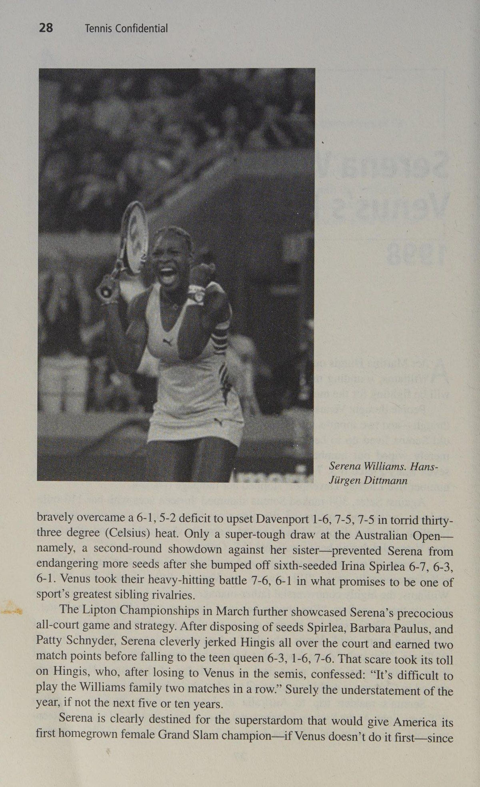
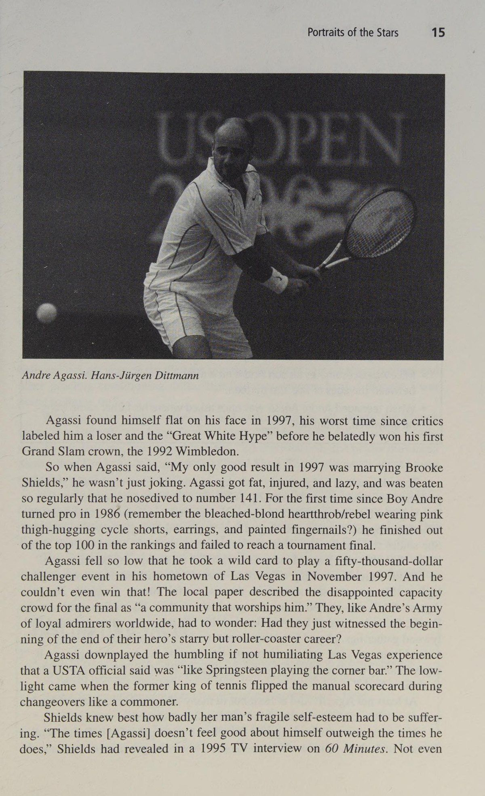
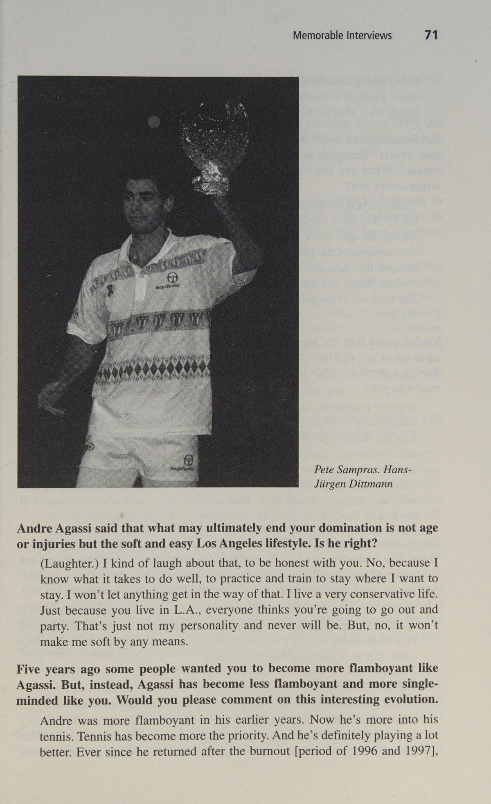
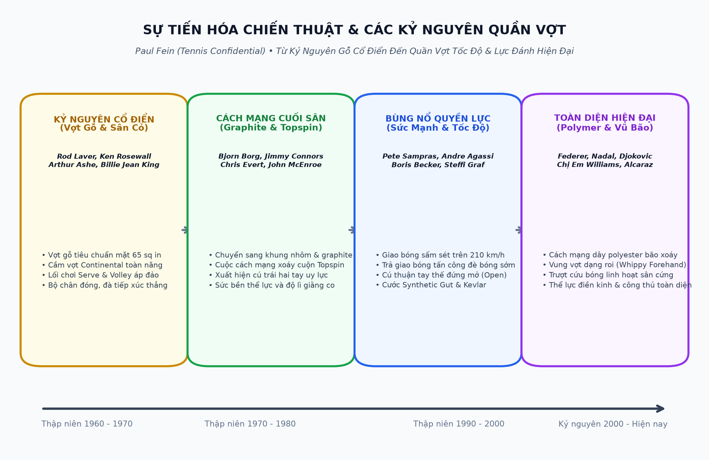
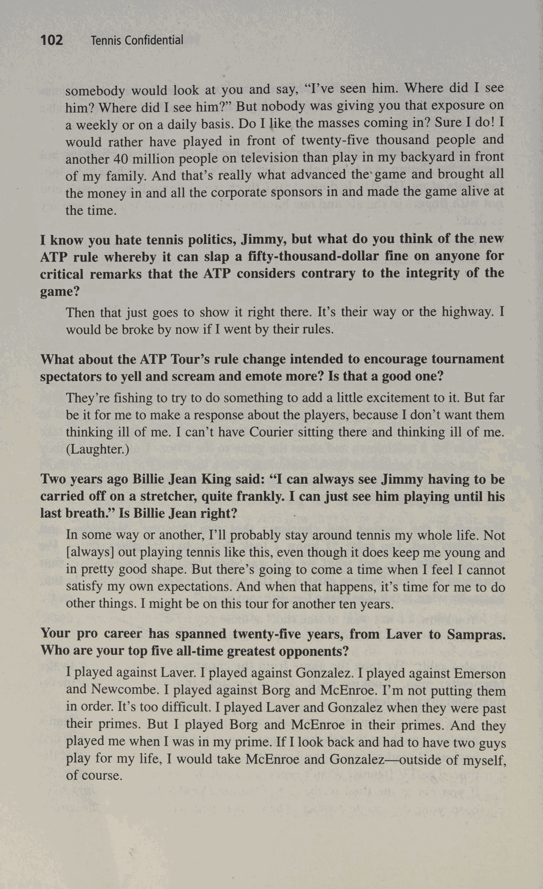
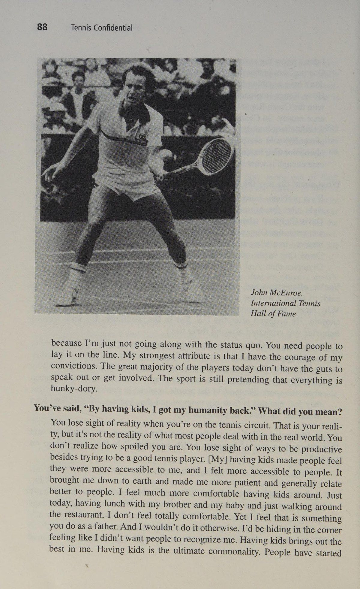
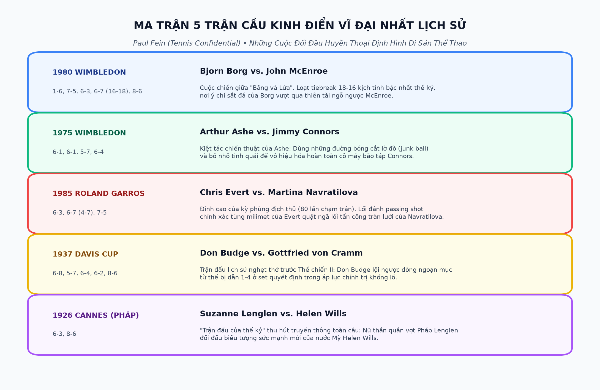
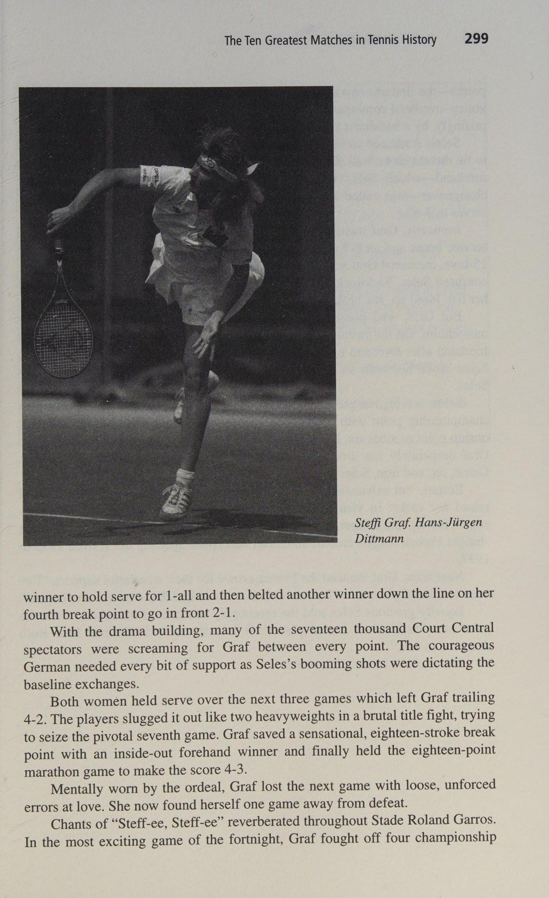

Hồ Sơ Tuyệt Mật Quần Vợt
Bản dịch Việt ngữ này chỉ dùng cho mục đích học tập cá nhân, phi thương mại. Bản quyền tác phẩm gốc thuộc về tác giả và nhà xuất bản.
Giới thiệu: Cận cảnh các huyền thoại quần vợt
- Giới thiệu chiếc mũ mà Venus và Serena Williams, Pete Sampras, Anna Kournikova và Andre Agassi thực sự thích? Và cảm giác như thế nào khi ở gần John McEnroe, Martina Navratilova và Jimmy Connors? Những người hâm mộ quần vợt thường hỏi tôi về những huyền thoại này khi họ không làm phiền tôi bằng những ý kiến thẳng thắn về vấn đề nóng bỏng mới nhất. Những người hâm mộ quần vợt rất cuồng nhiệt vì đây là môn thể thao cá nhân—mặc dù là đánh đôi—và những tay vợt hàng đầu của môn này là những người có chủ nghĩa cá nhân cao độ, luôn thu hút sự chú ý của chúng tôi.
Bud Collins, Boston Globe/NBC April 26, 2001 hat are Venus and Serena Williams, Pete Sampras, Anna Kournikova, and
Bên cạnh việc trình diễn ngoạn mục, họ còn thể hiện bản thân thông qua cuộc sống hấp dẫn, không quá riêng tư. Bạn trai mới nhất của Anna, biệt thự mới trị giá 23 triệu đô la của Andre, nơi anh và Steffi sẽ sống, nhiều hoạt động kinh doanh, giải trí và giáo dục của vợ chồng Williams, và tất cả những lời nói của họ cũng quan trọng như những cú vô lê trên sân của họ. Những người theo dõi quần vợt, trái ngược với những người chơi một số môn thể thao khác, hầu như luôn chơi hoặc đã tự mình chơi trò chơi này, và điều đó khiến họ khá am hiểu.
Andre Agassi really like? And what is it like to be up close to John McEnroe, Martina Navratilova, and Jimmy Connors? Tennis fans often ask me about these legends when they aren’t bending my ear with their unminced opinions about the latest burning issue.
Họ cũng quan tâm sâu sắc đến một môn thể thao mà họ cảm thấy không nhận được sự chú ý từ các phương tiện truyền thông chính thống. Cuốn sách này là tập hợp những bài viết hay nhất của tôi đã xuất hiện trên các tạp chí và báo chí khắp thế giới. Nó là đỉnh cao của nỗ lực lâu năm của tôi nhằm mang đến cho những người yêu thích quần vợt những gì họ thích: những hiểu biết sâu sắc về những tay vợt hàng đầu, cơ hội hồi tưởng lại những trận đấu vĩ đại nhất trong lịch sử, những phân tích chuyên sâu về những tranh cãi quan trọng và những xu hướng hấp dẫn cũng như những trích dẫn thú vị và thông tin thú vị giúp tăng thêm hương vị cho môn thể thao hấp dẫn của chúng tôi.
Aficionados follow tennis so fervently because it’s an individual sport—doubles notwithstanding—and its top players are supreme individualists who command our attention. Besides performing spectacularly, they express themselves through compelling, not-so-private lives. Anna’s latest beau, Andre’s new $23-million mansion where he and Steffi will live, the Williamses’ many business, entertainment, and educational pursuits, and all their verbal volleys matter as much as their on-court volleys.
Tôi quyết định đưa vào các cuộc phỏng vấn Hỏi & Đáp, hầu như không bao giờ xuất hiện trong sách thể thao, bởi vì chúng cho phép các vận động viên thể hiện tâm trí và tiếng nói từ trái tim của họ một cách tốt nhất. Tôi hy vọng những cuộc phỏng vấn tôi đã chọn sẽ khai sáng và giúp bạn giải trí. Một số có thể làm bạn tức giận. Nhưng những người chơi quần vợt, ơn trời, đừng để vợt của họ nói lên tất cả. Trước khi chia sẻ cuộc phiêu lưu 25 năm của mình với tư cách là một nhà văn quần vợt tự do với bạn, tôi muốn đảm bảo với bạn rằng tôi chưa bao giờ chịu ơn một nhà xuất bản tạp chí cũng như bất kỳ tổ chức chuyên nghiệp và nghiệp dư nào quản lý quần vợt.
“Best 14” ranking system] now. Maybe you can tell me that.
Tôi đã cố gắng viết mà không sợ hãi hay thiên vị để cung cấp thông tin cho độc giả và cải thiện môn thể thao đã mang lại cho tôi và hàng triệu người khác niềm vui lớn như vậy. Tôi hy vọng bạn thích đọc cuốn Bí mật quần vợt một cách kỹ lưỡng như tôi thích viết nó. Vui lòng gửi email cho tôi theo địa chỉ lincjeff1 cs.com kèm theo nhận xét của bạn. XV
The big problem is that the new system still counts only eighteen tournaments, which means roughly 25 percent of the tournaments everyone plays in good faith don’t count. For example, you and Agassi have been victimized tremendously over the years by the “Best 14,” and the new system is only slightly better in this key respect.
Chương 1: Chị em nhà Williams: Cô bé lọ lem Ghetto
Venus Williams: Cô gái Lọ Lem Ghetto phải luôn bận rộn," Venus Williams nói ở giữa trận ra mắt giải Úc mở rộng. Đặc biệt nếu cô ấy đang có một cuộc phiêu lưu xuất sắc ở một vùng đất xa xôi. Vì vậy, Venus và em gái Serena, người em gái nóng bỏng nhất trong thể thao, bắt đầu nói chuyện rác rưởi, tuyên bố rằng họ có thể đánh bại bất kỳ kẻ nào xếp hạng từ hai trăm trở xuống. Karsten Braasch, người Đức đeo kính cận, hút thuốc, đã thực hiện thử thách với tư cách là người bảo vệ giới tính chống lại những đứa trẻ thần đồng từ đó. các bang.
4' girl’s got to keep herself busy,” Venus Williams was saying midway through her Australian Open debut. Especially if she’s having an excellent adventure in a faraway land.

“Tôi vừa quyết định muốn tham gia giải ATP,” Serena nói đùa. “Tuần này, tôi có thể tham gia hai chuyến du lịch.” Câu chuyện kỳ lạ và đáng kinh ngạc của Venus, “Kẻ phá hoại bữa tiệc”—như Sports Illustrated đã đặt tiêu đề đầy khiêu khích cho trận ra mắt giải Mỹ mở rộng năm 1997 của cô với tư cách là một tay vợt vào chung kết không được xếp hạt giống — và Serena đã xác nhận phần lớn những gì mà Arthur Ashe quá cố đã dự đoán vào năm 1988. “Với cơ hội giống như những người khác đã có, người da đen có thể thống trị quần vợt chỉ trong vòng mười đến mười lăm năm giống như họ đã thống trị các môn thể thao khác,” anh nói.
So Venus and younger sister Serena, the hottest sister act in sports, started trash talking, claiming they could beat any of the guys ranked two hundred or lower. A bespectacled, smoking German, number 203 Karsten Braasch, took up the challenge as the gender defender against the whiz kids from the States. “I just decided I wanted to join the ATP tour,’ quipped Serena. “This week, I can be on two tours.”
Thậm chí còn gây tranh cãi hơn, Ashe cũng cảnh báo trước rằng nếu người da đen tiếp quản, "điều đó sẽ tạo ra vấn đề vì hành vi, lời nói và cách ăn mặc của họ chỉ là một nền văn hóa hoàn toàn khác. Quần vợt là một môn thể thao rất bảo thủ có nguồn gốc sâu xa từ các quy tắc đạo đức và truyền thống của Anh thời Victoria. Các nhóm thiểu số—đặc biệt là các nhóm thiểu số nội thành—có các chuẩn mực văn hóa hoàn toàn trái ngược với các tiêu chuẩn của người Mỹ da trắng thuộc tầng lớp trung lưu và thượng lưu." Các vận động viên da đen to lớn hơn ngoài đời từ lâu đã khơi dậy những cảm xúc mạnh mẽ ở nước Mỹ nhạy cảm về chủng tộc.
The strange and startling saga of Venus, the “Party Crasher”—as Sports Illustrated provocatively headlined her smashing 1997 U.S. Open debut as an unseeded finalist—and Serena has already confirmed much of what the late
Khi Jack Johnson hào hoa, người yêu phụ nữ da trắng, trở thành nhà vô địch quyền anh hạng nặng da đen đầu tiên, người da trắng đã bạo loạn ở một số thành phố lớn. Muhammad Ali bị phỉ báng vì phản đối chiến tranh Việt Nam và
Arthur Ashe predicted in 1988. “Given the same chance as others have had, blacks could dominate tennis in as little as ten to fifteen years just as they have dominated in other sports,” he said. Even more controversially, Ashe also forewarned that if blacks did take over, “it will create problems because their behavior, speech, and dress is just a completely different culture. Tennis is a very conservative game with deep roots grounded in Victorian English moral codes and traditions. Minorities—in particular, inner-city minorities—have cultural norms that are diametrically opposite those of upper-middle- and upper-class white American standards.”
4 Bí mật quần vợt và Venus Williams. Hans- Jiirgen Diitmann từ chối được giới thiệu vào Quân đội Hoa Kỳ, nhưng “Người vĩ đại nhất”, khi anh ta tự quảng bá bản thân một cách khoa trương, đã nổi lên như một anh hùng bất kính đối với cả người da đen và người da trắng và là nhân vật thể thao nổi tiếng nhất thế kỷ. Althea Gibson dũng cảm tâm sự rằng cô ấy đã trở thành nhà vô địch da đen đầu tiên trong môn quần vợt một phần “vì tôi đã sẵn sàng nhận một số hình phạt tàn ác trong suốt chặng đường”. Cơ quan quần vợt Mỹ cuối cùng đã miễn cưỡng cho phép tay vợt 23 tuổi đến từ Harlem phá bỏ “rào cản màu sắc” và gia nhập Hoa Kỳ năm 1950.
Aficionados follow tennis so fervently because it’s an individual sport—doubles notwithstanding—and its top players are supreme individualists who command our attention. Besides performing spectacularly, they express themselves through compelling, not-so-private lives. Anna’s latest beau, Andre’s new $23-million mansion where he and Steffi will live, the Williamses’ many business, entertainment, and educational pursuits, and all their verbal volleys matter as much as their on-court volleys. Tennis followers, in contrast to those in some other sports, nearly always play or have played the game themselves, and that makes them quite knowledgeable. They also care deeply about a sport they feel doesn’t get a fair shake from the mainstream media. This book is a collection of my best articles, which have appeared in magazines and newspapers around the world. It culminates my longtime effort to give tennis lovers what they relish: insights into the top players, a chance to relive the greatest matches’ in history, in-depth analyses of momentous controversies and fascinating trends, and juicy quotes and amusing factoids that add yet more flavor to our riveting sport. I decided to include Q & A interviews, which almost never appear in sports books, because they best allow athletes to show their minds and speak from their hearts. I hope the interviews I’ve chosen will enlighten and entertain you. Some may enrage you. But tennis players, thank heaven, don’t let their rackets do all the talking. Before I share my twenty-five-year adventure as a freelance tennis writer with you, I would like to assure you that I have never been beholden to a magazine publisher nor to any of the professional and amateur organizations that administer tennis. I strived to write with neither fear nor favor both to inform my readers and to improve the sport that has given me and millions of others such great pleasure. I hope you enjoy reading Tennis Confidential as thoroughly as I’ve enjoyed writing it. Feel free to e-mail me at lincjeff1 @cs.com with your comments.
Chức vô địch tại Forest Hills, nhưng chỉ sau khi họ yêu cầu cô phải kiểm tra để xác nhận cô là phụ nữ. Khi Gibson tham gia chuyến lưu diễn nghiệp dư lúc bấy giờ, gần như tất cả các cô gái da trắng đều xa lánh cô ấy; Tệ hơn nữa, báo chí người da đen không ngừng chỉ trích cô vì cô “không đủ chiến binh” với tư cách là một nhà thập tự chinh vì dân quyền. Truyền thuyết về việc Venus thời trẻ trốn thoát khỏi khu rừng bê tông của Compton, California đầy rẫy tội phạm, để đến với những bãi cỏ trang nghiêm của Wimbledon đã được dàn dựng một cách khéo léo bởi người cha có phong cách riêng của cô, Richard.
Larger-than-life black athletes have long roiled powerful emotions in racesensitive America. When flamboyant Jack Johnson, who romanced white women, became the first black heavyweight boxing champion, whites rioted in several major cities. Muhammad Ali was vilified for opposing the Vietnam War and refusing to be inducted into the U.S. Army, but “The Greatest,’ as he bombastically promoted himself, emerged as an irreverent hero to both blacks and whites and as the most famous sports figure of the century. Courageous Althea Gibson confided that she made it as the first black champion in tennis partly “because I was game to take a wicked amount of punishment along the way.” The American tennis establishment finally, and grudgingly, allowed the twenty-three-year-old from Harlem to break the “color barrier” and enter the 1950 U.S. Championships at Forest Hills, but only after they required her to be tested to confirm she was a woman. When Gibson played the then-amateur tour, nearly all the white girls shunned her; to make matters worse, the Negro press relentlessly criticized her because she was “not militant enough” as a civil rights crusader.
Giống như Ali
The legend of how young Venus escaped from the concrete jungle of crime-ridden Compton, California, to grace the stately lawns of staid Wimbledon has been cleverly orchestrated by her idiosyncratic father, Richard. With an Ali-like flair for sucking the media into his Venus flytrap, Williams engagingly relates how Venus and Serena ducked bullets during their practice sessions by hitting the ground and rolling toward the gate. “There were more AK-47s than schoolbooks,” says Williams, who claims in his newsletter that he was beaten up several times by gang members before gaining their respect. Fortunately, the local hoodlums in their notorious South Central Los Angeles neighborhood generally took pride in the tennis prodigies and protected them.
Chân dung của Stars 5 có khả năng hút giới truyền thông vào bẫy ruồi Venus của mình, Williams kể lại một cách hấp dẫn cách Venus và Serena né đạn trong các buổi luyện tập của họ bằng cách chạm đất và lăn về phía cổng. Williams cho biết: “Có nhiều AK-47 hơn sách học,” ông nói trong bản tin rằng ông đã bị các thành viên băng đảng đánh đập nhiều lần trước khi được họ tôn trọng. May mắn thay, những tên trùm đầu địa phương ở khu Nam Trung tâm Los Angeles khét tiếng của chúng thường tự hào về những thần đồng quần vợt và bảo vệ họ.
The legend of how young Venus escaped from the concrete jungle of crime-ridden Compton, California, to grace the stately lawns of staid Wimbledon has been cleverly orchestrated by her idiosyncratic father, Richard. With an Ali-like flair for sucking the media into his Venus flytrap, Williams engagingly relates how Venus and Serena ducked bullets during their practice sessions by hitting the ground and rolling toward the gate. “There were more AK-47s than schoolbooks,” says Williams, who claims in his newsletter that he was beaten up several times by gang members before gaining their respect. Fortunately, the local hoodlums in their notorious South Central Los Angeles neighborhood generally took pride in the tennis prodigies and protected them.
Sinh ra không cha và nghèo ở Shreveport, Louisiana, Richard Williams làm nghề trồng bông khi còn là một thiếu niên trước khi chuyển đến Chicago và sau đó là Los Angeles, nơi ông thành lập một công ty bảo mật nhỏ. (Trong cuốn sách Venus Envy xuất bản năm 2001, tác giả L. Jon Wertheim đã điều tra tuyên bố của Williams và viết: “Những người biết Richard khi còn nhỏ đều nói rằng câu chuyện [về việc anh là con trai một người trồng trọt và hái bông] là vô lý.) Anh lần đầu tiên chú ý đến quần vợt vào năm 1978, hai năm trước khi Venus ra đời, khi anh thấy Virginia Ruzici nhận được 35.000 đô la tiền thưởng khi vô địch một giải đấu, nhiều hơn số tiền anh kiếm được trong một năm.
The legend of how young Venus escaped from the concrete jungle of crime-ridden Compton, California, to grace the stately lawns of staid Wimbledon has been cleverly orchestrated by her idiosyncratic father, Richard. With an Ali-like flair for sucking the media into his Venus flytrap, Williams engagingly relates how Venus and Serena ducked bullets during their practice sessions by hitting the ground and rolling toward the gate. “There were more AK-47s than schoolbooks,” says Williams, who claims in his newsletter that he was beaten up several times by gang members before gaining their respect. Fortunately, the local hoodlums in their notorious South Central Los Angeles neighborhood generally took pride in the tennis prodigies and protected them.
Vì vậy, anh ấy nói với vợ mình, Oracene, "Hãy sinh hai đứa con, cho chúng chơi quần vợt và chúng sẽ trở thành siêu sao." Họ đã có ba cô gái và Oracene nghĩ anh ta bị điên. Theo truyền thuyết, khi Venus bốn tuổi rưỡi chơi lần đầu tiên, cô bé đã đánh được 550 quả bóng mà không trượt trong khoảng 45 phút. Đến năm sáu tuổi, cô sống và hít thở quần vợt một cách ám ảnh đến mức Williams “lấy từng chiếc vợt tennis và đập vỡ chúng” và không cho cô chơi trong một năm rưỡi tiếp theo.
Born fatherless and poor in Shreveport, Louisiana, Richard Williams picked cotton as a teenager before moving to Chicago and then Los Angeles, where he set up a small security firm. (In the 2001 book Venus Envy, author L. Jon
Từ chín đến mười một tuổi, Venus đã khủng bố giải đấu trẻ miền nam California, lập kỷ lục hoàn hảo 63-0, trong khi Serena, trẻ hơn mười lăm tháng, cũng có sức tàn phá tương đương. Williams mệnh danh Venus là “Cô bé lọ lem khu ổ chuột” và tin chắc rằng cô ấy sẽ là tấm vé cho anh đến một cuộc sống tốt đẹp hơn. Ông Williams thẳng thắn thừa nhận: “J thực sự tham gia quần vợt để có thể kiếm được một triệu đô la. “Ngay từ đầu tôi đã không có động cơ đúng đắn. Khi đó tôi cũng giống như bất kỳ phụ huynh [quần vợt] nào khác.” Theo Williams, vòng đua cấp dưới đã cho anh thấy các bậc cha mẹ, bị say mê bởi sự cám dỗ của tài sản và danh tiếng tiềm năng, đã làm tổn thương con cái họ như thế nào.
Wertheim investigated Williams’s claim and wrote: “Those who knew Richard as a child say the story [of his being the son of a sharecropper and his picking cotton} is absurd.) He first took notice of tennis in 1978, two years before Venus was born, when he saw Virginia Ruzici receive thirty-five thousand dollars in prize money for winning a tournament, more than he earned in a year. So he said to his wife, Oracene, “Let’s make two kids, put them in tennis, and they’ll be superstars.” They already had three girls, and Oracene thought he was crazy. As the legend goes, when four-and-a-half-year-old Venus played for the first time, she hit 550 balls without missing in about forty-five minutes. By age six, she lived and breathed tennis so obsessively that Williams “took every one of them tennis rackets and broke ’em up” and wouldn’t let her play for the next year and a half.
“Bạn thấy tất cả các bác sĩ da trắng và cách họ đánh đập con mình,” Williams nhớ lại. “Tôi đã từng thấy những cô gái sợ bước ra sân với Venus và sợ gấp mười lần bước ra khỏi sân sau đó. Tôi đã từng thấy các bậc cha mẹ nói: “Mày để thằng mọi đen đó giết mày như thế đấy”. Thất vọng, Williams vĩnh viễn rút các cô con gái tài năng của mình ra khỏi cuộc thi cấp cơ sở. Vì chưa có nhà vô địch quần vợt nào bỏ qua kinh nghiệm quý báu của các giải đấu cấp cơ sở nên động thái này đã thách thức sự hiểu biết thông thường và tỏ ra vô cùng gây tranh cãi.
Not that he was sitting next to Laney at Cannes in 1926 when Suzanne Lenglen turned back Helen Wills in a clash of goddesses that some still consider the “match of the century.” (Certainly it was front-page stuff then across the planet.) But he writes about Suzanne and Helen’s lone meeting (also Cochet’s inexplicable comeback over Tilden at Wimbledon the following year) with authority and respect. Paul’s a today guy, all right, yet one with knowledge of and regard for the game’s entire panorama. He is more than an aficionado. Paul’s understanding of the game is that of someone who has been embroiled in it at a high level: as a player (Cornell varsity and top-class New England tournament competitor among his credits); professional coach; umpire and line judge; tournament organizer; and broadcaster. Like so many enamoured of the game, he had an early up-close relationship as a tournament ball boy. He retains a boy’s excitement at discovering the fascination of tennis, even as he looks at it now as a connoisseur and critic. Although Paul didn’t attain the eminence on court of two of his Springfield, Massachusetts, townsmen, Alfred Chapin and Tim Mayotte (top-ten Americans of the 1920s and 1980s, respectively), he’s well aware of the difficulties and means of such exceptional achievement. Paul Fein lets you in on the whole tennis picture, and you see it better through his eyes and words. I’m sure you’ll enjoy it as I have, and as I suspect Al Laney would have, too.
Nó cũng nâng cao huyền thoại hoặc, như một số người hoài nghi buộc tội, huyền thoại. Báo chí, các tay vợt, huấn luyện viên, phụ huynh và tổ chức quần vợt không thể hiểu được Williamses. Người cha, người ra quyết định tất cả, có bị điên không, hay ông ta điên như một con cáo? Và những cô con gái được nhiều người biết đến của ông tốt đến mức nào? Bí ẩn đã mê hoặc thế giới quần vợt trong ba năm rưỡi sau khi gia đình chuyển đến Florida, nơi Rick Macci được đánh giá cao đã huấn luyện họ tại
From age nine to eleven, Venus terrorized the southern California junior circuit, racking up a perfect 63-0 record, while Serena, fifteen months younger, was almost as devastating. Williams dubbed Venus the “Ghetto Cinderella” and was convinced that she’d be his ticket to a better life. “J really got into tennis so I could get a million dollars,’ candidly admits Mr. Williams. “I didn’t have the right motives in the beginning at all. I was just like any other [tennis] parent then.” The junior circuit, according to Williams, showed him how parents, intoxicated by the lure of potential fortune and fame, damaged their children. “You see all the white doctors and the way they beat their kids,” recalls Williams. “I’ve seen girls that were afraid to walk on the court with Venus and ten times as afraid to walk off the court afterwards. I’ve seen parents say, “You let that little nigger kill you like that.’ ” Disenchanted, Williams pulled his talented daughters out of junior competition forever. Since no tennis champion had ever bypassed the valuable experience of junior tournaments, the move defied conventional wisdom and proved extremely controversial. It also heightened the legend or, as some cynics charged, the myth. The press, players, coaches, parents, and the tennis establishment couldn’t figure out the Williamses. Was the father, who called all the shots, crazy, or was he crazy like a fox? And how good were his much-heralded daughters?
6 Bí mật quần vợt học viện quốc tế của anh. Macci mô tả Venus, khi đó là một phụ nữ-trẻ em cao 6'1 1/2", là "sự kết hợp độc đáo giữa Monica Seles và Martina Navratilova", và Serena là "vận động viên giỏi nhất mà tôi từng huấn luyện, dù trai hay gái." Cuộc nói chuyện có thể rẻ tiền, nhưng nó luôn đầy màu sắc và thường rất vui nhộn với Williamses. Và vì cả hai cô gái đều được cha của họ nói với họ trong nhiều năm rằng số phận của họ là sự vĩ đại nên họ cũng thực sự tin vào điều đó. Ở tuổi mười bốn, Venus cực kỳ tự tin, nghe giống như Ali thời kỳ đầu, reo lên: “Tôi có thể vượt xa số một.
The mystery fascinated the tennis world for three and a half years after the family moved to Florida, where highly regarded Rick Macci coached them at his international academy. Macci described Venus, then a 6'1 1/2" womanchild, as “a unique combination of Monica Seles and Martina Navratilova,’ and
Với cách tôi chơi, chiều cao, sự hung hãn, lòng can đảm và không sợ hãi, tôi có thể thay đổi trận đấu. Nó giống như Michael Jordan và những tay vợt còn lại ở NBA. Anh ấy đã đi trước một bước so với những người khác.” SỰ THẬT HẤP DẪN: e Venus Williams bắt đầu nhận thiết bị chơi quần vợt miễn phí từ các nhà sản xuất khi mới 6 tuổi. Oracene Williams đã tạo ra một dự án có tên là Chẩn đoán Đánh giá lại Giáo dục vì “đất nước chúng ta đang đào tạo ra những đứa trẻ thất học”. Nó nhằm mục đích “đánh giá lại học sinh và giúp họ điền vào những gì họ đã bỏ lỡ”. Oracene Williams đã lập kỷ lục 4-0 trong trận đấu tay đôi với những kẻ bắt nạt thời thơ ấu ở khu phố Saginaw, Michigan, khắc nghiệt của cô.
The mystery fascinated the tennis world for three and a half years after the family moved to Florida, where highly regarded Rick Macci coached them at his international academy. Macci described Venus, then a 6'1 1/2" womanchild, as “a unique combination of Monica Seles and Martina Navratilova,’ and Serena as “the best athlete I’ve ever coached, boy or girl.” Talk may be cheap, but it was always colorful and usually fun with the Williamses. And since both girls were told by their father for years that they were destined for greatness, they genuinely believed it, too. At fourteen, supremely confident Venus, sounding like the early Ali, crowed: “I could go beyond number one. With the way I play and my height and aggressiveness and courage and no fear, I could change the game. It’s like Michael Jordan and the rest of the players in the NBA. He was a step ahead of everyone else.” e Venus Williams started receiving free tennis equipment from manufacturers at age six. Oracene Williams created a project called Education Reevaluation Diagnostics because “our country is turning out uneducated children.” It aims “to re-evaluate students and help them fill in what they have missed.”
Richard Williams khiến mọi người mất thăng bằng với những cường điệu, nhận xét khó hiểu và mâu thuẫn của mình. Anh ấy thường khẳng định rằng “bất kỳ bậc cha mẹ nào cho phép con mình chơi quần vợt chuyên nghiệp trước khi cô ấy mười sáu tuổi đều là điên rồ và đáng bị xử bắn,” nhưng anh ấy đã làm chính xác điều đó với cô bé Venus mười bốn tuổi. Anh ấy chê bai áp lực và những kỳ vọng lớn đặt lên những đứa trẻ mê quần vợt ngay cả khi anh ấy nhiệt tình thổi phồng thần đồng của mình và khoe khoang: “Venus Williams được giới truyền thông chú ý nhiều hơn bất kỳ ai trong giới thể thao ngoại trừ Michael Jordan.” Những người hoài nghi chế nhạo rằng Williams chỉ đang cố gắng thổi phồng các hợp đồng chứng thực tiềm năng bằng cách từ chối tất cả các nhà thầu trong vài năm.
Oracene Williams notched a 4-0 record in fistfights against childhood bullies in her tough Saginaw, Michigan, neighborhood.
Anh ta cũng gây khó dễ cho tổ chức quần vợt bằng cách đánh bật nhiều công ty quản lý đang theo đuổi gia đình anh ta. Cuối cùng, vào năm 1995, Williams đã yêu cầu Venus ký hợp đồng chứng thực 5 năm với Reebok với số tiền được báo cáo là 12 triệu đô la - nhiều hơn hợp đồng trị giá 10 triệu đô la của tay vợt số một thế giới Martina Hingis với Tacchini - sau khi Venus chỉ chơi một giải đấu chuyên nghiệp. Màn ra mắt chuyên nghiệp của Venus hóa ra lại hấp dẫn và giật gân như được quảng cáo rầm rộ. Sau khi giành chiến thắng trong trận đấu đầu tiên tại một giải đấu ở Oakland vào tháng 11 năm 1994, Venus đã chứng tỏ mình thực sự khi vượt lên dẫn trước 6-3, 3-1 trước tay vợt số hai thế giới Arantxa Sanchez Vicario trước khi cúi đầu.
$10-million deal with Tacchini—after Venus had played only one pro tournament. Venus’s pro debut turned out to be as compelling and sensational as it was ballyhooed. After winning her first-round match at an Oakland tournament in
Venus, mười bốn tuổi, không những không tham gia một giải đấu nào trong ba năm rưỡi, mà thậm chí cô ấy còn không tập luyện một tuần trước khi có thành tích đáng chú ý của mình.
Bud Collins, Boston Globe/NBC April 26, 2001 hat are Venus and Serena Williams, Pete Sampras, Anna Kournikova, and
Chân dung buổi biểu diễn của Stars 7. Là một người theo chủ nghĩa bài trừ thánh tượng xảo quyệt, thay vào đó, Williams đã đưa các con gái của mình đến hội nghị Nhân chứng Giê-hô-va, Busch Gardens và Six Flags, một công viên giải trí ở Atlanta vào tuần đó. Anh ấy giải thích một cách hợp lý: “Nếu bạn hạnh phúc, cân bằng và không ai thúc ép bạn làm điều gì đó, thì bạn có thể cố gắng hết sức vì bạn cảm thấy như bạn đang làm việc đó cho chính mình”. Venus và Serena sẽ không kiệt sức vì “quá nhiều, quá sớm” như Jennifer Capriati đáng buồn đã làm.
November 1994, Venus proved she was for real when she exploded to a 6-3, 3-1 lead against world number two Arantxa Sanchez Vicario before bowing.
Venus chỉ chơi ba giải chuyên nghiệp vào năm 1995, năm giải vào năm 1996 và mười giải vào năm 1997. Trớ trêu thay, cô lại bị cho là chơi quá ít giải đấu và do đó cản trở sự phát triển của mình. Nhưng Williams, hiện là huấn luyện viên kiêm quản lý của Venus, không hề quan tâm đến những gì được gọi là chuyên gia nghĩ. Người đàn ông 55 tuổi nói với chương trình truyền hình 60 Minutes: “Bất kỳ ai là một vận động viên quần vợt chuyên nghiệp hoặc bất kỳ ai có liên quan đến quần vợt chuyên nghiệp, tôi đều không nghĩ nhiều về họ, không đời nào”. Trong nhiều năm, Williams đã nhiệt tình thuyết giảng về tầm quan trọng của giáo dục đại học, và ba cô con gái lớn của ông đều đang học đại học hoặc đã tốt nghiệp.
Not only hadn’t fourteen-year-old Venus played a tournament in three and a half years, but she hadn’t even practiced the week before her remarkable performance. A cunning iconoclast, Williams had instead taken his daughters that week to a Jehovah’s Witnesses assembly, Busch Gardens, and Six Flags, an amusement park in Atlanta. He sensibly explained: “If you’re happy and well-balanced and no one is pushing you to do something, then you can do your very best because you feel like you’re doing it for yourself.” Venus and Serena would not burn out from “too much, too soon” as Jennifer
"99% các ngôi sao cấp dưới không được giáo dục, họ nói không tốt, họ không thể hiện bản thân tốt", anh ấy buộc tội. "Tôi nghi ngờ liệu có ngôi sao cấp dưới nào từng sánh ngang với Venus và Serena khi nói đến học vấn và cách nói hay không. Các cô gái của tôi ngày nay có thể sánh ngang với người Nhật và người Đức về trình độ học vấn cao”. Bất chấp sự cường điệu, trong giải đấu chuyên nghiệp ngày nay—nơi mà những sinh viên tốt nghiệp đại học là những con chim quý hiếm và chỉ bằng tốt nghiệp trung học gần như là một biểu tượng của thành tích học tập—các cô gái Williams vẫn nổi bật.
Bud Collins, Boston Globe/NBC April 26, 2001 hat are Venus and Serena Williams, Pete Sampras, Anna Kournikova, and
Venus theo học tại trường Cao đẳng Cộng đồng Palm Beach, trong khi Serena theo học tại một trường tư thục và cũng sắp vào đại học. Luôn là những học sinh danh dự, họ thể hiện sự nhiệt tình trí tuệ của mình bằng cách mang theo sách giáo khoa đến các cuộc thi đấu và đọc truyện Shakespeare cho nhau nghe trong các chuyến đi bằng máy bay và ô tô. “Tôi thích Macbeth hơn hết vì đây là một vở kịch thực sự hay và tôi luôn muốn xem trực tiếp,” Serena nói. “Bài phát biểu “Ngày mai, ngày mai và ngày mai, / Bài phát biểu với nhịp độ nhỏ nhặt này từ ngày này sang ngày khác thật tuyệt vời.
Capriati sadly did. Venus played only three pro events in 1995, five in 1996, and ten in 1997. Ironically, she was faulted for playing too few tournaments and thus stifling her development. But Williams, now Venus’s coach and manager, didn’t at all care what the so-called experts thought. The fifty-five-year-old maverick told the TV program 60 Minutes: “Anyone who is a professional tennis player, or anyone who has anything to do with professional tennis, I don’t think very much of them, no way.” For years Williams had preached passionately about the importance of higher education, and his three oldest daughters were in college or graduates. “Ninety-nine percent of the junior stars are not educated, they don’t speak well, they don’t represent themselves well,’ he charged. “I doubt if any junior stars have ever come close to Venus and Serena when it comes to education and speaking. My girls today can match the Japanese and the Germans in their high levels of educational attainment.”
Tôi chưa bao giờ nghĩ mình sẽ là người nói điều này, nhưng nó thật sâu sắc.” Venus đã thể hiện sự tinh tế của mình trên sân khấu với màn ra mắt khó quên tại US Open 1997. Nó trùng hợp—hay đúng hơn là xung đột—với sự ra mắt của Sân vận động Arthur Ashe, trung tâm của cuộc cải tạo trị giá 254 triệu đô la của Trung tâm Quần vợt Quốc gia, và nó đã xác nhận một cách kỳ lạ dự đoán của Ashe về xung đột chủng tộc-văn hóa. Cô nàng xinh đẹp như tượng “Ghetto Cinderella”, đeo 1800 hạt màu đỏ, trắng và xanh kêu vang trên mái tóc tết, như cô ấy nhận xét, “khác biệt về mọi mặt so với người chơi chính thống” khi cô ấy áp đảo những đối thủ da trắng nhỏ hơn và kém thể thao hơn bằng những cú đánh mạnh và những cú giao bóng bùng nổ với tốc độ lên tới 119 dặm một giờ.
The hyperbole notwithstanding, on today’s pro tour—where college graduates are rare birds and a mere high school diploma is almost a badge of academic achievement—the Williams girls stand out. Venus takes courses at Palm Beach Community College, while Serena attends a private school and is also collegebound. Consistent honor students, they show their intellectual enthusiasm by taking textbooks with them to tournaments and reciting Shakespeare to each other during plane and car trips. “T like Macbeth most of all because it’s a really good play, and I’ve always wanted to see it live,’ says Serena. “The “Tomorrow, and tomorrow and tomorrow, / Creeps in this petty pace from day to day’ speech is wonderful. I never thought I’d be the one to say this, but it’s just deep.”
Cuộc tấn công không có tù nhân của Venus gợi nhớ đến Gibson, người tự mô tả mình là "hung hăng, năng động và xấu tính" khi giành chức vô địch Mỹ, Wimbledon và Pháp bốn mươi năm trước. Những điểm tương đồng cũng mở rộng đến tính cách ngoài sân đấu của họ. Thiên hướng khoe khoang của Venus—chẳng hạn như đánh bại Iva Majoli trong top 10 vào tháng 3 năm ngoái và sau đó
Venus showed her flair for the theatrical with an unforgettable debut at the 1997 U.S. Open. It coincided—or rather collided—with the debut of Arthur Ashe Stadium, the centerpiece of the National Tennis Center’s $254-million renovation, and it eerily confirmed Ashe’s prediction of racial-cultural clash.
8 Tennis Confidential tuyên bố, “Tôi có thể đã đánh bại cô ấy ba năm trước” —khiến những người chơi khác không hài lòng. Những người đứng đầu Monica Seles và Lindsay Davenport, trong số những người khác, đã tỏ ra khó chịu khi prima donna Venus chê bai họ bằng cách kiêu ngạo bước đi ngang qua và thậm chí không đáp lại một câu “Xin chào” thân thiện. Và một số tay vợt phàn nàn rằng cô ấy chỉ đi chơi với mẹ mình, Oracene và Serena và bỏ qua các sự kiện xã hội của giải đấu. Venus đã nói rằng cô ấy muốn trở thành Tiger Woods của quần vợt.
The statuesque “Ghetto Cinderella,’ wearing eighteen hundred clanging red, white, and blue beads in her braided hair, was, as she noted, “different in every way from the mainstream player” as she overpowered smaller and less athletic white opponents with punishing ground strokes and explosive serves up to 119 miles an hour. Venus’s take-no-prisoners attack was reminiscent of Gibson, who described herself as “aggressive, dynamic, and mean” when she won the U.S., Wimbledon, and French titles forty years ago.
Tuy nhiên, cho đến nay, cô vẫn thiếu tính cách hòa đồng, lạc quan của anh và thừa nhận: "Tôi không đến các giải đấu để kết bạn, đi dự tiệc hay trò chuyện. Tôi đến để trở thành người giỏi nhất, và tôi không xấu tính, độc ác và bẩn thỉu." Angela Buxton, người bạn lâu năm, bạn tâm giao và cựu đối tác đánh đôi của Gibson, cho biết: “Rõ ràng là cả hai đều có gánh nặng trên vai ở một mức độ nhất định”. “Điều đó khiến họ phát biểu một cách rất tự tin và vượt trội.
The similarities extended to their off-court personas, too. Venus’s penchant for boasting—such as defeating top-tenner Iva Majoli last March and afterwards claiming, “I could have beaten her three years ago” —turned off other players. Top-fivers Monica Seles and Lindsay Davenport, among others, were miffed when prima donna Venus dissed them by haughtily walking by and not even responding to a friendly “Hi.” And several players complained that she hung out exclusively with her mother, Oracene, and Serena and snubbed the tour’s social events. Venus has said she would like to be the Tiger Woods of tennis. But, so far anyway, she lacks his gregarious, upbeat personality and admits, “I don’t come to tournaments to make friends, to go to parties, to hold conversations. I come to be the best, and I’m not mean and cruel and dirty.”
Họ nói: 'Tôi sẽ đánh bại người này người kia' và 'Tôi sẽ trở thành người giỏi nhất' và 'Bạn không có cơ hội.' Althea đã làm chính xác điều tương tự vào những năm 50. Nó không dẫn tới sự nổi tiếng. Nhưng trò chơi này không dành cho việc đặt cược mức độ phổ biến. Mặt khác của đồng xu là cả hai đều đe dọa hoặc ít nhất là lọt vào đầu những người chơi khác ”. Trong trận bán kết US Open, những hành vi thiếu thận trọng trong quá khứ của Venus và sự thù địch chủng tộc sôi sục của cha cô đã ập đến và gần như làm lu mờ chiến thắng anh hùng của cô.
4' girl’s got to keep herself busy,” Venus Williams was saying midway through her Australian Open debut. Especially if she’s having an excellent adventure in a faraway land.
Một cuộc đối đầu là không thể tránh khỏi. Irina Spirlea phẫn nộ trước sự chú ý to lớn của giới truyền thông Venus, Anna Kournikova gợi cảm, tân binh mười lăm tuổi Mirjana Lucic và nữ hoàng tuổi teen Hingis nhận được trước sự bất lợi của những cựu binh trong tour du lịch như cô. Spirlea nóng tính, người đã bị loại khỏi một giải đấu ở Ý vì chửi bới và chỉ trích trọng tài, đã loại Kournikova, Amanda Coetzer và Seles số hai tại Flushing Meadows trước khi hạ gục Venus trong trận đấu hấp dẫn nhất năm 1997.
In the U.S. Open semifinals, Venus’s past indiscretions and her father’s seething racial hostility caught up with them and nearly overshadowed her heroic victory. A confrontation was inevitable. Irina Spirlea resented the tremendous media attention Venus, sexy Anna Kournikova, fifteen-year-old rookie sensation Mirjana Lucic, and teen queen Hingis received at the expense of tour veterans like herself.
Venus thoát khỏi điểm đầu tiên trong hai điểm của trận đấu bằng một cú vô-lê trái tay xuất sắc và ấn định tỷ số 7-6, 4-6, 7-6. Sau khi giành chiến thắng, Venus nhảy cẫng lên vì sung sướng và kêu lên: "Ôi trời, chuyện này cứ như một giấc mơ vậy. Mình phải bình tĩnh lại thôi. Vui quá". Tuy nhiên, Venus sẽ sớm phải tiết chế niềm hạnh phúc đó. Spirlea và Venus đã va chạm trong quá trình chuyển đổi ở tập thứ hai, và có vẻ như Spirlea cũng “cố tình” đầu gối cô ấy khi họ va chạm.
Hot-tempered Spirlea, who was thrown out of an Italian tournament for cursing and giving the finger to an umpire, had ousted Kournikova, Amanda Coetzer, and number two Seles at Flushing Meadows before slugging it out with Venus in the most riveting match of 1997. Venus escaped the first of two match points with a brilliant running backhand passing shot and pulled out a 7-6, 4-6, 7-6 cliffhanger. After winning, Venus jumped up and down in jubilation and cried out,
Trong khi Venus hạ thấp sự việc, Spirlea giận dữ đổ lỗi cho thái độ hống hách của Venus, nói với giới truyền thông: "Cô ấy nghĩ mình là Venus Williams chết tiệt, và cô ấy sẽ không quay đầu lại. Thế thôi. Tôi xin lỗi vì cô ấy cảm thấy như vậy." Williams tham gia Câu lạc bộ quần vợt Bad Dads bằng cách đổ thêm dầu vào lửa. Huấn luyện viên tinh quái, người không thường xuyên tham dự các trận đấu của con gái mình, đã gọi điện cho Associated Press từ Florida và gọi tình tiết va chạm là “một chuyện phân biệt chủng tộc” và gọi Spirlea là “một con gà tây trắng to, xấu xí, cao lớn”. Không trích dẫn bằng chứng hay nêu tên bất kỳ ai, Williams cũng cáo buộc rằng một số phụ nữ trong cuộc đua đã đưa ra nhận xét phân biệt chủng tộc về sao Kim.
Hot-tempered Spirlea, who was thrown out of an Italian tournament for cursing and giving the finger to an umpire, had ousted Kournikova, Amanda Coetzer, and number two Seles at Flushing Meadows before slugging it out with Venus in the most riveting match of 1997. Venus escaped the first of two match points with a brilliant running backhand passing shot and pulled out a 7-6, 4-6, 7-6 cliffhanger. After winning, Venus jumped up and down in jubilation and cried out, “Oh man, this is just like a dream. I’m gonna have to calm down. I’m so happy.” Venus would soon have to temper that happiness, though. Spirlea and Venus had collided during a second-set changeover, and it appeared that Spirlea also “intentionally” kneed her when they collided. While Venus downplayed the incident, Spirlea angrily blamed it on Venus’s imperious attitude, telling the media: “She thinks she’s the fucking Venus Williams, and she’s not going to turn. That’s it. I’m sorry she feels that way.” Williams joined the Bad Dads Club of tennis by pouring gasoline on the fire. The roguish coach, who infrequently attends his daughters’ matches, phoned the
Những lời cáo buộc chưa được chứng minh đã khiến nhiều người trong giới thể thao và giới truyền thông phẫn nộ, đồng thời khiến một số tay vợt trong giải đấu phủ nhận thẳng thừng.
Associated Press from Florida and termed the bumping episode “a racial thing” and called Spirlea “a big, ugly, tall, white turkey.” Without citing evidence or naming anyone, Williams also charged that several women on the circuit had made racist remarks about Venus. The unproved accusations outraged many in the sporting public and the media and prompted flat denials from several tour players.
Portraits of the Stars 9 Venus cuối cùng buộc phải trả lời những câu hỏi dai dẳng của phóng viên về cáo buộc của cha cô. Với sự khôn ngoan mà cha cô thiếu, Venus, 17 tuổi, nói: "Tôi nghĩ với khoảnh khắc này trong năm đầu tiên ở Sân vận động Arthur Ashe, tất cả tượng trưng cho việc mọi người ở bên nhau, mọi người đều có cơ hội thi đấu. Vì vậy, tôi nghĩ điều này chắc chắn đang hủy hoại tâm trạng, những câu hỏi về phân biệt chủng tộc." Williams đã chơi “lá bài đua” và thua.
Associated Press from Florida and termed the bumping episode “a racial thing” and called Spirlea “a big, ugly, tall, white turkey.” Without citing evidence or naming anyone, Williams also charged that several women on the circuit had made racist remarks about Venus. The unproved accusations outraged many in the sporting public and the media and prompted flat denials from several tour players. Venus was eventually forced to respond to reporters’ persistent questions about her father’s allegations. With a wisdom her father lacks, seventeen-year-old Venus said: “I think with this moment in the first year in Arthur Ashe Stadium, it all represents everyone being together, everyone having a chance to play. So I think this is definitely ruining the mood, these questions about racism.”
Màn trình diễn phụ khoa trương của anh ấy đã đầu độc bầu không khí, nhưng Venus vẫn đánh cắp chương trình bằng quần vợt ngoạn mục, lòng dũng cảm và nụ cười điện tử. Phân biệt chủng tộc? Không phải ở Flushing Meadows trong hai tuần hỗn loạn đó khi phần lớn khán giả ủng hộ phenom đen. Phân biệt chủng tộc? Venus đã chơi sáu trong số bảy trận đấu của mình trên sân vận động Arthur Ashe và chỉ có nữ hoàng tuổi teen được yêu mến Chrissie Evert trước đây mới nhận được sự đối xử như vậy của hoàng gia. Phân biệt chủng tộc? Chủ tịch Hiệp hội Quần vợt Hoa Kỳ Harry Marmion tuyên bố, “Venus Williams là điều tuyệt vời nhất đã xảy ra với quần vợt Mỹ trong 20 năm qua”. Nuôi dạy bố không phải là điều dễ dàng đối với các cô gái nhà Williams.
Williams had played “the race card” and lost. His tawdry sideshow poisoned the atmosphere, but Venus still stole the show with her spectacular tennis, courage, and electric smile. Racism? Not at Flushing Meadows during that tumultuous fortnight when the overwhelming majority of spectators rooted for the black phenom. Racism? Venus played six of her seven matches on the Arthur Ashe Stadium court, and only beloved teen queen Chrissie Evert had ever before received such royal treatment. Racism? United States Tennis Association president Harry Marmion proclaimed, “Venus Williams is the best thing that has happened to American tennis for the last twenty years.”
Sao Kim có thể là nữ thần tình yêu, nhưng sao Kim này phải đòi hỏi sự kiên nhẫn của Job để bảo vệ người cha ương ngạnh của mình trước làn sóng chỉ trích của giới truyền thông. Bực mình vì câu hỏi mà cô từ chối trả lời, Venus trừng mắt nghi ngờ với một nhà báo thể thao kỳ cựu người Mỹ vào năm ngoái và tham gia vào cuộc trao đổi gay gắt này trước khi kết thúc cuộc phỏng vấn TennisMatch. “Anh không định hỏi tôi câu hỏi đáng ghét đó sao?” “Đó là cái gì vậy?” “Tại sao tôi lại thân thiết với bố tôi như vậy?” “Thật ra thì không.” “Được rồi, tôi không trả lời câu đó nữa!” Trong khi Venus không tung ra cú đấm nào và nhận một số đòn nặng nề thì Serena, mười sáu tuổi, một tinh thần vui vẻ, vẫn bình thản đứng trên cuộc xung đột.
Bud Collins, Boston Globe/NBC April 26, 2001 hat are Venus and Serena Williams, Pete Sampras, Anna Kournikova, and
"Venus không thân thiện hay cởi mở với những người chơi khác," Davenport nói. "Nhưng tôi nghĩ Serena là người cuồng loạn - một cô gái thực sự vui tính và rất hướng ngoại." Serena có rất nhiều điều để cười và cười. Với tài năng thể thao và vóc dáng tốt nhất kể từ Martina Navratilova, cơ bắp cao 5'10", Serena nặng 155 pound bắt đầu xé nát vòng đua vào tháng 11 năm ngoái khi hạ gục số bốn Monica Seles và số bảy Mary Pierce ở Chicago. “Tôi luôn tin rằng Serena cuối cùng sẽ giỏi hơn,” Williams dự đoán.
Williams had played “the race card” and lost. His tawdry sideshow poisoned the atmosphere, but Venus still stole the show with her spectacular tennis, courage, and electric smile. Racism? Not at Flushing Meadows during that tumultuous fortnight when the overwhelming majority of spectators rooted for the black phenom. Racism? Venus played six of her seven matches on the Arthur Ashe Stadium court, and only beloved teen queen Chrissie Evert had ever before received such royal treatment. Racism? United States Tennis Association president Harry Marmion proclaimed, “Venus Williams is the best thing that has happened to American tennis for the last twenty years.” Bringing up Daddy isn’t easy for the Williams girls. Venus may have been the goddess of love, but this Venus must summon the patience of Job to defend her wayward father against the barrage of media criticism. Annoyed by a question she refused to answer, Venus glared suspiciously at a veteran American sportswriter last year and engaged in this testy exchange before terminating the TennisMatch interview. “Aren’t you going to ask me the hated question?” “Why do I get along so well with my dad?” “Well, I don’t answer that anymore!” While Venus has pulled no punches and taken some heavy hits, sixteen-year-old Serena, a blithe spirit, has stayed serenely above the fray. “Venus isn’t very friendly or outgoing with the other players,’ says Davenport. “But I think Serena’s hysterical—a really funny girl and very outgoing.”
“Những cô gái Ghetto,” như cách Williams gọi họ, đã phát triển mạnh mẽ—không có bố—trong bầu không khí Down Under đầy nắng, thoải mái mà họ ví như miền nam California. Tại Sydney International vào tháng 1, Serena đã hạ Lucic với tỷ số 7-5, 6-3, và mặc dù rõ ràng là khập khiễng, đã dũng cảm vượt qua tỷ số thâm hụt 6-1, 5-2 để hạ gục Davenport 1-6, 7-5, 7-5 trong cái nóng oi bức ba mươi ba độ (Celsius). Trong khi đó, Venus chật vật nhưng không bao giờ bỏ cuộc, lần đầu tiên đánh bại đội đầu bảng Hingis với tỷ số 3-6, 6-4, 7-5.
Serena has plenty to smile and laugh about. With the best athletic talent and physique since Martina Navratilova, muscular 5'10", 155-pound Serena started tearing up the circuit last November when she knocked off number four Monica Seles and number seven Mary Pierce in Chicago. “I’ve always believed Serena would ultimately be better,’ predicts Williams.
Davenport cho rằng Serena đã chơi tốt hơn Venus rồi, và trận hòa kém may mắn ở Oz Open đã giúp Serena có cơ hội chứng tỏ điều đó. Serena đánh bại hạt giống số sáu Spirlea với tỷ số 6-7, 6-3, 6-1 để quyết đấu tay đôi ở vòng hai trên sân Trung tâm
The “Ghetto Girls,’ as Williams calls them, thrived—sans Daddy—in the sunny, relaxed Down Under atmosphere, which they likened to southern California. At the Sydney International in January, Serena took out Lucic 7-5, 6-3, and despite visibly limping, bravely overcame a 6-1, 5-2 deficit to upset Davenport 1-6, 7-5, 7-5 in torrid thirty-three-degree (Celsius) heat. Meanwhile, Venus, cramping but never quitting, beat top-ranked Hingis 3-6, 6-4, 7-5 for the first time.
10 Bí mật về quần vợt đối với người bạn thân nhất của cô ấy—Venus. “Tình yêu thì liên quan gì tới chuyện đó?” Serena nói đùa. “Tôi không có thời gian để tiến tới từ từ; cả hai chúng tôi đều muốn trở thành số một.” Serena đọc vài cuốn Hamlet để chuẩn bị cho âm mưu nội bộ gia đình. Nhưng Venus đã xử lý áp lực của đối thủ tốt hơn và giành chiến thắng 7-6, 6-1 trong một trận đấu mà Oracene đã nói rất đúng: "Chúng tôi không thể thua. Gia đình thắng." Sau đó, Venus ôm Serena như tình chị em, và họ củng cố chủ đề “Chúng ta là gia đình” bằng cách nắm tay và đồng loạt cúi đầu.
Davenport said Serena was better than Venus already, and an unlucky draw at the Oz Open gave Serena the chance to prove it. Serena whacked another seed, number six Spirlea, 6-7, 6-3, 6-1 to set up a second-round duel on Center Court against her best friend—Venus. “What’s love got to do with it?” joked Serena. “I don’t have time to come along slowly; we both want to be number one.”
Nếu “Ghetto Girls” tiếp tục tiến bộ với tốc độ chóng mặt này—Serena, thật đáng kinh ngạc, đã đánh bại năm tay vợt trong top 10 chỉ trong kỷ lục giải đấu là mười sáu trận đấu—chắc chắn sẽ thấy thương hiệu đó cúi đầu sau nhiều trận chung kết Grand Slam. Giải vô địch Lipton gần như đã chứng kiến trận bán kết đầu tiên toàn Williams. Hingis xếp hạng cao nhất đã thoát khỏi hai điểm trận đấu trước Serena cũng thông minh không kém trong hiệp đấu trước khi Venus hạ gục Hoa hậu Thụy Sĩ không còn hay cười với tỷ số 6-2, 5-7, 6-2 ở bán kết và sau đó hạ gục Kournikova để giành danh hiệu lớn nhất của cô ấy.
The “Ghetto Girls,’ as Williams calls them, thrived—sans Daddy—in the sunny, relaxed Down Under atmosphere, which they likened to southern California. At the Sydney International in January, Serena took out Lucic 7-5, 6-3, and despite visibly limping, bravely overcame a 6-1, 5-2 deficit to upset Davenport 1-6, 7-5, 7-5 in torrid thirty-three-degree (Celsius) heat. Meanwhile, Venus, cramping but never quitting, beat top-ranked Hingis 3-6, 6-4, 7-5 for the first time.
Trong tuyên bố kém cỏi của năm, Hingis sau đó đã thừa nhận: “Thật khó để chơi hai trận liên tiếp với gia đình Williams.” Ở Úc, cả hai chị em đều đau khổ khi để thua bộ phim “Battle of the Sexes” vào tay Braasch. Serena, nạn nhân 6-1, thề sẽ trả thù: "Lần này năm sau tôi sẽ đánh bại anh ta. Tôi phải tập tạ.... Tôi phải tập luyện chăm chỉ để tham gia giải đấu dành cho nam". Mặc dù Venus thất thủ 6–2 trước Braasch và thua Davenport ở nội dung đánh đơn, nhưng cô đã giành được danh hiệu đôi nam nữ với Justin Gimelstob cho chiếc cúp Slam đầu tiên của mình.
The “Ghetto Girls,’ as Williams calls them, thrived—sans Daddy—in the sunny, relaxed Down Under atmosphere, which they likened to southern California. At the Sydney International in January, Serena took out Lucic 7-5, 6-3, and despite visibly limping, bravely overcame a 6-1, 5-2 deficit to upset Davenport 1-6, 7-5, 7-5 in torrid thirty-three-degree (Celsius) heat. Meanwhile, Venus, cramping but never quitting, beat top-ranked Hingis 3-6, 6-4, 7-5 for the first time.
Nếu cả thế giới đều là một sân khấu thì sao Kim đang dàn dựng nhiều màn trình diễn rực rỡ hơn. Cô nói: “Tôi đã học được rất nhiều điều ở Úc. "Cho dù tôi chơi tệ đến đâu, tôi vẫn có thể thắng. Tôi đang thắng và mọi thứ thật tuyệt vời. Serena và tôi đang thống trị trận đấu và chúng tôi sẽ không rời đi." SỰ THẬT HẤP DẪN: Thỏa thuận trị giá 40 triệu USD của Reebok với Venus Williams là thương vụ béo bở nhất đối với một nữ vận động viên trong lịch sử. e Một bức ảnh 8"x11", có chữ ký của Venus Williams được bán với giá 80 đô la tại Thế vận hội Sydney và có giá trị cao hơn tất cả các bức ảnh của vận động viên Thế vận hội khác về giá trị, theo một biểu đồ được công bố trên USA Today.
The Lipton Championships nearly showcased the first all-Williams semifinal. Top-ranked Hingis escaped two match points against equally clever Serena in the quarters before Venus pulverized the no-longer-smirking Swiss Miss 6-2, 5-7, 6-2 in the semis and then stopped Kournikova for her biggest title. In the understatement of the year, Hingis afterwards conceded: “It’s difficult to play the Williams family two matches in a row.” Although Venus fell 6-2 to Braasch and lost to Davenport in the singles quarters, she captured the mixed doubles title with Justin Gimelstob for her first Slam trophy. If all the world’s a stage, Venus is plotting many more brilliant performances. “I’ve learned a lot in Australia,” she said. “No matter how badly I am playing, I can still win. I’m winning and everything is wonderful. Serena and I are dominating the game, and we’re not leaving.” e Reebok’s $40-million agreement with Venus Williams is the most lucrative deal for a female athlete in history.
e Khi Tổng thống Bill Clinton gọi điện cho Venus Williams để chúc mừng cô đã vô địch giải Mỹ mở rộng năm 2000, cô ấy đã đưa ra hướng đi của cuộc trò chuyện và yêu cầu, "Làm ơn giảm thuế cho tôi được không?" Khi Tổng thống Clinton gợi ý rằng ông muốn có sự miễn trừ đặc biệt dành cho các vận động viên, Venus đã khôn ngoan nói: "Có nên đọc môi bạn không?" e Khi Venus và Serena Williams thi đấu trong trận chung kết Giải Mỹ mở rộng năm 2001 vào tối thứ Bảy, ngày 8 tháng 9, nó đánh dấu trận chung kết Grand Slam đầu tiên diễn ra vào giờ vàng, cuộc gặp đầu tiên giữa những người Mỹ gốc Phi trong một trận chung kết Grand Slam và trận chung kết đầu tiên giữa hai chị em tại một giải đấu lớn sau 117 năm.
e An 8"x11", autographed photo of Venus Williams sold for eighty dollars at the Sydney Olympics and outranked all other Olympics athletes’ photos in value, according to a chart published in USA Today.
Chân dung các vì sao 11 Thế giới hoang dã và lập dị của Williamses Richard: "Chúng tôi sẽ không lùi bước và trở thành những người tốt như họ nghĩ. Họ phải nhận ra chúng tôi đến từ Compton, California. Ở Compton, bạn không được coi thường." Venus: "Tôi thực sự chưa bao giờ chơi cho một khán giả không dành cho tôi. Sẽ đến ngày họ dành cho người chơi khác. Tôi sẽ chuẩn bị cho điều đó." Richard: "Venus không thực sự quan tâm đến việc giao lưu. Tôi chưa bao giờ thấy một võ sĩ quyền anh nào nói, 'Chúng ta hãy ăn bánh rán và cà phê [trước trận đấu]....
The legend of how young Venus escaped from the concrete jungle of crime-ridden Compton, California, to grace the stately lawns of staid Wimbledon has been cleverly orchestrated by her idiosyncratic father, Richard. With an Ali-like flair for sucking the media into his Venus flytrap, Williams engagingly relates how Venus and Serena ducked bullets during their practice sessions by hitting the ground and rolling toward the gate. “There were more AK-47s than schoolbooks,” says Williams, who claims in his newsletter that he was beaten up several times by gang members before gaining their respect. Fortunately, the local hoodlums in their notorious South Central Los Angeles neighborhood generally took pride in the tennis prodigies and protected them.
Lakers chưa bao giờ làm được điều đó trong môn bóng rổ. Các tay vợt bóng đá không làm điều đó.” Richard, về lý do tại sao ông không tham dự các giải đấu dành cho con gái mình: “Bạn ngồi đó, đầu quay hướng này, hướng này, vỗ tay như một con hải cẩu ở sở thú, và tôi mệt mỏi vì điều đó.” Serena, về việc cha cô cấm các con gái hẹn hò cho đến khi chúng mười tám tuổi: "Tôi thực sự không nghĩ đến điều đó lúc này. Hiện tại có những thứ quan trọng hơn nhiều, như sự nghiệp quần vợt của tôi, như học vấn của tôi, như Đức Giê-hô-va.
The legend of how young Venus escaped from the concrete jungle of crime-ridden Compton, California, to grace the stately lawns of staid Wimbledon has been cleverly orchestrated by her idiosyncratic father, Richard. With an Ali-like flair for sucking the media into his Venus flytrap, Williams engagingly relates how Venus and Serena ducked bullets during their practice sessions by hitting the ground and rolling toward the gate. “There were more AK-47s than schoolbooks,” says Williams, who claims in his newsletter that he was beaten up several times by gang members before gaining their respect. Fortunately, the local hoodlums in their notorious South Central Los Angeles neighborhood generally took pride in the tennis prodigies and protected them.
Và tất cả những điều đó có thể bùng nổ nếu tôi quá dính líu đến con trai.” Richard, về khả năng nhân đôi của các con gái mình: “Sẽ rất khó để bất cứ ai có thể đánh bại ‘Double Trouble.’ Họ di chuyển quá nhanh, họ vô lê quá tốt, họ giao bóng quá mạnh để các tay vợt có thể trả bóng ổn định. Họ sẽ trở thành số một ở nội dung đánh đôi trước khi trở thành số một ở nội dung đánh đơn.” Venus, ngay trước khi thua hạt giống số hai, Lindsay Davenport người Mỹ, tại Giải Úc mở rộng 1998: “Tôi là tay vợt xuất sắc nhất Hoa Kỳ.
The similarities extended to their off-court personas, too. Venus’s penchant for boasting—such as defeating top-tenner Iva Majoli last March and afterwards claiming, “I could have beaten her three years ago” —turned off other players. Top-fivers Monica Seles and Lindsay Davenport, among others, were miffed when prima donna Venus dissed them by haughtily walking by and not even responding to a friendly “Hi.” And several players complained that she hung out exclusively with her mother, Oracene, and Serena and snubbed the tour’s social events.
Thực ra, nhìn chung tôi là người chơi giỏi nhất.” Richard, khi gọi Irina Spirlea là “con gà tây trắng to, xấu xí, cao lớn”: “Tôi yêu Irina Spirlea. Tôi không thấy bất kỳ thành kiến nào cả. Tôi đã gặp cô ấy và xin lỗi vì đã đưa ra một tuyên bố ngu ngốc. Cô ấy là một người chuyên nghiệp và lẽ ra tôi không nên nói về cô ấy như vậy”. Venus, khi trở thành số một: “Tôi chưa bao giờ có [bất kỳ nghi ngờ nào] bởi vì tôi luôn được cho là mình sẽ là số một thế giới và tôi luôn tin vào điều đó.
“They both obviously have a chip on their shoulders to a certain extent,” says Angela Buxton, Gibson’s longtime friend, confidante, and former doubles partner. “That causes them to speak out in a very confident, superior manner. They say: ‘I will beat so-and-so’ and ‘I’m going to be the best’ and “You haven’t got a chance.’ Althea did exactly the same thing in the fifties. It doesn’t lead to popularity. But this game isn’t for popularity stakes. The other side of the coin is they both intimidate or at least get into the heads of the other players.”
Và đó là điều tôi đã nỗ lực hướng tới.” Richard: “Những đứa trẻ chơi tennis là những người có trình độ xã hội kém nhất mà bạn từng gặp. Không có trường học. Đánh vần không giỏi, suy nghĩ không tốt, cuộc sống của họ đều bị đảo lộn ”.
The legend of how young Venus escaped from the concrete jungle of crime-ridden Compton, California, to grace the stately lawns of staid Wimbledon has been cleverly orchestrated by her idiosyncratic father, Richard. With an Ali-like flair for sucking the media into his Venus flytrap, Williams engagingly relates how Venus and Serena ducked bullets during their practice sessions by hitting the ground and rolling toward the gate. “There were more AK-47s than schoolbooks,” says Williams, who claims in his newsletter that he was beaten up several times by gang members before gaining their respect. Fortunately, the local hoodlums in their notorious South Central Los Angeles neighborhood generally took pride in the tennis prodigies and protected them.
12 Tennis Confidential Serena, về việc trở thành Nhân Chứng Giê-hô-va: “Đó là số một trong cuộc đời tôi. Nếu không có Chúa, tôi sẽ không có gì cả. Tôn giáo đã giúp tôi nhận ra mình là ai. Nó đã giúp tôi không vượt quá chính mình và không khoa trương. Nó khiến tôi khiêm tốn.” Richard: “Nếu phải làm lại, tôi sẽ không đưa chúng vào quần vợt.” Zina Garrison-Jackson, tay vợt da đen lọt vào chung kết Wimbledon 1990: “Mọi người không hiểu Venus sẽ như thế nào vì cô ấy có cả một cuộc đua lôi kéo mình.
e When President Bill Clinton phoned Venus Williams to congratulate her for winning the 2000 U.S. Open, she dictated the direction of the conversation and requested, “Can you lower my taxes, please?” When President Clinton suggested he’d like to have a special exemption for athletes, Venus wisecracked, “Should | read your lips?” e When Venus and Serena Williams played in the 2001 U.S. Open final on Saturday evening, September 8, it marked the first prime-time Grand Slam final, the first meeting between African-Americans in a Grand Slam final, and the first final between sisters at a major tournament in 117 years. The Wild and Wacky World of the Williamses “We will not step back and be the nice people they think we are. They have to realize we’re from Compton, California. In Compton, you don’t take no bull.” “I’ve actually never played in an audience that wasn’t for me. The day will come when they are going to be for the other player. I’ll be prepared “Venus is not really interested in socializing. I have never seen a boxer say, in basketball. Football players don’t do it.” Richard, on why he doesn’t attend his daughters’ tournaments: “You sit there, with your head going this way, and this way, clappin’ like a seal at the zoo, and I’m tired of that.” Serena, on her father’s forbidding his daughters from dating until they are eighteen: “Tm not really thinking about that right now. There are things far more important now, like my tennis career, like my education, like Jehovah. And all that could explode if I got too involved with boys.” Richard, on his daughters’ doubles prowess: “Tt’ll be very difficult for anyone to beat ‘Double Trouble.’ They move too fast, they volley too well, they serve too hard for players to return consistently. They’ll become number one in doubles before they become number one Venus, just before losing to the number two seed, American Lindsay Davenport, “T am the best player in the U.S. Actually, I’m the best player in general.” Richard, on his calling Irina Spirlea “a big, ugly, tall, white turkey”: “T love Irina Spirlea. I don’t see any prejudice at all. I met with her and apologized for making a stupid statement. She’s a professional, and I shouldn’t have talked about her that way.” Venus, on becoming number one:
Cô ấy đang phải gánh rất nhiều trọng lượng.” Richard: “Điều duy nhất có thể khiến Venus không thể trở thành số một ở tuổi 18 là một tai nạn.” Oracene: “Chưa có ai đến gặp con gái tôi và chào cả. Họ nhìn theo hướng khác. Họ muốn chúng trở thành Stepin Fetchit của họ.” Katrina Adams, một tay vợt da đen kỳ cựu: “Mọi thứ nói về Tiger [Woods] đều tích cực. Và mọi điều nói về sao Kim đều tiêu cực.” Richard: “Có quá nhiều sự phân biệt chủng tộc ở Mỹ đến nỗi người Mỹ không quan tâm đến người da đen.” Richard, về việc khiến mọi người tức giận với những nhận xét mang tính kích động của mình: “Tôi không cố gắng làm hài lòng những người muốn tức giận.
Wertheim investigated Williams’s claim and wrote: “Those who knew Richard as a child say the story [of his being the son of a sharecropper and his picking cotton} is absurd.) He first took notice of tennis in 1978, two years before Venus was born, when he saw Virginia Ruzici receive thirty-five thousand dollars in prize money for winning a tournament, more than he earned in a year. So he said to his wife, Oracene, “Let’s make two kids, put them in tennis, and they’ll be superstars.” They already had three girls, and Oracene thought he was crazy.
Hãy để họ tức giận. Nếu có ai phải tức giận thì đó phải là tôi.” Billie Jean King: “Sao Kim thật tuyệt vời, chỉ thế thôi. Tuyệt vời. Cô ấy làm tôi nhớ đến Althea Gibson - cao, da đen, nhanh nhẹn, mạnh mẽ, đầy tham vọng và tự tin. Venus sẽ là Althea Gibson của thế kỷ XXI.” Richard: “Venus nên đi thẳng vào Đại sảnh Danh vọng. Dù sao thì cô ấy cũng sẽ ở đó, VẬY tại sao phải lãng phí thời gian?” Serena, sau khi được hỏi về cách cô ấy vùng lên thành công như vậy từ đường cuối sân trước Hingis ở tứ kết Lipton: “Rất nhiều người nghĩ rằng người da đen không thể tập hợp và chỉ nghĩ họ là vận động viên và không thể suy nghĩ.
Serena read some Hamlet to prepare for the intrafamily intrigue. But Venus handled the pressure of the sibling rivalry better and won 7-6, 6-1 in a match about which Oracene rightly said, “We couldn’t lose. The family wins.” Afterwards Venus gave Serena a sisterly hug,.and they reinforced the “We Are Family” theme by locking hands and bowing in unison. If the “Ghetto Girls” keep improving at this meteoric pace—Serena, amazingly, has knocked off five top-tenners in only a tour-record sixteen matches—expect to see that trademark bow after plenty of Grand Slam finals.
Như bạn có thể thấy, điều đó không đúng. Tôi có thể biểu tình. Sao Kim có thể tập hợp lại.”
The Lipton Championships nearly showcased the first all-Williams semifinal. Top-ranked Hingis escaped two match points against equally clever Serena in the quarters before Venus pulverized the no-longer-smirking Swiss Miss 6-2, 5-7,
Chân dung các vì sao 13 sao Kim: “Mọi người nói về tất cả áp lực này đối với các tay vợt trẻ, nhưng điều duy nhất khiến tôi căng thẳng lúc này là tất cả những công thức hóa học mà tôi phải học. Tôi sẽ nói rằng, về cơ bản, tôi là một người hay cười. Tôi thích vui chơi. Đôi khi, khi tôi nghĩ về toàn bộ chuyện này, nó chỉ khiến tôi bật cười.” Câu chuyện này đã nhận được giải thưởng Danh dự đầu tiên trong Ban Phi hư cấu của Cuộc thi Viết văn Bang Florida năm 1999 CNW/FFWA.
Zina Garrison-Jackson, the black 1990 Wimbledon finalist: “People don’t understand what it’s like for Venus because she has a whole race pulling for her. She’s carrying a lot of weight.” “The only thing that can keep Venus from becoming number one by the age of eighteen would be an accident.” “Nobody has ever walked up to my daughters and said hello. They look the other way. They want them to be their Stepin Fetchit.” Katrina Adams, a veteran black tour player: “Everything said about Tiger [Woods] has been positive. And everything said about Venus has been negative.” “There’s so much racism in America that Americans don’t care about black people.” Richard, on making people angry with his inflammatory remarks: “T’m not trying to please people who want to be angry. Let them be angry. If anyone should be angry, it should be me.” “Venus is awesome, that’s all. Awesome. She reminds me of Althea Gibson—tall, black, fast, powerful, ambitious, confident. Venus will be the Althea Gibson of the twenty-first century.” “Venus should go straight to the Hall of Fame. She’s going to be there any- Serena, after being asked about how she rallied so successfully from the baseline against Hingis in the Lipton quarterfinals: “A lot of people think that black people can’t rally and just think they’re athletes and can’t think. As you can see, that’s not true. I can rally. Venus can rally.” “People talk about all this pressure on young tennis players, but the only thing stressing me out right now is all these chemistry formulas I’ve got to learn. I would say that, basically, I’m a laugher. I like to have fun. Sometimes, when I think about this whole thing, it just makes me burst out
28 Bí mật quần vợt Serena Williams. Hans- Jiirgen Dittmann đã dũng cảm vượt qua tỷ số 6-1, 5-2 để hạ gục Davenport 1-6, 7-5, 7-5 trong cái nóng oi bức 33 độ C. Chỉ một trận hòa siêu khó tại Australian Open— cụ thể là trận đấu ở vòng hai với chị gái cô — đã ngăn Serena gây nguy hiểm cho nhiều hạt giống hơn sau khi cô đánh bại hạt giống thứ sáu Irina Spirlea với tỷ số 6-7, 6-3, 6-1. Venus đã giành chiến thắng nặng nề với tỷ số 7-6, 6-1 trong trận đấu hứa hẹn sẽ là một trong những đối thủ lớn nhất của môn thể thao này.
People thought Venus was crazy or arrogant or both. Only eight months later, though—and two months after Venus reached the U.S. Open final—sixteen-yearold Serena lived up to her sister’s hype at the Ameritech Cup in Chicago. She merely wiped out number twenty-seven Elena Likhovtseva 6-3, 7-5, number seven Mary Pierce 6-3, 7-6 and number four Monica Seles 4-6, 6-1, 6-1 before number five Lindsay Davenport stopped her rampage 6-4, 6-4. Against Seles, 304-ranked Serena slammed thirteen aces with her 110-milean-hour serves and outslugged the nine-time Grand Slam champion from the baseline. She also displayed more speed, versatile shot-making, and athleticism than Venus did during her sensational U.S. Open. Serena, fifteen months younger and nearly four inches shorter than Venus, self-deprecatingly says, “Ill always be Venus’s little sister’? But Richard Williams, the highly controversial father-manager-coach of the “Ghetto Girls,” as he calls them, predicts, “I’ve always believed Serena would ultimately be better.” “When Venus said her biggest rivalry would come from her sister, a lot of TV announcers said Venus shouldn’t disrespect Martina Hingis,” recalls Williams. “But only Venus knew that Serena had more talent than the girls out there, more power, and a great deal of knowledge of the game. How Serena played in Chicago is nothing compared to what she’ll be doing next year.”
Giải vô địch Lipton vào tháng 3 tiếp tục giới thiệu chiến lược và trò chơi trên toàn sân sớm phát triển của Serena. Sau khi loại bỏ các hạt giống Spirlea, Barbara Paulus và Patty Schnyder, Serena khéo léo giật Hingis khắp sân và kiếm được hai điểm trận đấu trước khi gục ngã trước nữ hoàng tuổi teen 6-3, 1-6, 7-6. Nỗi sợ hãi đó đã ảnh hưởng đến Hingis, người sau khi thua Venus ở bán kết đã thú nhận: “Thật khó để thi đấu với gia đình Williams hai trận liên tiếp.” Chắc chắn là sự đánh giá thấp của năm, nếu không phải là năm hoặc mười năm tới.
Serena’s maiden trip to Australia in January quickly proved outspoken Williams right. At the Sydney International, Serena drew first blood against fifteen-year-old Croat whiz kid Mirjana Lucic 7-5, 6-3, and despite visibly limping, bravely overcame a 6-1, 5-2 deficit to upset Davenport 1-6, 7-5, 7-5 in torrid thirty-three degree (Celsius) heat. Only a super-tough draw at the Australian Open— namely, a second-round showdown against her sister—prevented Serena from endangering more seeds after she bumped off sixth-seeded Irina Spirlea 6-7, 6-3, 6-1. Venus took their heavy-hitting battle 7-6, 6-1 in what promises to be one of sport’s greatest sibling rivalries. The Lipton Championships in March further showcased Serena’s precocious all-court game and strategy. After disposing of seeds Spirlea, Barbara Paulus, and
Serena rõ ràng được định sẵn cho vị trí siêu sao sẽ mang lại cho nước Mỹ nhà vô địch Grand Slam nữ cây nhà lá vườn đầu tiên — nếu Venus không làm được điều đó trước — kể từ
Serena read some Hamlet to prepare for the intrafamily intrigue. But Venus handled the pressure of the sibling rivalry better and won 7-6, 6-1 in a match about which Oracene rightly said, “We couldn’t lose. The family wins.” Afterwards Venus gave Serena a sisterly hug,.and they reinforced the “We Are Family” theme by locking hands and bowing in unison. If the “Ghetto Girls” keep improving at this meteoric pace—Serena, amazingly, has knocked off five top-tenners in only a tour-record sixteen matches—expect to see that trademark bow after plenty of Grand Slam finals.
Chân dung các ngôi sao 29 tuổi Chris Evert đã vô địch giải Pháp mở rộng năm 1986. Nhưng làm thế nào mà thần đồng mới nhất trong môn quần vợt lại kết thúc chuyến du đấu của mình ở Chicago chỉ sau 11 trận đấu chuyên nghiệp—và sau khi không thi đấu bất kỳ giải đấu cấp cơ sở nào trong gần 4 năm trước đó? Sự tự tin dồi dào phần nào giải thích được điều đó. Trong nhiều năm, Serena và Venus đã được cha của họ thông báo rằng họ sẽ là số một thế giới ở cả nội dung đơn và đôi. Sự thất vọng lớn của Serena đối với Seles không làm Rick Macci, người đã huấn luyện các cô gái từ tháng 9 năm 1991 đến tháng 7 năm 1995 ngạc nhiên: “Những tay vợt khác coi Seles như một siêu sao với những cú đánh mặt đất tuyệt vời và hàng loạt danh hiệu Grand Slam.
Patty Schnyder, Serena cleverly jerked Hingis all over the court and earned two match points before falling to the teen queen 6-3, 1-6, 7-6. That scare took its tol] on Hingis, who, after losing to Venus in the semis, confessed: “It’s difficult to play the Williams family two matches in a row.” Surely the understatement of the year, if not the next five or ten years. Serena is clearly destined for the superstardom that would give America its first homegrown female Grand Slam champion—if Venus doesn’t do it first—since aging Chris Evert won the French Open in 1986. But how did the newest prodigy in tennis pull off her tour de force in Chicago after only eleven professional matches—and after not playing any junior tournaments for nearly four years before that?
Serena đấu với Seles và thấy một đối thủ thừa cân, chậm chạp, không thể lực bằng cô ấy và cô ấy kỳ vọng sẽ giành chiến thắng. Serena phủ nhận suy nghĩ đó và gọi Seles là “một vận động viên tuyệt vời” nhưng nhấn mạnh: “Tôi muốn trở thành người giỏi nhất. Bất cứ điều gì cần thiết để đạt được điều đó là những gì tôi sẽ làm. SỰ THẬT HẤP DẪN: Vào năm 2000, Serena Williams cho biết địa điểm yêu thích của cô để ghé thăm là “tấm gương trong nhà tôi”. e Thần tượng quần vợt của Serena Williams là Billie Jean King, Maureen Connolly và Althea Gibson.
Abundant self-belief partly explains it. For years Serena and Venus have been told by their father that they’ll be number one in the world in both singles and doubles. Serena’s huge upset over Seles didn’t surprise Rick Macci, who coached the girls from September 1991 to July 1995: “Other players see Seles as a superstar with great ground strokes and a bunch of Grand Slam titles. Serena plays Seles and sees an overweight, slow opponent not as athletic as her, and she Serena denies thinking that and calls Seles “a great athlete” but stresses, “I want to be the best. Whatever it takes to get there is what I’m going to do.”
e Phương châm của Serena Williams là: “ tìm kiếm sự lãng mạn.” Sự huấn luyện hàng đầu của Macci và sự hướng dẫn sau đó của cha họ - bất chấp quan điểm thông thường rằng các cô gái cần một huấn luyện viên đẳng cấp thế giới đã thành danh - đã chuẩn bị đầy đủ cho các thần đồng cho trận đấu chuyên nghiệp. Serena nói: “Tôi luôn luyện tập chăm chỉ và chơi nhiều trận, nhưng không nhất thiết phải thi đấu trong giải đấu. “Tôi nghĩ nếu tôi có thể đấu khá tốt với đàn ông thì tôi có thể xử lý được phụ nữ.” Williams, luôn là người khó kiểm soát trong khi là một người cha yêu thương, không cho phép các cô gái đấu với nhau trong luyện tập, mặc dù họ thường xuyên đánh nhau.
Bud Collins, Boston Globe/NBC April 26, 2001 hat are Venus and Serena Williams, Pete Sampras, Anna Kournikova, and
Serena khẳng định cô không cảm thấy có bất kỳ sự cạnh tranh anh chị em nào với Venus, “người bạn thân nhất của tôi”, nhưng nói thêm: “Cả hai chúng tôi đều có khả năng cạnh tranh rất lớn với nhau trong luyện tập vì khi đó sẽ không ai có cơ hội chống lại chúng tôi trong các giải đấu.” Giống như Hingis, Seles, Steffi Graf, Tracy Austin và những nữ hoàng tuổi teen trước đó, Serena cười khúc khích cứng rắn như đinh đóng cột khi thi đấu. Macci nhớ lại: “Khi Serena lên 10, cô ấy là cô gái duy nhất ở học viện chơi đuổi bắt bằng nắm đấm.
In 2000 Serena Williams said her favorite place to visit was “the mirror in e Serena Williams’s tennis idols are Billie Jean King, Maureen Connolly, and e Serena Williams’s motto is: “| seek romance.” Macci’s top-notch coaching and the subsequent guidance by their father— defying the conventional wisdom that the girls need an established world-class coach—have adequately prepared the prodigies for the pro game. “I’ve always been practicing hard and playing a lot of matches, but not necessarily tournament matches,” says Serena. “I figure if I can do pretty well against men, I can handle Williams, always the canny control freak while being a loving father, doesn’t allow the girls to play sets against each other in practice, although they do hit regularly. Serena insists she doesn’t feel any sibling rivalry toward Venus, “my best friend,” but adds: “We both have tremendous competitiveness against each other in practice because then no one will stand a chance against
Khi nhớ lại điều đó, Serena cười và kêu lên: “Chà! Tôi đã không nhận thức được rằng tôi đã làm điều đó. [Nhưng] vâng, tôi đồng ý rằng tôi không thực sự coi thường ai cả.” Nhận xét đó khiến tôi phải hỏi Serena về sự cố “va chạm” nổi tiếng tại giải Mỹ mở rộng năm 1997. Bạn có thể nhớ rằng sau vụ Spirlea Rumani khó chịu
Like Hingis, Seles, Steffi Graf, Tracy Austin, and earlier teen queens, giggling Serena is as tough as nails when she competes. “When Serena was ten, she was the only girl at the academy who played tag with a closed fist,” recalls Macci. When reminded of that, Serena laughs and exclaims, “Wow! I wasn’t aware that I did that. [But] yes, I agree that I don’t really take much crap from anyone.”
30 Tennis Confidential cố tình va chạm và nhào lộn với Venus trong một lần thay đổi người trong trận bán kết căng thẳng của họ, Richard Williams nói rằng Spirlea thật may mắn khi cô ấy va vào Venus chứ không phải Serena vì “cô ấy sẽ bị [bởi Serena] hạ gục.” Serena, nặng 155 pound, người sở hữu thể hình mạnh mẽ nhất trong làng quần vợt kể từ Martina Navratilova, nói: “Anh ấy đã phóng đại. “Bởi vì nếu tôi làm vậy, tôi sẽ bị [loại] khỏi giải đấu và có thể phải nghỉ thi đấu trong phần còn lại của năm.
Serena has plenty to smile and laugh about. With the best athletic talent and physique since Martina Navratilova, muscular 5'10", 155-pound Serena started tearing up the circuit last November when she knocked off number four Monica Seles and number seven Mary Pierce in Chicago. “I’ve always believed Serena would ultimately be better,’ predicts Williams.
Nó chỉ nhằm mục đích đùa thôi.” Williams đặt biệt danh cho Serena là “Blackenroe” vì thể lực tuyệt vời và đôi tay nhanh nhẹn của cô khiến anh nhớ đến John McEnroe. Lối chơi toàn diện của cô ấy hơi khác so với McEnroe, nhưng Serena thừa nhận, “Tôi từng muốn được giống như John McEnroe. Bố tôi đã đi xa đến mức đưa cho tôi cây vợt mà McEnroe đã sử dụng. Tôi chưa xây dựng lối chơi của mình giống anh ấy vì tôi không giao bóng và vô lê nhiều như anh ấy. Tôi muốn được giống như anh ấy như một con người. Anh ấy vướng vào rất nhiều tranh cãi.
That remark prompted me to ask Serena about the famous “bumping” incident at the 1997 U.S. Open. You may remember that after nasty Romanian Spirlea intentionally collided with and kneed Venus during a changeover in their tense semifinal, Richard Williams said Spirlea was lucky she bumped into Venus and not Serena because “she would have been decked [by Serena].” “He was exaggerating,” says the muscular, 5’10”, 155-pound Serena, who owns the most powerful physique in tennis since Martina Navratilova. “Because if I did that, I would have been [kicked] out of the tournament and probably out for the rest of the year. It was meant as a joke.”
Người gây tranh cãi đó- Sy lúc đó đối với tôi rất thú vị.” Giờ đây trưởng thành hơn, Serena đã học được cách hạ thấp hoặc thậm chí xoa dịu tranh cãi. Khi tôi hỏi cô ấy liệu cô ấy có nghe thấy bất kỳ nhận xét phân biệt chủng tộc nào hoặc nhìn thấy bất kỳ sự cố phân biệt chủng tộc nào trong chuyến lưu diễn của phụ nữ hay không, như cha cô ấy đã cáo buộc, cô ấy trả lời: “Nếu có, tôi sẽ không muốn thảo luận về chúng”. Trong chuyến du lịch cùng Venus và mẹ cô, Oracene, tới Anh, Pháp và Nga—nơi “bộ ba đã hoàn toàn quyến rũ Thị trưởng Luzhkov tại một buổi chiêu đãi riêng tại Tòa thị chính Moscow,” theo Tennis Week—Serena đã thu thập được những kinh nghiệm quý giá trong và ngoài sân đấu.
Williams nicknamed Serena “Blackenroe” because her terrific athleticism and quick hands reminded him of John McEnroe. Her all-around game differs somewhat from McEnroe’s, but Serena admits, “I used to want to be like John McEnroe. My dad went so far as to give me the racket McEnroe used. I haven’t patterned my game after his because I don’t serve and volley as much as him. I wanted to be like him as a person. He got into a lot of arguments. That controver- Sy was very exciting for me back then.” More mature now, Serena has learned how to downplay or even defuse controversy. When I asked her if she had heard any racist remarks or seen any racial incidents on the women’s tour, as her father had alleged, she replied: “If I had, I wouldn’t want to discuss them.”
“Venus gặp một chút vấn đề khi kết thúc trận đấu, điều mà giờ đây cô ấy đã thành thạo,” Serena nói. "Cô ấy thắng set đầu tiên, thua set thứ hai và gần như không gỡ được nó ở set thứ ba. Và tôi đã có thể học cách kết thúc trận đấu mà không gặp khó khăn. Tôi nghĩ bí quyết là duy trì lối chơi quyết liệt và không để mất tập trung." Serena không gặp vấn đề gì khi kết thúc trận đấu và đặc biệt tự hào về thành tích cá nhân: “Mỗi trận tôi thi đấu, nếu thắng set đầu tiên, tôi không bao giờ thua set thứ hai.
Bud Collins, Boston Globe/NBC April 26, 2001 hat are Venus and Serena Williams, Pete Sampras, Anna Kournikova, and
Tôi đang cố gắng giữ danh tiếng đó, mặc dù tôi chắc chắn rằng một ngày nào đó nó [kỷ lục] sẽ phải kết thúc.” Serena cho rằng khả năng xử lý áp lực của môn quần vợt lớn chủ yếu là nhờ tính khí điềm tĩnh bẩm sinh của cô, nhưng cũng nhờ vào mười năm đầu tiên của cô, khi việc tránh đạn ở Compton, California đầy tội phạm, đã trở thành một cuộc phiêu lưu không mong muốn. SỰ THẬT HẤP DẪN: Trong giải Newsweek Champions Cup năm 1999, Serena Williams dán một tờ rơi trên cửa phòng thay đồ nam.
During her travels with Venus and her mother, Oracene, to England, France, and Russia—where “the threesome thoroughly charmed Mayor Luzhkov at a private reception at Moscow’s City Hall,” according to Tennis Week—Serena picked up valuable on-court and off-court experience. “Venus had a little problem closing out matches, which she’s mastered now,” says Serena. “She’d win the first set, lose the second, and barely pull it out in the third. And I was able to learn how to close it out without struggling. I think the secret is keeping up your aggressive game and not letting your concentration go.” Serena hasn’t had a problem closing out matches and is especially proud of a personal achievement: “Every match I play, if I win the first set, I never lose the second set. I’m trying to keep that reputation, even though I’m sure it [the streak] will have to end one day.” Serena attributes her ability to handle the pressure of big-time tennis mostly to her naturally calm temperament, but also to her first ten years, when ducking bullets in crime-ridden Compton, California, became an unwanted adventure.
Tờ rơi hiển thị một bức ảnh màu chụp cú đánh thuận tay của cô ấy và thử thách, "BẤT CỨ AI. MỌI LÚC. MỌI- Ở ĐÂU." Năm 2002 Serena Williams sẽ xuất hiện trong bộ phim hài mang tên Black Knight. L
During the 1999 Newsweek Champions Cup, Serena Williams posted a flyer on the door of the men’s locker room. The flyer displayed a color shot of her whacking a forehand and the challenge, “ANYONE. ANYTIME. ANY-
Portraits of the Stars 31 Mẹ cô từng mô tả khu ổ chuột đen của Compton là “nơi tồi tệ nhất để sống”. Serena đồng ý nhưng nói: "Tuy nhiên, tôi nghĩ điều đó là tốt nên chúng tôi sẽ hiểu [làm thế nào] để cứng rắn hơn, mạnh mẽ hơn và độc lập hơn một chút. Nếu bạn cứng rắn, bạn sẽ không thấy điều đó nguy hiểm như một số người nói." Cha của Serena điều hành một dịch vụ bảo vệ nhỏ cho đến năm 1990, khi tài năng quần vợt đầy hứa hẹn và tiềm năng thu nhập của các cô gái giúp gia đình trốn đến Florida.
The legend of how young Venus escaped from the concrete jungle of crime-ridden Compton, California, to grace the stately lawns of staid Wimbledon has been cleverly orchestrated by her idiosyncratic father, Richard. With an Ali-like flair for sucking the media into his Venus flytrap, Williams engagingly relates how Venus and Serena ducked bullets during their practice sessions by hitting the ground and rolling toward the gate. “There were more AK-47s than schoolbooks,” says Williams, who claims in his newsletter that he was beaten up several times by gang members before gaining their respect. Fortunately, the local hoodlums in their notorious South Central Los Angeles neighborhood generally took pride in the tennis prodigies and protected them.
Năm 1994, họ mua một khu đất rộng 11 mẫu Anh với một dinh thự, ba sân tennis và một cái ao ở một khu vực hẻo lánh của Palm Beach Gardens. Trong khi một chiếc Rolls Royce đang đậu trong gara, một chiếc ô tô hỏng nằm ngổn ngang ở sân trước, có lẽ là biểu tượng rõ ràng về xuất xứ của gia đình Williams. Gần như xấu hổ vì sự giàu có gần đây của họ - được thúc đẩy bởi hợp đồng trị giá 12 triệu đô la mà Venus đã ký với Reebok và hợp đồng chứng thực trị giá hàng triệu đô la trong 5 năm của cô với Puma International - Serena khẳng định ngôi nhà của cô “không hề sang trọng.
In 2002 Serena Williams will appear in a comedy called Black Knight. L Her mother once described Compton’s black ghetto as “the most deplorable place to live.” Serena agrees but says, “I think, though, it was good so we would understand [how] to be a little tougher and stronger and more independent. If you’re tough, you don’t find it as dangerous as some say it is.” Serena’s father ran a small security-guard service until 1990, when the girls’ promising tennis talent and income potential enabled the family to escape to
Đó chỉ là nơi ở của chúng tôi. Và một ngày nào đó tất cả sẽ biến mất. Trên thực tế, tôi giữ mọi thứ trong quan điểm. Tôi không bao giờ quên mình đã xuất phát từ đâu và hôm qua tôi đã quay lại những khu vực khó khăn hơn [của Compton] để thăm quan. Tôi biết rằng tôi có thể phải quay lại đó nếu mọi chuyện không như ý muốn.” Williams thuyết giảng tầm quan trọng của giáo dục ở mọi cơ hội và thường quyết định xem liệu Venus và Serena có thể chơi một giải đấu nhất định dựa trên điểm học hiện tại của họ hay không. Williams khẳng định: “Với công nghệ ngày nay, nếu bạn không có trình độ học vấn, bạn sẽ lạc lối”.
The legend of how young Venus escaped from the concrete jungle of crime-ridden Compton, California, to grace the stately lawns of staid Wimbledon has been cleverly orchestrated by her idiosyncratic father, Richard. With an Ali-like flair for sucking the media into his Venus flytrap, Williams engagingly relates how Venus and Serena ducked bullets during their practice sessions by hitting the ground and rolling toward the gate. “There were more AK-47s than schoolbooks,” says Williams, who claims in his newsletter that he was beaten up several times by gang members before gaining their respect. Fortunately, the local hoodlums in their notorious South Central Los Angeles neighborhood generally took pride in the tennis prodigies and protected them.
"Bạn có thể là số một trong quần vợt, nhưng điều đó không có nghĩa là bạn sẽ là số một trong cuộc sống. Điều làm tôi ngạc nhiên là mọi người không nói về việc họ chơi quần vợt giỏi như thế nào; họ nói, "Bạn có những cô gái rất thông minh. Các bạn có những đứa con thật tuyệt vời.’ Đó là điều tôi cảm thấy hài lòng.” Không giống như một số đứa trẻ chỉ đơn giản trải qua các hoạt động ở trường, chị em nhà Williams thực sự thích thú với việc đó. Serena, học sinh cuối cấp tại một trường tư thục nhỏ và Venus, học tại trường Cao đẳng Cộng đồng Palm Beach, đều yêu thích các vở kịch của Shakespeare.
The hyperbole notwithstanding, on today’s pro tour—where college graduates are rare birds and a mere high school diploma is almost a badge of academic achievement—the Williams girls stand out. Venus takes courses at Palm Beach Community College, while Serena attends a private school and is also collegebound. Consistent honor students, they show their intellectual enthusiasm by taking textbooks with them to tournaments and reciting Shakespeare to each other during plane and car trips.
Khi được hỏi mục tiêu chính của cô trong năm 1998 là gì, Serena trả lời đầy thuyết phục: "Đạt điểm A môn động vật học." Nhưng đừng hiểu rằng cô ấy thích mọi thứ ở trường học. Trong khi trốn học để đánh các trưởng lão trong sân ở Lipton, Serena nhẹ nhàng phàn nàn: "Tôi đang bị tụt lại phía sau môn đại số II. Ý tôi là, nó thực sự buồn cười. Một số thứ bạn không bao giờ sử dụng trong cuộc sống. Bạn sử dụng vật lý rất nhiều mỗi ngày trong cuộc sống và tôi yêu vật lý. Nhưng bạn không sử dụng đại số II." Tất cả gia đình Williams (trừ Richard) đều là Nhân Chứng Giê-hô-va và có lòng sùng đạo sâu sắc.
Not even gaining an Olympic silver medal and the U.S. Open semis made well-adjusted Elena Dementieva completely happy last year. The comely Russian blonde revealed: “I would like to play tennis like a queen, but right now I am a queen without a great forehand.” Thomas Muster, whose killer instinct on court far surpassed his people skills and left him unpopular among his peers, confided: “I can look at myself in the mirror and know I’m a fair competitor on every surface and not a bad guy out there. But people never believe me.” Way back in the 1950s, Pancho Gonzalez, the child of Mexican immigrants, explained in his autobiography why he shied away from parties: “At a cocktail party I was like an olive that found its way into a glass of bourbon. In short, I was a misfit.” Now that’s real candor from a fierce and charismatic champion who envied the social graces and sophistication of many of his well-bred fellow players. Some superstars disdain the limelight, while others have mixed feelings about it. “I never wished to live this life. I just wanted to play tennis, not to become a public person,” revealed twenty-two-time Grand Slam winner Steffi Graf. “That is why I can be quite bitchy toward people.” Perhaps retirement and romancing Agassi will bring out Steffi’s sunnier side. Larger-than-life 1920s great “Big Bill” Tilden, an enigmatic bundle of contradictions, confided: “I can stand crowds only when I am working in front of
"Đó là số một trong cuộc đời tôi. Nếu không có Chúa, tôi sẽ không có gì cả," Serena nói. "Tôn giáo đã giúp tôi nhận ra mình là ai. Nó giúp tôi không vượt lên trên chính mình và không khoa trương. Nó giúp tôi khiêm tốn." Giống như Hingis cân đối, Serena có rất nhiều hoạt động khác để giúp cô luôn vui vẻ và thư giãn. "TI thích đi lướt sóng vào buổi sáng. Và tôi thích trượt patin, trượt ván và chơi ghi-ta", cô nói. Cô và Venus cũng rất vui vẻ với chú chó của họ, Princess.
Florida. In 1994 they purchased an eleven-acre estate with a mansion, three tennis courts, and a pond in a secluded area of Palm Beach Gardens. While a Rolls Royce is parked in the garage, a broken-down car sits incongruously in the front yard, presumably as a stark symbol of where the Williamses came from. Almost embarrassed by their recent wealth—propelled by the reported $12-million contract Venus signed with Reebok and her own five-year, multimillion-dollar endorsement deal with Puma International—Serena insists her home “is not luxurious. It’s just our place of residence. And one day it will all be gone. Actually, I keep things in perspective. I never forget where I came from, and yesterday I went back to the rougher areas [of Compton] to visit. I know that I could end up back there if things go the wrong way.” Williams preaches the importance of education at every opportunity and often decides whether Venus and Serena can play a given tournament based on their current school grades. “With technology nowadays, if you don’t have education, you’re lost,” insists Williams. “You can be number one in tennis, but that doesn’t mean you’re going to be number one in life. What amazes me is that people don’t talk about how well they play tennis; they say, “You have very intelligent girls. You have really wonderful kids.’ That’s what I feel good about.” Unlike some kids who simply go through the motions at school, the Williams sisters truly enjoy it. Serena, a senior at a small private school, and Venus, who takes courses at Palm Beach Community College, love Shakespeare’s plays. When asked what her main goal for 1998 is, Serena tellingly replied, “To get an But don’t get the idea that she likes everything about school. While skipping classes to whip her court elders at the Lipton, Serena mildly complained, “I’m getting behind in algebra II. I mean, it’s really ridiculous. Some things you never use in life. You use physics a lot every day in life, and I love physics. But you don’t use algebra II.” All the Williamses (except Richard) are Jehovah’s Witnesses and deeply religious. “It’s number one in my life. If it weren’t for God, I wouldn't have anything,” says Serena. “Religion has helped me to realize who I am. It’s helped me not to get ahead of myself and not to get bombastic. It keeps me humble.”
Bầu trời là giới hạn đối với “Những cô gái Ghetto”, và người ta chỉ có thể tự hỏi Arthur Ashe quá cố sẽ nghĩ gì về câu chuyện kỳ lạ và đáng kinh ngạc của
Much like the well-balanced Hingis, Serena has plenty of other activities to keep her happy and relaxed. “TI like to go surfing in the morning. And I like to rollerblade, skateboard, and play the guitar,’ she says. She and Venus also have fun with their dog, Princess.
32 Williams bí mật về quần vợt. Năm 1988 Ashe dự đoán: “Với cơ hội giống như những người khác đã có, người da đen sẽ thống trị môn thể thao của chúng tôi giống như họ đã làm trong các môn thể thao khác.” “Tôi nghĩ dự đoán của Arthur Ashe sẽ sớm trở thành sự thật với hai cô gái,” Williams nói một cách thực tế. "Venus và Serena có thể là những biểu tượng quan trọng nhất hiện nay trong quần vợt Mỹ. Khi bạn nhìn thấy các cô gái đến từ khu ổ chuột Compton, nơi chúng tôi đến, điều đó cho mọi người biết bạn có thể làm được điều đó.
The sky’s the limit for the “Ghetto Girls,” and one can only wonder what the late Arthur Ashe would have thought of the strange and startling saga of the Williamses. In 1988 Ashe predicted: “Given the same chance as others have had, blacks would dominate our sport as they have done in other sports.”
Điều quan trọng nhất là chỉ cần sống ở Mỹ, bạn sẽ có cơ hội chiến đấu để thành công—ngay cả khi bạn không có cơ hội giống hệt nhau—nếu bạn sẵn sàng chiến đấu vì nó, bất kể chủng tộc hay tín ngưỡng của bạn. Đó là điều tuyệt vời ở nước Mỹ.” Hai triển vọng mười tám tuổi ít được báo trước nhưng hấp dẫn khác từ miền nam California hình thành nên phong trào quyền lực da đen mới trong quần vợt nữ—Katrina Nimmers lanh lợi từ Compton và 6'1” Alexandra Stevenson ở San Diego.
“T think Arthur Ashe’s prediction will come true very shortly with the two girls,’ says Williams matter-of-factly. “Venus and Serena could be the most important symbols now in American tennis. When you see girls coming from the ghetto of Compton, where we came from, it lets everyone know you can do it. The most important thing is that just living in America you have a fighting chance to succeed—even if you don’t have exactly the same chance—if you’re willing to fight for it, regardless of your race or creed. That’s what’s so great about America.”
“Tôi đã theo dõi Katrina được một thời gian rồi,” Williams nói. "Cô ấy không giỏi bằng Venus, chậm hơn khoảng hai hoặc ba tháng. Cô ấy có lẽ ở trên trình độ của Serena. Alexandra có tài năng không thể tin được. Tiến sĩ Peter Fischer, huấn luyện viên đầu tiên của Pete Sampras, đã giúp phát huy tài năng của cô ấy rất nhiều. Hiện tại, Alexandra chơi quần vợt ở trình độ khoảng ba mươi hoặc ba mươi lăm thế giới. "Vào năm 2000, bốn tay vợt hàng đầu thế giới có thể là người Mỹ gốc Phi." dự đoán Williams.
Bud Collins, Boston Globe/NBC April 26, 2001 hat are Venus and Serena Williams, Pete Sampras, Anna Kournikova, and
Ashe sẽ thích điều đó. SỰ THẬT HẤP DẪN: e Năm 2001, Serena Williams thừa nhận rằng cô từng mua sắm trên Internet tới sáu giờ mỗi ngày cho đến khi cô cai được cơn nghiện. Vận động viên yêu thích của Serena Williams là siêu sao Kobe Bryant của Los Angeles Lakers, người nói rằng anh ấy luôn “dán mắt vào TV khi Venus và Serena đang thi đấu.” Năm 2001, Serena Williams được cho là đang hẹn hò với ngôi sao bóng đá chuyên nghiệp LaVar Arrington.
Bud Collins, Boston Globe/NBC April 26, 2001 hat are Venus and Serena Williams, Pete Sampras, Anna Kournikova, and
Gustavo Kuerten: Đi Ga-ga qua Guga A e chính là thứ mà quần vợt cần,” John McEnroe, một người khó chiều, phát biểu. Quả thực, Gustavo Kuerten được mệnh danh là “anh chàng tốt bụng” mà không hề nhạt nhẽo hay nhàm chán, và có một tính cách đầy màu sắc trừ những trò hề thô lỗ. Thêm vào đó phong cách thể thao ngoạn mục và bạn có thể hiểu tại sao mọi người lại thích thú với “Guga”. Đám đông yêu thích nụ cười thản nhiên của Kuerten trong câu chuyện cổ tích Pháp mở rộng của anh. Những tiếng hô “Guga, Guga” vang vọng ở Stade Roland Garros và đưa tay vợt người Brazil không được xếp hạt giống, không được báo trước đến với một trong những chức vô địch Grand Slam gây sốc và thú vị nhất Kỷ nguyên Mở rộng.
Two other far-less-heralded but intriguing eighteen-year-old prospects from southern California form the new black power movement in women’s tennis—mercurial Katrina Nimmers from Compton and 6’1” Alexandra Stevenson of San Diego. “I’ve watched Katrina for quite some time now,” says Williams. “She’s not quite as good as Venus, about two or three months behind. She’s probably above the level Serena is. Alexandra’s got unbelievable talent. Dr. Peter Fischer, Pete Sampras’s first coach, helped bring her talent out a great deal. Alexandra’s playing tennis on a level of about number thirty or thirty-five in the world now. “Tn the year 2000, the top four players in the world could be African-American.” predicts Williams. Ashe would have loved that. e In 2001 Serena Williams admitted that she used to shop on the Internet for as many as six hours a day until she kicked her addiction. Serena Williams's favorite athlete is Los Angeles Lakers superstar Kobe Bryant, who says he stays “glued to the TV when Venus and Serena are In 2001 Serena Williams was reportedly dating pro football star LaVar A e’s just what tennis needs,” raves hard-to-please John McEnroe. Indeed, Gustavo Kuerten is the proverbial “nice guy” without being bland or boring, and a colorful personality minus boorish antics. Throw in spectacular athleticism, and you can see why everyone is going ga-ga over “Guga.” Crowds loved Kuerten’s smiling insouciance during his fairy-tale French
Tay vợt xếp thứ sáu mươi sáu Kuerten, người chưa bao giờ vượt qua vòng tứ kết ATP và chỉ bị dẫn 2-7 trên sân đất nện năm nay, đã đánh bại các cựu vô địch Pháp Thomas Muster, Yevgeny Kafelnikov và Sergi Bruguera để giành danh hiệu danh giá. Việc Guga 20 tuổi trông giống như một bức tranh biếm họa trong phim hoạt hình càng khiến người hâm mộ quý mến anh hơn. Thân hình lực lưỡng, khuôn mặt ngây thơ, những lọn tóc xoăn bù xù và trang phục bắt mắt mang đến cho anh vẻ ngoài đặc biệt nhất so với bất kỳ tay vợt hàng đầu nào kể từ thời trẻ Agassi.
Open. Chants of “Guga, Guga” reverberated in Stade Roland Garros and buoyed the unseeded, unheralded Brazilian to one of the Open Era’s most shocking and exciting Grand Slam triumphs. The sixty-sixth-ranked Kuerten, who had never advanced past an ATP tour quarterfinal and was only 2-7 on clay this year, knocked off former French champions Thomas Muster, Yevgeny Kafelnikov, and
Kuerten cho biết bộ trang phục theo phong cách bóng đá màu vàng và xanh điện lòe loẹt của anh ấy — khiến chủ tịch Liên đoàn Quần vợt Pháp Christian Bimes ủng hộ quy định ăn mặc chặt chẽ hơn — "thể hiện cá tính của tôi." Ở Cincinnati, anh ấy hứa rằng quần áo của anh ấy sẽ hào nhoáng hơn của Agassi. Khi Kuerten lôi cuốn làm nên lịch sử với tư cách là người Brazil đầu tiên giành được danh hiệu Grand Slam đơn, anh trở thành anh hùng dân tộc mới và khơi dậy sự bùng nổ quần vợt ở Brazil. Doanh số bán vợt tennis đã tăng 40% ở quê hương Florianopolis của anh trong hai tuần lễ giải Pháp mở rộng, và các nhà sản xuất đã bán được 3 triệu USD trang phục thương hiệu của anh ở Brazil trong tuần sau giải đấu.
Open. Chants of “Guga, Guga” reverberated in Stade Roland Garros and buoyed the unseeded, unheralded Brazilian to one of the Open Era’s most shocking and exciting Grand Slam triumphs. The sixty-sixth-ranked Kuerten, who had never advanced past an ATP tour quarterfinal and was only 2-7 on clay this year, knocked off former French champions Thomas Muster, Yevgeny Kafelnikov, and Sergi Bruguera for the prestigious title. The fact that twenty-year-old Guga looks like a cartoon caricature endears him to fans even more. His stringbean body, ingenuous face, unkempt curls, and eye-catching attire give him the most distinctive appearance of any top player since the young Agassi. Kuerten says his gaudy gold and electric blue soccerstyle outfits—which prompted French Tennis Federation president Christian Bimes to advocate a stricter dress code—“show my personality.” In Cincinnati, he promised his clothes would be flashier than Agassi’s.
"Guga đã mang lại rất nhiều hạnh phúc cho người dân Brazil. Bạn không thể tưởng tượng được," Diana Gabanyi, giám đốc quảng cáo của anh ấy nói. “Mọi người trên taxi
When the charismatic Kuerten made history as the first Brazilian man to capture a Grand Slam singles title, he became the new national hero and ignited a tennis boom in Brazil. Tennis racket sales jumped 40 percent in his hometown of Florianopolis during the French Open fortnight, and manufacturers sold $3 million of his trademark outfits in Brazil in the week following the tournament.
Chương 2: Andre Agassi: Cuộc sống trên tàu lượn siêu tốc Agassi
Andre Agassi: That's Life—on the Agassi - Roller Coaster Đó là cuộc sống, đó là những gì người ta nói. Bạn đang thăng hoa vào tháng Tư, Bị hạ gục vào tháng Năm. Nhưng tôi biết tôi sẽ thay đổi giai điệu đó khi tôi trở lại đỉnh cao vào tháng Sáu. Từ kẻ đáng sợ trong môn quần vợt đến chàng trai quyến rũ đến ngôi sao già nua, Andre Agassi đã sống theo những ca từ sâu sắc mà Frank Sinatra đã hát trong “That’s Life”. Và thật là một chuyến đi tàu lượn siêu tốc không thể đoán trước mà người biểu diễn ở Las Vegas đã thực hiện trong suốt mười ba năm!
This story received a 1st Honorable Mention award in the Nonfiction Division of the 1999 CNW/FFWA Florida State Writing Competition. Life—on the Agassi - Roller Coaster That’s life, that’s what people say. But I know I’m gonna change that tune, When I’m back on top in June. From the enfant terrible of tennis to the charismatic heartthrob to the aging star,

Ngay khi Agassi bị loại vì kém thành tích ở tuổi 29, anh đã vô địch Pháp mở rộng một cách ngoạn mục để có được một Grand Slam trong sự nghiệp và một phần bất tử trong quần vợt. Chỉ có Rod Laver, Don Budge, Fred Perry và Roy Emerson trước đó đã giành được cả bốn danh hiệu đơn nam lớn, và Agassi đa năng đã trở thành người đầu tiên làm được điều đó trên ba mặt sân, cỏ, sân đất nện và sân cứng. Và sau đó, sau khi vào chung kết Wimbledon, anh đã đạt đến đỉnh cao trong mùa hè đáng nhớ của mình bằng chiến thắng ngoạn mục lần thứ hai tại Hoa Kỳ.
Andre Agassi has lived the poignant lyrics Frank Sinatra sang in “That’s Life.” And what an unpredictable roller-coaster ride the Las Vegas showman has taken for thirteen years!
Mở rộng danh hiệu và vươn lên vị trí số một thế giới. Agassi cho rằng chuyến du đấu của anh ở Paris là do "định mệnh tuyệt đối", nhưng vào tháng 5, anh có vẻ thất vọng hơn là con cưng của số phận. Khi đó anh và nữ diễn viên Brooke Shields đã tuyên bố ly hôn một cách công khai sau cuộc hôn nhân kéo dài hai năm. Trên sân, Agassi cũng lúng túng. Sau khi bị loại ở vòng 4 Giải Úc mở rộng và vòng đầu tiên của Lipton, anh đã vấp ngã trong trận mở màn sân đất nện ở châu Âu. Agassi luôn đầy màu sắc tâm sự: “Nếu tôi chơi như một kẻ khốn nạn thì tôi là một kẻ khốn nạn”. Đáng ngại hơn nữa, một chấn thương vai kéo dài đã khiến anh đau đớn đến mức anh suýt rút lui khỏi Roland Garros cho đến một ngày trước khi giải đấu bắt đầu.
Australia pulled out a 3-2 victory in the Challenge Round. It was the first of four straight Davis Cups Laver won with Roy Emerson and Neale Fraser. e In 1969 Rod Laver became the first player to win more than one hundred thousand dollars in prize money in one year. To stay cool on hot days, Laver sometimes wore wet cabbage leaves on his head under an Australian floppy sun hat. Fittingly, Laver grabbed his first Grand Slam singles title at the 1960 Australian Championships in Brisbane. After trailing Emerson 5-2 in the fifth set, “The Rocket” showed his incomparable talent for raising his game when it counted most by firing a fusillade of winners to take the last five games to reach the final. There, in another supreme test of skill and will in searing heat, Laver survived a match point and then outlasted a cramping Fraser on the seventh title point to prevail 8-6 in the fifth set. Hopman’s brutal training methods had paid off, as they would for the rest of super-fit Laver’s career. Fraser turned the tables on Laver in the 1960 Wimbledon and U.S. finals, while Emerson, who matched Laver in athleticism if not spectacular shots, beat him in the 1961 Australian and U.S. finals. But sandwiched between those 1961 setbacks, Laver crushed American Chuck McKinley in an astounding fifty-seven minutes for his first Wimbledon title. After taking the New South Wales Championships shortly before Christmas, Laver became a man with a plan for 1962. “I want to win the Australian, French, Wimbledon, and United States championships in one year,’ he declared. “Only one player has ever achieved the feat—America’s Don Budge.” For the next ten months, the reserved Laver let his racket do the talking and history-making. Lady Luck inevitably plays a role in any Grand Slam, and Laver was fortunate to face a weary Emerson in the 1962 Australian final. Emmo had played sixteen sets and 184 games in the previous two days due to a backlog caused by inclement weather, and the fresher Laver prevailed in a close four-setter.
Chân dung của các vì sao 15 Andre Agassi. Hans-Jiirgen Dittmann Agassi tự nhận thấy mình nằm sấp mặt vào năm 1997, thời điểm tồi tệ nhất của anh kể từ khi các nhà phê bình gán cho anh là kẻ thua cuộc và “Great White Hype” trước khi anh giành được vương miện Grand Slam đầu tiên một cách muộn màng, Wimbledon 1992. Vì vậy, khi Agassi nói: “Kết quả tốt duy nhất của tôi vào năm 1997 là kết hôn với Brooke Shields,” anh ấy không chỉ nói đùa. Agassi béo lên, bị thương, lười biếng và bị đánh thường xuyên đến mức lao thẳng xuống số 141.
After having taken a course in media relations in 2000, Martina Hingis made a rare public admission about behaving like a spoiled brat in the 1999 French Open final. “I did things I should not have done. But people make mistakes, especially at my age, when you feel you are so smart, but in fact you are an asshole,” confided one of the sassy “spice girls” of tennis. Another “spice girl” apparently had a compulsion to set the record straight on something inquiring minds wanted to know. Anna Kournikova, then eighteen, disclosed: “I am still a virgin. I do not let anyone have even a peep in my bed.” What a slap shot this public confession must have delivered to the egos of Anna’s macho pro hockey boyfriends. At twenty-two, tall, dark, and handsome Mark Philippoussis let the cat out of the bag and disappointed female admirers when he confided: “I don’t want a girlfriend right now. They’re hard work and they’re very dangerous.”
Lần đầu tiên kể từ khi Boy Andre chuyển sang thi đấu chuyên nghiệp vào năm 1986 (bạn có nhớ anh chàng điển trai/kẻ nổi loạn tóc vàng tẩy trắng mặc quần đùi đua xe đạp màu hồng ôm sát đùi, đeo khuyên tai và sơn móng tay không?), anh ấy đã lọt khỏi top 100 trong bảng xếp hạng và không thể lọt vào trận chung kết giải đấu. Agassi sa sút đến mức anh phải nhận thẻ hoang dã để tham gia một sự kiện thách đấu trị giá 50 nghìn đô la ở quê nhà Las Vegas vào tháng 11 năm 1997. Và anh thậm chí còn không thể thắng được điều đó! Tờ báo địa phương mô tả đám đông thất vọng về trận chung kết là “một cộng đồng tôn thờ anh ấy”. Họ, giống như Đội quân những người hâm mộ trung thành trên toàn thế giới của Andre, phải tự hỏi: Có phải họ vừa chứng kiến sự khởi đầu cho sự kết thúc của sự nghiệp đầy sao nhưng đầy thăng trầm của người anh hùng của họ?
Just when Agassi was written off as an underachieving has-been at twenty-nine, he stunningly won the French Open for a career Grand Slam and a slice of tennis immortality. Only Rod Laver, Don Budge, Fred Perry, and Roy Emerson had previously captured all four major men’s singles titles, and versatile Agassi became the first to do it on three surfaces, grass, clay, and hardcourts. And then, after gaining the Wimbledon final, he climaxed his summer-to-remember by dramatically winning his second U.S. Open title and ascending to number one in the world. Agassi attributed his tour de force in Paris to “sheer destiny,’ but in May he seemed more down and out than destiny’s darling. Back then he and actress Brooke Shields announced their highly publicized divorce after a two-year marriage. On the court, Agassi floundered, too. After crashing out in the Australian Open fourth round and Lipton first round, he stumbled in his European clay opener. An error-filled 6-1, 7-6 Italian Open loss to Pat Rafter so deflated him that ever-colorful Agassi confided, “If I play like a schmuck, then I am a schmuck.” Even more ominous, a lingering shoulder injury caused him such pain that he was on the verge of withdrawing from Roland Garros until the day before it started. Agassi found himself flat on his face in 1997, his worst time since critics labeled him a loser and the “Great White Hype” before he belatedly won his first Grand Slam crown, the 1992 Wimbledon. So when Agassi said, “My only good result in 1997 was marrying Brooke
Agassi đã hạ thấp trải nghiệm khiêm tốn nếu không muốn nói là nhục nhã ở Las Vegas mà một quan chức USTA nói là "giống như Springsteen đang chơi xà ở góc." Ánh sáng yếu ớt xuất hiện khi cựu vua quần vợt lật bảng điểm thủ công trong quá trình thay đổi người như một thường dân. Shields biết rõ nhất lòng tự trọng mong manh của người đàn ông của cô đã phải đau khổ đến mức nào. “Số lần [Agassi] không cảm thấy hài lòng về bản thân nhiều hơn số lần anh ấy cảm thấy như vậy,” Shields đã tiết lộ trong một cuộc phỏng vấn truyền hình năm 1995 trên 60 Minutes.
Agassi fell so low that he took a wild card to play a fifty-thousand-dollar challenger event in his hometown of Las Vegas in November 1997. And he couldn’t even win that! The local paper described the disappointed capacity crowd for the final as “a community that worships him.” They, like Andre’s Army of loyal admirers worldwide, had to wonder: Had they just witnessed the beginning of the end of their hero’s starry but roller-coaster career? Agassi downplayed the humbling if not humiliating Las Vegas experience that a USTA official said was “like Springsteen playing the corner bar.” The low-light came when the former king of tennis flipped the manual scorecard during changeovers like a commoner.
Thậm chí còn không
Shields knew best how badly her man’s fragile self-esteem had to be suffering. “The times [Agassi] doesn’t feel good about himself outweigh the times he does,” Shields had revealed in a 1995 TV interview on 60 Minutes. Not even having a gorgeous, celebrity girlfriend, the number one ranking, his own private jet, and a reported $100-million Nike contract then was enough to make the complicated Agassi feel consistently good about himself. But why not?
16 Tennis Confidential có một cô bạn gái xinh đẹp, nổi tiếng, người xếp hạng số một, máy bay riêng và một hợp đồng trị giá 100 triệu USD với Nike khi đó được cho là đủ để khiến Agassi phức tạp luôn cảm thấy hài lòng về bản thân. Nhưng tại sao không? Có rất nhiều lý thuyết. Shields giải thích, “Trừ khi bạn có niềm tin thực sự vào việc bản thân xứng đáng với những điều đó, thì chúng sẽ trở nên rất tương đối.” Agassi củng cố lý thuyết đó khi thú nhận rằng quảng cáo máy ảnh Canon “Hình ảnh là tất cả” nổi tiếng của ông “đã mang đến cho [anh ấy] nhiều đau buồn hơn bất cứ điều gì khác”. Các giả thuyết khác về nỗi lo lắng kéo dài của Agassi đổ lỗi cho người cha bị ám ảnh của anh, Mike, vì đã không ngừng gây áp lực buộc anh phải trở thành nhà vô địch kể từ khi anh còn là một đứa trẻ mới biết đi, những năm tháng tuổi thiếu niên tại Học viện quần vợt Nick Bollettieri đã “làm mất đi tình yêu của tôi với môn thể thao này” và nỗi sợ hãi của anh rằng anh đã lãng phí một cách bi thảm phần lớn tài năng phi thường của mình.
Shields knew best how badly her man’s fragile self-esteem had to be suffering. “The times [Agassi] doesn’t feel good about himself outweigh the times he does,” Shields had revealed in a 1995 TV interview on 60 Minutes. Not even having a gorgeous, celebrity girlfriend, the number one ranking, his own private jet, and a reported $100-million Nike contract then was enough to make the complicated Agassi feel consistently good about himself. But why not? Theories abounded. Shields explained, “Unless you have a real sense of belief in yourself deserving those things, then they become very relative.” Agassi reinforced that theory when he confessed that his famous “Image Is Everything” Canon camera commercial “brought [him] a lot more grief than anything else.”
Agassi tâm sự một cách đáng chú ý với New York Times: “Tôi đã chơi trò chơi này vì rất nhiều lý do, và không lý do nào trong số đó hoàn toàn là của tôi.” SỰ THẬT TUYỆT VỜI: e Andre Agassi ký chữ ký đầu tiên vào năm sáu tuổi. e Mike Agassi ước tính con trai Andre của ông đã đánh một triệu quả bóng tennis mỗi năm trong độ tuổi từ 5 đến 13. e Khi cậu thiếu niên Andre Agassi có lần được hỏi cha cậu đến từ đâu, cậu trả lời: “Từ địa ngục”. Tệ hơn nữa, cặp vợ chồng mới cưới Agassi và Shields đang gặp phải "vấn đề về mọc răng" - điều mà cuối cùng sẽ dẫn đến tử vong - vì anh ấy muốn sống ở Las Vegas, trong khi cô ấy thích Hollywood hơn, tờ Evening Standard (Anh) đưa tin.
Other theories about Agassi’s lingering angst blamed his obsessed father, Mike, for relentlessly pressuring him to become a champion since he was a toddler, his teenage years at the Nick Bollettieri Tennis Academy that “took away my love for the game,” and his fears that he had tragically wasted much of his prodigious talent. Agassi tellingly confided to the New York Times: “I’ve played this game for a lot of reasons, and none of them have ever quite been mine.”
"Cô ấy không còn thích đến Las Vegas và sống trong khu nhà độc thân của tôi nữa. Cô ấy mỉm cười và không biết mình đang yêu cầu tôi làm gì," Agassi nói. “Tôi chỉ nhìn cô ấy và nghĩ rằng tôi thà sống với nụ cười đó còn hơn là tấm bằng độc thân của mình.” Trong khi Shields dễ dàng điều chỉnh cuộc sống hôn nhân mà không ảnh hưởng đến sự nghiệp nổi tiếng của mình - cô đóng vai chính trong bộ phim sitcom thành công Đột nhiên Susan - Agassi thì không. Anh bắt đầu sống một cuộc sống sung túc tại khu bất động sản trị giá 6 triệu đô la của họ ở khu vực Pacific Palisades, Los Angeles cùng với người vợ quyến rũ của mình, thường tham dự các buổi họp mặt ở Hollywood, thi đấu ít giải đấu (12 và chỉ một giải Slam vào năm 1997), tập luyện ít, ăn nhiều và tăng 22 pound.
Other theories about Agassi’s lingering angst blamed his obsessed father, Mike, for relentlessly pressuring him to become a champion since he was a toddler, his teenage years at the Nick Bollettieri Tennis Academy that “took away my love for the game,” and his fears that he had tragically wasted much of his prodigious talent. Agassi tellingly confided to the New York Times: “I’ve played this game for a lot of reasons, and none of them have ever quite been mine.” e Andre Agassi signed his first autograph at age six. e Mike Agassi estimates his son Andre hit a million tennis balls a year between the ages of five and thirteen. e When teenaged Andre Agassi was once asked where his father came from, To make matters worse, newlyweds Agassi and Shields were having “teething problems”—which would eventually prove fatal—because he wanted to live in Las Vegas, while she preferred Hollywood, reported the Evening Standard (UK). “She has stopped enjoying coming to Las Vegas and living in my bachelor pad. She smiles and has no idea what she is requesting me to do,” said Agassi. “I just look at her and think I would rather live with that smile than my bachelor pad.” While Shields smoothly adjusted to married life without compromising her high-profile career—she starred in the successful sitcom Suddenly Susan—
Như Agassi đã nói một cách đơn giản, "Tôi thích quần vợt khi tôi đam mê nó. Tôi tận hưởng cuộc sống của mình khi nó mãnh liệt. Và bạn không thể có cả hai." Ít nhất thì không phải Agassi. Và ít nhất là không trong nhiều năm lẻ trong sự nghiệp thăng trầm của ông. Anh ấy thậm chí còn cân nhắc việc từ giã sự nghiệp thi đấu quần vợt. Tuy nhiên, không phải ai cũng chỉ trích Agassi. Chris Evert vĩ đại nhất mọi thời đại kể lại rằng cô đã phải nghỉ lưu diễn ba tháng khi kết hôn vì cô
Agassi didn’t. He started living the good life at their $6-million estate in the Pacific Palisades area of Los Angeles with his alluring wife, often attended Hollywood gatherings, played few tournaments (twelve and only one Slam in 1997), trained little, ate a lot, and put on twenty-two pounds. As Agassi simply put it, “I enjoy tennis when I’m intense about it. I enjoy my life when it’s intense. And you can’t have both.” At least not Agassi. And at least not in many odd-numbered years of his up-and-down career. He even considered retiring from competitive tennis.
Portraits of the Stars 17 không biết đặt cảm xúc vào đâu. Evert chỉ ra một cách đầy ngưỡng mộ vào năm ngoái: “Lần đầu tiên trong đời, anh ấy phải cho đi và anh ấy đã làm điều đó. “Anh ấy đã ủng hộ, giúp đỡ cô ấy và lùi lại một bước và để cô ấy tỏa sáng. Điều đó cho tôi biết điều gì đó về người đàn ông này. Điều đó cho tôi biết điều gì đó về Andre.” Vào cuối mùa thu năm 1997, Agassi không thể đoán trước đã lấy lại được niềm đam mê chơi quần vợt và quan trọng không kém là anh đã học được cách cân bằng hai niềm đam mê trong cuộc đời mình.
Shields,” he wasn’t just joking. Agassi got fat, injured, and lazy, and was beaten so regularly that he nosedived to number 141. For the first time since Boy Andre turned pro in 1986 (remember the bleached-blond heartthrob/rebel wearing pink thigh-hugging cycle shorts, earrings, and painted fingernails?) he finished out of the top 100 in the rankings and failed to reach a tournament final.
Shields, trớ trêu thay, người đã bị một số nhà quan sát đổ lỗi cho sự sụp đổ trong sự nghiệp của anh ấy - điều mà Agassi tâm sự là "một nơi khó khăn như tôi từng đến với môn quần vợt của mình'" - đã nhiệt tình ủng hộ quyết định chuyển hướng các ưu tiên của mình. Phần cảm hứng còn lại của Agassi đến từ gần, xa và thậm chí từ trên cao. Tinh thần bất khuất mà Kacey Reyes, cô con gái tuổi teen của huấn luyện viên anh, thể hiện sau khi trải qua hai cuộc phẫu thuật vì bị gãy cổ đã khiến anh vô cùng cảm động.
Not everyone criticized Agassi, though. All-time great Chris Evert recalled that she took three months off from the tour when she got married because she didn’t know where to put her emotions. “For the first time in his life, he has to give, and he does that,’ pointed out Evert admiringly last year. “He’s supported her, helped her, and took a step back and let her shine. That tells me something about the man. That tells me something about Andre.” By the late fall of 1997, unpredictable Agassi had regained his zest for playing tennis, and, equally importantly, had learned to balance the two passions in his life. Shields, who ironically had been blamed by some observers for his career collapse—which Agassi confided was “as tough a place as I have ever been in with my tennis’”—enthusiastically supported his decision to redirect his priorities.
Agassi cũng được tiếp thêm sức mạnh từ chuyến thăm Tổng thống lúc bấy giờ là Nelson Mandela và trẻ em Nam Phi vào tháng 12. Và từ việc đọc các tác phẩm của Giáo hoàng John Paul II. Không nên đánh giá thấp nguồn cuối cùng, bởi vì Agassi đã nói rằng “mối quan hệ của tôi với Chúa là số một trong cuộc đời tôi”. Brad Gilbert, huấn luyện viên của Agassi từ năm 1994, đã dũng cảm dự đoán: “Anh ấy sẽ có thể giành được thêm ba đến năm Slam nữa”. Được cống hiến lại, Agassi đã luyện tập như thể anh ấy tin vào điều đó.
The rest of Agassi’s inspiration came from near and far and even above. The indomitable spirit that Kacey Reyes, his trainer’s teenaged daughter, showed after undergoing two operations for a broken neck touched him deeply. Agassi also drew strength from visiting then-President Nelson Mandela and the children of South Africa in December. And from reading the works of Pope John Paul II. The last source should not be underestimated, because Agassi has said that “my relationship with God is number one in my life.”
Năm ngoái, anh ấy nhớ lại những tháng chạy nước rút hàng ngày trên những đoạn đường dốc gấp và những bài tập điều hòa khắc nghiệt khác “khiến tôi phải cố gắng rất nhiều, tôi nghĩ mình sắp nôn mửa.” Giành được nhiều danh hiệu lớn hơn - anh ấy đã giành được tất cả ngoại trừ giải Pháp mở rộng - rõ ràng cũng nằm trong tâm trí của Agassi. "Khi tôi chơi thứ quần vợt ở đẳng cấp của mình, không ai có thể đánh bại tôi," anh nói vào năm 1998. "Nếu tôi có thể thiết lập được điều đó trước các giải Grand Slam, thì tôi có thể giành được một Grand Slam. Đó cuối cùng là điều tôi muốn làm trong năm nay." Tuy nhiên, Agassi chưa bao giờ tiến gần đến mức chỉ đạt được giải Úc và Mỹ năm 1998.
Just when Agassi was written off as an underachieving has-been at twenty-nine, he stunningly won the French Open for a career Grand Slam and a slice of tennis immortality. Only Rod Laver, Don Budge, Fred Perry, and Roy Emerson had previously captured all four major men’s singles titles, and versatile Agassi became the first to do it on three surfaces, grass, clay, and hardcourts. And then, after gaining the Wimbledon final, he climaxed his summer-to-remember by dramatically winning his second U.S. Open title and ascending to number one in the world.
Mở vòng thứ tư với nỗ lực hết mình. Tuy nhiên, anh vẫn tăng vọt lên vị trí thứ 4 trên bảng xếp hạng, dẫn đầu giải đấu với 10 trận chung kết (5-5), trong đó có Lipton, đồng thời san bằng kỷ lục 72 tuổi của Bill Tilden với 16 lần vô địch Davis Cup liên tiếp. Comeback Kid đang trên đường đến. Mặc dù vậy, những người dự đoán Pháp mở rộng năm 1999 vẫn nghi ngờ anh có thể vượt qua những ứng cử viên nóng bỏng, trẻ hơn nhiều như bảo vệ SỰ THẬT TUYỆT VỜI: e Thời kỳ đầu thi đấu chuyên nghiệp, Andre Agassi đôi khi nhận được qua thư những bức ảnh chụp phụ nữ khỏa thân với số điện thoại của họ được viết ở mặt sau.
Open—was clearly on Agassi’s mind, too. “When I play my level of tennis, nobody can beat me,” he crowed in 1998. “If I can establish that before the Grand Slams, then I’m in a position to win a Grand Slam. That’s ultimately what I want Agassi never came close, though, reaching only the 1998 Australian and U.S.
e Andre Agassi đã trải qua tám tháng trị liệu tâm lý vào năm 1994. e Andre Agassi, người nặng 172 pound, có thể ép ghế dự bị 300 pound, theo huấn luyện viên thể chất của anh ấy, Gil Reyes.
Open fourth rounds in his best efforts. Still, he skyrocketed to number four in the rankings, led the tour with ten finals (5-5), including the Lipton, and tied Bill Tilden’s seventy-two-year-old record of sixteen straight Davis Cup victories. The Comeback Kid was on his way. Even so, 1999 French Open predictors doubted he could overcome hot, much-younger favorites such as defending e Early in his pro career, Andre Agassi sometimes received in the mail photos of naked women with their telephone numbers written on the back. e Andre Agassi underwent eight months of psychotherapy in 1994.
18 Nhà vô địch quần vợt bí mật Carlos Moya, danh hiệu bất ngờ năm 1997 Gustavo Kuerten, và Marcelo Rios cực kỳ tài năng; bóng ma của những thất bại đau thương trong các trận chung kết năm 1990 và 1991; và kỷ lục 5 set khốn khổ của anh ấy — 14-16 trong sự nghiệp và 0-5 tại Roland Garros. Sự dẻo dai về thể chất và tinh thần thường bị nghi ngờ của Agassi đã vượt qua bài kiểm tra đầu tiên khi, dẫn hai set đến một và chỉ cách thất bại ở vòng hai hai điểm, anh đã tiến sâu để đánh bại Arnaud Clement của Pháp với tỷ số 6-2, 4-6, 2-6, 7-5, 6-0.
e Andre Agassi, who weighs 172 pounds, can bench press three hundred pounds, according to his physical trainer, Gil Reyes.
Hai hiệp sau, Agassi, hiện đang bị căng cơ ở đùi phải, đã tụt lại phía sau Moya với tỷ số 6-4, 4-1 và vùng lên với những cú đánh mặt đất tàn khốc đặc trưng của anh ấy để giành chiến thắng 4-6, 7-5, 7-5, 6-1 để giành chiến thắng đầu tiên trong năm nay trước một tay vợt trong top 10. Trong trận chung kết nam Pháp hấp dẫn nhất kể từ cuộc đọ sức giữa Ivan Lendl-John McEnroe năm 1984, hạt giống số 13 Agassi từng đối mặt với số 4 nhưng giờ là số 100 Andrei Medvedev. Tay vợt người Ukraine mạnh mẽ ra sân đầy cảm hứng, đánh những con át chủ bài và những cú đánh lớn, trong khi Agassi tỏ ra chặt chẽ và phẳng lặng như một bàn blackjack ở Las Vegas.
Agassi’s oft-questioned physical and mental toughness passed its first test when, trailing two sets to one and being just two points from defeat in the second round, he dug deep to outlast France’s Arnaud Clement 6-2, 4-6, 2-6, 7-5, 6-0. Two rounds later, Agassi, now suffering from a pulled muscle in his right thigh, fell behind Moya 6-4, 4-1 and rallied with his trademark devastating ground strokes to prevail 4-6, 7-5, 7-5, 6-1 for his first win this year over a top-ten player.
Tàu A trật bánh và nhanh chóng bị dẫn trước 6-1, 6-2. “Tôi rất xấu hổ và bị sốc,” Agassi tiết lộ sau đó. "Đó sẽ là một trận thua và Andrei đã chơi rất tốt. Tôi đã hồi tưởng lại trận thua trong trận chung kết năm 1990 và 1991, và cảm giác mà tôi đã ấp ủ từ lâu rằng '' sẽ không bao giờ có được cơ hội khác. " Có phải Agassi thiếu những thứ phù hợp—vào thời điểm quyết định này trong sự nghiệp của anh ấy—như những lời chỉ trích luôn bị chỉ trích? Khi những người hâm mộ Court Central cuồng nhiệt hô vang “Ag-as-si!” và cổ vũ anh ta bằng làn sóng, cuối cùng anh ta cũng thả lỏng đủ để vượt lên dẫn trước 4-2 trong set thứ ba quan trọng với một cú thuận tay đẹp mắt, chỉ để nhường lại break giao bóng ngay trong game tiếp theo.
In what would be the most riveting French men’s final since the 1984 Ivan Lendl-John McEnroe duel, thirteenth-seeded Agassi faced once number four but now number 100 Andrei Medvedev. The strapping Ukrainian came out inspired, whacking aces and big groundies, while Agassi appeared tight and as flat as a Las Vegas blackjack table. The A Train was getting derailed and quickly trailed 6-1,
Sau đó, anh ấy đã thoát khỏi một cuộc khủng hoảng break-point đáng sợ ở 4 điểm. Giữ vững quyết tâm và động lực của mình ngay cả khi Medvedev xuất sắc giành được ba điểm vô địch với tỷ số 5-3 trong set cuối cùng, Agassi cuối cùng đã khép lại trận chiến kéo dài hai giờ 55 phút với một cú giao bóng không thể trả lại. Quá sốc, Agassi đánh rơi cây vợt và lấy tay che mặt rồi bắt đầu khóc vì sung sướng. “Nhà vua đã trở lại!” một cổ động viên Pháp hét lên giữa tiếng hò reo cuồng nhiệt của đám đông cháy vé.
6-2. “I was embarrassed, in shock,” Agassi revealed afterwards. “It was gonna be a blowout, and Andrei was playing very well. I had flashbacks of losing the finals in 1990 and 1991, and the feeling I’ve long held that ’'d never get another chance.” Did Agassi lack the right stuff—at this defining moment in his career— as his legion of critics always charged?
"Tôi chưa bao giờ mơ mình sẽ thấy ngày này. Đây là điều tuyệt vời nhất mà tôi có thể làm được," Agassi ngây ngất nói sau chiến thắng lịch sử 1-6, 2-6, 6-4, 6-3, 6-4. Trở lại vị trí dẫn đầu vào tháng 6 và tràn đầy năng lượng hơn bao giờ hết, Agassi cảm ơn “những người luôn tin tưởng vào tôi” và nói về những ước mơ mới của anh ấy. “Tôi chắc chắn có nhiều niềm tin hơn rằng nếu tôi có thể làm được điều đó ở đây thì tôi có thể làm được điều đó ở một vài nơi khác”. Chỉ bốn tuần sau, Agassi gần như đã làm được điều đó một lần nữa tại Wimbledon, quê hương của môn quần vợt sân cỏ mà anh đã đánh bại ba năm liên tiếp khi còn là một đứa trẻ ngổ ngáo và sau đó giành chiến thắng ngoạn mục vào năm 1992.
As fired-up Court Central fans chanted “Ag-as-si!” and exhorted him with the wave, he finally loosened up enough to surge ahead 4-2 in the pivotal third set with a beautiful forehand, only to give the service break right back at love in the next game. He then escaped a scary break-point crisis at 4-all. Maintaining his resolve and momentum even when Medvedev brilliantly fought off three championship points at 5-3 in the final set, Agassi finally closed out the two hour, fifty-five minute battle with an unreturnable serve. Shocked, Agassi dropped his racket and covered his face with his hands and then started weeping in joy. “The king is back!” shouted a French fan amidst the frenzied cheers of the sellout crowd.
Anh ấy hạ gục ngôi sao sân đất nện Gustavo Kuerten trong hiệp đấu, sau đó giao bóng lớn và trở lại thậm chí còn lớn hơn để phá hủy trò chơi giao bóng và vô lê được ca ngợi của Patrick Rafter trong trận bán kết. Trận chung kết Wimbledon đầy ý nghĩa. Agassi từng hy vọng trở thành tay vợt nam đầu tiên kể từ Bjorn Borg năm 1980 vô địch Roland Garros và Wimbledon trong cùng năm. Pete Sampras đang nỗ lực giành vương miện Big W thứ sáu và Slam thứ mười hai trong sự nghiệp để vượt qua kỷ lục của Roy Emerson.
“I never dreamed I would see this day. This was the greatest thing I could ever do,” said the ecstatic Agassi after his historic 1-6, 2-6, 6-4, 6-3, 6-4 triumph. Back on top in June and energized as never before, Agassi thanked “the people who have never stopped believing in me” and talked about his new dreams. “I certainly have a lot more belief that if I can do it here, I can do it again in a few Just four weeks later, the streaking Agassi almost did it again at Wimbledon, the birthplace of lawn tennis that he had snubbed three straight years as a brash kid and then stunningly won in 1992. He took out clay-court star Gustavo Kuerten in the quarters and then served big and returned even bigger to shred Patrick Rafter’s vaunted serve-and-volley game in the semis.
Và mọi người đều háo hức mong đợi sự hồi sinh của cuộc cạnh tranh đã ngủ yên nhưng hấp dẫn nhất những năm 1990.
Zina Garrison-Jackson, the black 1990 Wimbledon finalist:
Chân dung các vì sao 19 Sampras hiệu quả một cách tàn nhẫn đã “bùng nổ” và “chơi trong khu vực”, như sau này anh ấy mô tả màn trình diễn điêu luyện 6-3, 6-4, 7-5 của mình. “Hôm nay anh ấy đã đi trên mặt nước,” Agassi, người dù sao cũng đã nhanh chóng chiếm vị trí số một trong bảng xếp hạng. Sampras đánh bại Agassi hai lần nữa trong các giải đấu sân cứng mùa hè, nhưng phải rút lui khỏi US Open vì chấn thương lưng. Sân càng suy yếu khi đương kim vô địch Patrick Rafter bỏ cuộc vì rách cổ tay quay ở hiệp đầu tiên, nhưng điều bất hạnh đó không ảnh hưởng đến cường độ và sự tập trung của Agassi.
The Wimbledon final was fraught with significance. Agassi was hoping to become the first male player since Bjorn Borg in 1980 to sweep Roland Garros and Wimbledon in the same year. Pete Sampras was gunning for his sixth Big W crown and twelfth career Slam to tie Roy Emerson’s record. And everyone eagerly anticipated this revival of the 1990s’ long-dormant but most riveting rivalry.
“Tôi sẽ thất vọng nếu không giành chiến thắng ở đây vì tôi rất muốn nó,” anh tiết lộ sau chiến thắng dễ dàng ở vòng hai. Cởi áo để khoe vóc dáng săn chắc, bộ ngực được cạo trọc khi tập luyện và gửi những nụ hôn gió đến đám đông sau chiến thắng, Agassi đã kết nối với những người hâm mộ Flushing Meadows nhiều hơn bất kỳ người hâm mộ nào được yêu thích kể từ Jimmy Connors. Agassi tâm sự: “Tôi cảm thấy quần vợt của mình phản ánh con người tôi. “Và điều đó thật tuyệt vì bạn không cần phải biết tôi mới có cảm tình với tôi.
Ruthlessly efficient Sampras was “on fire” and “playing in the zone,” as he later characterized his 6-3, 6-4, 7-5 virtuoso performance. “He walked on water today,” agreed Agassi, who nonetheless briefly took over the number-one ranking. Sampras beat Agassi twice more in summer hardcourt events, but had to withdraw from the U.S. Open with a back injury. The field further weakened when defending champion Patrick Rafter dropped out with a rotator cuff tear in the first round, but neither misfortune affected Agassi’s intensity and focus. “I’ll be disappointed if I don’t win here because I want it so bad,” he revealed after an easy second round win. Shedding his shirt to show off his sculpted physique and shaved chest in practice and blowing kisses to the crowd after victories, Agassi connected to
Và điều đó quan trọng đối với tôi.” Sau khi Agassi loại hạt giống thứ ba Yevgeny Kafelnikov trong trận bán kết 1-6, 6-3, 6-3, 6-3, anh phải đối mặt với một kẻ trở lại khác là Todd Martin, người đã vượt qua những chấn thương đe dọa sự nghiệp để lấy lại phong độ trong top 10 trước đây. Martin đã phải vượt qua vòng loại Stephane Huet trong tiebreaker ở set thứ năm và người vào chung kết năm 1997 Greg Rusedski, sau khi dẫn trước hai set và sau đó là 4-1 ở set thứ năm. Các chiến binh hai mươi chín tuổi già nua, một người hói và người kia tóc bạc, đã dàn dựng một trận chung kết mà khán giả Steffi Graf gọi là một trận chung kết “không thể tin được”.
Flushing Meadows fans more than any favorite since Jimmy Connors. “I feel my tennis reflects who it is I am,” confided Agassi. “And that feels good because you don’t have to know me to have a sense for me. And that’s important to me.” After Agassi disposed of third-seeded Yevgeny Kafelnikov in a 1-6, 6-3, 6-3,
Cú giao bóng mạnh mẽ nhưng bị đánh giá thấp của Agassi đã giúp anh cản phá tất cả 8 break point, và áp lực không ngừng từ những cú đánh nền của anh cuối cùng đã hạ gục Martin dũng cảm với tỷ số 6-4, 6-7, 6-7, 6-3, 6-2 để giành danh hiệu US Open thứ hai và Slam thứ năm trong sự nghiệp. Sau đó, nhà vô địch luôn mỉm cười tuyên bố: “Đây là khoảng thời gian tuyệt vời nhất trong cuộc đời tôi” và trầm ngâm về sự nghiệp tàu lượn siêu tốc của mình: “Nếu không có thung lũng thì các đỉnh núi sẽ không cao như vậy”. Agassi, cuối cùng đã trở thành một tuyển thủ chuyên nghiệp xuất sắc sau khi lãng phí một số năm đỉnh cao, dự đoán điều tốt nhất của anh ấy vẫn chưa đến: “Tôi chắc chắn cảm thấy mình có nhiều danh hiệu hơn trong mình”. Như một tay chơi đu cũ khác sẽ hát, “Đời là thế, người ta nói thế đó.” SỰ THẬT HẤP DẪN: Sự kiện gây quỹ lớn nhất từng được tổ chức ở Las Vegas là Grand Slam dành cho trẻ em của Andre Agassi, đã quyên góp được 3,9 triệu đô la vào năm 1999.
The aging twenty-nine-year-old warriors, one bald and the other graying, staged what spectator Steffi Graf called an “incredible” final. Agassi’s underrated but powerful serve helped him stave off all eight break points, and the relentless pressure of his pounding ground strokes eventually wore down the gallant Martin
e Năm 2001, William Hills, một nhà cái ở London, đặt cược 500-1 rằng đứa con chưa chào đời của Andre Agassi và Steffi Graf sẽ giành chức vô địch đơn hoặc đôi tại Wimbledon. Câu chuyện này đã nhận được giải thưởng Danh dự đầu tiên trong Ban Phi hư cấu của Cuộc thi Viết văn Bang Florida năm 2000 CNW/FFWA.
6-4, 6-7, 6-7, 6-3, 6-2 for his second U.S. Open and fifth career Slam title. Afterwards the ever-smiling champion pronounced, “This is the greatest time of my life,’ and mused about his roller-coaster career, saying, “If it wasn’t for the valleys, the peaks wouldn’t be as high.” Agassi, finally the consummate pro after wasting some prime-time years, predicted his best is yet to come: “I definitely feel I have more titles in me.” As another old swinger would sing, “That’s life, that’s what people say.” The largest single fund-raising event ever held in Las Vegas was Andre Agassi’s Grand Slam for Children, which raised $3.9 million in 1999.
Anna Kournikova: The Ego Has Landed là thiên đường dành cho các bé gái—như Maurice Chevalier đã hát trong Gigi—đặc biệt là những bé có thái độ. Lữ đoàn trẻ em mới của quần vợt rất táo bạo, mạnh mẽ và xinh đẹp. Đường, gia vị và mọi thứ đều ngon, nhưng không phải vậy. Tôn chỉ của họ: Tại sao lại để vợt của bạn lên tiếng khi một chiếc lưỡi chua chát có thể mang đến sự tàn phá ngon lành hơn nhiều? Cheeky Martina Hingis, Hoa hậu Thụy Sĩ không thể bỏ lỡ, đứng số một trong bảng xếp hạng nhưng không nằm trong số một số đồng nghiệp phẫn nộ với sự kiêu ngạo và tự ái của cô.
Stich—have abandoned doubles, and the 1995 men’s doubles top-ten rankings include Mark Knowles, Daniel Nestor, Patrick Galbraith, and Cyril Suk. Nice players, but hardly household names that draw big crowds.
Khi được hỏi việc trở thành tay vợt trẻ nhất vô địch một giải Grand Slam, giải Australian Open, có ý nghĩa như thế nào với cô, Hingis, 16 tuổi, trả lời: "Đó chỉ là một kỷ lục khác đối với tôi. Ý tôi là, tôi đã có rất nhiều kỷ lục rồi". Khi Hingis được so sánh với siêu sao mới của làng gôn, cô đáp lại: "Tôi nghĩ tôi thậm chí còn giỏi hơn Tiger Woods." Người Mỹ gốc Phi Venus Ebone Starr Williams, tay vợt bất ngờ lọt vào chung kết US Open, khẳng định cô ấy sẽ hạ bệ Hingis và sau đó phải đối mặt với sự cạnh tranh gay gắt nhất từ người chị siêu thể thao Serena.
e In 2001, William Hills, a London bookmaker, set 500-1 odds that the unborn child of Andre Agassi and Steffi Graf will win the singles or doubles title at Wimbledon. This story received a 1st Honorable Mention award in the Nonfiction Division of the 2000 CNW/FFWA Florida State Writing Competition. hank heaven for little girls—as Maurice Chevalier sang in Gigi—especially those with an attitude. Tennis’ new baby brigade is bold, brash, and beautiful. Sugar and spice and everything nice, they’re not. Their credo: Why let your racket do all the talking when a tart tongue can deliver much more delicious devastation?
Cô ấy thậm chí còn hét lên: “Tôi có thể vượt xa vị trí số một vì có những lúc một vận động viên chỉ dẫn trước phần còn lại của giải đấu. Đó có thể là tôi. Nó giống như Michael Jordan và những tay vợt còn lại ở NBA. Anh ấy đã đi trước một bước so với những người khác. Với cách tôi chơi, chiều cao, sự năng nổ, lòng can đảm và không sợ hãi, tôi có thể thay đổi trận đấu.” Nhưng nữ hoàng không thể tranh cãi của bầy nhóc là Anna Kournikova. Sau khi Hingis lớn tuổi và tiến bộ hơn khiến Kournikova bối rối với tỷ số 6-0, 6-0 tại giải Junior US 1994.
Cheeky Martina Hingis, the Can’t-Miss Swiss, is number one in the rankings but not among some of her peers who resent her arrogance and narcissism. When asked what becoming the youngest winner of a Grand Slam tournament, the Australian Open, meant to her, sixteen-year-old Hingis replied, “It’s just another record for me. I mean, I have so many records already.’ When Hingis was compared with golf’s new superstar, she shot back, “I think I’m even better than Tiger Woods.” Cocksure black American Venus Ebone Starr Williams, the surprise U.S. Open finalist, insists she’I] dethrone Hingis and then face her toughest competition from her super-athletic sister Serena. She even crows, “I could go beyond number one because there are times when an athlete is just ahead of the rest of the league. That could be me. It’s like Michael Jordan and the rest of the players in the NBA. He was a step ahead of everyone else. With the way I play and my height and aggressiveness and courage and no fear, I could change the game.”
Mở đầu, người Nga được cho là đã nói với cô ấy: "Cô đã thắng, nhưng tôi xinh hơn và dễ tiếp thị hơn cô." Hiệp một trong màn đối đáp sau trận đấu với Special K! Dù cô ấy muốn trở thành tệ như thế nào, “Anna lại là một Dennis Rodman chết tiệt,” huấn luyện viên nổi tiếng của cô, Nick Bollettieri, nói. “Cô ấy là một cô gái rất cá nhân và chỉ chịu trách nhiệm với chính mình. Giống như Rodman, cô ấy không quan tâm đến bề ngoài
But the undisputed queen of the brat pack is Anna Kournikova. After the older and more advanced Hingis embarrassed Kournikova 6-0, 6-0 at the 1994 Junior U.S. Open, the Russian reportedly told her: “You won, but I’m prettier and more marketable than you.” Round one in post-match repartee to Special K!
Chân dung của các vì sao 21 Anna Kournikova. Hans-Jiirgen Dittmann về thế giới và làm bất cứ điều gì cô ấy muốn làm.” Kể từ cuộc nổi dậy tuổi teen Andre Agassi, Bollettieri chưa phải đối mặt với thách thức rèn luyện tài năng như vậy mà không bóp nghẹt tinh thần cứng đầu. Cựu lính nhảy dù quân đội cứng rắn, người từng điều hành học viện quần vợt nổi tiếng ở Florida của mình như một trại huấn luyện, cuối cùng đã gặp được đối thủ của mình trong bộ trang phục bom tấn ngổ ngáo, tóc vàng. “Tôi chưa bao giờ có thể kiểm soát được cô ấy,” anh thừa nhận.
Bad as she wants to be, “Anna is a goddamm Dennis Rodman all over again,” says her noted coach, Nick Bollettieri. “She’s a very individualistic girl who is accountable only to herself. Like Rodman, she isn’t outwardly concerned
Cặp đôi kỳ quặc này đã gắn bó với nhau sáu năm trước khi Bollettieri bị một con bọ hung dữ đến từ Moscow hạ gục. Bollettieri nhớ lại: “Từ lúc tôi gặp Anna, cô ấy đã rất táo bạo và hung hãn. Và cô ấy muốn nó ngay bây giờ. Cô ấy không muốn chia sẻ với người khác. Cô ấy muốn thời gian của mình. Cô ấy muốn sân đấu đặc trưng. Nó phải dành cho Anna Kournikova. Nếu trời mưa, cô ấy không quan tâm đến cả học viện. Cô ấy muốn sân đấu của mình ở bên trong.
Anna Kournikova. Hans-Jiirgen Dittmann about the world and does whatever she wants to do.” Not since teen rebel Andre Agassi has Bollettieri faced the challenge of molding such talent without stifling a headstrong spirit. The former tough-guy army paratrooper, who once ran his famous Florida tennis academy like a boot camp, has finally met his match in the sassy, blonde bombshell. “I’ve never been able to control her,’ he admits.
Cô ấy đang làm nhiệm vụ. Và không gì có thể ngăn cản được cô ấy.” Prima-donna-with-a-plan đã thành công và gần như giành được Cúp Điện Kremlin năm 1990 khi còn là một cậu bé chín tuổi huênh hoang. Là một phần của sự kiện sơ bộ trước các trận đấu hàng đêm của nam, Anna là người tài năng nhất trong số hàng chục tay vợt trẻ người Nga được luân chuyển để mọi người có cơ hội khoe dáng trước hàng nghìn người hâm mộ ở Sân vận động Olympic khổng lồ. Gene Scott, người đã giúp tổ chức giải đấu chuyên nghiệp, nhớ lại trong chuyên mục Tuần lễ quần vợt của mình: “Tôi đã nhận thấy trước thái độ của Anna khi cô ấy nhất quyết đòi làm tiêu đề chính cho mỗi buổi triển lãm.
The odd couple hooked up six years ago when Bollettieri was floored by the rambunctious mighty mite from Moscow. “From the moment I met Anna, she was very bold, very aggressive,’ recalls Bollettieri. “She takes over everything. And she wants it now. She doesn’t want to share with other people. She wants her time. She wants the feature court. It’s got to be for Anna Kournikova. If it rains, she doesn’t care about the whole academy. She wants her court inside. She’s on a mission. And nothing is going to stop her.”
“Cô ấy không chỉ là người trình diễn tài năng nhất mà còn xuất sắc nhất nhóm, nếu không muốn nói là khoe khoang, và rất dễ bị dụ dỗ để nhường đường cho Anna. Tôi không phải là người duy nhất bị lừa.”
Bud Collins, Boston Globe/NBC April 26, 2001 hat are Venus and Serena Williams, Pete Sampras, Anna Kournikova, and
22 Bí mật quần vợt SỰ THẬT TUYỆT VỜI: e Anna Kournikova ký hợp đồng dài hạn với IMG khi cô mới 10 tuổi. e Chín mươi sáu phần trăm trong số 20 triệu USD ước tính mà Anna Kournikova kiếm được năm 1999 đến từ các hợp đồng quảng cáo. e Anna Kournikova được xếp hạng số một trong số các vận động viên được tìm kiếm nhiều nhất trên thế giới năm 2000, theo công cụ tìm kiếm Internet hàng đầu Lycos 50 và Yahoo!. Đẩy mình vào ánh đèn sân khấu đã được đền đáp. Poppi Vinti, đại diện của Ellesse, trang phục thể thao chính thức của Cúp Điện Kremlin, đã thưởng cho Anna những chiếc váy và áo sơ mi, càng để nữ hoàng lông xù khoe được khuôn mặt xinh đẹp nhưng bĩu môi và khả năng bắn súng sớm.
Some men players have great-looking models and actresses for wives and girlfriends. The women players themselves—especially Kournikova, Kandarr, Lucic, Cristea, Coetzer, Dementieva, and Sanchez Lorenzo—are often as beauteous and sexy as models. The women revel in and relish the one-on-one battles that tournament tennis presents. They wouldn’t think of copping some help by proposing an on-court coaching rule change the way the men did. The women have more and better Web sites. Kournikova alone is the focus of thirty-eight sites—some with catchy names like The Annamaniacs Page and
Ngay sau đó, cô là một trong những người trẻ nhất từng ký hợp đồng chứng thực thể thao với Ellesse. Lúc 10 tuổi, cô đã là khách hàng của IMG, công ty quản lý thể thao lớn nhất thế giới. Anna không cần phải phân phát danh thiếp theo cách mà Monica Seles, một học trò khác của Bollettieri, đã làm khi còn là một cô bé mười ba tuổi đang hối hả tại Giải vô địch trẻ em quốc tế Orange Bowl ở Bãi biển Miami. Những người chơi quần vợt đều biết đến Anna dù tốt hay xấu. Và cô ấy tỏ ra không mấy tôn trọng một số tên tuổi lớn nhất của trò chơi.
e Ninety-six percent of the estimated $20 million that Anna Kournikova earned in 1999 came from endorsements. e Anna Kournikova ranked number one among the most-searched-for athletes in the world in 2000, according to leading Internet search engines Shoving herself into the spotlight paid off. Poppi Vinti, the representative for Ellesse, the Kremlin Cup’s official sportswear, rewarded Anna with dresses and shirts, all the better for the preen queen to show off her pretty but pouting face and precocious shot-making. Soon after, she was one of the youngest ever to sign a sports endorsement contract with Ellesse. By age ten she was a client of IMG, the world’s biggest sports management company. Anna didn’t have to pass out business cards the way Monica Seles, another
Khi được hỏi liệu cô ấy có muốn gặp siêu sao Boris Becker tại giải đấu Lipton hay không, Anna, 12 tuổi, trả lời: “Tôi sẽ không.” Còn Steffi Graf thì sao? Thì ra cô cũng không muốn gặp cô ấy. Ngược lại, cô bé thần đồng Tracy Austin của thập niên 1970 đã làm một bài luận về thần tượng của mình, Billie Jean King và Rod Laver, khi cô còn học tiểu học. Dù thích hay ghét cô ấy, Special K thực sự có thể thi đấu, như cô ấy đã thể hiện khi lọt vào bán kết trong trận ra mắt Wimbledon.
Bollettieri protégée, did as a hustling thirteen-year-old at the Orange Bowl International Junior Championships in Miami Beach. Tennis people knew Anna—for better or for worse. And she showed little respect for some of the game’s biggest names. Asked if she would like to meet superstar Boris Becker at the Lipton tournament, twelve-year-old Anna replied: “I wouldn’t.” What about Steffi Graf? It turned out that she had no desire to meet her either. In contrast, 1970s whiz kid
“Điều tuyệt vời ở thế hệ này là khi bạn nhìn vào Martina, Anna và Venus, họ đều là những tay vợt hoàn thiện, và tôi không nghĩ chúng ta từng thấy điều này ở bất kỳ thế hệ nào khác,” Chris Evert vĩ đại mọi thời đại, người đã vô địch Wimbledon và Pháp mở rộng ở tuổi 19, một độ tuổi gần như cổ xưa cho những cuộc chinh phục của tuổi teen ngày nay. "Trước đây, Margaret Court và Billie Jean King là những người giao bóng và đánh vô-lê, sau đó tôi đã giúp đỡ thế hệ những người bắt bóng. Bây giờ bạn có tất cả những điều đó ở những tay vợt còn rất trẻ." Anna, cao 5'6" và nặng 112 pound, khoe khoang: "Tôi có thể kết hợp và làm mọi thứ." Quả thực, cô ấy là một vận động viên xuất sắc (mẹ cô ấy là nhà vô địch quần vợt người Ba Lan và cha cô ấy là một ngôi sao bóng đá) được trời phú cho đôi bàn tay và phản xạ tuyệt vời giúp tạo ra những cú đánh nền chiến thắng, những cú thả bóng mượt mà và những cú vô lê năng động trong các cuộc đấu tay đôi trên lưới.
Tracy Austin did a term paper on her idols, Billie Jean King and Rod Laver, when she was in elementary school.
Nhưng không giống như Hingis, người bám sát đường biên, đánh bóng khi đang dâng cao và tấn công theo cơ hội, Anna thường đánh bóng từ khoảng cách 5 hoặc 6 feet so với đường cuối sân và tung ra những cú đánh phẳng hơn nhiều với ít sai sót hơn. Sau khi Hingis hạ gục Anna 6-1, 6-3 một cách dứt khoát tại giải Pháp mở rộng mới đây, Evert, nhà phân tích truyền hình của NBC, tỏ ra thất vọng với màn trình diễn của Anna nhưng
The “Ghetto Girls,’ as Williams calls them, thrived—sans Daddy—in the sunny, relaxed Down Under atmosphere, which they likened to southern California. At the Sydney International in January, Serena took out Lucic 7-5, 6-3, and despite visibly limping, bravely overcame a 6-1, 5-2 deficit to upset Davenport 1-6, 7-5, 7-5 in torrid thirty-three-degree (Celsius) heat. Meanwhile, Venus, cramping but never quitting, beat top-ranked Hingis 3-6, 6-4, 7-5 for the first time.
Portraits of the Stars 23 cho biết, "Chúng tôi thấy Anna có rất nhiều tài năng thô, tài năng chưa được rèn luyện. Và một chút thiếu kinh nghiệm. Cô ấy chắc chắn có đủ tố chất và theo thời gian, cô ấy sẽ chơi ngày càng tốt hơn và trở nên tự tin hơn." Bollettieri khoe trong cuốn tự truyện My Aces, My Faults: "Tôi biết tôi là huấn luyện viên quần vợt giỏi nhất thế giới" và nói thêm: "Đó là tài năng của tôi. Tôi giúp những nam nữ thanh niên phát huy hết khả năng của họ". Tuy nhiên, gần đây anh ấy đặt câu hỏi liệu anh ấy hoặc bất kỳ ai có thể đưa ra kỷ luật và định hướng mà Anna cần để phát huy hết tiềm năng của mình hay không.
Like her or loathe her, Special K can really play, as she showed by reaching the semifinals in her Wimbledon debut. “The wonderful thing about this generation is that when you look at Martina and Anna and Venus, they are all complete players, and I don’t think we’ve ever seen this in any other generation,” marvels all-time great Chris Evert, who won Wimbledon and the French Open at nineteen, an almost ancient age for teen conquests nowadays. “Before, Margaret Court and Billie Jean King were serve and volleyers, then I helped the generation of baseliners. Now you have it all in players so young.” Anna, lean and fit at 5’6” and 112 pounds, brags, “I can mix it up and do everything.” Indeed, she’s a splendid athlete (her mother was a Polish tennis champion and her father a soccer star) blessed with great hands and reflexes that produce ground-stroke winners, feathery drop shots, and dynamic volleys in doubles net duels. But unlike Hingis, who hugs the baseline, hits the ball on the rise, and opportunistically attacks, Anna often rallies from five or six feet behind the baseline and hits much flatter shots with less margin for error. After Hingis decisively whipped Anna 6-1, 6-3 at the recent French Open, Evert, a TV analyst for NBC, was disappointed with Anna’s performance but said, “We do see a lot of raw talent, untamed talent in Anna. And a little bit of inexperience. She certainly has all the goods, and in time, she’ll be playing better and better and becoming more confident.”
“Tôi chưa bao giờ có thẩm quyền thực hiện hành động quyết liệt để kiềm chế Anna,” Bollettieri phàn nàn. "Nếu người mẹ [Alla] nói, 'Nick, cô ấy hoàn toàn là học sinh của bạn, thì tôi sẽ làm nhiều việc khác đi 180 độ. Hướng đi của cô ấy đã được cô ấy và mẹ cô ấy vạch ra. Cách cô ấy hành động trên sân cũng vậy. Tôi không liên quan gì đến việc đó. Tôi chỉ nói với cô ấy rằng khi bạn hành động theo cách đó, hãy chuẩn bị để chứng minh bạn là ai bởi vì bạn sẽ khiến đối thủ không thích bạn đến mức họ sẽ làm vậy. cố gắng hơn nữa để đánh bại bạn.
Bollettieri boasted in his autobiography, My Aces, My Faults, “I know I am the best tennis coach in the world,” adding, “That’s my talent. I help young men and women live up to their ability.”
Tôi đã cho cô ấy những sự thật về cuộc sống.” Một thực tế của cuộc sống khiến Anna bối rối là quy định về độ tuổi đủ điều kiện được thiết kế để bảo vệ cô ấy. Hiệp hội quần vợt nữ, lo ngại nhiều hơn về tình trạng kiệt sức sớm sẽ hủy hoại sự nghiệp của Austin và Andrea Jaeger cũng như chứng kiến Jennifer Capriati tự hủy hoại bản thân vì vấn đề ma túy, đã quyết định hạn chế thi đấu trong giải đấu của các cô gái kỳ diệu của mình. Các quy tắc không áp dụng cho Hingis hoặc Williams vì họ đã tham gia giải đấu trước khi các hạn chế được đưa ra vào ngày 1 tháng 1 năm 1995.
However, lately he’s questioned whether he, or anyone, can provide the discipline and direction Anna needs to fulfill her potential. “I’ve never had the authority to take drastic action to curb Anna,” Bollettieri complains. “If the mother [Alla] would say, ‘Nick, she’s your student totally, then I would do a lot of things 180 degrees differently. The direction she’s going in is already mapped out by her and her mother. The same goes for the way she acts on the court. I didn’t have anything to do with it. I just told her that when you act that way, be prepared to prove who you are because you’re going to get opponents disliking you to the point that they’re going to try harder to beat you. I gave her the facts of life.”
Nhưng Anna, người đã tròn mười sáu tuổi vào ngày 7 tháng 6, bị giới hạn trong mười sự kiện lưu diễn (cộng với Giải vô địch Chase cuối mùa) trong năm tính đến sinh nhật thứ mười bảy của cô ấy. “Venus vừa mới xuất hiện và Martina đã ở đó rồi,” Anna thiếu kiên nhẫn, xếp thứ 47, nói. "Nếu tôi có thêm một chút cơ hội thi đấu, có lẽ tôi cũng có thể ở đó. Tôi phải tích lũy kinh nghiệm. Tôi phải học cách thắng và thua. Làm sao tôi có thể học được? Tất cả những gì tôi có thể làm là luyện tập." (Gần đây, giải đấu WTA đã tự do hóa quy định về độ tuổi đủ điều kiện và Kournikova sẽ được phép thi đấu tới 17 giải đấu.) Hệ thống xếp hạng mới sai lầm của WTA — nghịch lý là được tạo ra để tăng cường sự tham gia giải đấu — lại càng khiến Anna trở thành nạn nhân.
Hot-tempered Spirlea, who was thrown out of an Italian tournament for cursing and giving the finger to an umpire, had ousted Kournikova, Amanda Coetzer, and number two Seles at Flushing Meadows before slugging it out with Venus in the most riveting match of 1997. Venus escaped the first of two match points with a brilliant running backhand passing shot and pulled out a 7-6, 4-6, 7-6 cliffhanger. After winning, Venus jumped up and down in jubilation and cried out,
Bỏ qua công thức tính điểm trung bình vốn đo lường chính xác chất lượng kết quả của mỗi người chơi, WTA đã áp dụng hệ thống "18 người giỏi nhất" để thưởng cho số lượng người chơi. “Bây giờ tất cả phụ thuộc vào tổng số điểm của bạn và một số cô gái khác đang lên kế hoạch chơi khoảng ba mươi giải đấu, điều đó có nghĩa là họ sẽ xếp hạng cao hơn tôi trong danh sách xếp hạng ngay cả khi tôi thắng tất cả mười giải đấu của mình,” Anna phàn nàn đúng. Với uy tín của mình, Anna luôn tiếp nhận tất cả những người đến và coi thường những người không làm vậy, chẳng hạn như chị em nhà Williams được thổi phồng quá mức.
Bud Collins, Boston Globe/NBC April 26, 2001 hat are Venus and Serena Williams, Pete Sampras, Anna Kournikova, and
Trong một trong những thất bại đáng nhớ của mình cách đây vài năm, Anna nói: "Tôi đã xem Serena và Venus Williams thi đấu, và họ chơi không giỏi đến thế. Họ được chú ý nhiều hơn tôi và thậm chí họ còn chưa tham gia các giải đấu. Họ không biết cách tính điểm hay cách giành chiến thắng. Tôi đã đặt mình vào nguy cơ. Tôi chơi với tất cả mọi người. Tôi không lo lắng về họ." Thật vậy, Anna là sự trở lại của Jimmy Connors thời trẻ, một đứa trẻ cứng rắn, thông minh, đến từ bên trái đường đua, người sẵn sàng chiến đấu, mang những quả đấm thép đến các giải đấu cấp cơ sở.
Bud Collins, Boston Globe/NBC April 26, 2001 hat are Venus and Serena Williams, Pete Sampras, Anna Kournikova, and
Khi còn là một đứa trẻ can đảm, nhỏ bé, Anna đã từng
Bud Collins, Boston Globe/NBC April 26, 2001 hat are Venus and Serena Williams, Pete Sampras, Anna Kournikova, and
24 Tennis Confidential dấn thân vào những con phố tồi tàn của Moscow để tìm một bức tường để chống lại. Sau đó, cô ấy quay lại và thách đấu các chàng trai một trận và thường đánh bại họ. Giờ đây, các chàng trai tuổi teen vây quanh sân trong các buổi tập của Anna, háo hức ngắm nhìn thân hình rám nắng, gợi cảm của cô chỉ được che phủ một cách mỏng manh trong bộ trang phục hai mảnh Lycra. Trong các trận đấu trong giải đấu, chiếc váy ngắn Adidas của cô để lộ đôi chân đẹp nhất trong môn quần vợt nữ và phần áo ngắn của cô thường vén lên để lộ nhiều da thịt hơn.
One fact of life that rankles Anna is the age eligibility rule that was designed to protect her. The Women’s Tennis Association, fearing more of the premature burnout that ruined the careers of Austin and Andrea Jaeger and saw Jennifer Capriati self-destruct with drug problems, decided to limit the tournament play of its wonder-girls. The rules do not apply to Hingis or Williams because they joined the tour before the restrictions were introduced on January 1, 1995. But Anna, who turned sixteen on June 7, is limited to ten tour events (plus the season-ending Chase Championships) in the year up to her seventeenth birthday. “Venus is just coming out, and Martina is already there,” says impatient Anna, ranked number forty-seven. “If I could have a little more chance to play, maybe I could be there also. I have to get experience. I have to learn how to win and to lose. How can I learn? All I can do is practice.” (Recently, the WTA tour liberalized the age eligibility rule, and Kournikova will be allowed to play up to seventeen tournaments.) The WTA’s wrongheaded new ranking system—which paradoxically was created to increase tournament participation—further victimizes Anna. Dumping its point-average formula, which accurately measured the quality of each player’s results, the WTA adopted a “Best 18” system that rewards quantity play. “Now it’s all down to your points total, and some of the other girls are planning to play about thirty tournaments, which means they’ll be better than me on the ranking list even if I was to win all of my ten events,” rightly complains Anna. To her credit, Anna has always taken on all comers and disdained those who didn’t, such as the much-hyped Williams sisters. In one of her memorable putdowns a couple years ago, Anna said: “I watched Serena and Venus Williams play, and they’re not that good. They’ve been given more attention than me, and they haven’t even played tournaments. They don’t know how to play points or how to win. I’ve put myself on the line. I play everybody. I’m not worried about them.” Indeed, Anna is a throwback to the young Jimmy Connors, a tough, smart-ass kid from the wrong side of the tracks who, ready for a fight, brought brass knuckles to junior tournaments. As a fearless, pint-sized kid, Anna used to venture into the mean streets of Moscow to find a wall to hit against. Then she’d come back and challenge boys to a match and often beat them.
Không phải kể từ khi Gabriela Sabatini xinh đẹp đến cách đây một thập kỷ, nhịp đập nam giới ở tuổi dậy thì lại nhanh chóng và quyến rũ như vậy. Evert gần đây cho biết Kournikova “quyến rũ như một cô gái mười sáu tuổi”. Và cô ấy biết điều đó. Pam Shriver châm biếm tại Wimbledon rằng Kournikova dọa "làm mòn gương" trong phòng thay đồ nữ. Kournikova thậm chí còn dự đoán rằng trong 10 năm nữa, các tuyển thủ nữ chuyên nghiệp sẽ “chơi khỏa thân”. Bên ngoài sân đấu, bộ quần áo bó sát và/hoặc xuyên thấu đầy khiêu khích, khuôn mặt đáng yêu và phong thái kiêu kỳ khiến mọi người phải ngoái nhìn bất cứ nơi nào cô ấy đi qua.
Now teenaged boys swarm around the court during Anna’s practice sessions, eager to eye her sexy, suntanned body only scantily covered in two-piece Lycra outfits. In tournament matches, her brief Adidas skirts reveal the best legs in women’s tennis, and her abbreviated tops often fly up to expose yet more skin.
Nhưng rất ít chàng trai đủ can đảm để mời Anna hẹn hò, và một người đã hẹn hò trong phòng chờ của một người chơi đã bị từ chối một cách tự mãn rằng "Bạn không đủ khả năng chi trả cho tôi!" Có lẽ cô ấy đúng, đã ký một số hợp đồng chứng thực đã đưa cô ấy trở thành triệu phú. Nữ vận động viên quần vợt thích đàn ông lớn tuổi hơn. Tại giải Indian Wells đầu năm 1996, Anna thường xuyên ghé quán bar của khách sạn và dường như không gặp khó khăn gì khi đi ngang qua một người lớn tuổi hơn nhiều. Mối quan hệ của cô với ngôi sao khúc côn cầu 28 tuổi người Nga và tay chơi quốc tế Sergei Fedorov cũng khiến nhiều người phải ngạc nhiên.
Not since gorgeous Gabriela Sabatini arrived a decade ago has such a seductive pubescent quickened male pulses. Evert recently said Kournikova was “‘as sexy as a sixteen-year-old can be.” And she knows it. Pam Shriver quipped at Wimbledon that Kournikova threatened to “wear out the mirror” in the women’s locker room. Kournikova even predicts that in ten years women pros will “play half-naked.” Off the court, her provocatively tight and/or see-through clothes, adorable face, and haughty demeanor turn heads wherever she goes. But few guys have worked up enough nerve to ask Anna for a date, and one who did in a player’s lounge was smugly rebuffed with “You can’t afford me!” She’s probably right, having signed several endorsement contracts that have made her a millionaire. Tennis’ femme fatale prefers older men. At the Indian Wells tourney in early
Mẹ cô được cho là đã đi kèm họ trong các buổi hẹn hò. Nhưng với Anna thì ai biết được? Gần đây, khi được hỏi liệu cô ấy có đang hẹn hò với Fedorov không, cô ấy cười tươi và bẽn lẽn trả lời: "Câu hỏi hay. Tôi không biết. Không." SỰ THẬT HẤP DẪN: Siêu sao khúc côn cầu Pavel Bure được cho là đã tặng Anna Kournikova một chiếc nhẫn đính hôn bằng kim cương trị giá gần 1 triệu USD vào tháng 3 năm 2000 trước khi hủy bỏ hôn ước vì người mẹ độc đoán của cô, Alla. Siêu sao khúc côn cầu Sergei Fedorov đã tặng Anna Kournikova 240 bông hồng tại Franklin Templeton Tennis Classic ở Scottsdale, Arizona, vào tháng 3 năm 2000.
1996, Anna regularly visited the hotel bar and apparently had no trouble passing for someone much older. Her relationship with twenty-eight-year-old Russian hockey star and international playboy Sergei Fedorov also has raised eyebrows. Her mother reportedly chaperones them on dates. But with Anna, who knows? When recently asked if she was dating Fedorov, she broadly smiled and coyly answered, “Good question. I don’t know. No.”
Sự nổi tiếng ngày càng tăng nhanh của cô được phản ánh trên Internet, nơi cô đã thu hút vô số người ngưỡng mộ từ khắp nơi trên thế giới, đặc biệt là những người Úc trẻ tuổi. Một trong số những trang web dành riêng cho việc quyến rũ Anna đã ghi nhận 1.500 lượt truy cập trong tám tháng qua. Romeo đến từ Philippines viết: “Anna là một cô gái trẻ và cô ấy đã đánh cắp trái tim tôi ngay lần đầu tiên tôi nhìn thấy cô ấy”. Edson gợi ý: “Nếu bạn muốn hẹn hò với tôi, hãy đến BRASIL.” Homer, một chàng trai đầy nhiệt huyết đến từ Úc, nói: “Tiến lên Anna!
e Hockey superstar Pavel Bure reportedly gave Anna Kournikova a diamond engagement ring valued at nearly $1 million in March 2000 before breaking off the engagement because of her domineering mother, Alla. Hockey superstar Sergei Fedorov gave Anna Kournikova 240 roses at the Franklin Templeton Tennis Classic in Scottsdale, Arizona, in March 2000. Her fast-growing popularity is reflected on the Internet, where she has attracted legions of admirers from all over the world, but especially young Australians. One of the several Web sites devoted exclusively to alluring Anna has recorded fifteen hundred visitors in the past eight months. Romeo from the
Đi đi em yêu! Bạn đánh cô gái Hingis đó. Hãy trả thù. Ôm và hôn (tôi ước vậy), Homer.”
Philippines wrote: “Anna’s a chick, and she stole my heart the very first time I saw her.” Edson suggested: “If you want to go out with me, come to BRASIL.”
Portraits of the Stars 25 Telegenic Anna đã nói rằng nếu cô ấy không chơi quần vợt chuyên nghiệp thì cô ấy muốn trở thành một diễn viên. Cô ấy đã nhận được sự chú ý mà cô ấy khao khát trong Grand Slam đầu tiên của mình tại US Open năm ngoái khi cô ấy và hạt giống thứ mười bốn Barbara Paulus là trận đấu nổi bật đầu tiên — được truyền hình vào khung giờ vàng — vào ban đêm trên Sân vận động. Với khả năng diễn xuất kịch tính được 19.709 người hâm mộ yêu thích, tay vợt trẻ ở vòng loại, bị dẫn trước 4-3 và 0-40 trong lượt giao bóng của chính mình trong set thứ ba, đã chiến đấu ngược dòng để đánh bại Paulus với tỷ số 3-6, 6-2, 6-4.
Homer, a passionate lad from Australia, said: “Go Anna! Go you babe you! You thrash that Hingis girl. Get your revenge. Hugs and kisses (I wish), Homer.” Telegenic Anna has said that if she weren’t playing pro tennis she’d like to be an actress. She got the attention she craves in her first Grand Slam at the U.S. Open last year when she and fourteenth-seeded Barbara Paulus were the first featured match—televised on prime time—at night on the Stadium Court. With a flair for the dramatic that the 19,709 fans loved, the kid qualifier, behind 4-3 and
Sau khi Steffi Graf hạ gục cô ấy với tỷ số 6-2, 6-1 ở trận đấu tiếp theo, Anna đã chỉ ra lý do tại sao Bollettieri lại nói rằng “cô ấy là một cô bé chưa biết cách nói chuyện với báo chí”. Khi được hỏi cảm giác đóng vai Graf vĩ đại trong một dịp quan trọng như vậy, Anna cộc lốc trả lời: “Nó trông giống như vậy đó.” Tại Lipton 1997, sau khi đánh bại Amanda Coetzer lần thứ hai và sau đó thua Jana Novotna 6-3, 6-4, lời mỉa mai cộc lốc của cô lại một lần nữa khiến giới truyền thông tắt tiếng.
0-40 on her own serve in the third set, battled back to upset Paulus 3-6, 6-2, 6-4.
Anna trả lời câu hỏi phỏng vấn đầu tiên sau trận đấu là “Hôm nay chuyện gì xảy ra vậy?” với “Tôi đã chơi một trận đấu.” Special K đã phần nào giảm bớt hành động chuyên nghiệp của mình, nhưng trong những ngày còn học cấp 2, cô ấy đã nổi tiếng là một kẻ xấu xa trên sân vì giận dữ phản đối việc gọi đường dây là la John McEnroe và chỉ vào những vết bóng sai trên sân đất nện. Chán ghét việc cô liên tục tranh cãi với trọng tài và trọng tài tại Continental Cup, một khán giả trên khán đài đã châm biếm: “'Cô ấy thậm chí còn tranh cãi về vị trí trên giường”. Vụ việc được công bố rộng rãi nhất xảy ra khi Anna đang tập luyện trên sân cạnh một số tay vợt trẻ người Anh.
After Steffi Graf whipped her 6-2, 6-1 in the next match, Anna showed why Bollettieri says that “she’s a little girl who doesn’t know how to speak with the press yet.” Asked what it was like playing the great Graf on such an important occasion, Anna brusquely replied, “It was what it looked like.” At the 1997 Lipton, after beating Amanda Coetzer for the second time and then losing 6-3, 6-4 to Jana Novotna, her curt sarcasm again turned off the media. Anna answered the first post-match interview question of “What happened today?” Special K has somewhat toned down her act as a pro, but during her junior days she earned a reputation as a hellion on the court for angrily protesting line calls a la
Khi một cú sút sai lầm của cô ấy bay tới sân của họ, Anna đã hét lớn: “Người Anh!” Thu hút được sự chú ý của họ, cô ra lệnh: “Bóng!” Sau đó, các cậu bé tức giận ném quả bóng qua hàng rào đối diện - sự kiềm chế đáng khen ngợi khi xem xét một số lựa chọn bạo lực hơn mà chắc hẳn chúng đã nghĩ đến. Tuy nhiên, thường thì những gì Anna muốn, Anna đều có được. Và nếu cô ấy không làm vậy thì sao? Bollettieri nói: “Anna là một người nói chuyện trôi chảy và có nụ cười như vậy. “Cô ấy luôn nói, ‘Bạn nghĩ tôi làm điều này có ổn không?’ Bên dưới, cô ấy nói, ‘Tôi sẽ làm điều đó.’ Và cô ấy luôn phải ở trong tâm thế khó khăn.
Bad as she wants to be, “Anna is a goddamm Dennis Rodman all over again,” says her noted coach, Nick Bollettieri. “She’s a very individualistic girl who is accountable only to herself. Like Rodman, she isn’t outwardly concerned
Trung tâm của sự chú ý. Nếu cô ấy không điều hành chương trình, cô ấy sẽ cố gắng phá vỡ nó ”. Nói về những vận động viên trẻ được nuông chiều và sống không có quy tắc, Martina Navratilova gần đây đã cảnh báo: “Chúng ta sẽ ngày càng chứng kiến nhiều vận động viên này ngã sấp mặt, rơi khỏi bệ”. Bollettieri đồng ý: “Nhiều người trong số họ sẽ thất bại thảm hại, nhưng có lẽ họ sẽ khá an toàn về mặt tài chính nhờ các hợp đồng chứng thực béo bở của mình”. Bollettieri đã dự đoán rằng Special K sẽ kiếm được 5-15 triệu đô la một năm trước khi cô ấy 18 tuổi “bởi vì cô ấy rất dễ tiếp thị”. Liệu K Đặc biệt có bị phân tâm bởi vận may và danh tiếng—như Agassi—và không phát huy được tiềm năng của mình hay không vẫn là câu hỏi hóc búa.
John McEnroe and pointing to the wrong ball marks on the clay. Disgusted with her constant arguing with the umpire and linespeople at the Continental Cup, a spectator in the stands quipped, “‘She’d even argue over position in bed.” The most publicized incident occurred when Anna was practicing on a court next to some British junior players. When an errant shot of hers flew onto their court, Anna loudly yelled: “British!” Having gotten their attention, she commanded: “Ball!” The incensed boys then whacked the ball over the opposite fence—commendable restraint considering some of the more violent options that must have crossed their minds. Too often though, what Anna wants, Anna gets. And what if she doesn’t? “Anna is a smooth talker and has that smile,” says Bollettieri. “She always says, ‘You think it’s okay if I do this?’ Underneath, she’s saying, ‘I’m going to do it.’ And she has to be in the bullseye all the time. The center of attention. If she isn’t running the show, she’s going to try to break it up.” Talking about young athletes who are pampered and live without rules, Martina Navratilova recently warned: “We’re going to see more and more of these athletes falling on their faces, falling off their pedestals.”
Tại Giải Úc mở rộng 1997, Anna Dearest hầu tòa, giải thích: “Bạn không thể chỉ là một tay vợt cừ khôi, hay chỉ là một người xinh đẹp nữa để thành công trong trò chơi. Bạn phải có tất cả: tài năng, ngoại hình, trí tuệ và nghị lực.” Bạn nghĩ cô ấy đang nghĩ đến ai?
“A lot of them will fall flat on their asses,” agrees Bollettieri, “but they probably will be quite secure financially because of their lucrative endorsement contracts.” Bollettieri has predicted that Special K will earn $5-15 million a year before she’s eighteen “because she’s so marketable.” Whether Special K will be distracted by fortune and fame—like Agassi—and fail to reach her potential remains the burning question.
26 Thông tin bí mật về quần vợt SỰ THẬT TUYỆT VỜI: e Cả Anna Kournikova và mẹ cô, Alla, đều tự mô tả mình là “một người Nga điên rồ”. Tay vợt Thụy Sĩ Patty Schnyder từng nhờ Barbara Schett, đối tác đánh đôi của Anna Kournikova ngày hôm đó, đưa cho cô một quả bóng ngắn để cô có thể khoan Kournikova. e Năm 2001, Anna Kournikova, cố gắng đối lập mình với chị em nhà Williams, đã nhận xét: “Tôi không phải là Venus Williams. Tôi không phải Serena Williams. Tôi nữ tính. Tôi không muốn trông giống như họ.
Bud Collins, Boston Globe/NBC April 26, 2001 hat are Venus and Serena Williams, Pete Sampras, Anna Kournikova, and
Tôi không nam tính như họ.”
Bud Collins, Boston Globe/NBC April 26, 2001 hat are Venus and Serena Williams, Pete Sampras, Anna Kournikova, and
Serena Williams: Not Just Venus's Little Sister sau Martina Hingis đã vượt qua cô ấy tại Giải vô địch Lipton năm 1997, Venus Williams, nghe giống người chiến thắng hơn, đã reo lên: “Em gái tôi Serena và tôi sẽ chiến đấu để giành vị trí số một ngay khi cô ấy tham gia giải đấu.” Mọi người nghĩ Venus điên rồ hoặc kiêu ngạo hoặc cả hai. Tuy nhiên, chỉ tám tháng sau - và hai tháng sau khi Venus lọt vào trận chung kết Hoa Kỳ mở rộng - Serena, mười sáu tuổi, đã đáp ứng được sự cường điệu của chị gái mình tại Ameritech Cup ở Chicago.
At the 1997 Australian Open, Anna Dearest held court, explaining: “You cannot just be a great tennis player, or just be a beautiful person anymore to succeed in the game. You have to have it all, the talent, the looks, the brains, and the drive.” Who do you think she has in mind? e Both Anna Kournikova and her mother, Alla, describe themselves as “a e Swiss player Patty Schnyder once asked Barbara Schett, Anna Kournikova’s doubles partner that day, to give her a short ball so she could drill Kournikova. e In 2001, Anna Kournikova, trying to contrast herself with the Williams sisters, remarked: “I’m not Venus Williams. I’m not Serena Williams. I’m feminine. | don’t want to look like they do. I’m not masculine like they are.”
Cô ấy chỉ hạ gục số 27 Elena Likhovtseva 6-3, 7-5, số bảy Mary Pierce 6-3, 7-6 và số bốn Monica Seles 4-6, 6-1, 6-1 trước khi số năm Lindsay Davenport dừng cơn thịnh nộ của mình với tỷ số 6-4, 6-4. Đối đầu với Seles, Serena xếp hạng 304 đã đánh bại 13 con át chủ bài với những cú giao bóng 110 dặm một giờ của cô ấy và vượt qua nhà vô địch Grand Slam chín lần từ đường cuối sân. Cô ấy cũng thể hiện tốc độ, khả năng sút bóng linh hoạt và thể thao tốt hơn Venus đã làm được trong kỳ thi đấu giật gân ở Mỹ.
Serena Williams: Not Just Venus's Little Sister fter Martina Hingis outclassed her at the 1997 Lipton Championships, Venus Williams, sounding more like the winner, crowed: “My sister Serena and I will be fighting for the number-one spot as soon as she joins the tour.”
Mở. Serena, trẻ hơn Venus mười lăm tháng và thấp hơn Venus gần bốn inch, tự ti nói: "Tôi sẽ luôn là em gái của Venus'? Nhưng Richard Williams, người cha-quản lý-huấn luyện viên gây nhiều tranh cãi của "Ghetto Girls", như cách ông gọi họ, dự đoán, "Tôi luôn tin rằng Serena cuối cùng sẽ giỏi hơn." Williams nhớ lại: “Khi Venus nói rằng sự cạnh tranh lớn nhất của cô ấy sẽ đến từ chị gái cô ấy, rất nhiều người dẫn chương trình truyền hình đã nói rằng Venus không nên thiếu tôn trọng Martina Hingis.
The “Ghetto Girls,’ as Williams calls them, thrived—sans Daddy—in the sunny, relaxed Down Under atmosphere, which they likened to southern California. At the Sydney International in January, Serena took out Lucic 7-5, 6-3, and despite visibly limping, bravely overcame a 6-1, 5-2 deficit to upset Davenport 1-6, 7-5, 7-5 in torrid thirty-three-degree (Celsius) heat. Meanwhile, Venus, cramping but never quitting, beat top-ranked Hingis 3-6, 6-4, 7-5 for the first time.
“Nhưng chỉ có Venus biết rằng Serena có tài năng hơn những cô gái ngoài kia, nhiều sức mạnh hơn và rất nhiều kiến thức về trò chơi. Cách Serena thi đấu ở Chicago chẳng là gì so với những gì cô ấy sẽ làm vào năm tới.” Chuyến đi đầu tiên của Serena tới Úc vào tháng 1 đã nhanh chóng chứng tỏ Williams thẳng thắn đã đúng. Tại Sydney International, Serena đã có trận đấu đầu tiên trước thần đồng người Croat 15 tuổi Mirjana Lucic với tỷ số 7-5, 6-3, và mặc dù trông có vẻ khập khiễng,
Serena’s maiden trip to Australia in January quickly proved outspoken Williams right. At the Sydney International, Serena drew first blood against fifteen-year-old Croat whiz kid Mirjana Lucic 7-5, 6-3, and despite visibly limping, bravely overcame a 6-1, 5-2 deficit to upset Davenport 1-6, 7-5, 7-5 in torrid thirty-three degree (Celsius) heat. Only a super-tough draw at the Australian Open— namely, a second-round showdown against her sister—prevented Serena from endangering more seeds after she bumped off sixth-seeded Irina Spirlea 6-7, 6-3,
Chương 3: Pete Sampras: Vua đu dây & Sự vĩ đại trầm lặng
Những cuộc phỏng vấn đáng nhớ 71 Pete Sampras. Hans- Jiirgen Dittmann Andre Agassi nói rằng điều cuối cùng có thể kết thúc sự thống trị của bạn không phải là tuổi tác hay chấn thương mà là lối sống nhẹ nhàng và dễ dãi ở Los Angeles. Anh ấy có đúng không? (Cười.) Thành thật mà nói, tôi khá buồn cười về điều đó. Không, bởi vì tôi biết cần phải làm gì tốt, phải luyện tập và rèn luyện để ở được nơi mình muốn. Tôi sẽ không để bất cứ điều gì cản trở điều đó. Tôi sống rất bảo thủ. Chỉ vì bạn sống ở L.A. nên mọi người đều nghĩ bạn sẽ đi chơi và tiệc tùng.
Anna Kournikova. Hans-Jiirgen Dittmann about the world and does whatever she wants to do.” Not since teen rebel Andre

Đó không phải là tính cách của tôi và sẽ không bao giờ như vậy. Nhưng không, nó sẽ không làm tôi mềm lòng chút nào. Năm năm trước, một số người muốn bạn trở nên lòe loẹt hơn như Agassi. Nhưng thay vào đó, Agassi lại trở nên bớt khoa trương và chuyên tâm hơn như bạn. Xin vui lòng bình luận về sự phát triển thú vị này. Andre rực rỡ hơn trong những năm đầu đời. Bây giờ anh ấy đam mê quần vợt hơn. Quần vợt đã trở thành ưu tiên hơn. Và anh ấy chắc chắn chơi tốt hơn rất nhiều.
Andre Agassi really like? And what is it like to be up close to John McEnroe, Martina Navratilova, and Jimmy Connors?
Kể từ khi anh ấy trở lại sau thời kỳ kiệt sức [giai đoạn 1996 và 1997],
Capriati sadly did. Venus played only three pro events in 1995, five in 1996, and ten in 1997. Ironically, she was faulted for playing too few tournaments and thus stifling her development. But Williams, now Venus’s coach and manager, didn’t at all care what the so-called experts thought. The fifty-five-year-old maverick told the TV program 60 Minutes: “Anyone who is a professional tennis player, or anyone who has anything to do with professional tennis, I don’t think very much of them, no way.”
72 Tennis Confidential anh ấy đang chơi ở đẳng cấp có thể giúp anh ấy đứng đầu cuộc chơi trong rất nhiều năm. Đó là một sự chuyển đổi đối với anh ấy. Anh ấy đã nhìn thấy cách tôi làm, sự tập trung của tôi. Anh ấy luôn phấn đấu để có được điều đó. Nhưng trước đây, không phải lúc nào cũng như vậy. Tạp chí quần vợt đã xếp bạn là người có ảnh hưởng lớn thứ mười trong quần vợt và viết: “Sampras đã mang phong cách cổ điển và khí chất trở lại quần vợt.’ Phản ứng của bạn về xếp hạng sức mạnh của bạn và Tennis đã viết gì về bạn?
Eddie Moylan, my cerebral and genial tennis coach at Cornell University (and before that a former world top-five amateur player and U.S. Davis Cup coach in the 1950s), deserves credit for igniting my passion for tennis and teaching me so much about it. I also wish to thank all those friends of tennis, especially Bob Chandler, Bucky Adams, and Susie Altman, who discussed tennis issues with me over the years. Their points and counterpoints corrected my errors and helped crystalize my thinking. I am much indebted to my mother, Lillian Stockser Fein, and my twin sisters, Elizabeth Amy Fein and Jane Cynthia Nielsen, for their unflagging encouragement to write this book. Finally, the guidance of Brassey’s editors Chris Kahrl and Don Jacobs brought the entire project to fruition.
Những thứ [xếp hạng] đó hoàn toàn là ý kiến. Điều đó thật đáng tâng bốc, nhưng nếu tôi mới năm, mười hay mười lăm tuổi thì điều đó thực sự không có tác dụng gì nhiều đối với tôi. Tuy nhiên, những gì họ viết rất đáng chú ý. Đó là một tuyên bố tuyệt vời. Có những năm mà những người chơi thống trị trận đấu có cảm xúc hơn, nói một cách nhẹ nhàng hơn. Nói rằng tôi mang khí chất cổ điển trở lại có lẽ hơi cường điệu. Bạn đã có Borgs và Edbergs. Tuy nhiên, đối với việc là một người Mỹ và được như vậy, có lẽ sẽ rất sảng khoái khi xem — đối với giới truyền thông và có thể cả người hâm mộ.
We try to do something every year to help out the Tim & Tom Gullikson Foundation. Tim was a big golf fan, and I couldn’t think of a better way to raise money for the foundation than to have a golf tournament. Now that I’m living back in L.A., we put it all together in a couple months. And we gota number of celebrities, such as Matt Damon, Andy Garcia, Wayne Gretzky, Evander Holyfield, Dennis Hopper, and Dennis Miller. We had a good turnout so it was fun. (The tournament raised ninety thousand dollars for the foundation, which funds support and care programs for brain-tumor patients Andre Agassi said that what may ultimately end your domination is not age or injuries but the soft and easy Los Angeles lifestyle. Is he right? (Laughter.) I kind of laugh about that, to be honest with you. No, because I know what it takes to do well, to practice and train to stay where I want to stay. I won’t let anything get in the way of that. I live a very conservative life. Just because you live in L.A., everyone thinks you’re going to go out and party. That’s just not my personality and never will be. But, no, it won’t make me soft by any means. Five years ago some people wanted you to become more flamboyant like Agassi. But, instead, Agassi has become less flamboyant and more singleminded like you. Would you please comment on this interesting evolution. Andre was more flamboyant in his earlier years. Now he’s more into his tennis. Tennis has become more the priority. And he’s definitely playing a lot better. Ever since he returned after the burnout [period of 1996 and 1997], he’s playing at a level that will keep him at the top of the game for many, many years. It’s been a transformation for him. He’s seen the way I do it, my focus. He’s always strived to have.that. But before, it wasn’t always the case. Tennis magazine ranked you the tenth-most influential person in tennis, and wrote: “Sampras brought a classical style and temperament back to tennis.’ What are your reactions to your power rating and what Tennis wrote about you?
Bạn đã lưu ý rằng lời khen lớn nhất mà bạn có thể nhận được là khi một phụ huynh đến gặp bạn và nói: “ “Cách bạn thể hiện trên sân là tốt cho con tôi. Bạn là một tấm gương tuyệt vời.' "Việc trở thành một tấm gương hay hình mẫu tuyệt vời đối với bạn quan trọng như thế nào? Điều đó rất quan trọng. Là một vận động viên lớn tuổi—tôi không còn 21 tuổi nữa—tôi nhận thức rõ hơn một chút về cuộc sống. Tôi nhận thức được những gì tôi nói và làm trên sân. Cách tôi hành động ở đó sẽ ảnh hưởng đến bọn trẻ. Khi một phụ huynh đến gặp tôi và nói rằng bạn là một tấm gương tuyệt vời hoặc một hình mẫu tuyệt vời và bạn đang ảnh hưởng đến cuộc sống của người khác theo hướng tích cực, điều đó khiến tôi cảm thấy tuyệt vời
People are afraid that I’m going to do my thing, and [USTA officials] want to tell the captain what to do. They want a guy who just toes the line. Also they feel it’s their chance to get back at me for the injustices they feel I did by misbehaving or whatever or criticizing people who I felt didn’t know much about the sport, like most of the people involved in these associations. Now they feel that this is their big moment and they can say, “We’ll show John McEnroe.” So that’s the price you pay. Sports Illustrated called you “defiant, complex, enraged, and rich,” and said that “there is a sort of integrity to his negativity.’ Is that description on target? I’d like to think I’m not a negative person. When I was out on the tennis court, I had a tendency to lose my temper, and that’s a challenge for all athletes when things go wrong. The key is somehow to try to be mentally strong and stay positive. And in tennis there are a lot of negative things going on around you, at least it felt like that to me. But I don’t really understand that quote. Instead of looking at the comments I’ve made to make tennis a more interesting sport, people regard them as negative because I’m just not going along with the status quo. You need people to lay it on the line. My strongest attribute is that I have the courage of my convictions. The great majority of the players today don’t have the guts to speak out or get involved. The sport is still pretending that everything is hunky-dory. You’ve said, “By having kids, I got my humanity back.” What did you mean? You lose sight of reality when you’re on the tennis circuit. That is your reality, but it’s not the reality of what most people deal with in the real world. You don’t realize how spoiled you are. You lose sight of ways to be productive besides trying to be a good tennis player. [My] having kids made people feel they were more accessible to me, and I felt more accessible to people. It brought me down to earth and made me more patient and generally relate better to people. I feel much more comfortable having kids around. Just today, having lunch with my brother and my baby and just walking around the restaurant, I don’t feel totally comfortable. Yet I feel that is something you do as a father. And I wouldn’t do it otherwise. I’d be hiding in the corner feeling like I didn’t want people to recognize me. Having kids brings out the best in me. Having kids is the ultimate commonality. People have started looking at me as a person instead of this guy who was yelling on the tennis court. They feel this guy is just like we are. What was your reaction when you were among four men honored as “fathers of the year” by the New York-based National Father’s Day Committee for being “great father role models’’? It’s pretty tough to get a better honor than that. I felt at least people had seen enough of me to respect what I was trying to do as a father. The Father’s Day Committee and the award are about making people more aware of the extreme importance of fathers in children’s lives. If it can make people say, “Hey, if John McEnroe can be a good father, I can do better, too,” then you feel you’re making a contribution to society. The late Arthur Ashe once said, “Just for the sheer enjoyment of watching somebody play, no one comes close to McEnroe. No one.” Why did your playing style so fascinate people? I’m just thankful that people say that. The style that I played—taking the ball early and on the rise and being aggressive—that’s the most exciting way to me. That’s what I would like to watch. I don’t like to sit back. That’s why clay court tennis bores me. It encourages players to stand there and wait for other people to make mistakes. I always believed your best shot at winning the point was at net. Back in the 1980s people used to say that the best doubles team was “John McEnroe and anybody.” You’ve won nine Grand Slam doubles titles and racked up an 18-2 Davis Cup doubles record. Do you consider yourself the greatest doubles player of all-time? I don’t place myself. I let other people decide that. But I feel I was up there. There’s no one up there who I feel was a better player than I was in doubles. But I don’t go around tooting my own horn. John Lucas, a former NBA player and coach and now Lori McNeil’s traveling coach, rates you, Connors, Michael Jordan, David Thompson, and Dennis Rodman as “the five greatest athletes I’ve ever seen, coached, or competed against.” Do you consider yourself one of the greatest athletes in history?
Và họ đã làm điều đó trong nhiều năm. Người hâm mộ luôn nói điều đó với tôi và nói rằng họ thích xem tôi thi đấu. Nhiều khi họ thấy những vận động viên không đạt phong độ tốt nhất. Vì vậy, tôi luôn thấy đó là một lời khen rất lớn. Kỷ lục 31-8 trong sự nghiệp của bạn trong các trận đấu kéo dài 5 set đã nói lên điều đó, nhưng Agassi nói: “Tôi cảm thấy mình khỏe hơn và khỏe hơn bao giờ hết… và điều này cho phép tôi có được sự thoải mái khi tham gia một trận đấu ba trong năm set và biến nó thành một cuộc chạy nước rút.” Bạn có đủ sức khỏe để vượt qua Andre trong cuộc cạnh tranh của mình không?
Those [ranking] things are purely opinion. It’s flattering, but if I was five or ten or fifteen, it really doesn’t do much for me. What they wrote is very telling, though. It’s a great statement. There were years when the players who dominated the game were more emotional, to put it mildly. To say that I brought the classic temperament back may be a slight exaggeration. You’ve had the Borgs and the Edbergs. But, as far as being an American and being like that, it was probably very refreshing to see—for the media and possibly the fans. You’ve noted that the biggest compliment you can ever get is for a parent to come up to you and say: “ “The way you are on the court is good for my kids. You’re a great example.’ ” How important is being a great example or role model to you? It’s very important. As an older athlete—I’ m not twenty-one anymore—I’m a little more aware of life. I’m aware of what I say and do on the court. How I act out there is going to influence kids. When a parent comes up to me and Says you’re a great example or a great role model and you’re affecting others’ lives in a positive way, it makes me feel great. And they’ve done that over the years. Fans say that to me all the time in addition to saying they like watching me play. Many times they see athletes who don’t come across in the best of ways. So I’ve always found that a very big compliment.
Tất cả chúng tôi đều khỏe mạnh [trong chuyến lưu diễn]. Tôi cảm thấy mình có thể tiến xa hơn bất kỳ ai nếu cần. Để đứng đầu trong trò chơi này, bạn cần phải có thể lực tốt. Andre và tôi lúc nào cũng chơi thân thiết. Anh ấy sẽ giành được phần công bằng của mình và tôi sẽ giành được phần của tôi. Nếu tập được 5 hiệp thì tôi đã sẵn sàng. Trong tất cả những kỷ lục của bạn, bạn tự hào nhất về kỷ lục nào? Giành được 12 Slam và đứng số một trong sáu năm liên tiếp. Họ đi đôi với nhau. Thật khó để hiểu được việc trở thành số một trong sáu năm liên tiếp khó đến mức nào trừ khi bạn trải qua những gì tôi đã trải qua.
On Roland Garros clay, his weakest surface, Laver narrowly escaped defeat thrice. Unheralded countryman Marty Mulligan came within a match point of ending Laver’s dream of a Slam; then Fraser served for the match at 5-4 in the fifth set; and in the French final, Laver rallied from two sets down to beat good friend
[Kỷ lục] đó có thể có ý nghĩa với tôi hơn bất cứ điều gì. Rõ ràng, nếu bạn thắng Slam,
Serena read some Hamlet to prepare for the intrafamily intrigue. But Venus handled the pressure of the sibling rivalry better and won 7-6, 6-1 in a match about which Oracene rightly said, “We couldn’t lose. The family wins.” Afterwards Venus gave Serena a sisterly hug,.and they reinforced the “We Are Family” theme by locking hands and bowing in unison. If the “Ghetto Girls” keep improving at this meteoric pace—Serena, amazingly, has knocked off five top-tenners in only a tour-record sixteen matches—expect to see that trademark bow after plenty of Grand Slam finals.
Cuộc phỏng vấn đáng nhớ 73 bạn sẽ đạt được thứ hạng cao. Nhưng tôi đã kiên định trong suốt nhiều năm để giữ vị trí số một. Khi bạn giành được vị trí số một lần thứ sáu liên tiếp vào cuối năm 1998, áp lực ngày càng lớn khiến bạn kiệt sức và rụng tóc. Ồ, vâng! Kỷ lục khiến tôi ấn tượng và ngạc nhiên nhất là thành tích 12-2 của bạn ở các trận chung kết Grand Slam. Và đi xa hơn, mức độ thống trị của bạn trong những trận chung kết đó, chỉ thua tổng cộng năm set!
Open. Chants of “Guga, Guga” reverberated in Stade Roland Garros and buoyed the unseeded, unheralded Brazilian to one of the Open Era’s most shocking and exciting Grand Slam triumphs. The sixty-sixth-ranked Kuerten, who had never advanced past an ATP tour quarterfinal and was only 2-7 on clay this year, knocked off former French champions Thomas Muster, Yevgeny Kafelnikov, and
Thế quái nào mà bạn lại làm được điều đó? (Cười.) Tôi không thể giải thích được. Khi nói đến những trận đấu lớn và những khoảnh khắc quan trọng, tôi dường như đã tỏa sáng trong nhiều năm qua. Có thể đó là kinh nghiệm, có thể là sự tự tin, hoặc có thể là cả hai. Rõ ràng, nếu bạn vào chung kết một [giải đấu] lớn, bạn đang chơi tốt và bạn tự tin. Và chiến thắng các giải đấu chuyên nghiệp là mục đích chúng tôi hướng tới. Tôi đoán việc chơi tốt trong những trận chung kết đó là minh chứng cho việc xử lý được áp lực. Cho dù bạn có lo lắng đến mức nào khi bước vào một trận chung kết Grand Slam thì đối thủ mà bạn đang chơi cũng lo lắng và sợ thua cuộc như tôi.
Serena read some Hamlet to prepare for the intrafamily intrigue. But Venus handled the pressure of the sibling rivalry better and won 7-6, 6-1 in a match about which Oracene rightly said, “We couldn’t lose. The family wins.” Afterwards Venus gave Serena a sisterly hug,.and they reinforced the “We Are Family” theme by locking hands and bowing in unison. If the “Ghetto Girls” keep improving at this meteoric pace—Serena, amazingly, has knocked off five top-tenners in only a tour-record sixteen matches—expect to see that trademark bow after plenty of Grand Slam finals.
Đây là môn thể thao một chọi một và tôi luôn tự hào vì có thể xử lý tình huống tốt hơn đối thủ. Bạn tâm sự rằng vào đầu những năm 1990, cha bạn đã nghi ngờ liệu bạn có đủ những yếu tố để trở thành nhà vô địch hay không. Bạn rõ ràng đã chứng minh anh ta sai. Lý do mà anh ấy và nhiều người nghĩ như vậy là vì đây là một vận động viên rất giỏi với đôi tay và đôi mắt tinh tường, có tài năng nhưng ... trong những năm cấp 2 và khi tôi chuyển sang thi đấu chuyên nghiệp, trạng thái tinh thần và trái tim của tôi có vấn đề.
6-2. “I was embarrassed, in shock,” Agassi revealed afterwards. “It was gonna be a blowout, and Andrei was playing very well. I had flashbacks of losing the finals in 1990 and 1991, and the feeling I’ve long held that ’'d never get another chance.” Did Agassi lack the right stuff—at this defining moment in his career— as his legion of critics always charged?
Tôi thậm chí còn không chắc mình muốn trở thành số một đến mức nào. Tôi có kiểu tính cách mà lẽ ra sẽ hạnh phúc khi xếp thứ năm trên thế giới và có một cuộc sống dễ dàng hơn. Chỉ một trận thua đã thay đổi sự nghiệp và toàn bộ cách nhìn của tôi về môn thể thao này. Và đó là trận thua chung kết US Open thứ 92 trước [Stefan] Edberg. Điều đó đã thay đổi sự nghiệp của tôi về mặt tinh thần. Về con đường tốt nhất để bạn vô địch Pháp mở rộng, Roy Emerson, người có kỷ lục 12 danh hiệu Grand Slam mà bạn chia sẻ, đã khuyên: ‘Pete là một tay vợt quá giỏi để không thể vô địch Pháp.
The reason he and a lot of people thought that was that here was this very good athlete with good hands and eyes who had the talent but ... in my junior years and when I turned pro, my mental state and my heart were in question. I wasn’t even sure how much I wanted to be number one. I had the kind of personality that would have been happy ranked number five in the world and have an easier life. Just one loss changed my career and my whole outlook on the game. And that was that 92 U.S. Open final defeat to [Stefan] Edberg. That changed my career mentally.
Tôi nghĩ anh ấy chỉ cần định cư ở châu Âu trong mùa giải đất nện, chơi tất cả.” Emmo có quan điểm gì về việc bạn chỉ đơn giản là trở nên cứng rắn hơn và thành thạo hơn trên sân đất nện châu Âu không? Tôi đã thử điều đó. Tôi đã có lịch trình thi đấu ở Monte Carlo, Barcelona, Rome trong nhiều năm - tất cả mọi thứ. Và [kết quả là] tôi đã học được tiếng Pháp một chút. Và tôi cũng đã cố gắng không chơi nhiều giải đấu đất nện. Tôi đã thử tất cả các khả năng khác nhau. Năm tôi cố gắng hết sức [lọt vào bán kết năm 1996] là năm tôi không chơi [đất nện] chút nào.
On the best way for you to win the French Open, Roy Emerson, whose record of twelve Grand Slam titles you share, advised: ‘Pete is too good a player not to win the French. I think he just has to settle in Europe for the clay season, play ’em all.” Does Emmo have a point about your simply getting more match-tough and proficient on European clay?
Nhưng tôi đang chìm trong cảm xúc mất đi Tim [Gullikson, huấn luyện viên và bạn thân của anh ấy]. Tôi đã nhận được những lời khuyên khác nhau
When you got sick and vomited in your memorable 1996 U.S. Open match against Alex Corretja, John McEnroe called you “a tremendous actor.’ After your hip-flexor injury in the 2000 Australian Open semis, U.S. Davis captain McEnroe insinuated you really weren’t that injured and added, “I don’t think Pete really wanted to make the trip [to play Zimbabwe] in the first place.” What are your reactions to McEnroe’s comments? I'll talk about the more recent ones. To put it mildly, I was disappointed. I was a bit hurt that he questioned my integrity publicly. Obviously, he was panicking a little because of the [weakened] team he had [for the tie in Zimbabwe]. Frankly, I thought McEnroe’s impugning your motives and integrity was outrageous. It was. It was outrageous. And that’s why I questioned whether I wanted to be part of the team this year. I rearranged my schedule to play Davis Cup, and here we are two months into it, and all of a sudden, we’re not communicating. And that’s not good. So I was hurt by it. But we finally spoke [to each other], and I’m happy to say I’m going to play. But there were times during that Davis Cup week that I really questioned if I wanted to do it. You, in good faith, had made out your 2000 schedule for four potential Davis Cup weeks. What more commitment can a person ask for? I agree. John has been known to say things off the cuff. I wasn’t going to let the situation get out of hand. I wanted to talk about it and not let him question me like that. Would you please tell me all about your new Pete Sampras Classic celebrity golf tournament in March and what inspired it.
74 Quần vợt Bí mật từ những người khác nhau. Tôi đã thử mọi thứ. Năm nay tôi sẽ chơi các giải đấu cấp cao ở Pháp. Nhưng tôi không nghĩ mình cần phải chơi trên sân đất nện trong hai tháng để chơi tốt ở giải Pháp. Rất nhiều người chơi nhiều đến mức mệt mỏi khi đến đó. Cách tốt nhất là kết hợp giữa tươi mới nhưng cũng có thể lực tốt bằng cách chơi đủ trận. Về mặt chiến lược, Patrick McEnroe đề nghị bạn giao bóng và bắt vô lê nhiều hơn trên sân đất nện.
I’ve tried that. I’ve had schedules over the years playing Monte Carlo, Barcelona, Rome—the whole thing. And [as a result] I’ve gone to the French a little flat. And I’ve also tried not playing many clay tournaments. I’ve tried all the different possibilities. The year I did my best [reaching the semis in 1996] was the year I didn’t play [clay] at all. But I was running on the emotion of losing Tim [Gullikson, his coach and close friend]. I’ve gotten different advice from different people. I’ve tried everything. This year I’ll play a high level of tournaments going into the French. But I don’t think I need to play on clay for two months to play well at the French. A lot of guys who play that much are tired by the time they get there. The best way is a combination of being fresh but also being in good match-shape from playing enough matches.
Thế còn chuyện đó thì sao? Tôi đã cố gắng thực hiện rất nhiều vào năm ngoái, có lẽ là quá nhiều, sứt mẻ và sạc, giao bóng và vô lê trên cả hai cú giao bóng. Một lĩnh vực mà tôi có thể khám phá là thực hiện một chút cú giao bóng đầu tiên và thực hiện nó và sử dụng cú vô lê của mình. Thay vì giao bóng với tốc độ 125 [mph], tôi có thể giao bóng với tốc độ 110 và đạt được nó trên sân [thường xuyên hơn]. Tôi có thể thử nghiệm điều đó trong các giải đấu sắp tới. Bạn nói: “Tôi không coi mình là một biểu tượng lịch sử, nhưng thực tế là, vâng, tôi đang chơi vì lịch sử.” Ý bạn là bạn muốn được nhớ đến như tay vợt vĩ đại nhất trong lịch sử quần vợt?
Strategically, Patrick McEnroe suggested you serve and volley more on clay.
Thôi, tôi không cần nó vì cái tôi của mình. Tôi không cần nó để cảm thấy tốt về bản thân mình. Nhưng... đó là điều tôi sẽ không bao giờ nói ra. Điều đó tùy thuộc vào những người theo dõi quần vợt. Thật khó để so sánh năm nay với ba mươi năm trước khi Rod Laver vô địch Grand Slam. Nhưng tôi cảm thấy như mình có cơ hội trong vài năm tới để phá vỡ một vài kỷ lục. Và kết quả sẽ luôn trả lời những lời chỉ trích về việc ai là người giỏi nhất. Tôi thực sự không có quyền nói với bạn rằng tôi có hay không.
Just when Agassi was written off as an underachieving has-been at twenty-nine, he stunningly won the French Open for a career Grand Slam and a slice of tennis immortality. Only Rod Laver, Don Budge, Fred Perry, and Roy Emerson had previously captured all four major men’s singles titles, and versatile Agassi became the first to do it on three surfaces, grass, clay, and hardcourts. And then, after gaining the Wimbledon final, he climaxed his summer-to-remember by dramatically winning his second U.S. Open title and ascending to number one in the world.
Việc nghe [điều đó] hàng ngày trong đời tôi không quan trọng. Tôi muốn trở thành tay vợt giỏi nhất có thể. Nếu tôi có thể làm được điều đó thì đối với tôi thế là đủ rồi. Nhưng bạn có muốn danh tiếng đó, sự tán thưởng đó không? Tuyệt đối! Bạn có tin rằng thành tích tổng thể của mình bây giờ xứng đáng với danh hiệu “tay vợt vĩ đại nhất trong lịch sử” không? Hay bạn cần thêm thành tích trong lý lịch của mình? Các nhà sử học quần vợt và những người theo chủ nghĩa cầu toàn sẽ không coi tôi là người giỏi nhất cho đến khi tôi vô địch Pháp mở rộng, nhưng tôi thực sự nghĩ điều đó thật không công bằng.
Just when Agassi was written off as an underachieving has-been at twenty-nine, he stunningly won the French Open for a career Grand Slam and a slice of tennis immortality. Only Rod Laver, Don Budge, Fred Perry, and Roy Emerson had previously captured all four major men’s singles titles, and versatile Agassi became the first to do it on three surfaces, grass, clay, and hardcourts. And then, after gaining the Wimbledon final, he climaxed his summer-to-remember by dramatically winning his second U.S. Open title and ascending to number one in the world.
Không lấy đi bất cứ thứ gì của Laver hay [1938 Grand Slammer Don] Budge, nhưng giải đấu lúc đó không như ngày nay, đặc biệt là trên sân đất nện. Bạn không thể so sánh ba mươi hay sáu mươi năm trước với ngày nay. Nhưng tôi chắc chắn mọi người sẽ luôn nói “Cho đến khi Pete thắng giải Pháp, tôi không thể coi anh ấy là người giỏi nhất từ trước đến nay”. Tôi không đồng ý với quan điểm đó. Tôi có thể hình dung ra những kịch bản trong đó bạn giành được nhiều danh hiệu Grand Slam hơn và xứng đáng được vinh danh “vĩ đại nhất từ trước đến nay” mà không cần vô địch Roland Garros.
I tried coming in a lot last year, probably too much, chipping and charging and serving and volleying on both serves. One area that I can explore is taking a little off my first serve and getting it in and using my volley. Instead of serving 125 [mph], I can serve 110 and get it in the court [more often]. I may experiment with that in the coming tournaments. You said: “I don’t look at myself as a historical icon, but the reality is, yeah, I am playing for history now.” By that, do you mean that you want to be remembered as the greatest player in tennis history? Well, I don’t need it for my ego. I don’t need it to feel good about myself. But ... it’s something I’l] never say. It’s up to the people who follow tennis. It’s so tough to compare this year to thirty years ago when Rod Laver won the Grand Slam. But I feel like I’ve got an opportunity over the next few years to break a few records. And results will always answer the critics about who is the best ever. It’s not really for me to tell you that I am or am not. It’s not important to hear [that] every day of my life. I want to be the best player I can be. If I can do that, that’s good enough for me. But would you like that reputation, that accolade? Do you believe your overall record now justifies “the greatest player in history” label? Or do you need more achievements on your résumé?
Tôi biết. Nhưng họ đang ở ngoài kia. Hãy tin tôi. Người Úc ngày xưa sẽ luôn nói Laver là người giỏi nhất từ trước đến nay. Laver lo lắng về bốn tay vợt sân đất nện [ở Pháp]. Tôi phải lo lắng về năm mươi. Bây giờ nó chỉ là một trò chơi bóng khác. Đó là ‘
Just when Agassi was written off as an underachieving has-been at twenty-nine, he stunningly won the French Open for a career Grand Slam and a slice of tennis immortality. Only Rod Laver, Don Budge, Fred Perry, and Roy Emerson had previously captured all four major men’s singles titles, and versatile Agassi became the first to do it on three surfaces, grass, clay, and hardcourts. And then, after gaining the Wimbledon final, he climaxed his summer-to-remember by dramatically winning his second U.S. Open title and ascending to number one in the world.
Những cuộc phỏng vấn đáng nhớ 75 tại sao thật khó để so sánh trò chơi ngày nay với ba mươi năm trước. Tôi dường như muốn so sánh quần vợt của mình với loại quần vợt [Bjorn] Borg và sau đó. Với những cây vợt gỗ cách đây ba mươi năm, điều đó quá khó để nói. Ông đã khẳng định rằng hai tiêu chí quan trọng nhất để đo lường sự vĩ đại là tổng số danh hiệu Grand Slam và số năm đứng số một. Bạn có cơ hội phá vỡ 12 danh hiệu Slam của bạn và Emerson trong năm nay, đồng thời bạn đã phá kỷ lục 5 năm liên tiếp ở vị trí số một của Connors.
Davis Cup hopes on his broad but young shoulders. Showing the maturity and poise of a seasoned veteran while a teenager, Becker amassed a sensational 38-3 career singles record, starting as a seventeen-year-old in 1985. He participated in twenty-eight ties over twelve years, typically playing doubles as well, and led Germany to Cup titles in 1988 and 1989 over powerful Sweden. His 38-3 record and .927 winning percentage, achieved amidst Topical Trends and Burning Issues 157 unimaginable pressure for a nation craving postwar heroes, ranks as one of the most amazing and important yet little-known records in tennis.
Hiện tại bạn đang hướng tới những thành tựu và kỷ lục nào khác? Kỷ lục Grand Slam là ưu tiên lớn nhất trong quần vợt của tôi lúc này. Và rõ ràng là giải Pháp mở rộng. Sau hai điều đó, trò chơi không còn nhiều việc phải làm. Nói về nghịch lý của sự nổi tiếng, Patrick Rafter cho rằng: “Khi chưa có thì bạn rất muốn có nó; khi bạn có nó, bạn thực sự không muốn nó.” Bạn có đồng ý với Patrick không? Nó không hoàn toàn đen trắng như vậy. Sự nổi tiếng có những lợi ích và những hạn chế của nó.
Indeed, many of the greatest matches ever played featured epic battles at deuce. The 1995 Wimbledon final most riveted fans when Steffi Graf dueled tenacious Arantxa Sanchez-Vicario at 5-5 in the third set in a game that lasted twenty minutes and thirty-two thrill-packed points. Graf finally won that crucial game on her sixth break point and took the classic encounter 4-6, 6-1, 7-5. Finally, while the five-set format is intended to prove women can go the distance, their so-called fifth set is an imposter. Shortening sets damages their integrity and validity, but replacing a set—of any length—with a tiebreaker further makes a mockery of this fundamental part of the scoring system. The supreme irony of this proposed three-part reform is that it destroys one of tennis’ crowning glories: its brilliant scoring system. Unlike soccer and hockey, which suffer from too little scoring, and basketball, which stockpiles points at an incredible rate, tennis points count more or less depending on the situation and score—hence the exciting, big-point expressions such as “break point,” “game point,” “set point,” and “match point.” We owe a huge debt of gratitude to the game’s nineteenth-century pioneers for creating a clever and nuanced scoring system that helps test players athletically, physically, and mentally in ways that also entertain fans. Likewise, Jimmy Van Alen, a revolutionary who invented and tirelessly promoted the tiebreaker, deserves abundant credit for giving sets and matches thrilling climaxes and definitive endings. Since the tiebreaker arrived, however, advocates have fervently pushed ill-advised reforms, such as allowing only one serve, abolishing the service let, bathroom breaks, on-court coaching, and no-ad scoring. Let’s hope the twenty-first century brings brilliant innovations to the rules of tennis—rather than misguided revolutions born out of a perceived desperation. * Bud Collins’ Tennis Encyclopedia recounts how Jimmy Van Alen experimented with his “Van Alen Simplified Scoring System” (VASSS)—which formed the basis for sudden-death tiebreakers in 1970—at his pro tournaments at the Newport Casino. The players disliked his radical innovations, such as singlepoint scoring and twenty-one- or thirty-one-point games, no-ad scoring, and medal play. Pancho Segura summed it up best when he deprecatingly said: Open Tennis Ushers ina Golden Era f tennis is to realize its full potential, it must find a solution to the professional/amateur problem which has plagued it for so many years,” wrote legendary champion Bill Tilden in his 1948 memoirs, My Story. “Only through such a solution can there be free competition among not just a few of the great players of the world—but among all of them,” stressed Tilden. “The sporting public wants to see the best. It doesn’t give a hoot whether that best Since the first pro tour in 1926, all the premier tournaments had allowed only amateur players, while many of the best players were professional. Imagine if
Cuộc sống riêng tư của bạn không hẳn là riêng tư và bạn được công nhận rất nhiều. Nhưng đó là một phần của những gì chúng tôi làm. Chúng tôi kiếm được rất nhiều tiền, chúng tôi đi du lịch vòng quanh thế giới và chúng tôi đang chơi một môn thể thao tuyệt vời. Chúng ta không nên phàn nàn về bất cứ điều gì. Trở nên nổi tiếng có cái giá phải trả, nhưng càng lớn tuổi, bạn càng chấp nhận điều đó. Mọi người chỉ đang cố tỏ ra tử tế và có mối liên hệ nào đó với bạn. Tôi sẽ không nói điều đó khi tôi hai mươi tuổi. Lúc đó tôi còn quá ngây thơ để nhận ra điều đó.
Pete Sampras, Andre Agassi, and Patrick Rafter were banned from the Grand
Bây giờ tôi đã hai mươi tám tuổi và trân trọng mọi người hơn cũng như trân trọng những gì họ nói về tôi. Vì vậy, nó đã được tốt. Khi theo dõi các tay vợt tại giải Pháp mở rộng năm 1996, giám đốc casting người Pháp Anita Benoist nói: “Tôi thích làm việc với Pete Sampras hơn, người khiến tôi liên tưởng đến Antonio Banderas”. Bạn đã cân nhắc sự nghiệp điện ảnh ở Hollywood sau quần vợt chưa? Không. Không có sự nghiệp điện ảnh. Bạn nghĩ gì về hệ thống xếp hạng “Bắt buộc 13—5 người giỏi nhất” mới của ATP và Cuộc đua (Tính điểm) Nhà vô địch ATP?
The tennis historians and the perfectionists won’t consider me the best ever until I win the French Open, But I really think that’s unfair. Not to take anything away from Laver or [1938 Grand Slammer Don] Budge, but the competition then wasn’t what it is today, especially on clay. You can’t compare thirty or sixty years ago with today. But I’m sure people will always say “Until Pete wins the French, I can’t consider him the best ever” I disagree with that opinion. I can conceive of scenarios where you win more Grand Slam titles and deserve “greatest ever” status without winning Roland Garros. I know. But they’re out there. Trust me. The old Aussies will always say Laver is the best ever. Laver worried about four clay court players [at the French]. I have to worry about fifty. It’s just a different ball game now. That’s why it’s hard to compare the game today with thirty years ago. I seem to want to compare my tennis to [Bjorn] Borg-and-after kind of tennis. With the wood rackets thirty years ago, it’s too hard to tell. You have asserted that two of the most important criteria for measuring greatness are the total number of Grand Slam titles and the number of years ranked number one. You have a chance to break your and Emerson’s twelve Slam titles this year, and you have already broken Connors’s record of five straight years at number one. What other accomplishments and records are you now aiming for? The Grand Slam record is the biggest priority of my tennis right now. And obviously the French Open. After those two, there is not much left in the game to do. Talking about the paradox of fame, Patrick Rafter said: ““When you haven’t got it, you really want it; when you have it, you really don’t want it.” Do you agree with Patrick? It’s not quite so black and white. Fame has its benefits and its drawbacks. Your private life isn’t quite as private, and you get recognized a lot. But it’s part of what we do. We’re making a lot of money, we’re traveling around the world, and we’re playing a great sport. We shouldn’t be complaining about anything. Being famous takes its toll, but the older you get, the more you accept it. People are just trying to be nice and have some sort of connection with you. I wouldn’t have said that when I was twenty. I was too naive to be aware of that then. Now I’m twenty-eight and appreciate the people more and appreciate what they say about me. So it’s been good.
Cuộc đua tính điểm là một cuộc đua, không phải là xếp hạng. Cho đến nay, nó có một chút khó hiểu. Bạn có rất nhiều tay vợt số một khác nhau. Bây giờ mọi người đều bắt đầu từ con số 0 vào đầu năm. Bạn thực sự không thể coi đây là một thứ hạng được. Hệ thống mới cũng khó hiểu vì bạn có các giải đấu hạt giống] và bảng xếp hạng ATP cũng như Cuộc đua tính điểm. Bạn sẽ không bao giờ có được một hệ thống hoàn hảo. Rất nhiều điều phụ thuộc vào những gì giới truyền thông nghĩ về nó bởi vì đó cuối cùng là những gì người hâm mộ nhận được.
From age nine to eleven, Venus terrorized the southern California junior circuit, racking up a perfect 63-0 record, while Serena, fifteen months younger, was almost as devastating. Williams dubbed Venus the “Ghetto Cinderella” and was convinced that she’d be his ticket to a better life.
Nếu đó là một hệ thống khó hiểu thì người hâm mộ sẽ mất hứng thú. J không biết bây giờ nó có tốt hơn [so với hệ thống xếp hạng “Best 14” cũ hay không. Có lẽ bạn có thể nói với tôi điều đó.
What do you think of the ATP’s new “Mandatory 13—Best 5” ranking system and the ATP Champions (Points) Race? The Points Race is a race, it’s not a ranking. So far, it’s been a little confusing. You have so many different number-one players. Now everybody starts at zero at the beginning of the year. You really can’t consider this a ranking by any means. The new system is also confusing because you have the seeds fat tournaments] and the ATP rankings and the Points Race. You’re never going to have a perfect system. A lot depends on what the media think of it because that’s ultimately what gets out to the fans. If it’s a confusing system, the fans are going to lose interest. J don’t know if it’s any better [than the old
76 Tennis Confidential Vấn đề lớn là hệ thống mới vẫn chỉ tính 18 giải đấu, có nghĩa là khoảng 25% số giải đấu mà mọi người tham gia một cách thiện chí không được tính. Ví dụ: bạn và Agassi đã trở thành nạn nhân của “14 người giỏi nhất” trong nhiều năm và hệ thống mới chỉ tốt hơn một chút về khía cạnh quan trọng này. Có những ưu và nhược điểm đối với hệ thống này. Năm nay, tôi không có ý định thi đấu tất cả chín giải đấu [Tennis Masters Series] bắt buộc.
The big problem is that the new system still counts only eighteen tournaments, which means roughly 25 percent of the tournaments everyone plays in good faith don’t count. For example, you and Agassi have been victimized tremendously over the years by the “Best 14,” and the new system is only slightly better in this key respect.
Vậy điều đó sẽ làm tổn hại đến cơ hội trở thành số một của tôi. Tôi đang ở một giai đoạn khác trong sự nghiệp của mình so với 5 hoặc 6 năm trước. Tôi không nhất thiết phải chơi để xếp hạng. Sẽ thật tuyệt khi trở thành số một, nhưng tôi đang cố gắng tạo cho mình lịch trình tốt nhất và cơ hội tốt nhất để thi đấu tốt ở các giải chuyên ngành. Nếu bạn làm tốt ở đó, bạn sẽ đạt thứ hạng cao cho dù bạn chơi bao nhiêu giải đấu. Bạn hai mươi tám tuổi còn Agassi và Todd Martin hai mươi chín tuổi.
and his miserable five-set record—14-16 in his career and 0-5 at Roland Garros.
Hoa Kỳ không có kỳ thủ nam nào dưới 25 tuổi được xếp hạng trong top 50. Có thể còn quá sớm để hoảng sợ, nhưng tại sao chúng ta không sản sinh ra tay vợt nam trẻ hàng đầu nào? Và bạn có lời khuyên gì không? Đó chắc chắn là mối lo ngại đối với quần vợt Mỹ. Một khi nhóm dẫn đầu mà chúng ta có ngày hôm nay—tôi, Agassi, Martin, Chang, Courier—hãy dừng lại, ở đây có vẻ mỏng manh quá. Với tâm lý của người Mỹ và giới truyền thông, nếu bạn không được xếp hạng một hoặc hai thì bạn chưa đủ giỏi. Tôi không biết chuyện gì sẽ xảy ra.
There are pros and cons to this system. This year I’m not planning on playing all the nine required [Tennis Masters Series] tournaments. So that’s going to hurt my chances of being number one. I’m at a different stage of my career than I was five or six years ago. I’m not necessarily playing for a ranking. It would be nice to be number one, but I’m trying to give myself the best schedule and the best chance to do well at the majors. If you do well there, you’re going to get a high ranking no matter how many tournaments you play. You’re twenty-eight and Agassi and Todd Martin are twenty-nine. The U.S. has no men players under age twenty-five ranked in the top fifty. It may be too soon to panic, but why aren’t we producing any top-notch young male players? And do you have any recommendations?
Tôi chưa từng thấy những chàng trai trẻ như [Andy] Roddick và [Levar] Harper-Griffith. Vì vậy, nếu bạn nhìn vào Úc và các quốc gia ở Châu Âu và Nam Mỹ, họ sẽ thống trị cuộc chơi sau 5, 6 năm nữa. Tôi không có câu trả lời. Nó diễn ra theo chu kỳ. Có thể trong mười lăm, hai mươi năm nữa chúng ta sẽ có bốn thanh niên Mỹ đạt được những gì chúng ta vừa làm. Hiện chỉ có sáu vận động viên giao bóng (Sampras, Rafter, Krajicek, Rusedski, Henman, Ivanisevic) hiện nằm trong top 50 và độ tuổi trung bình của họ là 27.
It’s definitely a concern for American tennis. Once the top group we have today—myself, Agassi, Martin, Chang, Courier—stop, it looks thin here.
Bạn quan tâm đến xu hướng này như thế nào? Chẳng phải quần vợt sẽ thú vị và hấp dẫn hơn với phong cách chơi đa dạng sao? Sẽ thú vị hơn khi bạn có sự tương phản trong trò chơi - người bắt bóng và người giao bóng và vô lê. Đó là lý do tại sao Andre và tôi là một cặp đôi tuyệt vời. Nói như vậy, trò chơi đã thay đổi trong mười năm qua. Mọi người đang ở lại. Những người trẻ châu Âu và Nam Mỹ lớn lên trên đất sét. Họ sẽ không phải là người giao bóng. Đó là một dấu hiệu của thời đại.
Andre Agassi really like? And what is it like to be up close to John McEnroe, Martina Navratilova, and Jimmy Connors?
Ngày nay bạn không có nhiều sự đa dạng. Phong cách chơi giao bóng và vô lê đã không còn nữa. Nhưng bạn đã chứng minh rằng bạn có thể có một cú thuận tay mạnh mẽ với cách cầm và cú đánh kiểu phương Đông. Và bạn đã chứng minh rằng giao bóng và đánh vô-lê vẫn thắng. Vâng, tôi đánh giá cao điều đó. Nhưng đây không phải là một trò chơi dễ dạy. Đây không phải là một trò chơi dễ chơi. Việc một đứa trẻ trở thành vận động viên ném bóng sẽ dễ dàng hơn rất nhiều - giống như đối với tôi
Andre Agassi really like? And what is it like to be up close to John McEnroe, Martina Navratilova, and Jimmy Connors?
Cuộc phỏng vấn đáng nhớ 77 trước khi tôi chuyển sang đánh trái tay một tay [ở tuổi 14] và thay đổi toàn bộ cách tiếp cận của mình. Việc ở lại và nghiền nát nó sẽ dễ dàng hơn nhiều. Trò chơi này đơn giản hơn rất nhiều để phát triển khi còn trẻ. [Sân quần vợt] bề mặt nơi bạn đến có liên quan nhiều đến nó. Liệu chúng ta có thể kết thúc với hai tay vợt ghi bàn trong trận chung kết Wimbledon nam 2005 không? Chắc chắn. Nó rất có thể xảy ra. Bạn thân thiết với bố mẹ, anh trai Gus và các chị gái Stella và Marion đến mức nào?
With the American mentality and the media, if you’re not ranked one or two, you're just not good enough. I don’t know what’s going to happen. I haven’t seen the young guys like [Andy] Roddick and [Levar] Harper-Griffith. So, if you look at Australia and the countries in Europe and South America, they’re going to be dominating the game in five, six years. I don’t have the answers. It goes in cycles. Maybe in fifteen, twenty years we'll have four young Americans who’ll achieve what we just did. There are only six serve-volleyers (Sampras, Rafter, Krajicek, Rusedski, Henman, Ivanisevic) now in the top fifty, and their average age is twenty-seven. How concerned are you about this trend? Isn’t tennis more interesting and exciting with a diversity of playing styles? It is more interesting when you have contrasts in games—the baseliners and the serve-and-volleyers. That’s why Andre and I are a great matchup. That being said, the game has changed in the last ten years. Guys are staying back. The young Europeans and South Americans grow up on clay. They’re not going to be serve-volleyers. It’s a sign of the times. You don’t have a lot of diversity today. The serve-and-volley playing style is pretty much gone. But you’ve proven that you can have a big forehand with an Eastern grip and stroke. And you’ve proven that serving and volleying still wins. Yeah, I appreciate that. But it’s not an easy game to teach. It’s not an easy game to play. It’s a lot easier for a kid to be a baseliner—like it was for me before I changed to a one-handed backhand [at age fourteen] and changed my whole approach. It’s much easier to stay back and grind it out. It’s a lot simpler game to develop at a young age. The [court] surfaces where you come from have a lot to do with it.
Và họ đã đóng vai trò gì trong sự phát triển cá nhân và sự nghiệp của bạn? Tôi rất thân thiết với gia đình và anh chị em của mình. Bây giờ tôi đang sống ở L.A. và phải nghỉ phép suốt thời gian này vì những chấn thương này, tôi kết nối với họ và dành nhiều thời gian hơn cho họ. Họ chắc chắn đã cho tôi nền tảng trong và ngoài sân đấu. Tôi luôn gần gũi với anh chị em của mình. Ý nghĩa của cuộc sống là được ở bên gia đình bạn. Họ luôn hỗ trợ rất nhiều trong những thời điểm tốt và xấu.
Could we end up with two baseliners in the 2005 Wimbledon men’s final?
Rõ ràng là họ ủng hộ môn quần vợt của tôi và muốn tôi thi đấu tốt, nhưng họ biết bức tranh toàn cảnh - rằng tôi sẽ không chơi trò chơi này cho đến khi tám mươi tuổi. Tôi sẽ dừng lại bất cứ khi nào tôi dừng lại và [sẽ có phần còn lại của cuộc đời mình để nhìn vào những thứ khác. Vì vậy, họ đã giúp tôi vững vàng trong suốt thập kỷ [những năm 1990] này. Bạn có thể nói gì với độc giả về Gus, Stella và Marion vì họ hiếm khi được viết về họ? Họ giống tôi. Họ rất nhút nhát. Họ là những người tốt và rắn rỏi. Họ trung thực.
Could we end up with two baseliners in the 2005 Wimbledon men’s final? Sure. It could very well happen.
Họ là kiểu người mà bạn muốn đưa về nhà ra mắt bố mẹ nếu bạn định kết hôn với một trong số họ. Cố Bobby Riggs từng nói: "Trong cuốn sách của tôi, một vận động viên quần vợt là một vận động viên hoàn chỉnh. Anh ta phải có tốc độ của một vận động viên chạy nước rút, sức bền của một vận động viên chạy marathon, sự nhanh nhẹn của một võ sĩ quyền Anh hoặc một vận động viên đấu kiếm, và chất xám của một tiền vệ giỏi bóng đá." Bobby có đúng không? Và nếu vậy, liệu những tay vợt chuyên nghiệp có nhận được sự tôn trọng mà họ xứng đáng nhận được không? Bobby nói đúng. Các tay vợt không nhận được sự tôn trọng như NBA khi họ nói về những vận động viên vĩ đại.
How close are you to your parents and your brother, Gus, and sisters, Stella and Marion? And what role have they played in your personal and career development? I’m very close to my family and siblings. Now that I’m living in L.A. and having all this time off because of these injuries, I connect with them and spend more time with them. They definitely gave me my foundation on and off the court. I’ve always been close to my siblings. What life is all about is being with your family. They have always been very supportive through the good times and the bad. They obviously support my tennis and want me to do well, but they know the big picture—that I’m not going to play this game until ’m eighty. I’ll stop whenever I stop, and [ll have the rest of my life to look at other things. So they’ve kept me very grounded through this whole [1990s] decade. What can you tell readers about Gus, Stella, and Marion because they are rarely written about? They’re like me. They’re very shy. They’re solid, good people. They’re honest. They’re the type of people that you’d want to bring home to your parents if you’re going to marry one of them.
Trong quần vợt, bạn cần mọi thứ. Bạn cần sự bền bỉ, sự phối hợp tay mắt và sức bền tinh thần vì đây là môn thể thao một chọi một. Không có sự trợ giúp nào từ huấn luyện viên, người quản lý của bạn hoặc bất kỳ ai ở ngoài đó. Các vận động viên quần vợt là những vận động viên cừ khôi, thuộc hàng giỏi nhất thế giới. Bạn cần mọi khía cạnh của việc trở thành một vận động viên mà bạn có thể tìm thấy. Ở một khía cạnh nào đó, việc chơi quần vợt [chuyên nghiệp] thậm chí còn khó hơn chơi ở NBA. Không có sự thay thế, không có thời gian nghỉ giải lao để phục hồi.
The late Bobby Riggs once said: “In my book a tennis player is a complete athlete. He has to have the speed of a sprinter, the endurance of a marathon runner, the agility of a boxer or fencer, and the gray matter of a good football quarterback.” Is Bobby right? And if so, do pro tennis players get the respect they deserve?
Bạn chắc chắn sẽ nhìn thấy tính cách thực sự của ai đó trên sân tennis. Vì vậy, quần vợt đã bị bỏ qua.
The late Bobby Riggs once said: “In my book a tennis player is a complete athlete. He has to have the speed of a sprinter, the endurance of a marathon runner, the agility of a boxer or fencer, and the gray matter of a good football quarterback.” Is Bobby right? And if so, do pro tennis players get the respect they deserve?
78 Bí mật quần vợt Cách đây vài năm, tôi đọc được trong một bảng câu hỏi rằng bạn nói rằng bạn sợ chó. Điều đó rõ ràng đã thay đổi vì bạn có một con vật cưng Labrador tên là Samantha. Bạn thích điều gì nhất ở Samantha? (Cười.) Tôi không có chó. Tôi không biết nó đến từ đâu. Nhưng bạn có sợ chó không? Tôi đã có trải nghiệm tồi tệ với lũ chó khi ở nhà [Ivan] Lendl khi tôi mười sáu tuổi. Tôi chưa bao giờ là một fan hâm mộ lớn của chó. Nhưng tôi trở về sau một chuyến đi xe đạp và bước vào chỗ của Lendl, và năm chú chó chăn cừu Đức của anh ấy đang sủa tôi.
In what would be the most riveting French men’s final since the 1984 Ivan Lendl-John McEnroe duel, thirteenth-seeded Agassi faced once number four but now number 100 Andrei Medvedev. The strapping Ukrainian came out inspired, whacking aces and big groundies, while Agassi appeared tight and as flat as a Las Vegas blackjack table. The A Train was getting derailed and quickly trailed 6-1,
Tôi đang ở khu vực này và họ không thể đến gần tôi. Kể từ đó, tôi hơi sợ chó. Tạp chí quần vợt đã đánh giá Jeff Schwartz, chủ tịch AMG Sports, là người có ảnh hưởng lớn thứ mười lăm trong làng quần vợt và viết: “Pete Sampras không chỉ là bạn thân nhất của anh ấy mà còn là một khách hàng”. Hãy kể cho tôi nghe về tình bạn của bạn với Jeff—và anh ấy đã giúp đỡ bạn như thế nào. Ồ, Jeff là một người bạn tốt, một trong những người bạn thân nhất của tôi. Anh ấy đã quản lý tôi trong 5 năm qua.
The late Bobby Riggs once said: “In my book a tennis player is a complete athlete. He has to have the speed of a sprinter, the endurance of a marathon runner, the agility of a boxer or fencer, and the gray matter of a good football quarterback.” Is Bobby right? And if so, do pro tennis players get the respect they deserve? Bobby is right. Tennis players don’t get the respect like the NBA when they talk about the great athletes. In tennis, you need everything. You need durability, the hand-eye coordination, and the mental endurance because it’s a one-on-one sport. There’s no help from your coach or manager or anyone out there. Tennis players are tremendous athletes, some of the best in the world. You need every aspect of being an athlete that you can find. In some ways it’s even more difficult to play [pro] tennis than to play in the NBA. There are no substitutions, no halftimes to recover. You definitely see someone’s true character on the tennis court. So tennis does get overlooked. A few years ago I read in a questionnaire that you said you were afraid of dogs. That obviously has changed because you have a pet Labrador named Samantha. What do you like most about Samantha? (Laughter.) I don’t have a dog. I don’t know where that came from. But are you afraid of dogs? I had a bad experience with dogs when I stayed at [Ivan] Lendl’s place when I was sixteen. I’ve never been a big fan of dogs. But I came back from a bike trip, and I walked into Lendl’s place, and his five German shepherds were barking at me. I was in this area where they couldn’t come near me. I’ve been a little petrified of dogs ever since then.
Đó là một mối quan hệ tuyệt vời. Anh ấy cho tôi lời khuyên hữu ích về lịch trình của tôi và những việc cần làm. Anh ấy luôn ở bên ngoài sân đấu khi tôi trải qua những thời điểm khó khăn và những mất mát khó khăn, và anh ấy đã giúp tôi giải quyết một số vấn đề cá nhân. Anh ấy đã ủng hộ sự nghiệp của tôi một cách đáng kinh ngạc. Khi bạn ở đẳng cấp như tôi, [điều quan trọng] làm việc với người mà bạn tin tưởng, bạn thích và tôn trọng. Kiếm tiền chắc chắn là điều thú vị nhưng bạn phải tận hưởng những gì mình làm và yêu thích những người làm việc cùng bạn.
Tennis magazine rated Jeff Schwartz, the president of AMG Sports, as the fifteenth most influential person in tennis and wrote: “Pete Sampras is not only his best buddy, but he’s also a client.” Please tell me about your friendship with Jeff—and how he has helped you.
Paul Annacone đã huấn luyện bạn trong 5 năm qua, nhưng anh ấy cực kỳ kém nổi so với một số huấn luyện viên khác. Anh ấy đóng vai trò gì trong thành công lớn của bạn? Chà, anh ấy không nổi tiếng vì anh ấy là người như vậy và tôi cũng vậy. Anh ấy đã bị bỏ qua rất nhiều về những gì anh ấy đã làm cho quần vợt của tôi. Hãy nghĩ về cách chúng ta bắt đầu làm việc cùng nhau. Tôi ở đây với Tim [Gullik-son], và Tim được chẩn đoán mắc bệnh u não. Tôi đã nhờ Paul giúp tôi.
Tennis magazine rated Jeff Schwartz, the president of AMG Sports, as the fifteenth most influential person in tennis and wrote: “Pete Sampras is not only his best buddy, but he’s also a client.” Please tell me about your friendship with Jeff—and how he has helped you. Oh, Jeff has been a good friend, one of my best friends. He’s managed me for the last five years. It’s a great relationship. He gives me good advice as far as my schedule and what to do. He’s always been there off the court when I’ve gone through tough times and tough losses, and he’s helped me through some personal things. He’s been unbelievably supportive of my career. When you’re at the level I’m at, it [what matters] is working with someone that you trust, that you like, and that you respect. It sure is nice making money, but you have to enjoy what you do and enjoy the people you work with.
Anh ấy đủ nhạy cảm trong mọi tình huống nên về cơ bản anh ấy đã bắt đầu làm việc và đi du lịch cùng tôi. Nếu bạn nghĩ về nó, không dễ để ai đó giải quyết được điều đó. Chúng ta không nói về quần vợt. Chúng ta đang nói về cuộc sống. Anh ấy thật tuyệt vời trong toàn bộ trải nghiệm. Khi Tim qua đời, tôi hỏi Paul liệu anh ấy có tiếp tục làm việc đó không. Sau đó anh ấy bắt đầu đảm nhận nhiều vai trò hơn. Và qua nhiều năm, tôi đã giành được nhiều giải thưởng lớn và đứng số một. Anh ấy đã bị bỏ qua rất nhiều trong những năm qua.
Ge the Court might be a good subtitle for Tennis Confidential—except that it’s been taken. Al Laney, once a luminary of the since-vanished New York Herald Tribune, perhaps the best of us all who’ve tried to put the game into words, used it for his tennis memoir years ago. But just as readers were fortunate that Laney manned a typewriter in his day, so they are in this day that Paul
Đó là [vì] tính cách của anh ấy. Không có quá nhiều người đủ thông minh để nhận ra điều đó. Tôi tin rằng đoàn tùy tùng của bạn cũng bao gồm vận động viên kéo dây Nate Ferguson, huấn luyện viên thể chất Brett “The Moose” Stevens và nhân viên mát xa Walt Landers? Điều đó có đúng không? Tôi đã bỏ rơi ai chưa? Bạn đã hiểu đúng.
Paul Annacone has coached you for the past five years, but he is extremely low-profile compared with some other coaches. What role has he played in your great success? Well, he’s low-profile because that’s the way he is and that’s the way I am. He’s been overlooked in so many ways in what he’s done for my tennis. Think about how we started working together. Here I am with Tim [Gullikson], and Tim gets diagnosed with brain tumors. I asked Paul to help me out. He was sensitive enough in the whole situation so that he basically started working and traveling with me. It’s not easy for someone to handle that, if you think about it. We’re not talking about tennis. We’re talking about life. He was great through the whole experience. When Tim passed away, I asked Paul if he would continue to do it. Then he started to take more of a role. And through the years I’ve won majors and been number one. He’s been very overlooked over the years. It’s [because of] his personality. There aren’t too many people bright enough to figure that out.
Những cuộc phỏng vấn đáng nhớ 79 Đội thể thao yêu thích của bạn là gì và bạn yêu thích ai trong số họ? Tôi là một người hâm mộ lớn của Lakers. Tôi là một fan hâm mộ lớn của Kobe. Anh ấy sẽ trở nên tuyệt vời. Tôi là một fan hâm mộ lớn của Shaq. Và tôi là một người hâm mộ cuồng nhiệt của huấn luyện viên [Phil Jackson], người đã kết hợp tất cả lại với nhau. Ba chàng trai đó là lý do khiến Lakers dẫn đầu giải đấu. Anh trai Gus của bạn nói, 'Pete sẽ xem ESPN Sportscenter ba lần liên tiếp mặc dù anh ấy biết điều gì sẽ xảy ra tiếp theo. Vì bạn là người yêu thể thao, vận động viên yêu thích của bạn là ai?
I believe your touring entourage also includes stringer Nate Ferguson, physical trainer Brett “The Moose” Stevens, and masseuse Walt Landers? Is that correct? Have I left anyone out? What are your favorite sports teams, and who are your favorite players on them?
(Cười sảng khoái.) Buồn cười quá. Tôi rất thích những anh chàng chơi giỏi các môn thể thao của họ và khi bạn lắng nghe họ và biết một chút về họ, bạn sẽ không biết rằng họ giỏi nhất trong các môn thể thao của họ. Họ rất khiêm tốn. Họ rất giỏi trong những gì họ làm và tận tâm với những gì họ đang làm và không có chút kiêu ngạo hay tự phụ nào về họ. Sự vĩ đại của họ là điều chưa được nói ra. Bạn hãy nhìn Jordan, [Wayne] Gretzky, [Joe] Montana. Những vận động viên đó là hình mẫu của tôi — chỉ vì cách họ thể hiện bản thân và hành động như một con người.
I’m a big Lakers fan. I’m a big fan of Kobe. He’s going to be great. I’m a big fan of Shaq. And I’m a big fan of the coach [Phil Jackson] who has put it all together. Those three guys are the reason the Lakers are leading the league. Your brother Gus said, ‘Pete will watch ESPN Sportscenter three times in a row even though he knows what’s coming next.” Given that you’re a sports lover, who are your favorite athletes?
Gretzky có chín MVP và anh ấy là người khiêm tốn nhất. Bạn nói rằng Michael Jordan “là người duy nhất mà tôi muốn nhận được lời khuyên từ.” Cụ thể, bạn sẽ tìm kiếm lời khuyên gì từ anh ấy? Tôi sẽ hỏi anh ấy rằng cơ thể anh ấy đã thay đổi như thế nào khi anh ấy già đi và làm thế nào anh ấy có thể duy trì thể lực và thể trạng của mình trong nhiều năm như vậy. Một câu hỏi khác tôi muốn hỏi anh ấy là về động lực. Trong nhiều năm, tôi chỉ cảm thấy mình đã thi đấu với cùng những đối thủ—Agassi, Becker, Edberg.
When Steffi Graf, who amassed more career Grand Slam singles crowns (twenty-two) than Navratilova, retired last August, she was asked who is the greatest player ever. Graf replied: “For me, she [Navratilova] is the uncontested number one; she has left a mark on the sport like no one else.” — Navratilova won’t be pinned down about who “the greatest ever” was, but she is typically opinionated about the question. “When I first started playing tennis, I wanted to be number one. Then I wanted to be the greatest of all time,” she recalls. “And the closer I got to being called that, the more I realized that’s bullshit because you can’t compare [different] generations. And you can’t compare Suzanne Lenglen to me. Because if I had been born then and played then, I would have been a different player. “But you can take people from their generation and see how much they dominated it,’ explains Navratilova, who was named Female Athlete of the Decade for the 1980s by both the Associated Press and United Press International. “And perhaps you can say Lenglen was on a par with me. And I’m on a par with Steffi Who makes Navratilova’s all-time top five then? “I’m not going to give you the order because that’s impossible. Without the [1993] stabbing, Monica Seles would definitely be up there,” she says. “But Monica doesn’t have the numbers, unfortunately. She had the talent for it, but it was taken away. That being said, I have to say Steffi, Billie Jean [King], Margaret Court, Chris Evert, and Suzanne Lenglen.” And it goes without (her) saying it, Navratilova, too. But the great ones are more than numbers and stats; they transform their sports. “I think I brought a new dimension to the game, and I’m most proud of that,” says Navratilova, the most devastating and exciting serve-and-volleyer in history. “By that I mean the overall athleticism and professionalism and really picking every possible angle to make myself a better tennis player. Not just with nutrition and physical fitness, but also with coaching and tactics. I really didn’t leave any stones unturned—once I got into it.” Navratilova likes to remind people that although she retired from the pro circuit in 1994, she is neither retired nor the retiring type. Au contraire, she’s still firing on all cylinders. She has co-written (with Liz Nickles) three mystery novels and pens columns for Conde Nast Sports for Women, competes on the Legends Tour, captained the U.S. Fed Cup team in 1997, and does tennis commentary for HBO. Last November, ever-adventurous Navratilova secured her pilot’s license. Conditioning coach and master motivator Nancy Lieberman fired up Martina Navratilova for the 1988 U.S. Open by putting clippings of quotes about Martina’s being over the hill and ready for retirement on her bathroom mirror. Martina Navratilova had no corporate endorsements in 1992 other than for tennis rackets, shoes, and clothing. Back home, Navratilova loves “being outside” in Aspen, Colorado, which she calls “a giant playground.” She has learned to snowboard well and skis and plays golf and basketball. And here’s a surprise: she’s spent time in the shop learning basic carpentry and has built a couple of tables and boxes. Navratilova’s love of wild animals and the environment has taken her to Africa for several safaris. “People think of Africa as jungle, but it’s wide open plains as big and beautiful as anything you’ve ever seen, and there are more stars than you ever thought existed,” she enthuses. “Animals are roaming like they have for millions of years. So it’s magical. The best part is that you can take the same drive every day, and every day you’ll see something new.” Navratilova says she’s also become “a better person, better friend, better family member. Tennis is a very selfish sport. To do it very well, you have to exclude everything else. And so it went with my family and friends. And I’ve been able to make up some of that in giving of myself to them, instead of just the other way around.” Linked with London-based artist Danda Jaroljmek since the mid-1990s, Navratilova refuses to comment on any “significant other” in her life now. At the end of her autobiography, Navratilova wrote: “I didn’t know how I was going to make the world better, but I knew I was going to try.” Retirement has enabled Navratilova to focus on various causes she’s championed ever since she established the Martina Youth Foundation in 1983 to provide deserving but economically disadvantaged children with greater opportunities, new experiences, and inspirational contact with a champion. Navratilova cares deeply about women’s and animal rights and environmental issues and has been a member of the Sierra Club and PETA for many years and has given money to Greenpeace. She and actress Doris Day did ads denouncing steel-jaw animal traps. She’s also served on Planned Parenthood’s board of directors. “I’ve done all kinds of things for them. That’s huge,” she says. “Obviously, I wouldn’t get pregnant by accident. But the whole issue is very, very dear to me and important for women worldwide.”
Và bây giờ có một nhóm người chơi mới, và bạn cần tìm ra điều gì đó sâu sắc hơn để có được động lực tương tự khi thi đấu với họ. Tôi đang tự hỏi làm thế nào anh ấy có được động lực sau nhiều năm thi đấu với Bird và Johnson, và bây giờ anh ấy lại có những tân binh trẻ tuổi này sắp ra mắt. * Bạn có lời khuyên nào dành cho những đứa trẻ muốn trở thành nhà vô địch quần vợt? Khi còn nhỏ, tôi quan tâm đến việc chơi tốt hơn là chiến thắng. Tôi muốn cải thiện. Trẻ em ngày nay quá mệt mỏi với việc chỉ giành chiến thắng trong các giải đấu cấp cơ sở.
(Hearty laughter.) That’s funny. I’ve enjoyed guys who are great at their sports, and when you listen to them and know a little about them, you wouldn’t know that they’re the best at their sports. They are very humble. They are great at what they do and committed to what they’re doing and don’t have a certain arrogance or cockiness about them. Their greatness is something left unsaid. You look at Jordan, [Wayne] Gretzky, [Joe] Montana. Those athletes are my role models—just for the way they carry themselves and act as people. Gretzky has nine MVPs, and he’s the most modest of all. You said that Michael Jordan “is the one person I would like to get some advice from.” Specifically, what advice would you seek from him?
Khi còn là đàn em, tôi chơi không giỏi lắm, nhưng tôi đã tiến bộ và chơi với những người lớn tuổi hơn tôi rất nhiều. Đó là cách huấn luyện viên, gia đình và tôi tiếp cận nó. Rõ ràng là nó đã có tác dụng. Bình luận viên Cliff Drysdale của ESPN tin rằng những gì tốt nhất cho TV cũng chính là những gì tốt nhất cho quần vợt. Vì vậy, ông đề xuất những cải cách như bãi bỏ các trận đấu hay nhất trong 5 hiệp, sử dụng tính năng ghi điểm không có quảng cáo, cho phép huấn luyện trên sân và áp dụng thể thức thi đấu vòng tròn để giành quyền vào bán kết. Bạn có thấy bất kỳ giá trị nào trong những cải cách được đề xuất này không?
I’d ask him how his body has changed as he’s gotten older and how he’s maintained his fitness and conditioning for so many years. Another question I’d ask him is about motivation. I just felt for years I was playing against the same rivals—Agassi, Becker, Edberg. And now there is a new crop of players, and you need to find something deep down to get the same motivation to play against them. I was wondering how he got himself motivated after years of playing against Bird and Johnson, and now he’s got these young rookies coming up. * What advice would you give to kids who want to be tennis champions? As akid growing up, I was more concerned about playing well than winning. I wanted to improve. Kids today are too consumed with just winning junior tournaments. As a junior I wasn’t very good, but I was improving and playing guys who were much older than I was. That’s the way my coach and family and I approached it. It obviously worked.
Không. Mọi người phản ứng thái quá khi nghe những điều tiêu cực về trò chơi. Họ cho rằng chúng tôi cần thay đổi hệ thống tính điểm hoặc thay đổi từ bộ ba trên năm sang bộ hai trên ba, hoặc bất cứ điều gì. Những trận đấu tuyệt vời là thứ bán được
ESPN commentator Cliff Drysdale believes that what’s best for TV is what’s best for tennis. So he proposes reforms such as abolishing best-of-five-set matches, using no-ad scoring, allowing on-court coaching, and adopting round-robin formats to qualify for the semifinals. Do you see any merit in any of these proposed reforms?
80 Môn thể thao bí mật quần vợt. Một cuộc cạnh tranh thú vị là câu trả lời cho tất cả mọi thứ. Andre và tôi đã có sự cạnh tranh cách đây vài năm, và sau đó tôi không nghe thấy bất kỳ cuộc nói chuyện nào về việc thay đổi hệ thống tính điểm hoặc bất kỳ điều gì mà tôi đã nghe thấy. Đó là các tay vợt, đó là môn thể thao, đó là những trận đấu quan trọng. Tất cả những gì tôi nghe được về những thay đổi này chỉ là một mớ nhảm nhí. Với kiến thức thể thao, tính chính trực, lòng can đảm và khả năng ngoại giao của mình, bạn sẽ trở thành một chính trị gia quần vợt hàng đầu.
Ecstatic but exhausted, the eighteen-year-old phenom pumped her fist and raised her racket in victory before spinning toward her proud, happy father-coach, Karolj, and mother, Esther. Seles had become the first woman to win three straight French singles crowns since German Hilde Sperling did it from 1935 to Near tears, Graf thanked the French crowd for their wonderful support. “I’ve been to a lot of places, but I’ve never had a crowd like this—never, ever before.” Equally gracious Seles told the thoroughly entertained onlookers, “It is the most emotional match I ever played. It is just too bad whoever lost. Both She couldn’t have said it better. The Ten Greatest Matches in Tennis History 301 e Asa little girl Monica Seles practiced with her older brother, Zoltan, and father, Karolj, in a parking lot where they tied a string to the bumpers of two cars for a net when the only eight tennis courts in Novi Sad, Yugoslavia, were occupied. e Steffi Graf's lowest singles ranking from March 1987 to June 1997 was number two. Monica Seles had 120 sessions with a psychotherapist for treatment of post-traumatic stress after her 1993 stabbing. * Eighteen illegal trespassers climbed over the wall of the Graf home in Bruhl, Germany, during the 1993 Wimbledon fortnight, according to Peter Graf. Steffi Graf revealed it took her seven years to overcome her shyness enough to appear on The David Letterman Show. e in 1992, at age eighteen, Monica Seles became the highest-paid female athlete in the world. “Oh god, | hope it wasn’t one of my crazy fans.” Agassi, Andre, 36, 79, 93, 101, 153 and rankings issue, 76, 213 rivalry with Sampras, 72, 80 on service lets, 203, 205-6 Agassi, Mike, 139 Agenor, Ronald, 173 Akinloye, Rotimi, 177, Alexander, Cliff, 121 Alexander, George E., 151n Alfano, Peter, 199 Ali, Muhammad, 3-4, 6, 174, 197 Allison, Wilmer, 248 Alonso, Julian, 162 Alphonso, King (Spain), 291 Amaya, Victor, 44 Amis, Martin, 150 Amritraj, Vijay, 44, 276 Anderson, J.O., 50 Anger, Matt, 287
Bạn đã cân nhắc việc đóng góp trong lĩnh vực đó như cách mà nhiều nhà vô địch trước đây đã làm chưa? Ở giai đoạn này, khi tôi vẫn đang chơi thì không. Tôi chỉ không có thời gian hoặc sự quan tâm vào lúc này. Thế hệ trung lưu của những tay vợt hàng đầu—như Moya, Kuerten, Kafelnikov, Rafter, Philippoussis và Rios—mặc dù rất tài năng nhưng có vẻ giống những nhà vô địch Slam thường xuyên hơn là nhà vô địch. Ai, trong số thế hệ trẻ—như Hewitt, Haas, Federer, Ferrero và Vinciguerra—gây ấn tượng với bạn nhất với tư cách là một nhà vô địch tiềm năng?
ESPN commentator Cliff Drysdale believes that what’s best for TV is what’s best for tennis. So he proposes reforms such as abolishing best-of-five-set matches, using no-ad scoring, allowing on-court coaching, and adopting round-robin formats to qualify for the semifinals. Do you see any merit in any of these proposed reforms? No. People overreact when they hear negative things about the game. They claim we need to change the scoring system or change from three-out-of-five sets to two-out-of-three sets, or whatever. Great matches are what sell the sport. An exciting rivalry is the answer to everything. Andre and I had a rivalry a few years ago, and then I didn’t hear any talk about changing the scoring system or any of this stuff I’ve heen hearing. It’s the players, it’s the sport, it’s the matches that matter. All this talk I hear about these changes is just a bunch of crap. With your sports knowledge, integrity, courage of your convictions, and diplomacy, you would make a top-notch tennis politician. Have you considered contributing in that area, the way many past champions have? At this stage, while I’m still playing, no. I just don’t have the time or the interest at the moment.
Và tại sao? Tất cả những người mà bạn đề cập đều có điều gì đó khiến họ có khả năng giành được một Grand Slam. Nhưng tôi không biết liệu có ai có đủ khả năng để vô địch Slam năm này qua năm khác hay không. Điều đó rất khó thực hiện. [Mark] Philip-poussis có trận đấu lớn nhất so với bất kỳ ai. Điều đó có thể giành được giải Mỹ mở rộng hoặc Wimbledon một năm. Nhưng để làm được điều đó năm này qua năm khác thì phải là nỗi ám ảnh, là niềm đam mê. Đôi khi anh ấy đã có được điều đó, nhưng anh ấy không có đủ. Một người như [Lleyton] Hewitt có đủ tinh thần và thể chất để thi tốt ở các chuyên ngành.
Just when Agassi was written off as an underachieving has-been at twenty-nine, he stunningly won the French Open for a career Grand Slam and a slice of tennis immortality. Only Rod Laver, Don Budge, Fred Perry, and Roy Emerson had previously captured all four major men’s singles titles, and versatile Agassi became the first to do it on three surfaces, grass, clay, and hardcourts. And then, after gaining the Wimbledon final, he climaxed his summer-to-remember by dramatically winning his second U.S. Open title and ascending to number one in the world.
Nhưng để làm được điều đó năm này qua năm khác thì cần phải có một cuộc chơi lớn. Để thống trị, bạn cần một trò chơi như Philippoussis. Vì vậy, nếu Philippoussis có tâm lý của Hewitt, chúng ta sẽ có một nhà vô địch. Thế thì bạn sẽ có tôi! Kể từ khi cựu số một Stefan Edberg gọi bạn là tay vợt hoàn thiện nhất mà anh ấy từng gặp hoặc đối đầu, bạn có nghĩ mình đã thay đổi môn quần vợt không? Ở một khía cạnh nào đó, tôi cảm thấy mình có một trò chơi có một số tùy chọn có thể làm những việc khác nhau. Tôi không chỉ là một chiều. Hầu hết những kẻ bạn gặp đều là những người một chiều, nếu bạn nhìn vào lịch sử của trò chơi.
Your career 31-8 record in five-set matches speaks for itself, But Agassi said: “T feel like I am stronger and fitter than I’ve ever been ... and this allows me the luxury of taking a three-out-of-five-set match and turning it into a sprint.” Are you as fit as you have to be to stay ahead of Andre in your rivalry? We are all fit [on the tour]. I feel I can go the distance against anybody if need be. In order to stay on top of this game, you need to be fit. Andre and I play close all the time. He’s going to win his fair share, and I’m going to win mine. If it goes five sets, I’m fit and ready. Of all your records, which ones are you most proud of? Winning twelve Slams and being number one six years in a row. They go hand in hand. It’s hard to understand how hard it was to be number one for six straight years unless you went through what I went through. That [record] may mean more to me than anything. Obviously, if you win Slams, you'll get a high ranking. But I was consistent throughout the years to stay at number one. When you clinched your sixth straight number-one ranking in late 1998, the pressure had mounted so much that you suffered from exhaustion and lost hair. The record that impresses and amazes me the most is your 12-2 record in Grand Slam finals. And going further, the degree of your domination in those finals, losing a total of only five sets! How in the world have you done that? (Laughter.) I can’t explain it. When it comes to the big matches and big moments, I’ve seemed to shine over the years. Maybe it’s experience, maybe it’s confidence, or maybe it’s both. Obviously, if you’re in the final of a major [tournament], you’re playing well and you’re confident. And winning majors is what we play for. I guess playing well in those finals is a testament to handling the pressure. No matter how nervous you are going into a Grand Slam final, the guy you’re playing is just as nervous and has just as big a fear of losing as I do. It’s a one-on-one sport, and I’ve always prided myself on being able to handle the situation better than my opponent. You confided that during the early 1990s your father doubted whether you had what it takes to become a champion. You clearly proved him wrong.
Tôi luôn cố gắng hoàn thiện nhất có thể. Vì vậy, theo cách đó, có lẽ tôi đã thay đổi trò chơi. Nhưng tôi sẽ không bao giờ ngồi đây và nói với bạn rằng tôi đã thay đổi trò chơi. Việc đưa ra quyết định đó tùy thuộc vào các nhà phê bình. Năm ngoái bạn đã nói: “Hãy tận hưởng những gì bạn thấy bây giờ vì tôi sẽ không ở đây mãi mãi.” Tại sao bạn lại nói vậy? Đã có nhiều năm tôi giành được những danh hiệu lớn và là số một, và theo một cách nào đó, điều đó đã được mong đợi và có thể được coi là đương nhiên. Có vẻ như lần duy nhất tôi đưa ra tin tức là khi tôi thua cuộc.
The reason he and a lot of people thought that was that here was this very good athlete with good hands and eyes who had the talent but ... in my junior years and when I turned pro, my mental state and my heart were in question. I wasn’t even sure how much I wanted to be number one. I had the kind of personality that would have been happy ranked number five in the world and have an easier life. Just one loss changed my career and my whole outlook on the game. And that was that 92 U.S. Open final defeat to [Stefan] Edberg. That changed my career mentally.
Và có lẽ tôi đã thất vọng vì
The reason he and a lot of people thought that was that here was this very good athlete with good hands and eyes who had the talent but ... in my junior years and when I turned pro, my mental state and my heart were in question. I wasn’t even sure how much I wanted to be number one. I had the kind of personality that would have been happy ranked number five in the world and have an easier life. Just one loss changed my career and my whole outlook on the game. And that was that 92 U.S. Open final defeat to [Stefan] Edberg. That changed my career mentally.
Những cuộc phỏng vấn đáng nhớ 81 bị phạt vì không có sự cạnh tranh [lớn] về di sản của tôi, và [do đó] không phải là tất cả đối với mọi người. Vì vậy tôi đang nói rằng một khi tôi đi, tôi sẽ đi. Và bạn có thể sẽ không thấy một tay vợt nào thống trị trong nhiều năm như tôi nữa. Tôi cảm thấy được đánh giá cao trong một số vòng kết nối. Nhưng cũng trong một số vòng kết nối, tôi không được đánh giá cao. Năm 1998, để ghi nhận thành tích quần vợt của anh, anh đã trở thành vận động viên thể thao thứ mười duy nhất nhận được Giải thưởng Huyền thoại MARCA do MARCA, ấn phẩm bán chạy nhất ở Tây Ban Nha trao tặng.
All those guys you mentioned have something about them that makes them capable of winning a Grand Slam. But I don’t know if anyone has the whole package to win Slams year after year. That’s very hard to do. [Mark] Philippoussis has the biggest game of anyone. That might win the U.S. Open or Wimbledon one year. But to do it year after year, it has to be an obsession, a passion. At times he’s had that, but he doesn’t have it enough. Someone like [Lleyton] Hewitt has the mental and the physical games to do well at majors. But to do it year after year, it takes a big game. To dominate, you need a game like Philippoussis. So if Philippoussis had Hewitt’s mentality, we’d have a champion. Since former number one Stefan Edberg called you the most complete player he’s ever seen or played against, do you think you’ve changed tennis? In some ways I feel I have a game that has some options that can do different things. I’m not just one-dimensional. Most guys you see are one-dimensional, if you look at the history of the game. I’ve always tried to be as complete as I can be. So, in that way, maybe I have changed the game. But I’ll never sit here and tell you I’ve changed the game. It’s up to the critics to make that determination. Last year you said, “Enjoy what you see now, because I won’t be around forever.” Why did you say that? There have been years when I’ve won major titles and been number one, and in some ways, it was expected, and maybe taken for granted. It seemed like the only time I made news was when I lost. And maybe I was frustrated for being penalized for not having the [great] rivalry for my legacy, and [thus] not being everything to everybody. So I was saying that once I’m gone, I’m gone. And you might not see a player dominating for years and years like me again. I felt appreciated in some circles. But also in some circles I wasn’t appreciated.
Bạn thường nói rằng bạn được đánh giá cao trên toàn thế giới hơn ở Mỹ. Quốc gia nào đánh giá cao bạn nhất? Và bạn giải thích hiện tượng này như thế nào? Tất cả các nước ở Châu Âu. Tôi cảm thấy, đặc biệt là trong sáu tuần cuối cùng của năm 1998 khi tôi ở đó, sự đánh giá cao của mọi người khi tôi bước vào sân từ phản ứng mà họ dành cho tôi. Đó là một đặc điểm của người Mỹ để ủng hộ kẻ yếu thế. Tôi luôn là người được yêu thích nhất trong mọi trận đấu tôi chơi trong vài năm qua.
Brad Gilbert, Agassi’s coach since 1994, fearlessly predicted, “He should be able to win another three to five Slams.” Rededicated, Agassi trained as if he believed it. Last year he recalled the months of daily sprints up sharp inclines and other grueling conditioning drills “that had me going so hard, I thought I was Winning more major titles—he had captured them all except the French
Tôi không nói rằng mọi người đang chống lại tôi. Họ chỉ root để xem một trận đấu hay. Nhưng tôi cảm thấy được đánh giá cao ở Châu Âu mà tôi chưa thực sự có được như vậy ở Hoa Kỳ. Tôi cũng cảm thấy được đánh giá rất cao ở Úc và Nhật Bản. Giải đấu dành cho nữ giờ đây có rất nhiều cá tính, nhưng Todd Martin, chủ tịch Hội đồng tay vợt ATP Tour, đổ lỗi cho các tay vợt đồng nghiệp của mình, nói: “J không phải lúc nào cũng cảm thấy các tay vợt rất dễ gần, nhưng họ chắc chắn biết cách phàn nàn.
In 1998, in recognition of your tennis achievements, you became only the tenth sportsman to receive the MARCA Legend Award, which is presented by MARCA, the best-selling publication in Spain. You have often said you are more appreciated around the world than in the U.S. Which countries appreciate you the most? And how do you explain this phenomenon? All the countries in Europe. I’ve felt, especially during the final six weeks of 1998 while I was there, an appreciation from the people when I walked on the court from the response they gave me. It’s an American trait to root for the underdog. I’ve been the favorite pretty much every match I’ve played for the past few years. I’m not saying people are rooting against me. They’re just rooting to see a good match. But I’ve felt an appreciation in Europe that I haven’t really had quite the same in the States. I also feel very much appreciated in Australia and Japan.
Vấn đề là, rất nhiều chàng trai của chúng tôi không cảm thấy áp lực phải thực thi môn thể thao này một cách công bằng. Họ cảm thấy họ đã nhận được lợi ích của mình.” Bạn có đồng ý với Todd không? Không hoàn toàn. Có một vài chàng trai không đánh giá cao và chê bai và rên rỉ nhiều hơn mức họ nên làm. Điều gây tổn hại cho giải đấu nam là có quá nhiều tay vợt giỏi. Những gì bán thể thao ngày hôm nay? Tôi không nghĩ đó là tính cách. Sẽ có nhiều trận đấu hơn—Davenport chơi Hingis, Venus chơi Hingis, Serena chơi Davenport.
The “Ghetto Girls,’ as Williams calls them, thrived—sans Daddy—in the sunny, relaxed Down Under atmosphere, which they likened to southern California. At the Sydney International in January, Serena took out Lucic 7-5, 6-3, and despite visibly limping, bravely overcame a 6-1, 5-2 deficit to upset Davenport 1-6, 7-5, 7-5 in torrid thirty-three-degree (Celsius) heat. Meanwhile, Venus, cramping but never quitting, beat top-ranked Hingis 3-6, 6-4, 7-5 for the first time.
Đó là sự ganh đua, sự ganh đua nhất quán. Trong trò chơi dành cho nam có rất nhiều người chơi giỏi nên có rất nhiều cú ghi điểm trực tiếp khác nhau. Không có nhiều sự cạnh tranh giữa nam giới ngoài Andre và tôi— bất cứ khi nào chúng tôi chơi, có thể không kéo dài trong năm tháng nữa. Vậy thì giải pháp là gì? Thay vì giới truyền thông chọn cách dễ dàng và nói rằng trò chơi dành cho phụ nữ phổ biến hơn, họ nên suy nghĩ kỹ hơn và lưu ý lý do tại sao điều này lại xảy ra. Đó là bởi vì lối chơi của nam ngày nay vẫn mạnh mẽ như xưa.
Andre Agassi really like? And what is it like to be up close to John McEnroe, Martina Navratilova, and Jimmy Connors?
Nó đã trở nên mạnh mẽ hơn trong 5 năm qua. Khi trò chơi dành cho nam còn rất phổ biến, Borg, McEnroe, Lendl và Connors giỏi hơn nhiều so với những người khác. Tim [Gullikson] nói với tôi rằng khi anh ấy xếp thứ 15 trên thế giới, anh ấy không có cơ hội đánh bại những kẻ đó. Khi đó bạn đã có những sự ganh đua, những cuộc đối đầu nhất quán. Và đó là điều mà người hâm mộ và giới truyền thông bám vào. Bây giờ bạn có
The women’s tour is loaded with personalities now, but Todd Martin, the president of the ATP Tour Player Council, blames his fellow players, saying: “J don’t always feel like players are very approachable, but they sure know how to complain. The problem is, a lot of our guys don’t feel pressure to do the sport justice. They feel they’ve gotten their take.” Do you agree with Not entirely. There are a couple guys who aren’t appreciative and bitch and moan more than they should. What has hurt the men’s game is that there are too many good players. What sells sports today? I don’t think it’s personalities. It’s more matchups—Davenport playing Hingis, Venus playing Hingis, Serena playing Davenport. It’s the rivalries, the consistent rivalries. In the men’s game there are so many good players that there are a lot of different winners. There’s not much of a men’s rivalry other than Andre and myself— whenever we play, which might not be for another five months.
82 Bí mật quần vợt Rất nhiều chàng trai khác nhau trong trận chung kết. Đây không phải là thiếu tôn trọng Corretja và Enqvist. Nhưng khi họ chơi ở trận chung kết Indian Wells, họ sẽ không tạo được sự quan tâm ở đất nước này như Andre và tôi, hay bất kỳ đối thủ hàng đầu nào. Bạn có biết rằng trận bán kết của bạn với Andre tại Giải Úc mở rộng đã phá kỷ lục mọi thời đại về xếp hạng thể thao truyền hình ở Úc? Vâng, tôi tin điều đó. Đó là do sự cạnh tranh. Đó là vì ai đang chơi.
Instead of the media taking the easy way out and saying the ladies game is more popular, they should put their brains together and note why this is happening. It’s because the men’s game today is as strong as it has ever been. It’s gotten stronger in the past five years. When the men’s game was very popular, Borg, McEnroe, Lendl, and Connors were much better than everyone else. Tim [Gullikson] told me that when he was ranked fifteen in the world, he had no chance of beating those guys. You had the rivalries then, the consistent matchups. And that’s what fans and the media cling to. Now you have lots of different guys in finals. This is no disrespect to Corretja and Enqvist.
Chắc chắn là tính cách của chúng tôi khác nhau, nhưng chính môn thể thao đó sẽ bán được hàng. Đúng là các cô gái đã có Kournikova, Venus, Serena, Hingis và bất cứ ai khác, nhưng đó là sự cạnh tranh nhất quán mà họ có. Chúng tôi không có điều đó. Rất nhiều tay vợt vĩ đại giành được nhiều danh hiệu khác nhau. Và nếu tôi không đóng vai Andre thì mọi người dường như không quan tâm. Bạn đã nói chiếc Porsche là tài sản quý giá nhất của bạn. Bạn thích điều gì nhất ở nó? Sức mạnh tuyệt đối. Vậy bạn là người chơi quyền lực và người điều khiển quyền lực?
But when they played in the Indian Wells final, they’re not going to generate the interest in this country like Andre and I would, or any top rivalry. Did you know that your semifinal with Andre at the Australian Open broke the all-time record for TV sports ratings in Australia?
Bạn hiểu rồi! SỰ THẬT HẤP DẪN: e Chủ đề trong bài báo hướng dẫn của Pete Sampras năm 1994 trên tạp chí Sức khỏe nam giới là cách đánh và diệt ruồi thành công. e Pete Sampras từng nói rằng chương trình truyền hình yêu thích của anh ấy là Crossfire của CNN vì “ rất thích thú khi thấy những người đàn ông trưởng thành hành động như những đứa trẻ.” e Pete Sampras đã giành chiến thắng trong cuộc thi lái xe dài nhất tại Giải đấu Golf Người nổi tiếng Isuzu năm 1997 với quãng đường 332 thước Anh. e Tiến sĩ Pete Fischer, huấn luyện viên của Pete Sampras từ chín đến mười tám tuổi, đã dạy cậu rằng ba tuyên bố duy nhất được chấp nhận trên sân là “Vào, ra và ghi điểm”. e Pete Sampras quyết định muốn gặp nữ diễn viên Bridgette Wilson, vợ tương lai của anh, khi anh nhìn thấy cô ấy trong bộ phim Love Stinks.
Yeah, I believe it. That’s because of the rivalry. It’s because of who is playing. Our personalities, sure, are different, but it’s the sport that will sell. True, the ladies got Kournikova, Venus, Serena, Hingis and whoever else, but it’s the consistent rivalries they have. We don’t have that. A lot of great players win different titles. And if I’m not playing Andre, people don’t seem to be interested. You’ve said your Porsche is your most prized possession. What do you like most about it? So you’re a power player and a power driver? e The subject of Pete Sampras’s 1994 how-to article in Men’s Health magazine was how to successfully swat and kill flies. e Pete Sampras once said his favorite television program was CNN's Crossfire because “| get a kick seeing grown men acting like little kids.” e Pete Sampras won the longest-drive contest at the 1997 Isuzu Celebrity Golf Tournament with a drive of 332 yards. e Dr. Pete Fischer, Pete Sampras’s coach from age nine to eighteen, taught him that the only three acceptable statements on the court were “In, out, and a score.”
TZ John McEnroe: Mac the Mouth Roars về Chuyện gì sai với quần vợt Không có thiên tài vĩ đại nào mà không có sự pha trộn giữa sự điên rồ. —ARISTOTLE Trong những ngày ở Superbrat, anh ấy đã đả kích trọng tài, trọng tài, đối thủ, người hâm mộ và toàn bộ các quốc gia. Giờ đây, với tư cách là một bình luận viên quần vợt thẳng thắn trên truyền hình (khi anh ấy không sáng tác âm nhạc, điều hành phòng trưng bày nghệ thuật và chăm sóc 5 đứa con của mình), anh ấy Mac đã tấn công ATP Tour vì đã làm hỏng môn thể thao mà anh ấy vô cùng quan tâm. Trong cuộc phỏng vấn sâu sắc này, John McEnroe đưa ra những phương pháp kích thích tư duy cho môn quần vợt, so sánh những người cùng thời có sức lôi cuốn của ông với những ngôi sao “robot” ngày nay và tiết lộ vai trò làm cha đã giúp ông tiếp xúc với nhân loại như thế nào.
e Pete Sampras decided he’d like to meet actress Bridgette Wilson, his future wife, when he saw her in the movie Love Stinks. There is no great genius without a mixture of madness.
Bạn đã nói: “Vấn đề của quần vợt ngày nay là có quá nhiều tiền và quá nhiều chàng trai tử tế.” Bạn vui lòng mở rộng về điều đó. Sự tục tĩu về số tiền thưởng đáng kinh ngạc đã trở nên ghê tởm đến mức tôi không nghĩ mọi người muốn coi những tay vợt hàng đầu là những nhân cách. Thật khó để liên hệ với họ. Tôi đã kiếm được 39.000 đô la khi vô địch giải Mỹ mở rộng. Bây giờ người chiến thắng nhận được sáu trăm nghìn đô la. Chúng ta nên lấy 10 phần trăm từ số tiền thưởng và tặng nó cho tổ chức từ thiện.
Richard Williams kept everyone off balance with his exaggerations, confusing comments, and contradictions. He often asserted that “any parent who allows his child to play pro tennis before she’s sixteen is crazy and should be shot,” but he did exactly that with fourteen-year-old Venus. He decried the pressure and great expectations heaped on tennis whiz kids even as he hyped his prodigy zealously and bragged, “Venus Williams gets more media attention than anyone in sports except Michael Jordan.” Cynics sneered that Williams was only trying to inflate potential endorsement contracts by refusing all bidders for several years. He also gave the tennis establishment fits by snubbing the many management companies that courted his family. Finally, in 1995, Williams had Venus sign a five-year endorsement contract with Reebok for a reported $12 million—more than world number one Martina Hingis’s
Khi tôi thi đấu ở Davis Cup lần đầu tiên [năm 1978], chúng tôi nhận được 1.000 đô la. Bây giờ những người này nhận được 25.000 đô la mỗi trận cộng với tiền thưởng khi chiến thắng, và những người này vẫn không chơi cho đất nước của họ. Và bạn có thấy phát ngán khi Becker và Stich được trả gần 2 triệu USD để thi đấu ở Davis Cup cho đội tuyển Đức trong một năm không? Và đó là sau khi họ yêu cầu liên đoàn quần vợt Đức “hôn nhau” trong vài năm. Bạn biết đấy, tiền ở Đức đã có.
In his Superbrat days, he lashed out at umpires, linespeople, opponents, fans, and entire nations. Now, as an outspoken TV tennis commentator (when he’s not making music, running his art gallery, and caring for his five children), he Mac Attacks the ATP Tour for damaging the sport he cares deeply about. In this penetrating interview, John McEnroe prescribes thought-provoking remedies for tennis, compares his Charismatic contemporaries with today’s “robotic” stars, and reveals how fatherhood put him in touch with humanity. You’ve said: “The trouble with tennis today is that there’s too much money and too many nice guys.” Would you please expand on that. The obscenity of the staggering amounts of prize money has gotten so revolting that I don’t think people want to view the top players as personalities. It’s hard to relate to them. I got thirty-nine thousand dollars when I won the U.S. Open. Now the winner gets six hundred thousand dollars. We should take 10 percent from the prize money and give it to charity. When I played Davis
84 Tennis Confidential đã thay đổi môn thể thao này. Nó không tốt cho sức khỏe. Người Đức xúc phạm trí thông minh của người hâm mộ quần vợt. Tôi sẽ không chơi giải đấu ngu ngốc đó [Grand Slam Cup trị giá 6 triệu USD] ở Đức. Bạn không thể có một giải đấu mà bạn thắng 4 trận và sau đó giành được 2 triệu USD. Còn tất cả những anh chàng tốt bụng này thì sao? Bạn có những chàng trai tốt như Pete [Sampras], Jim [Courier], Michael [Chang]. Nhưng đôi khi bạn cần sự hung hãn và lửa cháy hơn. Thật khó để tưởng tượng có ai có thể sánh được với cường độ của Jimmy Connors, nhưng tôi nghĩ mình đã đến khá gần.
“I absolutely hope they break the record. Records are made to be broken,” chimed in Pete Sampras, just as captivated by the pursuit of “the record” as the rest of the sports world. “To see McGwire, who seems like a pretty straightforward guy, and Sosa, who seems like a nice guy, it would be nice for them to
Và một số tranh cãi là tốt cho quần vợt và bất kỳ môn thể thao nào. Đó là lý do tại sao Andre là một nhà báo giỏi—dù tốt hay xấu. Đó là lý do tại sao cho đến nay, Andre và Boris là những nhân vật thú vị nhất. Pancho Gonzalez là một nhân cách tuyệt vời. Bạn muốn thiết lập một môn thể thao khuyến khích điều đó. Cách quần vợt được thiết lập bây giờ đã làm nản lòng nó. Quần vợt chuyên nghiệp ngăn cản cá tính như thế nào? Bạn không nên khuyến khích hoặc cho phép ngôn ngữ tục tĩu. Nhưng những lúc tôi hoặc ai đó đi quá đà, họ nên xử lý tay vợt ngay tại chỗ thay vì đình chỉ anh ta trong thời gian dài.
Cup for the first time [in 1978], we got one thousand dollars. Now these guys get twenty-five thousand dollars per match plus bonuses for winning, and guys still don’t play for their country. And doesn’t it make you sick that Becker and Stich get paid nearly $2 million to play Davis Cup for Germany for one year? And that was after they told the German tennis federation to “kiss off’ for a couple of years. You know, the money in Germany has changed the sport. It’s not healthy. The Germans insulted the intelligence of tennis fans. I wouldn’t play that stupid tournament [the $6 million Grand Slam Cup] in Germany. You can’t have a tournament where you win four matches and then you win $2 million. What about all these nice guys?
Điều đó sẽ gây tổn hại đến các giải đấu khác không liên quan gì đến sự kiện xảy ra hành vi sai trái. ATP có quy tắc về tiền phạt tích lũy này, nơi bạn phải tính toán chính xác tổng số tiền mình có. Có những lúc tôi cố tình vượt quá giới hạn vì khi đó sẽ bị đình chỉ học ba tuần và dù sao thì bạn cũng cần được nghỉ ngơi. Nếu không, bạn sẽ chơi quá nhiều. Có một cách để thao túng điều đó. Vì vậy, hoặc bạn sẽ thấy mình bị ức chế trên sân, điều mà bạn không muốn làm, hoặc bạn đang chơi theo hệ thống.
But sometimes you need more feistiness and fire. It’s hard to imagine anyone matching Jimmy Connors’s intensity, but I think I came pretty close. And some controversy is good for tennis and any sport. That’s why Andre is great press— for better or for worse. That’s why Andre and Boris are, by far, the most interesting personalities. Pancho Gonzalez was a great personality. You want to set up a sport that encourages that. The way tennis is set up now, it discourages it.
Bạn còn phản đối điều gì nữa? Tôi không thích cách họ bố trí micro khắp sân. Nếu đó là lợi ích tốt nhất của quần vợt thì họ cũng sẽ làm điều đó ở các môn thể thao khác. Bạn phải cân nhắc điều gì là tốt nhất cho những đứa trẻ xem thể thao và chúng không [đặt micrô] trên các sân bóng đá và bóng chày cũng như trong bóng rổ và khúc côn cầu. Bạn không thể nghe được từng lời họ đang nói. Micro tennis làm cho nó trông tệ hơn rất nhiều. Tôi không tha thứ cho việc chửi bới.
But sometimes you need more feistiness and fire. It’s hard to imagine anyone matching Jimmy Connors’s intensity, but I think I came pretty close. And some controversy is good for tennis and any sport. That’s why Andre is great press— for better or for worse. That’s why Andre and Boris are, by far, the most interesting personalities. Pancho Gonzalez was a great personality. You want to set up a sport that encourages that. The way tennis is set up now, it discourages it.
Nhưng có vẻ như mục tiêu của ATP là bắt ai đó nói điều gì đó. Tôi cũng đặt câu hỏi về quy tắc 22 [giữa các điểm] bởi vì có những lúc mọi người đang trì trệ, nhưng những lúc khác nếu bạn thực thi nó một cách nghiêm túc, bạn sẽ ngăn cản cảm xúc của con người, pháo hoa, năng lượng và sự tương tác với đám đông giữa các điểm. Điều đó thật thú vị. Bây giờ chúng ta mất điều đó. Có vẻ như robot đang chơi bây giờ. Brad Gilbert nhớ lại những lần ngồi trong phòng thay đồ cách đây một thập kỷ với bạn, Connors, Lendl và Becker.
But sometimes you need more feistiness and fire. It’s hard to imagine anyone matching Jimmy Connors’s intensity, but I think I came pretty close. And some controversy is good for tennis and any sport. That’s why Andre is great press— for better or for worse. That’s why Andre and Boris are, by far, the most interesting personalities. Pancho Gonzalez was a great personality. You want to set up a sport that encourages that. The way tennis is set up now, it discourages it. How does pro tennis discourage personalities? You shouldn’t encourage or allow obscene language. But those times when I, or someone else, went overboard, they should default the player on the spot rather than suspend him for an extended period. That ends up hurting other tournaments which have nothing to do with the event where the misbehavior took place. The ATP has this accumulated fines rule where you find yourself figuring out exactly what total you have. There were times when I would deliberately go over the limit because then it would be a three-week suspension, and you needed the break anyway. Otherwise, you’d be playing too much. There’s a way of manipulating that. So either you’d find yourself inhibited on the court, which you didn’t want to do, or else playing the system. What else do you object to? I don’t like the way they have microphones set up all over the court. If that were in the best interests of tennis, they’d be doing that in other sports. You have to consider what’s best for the kids who watch sports, and they don’t [place microphones] on football and baseball fields and in basketball and hockey. You can’t hear every word they’re saying. Tennis microphones make it appear a lot worse than it is. I don’t condone cursing. But it almost seems like the ATP’s goal is to catch someone saying something. I also question the twenty-second rule [between points] because there are times when people are stalling, but other times if you strictly enforce it, you discourage human emotion and fireworks and energy and interaction with the crowd between points. That’s exciting. We lose that now. It seems like robots are playing now. Brad Gilbert recalled sitting in a locker room a decade ago with you, Connors, Lendl, and Becker. Gilbert said: “I couldn’t believe the electricity in that room. These four guys wouldn’t even look at each other and wouldn’t talk to each other.” What were your feelings toward those guys?
Gilbert nói: "Tôi không thể tin được là có điện trong căn phòng đó. Bốn anh chàng này thậm chí còn không nhìn nhau và không nói chuyện với nhau." Cảm xúc của bạn đối với những người đó là gì?
Brad Gilbert, Agassi’s coach since 1994, fearlessly predicted, “He should be able to win another three to five Slams.” Rededicated, Agassi trained as if he believed it. Last year he recalled the months of daily sprints up sharp inclines and other grueling conditioning drills “that had me going so hard, I thought I was
Những cuộc phỏng vấn đáng nhớ 85 Chúng tôi đang đợi Brad rời đi, thế thôi. Bạn đang nói về ba trong số những nhân vật có tính cách mãnh liệt nhất trong mười lăm hoặc hai mươi năm qua. Bạn phải đặt Becker lên đầu danh sách trong mười năm qua về cường độ. Connors cũng không nghi ngờ gì. Lendl đã nỗ lực vươn lên với thể lực và khát khao mãnh liệt vì cường độ tập luyện của anh ấy rất cao. Bạn đang nói về ba nhà vô địch mà bạn có thể học được nhiều điều từ đó. Tôi hy vọng mọi người sẽ nhìn tôi theo cách tương tự.
We were waiting for Brad to leave, that’s all. You’re talking about three of the most intense personalities of the last fifteen or twenty years. You have to put Becker at the top of the list for the last ten years as far as intensity. Connors without question, too. Lendl worked his way up with tremendous fitness and desire because his intensity level was so high. You’re talking about three champions you’d learn things from. I hope people would look at me in the same way. To be in that group is something I would feel good about.
Được ở trong nhóm đó là điều mà tôi cảm thấy rất vui. Bây giờ bạn nói về họ với sự tôn trọng và ngưỡng mộ. Nhưng lúc đó bạn không thích hay ghét họ? Vâng, hoàn toàn có thể! Chắc chắn có nhiều năm Jimmy và tôi hầu như không nói chuyện với nhau. Lendl và tôi vẫn hầu như không nói chuyện. Boris và tôi chưa bao giờ có sự thù địch giống nhau vì có sự chênh lệch tuổi tác khá lớn, nhưng có những lúc chúng tôi không hợp nhau mà không có bất kỳ thắc mắc nào. Bạn đã thi đấu với gần như tất cả những tay vợt vĩ đại của Kỷ nguyên Mở, từ Borg và Nastase những năm 1970 đến Sampras và Agassi những năm 1990.
We were waiting for Brad to leave, that’s all. You’re talking about three of the most intense personalities of the last fifteen or twenty years. You have to put Becker at the top of the list for the last ten years as far as intensity. Connors without question, too. Lendl worked his way up with tremendous fitness and desire because his intensity level was so high. You’re talking about three champions you’d learn things from. I hope people would look at me in the same way. To be in that group is something I would feel good about. Now you speak about them with respect and admiration. But at that time did you dislike or hate them? Yeah, absolutely! Certainly there were years when Jimmy and I would barely talk. Lendl and I still barely talk. Boris and I never had the same animosity because there was quite a bit of age difference, but there were moments when we didn’t get along, without any question. You’ve competed against nearly all the great players of the Open Era, from
Theo bạn, ai là người vĩ đại nhất? Tôi sẽ đặt Borg, Lendl, Connors, Becker, Sampras và có lẽ cả Wilander ở trên cùng, nhưng không theo thứ tự đặc biệt nào. McEnroe của năm 1984 sẽ đối đầu với Sampras của năm 1994 như thế nào? Tôi thích những cơ hội của mình, nhưng có lẽ anh ấy cũng thích những cơ hội của mình. Nhìn chung Pete là một vận động viên có thể trạng tốt hơn tôi. Anh ấy dường như đã học hỏi rất tốt từ những sai lầm trong quá khứ của mình. Tôi cảm thấy cú giao bóng cùng với cú giao bóng và vô lê của mình rất chắc chắn, nhưng cú giao bóng của anh ấy thực sự tuyệt vời.
Borg and Nastase in the 1970s to Sampras and Agassi in the 1990s. In your opinion, who were the greatest?
Khi Becker xuất hiện vào năm '85 và '86, anh ấy đã có cú giao bóng tuyệt vời nhất mà tôi từng thấy. Khả năng giao bóng của Pete thật tuyệt vời. Đó sẽ là sự khác biệt đối với tôi. Tôi muốn nghĩ rằng nếu tôi có cơ hội chơi với vợt than chì [thay vì vợt gỗ] trong thời gian dài hơn, thì tôi có thể phát triển thêm sức mạnh khi giao bóng. Nhưng tôi không có sức mạnh phi thường của Pete. Nhiều tay vợt, quản trị viên và giới truyền thông đã lên án quy tắc “14 người xuất sắc nhất” của ATP chỉ tính 14 giải đấu hay nhất của một tay vợt và đưa ra thứ hạng không chính xác và không công bằng.
I would put Borg, Lendl, Connors, Becker, and Sampras and probably Wilander at the top, but not in any special order. How would the McEnroe of 1984 fare against the Sampras of 1994?
Có thể làm gì để khắc phục trò hề này? Các tay vợt chỉ nên họp lại và nói rằng họ từ chối thi đấu cho đến khi ATP thay đổi. hệ thống xếp hạng. Sampras, Agassi và Courier đã lên án mạnh mẽ “14 người giỏi nhất”, nhưng tại sao họ vẫn chưa làm gì đó? Họ nói về nó. Nhưng nói chuyện là rẻ tiền! Tôi nhớ rất rõ khi tôi, Jimmy, Bjorn, Vitas và Guillermo gặp nhau vào năm 1978 tại Boca Raton [Florida] để đấu tranh cho những thay đổi, và chúng tôi đã làm điều đó hai lần khác vào đầu và giữa những năm 1980.
I like my chances, but he’d like his chances probably. Pete is a better-conditioned athlete generally than I was. He seems to learn so well from his past mistakes. I felt my serve together with my serve-and-volley was very solid, but his serve is really fantastic. When Becker came up in ’85 and ’86, he had the greatest serve I’d ever seen. Pete’s ability to serve is terrific. That would be the difference to me. I’d like to think if I had the chance to play with a graphite racket [instead of wood] for a longer period, that I could have developed more power on my serve. But I don’t have Pete’s phenomenal power. Many players, administrators, and media have denounced the ATP’s “Best 14” rule that counts only a player’s fourteen best tournaments and produces inaccurate and unfair rankings. What can be done to rectify this travesty? The players should just get together and say they refuse to play until the
Tôi, Lendl, Edberg và Boris đã nói cụ thể với ATP rằng chúng tôi không muốn có hệ thống “Nhóm 14 xuất sắc nhất” vào năm 1990, và chúng tôi đã bị [Giám đốc điều hành ATP Tour khi đó] Hamilton Jordan chỉ đạo, và nó đã được cài đặt. Sau đó chúng tôi nhận ra Pete và
ATP changes. the ranking system. Sampras and Agassi and Courier have strongly condemned the “Best 14,” but why haven’t they done something about it? They talk about it. But talk is cheap! I vividly remember when me, Jimmy, Bjorn, Vitas, and Guillermo got together in 1978 at Boca Raton
86 Tennis Confidential Andre sẽ trở thành những tay vợt [hàng đầu], và chúng ta nên có họ ở góc của mình, và họ nên nhận ra điều này là quan trọng. Nhưng họ không thực sự tham gia vào năm 1990. Họ là những tay vợt trẻ và trẻ về mặt chính trị. Theo một cách nào đó, mọi người bây giờ dường như còn trẻ về mặt chính trị vì không ai làm gì cả. Bạn đã cáo buộc rằng ATP Tour đã phản bội các mục tiêu ban đầu của cuộc cách mạng năm 1989 chống lại tổ chức, Hội đồng quần vợt nam, và đã trở thành giải đấu dành cho giám đốc giải đấu chứ không phải giải đấu dành cho các tay vợt.
[Florida] to fight for changes, and we did it two other times in the early and mid-’80s. Me, Lendl, Edberg, and Boris specifically told the ATP that we didn’t want a “Best 14” system in 1990, and we got shafted by [then ATP Tour CEO] Hamilton Jordan, and it was installed. We realized then Pete and Andre were going to be [top] players, and we should have them in our corner, and they should realize this is important. But they weren’t really involved in 1990. They were young players and young politically. In a certain way everyone seems to be young politically now because no one is doing anything.
Bạn vui lòng nói rõ hơn. Giám đốc giải đấu muốn tất cả những người chơi hàng đầu tham gia mọi sự kiện của họ. Họ sẽ nghĩ ra cách để khuyến khích những người chơi hàng đầu chơi nhiều nhất có thể. Đó là lý do tại sao bạn có hệ thống “14 người giỏi nhất”. Điều đó rõ ràng là không tốt cho quần vợt. Điều tốt cho quần vợt là ý tưởng rằng mỗi khi một tay vợt bước vào sân, anh ta sẽ nỗ lực 100%. Tôi chắc chắn cảm thấy các tay vợt đã bị phản bội. Những gì đã hứa với chúng tôi không phải là những gì đã được giao.
You’ve alleged that the ATP Tour has betrayed the original goals of its 1989 revolution against the establishment, the Men’s Tennis Council, and has become a tournament directors’ tour and not a players’ tour. Would you please elaborate.
Chúng tôi, những tay vợt hàng đầu, đã gặp ATP và nói với họ rằng chúng tôi đặc biệt không muốn có một hệ thống xếp hạng “Tốt nhất”. “14 người giỏi nhất” này là một căn bệnh ung thư. Điều tồi tệ nhất mà bất cứ ai cũng có thể nói về một môn thể thao chuyên nghiệp là người chơi không cố gắng giành chiến thắng. Tuy nhiên, bạn lại nói tanking là “bệnh dịch” ở ATP Tour. Bạn có bằng chứng gì? Đang xem các trận đấu. Tôi không nói rằng các tay vợt ra sân sẽ cố tình lên kế hoạch chống đỡ trước khi trận đấu bắt đầu. Ý tưởng của tôi về xe tăng có thể là một định nghĩa khó khăn hơn.
[Florida] to fight for changes, and we did it two other times in the early and mid-’80s. Me, Lendl, Edberg, and Boris specifically told the ATP that we didn’t want a “Best 14” system in 1990, and we got shafted by [then ATP Tour CEO] Hamilton Jordan, and it was installed. We realized then Pete and
Tôi cảm thấy rằng đôi khi bạn phải tìm ra cách để trở nên chuyên nghiệp. Và điều đó có nghĩa là ngay cả khi bạn đã xa nhà một thời gian dài, bạn vẫn nợ những người đã đến xem bạn thi đấu—và với chính bản thân bạn với tư cách là một vận động viên chuyên nghiệp. Nếu bạn tham gia sự kiện, bạn nên nỗ lực hết mình. Thông thường, những người đã đặt vé máy bay này, nếu mọi việc suôn sẻ, có thể họ sẽ giành chiến thắng. Nhưng nếu mọi việc bắt đầu không như ý, mức độ nỗ lực của họ sẽ giảm xuống.
[Florida] to fight for changes, and we did it two other times in the early and mid-’80s. Me, Lendl, Edberg, and Boris specifically told the ATP that we didn’t want a “Best 14” system in 1990, and we got shafted by [then ATP Tour CEO] Hamilton Jordan, and it was installed. We realized then Pete and
Đó là điều bạn ghét phải thấy. Những kẻ đã được biết đến xe tăng? Agassi là người mà bạn ghét phải thấy làm điều đó vì anh ấy quá tài năng. Bạn ghét phải nhìn thấy điều đó khi đầu anh ấy không tập trung 100%. Anh ấy đã phạm tội về điều đó. Nhưng đó cũng là hệ thống xếp hạng đã được thiết lập. Đó là tội, nếu không muốn nói là tội hơn chính người chơi vì nó khuyến khích việc tăng lực. Sampras cho biết anh sẽ thi đấu Davis Cup năm 1997 nếu Hoa Kỳ lọt vào bán kết.
Tournament directors want all the top players to play every one of their events. They’re going to devise ways to encourage the top players to play as much as possible. That’s why you have the “Best 14” system. That is clearly not good for tennis. What’s good for tennis is the idea that every time a player steps on the court he is going to give 100 percent effort. I definitely feel the players were betrayed. What was promised to us was not what was delivered. We, the top players, met with the ATP and told them that we specifically did not want a “Best of anything” ranking system. This “Best 14” is a cancer. The worst thing anyone can say about a pro sport is that its players aren’t trying to win. Yet you’ve said tanking is “epidemic” on the ATP Tour. What evidence do you have? Watching the matches. I’m not saying that players are going out there deliberately planning to tank before the match starts. My idea of tanking may be a tougher definition. I feel that sometimes you have to figure out ways to be professional. And that means even if you’ve been away from home for a long time, that you owe it to the people who have come to watch you play—and to yourself as a professional. If you enter the event, you should give it your best shot. Too often these guys who have made airline reservations, if things go well, maybe they’ll take the victory. But if things start to go wrong, their effort level drops. That’s what you hate to see. Which guys have been known to tank? Agassi is a guy you hate to see do it because he’s such a tremendous talent. You hate to see it when his head isn’t 100 percent into it. He’s been guilty of that. But it’s also the ranking system that’s been set up. It’s as guilty, if not more guilty, than the players themselves because it encourages tanking.
Nhưng vào năm 1996, Sampras, Agassi, Chang và Courier đều thất bại trong trận đấu với Cộng hòa Séc, còn Mỹ thì thất bại ở vòng hai. Tại sao bốn ngôi sao của chúng ta không thể đồng ý rằng hai trong số họ sẽ chơi mọi trận đấu ở Davis Cup — điều đó có thể đủ để giành Cúp trong phần còn lại của những năm 1990?
Sampras says he’ll play Davis Cup in 1997 if the United States reaches the semifinal round. But in 1996 Sampras, Agassi, Chang, and Courier all failed to play against the Czech Republic, and the U.S. was upset in the second round. Why can’t our four stars agree that two of them will play every Davis Cup tie—which likely would be enough to win the Cup for the rest of the 1990s?
Những cuộc phỏng vấn đáng nhớ 87 Tôi không biết câu trả lời cho điều đó. Có vẻ như đó là một điều dễ dàng đối với họ. Một vấn đề là ATP đã cố gắng hạ thấp Davis Cup vì họ không liên quan gì đến nó. Vì vậy, ATP đã làm tổn hại đến môn thể thao này bằng cách tổ chức [các giải đấu] thế giới này của Hồng Kông vào một tuần sau trận đấu ở Davis Cup với Cộng hòa Séc — và Hồng Kông cung cấp cho những người này rất nhiều tiền xuất hiện. Vì vậy, Chang và những người khác đưa ra những lời bào chữa khập khiễng rằng lịch trình quá dày đặc.
Sampras says he’ll play Davis Cup in 1997 if the United States reaches the semifinal round. But in 1996 Sampras, Agassi, Chang, and Courier all failed to play against the Czech Republic, and the U.S. was upset in the second round. Why can’t our four stars agree that two of them will play every Davis Cup tie—which likely would be enough to win the Cup for the rest of the 1990s?
Điều đáng xấu hổ là họ lại thoát được. Cá nhân tôi đã nói với từng người trong số họ rằng họ thật vớ vẩn khi bắt đầu đưa ra những lý do bào chữa ngớ ngẩn về lý do tại sao họ không chơi. Họ không quan tâm đầy đủ tới điều gì. Thế còn cách sắp xếp lịch trình của Davis Cup thì sao? Đó là một vấn đề. Tôi từng phải thi đấu Davis Cup ngay sau Wimbledon hoặc ngay sau Australian Open. Tháng 12 không phải là thời điểm thích hợp để chơi trận chung kết Davis Cup khi các tay vợt rất cần được nghỉ ngơi.
Sampras says he’ll play Davis Cup in 1997 if the United States reaches the semifinal round. But in 1996 Sampras, Agassi, Chang, and Courier all failed to play against the Czech Republic, and the U.S. was upset in the second round. Why can’t our four stars agree that two of them will play every Davis Cup tie—which likely would be enough to win the Cup for the rest of the 1990s? I don’t know the answer to that. It seems like an easy thing for them to do. One problem is that the ATP tried to downplay the Davis Cup because they don’t have anything to do with it. So the ATP hurts the sport by putting the Hong Kongs [tournaments] of this world the week after the Davis Cup tie with the Czech Republic—and Hong Kong offers these guys a ton of appearance money. So Chang and other guys come up with lame excuses that the schedule is too tough. What’s embarrassing is that they get away with it. I personally told every one of them that they’re full of crap when they start laying out their baloney excuses about why they are not playing. They don’t care enough is what it boils down to. What about the way the Davis Cup is scheduled?
Điểm còn lại là chúng tôi muốn Thế vận hội trở thành một sự kiện [quần vợt] quan trọng, nhưng nó lại bị các tay vợt nam đón nhận một cách thờ ơ. Lẽ ra họ không nên tổ chức Davis Cup vào năm diễn ra Thế vận hội để sau đó có thể tập trung vào Thế vận hội. Và Thế vận hội nên có thể thức [đội] Davis Cup. Bạn thường bày tỏ mong muốn được trở thành đội trưởng Davis Cup và gần đây đã nói: “Tôi nghĩ tôi là kiểu người lẽ ra phải được phong làm đội trưởng.” Tại sao điều đó không xảy ra?
This book is primarily about pro tennis players, and their kind cooperation made it possible for me to tell their compelling stories. I found them to be smart, fair-minded, funny, opinionated, and, most of all, earnest. Overall, they are a pleasure to work with. I would like to thank all those hardworking members of the ATP, WTA, ITF, USTA, other national tennis federations, and client managers from management companies, who provided me with valuable information and expertise and arranged interviews with players, coaches, officials, and authorities for me. Suzi Petkovski, my longtime colleague and friend, spent many hours critiquing the content and style of this book with the same rigorous analysis and broad knowledge that made her an excellent editor at Australian Tennis Magazine. Donna Doherty, formerly the top-notch editor at Tennis magazine, also shared her expertise and made constructive suggestions. Before her untimely passing in July 2000, Marcia Bauer, a wonderful Internet friend and grammarian from Palatine, Illinois, expertly edited many of the pieces in this book. Matt Suher, of Stanmore, England, helped my cause considerably by providing me with valuable tennis information that I used, as did Bernie Bloome, another old and loyal friend from Springfield, Massachusetts. Hans-Jiirgen Dittmann and the International Tennis Hall of Fame provided beautiful and dramatic photos that nicely complement the written text.
(Năm 2000 McEnroe được bổ nhiệm làm đội trưởng Davis Cup. Anh ấy từ chức sau khi Mỹ thua ở bán kết. Hành vi nóng nảy của anh ấy đã bị chỉ trích sau cả ba trận hòa.) Mọi người sợ rằng tôi sẽ làm việc của mình, và [các quan chức USTA] muốn nói với đội trưởng phải làm gì. Họ muốn một anh chàng luôn tuân thủ quy định. Ngoài ra, họ cảm thấy đây là cơ hội để trả thù tôi vì những bất công mà họ cảm thấy tôi đã làm khi cư xử không đúng mực hoặc bất cứ điều gì hoặc chỉ trích những người mà tôi cảm thấy không biết nhiều về môn thể thao này, giống như hầu hết những người tham gia vào các hiệp hội này.
Last June you said, ‘Taking the early part of the year off, I had time to reflect. I thought about [Michael] Jordan, [Wayne] Gretzky, and [John] Elway retiring after great careers, really helping their games get more popular. And I realized I want to do that.” How do you plan to help tennis get more popular? Playing Davis Cup will help. With the team that we’ve put together this year, that can only help the game in the U.S. People will follow it. I definitely want to be a part of Davis Cup more, obviously this year and for years to come. It’s hard in an individual sport to carry the load and do everything. You can’t be winning Slams and also be a spokesman for everything to do with tennis. But Davis Cup is a way to not only help myself and get motivated for some different situations but also to help make the game more popular in this country. I’ve also been appearing on some late-night TV shows. That helps people see me in a different light. I think seeing me in something other than tennis clothes is appealing to some people.
Bây giờ họ cảm thấy rằng đây là thời điểm quan trọng của họ và họ có thể nói, "Chúng tôi sẽ cho John McEnroe xem." Vì vậy, đó là cái giá bạn phải trả. Tờ Sports Illustrated gọi bạn là "kẻ thách thức, phức tạp, nóng nảy và giàu có" và nói rằng "có một phần nào đó tính chất tiêu cực của anh ấy là chính trực". Mô tả đó có đúng mục tiêu không? Tôi muốn nghĩ rằng mình không phải là người tiêu cực. Khi ra sân quần vợt, tôi có xu hướng mất bình tĩnh và đó là thách thức đối với tất cả các vận động viên khi mọi việc không như ý muốn.
Andre Agassi really like? And what is it like to be up close to John McEnroe, Martina Navratilova, and Jimmy Connors?
Điều quan trọng là bằng cách nào đó hãy cố gắng giữ vững tinh thần và sống tích cực. Và trong quần vợt có rất nhiều điều tiêu cực đang diễn ra xung quanh bạn, ít nhất là với tôi. Nhưng tôi thực sự không hiểu câu nói đó. Thay vì nhìn vào những nhận xét tôi đưa ra để khiến quần vợt trở thành một môn thể thao thú vị hơn, mọi người lại coi chúng là tiêu cực.
Andre Agassi really like? And what is it like to be up close to John McEnroe, Martina Navratilova, and Jimmy Connors?
Chương 5: Cha có thật sự biết rõ nhất không? Cha mẹ tự đề cao
Xu hướng chủ đề và các vấn đề nóng hổi 141 Thật không may, Jaeger đã đúng. Mặc dù Andrea là một đối thủ tuyệt vời và đạt vị trí thứ hai thế giới, nhưng cô ấy đã chơi, chơi và chơi, ngay cả khi lẽ ra cô ấy phải nghỉ ngơi và hồi phục, cho đến khi vai cô ấy gần như mỏi mệt. Bảy cuộc phẫu thuật không thể khôi phục lại nó, và cô ấy đã nghỉ hưu ở tuổi Capriati (hai mươi mốt) mà không có những danh hiệu lớn mà cô ấy đã định sẵn. Cô nói: “Tôi không nghĩ mình thực sự phát huy hết tiềm năng của mình.
In the summer of 1995 another shocking Graf scandal rocked Germany and the sports world and tested Steffi as never before. Her beloved “Papa,” as she called him, was arrested and imprisoned on tax evasion charges. The Grafs had failed to declare the full extent of her earnings between 1989 and 1993; Peter had funneled more than 20 million deutsche marks through a secret bank account in e The father of 1996 Wimbledon champion Richard Krajicek sometimes forced his son to walk several kilometers home after being eliminated in junior tournaments. The defense attorney explained the actions of Lyle and Erik Menendez during their eight-month trial for the brutal murder of their parents by saying, “Too much tennis and not enough hugs.” e Mike Agassi, Andre's father, once threw Andre's trophy into a trash can after Andre lost a junior tournament final. the tax haven of Liechtenstein, and he had signed an invalid agreement with regional tax authorities. Although Steffi was grilled by the tax investigators for two days and not arrested, she confided: “The last few weeks have definitely been the worst and unhappiest time in my life.’ Even so, Steffi remained loyal to her father and used the tennis court as a refuge against the heartbreaking vicissitudes in her life. Almost unbelievably, the resilient superstar won all six Grand Slams she competed in during 1995 and 1996. If only Stefano Capriati had heeded a 1985 tennis-camp evaluation in the family scrapbook! It ironically reads: “She has potential and should be developed wisely. Keep her tennis ‘career’ in perspective. Keep it fun! Be careful not to push her progress too quickly.” Jennifer was still playing for fun while making millions in endorsements when she reached the final of her first pro tournament in 1990. Magazine cover headlines like Sports Illustrated’s “And She’s Only 13!” and Newsweek’s “The 8th Grade Wonder” heralded her seemingly certain greatness. The cute and bubbly ingenue so charmed the sporting public that Tinling exclaimed, “Happiness has returned. Mary Poppins tennis! The next ten years are going to be terrific!” With youthful naivete, Jennifer said, “I learned that it will be The fairy-tale rookie year ended with Jennifer ranked in the top ten, but the fun proved short-lived. After losing a disappointing 1992 Australian Open match to Gabriela Sabatini, she confided, “There’s a lot of pressure on me from everyone. Maybe it’s because things are more serious now.” The destructive pressure came mostly from her domineering father, who usually didn’t know best. He forced her to practice, compete, and travel far too much, especially to lucrative but meaningless exhibitions in faraway Asia. When questioned about pushing Jennifer into pro tennis too soon, Capriati often replied with an Italian saying: “When the fruit is ripe, you eat it.” Everyone but he could see that Jennifer was far from ripe. What about possible burnout? Capriati, even more stupidly, replied, “Kids don’t burn out, parents do.” Unrealistically high expectations—such as Billie Jean King’s prediction that Jennifer could be world champion before she was eighteen—the intense media coverage, and the demands of her sponsors and the WTA Tour, eager to exploit its hot commodity, further increased the pressure on her. Jennifer, who craved a normal teenage life, rebelled against all of it, burned out prematurely, and finally dropped out of both the pro tour and school. The downward spiral escalated. Jennifer moved out of her parents’ home, was cited for shoplifting, went into a drug rehabilitation facility, was arrested for possession of marijuana, and entered rehab again. She even contemplated suicide. Now twenty-one, she has tried several comebacks, most recently, to the dismay of many, with her father back as her coach.
Andrea đã học được một bài học đau đớn từ sự nghiệp chưa thành của mình. Cô nói: “Tôi sẽ không để con mình trở thành chuyên nghiệp ở tuổi 14. Trong những cuộc trò chuyện thân mật, Andrea đã khuyên Jennifer đừng sống mãi với tuổi thơ đã mất của mình, đồng thời gợi ý: “Tôi không thể thay thế những năm tháng tôi mười ba, mười bốn tuổi. Cô ấy cũng không thể.” Andrea có thể đã khám phá ra chính xác điều mà Billie Jean King đã duy trì từ lâu: phụ nữ trở thành những huấn luyện viên giỏi nhất vì họ là những người nuôi dưỡng bẩm sinh. Melanie Molitor đã chứng minh rằng sự chăm sóc dịu dàng của một người mẹ và óc huấn luyện xuất sắc có thể tạo ra một nhà vô địch hạnh phúc và khỏe mạnh.
Like Capriati, Andrea Jaeger surrendered much of her childhood and teenage life as a devoted follower of her hard-driving, one-dimensional father, a Germanborn immigrant to America. He liked to tell tennis parents, “Your child plays for himself last. First he plays for you, then for his coach, then for himself.” Topical Trends and Burning Issues 141 Unfortunately, Jaeger was right. Although Andrea was a wonderful competitor and reached number two in the world, she played and played and played, even when she should have rested and recuperated, until her shoulder simply gave out. Seven surgeries couldn’t restore it, and she retired at Capriati’s age (twenty-one) without the major titles she had appeared destined for. “I don’t think I really reached my potential at all,” she says. Andrea learned a painful lesson from her unfulfilled career. “I wouldn’t let my kid turn pro at fourteen,’ she says. In intimate conversations Andrea has advised Jennifer not to dwell on her lost childhood, suggesting, “I can’t replace the years when I was thirteen, fourteen. Neither can she.”
Sau khi Martina Hingis mười sáu tuổi giành được danh hiệu Grand Slam đơn đầu tiên tại Giải Úc mở rộng 1997, Molitor nói với Sports Illustrated, “Quần vợt chỉ là một giai đoạn ngắn trong cuộc đời bạn và nó có thể là sự chuẩn bị tốt cho phần còn lại của cuộc đời bạn. Tôi muốn nó giúp Martina trở nên độc lập và tự phân tích cho đến một ngày nào đó cô ấy tìm được một người bạn đời. Và ý tôi không phải là một đối tác đôi. Hai mẹ con có mối quan hệ tuyệt vời và thề sẽ không mắc phải những sai lầm tương tự như những tay vợt khác và những bậc cha mẹ hống hách, ám ảnh của họ đã mắc phải. […] Hai vụ ngã ngựa của Martina trong năm nay, một vụ nghiêm trọng đến mức phải phẫu thuật, gợi lại ký ức về vụ tai nạn thương tâm đã chấm dứt sự nghiệp của ngôi sao tuổi teen những năm 1950 Maureen Connolly.
Andrea may have discovered the hard way exactly what Billie Jean King has long maintained: women make the best coaches because they are natural nurturers. Melanie Molitor has shown that a mother’s tender care and a brilliant coaching mind can produce a happy and healthy champion. After sixteen-year-old Martina Hingis won her first Grand Slam singles title at the 1997 Australian Open, Molitor told Sports Illustrated, “Tennis is just a short stage of your life, and it can be good preparation for the rest of it. I want it to help Martina become independent and self-analytical until someday she finds a partner. And I don’t mean a doubles partner.”
Martina với nụ cười thường trực luôn thân thiện giao lưu cùng các tay vợt khác và duy trì một cuộc sống cân bằng mẫu mực với hàng loạt hoạt động phong phú ngoài sân đấu — bóng đá, trượt patin, trượt tuyết, quyền anh, đạp xe địa hình, bóng rổ, đi dạo trong rừng cùng chú chó chăn cừu Đức, tập thể dục nhịp điệu, và niềm đam mê số một của cô là cưỡi hai chú ngựa cưng. Hai cú ngã ngựa của Martina trong năm nay, trong đó có một lần nghiêm trọng đến mức phải phẫu thuật, gợi lại ký ức về vụ tai nạn bi thảm từng chấm dứt sự nghiệp của ngôi sao tuổi thiếu niên thập niên 1950 Maureen Connolly.
“T have to disagree with people who claim the game has changed so much. From 1920 to 1930 it was a baseline game—Tilden, Hunter, Lacoste, and Cochet were baseline players. Then from 1930 to 1940 you had players like Vines, Crawford, and Budge who would take the first [short] ball and then come to net, playing a little more aggressively. They played good baseline tennis and combined the net. Then you had Kramer, Sedgman, and Gonzalez and Hoad and Stan Smith, players who served and volleyed just like Tim Mayotte and Edberg, the Swede, are doing now. “So the game goes in cycles. The game in the last ten years went back to the ’20s, reverted back to baseline play, with Borg, Vilas, Connors, and Solomon and Dibbs and Lendl. You could name fifteen or twenty [leading] baseliners. Now with McEnroe and Mayotte and Edberg, we may see the cycle go back the other way to serve and volley. “The main difference now is that they’re hitting excessive overspin on the ball and more two-handed shots with overspin. Topspin is good for the clay courts and lousy for grass. That’s why you haven't seen one of these overspinners, except for Borg, win Wimbledon and why Lendl may not win on grass this year. “Two-handed is a great shot! Hey, would a golfer use one hand on a golf club? Would a baseball batter use one hand? It makes sense to use two hands to swing a racket. It’s better for men and women tennis players. We got one kid—I love to watch Greg Holmes—who hits two hands on both sides. He hits the ball a ton. I wish I had a two-hander, let’s put it that way. I think the shot is here to stay. By the year 2010 everyone should hit two-handed on both sides.” “When we were players [in the 1930s and 1940s] and got a bad line call, we were playing for a cup or a title—no money was involved at all. It’s much easier to be a good sport under those kinds of conditions. When you’re playing out there and it means fifty or a hundred thousand dollars to you, and you feel that you got robbed because some blind linesman gave you a bad call, these guys have every reason to get upset and be spooked out. “I do not approve of foul language and calling a guy every name in the book. I never approved of Connors’s antics, giving the finger to somebody or lowering his pants and giving him the moon and having umpires removed and calling for the referee. They’ve carried this a little too far. “To be upset and to do it in a nice way like Lendl, he goes up to the referee, and he says, ‘Are you sure that ball was out? It looked like a bad call to me.’ He had a little discussion with him and went back to play. He offered his protest and he had every right to do that. “But to do what McEnroe does, he gets out of control and just throws a fit on the court, you might say, like a tantrum, that’s not right. And it’s not good for the sport. A lot of people look at these tennis guys, and they think they’re brats and poor sports. Here they’re making millions and millions of dollars, and now they’re raising Cain out on the court. “T never liked Nastase’s antics. He’s a beautiful guy off the court, and I like him very much, he’s a fun guy. But on the court, he was dirty pool. I’ve seen him steal five or six matches from opponents just on gamesmanship, just by upsetting his opponent. He would cause a rhubarb. He wasn’t upset; he was trying to get his opponent upset. I didn’t approve of that. That’s poor sportsmanship. “These guys got a lot of ink. They gave tennis a black eye and a bad name for having the kind of people who misbehave like that. Some fans said, ‘Hey, let’s go and look at what that jerk is going to do today.’ You have to say that the American public sort of likes that kind of thing. They’re disappointed if McEnroe behaves himself and is a perfect gentleman.” “The USTA is well aware of the great strides and great advancement other nations are making. Czechoslovakia, in particular, has had a productive program. The Swedes now are coming along very, very strongly. “Now it used to be in the old days, you had to either come from California, Texas, or Florida or forget it, because there weren’t any indoor courts around the country at all. And you had to have the sun shine to play all year round. That gave anyone playing all year round a big advantage, of course. “Now with indoor courts, hey, we’re liable to get the best player out of Duluth, Minnesota, where there’s twenty-six feet of snow on the ground for six months. You never know. Good techniques now are being developed everywhere. So it’s even now. I’m surprised that England hasn’t developed a top player in years. The next best player could come from Finland. The coaching techniques and indoor facilities make all the difference. No longer do you have to live in
Liệu một ngày nào đó Molitor nonpareil có hối hận về quyền tự do cưỡi ngựa mà cô ấy cho Martina cưỡi ngựa không? Trong khi đó, "các phương pháp hợp lý của cô ấy - chẳng hạn như hạn chế thời gian tập luyện của Martina - xứng đáng được các ông bố quần vợt noi theo. Cho đến khi điều đó xảy ra, Những ông bố tồi sẽ tàn phá thế giới quần vợt. Và thông điệp táo bạo sẽ vẫn còn trên biển hiệu tại một trong các sân của Học viện quần vợt Nick Bollettieri: Không có cha mẹ. SỰ THẬT TUYỆT VỜI: e Năm 1999, Martina Navratilova nói rằng báo chí không nên phỏng vấn các bậc cha mẹ chơi tennis.
Andrea may have discovered the hard way exactly what Billie Jean King has long maintained: women make the best coaches because they are natural nurturers. Melanie Molitor has shown that a mother’s tender care and a brilliant coaching mind can produce a happy and healthy champion. After sixteen-year-old Martina Hingis won her first Grand Slam singles title at the 1997 Australian Open, Molitor told Sports Illustrated, “Tennis is just a short stage of your life, and it can be good preparation for the rest of it. I want it to help Martina become independent and self-analytical until someday she finds a partner. And I don’t mean a doubles partner.” The mother-daughter team have a great relationship and vow not to make the same mistakes that other players and their overbearing, obsessive parents made. Ever-smiling Martina pals around with the other players and leads a well-balanced life with a dazzling assortment of off-court activities—soccer, in-line skating, skiing, boxing, mountain biking, basketball, walking through the woods with her German shepherd, aerobics, and her first love, riding her two horses. Martina’s two falls from horses this year, one serious enough to require surgery, bring back memories of the tragic accident that ended the career of 1950s teenage starlet Maureen Connolly. Will the otherwise nonpareil Molitor some day regret the carte blanche freedom she gives Martina to ride horses? Meanwhile, “her sensible methods—such as limiting Martina’s practice time—deserve to be emulated by tennis fathers. Until they are, Bad Dads will bedevil the tennis world. And the bold message will remain on the sign at one of the courts at the Nick Bollettieri Tennis Academy: No Parents.
Mary Pierce được cho là đã trả cho người cha ghẻ lạnh lúc bấy giờ của cô, Jim, năm trăm nghìn đô la để hủy bỏ vụ kiện mà ông ta đe dọa cô, tuyên bố rằng ông xứng đáng nhận được một phần tiền thắng cược của cô với tư cách là cha và huấn luyện viên của cô trong mười tám năm. e Phụ huynh gửi con đến học viện quần vợt mới của Pat Cash ở Úc phải tham gia các lớp học về hành vi.
Serena has plenty to smile and laugh about. With the best athletic talent and physique since Martina Navratilova, muscular 5'10", 155-pound Serena started tearing up the circuit last November when she knocked off number four Monica Seles and number seven Mary Pierce in Chicago. “I’ve always believed Serena would ultimately be better,’ predicts Williams.
Tennis: Từ trò chơi nhẹ nhàng đến môn thể thao nghiêm túc Cách cư xử chiếm 3/4 cuộc đời chúng ta và là mối quan tâm lớn nhất của nó. —MATTHEW ARNOLD Nhân kỷ niệm bảy năm ngày phát minh ra môn quần vợt sân cỏ hiện đại, tờ Daily Telegraph của London đã đăng một bài xã luận dài nhằm tri ân Thiếu tá Walter Clopton Wingfield, người vào năm 1874 đã được cấp bằng sáng chế và tiếp thị “Sân quần vợt mới và cải tiến để chơi trò chơi quần vợt cổ xưa”. Bài xã luận đã phê bình lưu ý rằng môn cricket là một “công việc nghiêm túc” và “không thể dễ dàng nâng lên rồi hạ xuống một lần nữa”. Ở một thái cực khác là môn bóng vồ mà “bộ phận nam tính hơn trong xã hội phản đối” và “không cho phép tập thể dục lành mạnh”. Tuy nhiên, không có trách nhiệm pháp lý nào như vậy đối với môn quần vợt.
e In 1999 Martina Navratilova said that the press should not interview tennis parents. Mary Pierce reportedly paid her then-estranged father, Jim, five hundred thousand dollars to drop the lawsuit he threatened her with, claiming he deserved part of her winnings as her father and coach for eighteen years. e Parents who send their children to Pat Cash’s new tennis academy in Australia are required to attend behavior classes. Conduct is three-fourths of our life and its largest concern. On the seventh anniversary of the invention of modern lawn tennis, London’s
Đó là “một trò giải trí kết hợp tập thể dục với kỹ năng, có thể thu hút và gắn kết cả hai giới.’”! Khi đó, sự phát triển của quần vợt sân cỏ đã rất nhanh chóng. Tờ Daily Telegraph hào hứng nói: “Điều mà ngày nay có thể gọi một cách công bằng là trò tiêu khiển quốc gia đã vượt qua thử thách về tính khí, gu thẩm mỹ và sự chỉ trích; mỗi năm tiếp theo lại khiến nó trở nên phổ biến hơn”. “Bất cứ nơi nào tiếng Anh được sử dụng đều được biết đến; nó đã đi vòng quanh thế giới và quay trở lại, đến thăm Ấn Độ, khám phá các thuộc địa và sinh sống ở vùng rừng hẻo lánh của nước Mỹ.” Bài xã luận ca ngợi vị cựu sĩ quan kỵ binh dũng cảm vì “những gương mặt sáng sủa, những tiếng cười không ngớt, những bài tập rèn luyện sức khỏe và những trò giải trí lành mạnh là kết quả của phát minh của ông”. Nó kết luận rằng “một mặt, nó khuyến khích sự cạnh tranh và mặt khác, sự trao đổi dễ chịu của các phép lịch sự xã hội.
Daily Telegraph carried a long editorial paying tribute to Major Walter Clopton
..."3
November 1994, Venus proved she was for real when she exploded to a 6-3, 3-1 lead against world number two Arantxa Sanchez Vicario before bowing.
Xu hướng chủ đề và các vấn đề nóng bỏng 143 Sự tồn tại chung của cạnh tranh và phép lịch sự xã hội dựa trên các quy tắc danh dự bất thành văn và tinh thần hợp tác và tình bạn thân thiết. E. Digby Balltzell đã khám phá truyền thống vẻ vang của tinh thần thể thao nghiệp dư này bắt nguồn và phát triển như thế nào trong cuốn sách mang tính học thuật, mang tính mô phạm của ông Sporting Gentlemen: Men's Tennis from the Age of Honor to the Cult of the Superstar. Balltzell, giáo sư danh dự quá cố về lịch sử và xã hội học tại Đại học Pennsylvania và là người có thẩm quyền về tổ chức Tin Lành Anglo-Saxon (WASP), đã viết rằng từ năm 1588 đến năm 1914 “quý ông người Anh đã trở thành hình mẫu của con người văn minh, được cả thế giới kính trọng và ghen tị”.
Daily Telegraph carried a long editorial paying tribute to Major Walter Clopton Wingfield, who in 1874 patented and marketed his “New and Improved Court for Playing the Ancient Game of Tennis.” The editorial critically noted that cricket was a “serious undertaking” which “could not lightly be taken up and put down again.” At the other extreme was croquet which “the manlier section of society rebelled against” and provided “no healthy exercise.” No such liabilities handicapped tennis, though. It was “an amusement which combined exercise with skill, which could attract and bring together both sexes.’”! Lawn tennis’ growth had been meteoric then. “That which can now fairly be called a national pastime has withstood the test of temper, taste, and criticism; each succeeding year has made it more popular,” enthused the Daily Telegraph. “Wherever the English language is spoken it is known; it has traveled round the world and back again, visited India, explored the Colonies, and been set up in the The editorial lauded the gallant ex—cavalry officer for “the bright faces, the incessant laughter, the health-giving exercise, and the wholesome amusement which have been the outcome of his invention.” It concluded that “on the one hand, it encourages the enterprise of competition, and, on the other, the agreeable interchanges of social courtesies. ...”3 Topical Trends and Burning Issues 143
Khi đến thăm Nhà tù Dartmoor nổi tiếng ở Devonshire, Anh, vào năm 1958, Baltzell được quản giáo cho biết rằng một tù nhân cụ thể đã bị bắt sau khi anh ta ré lên về một vụ đột nhập. Tại sao? “Một trong những người bạn của anh ta định sử dụng súng,” người cai ngục trả lời, “và anh ta biết đó không phải là môn cricket.” Mọi người ở Đế quốc Anh thời Victoria – dù ở trong nhà tù an ninh tối đa hay trên sân chơi của Eton – đều biết cụm từ “Đó không phải là môn cricket” nghĩa là gì. Nó thể hiện những lý tưởng cao đẹp về ứng xử và lịch sự.
That coexistence of competition and social courtesies was based on unwritten codes of honor and a spirit of cooperation and camaraderie. E. Digby Baltzell explored how this glorious tradition of amateur sportsmanship originated and evolved in his didactic, scholarly book Sporting Gentlemen: Men’s Tennis from the Age of Honor to the Cult of the Superstar. Baltzell, the late emeritus professor of history and sociology at the University of Pennsylvania and an authority on the white Anglo-Saxon Protestant
Và đối với giai cấp thống trị của Anh, các môn thể thao cricket và tennis tượng trưng cho những lý tưởng đó. Nhưng tầng lớp thấp hơn cũng ngưỡng mộ họ; Alexis de Tocqueville đối chiếu tham vọng “lên cấp” của họ với mong muốn “đi xuống” theo chủ nghĩa quân bình sai lầm ngày nay: Trên thực tế, có một niềm đam mê nam tính và hợp pháp đối với sự bình đẳng vốn kích động đàn ông mong muốn tất cả đều có quyền lực và được vinh danh. Niềm đam mê này có xu hướng nâng người khiêm tốn lên hàng vĩ đại; nhưng trong trái tim con người cũng tồn tại một sở thích đồi trụy về sự bình đẳng, nó thúc đẩy kẻ yếu cố gắng hạ thấp kẻ mạnh xuống ngang bằng với họ. Thomas Arnold, một giáo sĩ Anh giáo và hiệu trưởng của Trường Bóng bầu dục bắt đầu từ năm 1828, đã nhấn mạnh các nguyên tắc tôn giáo và đạo đức cũng như cách cư xử lịch thiệp.
(WASP) establishment, wrote that between 1588 and 1914 “the British gentleman became a model of civilized man, respected and envied throughout the world.”’* An anecdote illustrated how an upper-class code of conduct had so deeply penetrated the British social structure. When visiting the famous Dartmoor Prison in Devonshire, England, in 1958, Baltzell was told by the warden that a particular inmate was apprehended after he squealed about a break-in. Why? “One of his friends was going to use a gun,” the warden replied, “and he Everyone in the Victorian British Empire—whether in a maximum security prison or on the playing fields of Eton—knew what the phrase “It isn’t cricket” meant. It embodied high ideals of conduct and decorum. And to the British ruling class, the sports of cricket and tennis symbolized those ideals. But the lower classes admired them, too; Alexis de Tocqueville contrasted their ambition to “level upwards” with today’s perverse egalitarian desire to “level downwards”: There is in fact a manly and lawful passion for equality which incites men to wish all to be powerful and honored. This passion tends to raise the humble to the rank of the great; but there exists also in the human heart a depraved taste for equality which impels the weak to attempt to lower the powerful to their
Baltzell viết rằng những lý tưởng đó đã trở thành nét đặc trưng của trường công ở Anh. Họ cũng ảnh hưởng lớn đến Nam tước Pierre de Coubertin của Pháp, người sáng lập Thế vận hội Olympic hiện đại, cũng như cách cư xử và đạo đức của tầng lớp thượng lưu mới của Mỹ từ năm 1880 đến Thế chiến thứ nhất. Tổng thống Teddy Roosevelt, người đã xây dựng sân quần vợt đầu tiên trong khuôn viên Nhà Trắng và chơi ở đó gần như hàng ngày, khi thời tiết cho phép, với “Tủ quần vợt” của mình, đã xem thể thao như một phương tiện để xây dựng tính cách, giống như Tiến sĩ John John.
Thomas Arnold, an Anglican clergyman and headmaster of Rugby School starting in 1828, stressed religious and moral principles, and gentlemanly conduct. Baltzell wrote that those ideals became the public-school ethos in England. They also greatly influenced France’s Baron Pierre de Coubertin, the founder of the modern Olympic Games, as well as the manners and morals of America’s new upper class between 1880 and the First World War.
Arnold, đồng thời chê bai tính chuyên nghiệp và chủ nghĩa thương mại. (“Khi tiền vào cổng, trò chơi sẽ kết thúc.”) Endicott Peabody, được đào tạo ở Anh, nơi ông tiếp thu các giá trị của Tiến sĩ Arnold, cũng đã nâng cao đáng kể các giá trị lịch lãm của tinh thần thể thao ở Mỹ đầu thế kỷ 20 với tư cách là hiệu trưởng của Trường Groton danh tiếng. Peabody ca ngợi cách tiếp cận trò chơi của người Anh (“Thành tích cao nhất của bất kỳ trò chơi nào có thể được khẳng định là trò chơi cricket quốc gia, được sử dụng như thước đo phẩm chất đạo đức”) và ghê tởm đạo đức chiến thắng bằng mọi giá ngày càng tăng của người Mỹ.
Thomas Arnold, an Anglican clergyman and headmaster of Rugby School starting in 1828, stressed religious and moral principles, and gentlemanly conduct. Baltzell wrote that those ideals became the public-school ethos in England. They also greatly influenced France’s Baron Pierre de Coubertin, the founder of the modern Olympic Games, as well as the manners and morals of America’s new upper class between 1880 and the First World War. President Teddy Roosevelt, who built the first tennis court on the White House grounds and played there nearly every day, weather permitting, with his
144 Bí mật về quần vợt Bốn gia đình có con trai sáng lập ra quần vợt Mỹ — Searses và Dwights, Boston Brahmins, và Clarks và Taylors từ Philadelphia — đều có dòng dõi quý tộc. Mã “tầng lớp thượng lưu” của họ được truyền từ thế hệ này sang thế hệ khác thông qua các tổ chức như nhà thờ, câu lạc bộ đồng quê, trường dự bị độc quyền và cao đẳng, điển hình nhất là Big Three của Harvard, Yale và Princeton. Tiến sĩ James Dwight, người đầu tiên chơi quần vợt sân cỏ ở Hoa Kỳ và là chủ tịch Hiệp hội Quần vợt sân cỏ Quốc gia Hoa Kỳ (USNL-TA) trong 21 năm, đã hoàn thành cuốn sách hướng dẫn cuối cùng của mình, Bài giảng về quần vợt sân cỏ, với lời khuyên này: “Hãy thắng một cách lặng lẽ; thua một cách lặng lẽ; đừng tức giận.” Giá trị tự phủ nhận của đạo đức Tin lành của những người sáng lập này đã được minh chứng bởi William Renshaw, nhà vô địch Wimbledon bảy lần của Anh, người đã tặng cây vợt yêu thích của mình cho đối thủ người Mỹ, nhà vô địch Mỹ bảy lần.
“Tennis Cabinet,” viewed sports as a means to build character, much like Dr. Arnold, and decried professionalism and commercialism. (“When money comes in at the gate, the game goes out the window.”’) Endicott Peabody, educated in England where he absorbed Dr. Arnold’s values, also greatly advanced the gentlemanly values of sportsmanship in early twentieth-century America as headmaster of the prestigious Groton School. Peabody praised the English approach to games (“The highest achievement of any game can be claimed for the national game of cricket, which is used as a measure of moral quality’’’) and abhorred the growing American ethic of winning at all costs.
Người đoạt chức vô địch Richard Sears, năm 1884. Chính ý thức mạnh mẽ về nghĩa vụ quý tộc của triệu phú trẻ Dwight Filley Davis đã truyền cảm hứng cho ông thành lập cuộc thi Davis Cup vào năm 1900 để thúc đẩy thiện chí và hiểu biết quốc tế. Thật vậy, nhiều trận đấu ở Cúp quốc gia đầu tiên đã thể hiện tình hữu nghị tuyệt vời giúp nâng cao mối quan hệ giữa các tay vợt và các quốc gia. Norman Brookes, cha đẻ của quần vợt Úc và là tay vợt vĩ đại đầu tiên của môn quần vợt này, đã minh họa điều đó tại Vòng Thử thách năm 1908, sự kiện quần vợt quốc tế đầu tiên được tổ chức tại Úc.
The four families whose sons founded American tennis—the Searses and Dwights, Boston Brahmins, and the Clarks and Taylors from Philadelphia—had aristocratic lineages. Their “upper-class” codes were passed on from generation to generation through institutions such as the church, country clubs, exclusive preparatory schools, and colleges, most typically the Big Three of Harvard, Yale, and Princeton. Dr. James Dwight, the first to play lawn tennis in the United States and the president of the United States National Lawn Tennis Association (USNL- TA) for twenty-one years, finished his last instruction book, A Sermon on Lawn Tennis, with this advice: “Win quietly; lose quietly; don’t get angry.”
Đại diện cho Australasia (Úc và New Zealand), nhà yêu nước và thường dè dặt Brookes khoác tay nhau bước ra khỏi hội quán với Fred Alexander của Mỹ, một nhà môi giới chứng khoán ở New York. Và sau trận đấu kéo dài 5 set mệt mỏi, họ rời sân với cùng một cử chỉ tay trong tay của tình bạn. Hai nhân vật hàng đầu khác trong Vòng Thử thách đáng nhớ đó cũng gắn bó với nhau vì rất nhiều Yanks có tính cạnh tranh cao nhưng thân thiện và các đối tác Down Under của họ sẽ gắn bó với nhau trong suốt phần còn lại của thế kỷ.
The self-denying value of these founding fathers’ Protestant ethic was exemplified by England’s William Renshaw, the seven-time Wimbledon champion who gave his favorite racket to his American counterpart, seven-time U.S. Championships titlist Richard Sears, in 1884. It was young multimillionaire Dwight Filley Davis’s strong sense of noblesse oblige that inspired him to create the Davis Cup competition in 1900 to promote international goodwill and understanding. Indeed, many of the early Cup ties showcased splendid fellowship that enhanced relationships among players and nations. Norman Brookes, the father of Australian tennis and its first great player, exemplified that at the 1908 Challenge Round, the first international tennis event staged in Australia. Representing Australasia (Australia and New Zealand), the patrician and normally reserved
Trong cuốn sách lịch sử tuyệt vời của mình, Australia and the Davis Cup: A Centenary Story, Alan Trengove nhớ lại: "Anthony Wilding đã tới Port Melbourne để chia tay Beals Wright, và một bức ảnh trên báo cho thấy họ ôm chặt nhau như những người anh em thân thiết. The Age không ngạc nhiên trước những biểu hiện của tình bạn tốt như vậy—đó chỉ là điều người ta mong đợi từ bốn đại diện của chủng tộc Anglo-Saxon!" Nói một cách đơn giản, gần như tất cả các nhà vô địch quần vợt năm qua đều là những anh hùng chân chính, những mẫu mực của đức hạnh chứ không phải những phản anh hùng sặc sỡ như John McEnroe, hay những người nổi tiếng trống rỗng do truyền thông tạo ra, như chàng trai trẻ Andre Agassi.
Brookes walked out of the clubhouse arm-in-arm with America’s Fred Alexander, a New York stockbroker. And after their grueling five-set duel, they walked off the court with the same arm-in-arm gesture of friendship.
Người nổi tiếng nhất là R. Norris Williams, người sống sót sau thảm họa Titantic năm 1912 và là nhà vô địch quần vợt triệu phú quý tộc cuối cùng, và ngôi sao người Đức những năm 1930 Baron Gottfried von Cramm. Williams thể hiện tinh thần hiệp sĩ đến mức không chịu lốp bóng đối thủ đang hướng mặt trời. Von Cramm, đẹp trai và ăn mặc hoàn hảo, đã từ chối tính điểm trận đấu trong trận đấu quan trọng của trận chung kết Davis Cup Interzone 1935 với Mỹ bằng cách nói rằng bóng đã lật vợt của anh ấy.
Two other leading figures in that memorable Challenge Round also bonded as so many highly competitive but friendly Yanks and their Down Under counterparts would for the rest of the century. In his superb history book, Australia and the Davis Cup: A Centenary Story, Alan Trengove recalled: “Anthony Wilding had gone to Port Melbourne to farewell Beals Wright, and a newspaper photograph showed them clasping each other like fond brothers. The Age wasn’t surprised at such manifestations of good fellowship—it was only what one would expect from four representatives of the Anglo-Saxon race!” Put simply, nearly all the tennis champions of yesteryear were true-blue heroes, paragons of virtue, and not colorful antiheroes, like John McEnroe, or vacuous media-created celebrities, like the young Andre Agassi. The most renowned were R. Norris Williams, a survivor of the 1912 Titantic disaster and the last aristocratic millionaire tennis champion, and 1930s German star Baron
Khi bị khiển trách vì đã làm đồng đội thất vọng, anh ta nổi giận: "Bạn có nghĩ rằng tối nay tôi sẽ ngủ khi biết rằng bóng đã chạm vào vợt của tôi mà tôi không nói không? Không bao giờ, bởi vì tôi sẽ vi phạm mọi nguyên tắc mà tôi nghĩ rằng trò chơi này đại diện cho.'!
Gottfried von Cramm. Williams carried chivalry to the point of refusing to lob to an opponent facing the sun. Von Cramm, handsome and impeccably attired, refused to take match point in the crucial match of the 1935 Davis Cup Interzone
Xu hướng chủ đề và các vấn đề nóng bỏng 145 Cách cư xử và đạo đức của giới tính công bằng hiếm khi gây ra chấn động, nhưng siêu sao Helen Wills cho rằng cả hai đều quan trọng đến mức bà đã viết một tác phẩm đáng suy ngẫm có tựa đề “Nghi thức xã giao” trong cuốn sách hướng dẫn Quần vợt năm 1928 của mình. Wills, cô con gái điềm tĩnh của một bác sĩ ở Berkeley, California và là một sinh viên tốt nghiệp Phi Beta Kappa của UC-Berkeley, đã thảo luận về những điểm hay như cho phép tay vợt đội khách vượt qua trước khi gặp nhau trên lưới trong lúc đổi chỗ; không bao giờ ném điểm để cân bằng một cuộc gọi đường dây không chính xác vì nó không mang tính thể thao; và khi nào nên bắt tay ở trong nước và ở nước ngoài.
Gottfried von Cramm. Williams carried chivalry to the point of refusing to lob to an opponent facing the sun. Von Cramm, handsome and impeccably attired, refused to take match point in the crucial match of the 1935 Davis Cup Interzone Final against the U.S. by saying the ball tipped his racquet. When he was reprimanded for letting down his teammates, he raged: “Do you think that I would sleep tonight knowing that the ball had touched my racquet without my saying so? Never, because I would be violating every principle that I think this game stands for.’!® Topical Trends and Burning Issues 145
Wills cũng liệt kê sáu quy tắc nghi thức cơ bản dành cho khán giả quần vợt— chẳng hạn như đeo dù che nắng để không cản tầm nhìn của những khán giả khác — điều đó cũng phản ánh ý nghĩa của trận đấu. Wills viết: “Mặc dù nghi thức trên khán đài quần vợt có vẻ bảo thủ, nhưng nó dựa trên những lý do hợp lý và lành mạnh”. “Tennis là môn thể thao bảo thủ và trang nghiêm. Nghi thức của cả phòng trưng bày và sân đấu đều phù hợp với tinh thần của trò chơi.” Ở Bờ Tây, cả tinh thần và phong cách của trò chơi đều đang phát triển.
The manners and morals of the fair sex rarely caused a commotion, but superstar Helen Wills thought both so essential that she wrote a thoughtful piece titled “Etiquette” in her 1928 instructional book, Tennis. Wills, the sedate daughter of a Berkeley, California, physician and a Phi Beta Kappa graduate of UC-
Maurice McLoughlin đã phát triển quanh năm cái được gọi là “Trò chơi lớn” trên sân nhựa đường và xi măng ở phía bắc California. Những pha tấn công vào lưới táo bạo, những cú đập bóng và giao bóng bằng súng thần công của anh ấy - một sự khác biệt lớn so với những trò tiêu khiển nhẹ nhàng hơn, nhịp độ chậm hơn - đã thu hút trí tưởng tượng của quần chúng, nhiều người trong số họ trước đây coi quần vợt là một trò chơi yếu đuối. McLoughlin, cậu con trai đáng yêu của một người nhập cư Scotch-Ireland, đã trở thành người đầu tiên ở California, người chơi ở công viên công cộng và không thuộc Ivy League American giành chức vô địch Hoa Kỳ.
Laver, who won the Grand Slam in 1962 but then lost nineteen of his first twenty-one matches to Rosewall and Lew Hoad as a pro, admitted: “I didn’t find out who were the best [players] until I turned pro and had my brains beaten out for six months at the start of 1963.” e In 1937 English star Fred Perry was asked to resign all his club memberships, even the honorary ones, after he turned professional. e Pauline Betz Addie, the 1946 Wimbledon and U.S. champion, was suspended by the USLTA in 1947 merely for her public support of a women’s professional tennis tour. Gordon Forbes, a fun-loving South African, when asked what he did for a living, used to answer: “I’m an amateur by profession.” But amateur tennis, its talent steadily drained by the pros, was hurting, too. By the mid-1960s elite drawing cards Emerson and Manolo Santana, the most appealing of the dwindling amateur stars, were raking in weekly fifteen-hundreddollar appearance payments from tournament promoters desperate to attract crowds. “There is no such thing as amateur tennis,” declared Emerson, who for several years had turned down lucrative pro contracts. The momentum toward Open Tennis accelerated in 1967. Former U.S. Davis Cup captain George MacCall organized a new pro group featuring Laver, Rosewall, Emerson, and Fred Stolle, while Dave Dixon, a New Orleans promoter (with then-silent partner, Texas oil multimillionaire Lamar Hunt), conscripted younger amateurs such as Wimbledon champ John Newcombe, Tony Roche, and Cliff Drysdale. The latter troupe was dubbed “The Handsome Eight,” and their organization, World Championship Tennis (WCT), would play a pivotal role in igniting pro tennis in coming years. These developments further made up the mind of Herman David, the visionary president of the All England Club, which had staged a highly successful (sellout attendance every day and high BBC ratings), forty-five-thousand-dollar, eight-man trial professional event at Wimbledon in August 1967. Laver, a Grand Slammer back in 1962, beat Rosewall in a final that far outclassed the humdrum amateur Wimbledon final two months earlier when Newcombe routed sixteen-toone underdog, German Wilhelm Bungert, a part-time player who devoted most of his time to his sporting goods business. David kept the pressure on by publicly denouncing amateurism as “a living lie,” and on October 5, 1967, he propelled the LTA to adopt a two-pronged text that abolished the distinction between amateurs and professionals. Equally precedent-setting, the document called for an “open” Wimbledon in 1968—which the LTA ratified by a 295-5 vote at its annual meeting on December 14. Whitney Reed, a free-spirited Californian ranked number one in the U.S. in 1961, when asked what he did when he wasn’t playing the amateur circuit, would reply, “| have a paper route.” In 1967, when Billie Jean King ranked number one in the world as an amateur, she made about four thousand dollars in under-the-table payments; John Newcombe, the number one amateur, collected about fifteen thousand dollars. At the first U.S. Open in 1968, champion Arthur Ashe, who opted to remain an “amateur” to stay eligible for Davis Cup, received twenty-eight dollars daily for expenses, plus a hotel room, while runner-up Tom Okker, who declared himself a “registered player,” pocketed the first prize of fourteen thousand dollars. (Fans were “voting” for Open Tennis, too, by shunning what would be the last amateur Grand Slam event, the 1968 Australian Championships on grass at Kooyong. A mere seven thousand spectators attended the star-depleted tournament, and about half that number watched unheralded Aussie Bill Bowrey beat Spanish clay-courter Juan Gisbert in the final.) The British revolt stiffened the resolve of the hitherto conservative USLTA, which voted overwhelmingly (15-1) in favor of Open Tennis on February 3, 1968.“We don’t know what we’re getting into,” admitted Robert Kelleher, the intrepid USLTA president. “Nobody’s prepared for open tennis, or even knows what it means. But I believe the time is now, even if I get tarred and feathered for
Đĩa đơn quốc gia năm 1912, giữ lại vương miện vào năm 1913 và giành chức vô địch đôi Hoa Kỳ từ năm 1912 đến năm 1914. Trong khi “The Comet” hay “California Comet,” như biệt danh của ông, tỏa sáng rực rỡ nhưng chỉ trong thời gian ngắn, thì đóng góp của ông vẫn rất to lớn. Bill Tilden viết trong cuốn sách xuất bản năm 1938 của ông, Ách, Địa điểm và Lỗi. “Người ta có thể chỉ trích cách tạo ra cú đánh của McLoughlin một cách chính đáng, nhưng không ai có thể phủ nhận anh ấy là một nhân vật năng động và mang tính cách mạng hơn bao giờ hết bước vào trò chơi để đánh dấu một bước tiến rõ ràng trong quá trình phát triển của nó.” Theo Baltzell, Tilden gây tranh cãi đã rơi vào giữa bất kỳ thước đo nào về tinh thần thể thao.
The manners and morals of the fair sex rarely caused a commotion, but superstar Helen Wills thought both so essential that she wrote a thoughtful piece titled “Etiquette” in her 1928 instructional book, Tennis. Wills, the sedate daughter of a Berkeley, California, physician and a Phi Beta Kappa graduate of UC- Berkeley, discussed such fine points as allowing the visiting player to pass first when meeting at the net during changeovers; never throwing points to equalize an incorrect line call because it is not sporting; and when to shake hands at home versus abroad. Wills also listed six fundamental rules of etiquette for the tennis audience— such as wearing parasols that do not block the view of other spectators—that also reflected what the game stood for. “While the etiquette of the grandstand at tennis may seem conservative, it is based on sane and logical reasons,” Wills wrote. “Tennis is a conservative and dignified sport. The etiquette of both gallery and court conforms to the spirit of the game.” On the West Coast both the spirit and style of the game were evolving. Maurice McLoughlin developed all the year round what would be called the “Big Game” on the asphalt and cement courts of northern California. His daring net attack, leaping smashes, and cannonball serving—a major departure from what had been a gentler, slower-paced pastime—captured the imagination of the masses, many of whom had previously considered tennis a sissy game. McLoughlin, the amiable son of a Scotch-Irish immigrant, became the first Californian, public parks player, and non—Ivy League American to win U.S.
Một bên của Tilden, một quý ông sinh ra và lớn lên, bị ám ảnh bởi đạo đức—'“Luật đầu tiên của quần vợt là mọi tay vợt phải là một vận động viên giỏi và vốn là một quý ông,” ông viết—và ông sẽ mắng người trọng tài vì đã thực hiện một quyết định sai lầm có lợi cho mình. Tuy nhiên, khía cạnh đó của Tilden lại trái ngược với tính khí của một thiên tài và một diễn viên thất vọng, điều này thường được thể hiện như một kỹ năng chơi game khó chịu.
Ge the Court might be a good subtitle for Tennis Confidential—except that it’s been taken. Al Laney, once a luminary of the since-vanished New York Herald Tribune, perhaps the best of us all who’ve tried to put the game into words, used it for his tennis memoir years ago. But just as readers were fortunate that Laney manned a typewriter in his day, so they are in this day that Paul Fein is on the job at his computer. Covering the court completely is what Paul is about. Digging into every aspect—the personalities, the politics, the finances, the how-it’s-done, and the times-it’s-been-done-superlatively—he has assembled a compelling mosaic of the sport. From Agassi to Zina, Australia to Zimbabwe, he chronicles the goings-on that set professional tennis apart from other games, its international and universal character. And its flavor, which he conveys with insight, as well as with a quality too rare: good humor. Also his opinions, never half-hearted, as displayed in “Overkill”’ where he’s justifiably concerned about the power crisis. In the United States, I’m sorry to say, tennis is the most undercovered of the leading pro sports. There aren’t enough writers who follow it regularly and constantly—and with Paul’s obvious love of the game, even as he detects its flaws. I’m pleased that Paul has succeeded in filling a portion of a huge gap. His attachment goes back quite a while.
“Big Bill” cũng không ngừng có mối thù với giới quần vợt ngoài sân đấu và từng nói, “Tôi phải có một mối ác cảm đặc biệt với các quan chức thể thao nghiệp dư nói chung.” Một sự phân đôi khác của gã khổng lồ trong Thời đại hoàng kim của thể thao những năm 1920 này là ông
e When President Bill Clinton phoned Venus Williams to congratulate her for winning the 2000 U.S. Open, she dictated the direction of the conversation and requested, “Can you lower my taxes, please?” When President Clinton suggested he’d like to have a special exemption for athletes, Venus wisecracked, “Should | read your lips?”
146 Tennis Confidential là nhà vô địch cuối cùng của câu lạc bộ cricket và là nhà vô địch nam đầu tiên chuyển sang chuyên nghiệp. Fred Perry, tay vợt đầu tiên của đội tuyển Anh giành cả 4 danh hiệu Grand Slam, nổi tiếng về tài chơi game, khá giống tay vợt tinh nghịch người Pháp Jean Borotra. Một lần, khi đóng vai Borotra, Perry đã cố tình để một người mẫu Pháp có vẻ ngoài xinh đẹp ngồi ngay cạnh sân. Khi Borotra thực hiện một cú lốp bóng dễ dàng, “Tôi lao theo hướng ngược lại, vượt qua bức tường vào lòng Helene,” anh nhớ lại.
“Tt was ‘The Comet’s’ hurricane hitting, cheery smile and flaming red hair that really changed tennis from a society luxury into a national game,” wrote Bill Tilden in his 1938 book, Aces, Places and Faults. “One may justly criticize McLoughlin’s stroke production, but no one can deny he was as dynamic and revolutionary a figure as ever came into the game to mark a definite step in its progress.” According to Baltzell, the controversial Tilden fell in the middle of any spectrum measuring sportsmanship. One side of Tilden, a gentleman by birth and breeding, was obsessively moralistic—‘“The first law of tennis is that every player must be a good sportsman and inherently a gentleman,’ he wrote—and he would scold a linesman for making an incorrect call in his favor. (So intimidating was a withering Tilden stare that in 1928 the USLTA proposed, but did not enact, a ban on players’ glaring at linesmen.) That side of Tilden, though, was at odds with the temperament of a genius and a frustrated actor, which was often displayed as an irritating gamesmanship. “Big Bill” also incessantly feuded with the tennis establishment off court and once said, “I must own to a special dislike for amateur sports officials in general.” Another dichotomy of this giant of Sport’s Golden Age of the 1920s was that he was the last cricket-club-bred champion and the first men’s champion to turn professional.
“Cô ấy trao cho tôi một nụ hôn đậm bằng son môi màu đỏ và cả nơi náo nhiệt.”!! Từng là người dẫn chương trình, Perry cũng sẽ nhảy lưới sau khi thắng một trận đấu lớn để tạo cho khán giả ấn tượng rằng anh ấy đủ sức khỏe để chơi thêm năm set nữa. Con trai của một thành viên Quốc hội thuộc tầng lớp lao động đã tâm sự một cách không hối lỗi: “T không khao khát trở thành một môn thể thao hay: ‘nhà vô địch’ đối với tôi là đủ rồi.”!? Một thủ thuật ưa thích của Perry để phá vỡ đà chiến thắng của đối thủ là phàn nàn rằng có thứ gì đó trong mắt anh ta.
Just when Agassi was written off as an underachieving has-been at twenty-nine, he stunningly won the French Open for a career Grand Slam and a slice of tennis immortality. Only Rod Laver, Don Budge, Fred Perry, and Roy Emerson had previously captured all four major men’s singles titles, and versatile Agassi became the first to do it on three surfaces, grass, clay, and hardcourts. And then, after gaining the Wimbledon final, he climaxed his summer-to-remember by dramatically winning his second U.S. Open title and ascending to number one in the world.
Anh ta sẽ đi đến ghế trọng tài mà cả trọng tài, trọng tài biên hay anh ta đều không thể tìm thấy bất cứ thứ gì. Và lúc đó, Perry nhớ lại, “người kia sẽ nổi điên lên mất.” Mặc dù thô lỗ theo tiêu chuẩn của những năm 1930 và phải thừa nhận là "có lẽ là người Anh không phải là người Anh nhất vào thời điểm đó", Perry hầu như không phải là một kẻ man rợ trên sân. Từ năm 1930 đến năm 1949, nước Mỹ cũng sản sinh ra một giống nhà vô địch khác. Giống như McLoughlin và "Little Bill" Johnston, danh sách vô địch Hoa Kỳ năm 1915 và 1919, họ không đến từ sân cỏ của các câu lạc bộ cricket và quốc gia ven biển phía Đông độc quyền mà đến từ các công viên công cộng gồ ghề ở California.
England’s fiercely competitive Fred Perry, the first player to win all four Grand Slam titles, was renowned for gamesmanship, rather like the mischievous Frenchman Jean Borotra. Once, playing Borotra, Perry intentionally had a stunninglooking French model seated right next to the court. When Borotra smashed an easy lob, “I took off in the opposite direction, over the wall and on to Helene’s lap,” he recalled. “She gave me a big red lipstick kiss and the place was in uproar.”!! Ever the showman, Perry would also jump the net after winning a big match to give the crowd the impression that he was fit enough to play another five sets. This son of a working-class member of Parliament unapologetically confided, “T didn’t aspire to be a good sport: ‘champion’ was good enough for me.”!? A favorite Perry trick to break his opponent’s winning momentum was to complain that something was in his eye. He would go to the umpire’s chair where neither the umpire, the linesman, or he could find anything. And by then, recalled Perry, “the other fellow would be hopping mad.” Though brash by 1930s standards and admittedly “probably the most un-English Englishman at the time,’ Perry was hardly a court barbarian.
Ellsworth Vines, Don Budge, Bobby Riggs, Jack Kramer và Pancho Gonzalez người Mỹ gốc Mexico cùng lắm đều thuộc tầng lớp trung lưu và phản ánh quá trình dân chủ hóa không thể tránh khỏi của trò chơi. Tất cả, bao gồm cả Riggs không theo chủ nghĩa tuân thủ và Gonzalez bốc lửa, đều bị thu hút bởi sự huyền bí quý phái của quần vợt và khao khát “lên cấp”. Perry Jones thống trị môn quần vợt trẻ bằng bàn tay sắt tại Câu lạc bộ quần vợt Los Angeles nổi tiếng vào thời đó và yêu cầu những tiêu chuẩn ứng xử cũng như trang phục cao nhất.
From 1930 to 1949, America also produced a different breed of champion. Like McLoughlin and “Little Bill” Johnston, the U.S. Championships titlist in
"Tất cả những pha bóng gần đều tốt. Nếu bạn nhớ điều đó, bạn sẽ không bao giờ lừa được đối thủ," anh giảng. "Trong giải quần vợt, bạn không thắc mắc về quyết định của trọng tài hoặc trọng tài biên. Bạn tiếp tục chơi." SỰ THẬT HẤP DẪN: Bill Tilden khẳng định rằng hai yếu tố khiến một vận động viên quần vợt trở nên hấp dẫn là tinh thần thể thao và tính cách đa dạng. Trang phục toàn màu trắng được giới thiệu tại Wimbledon nhằm che giấu những vết mồ hôi đáng xấu hổ. Tay vợt người Anh Buster Mottram, tay vợt thuộc top 20 thế giới vào những năm 1970, từng cố tình giao bóng vào Royal Box ở Wimbledon.
1915 and 1919, they came not from the grass courts of exclusive easternseaboard country and cricket clubs but from the gritty public-parks hardcourts of California. Ellsworth Vines, Don Budge, Bobby Riggs, Jack Kramer, and Mexican-American Pancho Gonzalez were middle-class at most and reflected the inevitable democratization of the game. All, including the nonconformist Riggs and the fiery Gonzalez, were attracted to tennis’ aristocratic mystique and aspired Perry Jones ruled junior tennis with an iron hand at the famed Los Angeles Tennis Club in those days and demanded the highest behavior and dress standards. “All close balls are good. If you remember that, you’ll never cheat an opponent,” he preached. “In tournament tennis, you don’t question a call by the umpire or a linesman. You continue to play.” e Bill Tilden averred that the two assets that make a tennis player a gate attraction are sportsmanship and a colorful personality. All-white clothing was introduced at Wimbledon in order to hide embarrassing sweat marks.
Xu hướng chủ đề và các vấn đề nóng bỏng 147 Riggs, được biết đến nhiều hơn nhờ những cuộc hối hả sau sự nghiệp trên sân đấu và ăn mừng trận đấu “Battle of the Sexes” với Billie Jean King hơn là vì đã giành được cả ba danh hiệu trong trận ra mắt Wimbledon năm 1939, là một người luôn vui vẻ nhưng không bao giờ bỏ thể thao. Kramer, trong cuốn hồi ký năm 1979 của mình, The Game: 40 Years in Tennis, đã viết: “Điều này nghe có vẻ kỳ lạ, nhưng Bobby Riggs là một trong những người đàn ông đáng kính nhất mà tôi từng gặp”. Khi Riggs có tính cạnh tranh cao thua Hoa Kỳ năm 1940.
Englishman Buster Mottram, a world top-twenty player in the 1970s, once deliberately tried to serve a ball into the Royal Box at Wimbledon. Topical Trends and Burning Issues 147
Trận chung kết giải vô địch tại Forest Hills trong một cuộc gọi đường dây đáng ngờ, anh ấy không hề tức giận hay thậm chí phản đối. Bốn mươi bảy năm sau, Riggs nói với tôi rằng Quần vợt Mở rộng đã thay đổi cục diện của trò chơi đến mức nào. "Khi chúng tôi còn là tay vợt [trong những năm 1930 và 1940] và gặp phải một cuộc gọi không tốt, chúng tôi đang chơi để giành một chiếc cúp hoặc một danh hiệu - và không liên quan đến tiền bạc. Trở thành một môn thể thao tốt trong những điều kiện như vậy sẽ dễ dàng hơn nhiều," anh nhớ lại. “Khi bạn đang chơi ở đó và nó có nghĩa là năm mươi hoặc một trăm nghìn đô la đối với bạn, và bạn cảm thấy mình bị cướp vì một người giám sát mù nào đó đã gọi cho bạn một cuộc gọi tồi tệ, những kẻ này có mọi lý do để khó chịu và sợ hãi.” Tuy nhiên, con trai của một nhà thuyết giáo này vẫn tôn trọng truyền thống lịch thiệp của quần vợt và nhấn mạnh: “Tôi không tán thành những ngôn từ tục tĩu và gọi một chàng trai bằng mọi cái tên trong sách.
Riggs, known more for his post-career court hustles and celebrated “Battle of the Sexes” match against Billie Jean King than for winning all three titles in his 1939 Wimbledon debut, was perpetually fun-loving but never unsporting. Kramer, in his 1979 memoir, The Game: My 40 Years in Tennis, wrote, “This may sound peculiar, but Bobby Riggs is one of the most honor-
Tôi chưa bao giờ tán thành những trò hề của Connors, đưa ngón tay cho ai đó, hay việc Nastase tụt quần và nhường mặt trăng và đuổi trọng tài và kêu gọi trọng tài. Họ đã đưa chuyện này đi quá xa rồi.” Gonzalez ngoan cố, có cha là một người lao động ban ngày và mẹ là thợ may, đã “yêu điên cuồng” quần vợt khi còn là một cậu bé và thường chơi đùa ở trường. Jones đã loại anh ta khỏi các giải đấu cấp cơ sở sau khi phát hiện ra thành tích trốn học của anh ta, nhưng Gonzalez tiết lộ trong cuốn tự truyện của mình, Man with a Racket, rằng anh ta “không có thù hận gì với Mr.
But sometimes you need more feistiness and fire. It’s hard to imagine anyone matching Jimmy Connors’s intensity, but I think I came pretty close. And some controversy is good for tennis and any sport. That’s why Andre is great press— for better or for worse. That’s why Andre and Boris are, by far, the most interesting personalities. Pancho Gonzalez was a great personality. You want to set up a sport that encourages that. The way tennis is set up now, it discourages it.
Jones” người “chỉ đơn giản là thực hiện nghĩa vụ của mình.” Gonzalez viết: “Tình yêu của tôi lan rộng từ cây vợt đầu tiên đến bản thân trận đấu và nhiều khía cạnh của nó”. Cảm thấy mình như một kẻ bị xã hội ruồng bỏ trong thế giới quần vợt vẫn chủ yếu là WASP, Gonzalez muốn cạnh tranh với những đồng nghiệp giàu có hơn, sành điệu hơn của mình và anh đặc biệt ngưỡng mộ Francis X. Shields quyến rũ, ông nội của nữ diễn viên Brooke Shields. Gonzalez viết: “Anh ấy cũng là một chàng trai to lớn đẹp trai, biết cách mặc quần áo và luôn sẵn sàng và thoải mái trong bất kỳ loại hình công ty nào”.
When the highly competitive Riggs lost the 1940 U.S. Championships final at Forest Hills on a dubious line call, he didn’t explode in anger or even protest. Forty-seven years later, Riggs told me how much Open Tennis had changed the game’s mores. “When we were players [in the 1930s and 1940s] and got a bad line call, we were playing for a cup or a title—and no money was involved at all. It’s much easier to be a good sport under those kinds of conditions,” he recalled. “When you’re playing out there and it means fifty or a hundred thousand dollars to you, and you feel you got robbed because some blind linesman gave you a bad call, these guys have every reason to get upset and be spooked out.” Still, this son of a preacher respected the gentlemanly traditions of tennis and stressed, “I do not approve of foul language and calling a guy every name in the book. I never approved of Connors’s antics, giving the finger to somebody, or Nastase’s lowering his pants and giving the moon and having umpires removed and calling for the referee. They’ve carried this a little too far.” The recalcitrant Gonzalez, whose father was a day laborer and his mother a seamstress, fell “madly in love” with tennis as a boy and often played hooky from school. Jones disqualified him from playing junior tournaments after finding out about his truancy record, but Gonzalez disclosed in his autobiography, Man with a Racket, that he “bore no animosity toward Mr. Jones” who “simply
"Sự trau chuốt và khả năng thành thạo trong giao tiếp xã hội của anh ấy khiến tôi quan tâm không kém gì những mẹo chơi quần vợt của anh ấy. Tôi quan sát anh ấy cẩn thận và cố gắng đạt được phần nào sự tự tin của anh ấy." Ở bên kia thế giới, triều đại Úc những năm 1950 và 1960 cũng được lấy cảm hứng tương tự một phần từ những câu chuyện về cách cư xử lịch sự và uy nghiêm kiểu cũ của “Quý ông Jack” Crawford vào những năm 1930. Khái niệm quý ông người Anh tồn tại qua những nhà vô địch tài năng nhưng có tính cạnh tranh cao như Frank Sedgman, Lew Hoad, Ken Rosewall, Rod Laver và Roy Emerson, những người được giám sát chặt chẽ bởi người có kỷ luật nghiêm khắc Harry Hopman, đội trưởng Davis Cup huyền thoại của họ.
“My love spread from the first racket to the game itself and its many facets,” wrote Gonzalez. Feeling like a social outcast in the still mostly WASP tennis world, Gonzalez wanted to emulate his wealthier, more sophisticated peers, and he especially admired the charming Francis X. Shields, grandfather of actress “‘He’s also a big handsome guy who knows how to wear clothes and is poised and at ease in any kind of company,” wrote Gonzalez. “His polish and mastery of the social graces interests me as much as his tennis tips. I watched him carefully and tried to acquire some of his self-assurance.”
Hopman được biết là sẽ phạt những tội danh trẻ tuổi của mình nếu họ không sử dụng đúng thìa trên bàn ăn hoặc không mở cửa ô tô cho một tay vợt nữ.
6-7, 8-6 epic. No one would forget their scintillating fourth set tiebreaker, a thirty-four-point ordeal that lasted twenty-two minutes, in which the champ had five championship points and the challenger seven set points. Bjorn’s pleasant but serious disposition made him a popular champion, and extraordinarily so throughout Europe. He proved the perfect foil for archrivals Jimmy Connors and John McEnroe. When pitted against the pugnacious and occasionally crude Connors or the argumentative and raging McEnroe, the contrasts could hardly be sharper. The good guy versus the bad guy ... the imperturbable, patient introvert against the intense, almost hysterical extrovert ... the bastion of Old World values and behavior staving off the Ugly American. The ferocity of the Borg-McEnroe confrontations seemed matched by passions aroused in the sporting masses for their favorite. e Bjorn Borg wrote the book The Bjorn Borg Story when he was nineteen. At the 1973 Wimbledon Championships, three hundred teenaged girls dragged Bjorn Borg onto a road and pinned him down for more than fifteen minutes until police rescued him. Bjorn Borg received death threats at the U.S. Open for three consecutive years. Years from now I'll also remember the little things. The odd couple formed by the wife and coach as they intently watched their man perform: Mariana, so nervous she chewed gum and smoked at the same time, beside the super-stoical Lennart Bergelin. The “for sure” expression Bjorn used so often for emphasis. The vertically striped Fila shirts that he habitually wore and everyone wanted— until they found out how much they cost. And, of course, that supreme tennis physique: lean, broad-shouldered, narrow-hipped, and capable of generating tremendous foot speed and unusual strength for a 5’11”, 165-pounder. The Borg legend would hardly be complete without a seminal experience that was to change a typically hyper-competitive young squirt into the one and only “Iceborg.” At age twelve, Bjorn writes in his autobiography, “I was throwing my racquet all over the place and cheating all the time. I was a real nut case, hitting balls over the fence—everything.’ So the Swedish Tennis Association banned him from tournaments for six months and taught him a lesson he would never forget. He recalls: “I took it very much to heart; it was a devastating experience that I remember as if it were yesterday.” Not surprisingly, he recommends the same drastic but simple solution to cure poor sportsmanship among today’s enfants terrible. But the “other” Bjorn Borg belied the popular image created and repeated by the uncritical media. On his road to the top, at the top, and even more so on the way down, Borg made money his god and showed little sense of responsibility to the game. It was a sad irony indeed, and perhaps an ominous trend, that the guy who always insisted he wanted to win all the major titles he could, to be remembered ultimately as the greatest player of all time, became the king of the “one night stands” and the “special events” (the euphemism for exhibitions). He had the gall not only to flout the traditional Grand Prix tournament circuit and thus jeopardize its future, but to turn logic on its head by claiming, “Only Wimbledon, the U.S., and the French are important. All the other tournaments are not important.” The son of a middle-class clothing salesman had amassed $4 million in prize money and an estimated $70 million more in endorsements (he reputedly boasted fifty contracts), appearances, and exhibitions in a decade but needed a tennis history lesson badly. Even if he didn’t think he was bigger than the sport, he clearly had forgotten his roots. Amateur associations, such as Sweden’s, which gave him a start, are tennis’ grass-roots lifeblood, and much of their revenue is derived from national tournaments on their soil. Not so for the hit-and-run exhibitions and even the now-contracting WCT circuit that pocket all the profits. Borg made more money than any tennis player before him, but it was never enough. Worse, he claimed either ignorantly or hypocritically that “big money” exhibitions never hurt bona-fide tournaments. “Most of our exhibitions are in cities that can’t have Grand Prix tournaments—or don’t want them because they can’t be guaranteed top players.” Cities like, would you believe, Tokyo and Toronto, and countries like Australia, where he suddenly condescended to compete in four meaningless McEnroe matches for a $750,000 payoff, and South Africa, where a similar sum was in the exhibition offing until the apartheid heat finally made the moral price too high. Time and again Jack Kramer, the creator of the Grand Prix concept and the first executive director of the ATP, blasted the greedy Swede. “It’s like Willie Mays playing on Tuesday and Saturday and then going off to do home-run derbies on the other days,” he would analogize. “The top players have found out that they can make more money not playing tournaments.” And Kramer warned of the growing complacency that the stunning success of Open Tennis had brought. “We need our champions to keep selling the game of tennis. When you are a champion and you don’t feel like playing fifteen or twenty tournaments a year to keep the sport alive, then the sport has a problem.”
148 Tennis Confidential Tinh thần “công bằng” của người Úc cũng nuôi dưỡng tình bạn, tinh thần đồng đội và lòng yêu nước vẫn tồn tại cho đến ngày nay và được minh chứng bằng tuyên bố của Pat Rafter rằng “Không có gì tốt hơn là chơi cho đất nước của bạn.” Người Úc, những người chơi hết mình và thường tiệc tùng nhiệt tình hơn, cũng là những người thua cuộc đặc biệt duyên dáng. Quy tắc ứng xử của họ không cho phép lời bào chữa nào. Nếu bạn thi đấu thì bạn khỏe mạnh, còn nếu bạn bị thương thì bạn giấu nó đi và không nói ra, nếu không bạn sẽ làm giảm đi chiến thắng của đối phương.
Ge the Court might be a good subtitle for Tennis Confidential—except that it’s been taken. Al Laney, once a luminary of the since-vanished New York Herald Tribune, perhaps the best of us all who’ve tried to put the game into words, used it for his tennis memoir years ago. But just as readers were fortunate that Laney manned a typewriter in his day, so they are in this day that Paul
Vợ của Double Grand Slammer Laver, Mary, từng bí mật chữa trị vết thương cho anh trong bốt điện thoại. John McEnroe và những kẻ đồng phạm đã mở ra cái mà Baltzell gọi là “thời đại khó khăn của quần vợt”!* (từ 1974 đến 1990), song song và phản ánh sự suy thoái xã hội phổ biến và sự nới lỏng các hạn chế về văn hóa. Trận đấu khét tiếng US Open McEnroe-Nastase năm 1979—mà tại đó những người hâm mộ say xỉn, tức giận đến mức nguy hiểm suýt gây ra một cuộc bạo loạn—là biểu tượng cho điểm cuối cùng của thời đại đó.
On the other side of the world, the Australian dynasty of the 1950s and 1960s was similarly inspired in part by stories of “Gentleman Jack” Crawford’s courtly manners and old-school majesty back in the 1930s. The concept of the British gentleman lived on through genial yet ultra-competitive champions like Frank Sedgman, Lew Hoad, Ken Rosewall, Rod Laver, and Roy Emerson, who were kept in line by strict disciplinarian Harry Hopman, their legendary Davis Cup captain. Hopman was known to fine his young charges if they didn’t use the correct spoon at the dinner table or failed to open a car door for a female player. The “fair dinkum” Australian spirit also fostered camaraderie, teamwork, and patriotism that lives to this day and is exemplified by Pat Rafter’s pronouncement that “There is nothing better than playing for your country.” The Aussies, who played hard and often partied even heartier, were especially gracious losers, too. Their code of conduct brooked no excuses. If you played a match you were healthy, and if you had an injury, you hid it and didn’t talk about it, else you’d diminish your foe’s victory. Double Grand Slammer Laver’s wife, Mary, once secretly treated his injury in a telephone booth.
Giám đốc giải đấu Bill Talbert đã phẫn nộ trước đám đông hỗn loạn cũng như những kẻ gây rối trên sân. Talbert nói với tờ New York Times: “Trong 48 năm chơi quần vợt, tôi chưa bao giờ thấy điều gì giống như vậy. “Trên ghế, hai người đàn ông đang đánh nhau và vợ của họ đang đánh nhau. Vợ tôi đã nghe thấy một người phụ nữ - tôi thậm chí sẽ không lặp lại những gì cô ấy đã hét lên với Nastase. Những từ đó—tôi chưa bao giờ nghe thấy chúng trong hầu hết các phòng thay đồ. Tôi từng tới Forest Hills với áo khoác và cà vạt.
John McEnroe and fellow miscreants ushered in what Baltzell called “the roughneck age of tennis”!* (from 1974 to 1990), which paralleled and reflected the prevalent social deterioration and loosening of cultural restraints. The infamous 1979 U.S. Open McEnroe-Nastase match—at which dangerously angry, inebriated fans nearly sparked a riot—symbolized the nadir of that era.
Hôm nọ tôi nhìn thấy ai đó trong khu vực dành cho nhà vô địch mà không mặc áo. Đây hoàn toàn là điều mới mẻ.” “Thời đại thô lỗ” đầy biến động lại bị hạ thấp một lần nữa khi McEnroe và Connors làm ô nhục chính họ và nước Mỹ bằng những cơn giận dữ trước chủ nhà Thụy Điển trong trận thua chung kết Davis Cup 1984. Connors, vẫn chưa trưởng thành ở tuổi 32, suýt bị trọng tài Alan Mills truất quyền thi đấu vì hành vi bạo hành trọng tài người Anh khi Mats Wilander đánh anh ta.
Tournament director Bill Talbert was outraged by the turbulent crowd as much as the on-court troublemakers. “In forty-eight years of tennis, I’ve never seen anything like it,’ Talbert told the New York Times. “In the box seats, two men were fighting, and their wives were fighting. My wife heard one woman—I wouldn’t even repeat what she was shouting to Nastase. The words—I’ve never heard them in most locker rooms. I used to go to Forest Hills in a coat and tie. I saw somebody the other day in the champions’ box without a shirt on. This is all
McEnroe chỉ trích một cách trắng trợn chủ nhà của mình về cơ sở vật chất ở Gothenburg và ngày diễn ra trận chung kết, đồng thời giận dữ đập vỡ những quả bóng, vợt và cốc bên sân—làm ướt sũng thủ tướng và nhà vua!—trong thất bại khó chịu trước Henrik Sundstrom. Trong một chuyên mục tổng hợp có tiêu đề “Những trò chơi khăm của nước Mỹ”, cựu Bộ trưởng Tài chính Hoa Kỳ William E. Simon đã chỉ trích hành vi sai trái của Connors và McEnroe là “một trong những hành vi trẻ con kinh tởm và thô tục nhất từng thấy trong một sự kiện thể thao tầm cỡ thế giới”. Xấu hổ vì “những người Mỹ xấu xí” của mình, Hiệp hội quần vợt Hoa Kỳ đã đưa ra những hướng dẫn mới dành cho các tay vợt Davis Cup trong tương lai, yêu cầu họ phải luôn thể hiện “lịch sự và lịch sự đối với các đối thủ, quan chức và khán giả”. Không có gì ngạc nhiên khi cả hai thủ phạm đều từ chối ký vào bản hướng dẫn một cách khinh miệt.
The often tumultuous “roughneck age” was lowlighted again when McEnroe and Connors disgraced themselves and America with their temper tantrums against host Sweden in their losing 1984 Davis Cup final. Connors, still immature at thirty-two, was nearly disqualified by referee Alan Mills for savagely abusing the British umpire as Mats Wilander trounced him. McEnroe gracelessly criticized his hosts for the facilities in Gothenburg and the dates of the final, and angrily smashed balls, rackets, and courtside cups—soaking the prime minister and the king!—during his upset defeat against Henrik Sundstrom.
Quá nhiều cho những lý tưởng cao quý về Cúp được Dwight Davis tán thành vào năm 1900! Những kẻ thô bạo đã chọc tức những người theo chủ nghĩa quần vợt truyền thống, chẳng hạn như Talbert và đội trưởng Arthur Ashe của Davis Cup Hoa Kỳ, nhưng lại làm hài lòng thế hệ người hâm mộ ồn ào mới mà Balltzell lên án là “quan tâm đến các sự cố và đối đầu hơn là những điểm hay của quần vợt.”!> Vic Braden, một chuyên gia giảng dạy và nhà tâm lý học nổi tiếng, đã chia sẻ sự ghê tởm của Balltzell đối với sự thô lỗ và thô lỗ của họ.
The often tumultuous “roughneck age” was lowlighted again when McEnroe and Connors disgraced themselves and America with their temper tantrums against host Sweden in their losing 1984 Davis Cup final. Connors, still immature at thirty-two, was nearly disqualified by referee Alan Mills for savagely abusing the British umpire as Mats Wilander trounced him. McEnroe gracelessly criticized his hosts for the facilities in Gothenburg and the dates of the final, and angrily smashed balls, rackets, and courtside cups—soaking the prime minister and the king!—during his upset defeat against Henrik Sundstrom. In a syndicated column titled “America’s Punks,” former U.S. Secretary of the Treasury William E. Simon censured Connors’s and McEnroe’s misbehavior as “one of the most disgusting and vulgar displays of childishness ever seen in a world-class sporting event.” Embarrassed by its “ugly Americans,” the United States Tennis Association introduced new guidelines for future Davis Cuppers, requiring them to show “courtesy and civility towards competitors, officials, and spectators at all times.” Not surprisingly, both culprits scornfully refused to sign the guidelines. So much for the noble Cup ideals espoused by Dwight Davis back in 1900!
"Xã hội đã thay đổi. Người chơi biết xã hội muốn gì. Vì vậy mọi người đến xem," Braden
McEnroe, now an incisive TV tennis analyst, praises Kuerten’s studious approach to the game. “What I like about Kuerten is that he lost two matches [to Jim Courier and MaliVai Washington] in Davis Cup earlier this year but claimed that was a great learning experience. And he’s clearly learned from the losses.” Boris Becker, who never reached the French final in his fourteen-year career, is fascinated by Kuerten’s coup in Paris and explains what makes him so effective: “He is not a one-dimensional player. He can serve and volley, he can stay back. Obviously his physique is excellent to be able to come through three five-set matches. He never seemed to get nervous; he always kind of knew what he was doing. The whole combination made him a champion.” Brazilian Thomaz Koch, world-ranked number twenty-four in the 1960s, pays Kuerten the highest compliment: “I never saw anyone come into a competition this important as an unknown and keep his emotional stability to the end. It’s incredible.” Kuerten’s mental game wasn’t always so strong. In fact, the turning point in his career came only four months earlier at an indoor tournament in Memphis. “Gustavo used to say, ‘This player is so good. I can’t beat him,’ ” relates Larri Passos, who has coached Kuerten since December 1989. After Kuerten played terrific tennis to whip Byron Black in the first round, Passos sat down with his gifted protégée and preached the power of positive thinking. “I said, “Look in my eyes and believe what I am going to say. You can beat every player that’s out there if you really believe it.’ And he looked into my eyes and shouted, ‘I believe it. I can beat them. I can. I can.’ ” In the next round Kuerten routed Agassi, and afterwards they repeated the same confidence-building ritual. “I put in his mind that he could beat all the players, and he could go to the top twenty,” says Passos. At the French Open, Passos cajoled him again—“I kept telling him, ‘You can win it because you are in great shape and everything is going well.’ ” The thirty-nine-year-old Passos says, “Sometimes it’s like a father-son relationship. I met him when he was nine years old. And his father told me: ‘It’s time for Gustavo to start practicing and working on his tennis.’ That time I told his father that he was too young [for coaching]. So I waited until he was fourteen. Then I took him. I remembered his father’s wishes. For Brazilian kids, it’s not just the technical aspects of coaching because Brazilian kids are more emotional. e Gustavo Kuerten often sings in the locker room after playing tournament matches. Gustavo Kuerten is the only player ever to defeat Pete Sampras and Andre Agassi in the semifinals and final of the same tournament, a feat he achieved at the 2000 Masters Cup. Sometimes you have to be strict, but other times you have to show more warmth and be comforting. That’s the best way for Latin people.” Like many young Brazilians, Kuerten has fun surfing and playing soccer. “When I get a week off, I relax and go with my friends in Brazil to surf [in the Atlantic Ocean surrounding his island city of Florianopolis]. There is no pressure there in the water,” he says. “No problems.” His other off-court passion is samba music. “In the morning I wake up every day and listen to it. I really enjoy it.” Religion also plays a key role in Kuerten’s life, although he doesn’t get a chance to go to [Catholic] church as much as he’d like when he’s globe trotting on the tour. “I think God is someone who looks out for us and takes care of us,” he says. “I’m healthy all my life, and I’ve had such wonderful opportunities to play tennis. So I believe someone is helping make life a little bit easier for me.” Kuerten’s carefree nature belies his keen sense of right and wrong. He’ll occasionally protest line calls, although he acknowledges, “It’s a difficult job. The umpires try to do their best all the time. Everybody makes mistakes. If I see a mistake, sometimes I'll protest. Almost everybody does that.”
Xu hướng chủ đề và các vấn đề nóng bỏng 149 nói vào năm 1983. “Nếu đó là điều xã hội thực sự mong muốn thì đó là một bộ phim khiêu dâm. Tôi muốn thấy ai đó có đủ can đảm để tống khứ kẻ phạm tội ”. Cơ quan chức năng đã trừng trị Vesuvian McEnroe một cách muộn màng khi đuổi anh ta khỏi giải Úc mở rộng 1990 vì chửi bới—“Đi chết tiệt mẹ mày đi,” anh ta mắng người giám sát điều hành. Năm 1995, McEnroe đã nghỉ hưu và có phần ăn năn đã đổ lỗi cho các cơ quan quản lý quần vợt vì đã không có lập trường cứng rắn hơn đối với ông.
The roughnecks infuriated mannerly tennis traditionalists, such as Talbert and U.S. Davis Cup captain Arthur Ashe, but delighted the new rowdy breed of fans that Baltzell condemned as “more interested in incidents and confrontations than in the fine points of tennis.”!> Vic Braden, a noted teaching pro and psychologist, shared Baltzell’s disgust for their crudeness and rudeness. “Society has changed. Players know what society wants. So people come to watch it,’ Braden Topical Trends and Burning Issues 149 ~ said in 1983. “If that’s what society really wants, it’s a porno flick. I want to see someone have the guts to have the offender thrown out.”
“Đôi khi tôi sẽ thích nếu trọng tài hoặc trọng tài biên chỉ nói, 'Nhìn này, chọc tức cậu đi.' Có lẽ họ lẽ ra nên tấn công tôi nhiều hơn." Ashe, một quý ông hoàn hảo trong triều đình, đã giải thích sự thoái hóa trong hành vi của người chơi từ quan điểm thuận lợi của người trong cuộc. “Áp lực ngang hàng trong phòng thay đồ [golf chuyên nghiệp] không có trong quần vợt,” Ashe nói với tờ New York Times vào năm 1983. “Arnold Palmer sẽ nói với một tay vợt khác, ‘Này, chúng tôi không làm điều đó ở đây.’ Bắt đầu từ thế hệ của tôi, áp lực ngang hàng đã chấm dứt.
Officialdom belatedly cracked down on the Vesuvian McEnroe when it ejected him from the 1990 Australian Open for cursing—“Go fuck your mother,” he ranted at the supervisor of officiating. In 1995 a retired and somewhat repentant McEnroe faulted tennis authorities for not having taken a tougher stand against him. “I would have loved it sometimes if an umpire or linesman had just said, ‘Look, piss off you little shit.’ Maybe they should have had more of a go at me.”
Có lẽ đó là vì chúng tôi cảm thấy quần vợt đã quá giống trò chơi của một quý ông. Nhưng không ai trong chúng tôi có đủ can đảm hoặc ý chí để đến gặp Connors và Nastase và nói, 'Này, các anh không làm điều đó ở đây.'" Truyền hình càng đẩy nhanh sự suy thoái của quần vợt như một môn thể thao của quý ông. Những mối thù, tranh cãi và đặc biệt là những cuộc đối đầu về thể chất—chẳng hạn như vụ va chạm giữa Venus Williams-Irina Spirlea nổi tiếng trong trận bán kết Giải Mỹ mở rộng năm 1997 của họ—đã bị giật gân với việc phát lại nhiều lần trong các trận đấu và sau đó là trên các chương trình thể thao nổi tiếng, chẳng hạn như ESPN Trung tâm thể thao.
Ashe, a consummate court gentleman, explained the degeneration of player behavior from his insider vantage point. “There is peer pressure in the [pro golf] locker room that is missing in tennis,” Ashe told the New York Times in 1983. “Arnold Palmer will tell another player, ‘Hey, we don’t do that here.’ Beginning with my generation, the peer pressure stopped. Maybe it was because we felt tennis had been too much of a gentleman’s game. But none of us had the guts or will to go up to Connors and Nastase and say, ‘Hey, you don’t do that here.’ ” Television further accelerated the decline of tennis as a gentleman’s game. Feuds, controversies, and especially physical confrontations—such as the famous
Các nhà sản xuất chương trình thể thao truyền hình biết rằng những bộ phim dài tập về mối thù này đã tăng xếp hạng. Người xem ngày càng nhận thấy sự thù địch giữa các vận động viên rất thú vị và thú vị. Việc khuyến khích những hành vi xấu xa dễ thấy đã tạo ra một loại “những đứa trẻ trong giới truyền thông” mới như McEnroe và Connors. Benjamin G. Rader viết trong cuốn sách năm 1984 của ông, Jn Its Own Image: How Television Has Transformed Sports.
Venus Williams-Irina Spirlea bumping incident during their 1997 U.S. Open semifinal—were sensationalized with repeated replays during matches and later on popular sports programs, such as ESPN Sportscenter. TV sports producers knew these running soap operas of feuds pumped up ratings. Viewers increasingly found hostility between athletes exciting and enjoyable.
“Các nhà quảng cáo truyền hình thậm chí còn lợi dụng những hình ảnh tiêu cực về các vận động viên và nhà quản lý.” Khi Bic bắt đầu thực hiện một loạt quảng cáo truyền hình với sự tham gia của McEnroe vào năm 1982, thông cáo báo chí của hãng cho biết: “Bic Corporation đã khai thác nỗi kinh hoàng của môn quần vợt để chào hàng chiếc máy cạo râu dùng một lần của mình”. Việc một cuộc thăm dò của công ty quảng cáo cho thấy McEnroe là “người ít được yêu thích nhất” trong danh sách 25 vận động viên và chỉ “đáng tin cậy” bởi 16% công chúng dường như không thành vấn đề. Rader viết: “Giá trị của việc thu hút sự chú ý và trở thành số một được đặt lên trên sự tôn trọng quyền lực, ý thức trách nhiệm và sự tự kiềm chế”.
The promotion of conspicuous displays of bad manners spawned a new breed of “media brats,” such as McEnroe and Connors. “Consciously or unconsciously, athletes recognized that television rewarded uncivil behavior in the sports arena,’ wrote Benjamin G. Rader in his 1984 book, Jn Its Own Image: How Television Has Transformed Sports. “Television advertisers even capitalized on the negative images of athletes and managers.”
Trong khi những trò hề "thời đại thô bạo" như chửi thề, cử chỉ tục tĩu và đập vợt khiến những người theo chủ nghĩa truyền thống phẫn nộ, thì những người hâm mộ mới hơn lại lập luận rằng những trò tai quái của sân đấu thực sự đáng mong đợi vì chúng mang lại "màu sắc" rất cần thiết cho trò chơi. Tony Trabert, một nhà vô địch rất được kính trọng những năm 1950 và sau này là một nhà phân tích quần vợt trên truyền hình, đã chỉ trích quan điểm đó trong cuốn sách Trabert on Tennis xuất bản năm 1988 của ông: “Bất kỳ sự tinh tế, bất kỳ ‘màu sắc’ nào trong môn thể thao này đều phải đến từ tính nghệ thuật mà các tay vợt thể hiện trên sân bằng kỹ năng chơi quần vợt của họ, từ sự tương tác của họ với đám đông và từ tính cách của họ, những điều thể hiện ngoài sân đấu trong các cuộc phỏng vấn trên truyền hình và báo chí.” Một lập luận song song lặp đi lặp lại biện minh cho hành vi ngông cuồng và điên rồ cho rằng quần vợt, với tư cách là một môn thể thao cá nhân, phụ thuộc vào những nhà vô địch có “cá tính”. Khi nào
When Bic began a series of television ads starring McEnroe in 1982, its press release said: “Bic Corporation has tapped the terror of tennis to tout its disposable shaver.” That an ad agency poll found McEnroe “the least liked” on a list of twenty-five athletes and “believable” by only 16 percent of the public didn’t seem to matter. “The values of obtaining attention and being number one came before respect for authority, a sense of duty, and self-restraint,’ wrote Rader.
Chương 6: Từ trò chơi nhẹ nhàng đến thể thao nghiêm túc
150 Tennis Confidential Nastase, Connors, McEnroe, và sau đó là Boris Becker và Andre Agassi, xuất hiện trên sân khấu, người hâm mộ chật kín khán đài và nhiệt tình tăng vọt. Nhưng chúng ta có nên tha thứ cho lỗi lầm của họ chỉ vì họ bộc lộ cá tính không? Martin Amis viết trong một bài báo thuyết phục trên tờ New Yorker năm 1994: “Có ‘nhu cầu’ về ‘tính cách’ bởi vì đó là thời đại mà chúng ta đang sống.
While “roughneck age” antics such as swearing, obscene gestures, and smashing rackets outraged traditionalists, newer fans argued that court shenanigans actually were desirable because they brought much-needed “color” to the game. Tony Trabert, a highly respected 1950s champion and later a TV tennis analyst, decried that view in his 1988 book, Trabert on Tennis: “Any flair, any ‘color’ in the game, should come from the artistry the players exhibit on court with their tennis skills, from their interaction with the crowd, and from their personality, which shows up off court in television and print interviews.” A recurrent parallel argument justifying wild and crazy behavior held that tennis, as an individual sport, depended on champions with “personality.” When

Tất cả những tay vợt vĩ đại đều sống động, nếu quần vợt giỏi là điều bạn quan tâm (chứ không phải thứ gì đó khái quát một cách khoa trương)... Những tay vợt này chứng minh rằng hoàn toàn có thể có hoặc chứa đựng một cá tính—mà không phải là một tên khốn nạn.” Ngày nay, hành vi rối loạn chức năng không chỉ giới hạn ở những chuyên gia thô lỗ, hám tiền. George Steiner, triết gia xã hội châu Âu, nói rằng quần vợt hiếm khi được chơi để giải trí nữa. Steiner lưu ý rằng một trận giao hữu tại câu lạc bộ hoặc sân đấu công cộng thường diễn ra không khí của một cuộc tranh giành quyền lực hoành tráng.
Nastase, Connors, McEnroe, and, later, Boris Becker and Andre Agassi, bestrode the stage, fans packed the stands and enthusiasm soared. But should we excuse their faults merely because they exuded personality? “There is a ‘demand’ for ‘personalities,’ because that’s the kind of age we’re living in,” wrote Martin Amis in a persuasive New Yorker article in 1994. “Laver, Rosewall, Ashe: these were dynamic and exemplary figures; they didn’t need tain, a personality—without being an asshole.”
Trong cuốn sách nhỏ ngắn gọn nhưng sâu sắc Social Tennis: The Decline and Fall of Manners and Civility, Jake Barnes lập luận rằng sự suy thoái nghi thức xã giao của các tin tặc Mỹ phản ánh sự suy giảm chung về tính lịch sự trong bốn mươi năm qua. Barnes cho rằng hình ảnh quần vợt lố bịch, gian lận và thiếu hòa nhã ngày nay là do lòng tự ái/chủ nghĩa sinh tồn, vốn gắn liền với những đặc điểm tính cách như kìm nén sự tức giận, giảm tính vui tươi, mờ ảo giữa ảo tưởng và thực tế, và suy giảm các giá trị và tiêu chuẩn đạo đức.
Dysfunctional behavior isn’t confined to boorish, money-grubbing pros nowadays. George Steiner, the European social philosopher, says that tennis is seldom played for fun anymore. A friendly match at the club or the public courts, Steiner notes, more often than not takes on the air of a monumental struggle for power.
Mặc dù quần vợt đã phát triển từ một trò tiêu khiển trong bữa tiệc trong vườn của người Anh thành một môn thể thao chuyên nghiệp quốc tế nghiêm túc trong suốt lịch sử hiện đại 126 năm của nó, nhưng nó chưa bao giờ hoàn toàn vượt qua được hình ảnh của mình như một trò chơi ẻo lả và kém cỏi. Trở lại năm 1878, tờ báo Harvard Crimson bày tỏ sự lo ngại về sự phát triển của các câu lạc bộ quần vợt sân cỏ trong khuôn viên trường: “Trò chơi này đủ tốt cho những người đàn ông lười biếng và yếu đuối, nhưng những người đàn ông đã chèo thuyền hoặc tham gia các môn thể thao cao quý hơn nên đỏ mặt khi bị nhìn thấy chơi quần vợt trên sân cỏ”. Danh tiếng của quần vợt như một câu lạc bộ đồng quê và môn thể thao của người giàu, những thuật ngữ kỳ lạ như “tình yêu”, và việc nhà vô địch nam vĩ đại nhất trong nửa thế kỷ đầu tiên, Bill Tilden, bị coi là đồng tính luyến ái (hai lần bị kết án về tội đạo đức) đều góp phần tạo nên hình ảnh sai lầm và có hại đó.
Open fourth rounds in his best efforts. Still, he skyrocketed to number four in the rankings, led the tour with ten finals (5-5), including the Lipton, and tied Bill Tilden’s seventy-two-year-old record of sixteen straight Davis Cup victories.
Khi nhà thiết kế nổi tiếng Ted Tinling, lúc đó là trung tá trong Quân đoàn Tình báo Hoàng gia Anh, xin phép chỉ huy Đồng minh để tổ chức một trận đấu triển lãm cho Hội Chữ thập đỏ ở Algiers vào năm 1943, Tướng Dwight D. Eisenhower đã gửi cho ông một bản ghi nhớ ngắn gọn. Nó viết: "Không. Đây là cuộc chiến của đàn ông và quần vợt là trò chơi của phụ nữ." Vào năm 1970, Billie Jean King, người đi tiên phong trong giải đấu chuyên nghiệp dành cho nữ đầu tiên và thành lập giải đấu Quần vợt Đồng đội Thế giới mang tính biểu tượng, đã phàn nàn về hình ảnh không công bằng của quần vợt.
In his breezy but penetrating mini-book Social Tennis: The Decline and Fall of Manners and Civility, Jake Barnes argues that the deterioration of etiquette among America’s hackers reflects a general decline in decorum for the past forty years. Barnes attributes tennis image mongering, chintziness, cheating, and lack of amiability today to narcissism/survivalism, which is associated with such character traits as repressed anger, a decline in playfulness, a blurring of illusion and reality, and a decline in values and ethical standards. While tennis has evolved from an English garden-party pastime to a serious international professional sport during its 126-year modern history, it has never fully overcome its image as an effeminate and effete game. Back in 1878 the Harvard Crimson newspaper expressed alarm over the growth of lawn tennis clubs on campus: “The game is well enough for lazy and weak men, but men who have rowed or taken part in nobler sport should blush to be seen playing lawn tennis.” Tennis’ reputation as a country club and rich man’s sport, its quaint terminology such as “love,” and the fact that its greatest men’s champion of the first half-century, Bill Tilden, was tainted as a homosexual (twice convicted on morals charges) all contributed to that incorrect and harmful image. When famed couturier Ted Tinling, then a lieutenant colonel in the British Royal Army Intelligence Corps, asked for permission from Allied command to stage an exhibition match for the Red Cross in Algiers in 1943, General Dwight D. Eisenhower sent him a terse memo. It read: “No. This is a man’s war and ten-
"Quần vợt đòi hỏi sức chịu đựng, rất nhiều sức chịu đựng, nhưng bạn không bao giờ nghĩ nó là một môn thể thao. Bạn hình dung mọi người nhấm nháp những ly nước bạc hà dưới một chiếc ô, nhưng thực tế không phải vậy. Mọi người nghĩ quần vợt là một môn thể thao yếu đuối. Đó là điều chúng ta phải tránh xa." Dù tốt hay xấu, quần vợt đã mất đi phần lớn sự dịu dàng ban đầu. Nó không còn giống với sự khởi đầu nhẹ nhàng, nhẹ nhàng của nó, như bất cứ ai theo dõi Pete Sampras mạnh mẽ và thể thao ngoạn mục, Serena Williams cơ bắp và những người dẫn đầu khác.
Bud Collins, Boston Globe/NBC April 26, 2001 hat are Venus and Serena Williams, Pete Sampras, Anna Kournikova, and
Xu hướng chủ đề và các vấn đề nóng bỏng 151 người chơi nam và nữ có thể chứng thực. Nhưng nó cũng thiếu tinh thần hiệp sĩ đáng yêu và tính chính trực của những năm qua. Tuy nhiên, một số điều vẫn không thay đổi. Đầu thế kỷ 20, George Bernard Shaw, nhà viết kịch xuất sắc người Ireland, đã gợi ý: “Quần vợt chỉ nên được chơi trên bãi cỏ dài trên đồng cỏ - và ở trạng thái khỏa thân”. Gần đây, Anna Kournikova quyến rũ, người chắc chắn sẽ thực hiện đúng ý tưởng này, đã dự đoán: “Trong vòng mười năm nữa, phụ nữ sẽ bán khỏa thân”. Bây giờ Nữ hoàng Victoria sẽ nói gì về điều đó?
The prima-donna-with-a-plan took on and nearly took over the 1990 Kremlin Cup as a pushy nine-year-old. As part of the preliminary event before the nightly men’s matches, Anna was the most talented of a dozen Russian youngsters who were supposed to rotate so everyone would get a chance to strut their stuff before thousands of fans in the huge Olympic Stadium. “I got advance notice of Anna’s attitude when she insisted on headlining every session’s exhibition,” recalls Gene Scott, who helped organize the pro tournament, in his Tennis Week column. “She was already not only the group’s most gifted but best showgirl, if not show-off, and it was easy to be lured into giving Anna her way. I wasn’t the only one beguiled.” e Anna Kournikova signed a long-term contract with IMG when she was ten.
SỰ THẬT HẤP DẪN: Ban tổ chức giải đấu của ATP có một danh sách các từ chửi thề bằng mười lăm thứ tiếng để cho họ biết khi người chơi xúc phạm họ. Đội trưởng Davis Cup người Úc, Harry Hopman từng phạt Neale Fraser vì giới thiệu Lew Hoad với bia. e Chính phủ Hoa Kỳ đã chi hơn một trăm nghìn đô la vào đầu những năm 1990 để nghiên cứu nguyên nhân của sự thô lỗ trên các sân tennis, theo cuốn sách của Martin Gross, The Government Racket, Washington Waste from A to Z.
In 1970 Billie Jean King, who pioneered the first women’s pro tour and founded the iconoclastic World Team Tennis league, complained about tennis’ unfair image. “Tennis takes stamina, so much stamina, but you never think of it as a sport. You picture people sipping mint juleps under an umbrella, and it’s not that way. People think of tennis as a sissy sport. That’s what we must get away from.” For better or for worse, tennis has lost much of its original genteelness. It no longer resembles its gentle, pat-ball beginnings, as anyone watching spectacularly powerful and athletic Pete Sampras, muscular Serena Williams, and other leading Topical Trends and Burning Issues 151 men and women players can attest. But it also lacks the endearing chivalry and integrity of yesteryear. Some things haven’t changed, though. Early in the twentieth century George Bernard Shaw, the brilliant Irish playwright, suggested, “Tennis should be played only in the long grass in the meadows—and in the nude.” Recently, luscious Anna Kournikova, who would certainly do justice to the idea, predicted, “Within ten years women will play half naked.” Now what would Queen Victoria have said about that? e ATP tour officials have a list of swear words in fifteen languages to let them know when players are insulting them.
Ghi chú 1. George E. Alexander, Lawn Tennis: Its Founders & Its Early Days (Lynn, MA: H.O. Zimman, Inc., 1974), trang 43-45. 2. Như trên. 3. Như trên. Tôi rất biết ơn cuốn sách xuất sắc của E. Digby Baltzell, Quý ông thể thao: Quần vợt nam từ thời đại danh dự đến sự sùng bái siêu sao (1995), vì điều này và những trích dẫn sau đây. Như trên. Như trên. Như trên. Như trên. 9. Như trên. 10. Như trên. 11. Như trên. 12. Như trên. 13. Như trên. 14. Như trên. 15. Như trên. = bật BẬT
e Australian Davis Cup captain Harry Hopman once fined Neale Fraser for introducing Lew Hoad to beer. e The U.S. government spent more than a hundred thousand dollars in the early 1990s to study the cause of rudeness on tennis courts, according to Martin Gross’s book, The Government Racket, Washington Waste from
Các kỷ lục được tạo ra để phá vỡ—và được quảng bá Kỷ lục thể thao là một dạng thay thế cho sự bất tử. —ALLEN GUTTMANN, NHÀ LỊCH SỬ THỂ THAO. Khi các vận động viên bóng chày Mark McGwire và Sammy Sosa đang theo đuổi kỷ lục chạy trên sân nhà thần thánh của Roger Maris vào mùa hè năm ngoái, một người theo đuổi kỷ lục khác đang theo dõi chặt chẽ tiến trình của họ. "Tôi hoàn toàn hy vọng họ phá được kỷ lục. Các kỷ lục được tạo ra để bị phá vỡ," Pete Sampras nói thêm, cũng bị mê hoặc bởi việc theo đuổi "kỷ lục" như phần còn lại của thế giới thể thao.
1. George E. Alexander, Lawn Tennis: Its Founders & Its Early Days (Lynn, MA: H.O. Zimman, Inc., 1974), pp. 43-45. I am much indebted to E. Digby Baltzell’s excellent book, Sporting Gentlemen: Men’s Tennis from the Age of Honor to the Cult of the Superstar (1995), for this and the following quotations. The sports record is a kind of substitute for immortality.
"Để xem McGwire, người có vẻ là một chàng trai khá thẳng thắn và Sosa, người có vẻ là một chàng trai tốt, sẽ thật tuyệt nếu họ làm điều đó." “Đó là rất nhiều áp lực,” Sampras nói, người vào tháng 8 năm 1998 đang cố gắng phá kỷ lục Kỷ nguyên Mở rộng của Jimmy Connors với 5 lần đứng số một liên tiếp vào cuối năm và kỷ lục 12 danh hiệu Grand Slam đơn của Roy Emerson. “Họ đi đến đâu dường như có rất nhiều phương tiện truyền thông vây quanh họ và cả nước đều biết về điều đó.
“It’s a lot of pressure,” said Sampras, who in August 1998 was himself trying to smash Jimmy Connors’s Open Era record of five straight year-end number-one rankings and Roy Emerson’s record twelve Grand Slam singles titles. “Everywhere they go, it seems like there’s a lot of media around them. And the whole country knows about it. So it must be tough.”
Vậy chắc là khó khăn lắm.” McGwire và Sosa cuối cùng không chỉ phá vỡ mà còn xóa sạch kỷ lục 61 tay vợt chủ nhà của Maris với tổng số trận đấu tuyệt vời trong mùa giải lần lượt là 70 và 66. Bộ phim về sự theo đuổi nóng bỏng của họ đóng vai trò là người khởi đầu cuộc trò chuyện quốc gia, mang lại lợi ích to lớn cho môn bóng chày. Nó cũng nhấn mạnh tầm quan trọng của các con số, đặc biệt là những con số kỳ diệu mà các bản ghi chép thể hiện. Ngay cả những nguyên thủ quốc gia nước ngoài cũng bày tỏ sự kính trọng đối với những hồ sơ đó.
When baseball sluggers Mark McGwire and Sammy Sosa were chasing Roger Maris’s hallowed home run record last summer, another record-chaser was closely monitoring their progress.
Thủ tướng Nhật Bản đã gửi cho Big Mac một lá thư, và tổng thống Cộng hòa Séc đã nhắc đến tên những người phá kỷ lục trong chuyến thăm Washington.
Gustavo Kuerten. Hans-Jiirgen Dittmann driver to the people at the bus station to the people in his hometown talks about him. Everyone loves him. His personality and smile captivate people. He’s winning and he’s taking Brazil’s name throughout the world. Right now Guga is as big as soccer star Ronaldo. That’s incredible!” When I asked Guga what it’s like being the hot new star in men’s tennis, he laughed and modestly downplayed it. “My life has changed a little bit, but I don’t see myself as a big star. I’m too young to be a star. I don’t want to change. I just want to keep playing tennis and enjoy it.” Being a sports hero can be a mixed blessing in Brazil, where kidnappings of the rich and famous are rather common. “I’m not worried because I live in a small town where it’s pretty quiet and not too dangerous,” says Kuerten. “It happens most of the time in Rio de Janeiro and Sao Paulo. I just hope it doesn’t happen to me.” Fame and fortune haven’t spoiled Kuerten. He’s spent very little of the $660,000 (roughly half a million dollars more than his previous career earnings) he pocketed for his French title, and he postponed making any endorsement deals until after the U.S. Open. In his press conference following the French Open final, he confided: “My life is perfect, even before the tournament. I have everything I need. I have a good house, I have my mom’s car that I use a little bit.” That won’t be necessary any more because a Brazilian bank that sponsors him recently gave him a small sports car. Family and friends, not material goods, have always been paramount to Kuerten, and he misses them dearly during his extended trips on the pro tour. “I really enjoy being with them,” he says. “Families in South America are very close, and they want to help each other.” When Guilherme, his brain-damaged younger brother, became ill, Kuerten cancelled a date with the Brazilian president, a meeting that was to have celebrated his historic triumph in Paris. The brothers have a poignant relationship. “Guilherme doesn’t know what’s going on, but he’s happy,” says Gabanyi. “And whenever he sees Guga, he smiles. In his eyes you can see caring.” Guilherme gets all the credit for Kuerten’s worldfamous nickname. When he was little, he couldn’t say “Gustavo,” only “Guga,” so it stuck. Now Guga gives his brother his trophies, which Guilherme treasures as if they were his own. Their irrepressible grandmother, Olga Schlosser, has become Guga’s secret weapon. She studies all the players and phones him at tournaments so “she [can] tell me how to play each guy,” says Kuerten. Grandma Olga even showed up at Roland Garros, with Mama Kuerten and older brother Raphael, a teaching pro, for her grandson’s history-making final. On Father’s Day, Kuerten gave a memorable interview to the Brazilian newspaper Globo. He talked about his beloved father, who suffered a fatal heart attack after umpiring a junior tennis match when Gustavo was a boy of nine. “Guga cried, and the whole country cried with him,” says Gabanyi. “Brazilians are very Kuerten has dedicated his life to his father, Aldo. After he won the championship point against Bruguera in Paris, he recalled memories of him. “Every time I play, I think of my father because of his heavy influence not only in tennis and in sports but also in education and the rest of my life. “He was a real sportsman,” says Kuerten. “He played tennis, basketball, soccer—almost every sport. He really liked to try his best, and he always fought for what he wanted. So I think I got some of this from him. He just wanted his sons—me and my two brothers—to grow up and do well in their lives and have a good reputation. My father, for sure, would be very glad and happy if he knew I won a Grand Slam and got this [number nine] ranking.” Aldo would also have been especially proud of his son’s humility. Before stepping onto the victory platform at Roland Garros, Kuerten brushed the red clay off his shoes. Then he modestly bowed to six-time French Open king Bjorn Borg—“a big idol for me’”—before accepting his congratulations and the silver bowl.
Xu hướng chủ đề và các vấn đề nóng bỏng 153 Trong khi Sampras khiêm tốn không bao giờ mong đợi một sự điên cuồng tương tự của công chúng và sự tấn công dữ dội của giới truyền thông để che mờ nỗ lực tìm kiếm kỷ lục kém nổi tiếng hơn của Connors vào mùa thu năm ngoái, thì anh và những người khác lại thất vọng nhất trước phản ứng lãnh đạm khi anh phá vỡ nó. Chỉ có một cây viết quần vợt người Mỹ mới vượt qua ao để ghi lại thành tích làm nên lịch sử của Sampras tại ATP World Championships Finals ở Hanover, Đức. Quần vợt chưa bao giờ nhấn mạnh đến những con số—và do đó ghi lại——như cách bóng chày và các môn thể thao đồng đội khác làm.
“It’s a lot of pressure,” said Sampras, who in August 1998 was himself trying to smash Jimmy Connors’s Open Era record of five straight year-end number-one rankings and Roy Emerson’s record twelve Grand Slam singles titles. “Everywhere they go, it seems like there’s a lot of media around them. And the whole country knows about it. So it must be tough.” McGwire and Sosa eventually not only broke but obliterated Maris’s record sixty-one homers with awesome season totals of seventy and sixty-six, respectively. The drama of their hot pursuit served as a national conversation starter, which immensely benefited baseball. It also highlighted the importance of numbers, and especially the magical numbers that records represent. Even foreign heads of state paid homage to those records. The prime minister of Japan sent Big Mac a letter, and the president of the Czech Republic invoked the record-breakers’ names during his visit to Washington. Topical Trends and Burning Issues 153 While the modest Sampras never expected a similar public frenzy and media onslaught to shadow his quest for Connors’s less famous record last fall, he and others were most disappointed at the tepid response when he broke it. Only one
Chắc chắn, những người hâm mộ cuồng nhiệt có thể trích dẫn kỷ lục hai lần giành được Grand Slam quần vợt của Rod Laver, vào năm 1962 và 1969, và kỷ lục của Emerson—mà Sampras đã san bằng bằng chức vô địch Wimbledon thứ sáu—và có lẽ là kỷ lục 24 danh hiệu Grand Slam đơn của Margaret Court và kỷ lục 9 danh hiệu đơn Wimbledon của Martina Navratilova. Nhưng không có nhiều kỷ lục khác được công nhận. Các cường quốc quần vợt nên rút ra bài học từ bóng chày: một trong những cách tốt nhất để khiến các ngôi sao quần vợt trở nên tỏa sáng và quảng bá môn thể thao này là tấn công vào những kỷ lục huy hoàng nhất.
American tennis writer crossed the pond to chronicle Sampras’s history-making achievement at the ATP World Championships Finals in Hanover, Germany. Tennis has never emphasized numbers—and thus records——the way baseball and other team sports do. Sure, hardcore fans can cite Rod Laver’s record of achieving the tennis Grand Slam twice, in 1962 and 1969, and Emerson’s record—which
Ví dụ, chuỗi 56 trận đánh đáng kinh ngạc của Joe DiMaggio và tỷ lệ đánh bóng 0,406 của Ted Williams trong cả mùa giải (lần cuối cùng có người đánh được 0,400), đã ăn sâu vào ý thức thể thao tập thể của người Mỹ đến mức Tổng thống Bush đã vinh danh cả hai người bất tử vào dịp kỷ niệm 50 năm thành tích nổi tiếng của họ tại một buổi lễ ở Nhà Trắng năm 1991. Những người theo dõi bóng rổ vẫn ngạc nhiên về Wilt “The Stilt” Chamberlain ghi kỷ lục 100 điểm trong một trận đấu NBA và dấu ấn thần bí hơn nữa là 33 chiến thắng liên tiếp trước Los Angeles Lakers.
Sampras tied by winning his sixth Wimbledon—and perhaps Margaret Court’s record twenty-four Grand Slam singles titles and Martina Navratilova’s record nine Wimbledon singles crowns. But not many other records are recognized. The tennis powers-that-be should take a lesson from baseball: one of the best ways to make tennis’ stars glitter and to publicize the sport is to play up assaults on the most glorious records. For example, Joe DiMaggio’s amazing fifty-six-game hitting streak and Ted Williams’s batting .406 for the entire season (the last time anyone batted .400), has been so ingrained in America’s collective sports consciousness that President Bush honored both immortals on the fiftieth anniversary of their famous accomplishments at a White House ceremony in 1991.
Những ví dụ kinh điển về thành tích xuất sắc và tính nhất quán đáng kinh ngạc này vẫn là một phần truyền thuyết thể thao mà người hâm mộ tôn kính và kể lại từ thế hệ này sang thế hệ khác. Ngược lại, rất ít người hâm mộ quần vợt thậm chí còn nghe nói về chuỗi 74 trận thắng liên tiếp của Martina Navratilova, kỷ lục Kỷ nguyên Mở, hay kỷ lục mọi thời đại của cô (với Pam Shriver) là 109 trận thắng đôi liên tiếp. Và ai có thể nhớ lại – hoặc thậm chí từng biết – rằng Mats Wilander đã thành công với 97% số lần giao bóng đầu tiên khi chôn vùi Henri Leconte trong trận chung kết Pháp mở rộng năm 1988?
Basketball followers still marvel at Wilt “The Stilt” Chamberlain scoring a record one hundred points in an NBA game and the even more mystical mark of thirty-three straight victories by the Los Angeles Lakers. These classic examples of sublime performance and mind-boggling consistency remain part of sports lore that fans revere and recount from generation to generation. In contrast, few tennis fans have even heard about Martina Navratilova’s seventy-four-match winning streak, an Open Era record, or her all-time record (with Pam Shriver) of 109 consecutive doubles matches won. And who can recall—or even ever knew—that Mats Wilander succeeded in
Rằng ở độ tuổi 12 đã phá kỷ lục, Martina Hingis đã giành được danh hiệu trẻ em Pháp mở rộng (18 tuổi trở xuống)? Rằng Goran Ivanisevic đã giao được chín con át chủ bài trong một ván đấu trong trận đấu năm 1991 với Andre Agassi? Đó là nỗi kinh hoàng mới nhất dành cho thanh thiếu niên, SỰ THẬT TUYỆT VỜI: e Sau khi kỷ lục 125 trận thắng liên tiếp trên sân đất nện của Chris Evert kết thúc với thất bại trước Tracy Austin tại Giải Ý mở rộng năm 1979, Evert đã thắng thêm 64 trận liên tiếp trên sân đất nện một cách đáng kinh ngạc. Margaret Court, hiện là mục sư ở Perth, Australia, cho biết cô ấy sẽ giành được sáu danh hiệu đơn Wimbledon, thay vì ba, “nếu tôi biết thì ngày nay tôi biết gì về việc nghiên cứu lời Chúa và sức mạnh của lời đó.”
97 percent of his first-serve attempts when he buried Henri Leconte in the 1988 French Open final? That at a record-shattering age twelve, Martina Hingis won the French Open junior (18-and-under) title? That Goran Ivanisevic served nine aces in one game in a 1991 match against Andre Agassi? That the latest teen terror, e After Chris Evert’s all-time record of 125 straight clay-court victories ended with a loss to Tracy Austin at the 1979 Italian Open, Evert amazingly won sixty-four more matches in a row on clay.
154 Bí mật quần vợt Serena Williams, dễ dàng phá kỷ lục khi đánh bại năm tay vợt trong top 10 trong 16 trận đấu chuyên nghiệp đầu tiên của cô ấy? Những người yêu thích chơi gôn trân trọng kỷ lục vô địch 11 giải đấu PGA liên tiếp của Byron Nelson vào năm 1945, một thành tích mà chưa ai có thể sánh được hoặc có lẽ sẽ từng làm được. Và còn siêu sao đường đua Edwin Moses thì sao; bất bại trong 400 mét vượt rào trong chín năm, chín tháng và chín ngày! Dễ nhớ; không thể sao chép được. ; Bản thân sáu mươi mốt kỷ lục NHL mà huyền thoại khúc côn cầu Wayne Gretzky nắm giữ hoặc chia sẻ đã là một kỷ lục đáng kinh ngạc.
97 percent of his first-serve attempts when he buried Henri Leconte in the 1988 French Open final? That at a record-shattering age twelve, Martina Hingis won the French Open junior (18-and-under) title? That Goran Ivanisevic served nine aces in one game in a 1991 match against Andre Agassi? That the latest teen terror, e After Chris Evert’s all-time record of 125 straight clay-court victories ended with a loss to Tracy Austin at the 1979 Italian Open, Evert amazingly won sixty-four more matches in a row on clay. Margaret Court, now a minister in Perth, Australia, said she would have won six Wimbledon singles titles, instead of three, “if I'd known then what | know today about the study of the word of God and the power of it.” Serena Williams, easily smashed a record by beating five top-ten players in her first sixteen pro matches?
Nhưng 9 Cúp Hart (MVP) và tổng số điểm sự nghiệp của The Great One là 2.857, một con số thiên văn cao hơn 54% so với người ghi nhiều điểm tiếp theo, Gordie Howe, có thể sẽ không bao giờ bị phá vỡ hoặc bị lãng quên. Nhưng làm thế nào bạn, một người hâm mộ quần vợt cuồng nhiệt, có thể tham gia vào những cuộc tranh luận thân thiện nhưng gay gắt đó—như ““Ai giỏi hơn: Chim hay Phép thuật?” trong bóng rổ—nếu bạn không thể đưa ra những con số để chứng minh cho trường hợp của mình? Và làm sao bạn có thể hào hứng với việc có thể phá kỷ lục nếu bạn thậm chí còn không biết về kỷ lục của Court và rằng Graf đang ở rất gần với 22 danh hiệu đơn Slam trong sự nghiệp?
Golf buffs treasure Byron Nelson’s 1945 record of winning eleven straight PGA tournaments, a feat no one has come close to matching or probably ever will. And how about track superstar Edwin Moses; unbeaten in the 400-meter hurdles for nine years, nine months, and nine days! Easy to remember; impossible to duplicate. ; The sixty-one NHL records that hockey legend Wayne Gretzky holds or shares is a stupefying record in itself. But The Great One’s nine Hart Trophies (MVP) and
Trớ trêu thay, chính Graf lại phá hoại việc quảng bá và tôn vinh các kỷ lục quần vợt. Một ngày trước khi giành được danh hiệu Wimbledon lần thứ bảy và danh hiệu Slam thứ 20 trong sự nghiệp, cô được hỏi liệu cô có nghĩ về những kỷ lục hay không. “Không, hoàn toàn không,” siêu vận động viên được Navratilova ca ngợi là “tay vợt giỏi nhất mọi thời đại, bất kể bề mặt” trả lời. Sau khi được vinh danh tại Giải Đức mở rộng vào tháng 5 vì đã chơi trận đấu chuyên nghiệp thứ một nghìn, tay vợt phi lịch sử người Đức thú nhận: “T không biết gì cả….
But what a difference those past two years have made in Davenport’s lateblossoming career. She whipped Hingis to grab her first Grand Slam singles title at the 1998 U.S. Open, and just four weeks later bumped the imperious Swiss Miss from the top spot, which she had owned for eighty straight weeks.
Rõ ràng là '' tự hào về những con số đó, nhưng nếu nó có ý nghĩa hơn với tôi, tôi sẽ biết những điều này. Nhưng đó mới chính là vấn đề: “những con số đó” có ý nghĩa hơn đối với Graf. Chỉ cần nghĩ đến những cơ hội quảng bá tuyệt vời mà những sự kiện lập và phá kỷ lục này mang lại. Siêu sao khiêm tốn, dè dặt này có thể ca ngợi những nữ anh hùng đã qua của quần vợt, thảo luận về những tiến bộ phi thường mà quần vợt nữ đã đạt được trong thế kỷ này, chiêu đãi giới truyền thông bằng những câu chuyện về những trận đấu kịch tính nhất của cô và dự đoán một ngày nào đó nữ hoàng tuổi teen hiện tại có thể lật đổ kỷ lục của cô.
6-3 semifinal, he faced another comebacker in Todd Martin, who overcame career-threatening injuries to regain his erstwhile top-ten form. Martin had to overcome qualifier Stephane Huet in a fifth-set tiebreaker and 1997 finalist Greg Rusedski, after trailing by two sets and then 4-1 in the fifth set.
Giống như tất cả các môn thể thao khác, quần vợt sở hữu rất nhiều kỷ lục ngoạn mục—một sự kiện, một mùa giải và sự nghiệp—mà chúng ta có thể và nên tự hào phát huy. Thật không may, nhiều người chưa bao giờ được tổ chức vào năm qua. Khi Emerson làm lu mờ danh hiệu Slam thứ 10 kỷ lục của Bill Tilden bằng cách bắt tay vợt người Úc năm 1967, điều đó không mang lại nhiều sự phô trương. Emmo nhớ lại: “Lúc đó không ai nói về kỷ lục. Vậy kỷ lục quan trọng nhất của quần vợt là gì? Kỷ lục nổi tiếng nhất?
2,857 total career points, an astronomical figure 54 percent higher than the nexthighest scorer, Gordie Howe, will likely never be broken or forgotten. But how can you, the fervent tennis fan, engage in those friendly but fierce debates—like ““Who’s better: Bird or Magic?” in basketball—if you can’t throw around numbers to make your case? And how can you get fired up about potential record-breaking if you don’t even know about Court’s record and that Graf is within striking distance at twenty-two career Slam singles titles? Ironically, Graf herself undermines the promotion and celebration of tennis records. The day before capturing her seventh Wimbledon and twentieth career Slam crown, she was asked if she thought about the record books. “No, not at all,” replied the super-athlete whom Navratilova hailed as “the best all-around player of all-time, regardless of the surface.” But that’s just the point: “those numbers” should mean more to Graf. Just think of the splendid publicity opportunities these record-tying and -breaking occasions present. The reserved, modest superstar could laud tennis’ bygone heroines, discuss the phenomenal advances women’s tennis has made this century, regale the media with stories of her most dramatic matches, and predict which current teen queens may topple her records some day.
Kỷ lục hấp dẫn nhất? Kỷ lục đáng kinh ngạc nhất? Kỷ lục không thể phá vỡ nhất? Hãy xem xét chúng bằng tiêu chí cuối cùng. Những kỷ lục sẽ không bao giờ bị phá vỡ 1. Rod Laver hai lần đạt được Grand Slam quần vợt. Vào năm 1962 và 1969, “Rocket” đã giành được bốn danh hiệu lớn của môn thể thao này—Wimbledon và Australian,
Like all these other sports, tennis owns plenty of spectacular records—singleevent, single-season, and career—that we can and should proudly promote. Many, unfortunately, were never celebrated in yesteryear. When Emerson eclipsed the great Bill Tilden’s record tenth Slam title by capturing the 1967 Australian, it brought little fanfare. “Nobody talked about records then,” recails Emmo. What then are tennis’ most important records? Most well-known records? Most compelling records? Most amazing records? Most unbreakable records? Let’s review them using the last criterion.
Xu hướng chủ đề và các vấn đề nóng bỏng 155 giải vô địch Pháp và Mỹ. Trong khi những ngôi sao sáng giá như vận động viên chuyên nghiệp Pancho Gonzalez, Ken Rosewall và Lew Hoad không thể tham gia các giải đấu nghiệp dư vào năm 1962, thì Laver đã chinh phục toàn bộ quần vợt thế giới vào năm 1969. Margaret Court đã lập được kỳ tích Grand Slam vào năm 1970 và Steffi Graf vào năm 1988, nhưng chưa có người đàn ông nào làm được điều đó kể từ Laver. Thật vậy, nhiều chuyên gia dự đoán rằng chỉ một Slam — chứ đừng nói đến hai hoặc ba — sẽ không bao giờ đạt được nữa vì quần vợt nam có quá nhiều chiều sâu, cộng với vô số chuyên gia một mặt mà Laver không phải đối mặt khi anh chỉ có hai mặt sân — cỏ và đất nện — để thành thạo.
1. Rod Laver achieving the Grand Slam of tennis twice. In 1962 and 1969, “Rocket” won the sport’s four major titles—Wimbledon and the Australian, Topical Trends and Burning Issues 155 French, and U.S. championships. While such luminaries as touring pros
Ngay cả siêu sao Sampras của thập niên 1990 cũng thừa nhận rằng phải cần đến "một ơn Chúa" mới có thể vô địch Roland Garros. - Cuộc so tài kéo dài 80 trận giữa Martina Navratilova và Chris Evert. Phong cách chơi, tính cách và nguồn gốc quốc gia hoàn toàn trái ngược nhau đã khiến cho cuộc đối đầu lâu dài của họ trở nên hấp dẫn và người hâm mộ nhiệt tình chọn phe bất cứ khi nào họ đối đầu với nhau. Tay vợt người Mỹ gốc Séc cuối cùng đã giành chiến thắng với tỷ số 43-37. Sẽ không có khả năng xảy ra một cuộc kình địch kéo dài 80 trận nữa chỉ vì sẽ cần có hai siêu sao duy trì vị trí ở hoặc gần đỉnh cao—như Navratilova đã làm trong 22 năm và Evert trong 20 năm—và phần lớn sự nghiệp của họ trùng lặp nhau, như hai nhà vô địch này đã làm trong 17 năm.
Martina Navratilova 6-3, 6-7, 7-5 in the 1985 French Open Final he ultimate rivalry in all of sports was Chris Evert and Martina Navratilova,” averred Arthur Ashe. Indeed, no two champions have ever faced each other so often, for so long, and so memorably as America’s sweetheart and the supremely athletic Czech who defected to the United States in 1975. From 1973 to 1989, when Evert retired, these all-time greats collided eighty thrilling times (Navratilova won forty-three) and in fourteen Grand Slam tournament finals (Navratilova led 10-4). “Not only did we bring out the best in each other, but we brought it out for years longer than if either of us had been alone at the top,” Navratilova said in 1989.
Một yếu tố khác thuần túy là sự may mắn vì hai nữ hoàng tuổi teen Tracy Austin và Andrea Jaeger đều bị tàn lụi sớm vào đầu những năm 1980. . Connors vô địch US Open trên ba bề mặt khác nhau. Jimbo có thể đạt được kỷ lục một cách tình cờ vì thời kỳ đỉnh cao của anh trùng hợp với hai sự thay đổi mang tính lịch sử ở giải Grand Slam này. Anh ấy đã ghi lại sự kiện năm 1974 tại Câu lạc bộ quần vợt West Side ở Forest Hills, New York, bằng cách định tuyến Rosewall vào năm cuối cùng nó được thi đấu trên sân cỏ.
Pancho Gonzalez, Ken Rosewall, and Lew Hoad could not enter the then amateur-only tournaments in 1962, Laver conquered the entire tennis world in 1969. Margaret Court pulled off the Grand Slam feat in 1970 and Steffi Graf in 1988, but no man has done it since Laver. Indeed, many cognoscenti predict that just one Slam—let alone two or three—will never be accomplished again because men’s tennis boasts too much depth, plus numerous one-surface specialists that Laver didn’t have to face when he had only two surfaces—grass and clay—to master. Even 1990s superstar Sampras conceded it would take “an act of God” for him to win Roland Garros. - The eighty-match rivalry between Martina Navratilova and Chris Evert. Sharply contrasting playing styles, personalities, and national origin made their extremely long rivalry fascinating, and fans passionately picked sides whenever they faced each other. The Czech-turned-American ultimately prevailed 43-37. There’s no chance of another eighty-match rivalry simply because it would take two superstars remaining at or near the top—as Navratilova did for twenty-two years and Evert for twenty—and having most of their careers overlap, as these two champions did for seventeen years. Another factor was pure luck because two teen queens, Tracy Austin and Andrea Jaeger, burned out prematurely in the early 1980s.
Hai năm sau, ông đánh đối thủ không đội trời chung Bjorn Borg trên sân đất nện ở đó, vào năm 1980, sau khi giải đấu chuyển đến Trung tâm Quần vợt Quốc gia ở Flushing Meadows, Connors đa năng đã ngăn Borg một lần nữa trên sân cứng. Năm 1982 và 1983, Connors có thêm hai danh hiệu nữa khi đánh bại Ivan ‘Lendl. Khả năng US Open thay đổi bề mặt ba lần trong 5 năm tới gần như bằng không. . Margaret Smith Court giành được 11 chức vô địch đơn Úc. Không thể phủ nhận vận động viên giao bóng và đánh vô-lê cao lớn, lực lưỡng này có một vị trí xứng đáng trong quần thể các tay vợt vĩ đại.
. Connors winning the U.S. Open on three different surfaces. Jimbo was able to achieve the fortuitous record because his prime coincided with two historic changes in this Grand Slam tournament. He captured the 1974 event at the West Side Tennis Club in Forest Hills, New York, by routing Rosewall in the final year it was played on grass. Two years later he whipped archrival Bjorn Borg on clay there, and in 1980, after the tournament had moved to the National Tennis Center in Flushing Meadows, versatile Connors stopped
Tuy nhiên, một số tay vợt hàng đầu thế giới đã bỏ qua hành trình dài mệt mỏi Down Under trong thời kỳ trị vì của bà, từ năm 1960 đến năm 1973. Do đó, bảy danh hiệu của bà đều đến nhờ đánh bại các tay vợt hàng đầu thế giới người Úc Jan Lehane, Leslie Turner và Kerry Melville, tất cả đều là những tay vợt xuất sắc nhưng không có nhà vô địch vĩ đại nào. Để ghi nhận công lao của mình, Court cũng đã đánh bại Billie Jean King, Maria Bueno và Evonne Goolagong (hai lần) trong trận chung kết. Với quần vợt nữ đang bùng nổ, độ sâu của nó tốt hơn bao giờ hết và cả hai xu hướng có thể sẽ tiếp tục, sẽ không có tay vợt nào giành được bất kỳ Slam nào mười lần chứ đừng nói đến mười hai lần.
Borg again on hardcourts. In 1982 and 1983, Connors added two more titles by beating Ivan ‘Lendl. The odds of the U.S. Open changing surfaces thrice in five years in the future are virtually nil. . Margaret Smith Court grabbing eleven Australian singles championships. The tall, athletic serve-and-volleyer cannot be denied her rightful place in the pantheon of tennis greats. However, some of the world’s leading players skipped the long, tiring journey Down Under during her reign, from 1960 to 1973. Thus seven of her titles came by beating Australian world top-tenners
- Helen Wills Moody bất bại trong sáu năm. Trong thời kỳ đỉnh cao của sự nghiệp lẫy lừng, từ năm 1927 đến năm 1933, “Cô nàng Poker Face” không chỉ thắng mọi trận đấu mà còn thắng mọi set đấu! Trong cuốn tự truyện của mình, Mười Lăm Ba Mươi,
Jan Lehane, Leslie Turner, and Kerry Melville, all excellent players but none great champions. To her credit, Court also vanquished Billie Jean King, Maria Bueno, and Evonne Goolagong (twice) in finals. With women’s tennis booming, its depth better than ever, and both trends likely to continue, no player will ever win any Slam ten times, let alone twelve.
156 Tennis Confidential Moody đã viết, “Tôi biết tôi sẽ ghét cuộc sống nếu tôi không được cố gắng, săn lùng, làm việc vì một mục tiêu nào đó chứa đựng vẻ đẹp của sự hoàn hảo.” Trong sáu năm—và ít nhất 158 trận đấu liên tiếp—người cầu toàn này đã đạt được sự hoàn hảo. Quần vợt sẽ không bao giờ thấy cô ấy thích và hoàn hảo như vậy nữa. Những kỷ lục có lẽ sẽ không bao giờ bị phá vỡ 1. 28 danh hiệu Grand Slam trong sự nghiệp của Roy Emerson. Không thể phủ nhận Emerson đã dọn dẹp sạch sẽ bằng cách giành được tất cả 12 danh hiệu đánh đơn và 15 trong số 16 danh hiệu lớn đôi ngay trước khi Giải quần vợt mở rộng ra đời vào năm 1968, trước khi tất cả các tay vợt ưu tú cuối cùng cạnh tranh cho tất cả các chức vô địch lớn.
- Helen Wills Moody going unbeaten for six years. During the zenith of her brilliant career, from 1927 to 1933, “Little Miss Poker Face” not only won every match she played but also every set! In her autobiography, Fifteen-Thirty, Moody wrote, “I know I would hate life if I were deprived of trying, hunting, working for some objective within which there lies the beauty of perfection.” For six years—and at least 158 successive matches—this perfectionist achieved perfection. Tennis will never see her likes and such perfection again.
Tuy nhiên, sức mạnh đánh đơn và đánh đôi toàn diện của anh ấy không thể phủ nhận. Ví dụ, trong khi sân cỏ là bề mặt tốt nhất của anh ấy, Emmo vẫn giành được hai danh hiệu đơn Pháp mở rộng và sáu danh hiệu đôi Pháp trên sân đất nện với năm đối tác khác nhau đáng kinh ngạc. Vì các tay vợt dẫn đầu nội dung đơn hiếm khi thi đấu đôi nữa nên sẽ cần một nhà vô địch nam có tài năng, tham vọng và sức chịu đựng phi thường mới có thể vượt qua kỷ lục này. Chuỗi 125 trận thắng của Evert trên sân đất nện.
97 percent of his first-serve attempts when he buried Henri Leconte in the 1988 French Open final? That at a record-shattering age twelve, Martina Hingis won the French Open junior (18-and-under) title? That Goran Ivanisevic served nine aces in one game in a 1991 match against Andre Agassi? That the latest teen terror, e After Chris Evert’s all-time record of 125 straight clay-court victories ended with a loss to Tracy Austin at the 1979 Italian Open, Evert amazingly won sixty-four more matches in a row on clay.
Evert, được biết đến nhiều nhất nhờ tính kiên định của mình, đã tích lũy chuỗi trận phi thường kéo dài 5 năm chín tháng, từ ngày 14 tháng 8 năm 1973 đến ngày 12 tháng 5 năm 1979. Tracy Austin, mười sáu tuổi, một tay đánh mặt đất không ngừng nghỉ khác, đã kết thúc nó khi cô đánh bại (khi đó) Evert-Lloyd 6-4, 2-6, 7-6 (7-4) trong trận bán kết Giải Ý mở rộng. Trớ trêu và đáng buồn là số ghế trống ở Foro Italico còn nhiều hơn cả khán giả cho một trong những trận đấu quan trọng trong lịch sử quần vợt nữ.
1.Roy Emerson’s twenty-eight career Grand Slam titles. Emerson undeniably cleaned up by winning all his twelve singles and fifteen of his sixteen doubles major titles just prior to the advent of Open Tennis in 1968, before all the elite players finally competed for all the great championships. However, his all-surface singles and doubles prowess cannot be gainsaid. For example, while grass was his best surface, Emmo still captured two French Open singles crowns and six French doubles titles on clay with an amazing five different partners. Since leading singles players seldom play doubles anymore, it will take a men’s champion with extraordinary talent, ambition, and stamina to surpass this record. Evert’s 125-match winning streak on clay. Evert, known foremost for her consistency, amassed this phenomenal streak that lasted five years and nine months, from August 14, 1973, to May 12, 1979. Little, sixteen-year-old Tracy Austin, another relentless ground-stroker, ended it when she upset
Trong thời đại mà nhiều tay vợt nữ hàng đầu - bạn có tin hay không - là người giao bóng và vô lê, Evert-Lloyd đã giành được 74 set tình yêu (6-0) và chỉ thua 8 set trong chuỗi trận sân đất nện phi thường của mình. Kỷ lục Fed Cup 28-0 của Navratilova. Navratilova đào thoát khỏi Tiệp Khắc cũ sang Hoa Kỳ vào năm 1975 ở tuổi 18. Bắt đầu từ năm 1982, cô đã chơi 16 trận trong 4 năm cho quê hương nhận nuôi của mình và thành tích của cô là tuyệt đối hoàn hảo.
The best match in the enduring “Chris and Martina Show,’ many believe, came June 8, 1985, on Stade Roland Garros’s salmon-hued clay courts in Paris. Although Evert Lloyd (recently separated from Englishman John Lloyd) flourished on the slow clay and owned five French titles, Navratilova was clearly favored after humiliating Evert Lloyd 6-3, 6-1 in the 1984 final and winning fifteen of their previous sixteen contests. What’s more, Evert Lloyd hadn’t prevailed in a Grand Slam final between them since 1982.
Navratilova giành chiến thắng với tỷ số 15-0 ở nội dung đánh đơn và 13-0 ở nội dung đôi. Với kỷ lục 99 quốc gia thi đấu tại Fed Cup năm 1999 và những tay vợt hạng nhất được đào tạo bởi các quốc gia nhỏ bé như Croatia và Slovakia cũng như những gã khổng lồ đang thức tỉnh như Trung Quốc và Ấn Độ, kỷ lục bất bại tại Fed Cup dường như không thể tin được ở hiện tại và trong tương lai gần. Kỷ lục Davis Cup 38-3 của Boris Becker. Trước khi Michael Stich trở thành tay vợt hàng đầu vào năm 1991 khi vô địch Wimbledon, Becker đã gánh trên vai hy vọng vô địch Davis Cup của Đức trên đôi vai rộng nhưng còn trẻ của mình.
(then) Evert-Lloyd 6-4, 2-6, 7-6 (7-4) in the Italian Open semifinals. Ironically and sadly, there were more empty seats than spectators at the Foro Italico for one of the milestone matches in women’s tennis history. In an era when many of the leading women players were—believe it or not—serve-and volleyers, Evert-Lloyd racked up seventy-four love (6-0) sets and lost only eight sets during her prodigious clay streak. Navratilova’s 28-0 Fed Cup record. Navratilova defected from the former Czechoslovakia to the United States in 1975 at age eighteen. Starting in 1982, she played sixteen ties in four years for her adopted homeland, and her record was sheer perfection. Navratilova racked up a 15-0 mark in singles and 13-0 in doubles. With a record ninety-nine nations competing in Fed Cup in 1999 and first-rate players being produced by tiny nations such as Croatia and Slovakia as well as awakening giants such as China and India, unbeaten Fed Cup records seem implausible nowadays and into the foreseeable future.
Thể hiện sự trưởng thành và đĩnh đạc của một cựu binh dày dạn kinh nghiệm khi còn là một thiếu niên, Becker đã lập kỷ lục đánh đơn đáng kinh ngạc 38-3 trong sự nghiệp, bắt đầu từ khi mới 17 tuổi vào năm 1985. Anh đã tham gia 28 trận đấu trong 12 năm, thường chơi cả đánh đôi và dẫn dắt Đức giành chức vô địch các Cúp quốc gia vào năm 1988 và 1989 trước Thụy Điển hùng mạnh. Kỷ lục 38-3 và tỷ lệ chiến thắng 0,927 của anh ấy đạt được trong bối cảnh
Boris Becker’s 38-3 Davis Cup record. Before Michael Stich arrived as a top player in 1991 when he captured Wimbledon, Becker carried Germany’s
Xu hướng thời sự và các vấn đề nóng bỏng 157 áp lực không thể tưởng tượng được đối với một quốc gia khao khát những anh hùng thời hậu chiến, được xếp hạng là một trong những kỷ lục đáng kinh ngạc và quan trọng nhất nhưng ít được biết đến trong môn quần vợt. 5. Luôn giành được ít nhất một danh hiệu Grand Slam đơn mỗi năm trong 13 năm liên tiếp. Evert sẽ được nhớ đến nhiều nhất vì tinh thần thể thao của cô ấy, phổ biến (với Connors và Borg) cú trái tay bằng hai tay, sự nữ tính và tính kiên định cũng như sự cạnh tranh của cô ấy với Navratilova.
5. Evert winning at least one Grand Slam singles title each year for thirteen straight years. Evert will be remembered most for her sportsmanship, popularizing (with Connors and Borg) the two-handed backhand, femininity, and consistency, and for her rivalry with Navratilova. But one Evert record truly epitomizes her championship performances over a time span longer than most other players’ entire careers. Neither the opposition, injury, illness, or mental fatigue could prevent this moderately sized and talented American from capturing at least one Slam title (from 1974 to 1986) for an almost incomprehensible thirteen consecutive years.
Nhưng một kỷ lục của Evert thực sự là hình ảnh thu nhỏ của màn trình diễn vô địch của cô ấy trong một khoảng thời gian dài hơn toàn bộ sự nghiệp của hầu hết các tay vợt khác. Cả sự đối lập, chấn thương, bệnh tật hay mệt mỏi về tinh thần đều không thể ngăn cản người Mỹ tài năng và có vóc dáng vừa phải này giành được ít nhất một danh hiệu Slam (từ 1974 đến 1986) trong mười ba năm liên tiếp gần như không thể hiểu nổi. Emerson và gần như tất cả các ngôi sao người Úc trong những năm qua, những người mà Sampras thần tượng khi còn là cậu bé, tin rằng Sampras sẽ vượt qua kỷ lục 12 danh hiệu Slam đơn của Emmo.
5. Evert winning at least one Grand Slam singles title each year for thirteen straight years. Evert will be remembered most for her sportsmanship, popularizing (with Connors and Borg) the two-handed backhand, femininity, and consistency, and for her rivalry with Navratilova. But one Evert record truly epitomizes her championship performances over a time span longer than most other players’ entire careers. Neither the opposition, injury, illness, or mental fatigue could prevent this moderately sized and talented American from capturing at least one Slam title (from 1974 to 1986) for an almost incomprehensible thirteen consecutive years.
Hơn nữa, Emerson ủng hộ chàng trai 28 tuổi người California. Emerson nói: “TI không thể nghĩ ra ai mà tôi muốn gặp phá vỡ nó, bởi vì Pete là một đại sứ tuyệt vời cho quần vợt và một đại sứ tuyệt vời cho nước Mỹ”. “Trên khắp thế giới, anh ấy rất được kính trọng.” Emerson thừa nhận rằng chiều sâu tài năng trong quần vợt nam khiến nhiệm vụ của Sampras trở nên khó khăn hơn, nhưng anh cũng trích dẫn những điểm đối kháng, chẳng hạn như tiebreak khiến trận đấu ngày nay rút ngắn.
The Wimbledon final was fraught with significance. Agassi was hoping to become the first male player since Bjorn Borg in 1980 to sweep Roland Garros and Wimbledon in the same year. Pete Sampras was gunning for his sixth Big W crown and twelfth career Slam to tie Roy Emerson’s record. And everyone eagerly anticipated this revival of the 1990s’ long-dormant but most riveting rivalry.
“Ngày xưa chắc chắn đã khác,” Emerson nói với Dallas Morning News. "Nếu chúng tôi bị thương, chúng tôi phải bỏ cuộc. Chúng tôi không thể nghỉ chữa bệnh hoặc nôn ra sân và bắt đầu thi đấu lại. Chúng tôi có thể chơi 5 set ở Wimbledon, và [khi thay người] sẽ không còn chỗ để ngồi." Ngay trước US Open năm ngoái, Sampras đã được hỏi điều gì sẽ xảy ra nếu anh vô địch Open đó và san bằng kỷ lục của Emerson. “Rồi mọi chuyện trở nên thú vị. Ý tôi là, mọi người thích nhìn người khác phá kỷ lục.
5. Evert winning at least one Grand Slam singles title each year for thirteen straight years. Evert will be remembered most for her sportsmanship, popularizing (with Connors and Borg) the two-handed backhand, femininity, and consistency, and for her rivalry with Navratilova. But one Evert record truly epitomizes her championship performances over a time span longer than most other players’ entire careers. Neither the opposition, injury, illness, or mental fatigue could prevent this moderately sized and talented American from capturing at least one Slam title (from 1974 to 1986) for an almost incomprehensible thirteen consecutive years. Emerson and nearly all the Australian stars of yesteryear, whom Sampras idolized as a boy, believe Sampras will surpass Emmo’s record of twelve Slam singles titles. What’s more, Emerson’s rooting for the twenty-eight-year-old Californian. “TI couldn’t think of anyone I’d rather see break it, because Pete is a terrific ambassador for tennis and a terrific ambassador for America,” says Emerson. “All around the world he’s very well respected.” Emerson acknowledges that greater depth of talent in men’s tennis makes Sampras’s task more difficult, but he also cites countervailing points, such as tiebreakers that shorten matches today. “The old days were definitely different,”
Tôi biết là tôi biết.” Nhưng cuộc tìm kiếm lệnh ghi âm của anh ta sẽ được chú ý đến mức nào? Sampras nói: “Tôi không nghĩ nó giống với những gì McGwire và Sosa đang trải qua. “Cả nước đang theo dõi họ. Những người hâm mộ quần vợt thực sự biết tôi đang làm gì và đang cố gắng làm gì, nhưng nó không có tác động tương tự… Nếu một ngày nào đó tôi có thể làm được điều gì đó, phá kỷ lục, tôi hy vọng sẽ có tác động tương tự. Nhưng chúng ta sẽ thấy.” Và công chúng thể thao sẽ phản ứng thế nào?
When baseball sluggers Mark McGwire and Sammy Sosa were chasing Roger Maris’s hallowed home run record last summer, another record-chaser was closely monitoring their progress.
Có rất ít khả năng Sampras sẽ nhận được thư căm thù và những lời đe dọa giết chết như Hank Aaron đã làm khi anh ấy đạt kỷ lục 714 trong sự nghiệp của Babe Ruth được yêu mến vào năm 1973. Và Sampras bình thường khiêm tốn sẽ thực sự khiến mọi người kinh ngạc nếu anh ấy thốt lên "Tôi là người vĩ đại nhất!" giống như Rickey Henderson sau khi vận động viên tốc độ thô bạo phá vỡ kỷ lục cơ bản bị đánh cắp trong sự nghiệp của Lou Brock. Tương tự như vậy, cách giới truyền thông và công chúng nhìn nhận thành tích của Sampras ở “kỷ lục” và sự bất tử của một số môn thể thao cũng như cách trận chung kết Grand Slam đỉnh cao diễn ra có thể thực sự thúc đẩy quần vợt hoặc ngược lại, tạo ra chút phấn khích.
Emerson told the Dallas Morning News. “If we got hurt, we had to forfeit. We couldn’t get a medical timeout or throw up on the court and start playing again. We could play five sets at Wimbledon, and [on the changeovers] there would not be a place to sit down.” Just before the U.S. Open last year, Sampras was asked what would happen if he won that Open and tied Emerson’s record. “Then it gets interesting. I mean, people love to see people break records. I know I do.” But how much attention will his quest for the record command? “I don’t think it is anywhere near the same as what McGwire and Sosa are going through,” said Sampras then. “The whole country is following them. True tennis fans know what I’m doing and what I’m trying to do, but it is nowhere near the
Và phần lớn câu hỏi đó xoay quanh việc biết số mười hai là viết tắt của từ gì.
And how will the sporting public react? There’s little chance that Sampras will receive hate mail and death threats as Hank Aaron did when he closed in on beloved Babe Ruth’s career homer record of 714 in 1973. And normally humble Sampras would truly astonish everyone if he exclaimed “I’m the greatest!” like Rickey Henderson after the brash speedster smashed Lou Brock’s career stolen base record.
Chương 7: Cuộc cách mạng vợt và dây
158 Bí mật quần vợt SỰ THẬT HẤP DẪN: Trong 84 giải đấu từ năm 1982 đến 1986, Martina Navratilova đã lọt vào chung kết 78 lần. e Elizabeth Ryan, người thường tuyên bố rằng bà thà chết còn hơn chứng kiến kỷ lục 19 danh hiệu Wimbledon của mình bị phá vỡ, qua đời vì một cơn đau tim ở tuổi 87 vào một ngày trước khi Billie Jean King giành được kỷ lục vô địch Wimbledon thứ 20 vào năm 1979.
And how will the sporting public react? There’s little chance that Sampras will receive hate mail and death threats as Hank Aaron did when he closed in on beloved Babe Ruth’s career homer record of 714 in 1973. And normally humble Sampras would truly astonish everyone if he exclaimed “I’m the greatest!” like Rickey Henderson after the brash speedster smashed Lou Brock’s career stolen base record. All the same, how the media and public view Sampras’s run at “the record” and certain sports immortality and how that climactic Grand Slam final plays out could truly pump up tennis or, conversely, generate little excitement. And much of that question revolves around knowing what the number twelve stands for. reached the final seventy-eight times.
quá mức cần thiết! Quần vợt đối mặt với khủng hoảng quyền lực Có một số thứ rất có giá trị trong quá khứ đã bị mất trong cuộc tranh giành tốc độ và sức mạnh. —BILL TILDEN, 1950. Chuyển nhanh đến Giải vô địch Wimbledon 2020. Ace Jordan, con trai cao 6'9" của huyền thoại bóng rổ Air Jordan, đang hạ gục Killer Ivanadisco 7'1" theo đúng nghĩa đen trong set thứ năm của trận chung kết khốc liệt của họ trên Sân quần vợt Trung tâm. Mặc dù Killer có biệt danh là bằng cách chặt đầu một trọng tài lưới và một đối thủ đánh đôi với những cú giao bóng sai lầm với tốc độ 175 dặm một giờ, nhưng hiện tại anh ta đang phải chịu một trận đòn khủng khiếp.
e Elizabeth Ryan, who often declared that she would rather die than see her record of nineteen Wimbledon titles broken, died from a heart attack at age eighty-seven on the day before Billie Jean King won her record twentieth Wimbledon title in 1979. There are some very valuable things of the past that have been lost in the wild scramble for speed and power.
Ace đã hạ gục anh ta mười bốn lần — mười một lần phải điều trị y tế khẩn cấp — bằng những cú giao bóng tên lửa không thể chặn được khiến anh ta trúng háng, miệng, bụng và mắt. Đẫm máu và lảo đảo, Killer cuối cùng cũng chịu thua sau khi giữ được quả giao bóng ở điểm 21, và Ace, với kỷ lục 83 con át, đã thắng thế. Tương lai của quần vợt? Sẽ không nếu sự tỉnh táo chiếm ưu thế — nhưng có lẽ sẽ xảy ra nếu quần vợt nam tiếp tục phát triển từ một môn thể thao có phong cách và phong cách đa dạng thành một trong những sức mạnh tàn bạo và những loạt bóng bền (rally) biến mất.
Fast-forward to the 2020 Wimbledon Championships. Ace Jordan, the 6'9" son of basketball legend Air Jordan, is literally taking apart 7'1" Killer Ivanadisco in the fifth set of their vicious final on Centre Court. Although Killer earned his nickname by beheading a net judge and a doubles
Những lời cảnh báo đến từ khắp mọi nơi—lời cảnh báo này đến từ John Barrett, một tay vợt người Anh ở Davis Cup những năm 1950 và hiện là bình luận viên và nhà báo đáng kính của BBC-TV, viết trên JTF World of Tennis: "Ngày nay sức mạnh là tất cả. Trên mọi mặt sân, từ sân cỏ đến sân đất nện, trò chơi hiện đại là một cuộc thi đấu một chiều, đôi khi thú vị, đôi khi xuất sắc nhưng lại là một chiều một cách tẻ nhạt. niềm vui—trong trường hợp tốt nhất, chỉ được quan sát thấy thoáng qua.
Opponent with errant 175-mile-per-hour serves, he’s taking a terrible beating now. Ace has knocked him down fourteen times—eleven requiring emergency medical treatment—with unblockable rocket serves that smacked him in the groin, mouth, stomach, and eye. Bloodied and groggy, Killer finally throws in the towel after holding serve at 21-all, and Ace, with a record-breaking eightythree aces, prevails. The future of tennis? Not if sanity prevails—but perhaps it will be if men’s tennis keeps evolving from a sport of diverse styles and stylists to one of brutish power and vanishing rallies.
Quyền lực đã giết chết
The warnings come from everywhere—this one from John Barrett, a British Davis Cup player in the 1950s and now a respected BBC-TV commentator and journalist, writing in JTF World of Tennis: “Today power is all. On every surface, from grass to clay, the modern game is a one-dimensional slugfest, exciting at times, occasionally brilliant, but tediously one-dimensional.
160 Nghệ sĩ bí mật quần vợt. Sẽ không bao giờ có một Santana, Larsen, Pietrangeli, Nastase hay McEnroe nào khác có thể làm chúng ta thích thú với kỹ năng chơi cờ của họ. "Đừng đổ lỗi cho các tay vợt ngày nay. Họ chỉ đơn giản là tối đa hóa tiềm năng của các thiết bị gây chết người được cung cấp cho họ. Tuy nhiên, họ cũng đang trở nên chán nản như khán giả trước cuộc diễu hành quyền lực không ngừng nghỉ. Trừ khi điều gì đó được thực hiện và thực hiện nhanh chóng, toàn bộ tòa lâu đài mong manh của quần vợt chuyên nghiệp có thể sụp đổ theo một phản ứng dây chuyền như thế này: sự nhàm chán của công chúng ngày càng tăng, dẫn đến giảm thời lượng phát sóng truyền hình, dẫn đến mất nhà tài trợ, đồng nghĩa với việc ít giải đấu hơn, thu nhập ít hơn cho người chơi và ít tiền hơn cho các chương trình phát triển.
The warnings come from everywhere—this one from John Barrett, a British Davis Cup player in the 1950s and now a respected BBC-TV commentator and journalist, writing in JTF World of Tennis: “Today power is all. On every surface, from grass to clay, the modern game is a one-dimensional slugfest, exciting at times, occasionally brilliant, but tediously one-dimensional.
Kịch bản này có thể xảy ra một cách đáng sợ.” Ngay cả những người hâm mộ cuồng nhiệt cũng thừa nhận rằng các vận động viên cao chót vót sử dụng những cây vợt có sức tàn phá khủng khiếp đôi khi đã biến Wimbledon, giải đấu danh giá nhất của quần vợt, thành một cuộc thi giao bóng đơn điệu. Sức mạnh khủng khiếp có thể làm đám đông phấn khích trong nhiều môn thể thao – cú đấm loại trực tiếp trong môn quyền anh, cú chạy về nhà trong môn bóng chày và cú ném bóng trong bóng rổ – nhưng vô số những cú giao bóng và người chiến thắng trong môn quần vợt đã bác bỏ lời nói khôn ngoan của Mae West rằng có quá nhiều thứ tốt mới là tuyệt vời.
“Subtlety, finesse, tactical awareness—all those things that made tennis a three-dimensional delight—are, at best, only fleetingly observed. Power has killed the artist. There will never be another Santana, Larsen, Pietrangeli, Nastase, or McEnroe to delight us with their chessboard skills. “Don’t blame today’s players. They are simply maximizing the potential of the lethal equipment provided for their use. Yet they, too, are becoming as bored as the spectators by the relentless march of power. “Unless something is done, and done quickly, the whole fragile edifice of professional tennis could come crashing down in a chain reaction like this: increasing public boredom, leading to reduced TV air time, resulting in loss of sponsors, which will mean fewer tournaments, less income for players and less money for development programs. The scenario is frighteningly possible.”
Trong trận chung kết Wimbledon năm 1991, trong đó Michael Stich cao 6'4" khiến tay vợt đồng hương cao 6'3" Boris Becker khó chịu, Stich giao bóng một trăm điểm với tốc độ trung bình 112 dặm một giờ và với điểm cao là 126. Burly Becker chỉ trả được bốn mươi chín cú giao bóng. Tương tự, Stich chỉ trả lại 74 trong số 114 cú giao bóng của Becker. Một thế kỷ trước, cú giao bóng chỉ nhằm mục đích đưa bóng vào cuộc; bây giờ nó thường xuyên kết thúc điểm. Và khi điều đó không xảy ra, những cú vô lê đầu tiên sắc bén thường làm được.
Even diehard fans concede that towering athletes wielding devastating space-age rackets have sometimes turned Wimbledon, tennis’ most prestigious spectacle, into little more than a monotonous serving contest. Awesome power may thrill the crowd in many sports—the knockout punch in boxing, the home run in baseball, and the slam dunk in basketball—but an endless barrage of service aces and winners in tennis disproves Mae West’s wisecrack that too much of a good thing is wonderful.
Trong trận chung kết Wimbledon năm 1991 cực kỳ buồn tẻ đó, quả bóng thực sự đã ở trong cuộc trong 9 phút 20 giây trong trận đấu kéo dài hai tiếng rưỡi. Ngay cả người chiến thắng, Stich, cũng thừa nhận: "Tôi không nghĩ những cây vợt có công suất lớn đang phá hủy môn quần vợt và khiến nó thực sự nhàm chán. Khi bạn xem những trận đấu mà McEnroe và Connors thi đấu tại Wimbledon, đó là thứ quần vợt thực sự. Với thân vợt rộng, nó sẽ trở nên tệ hơn. Nếu được quyết định, tôi muốn quay trở lại với những chiếc vợt gỗ cũ và chơi quần vợt thực sự." Bjorn Borg (người đã thất bại thảm hại trong nỗ lực trở lại năm 1991 với cây vợt gỗ Donnay lỗi thời), Martina Navratilova, Steffi Graf, Andre Agassi, McEnroe và Pat Cash đều đã ủng hộ việc quay trở lại với gỗ vào nhiều thời điểm khác nhau.
In the 1991 Wimbledon final, in which 6'4" Michael Stich upset 6'3" countryman Boris Becker, Stich served a hundred points at an average speed of 112 miles per hour and with a high of 126. Burly Becker managed to return only forty-nine serves. Similarly, Stich returned just seventy-four of Becker’s 114 serves. A century ago the serve was merely intended to put the ball in play; now it frequently ends the point. And when it doesn’t, sharp first volleys often do. In that terribly dull 1991 Wimbledon final, the ball was actually in play for nine minutes and twenty seconds in the two-and-a-half-hour match. Even the winner, Stich, conceded: “T think high-powered rackets are destroying tennis and making it really boring. When you saw the matches that McEnroe and Connors played at Wimbledon, that was real tennis. With the wide-bodies, it will get worse. If it was up to me, I would like to go back to the old wooden rackets and play real tennis.”
Nhưng luật đó sẽ không xảy ra, đặc biệt là trong bối cảnh các nhà sản xuất đã đầu tư hàng triệu đô la vào thiết bị hiện tại. Những người yêu thích cảm giác của gỗ và than thở về sự biến mất của các cú chạm mà trò chơi có nhịp độ chậm hơn cho phép, sẽ phải thỏa mãn với các giải đấu chỉ bằng gỗ đã trở thành một hiện tượng gần đây đối với những người Mỹ hoài cổ. Giá mà quần vợt—như gôn, cricket, đua ô tô Công thức Một và bóng chày—có thể thấy trước những vấn đề mà công nghệ thiết bị mới sẽ mang lại!
Bjorn Borg (who failed dismally in his 1991 comeback bid with an antiquated Donnay wood racket), Martina Navratilova, Steffi Graf, Andre Agassi, McEnroe, and Pat Cash have all advocated, at various times, a return to wood.
Mỗi môn thể thao đó đều có quy định rõ ràng và vững chắc chống lại công nghệ làm thay đổi bản chất thiết yếu của môn thể thao đó. Nhưng không phải quần vợt. Arthur Ashe đi tiên phong trong thế hệ vợt mới vào năm 1969 với Head Competition, mẫu vợt cổ họng mở bằng sợi thủy tinh nhôm. Nó nặng 12,25 ounce
Bjorn Borg (who failed dismally in his 1991 comeback bid with an antiquated Donnay wood racket), Martina Navratilova, Steffi Graf, Andre Agassi, McEnroe, and Pat Cash have all advocated, at various times, a return to wood. But that legislation won’t happen, particularly in light of the millions of dollars that manufacturers have invested in the current equipment. Those who love the feel of wood, and who lament the disappearance of the touch shots that its slower-paced game allows, will have to satisfy themselves with the wood-only tournaments which have become a recent phenomenon for nostalgic Americans. If only tennis—like golf, cricket, Formula One auto racing, and baseball— had foreseen the problems that new equipment technology would bring! Each of those sports has regulated clearly and firmly against technology changing the essential nature of its sport. But not tennis.
Xu hướng chủ đề và các vấn đề nóng bỏng 161 và đầu vợt của nó có diện tích 68 inch vuông, khiến nó nhẹ hơn khoảng 1 ounce và lớn hơn 3 inch vuông so với khung gỗ truyền thống. Wilson T2000 có đầu nhỏ (63 inch vuông) nhưng bùng nổ của Connors đã nổi tiếng khi áp đảo đối thủ để giành 3/4 giải Grand Slam vào năm 1974. Howard Head đã thay đổi quần vợt mãi mãi với cây vợt ngoại cỡ đầu tiên, Prince Classic, vào năm 1976.
Arthur Ashe pioneered the new generation of rackets in 1969 with his Head Competition, an aluminum-fiberglass open-throat model. It weighed 12.25 ounces
Pam Shriver, khi đó là một thanh niên mười sáu tuổi cao gầy, đã sử dụng khung vợt nhẹ và mặt to như hoạt hình (110 inch vuông, lớn hơn 50% so với các loại vợt khác) và khung nhẹ và đã gây sốc cho mọi người khi lọt vào trận chung kết Giải Mỹ mở rộng năm 1978. Borg và McEnroe đã đi ngược lại xu hướng này khi giành được các danh hiệu lớn vào năm 1981 bằng gậy gỗ, cũng như Chris Evert đã vô địch Giải Mỹ mở rộng năm 1982. Nhưng điều đáng chú ý là Navratilova đã trở thành tay vợt đầu tiên giành được danh hiệu Grand Slam bằng vợt đầu to tại Giải quần vợt Pháp Mở rộng 1982, chỉ ba tuần sau khi chuyển sang dùng vợt Yonex R-7 có đầu hình elip.
Topical Trends and Burning Issues 161 and its racket head covered sixty-eight square inches, which made it about an ounce lighter and three square inches larger than traditional wood frames. Connors’s small-headed (sixty-three square inch) but explosive Wilson T2000 gained notoriety when he overwhelmed foes to win three-fourths of a Grand Slam in 1974. Howard Head changed tennis forever with the first oversized racket, the
Ngày hôm sau, Mats Wilander, mười bảy tuổi, trở thành người đầu tiên giành được danh hiệu Grand Slam bằng vợt đầu to. SỰ THẬT HẤP DẪN: Dây vợt có thể tạo ra tới 60% lực trong cú đánh của bạn, theo Tom Parry, người xâu dây cho một số vận động viên chuyên nghiệp hàng đầu. e Năm 1955, Jack Crawford, nhà vô địch những năm 1930, đã viết một bài báo có tựa đề “Hãy để quần vợt yên”, trong đó ông lập luận chống lại những đề xuất thay đổi luật lệ để kiểm soát trò chơi quyền lực.
Prince Classic, in 1976. Pam Shriver, then a gangly sixteen-year-old, used the cartoonishly huge-faced (110 square inches, which was more than 50 percent larger than other rackets) and lightweight frame and shocked everyone by reaching the 1978 U.S. Open final. Borg and McEnroe bucked the trend by winning major titles in 1981 with wood, as did Chris Evert to take the 1982 U.S. Open. But, significantly, Navratilova became the first player to capture a Grand Slam title with a big-headed racket at the 1982 French Open, just three weeks after switching to the elliptically headed Yonex R-7. The following day, seventeen-year-old Mats Wilander became the first man to win a Grand Slam title with a large-headed racket.
Liên đoàn Quần vợt Quốc tế, cơ quan đã hành động nhanh chóng để cấm loại vợt có dây đôi hay còn gọi là "spaghetti" cực kỳ không công bằng vào năm 1978, lẽ ra phải nhanh chóng hạn chế kích thước đầu vợt vào năm 1982. Vào thời điểm đó, hơn một nửa số vợt được bán ra là loại quá khổ. Xu hướng này cũng tăng nhanh trong những năm 1980 trong giới chuyên nghiệp. Những vũ khí ngoại cỡ đóng vai trò là “bộ cân bằng” cho những đứa trẻ thần đồng có kích thước nhỏ hơn như Michael Chang và Arantxa Sanchez, những người đã giành chức vô địch đơn tại Giải Pháp mở rộng 1989, và cho Monica Seles, nhà vô địch Grand Slam trẻ nhất (cho đến Martina Hingis năm 1997) trong thế kỷ này, tại Roland Garros một năm sau đó.
Prince Classic, in 1976. Pam Shriver, then a gangly sixteen-year-old, used the cartoonishly huge-faced (110 square inches, which was more than 50 percent larger than other rackets) and lightweight frame and shocked everyone by reaching the 1978 U.S. Open final. Borg and McEnroe bucked the trend by winning major titles in 1981 with wood, as did Chris Evert to take the 1982 U.S. Open. But, significantly, Navratilova became the first player to capture a Grand Slam title with a big-headed racket at the 1982 French Open, just three weeks after switching to the elliptically headed Yonex R-7. The following day, seventeen-year-old Mats Wilander became the first man to win a Grand Slam title with a large-headed racket. e Racket strings can generate up to 60 percent of the power in your shot, according to Tom Parry, who strings for several top touring pros. e In 1955, Jack Crawford, a 1930s champion, wrote an article titled “Leave Tennis Alone,” in which he argued against suggested rule changes to control the power game.
Siegfried Kuebler đã tạo ra khái niệm thân rộng mang tính cách mạng vào năm 1984 và bán nó cho Wilson, công ty đã giới thiệu cây vợt thân rộng đầu tiên vào năm 1987. Giống như phần đầu quá khổ, giúp mở rộng “điểm ngọt” và do đó hỗ trợ các cú đánh lệch tâm, thân rộng mạnh mẽ hơn là món quà trời cho dành cho những người chơi giải trí kém năng lực hơn và là cây vợt được một số nữ chuyên gia lựa chọn, như Seles. Nhưng rất ít nam chính chuyển sang đóng vai rộng. Trong suốt sự nghiệp thi đấu chuyên nghiệp của mình, Sampras và nhà vô địch hai lần người Úc và người Pháp Jim Courier đã có
The International Tennis Federation, which had acted swiftly to ban the devilishly unfair double-strung, or “spaghetti,” racket in 1978, should have promptly limited the size of racket heads by 1982. At that time, more than half of all rackets sold were oversized. The trend accelerated during the 1980s among the pros, too. Oversized weapons served as “equalizers” for undersized whiz kids like Michael Chang and Arantxa Sanchez, who grabbed singles crowns at the 1989 French Open, and for precocious Monica Seles, the youngest (until Martina Hingis in 1997) Grand Slam champion this century, at Roland
162 Tennis Confidential đã sử dụng Wilson Original Pro Staff cỡ trung bình (tám mươi lăm inch vuông), lần đầu tiên tung ra thị trường vào năm 1984 và họ thấy nó đủ mạnh. Courier châm biếm: "Tôi sẽ chọc thủng kính chắn gió bằng thân vợt rộng. Những tiến bộ trong công nghệ vợt đã tạo ra nhiều hơn là chỉ một quân đoàn các người giao bóng siêu lớn. Những người đánh vợt cơ bản, với cú đánh trái tay bằng hai tay và thuận tay kiểu phương Tây, cũng đã phát triển nhanh chóng với sự ra đời của các vật liệu làm vợt mang tính cách mạng như Kevlar, than chì, boron,.
Siegfried Kuebler created the revolutionary wide-body concept in 1984 and sold it to Wilson, which introduced the first wide-body racket in 1987. Like the oversized head, which expanded the “sweet spot” and thus helped off-center hits, the more powerful wide-body was a godsend for the less competent recreational player and the racket of choice for some women pros, like Seles.
và titan; dây dài hơn tạo ra hiệu ứng tấm bạt lò xo trên quả bóng và tạo ra nhiều lực hơn; và thiết kế khí động học giúp chuyển động nhanh hơn nhiều. Navratilova và Evert cũng than thở về sự phát triển đó. “Có vẻ như tôi là người giao bóng và vô lê cuối cùng,” Navratilova nói sau khi thua Seles trong trận chung kết US Open 1991. “Nhưng với cách Monica và Jennifer [Capriati] đánh bóng, không có nhiều sự đa dạng.” Evert đồng ý: “Nó trở thành một trò chơi quyền lực.
But few leading men have switched to the wide-body. Throughout their pro careers Sampras and two-time Australian and French champion Jim Courier have used a mid-sized (eighty-five square inch) Wilson Original Pro Staff that first hit the market in 1984, and they find it potent enough. “I’d rip holes through windscreens with a wide-body,’ quips Courier. Advances in racket technology have spawned more than just a legion of mega-servers. Baseline bashers, with their two-handed backhands and Western forehands, have also proliferated with the introduction of revolutionary racket materials like Kevlar, graphite, boron,. and titanium; longer strings that create a trampoline effect on the ball and more power; and aerodynamic designs that make for much faster swings. Navratilova and Evert lament that development, too. “I’m the last serve-and-volleyer, it seems,” said Navratilova after losing the
Không ai nghĩ ra điểm. Không ai sử dụng sự khéo léo cả.” Tuy nhiên, làm thế nào họ có thể? Như Michael Chang đã chỉ ra: “Nếu ai đó đánh một quả bóng với tốc độ 150 dặm một giờ, bạn không thể khéo léo với quả bóng đó”. Cựu vô địch Wimbledon và Hoa Kỳ, đồng thời là đội trưởng Davis Cup người Úc 20 năm, Neale Fraser lưu ý rằng “tay vợt xếp hạng 100 ngày nay đang đánh bóng mạnh hơn tay vợt xếp hạng hàng đầu trong quá khứ”. Trở lại năm 1993, một hội nghị chuyên đề tại Giải vô địch Lipton đã tranh luận liệu tốc độ có giết chết quần vợt chuyên nghiệp hay không.
1991 U.S. Open final to Seles. “But with the way Monica and Jennifer [Capriati] are hitting the ball, there’s just not that much variety.” Evert agreed: “It’s become a power game. No one is thinking out points. No one is using finesse.” How could they, though? As Michael Chang points out, “If someone hits a ball
Huấn luyện viên nổi tiếng Vic Braden gợi ý rằng các huấn luyện viên có thể dành nhiều thời gian hơn để phát triển các kỹ năng và chiến lược để chống lại sức mạnh—như thể sự gia tăng sức mạnh này chỉ là một giai đoạn mang tính chu kỳ khác trong quá trình phát triển của quần vợt..Nhưng, như vận động viên siêu phản hồi Agassi thừa nhận, bạn không thể làm gì nếu thậm chí không thể chạm tới một viên đạn Sampras. Tiến sĩ Carl Morris, chủ tịch bộ phận thống kê tại Đại học Harvard, xác nhận rằng nếu bạn đang ở đầu nhận một cú giao bóng khiến vợt của Sampras ở tốc độ 138 dặm một giờ, bạn chỉ có 0,55 giây, hầu như không chớp mắt, để trả lại nó.
100-ranked player is hitting the ball harder than the top-ranked player of the past.” Back in 1993, a symposium at the Lipton Championships debated whether speed was killing professional tennis. Noted coach Vic Braden suggested that coaches could spend more time developing skills and strategies to counteract the power—as if this power surge were just another cyclical phase in the evolution of tennis..But, as super-returner Agassi admits, you can’t do anything if you can’t even reach a Sampras bullet.
Nó giống như những loạt sút luân lưu không mấy hài lòng trong bóng đá: nếu bạn không thể đoán được đường bóng sẽ đi, bạn sẽ không thể bắt được nó. Và việc đoán mò trở thành một canh bạc. Tất nhiên, những người khác cho rằng cú giao bóng lớn không có gì mới. Kể từ những năm 1920, khi “Big Bill” Tilden áp đảo “Little Bill” Johnston và các đối thủ khác, người giao bóng bắn súng thần công đã tàn phá quần vợt nam, đặc biệt là trên sân cỏ nhanh và sân trong nhà. Trong những thập kỷ sau đó, Ellsworth Vines, Lester Stoefen, Mike Sangster, Colin Dibley (người có cú giao bóng với tốc độ 148 dặm/giờ vào năm 1963 là kỷ lục nhanh nhất từng được ghi nhận trong các cuộc thi đấu chính thức cho đến khi Greg Rusedski gần đây đạt được cú giao bóng với tốc độ 149 dặm/giờ), Vladimir Zednik và Roscoe Tanner đã thực hiện cú giao bóng với tốc độ hơn 130 dặm/giờ, tất cả đều sử dụng vợt gỗ.
Dr. Carl Morris, chairman of the statistics department at Harvard University, confirms that if you’re on the receiving end of a serve that leaves Sampras’s racket at 138 miles per hour, you have only .55 seconds, barely the blink of an eye, to return it. It’s like soccer’s distinctly unsatisfying penalty shootouts: if you can’t guess which way the ball’s going, you aren’t going to be able to get to it. And guessing comes down to a gamble.
Điều khiến việc giao bóng các người giao bóng cực mạnh ngày nay trở thành một cuộc khủng hoảng chưa từng có là các người giao bóng khổng lồ không phải là ngoại lệ mà là quy luật. Rusedski, Mark Philippoussis, Richard Krajicek, Julian Alonso, Marc Rosset, Ivanisevic, và Stich đã vượt quá 130 dặm một giờ, và đại đa số người chơi có thể thường xuyên đánh những cú giao bóng ở tốc độ 110 dặm một giờ hoặc hơn. Điều đó thậm chí còn bao gồm cả Chang nhỏ bé (5'9", nặng 160 pound), người đã chuyển sang dùng một cây vợt dài hơn (28 inch) và mạnh hơn.
Of course, others argue that the big serve is nothing new. Since the 1920s, when “Big Bill” Tilden overpowered “Little Bill” Johnston and other contenders, cannonball servers have wreaked havoc in men’s tennis, especially on fast grass and indoor courts. In later decades, Ellsworth Vines, Lester Stoefen, Mike Sangster, Colin Dibley (whose 148-mile-per-hour serve in 1963 was the fastest ever recorded in official competition until Greg Rusedski recently whacked a 149-mile-per-hour rocket), Vladimir Zednik, and Roscoe Tanner hammered serves more than 130 miles per hour, all with wooden rackets. What makes today’s ultra-powerful serving an unprecedented crisis is that gigantic servers aren’t the exception but the rule. Rusedski, Mark Philippoussis,
Chang gần đây đã thực hiện cú giao bóng với tốc độ 130 dặm một giờ, một vận tốc chưa từng có đối với anh ấy.
Richard Krajicek, Julian Alonso, Marc Rosset, Ivanisevic, and Stich have exceeded
Xu hướng chủ đề và các vấn đề nóng bỏng 163 Tổng số quân át lớn không còn là sự sai lệch thường xuyên của số liệu thống kê sau trận đấu. Ví dụ, Philippoussis, cựu người giữ kỷ lục tốc độ giao bóng của ATP Tour với tốc độ 142 dặm một giờ, đã ghi được thành tích đáng kinh ngạc là 44 chỉ trong ba set (6-7, 6-2, 6-4) trước Byron Black ở Salem Open 1995 ở Kuala Lumpur. Goran “The Ace Man” Ivanisevic từng đạt chín điểm trong một trận đấu với Agassi. Quân Át xuất hiện thường xuyên đến mức người chơi và nhà bình luận giờ đây gọi chúng một cách tùy tiện là điểm “dễ” hoặc “rẻ” hoặc thậm chí là “miễn phí”.
130 miles per hour, and the vast majority of players can regularly hit serves at 110 miles per hour or more. That even includes little (5'9", 160-pound) Chang, who has switched to a longer (twenty-eight-inch) and more powerful racket. Chang recently slammed a 130-mile-per-hour serve, a once-unthinkable velocity for him. Topical Trends and Burning Issues 163 Large ace totals are no longer the occasional aberration of post-match statistics. For example, Philippoussis, the former ATP Tour service-speed record holder at 142 miles per hour, notched an incredible forty-four in just three sets (6-7,
Át đã từng là sự khẳng định duy nhất về sự thống trị hoặc thách thức không thể giải đáp được và rất đáng chú ý vì sự ngạc nhiên và hồi hộp khi xuất hiện. Ngày nay, nếu chúng là một cú đánh gôn, chúng sẽ là một cú chạm bóng. Từ góc nhìn của khán giả, điểm thấp nhất của trò chơi quyền lực là ở trận chung kết Sampras-Ivanisevic Wimbledon năm 1994, nơi chỉ có 3 trong số 206 điểm giành được nhiều hơn 4 lượt đánh. Fred Perry, ngôi sao những năm 1930, gọi đây là “một trong những trận chung kết nhàm chán nhất trong lịch sử”. Rất ít người không đồng ý.
6-2, 6-4) against Byron Black in the 1995 Salem Open in Kuala Lumpur. Goran “The Ace Man” Ivanisevic once belted nine in a single game against Agassi. Aces are coming so frequently that players and commentators now dismissively refer to them as “easy” or “cheap” or even “free” points. Aces were once that single unanswerable assertion of dominance or defiance, and were remarkable for the surprise and thrill of their appearance. These days, if they were a golf stroke, they’d be a tap-in. From a spectator’s viewpoint, the nadir of the power game came in the 1994
Sampras thậm chí còn tỏ ra hiệu quả hơn trong trận chung kết Big W năm 1995, giúp Becker chỉ giành được 24 điểm trong 19 trận giao bóng của Sampras—và bảy trong số đó là lỗi kép. Chỉ có một tay vợt tóc vàng, quyến rũ trên Sân Trung tâm mới có thể khuấy động trận chung kết đơn nam vốn không mấy hấp dẫn tại Wimbledon 1996 - một giải đấu chọn cách giảm áp lực lên bóng và mặt cỏ dài hơn một chút nhằm giảm bớt sự thống trị của các người giao bóng lớn.
Sampras-Ivanisevic Wimbledon final, where only three of 206 points lasted more than four shots. Fred Perry, the 1930s star, called it “one of the most boring finals in history.” Few disagreed. Sampras proved even more oppressively efficient in the 1995 Big W final, allowing Becker just twenty-four points in Sampras’s nineteen service games—and seven of those were double faults.
Krajicek, một cú sút xa 25 chọi 1, tung cú giao bóng đầu tiên với tốc độ trung bình 118 dặm một giờ để áp đảo MaliVai Washington người Mỹ trong các set thẳng, giống như trước đó anh ta đã hạ gục Stich, Sampras và tay vợt bất ngờ vào bán kết Jason Stoltenberg. Không có gì ngạc nhiên khi Kẻ hủy diệt Hà Lan nặng 6'5", nặng 195 pound đã đánh bại 147 con át chủ bài xuất sắc nhất giải đấu, trong đó có 29 con trước một Sampras bị sốc đạn pháo. Có thể lập luận rằng lý do cho sự gia tăng sức mạnh này chỉ đơn giản là ngày nay có nhiều tay vợt mạnh hơn và họ được chuẩn bị tốt hơn bao giờ hết.
Sampras-Ivanisevic Wimbledon final, where only three of 206 points lasted more than four shots. Fred Perry, the 1930s star, called it “one of the most boring finals in history.” Few disagreed. Sampras proved even more oppressively efficient in the 1995 Big W final, allowing Becker just twenty-four points in Sampras’s nineteen service games—and seven of those were double faults. Only a shapely, blond streaker on Centre Court could liven up the otherwise unenthralling men’s singles final at the 1996 Wimbledon—a tournament which opted for reduced pressure in the balls and slightly longer grass in an effort to reduce the big servers’ dominance. Krajicek, a twenty-five-to-one longshot, blasted first serves averaging 118 miles per hour to overwhelm American MaliVai
Đúng vậy—và đó là một lý do chính đáng khác để giải quyết cuộc khủng hoảng. Để giữ được sức hấp dẫn của mình, quần vợt phải vẫn là môn thể thao đòi hỏi kỹ năng và ý chí tuyệt vời - chứ không phải môn thể thao mà chiều cao và sức mạnh thống trị. Ví dụ như Marc Rosset, 6'7" tương đối kém thể thao, người đã trở thành nhà vô địch Olympic (năm 1992) chỉ vì anh ấy thực hiện những cú giao bóng cực kỳ khó và thuận tay bằng vợt cực kỳ mạnh. Tất nhiên, với những cây vợt ít lực hơn, anh ấy vẫn đánh được cú ghi điểm trực tiếp, nhưng ít người chiến thắng hơn. Với lực đánh ít hơn, đối thủ của anh ấy sẽ có thể thực hiện một loạt các cú đánh khéo léo và chạm để khiến anh ấy di chuyển—và tách anh ấy ra xa.
Washington in straight sets, just as he had earlier pummeled Stich, Sampras, and unexpected semifinalist Jason Stoltenberg. Not surprisingly, the 6'5", 195-pound Dutch Destroyer pounded a tournament-best 147 aces, including twenty-nine against a shell-shocked Sampras. It could be argued that the reason for this increase in power is simply that there are more-powerful tennis players today, and they’re better prepared than ever before. True enough—and that’s another good reason to address the crisis.
Chúng ta hãy làm rõ về điều này. Như Pancho Gonzalez vĩ đại đã quá cố thừa nhận, “Các tay vợt ngày nay sẽ đánh bại chúng tôi.” Nhưng gần như tất cả mọi người đều đồng ý rằng lý do khiến các tay vợt ngày nay “tốt hơn” có thể là do các yếu tố như thiết bị mới, phương pháp tập luyện được cải tiến và thông tin dinh dưỡng tốt hơn. Không phải vì các tay vợt ngày nay vốn đã là những vận động viên giỏi hơn. Trên thực tế, theo quan điểm của nhà phân tích này, Rod Laver và Roy Emerson là những vận động viên vượt trội so với Sampras, Agassi và Becker — với McEnroe ở giữa.
To retain its appeal, tennis must remain a sport demanding great skill and will—not one where height and power rule. Take relatively unathletic, 6'7" Marc Rosset, who became an Olympic champion (in 1992) merely because he whacked incredibly hard serves and forehands with extremely powerful rackets. Of course, with less powerful rackets, he’d still hit winners, but fewer winners. With less power in his shots, his opponents would be able to call on a range of finesse and touch shots to make him move—and take him apart.
Trong khi hầu hết những người trong cuộc về quần vợt đều không hài lòng với quần vợt slam-bam, thì điều trớ trêu là công chúng vẫn còn mâu thuẫn. Một cuộc khảo sát của Prince Sports Group năm 1994 đã tiết lộ
Let’s be clear about this. As the late, great Pancho Gonzalez acknowledged, “Today’s players would beat the pants off us.” But nearly everyone agrees that the reason today’s players are “better” can be put down to factors such as the new equipment, improved training methods, and better nutritional information. It isn’t because today’s players are inherently better athletes. Actually, Rod Laver and Roy Emerson were, in this analyst’s view, superior athletes to Sampras and Agassi and Becker—with McEnroe somewhere in between.
164 Bí mật quần vợt SỰ THẬT HẤP DẪN: e Khi vận động viên người Hà Lan Ricky Molier giành huy chương vàng quần vợt tại Thế vận hội Paralympic lần thứ 10 ở Atlanta, một số cú giao bóng của anh vượt quá tốc độ 100 dặm một giờ. Ellsworth Vines đã đánh bại 30 quân Át chỉ trong 12 ván giao bóng trước Bunny Austin trong trận chung kết Wimbledon năm 1932. 74% cho rằng trò chơi quá thiên về sức mạnh. Tuy nhiên, một cuộc thăm dò trước đó do USA Today thực hiện cho thấy 71% phản đối việc hạn chế quyền lực.
While most tennis insiders are disenchanted with slam-bam tennis, the irony is that the public remains ambivalent. A 1994 Prince Sports Group survey revealed e When Dutchman Ricky Molier won a tennis gold medal at the tenth Paralympic Games in Atlanta, some of his serves exceeded one hundred miles per hour.
Nhưng làm thế nào để cứu vãn tình thế? Đã đến lúc phải hành động mạnh mẽ. Hiện tại, tất cả vợt được sản xuất đều đã được kiểm tra; một số vượt qua và những người khác thì không. Hiện nay, vấn đề cấp bách là các cơ quan quản lý quần vợt không đặt ra giới hạn về kích thước, chiều rộng, chiều dài hoặc vật liệu của vợt mà là về sức mạnh của vợt. Tất cả các cây vợt đều phải được kiểm tra—sử dụng cùng một dây và độ căng—và những cây vợt đẩy bóng vượt quá giới hạn tốc độ nhất định sẽ bị cấm tham gia giải đấu được phê chuẩn.
While most tennis insiders are disenchanted with slam-bam tennis, the irony is that the public remains ambivalent. A 1994 Prince Sports Group survey revealed e When Dutchman Ricky Molier won a tennis gold medal at the tenth Paralympic Games in Atlanta, some of his serves exceeded one hundred miles per hour.
Vấn đề cho phép bao nhiêu quyền lực có thể dễ dàng được giải quyết bằng cách thảo luận với người chơi và quản trị viên. Đây là giải pháp khả thi và hợp lý. Làm cho vợt của bạn dài, nặng, nhẹ hoặc kỳ lạ tùy thích—nhưng chỉ cần làm cho chúng vượt qua bài kiểm tra sức mạnh. Những người nghiệp dư hàng đầu và hiệp hội của họ sẽ tuân theo các quy tắc tương tự. Golf có quy định về khoảng cách một quả bóng có thể đi được, các giải bóng chày và cricket ở các giải đấu lớn có quy định cấm dơi làm bằng bất cứ thứ gì khác ngoài gỗ, Công thức 1 có những quy định cực kỳ chi tiết về lượng điện năng mà một chiếc ô tô có thể sử dụng.
The mystery fascinated the tennis world for three and a half years after the family moved to Florida, where highly regarded Rick Macci coached them at his international academy. Macci described Venus, then a 6'1 1/2" womanchild, as “a unique combination of Monica Seles and Martina Navratilova,’ and
Tại sao không lấy sức mạnh làm thước đo khả năng chấp nhận vợt? Tại sao không cứu quần vợt? BẤT CỨ ĐỀ XUẤT NÀO? Mọi người dường như đều đồng ý rằng quyền lực chính là vấn đề. Sau đây là tóm tắt về các giải pháp được đưa ra và lý do tại sao mỗi giải pháp đều có sai sót nghiêm trọng. 1. Tăng chiều cao của lưới. Điều này sẽ chỉ gây bất lợi cho những người chơi có chiều cao thấp và trung bình, những người thường không phải là người giao bóng lớn nhất. Nó cũng sẽ khiến những người chơi giải trí tức giận—bạn không thể có một chiều cao thực sự dành cho các tay vợt chuyên nghiệp và một chiều cao thực khác dành cho các tay vợt câu lạc bộ.
The mystery fascinated the tennis world for three and a half years after the family moved to Florida, where highly regarded Rick Macci coached them at his international academy. Macci described Venus, then a 6'1 1/2" womanchild, as “a unique combination of Monica Seles and Martina Navratilova,’ and
2. Mang lại luật lỗi chân cũ. Bị bãi bỏ vào năm 1959, nó cấm người chơi nhảy vào sân khi giao bóng, vì vậy người chơi phải giữ một chân trên mặt đất. Có thể nó sẽ làm chậm một số người giao bóng lớn, nhưng Hoad, Vines, Tilden và những người khác đã có những cú giao bóng bùng nổ trong khi tuân thủ các quy tắc.
The late Arthur Ashe, in his 1993 book Days of Grace, wrote that you were “the greatest male tennis player, bar none, in the two and a half decades since the Open Era began in 1968. No top player lasted longer as a major attraction or so thoroughly captured the admiration and sympathy of the public for the same length of time.” Why and how did you so thoroughly capture the admiration and sympathy of the public? First of all, Arthur must have been in a very solemn mood at the time to say that about me! I think I was like that because of my feeling toward the game and the way I played it. I went out and was willing to break my back and come off there scarred and bleeding to do whatever it would take to give the people what they wanted from me—and that was great tennis and an all-out effort every time. That helped me to improve my level of play, and it helped me make the crowd a part of what I do and was doing on the court. And because of that, the feeling between the fans and myself mixed and meshed in a way so that we had a really neat thing going over the past twenty years. And I hope it doesn’t stop now. The stabbing of Monica Seles and Jennifer Capriati’s drug problems and arrest are tragedies for themselves and for tennis. What thoughts do you have about their plights? It’s hard to say if Seles will ever come back. I didn’t think that [the trauma] would last in her mind that long. It’s better if you’re thrown off a horse to get right back on. The sooner she gets back out there playing, the better. She might have let it go too long. I hope she hasn’t. She was great for the game. Her results have spoken for themselves. I would like to see her come back. Being pushed from an early age by the father and being put under that kind of pressure from a very early age to compete in an adult world with an adult game. Even though she handled it well at the beginning, it put excess pressure on her. Plus, I don’t know if she really played tennis because she loved it. She might have been pushed because somebody was living through her and wanting her to succeed for their own personal gain. And, if that’s what happened, she had to give up her childhood, her schooling, and her little-girl life to live the tennis life. And now, if she looks back, she might regret that and, in turn, not look at her father with the admiration and feeling that she should. Do you think that the WTA Tour should raise the minimum age to play pro tournaments? ae I’ve got a little girl who’s going to be ten years old, and I see how she is. And there is no way I would push her to go out and play tournaments and do that now. I really wouldn’t. She’s small, she’s dainty, and very laid back and quiet. Capriati came out [in her pro debut] at thirteen years old, and that’s only four years from my daughter’s age. There’s no way. Thirteen or fourteen is way too young. , Your children seem happy and well adjusted. Are you glad they didn’t get seriously involved in tennis? Yes. I am very glad they stayed away from the tennis. My boy plays a bit of tennis, and I’m glad they’re around it just a little bit to play for fun and enjoy themselves. But both of them have gone their own route. Brett is into golf and basketball and loves it. My little girl, Aubrey, takes tap and jazz dance and piano and has done little-girl things. I’m very pleased both of them have chosen their own ways. Is your family now the most important thing in your life? They always have been. I really realized it more in 1990 when I was out with my wrist injury and the phone never rang. My family had to get me through that year or so away from tennis. And how they went about it—my wife, my children, and my mother—was great. There were very few friends who really stayed in touch. Anyone who gets in the way of me and my family is in for a hell of a lot of trouble. That’s the only thing I’ve got to say. Chris Evert has condemned today’s players as “unapproachable, defensive, isolated.” Recently you remarked: “They say, ‘I’m paid to play, not to entertain.’ That kind of talk makes me sick.’ What should they do—or what can guys like Sampras and Courier and Bruguera do—to be more entertaining? I’m not here to give a course or speak for them. They have to find their own way and find out what it takes to make what they do appealing to the masses, as everybody in my era did. I talked to the crowd, but everyone [then] had their own personality and their own identity and their own tennis game. Nobody really played the same, acted the same, reacted the same. Everyone forged their own way. For the game’s sake, I would hope something like that happens now, but not through circus-like activity through the ATP. You can’t have people at the ATP who haven’t been involved in the game. They sit back and make big-time salaries and have never been in the trenches playing four-and five-hour matches, yet they’re trying to run a game that has become such a big business now. Jim Courier recently replied to your criticisms, saying: “I’ve got nothing but respect for Jimmy as a tennis player, but there’s no reason for him to be taking shots at us. His day is done. And I think we’re doing it pretty well and not with fingers in the air and our hands on our crotches.” What do you say to that? Obviously, he’s not doing it too well. He just quit [playing tournaments] for a while. (Laughter.) Maybe if he’d do a little bit of that [entertaining], he’d get a little ink. He’d get a little press in the papers. (Hearty laughter.) Are there any real entertainers out there? How do you rate Agassi, Becker, and Medvedev as entertaining performers and personalities?
Xu hướng thời sự và các vấn đề nóng bỏng 165 quy định. Quan trọng hơn, ý tưởng này không giải quyết được vấn đề về những cú đánh nền cực mạnh. Nó sẽ là một phần tư thước đo. - Làm chậm sân đấu lại. Quá nguy hiểm. Một bề mặt mài mòn nhiều hơn sẽ tạo ra nhiều chấn thương đầu gối, ống chân, mắt cá chân và háng hơn so với một sân cứng tốc độ trung bình, một bề mặt vốn đã rất khắc nghiệt. Các sân Rebound Ace bằng cao su gây tranh cãi của Giải Úc mở rộng — mà Sampras, Becker, Muster, Agassi, Todd Martin và những người khác đã chỉ trích — gây ra những chấn thương này và nóng và dính đến mức không thể chịu nổi trong một số ngày.
While most tennis insiders are disenchanted with slam-bam tennis, the irony is that the public remains ambivalent. A 1994 Prince Sports Group survey revealed e When Dutchman Ricky Molier won a tennis gold medal at the tenth Paralympic Games in Atlanta, some of his serves exceeded one hundred miles per hour. e Ellsworth Vines whacked thirty aces in only twelve service games against Bunny Austin in the 1932 Wimbledon final. that 74 percent thought the game was too power-oriented. However, an earlier poll conducted by USA Today found that 71 percent opposed limitations on power. But how to rescue the situation? It’s time to take strong action. Already, all manufactured rackets are tested; some pass and others don’t. It’s now a matter of urgency that tennis’ ruling bodies put a limit not on racket size, width, length, or materials, but on racquet power. All racquets should be tested—using the same strings and tension—and those that propel the ball beyond a certain speed limit should be banned from sanctioned tournament competition. The issue of how much power to allow can easily be settled by discussion with players and administrators. This is a feasible and fair solution. Make your rackets as long, heavy, light, or weird as you like—but just make them pass the power test. Leading amateurs and their associations would follow the same rules. Golf has rules on how far a ball can go, major league baseball and cricket have rules banning bats made of anything other than wood, Formula One has incredibly detailed rules on the amount of power a car can use. Why not make power the measure of racket acceptability? Why not save tennis? Everyone seems to agree that power is the problem. Here’s a rundown on the solutions offered, and why each one is seriously flawed. 1. Increase the height of the net. This would merely disadvantage short and medium-height players, who arent usually the biggest servers. It would also infuriate recreational players—you can't have one net height for pros and another for club players. 2. Bring back the old foot-fault rule. Abandoned in 1959, it prohibited players from jumping into the court on their serves, so players had to keep one foot on the ground. Maybe it would slow down a few big servers, but Hoad, Vines, Tilden, and others had explosive serves while conforming to Topical Trends and Burning Issues 165 that rule. More important, this idea doesn’t address the problem of ultra-powerful ground strokes. It would be a quarter measure.
Họ không được ưa chuộng đến mức bảy trăm thành viên đã từ chức khỏi Câu lạc bộ Thành phố Trắng ở New South Wales từ năm 1991 đến năm 1993 trước khi câu lạc bộ phủ cỏ tổng hợp lên các sân. Quyết định sử dụng Rebound Ace—trái ngược với một bề mặt thân thiện với người chơi hơn—giờ đây có vẻ ngu ngốc. . Sử dụng những quả bóng nặng hơn, chậm hơn. Và làm hỏng nửa trên cơ thể của người chơi. Chấn thương ở vai, khuỷu tay và cổ tay sẽ gia tăng vì người chơi sẽ phải vung mạnh hơn để tạo ra lực—ngay cả với các loại vợt ngày nay.
- Slow down the courts. Too dangerous. A more abrasive surface would create even more knee, shin, ankle, and groin injuries than a medium-speed hardcourt, an already punishing surface. The Australian Open’s controversial rubberized Rebound Ace courts—which Sampras, Becker, Muster, Agassi,
Hơn nữa, mặc dù bóng có áp suất thấp hơn (5,6%) được sử dụng tại Wimbledon năm 1996, nhưng cú giao bóng vẫn chiếm ưu thế hơn bao giờ hết. Tại sao? Bởi vì vấn đề quá lớn. Như Sampras đã lưu ý, “ đừng quan tâm bạn đặt vào tay chúng tôi những gì — chúng tôi vẫn sẽ đánh át chủ bài trên sân cỏ.” . Trở lại vợt gỗ. Bây giờ nó không khả thi về mặt kinh tế. Ngoài ra, việc buộc người chơi giải trí sử dụng gỗ sẽ làm tăng độ khó khi học môn thể thao này. Ý tưởng để những người chơi chuyên nghiệp chơi với gỗ, trong khi hàng triệu người khác thì không, thật vô nghĩa.
The Wimbledon final was fraught with significance. Agassi was hoping to become the first male player since Bjorn Borg in 1980 to sweep Roland Garros and Wimbledon in the same year. Pete Sampras was gunning for his sixth Big W crown and twelfth career Slam to tie Roy Emerson’s record. And everyone eagerly anticipated this revival of the 1990s’ long-dormant but most riveting rivalry.
(Và các nhà sản xuất vợt, những người đã chi hàng triệu đô la cho các công nghệ thời đại vũ trụ, sẽ rất tức giận, chưa kể đến việc kiện tụng.) . Cấm vợt thân rộng. Tốt nhất là một biện pháp nửa vời muộn màng vì hầu hết các người giao bóng mạnh nhất đều không sử dụng khung thân rộng. . Chỉ cho phép một lần giao bóng. Cuộc cải cách này, do Neale Fraser ủng hộ, thật ngu ngốc. Nó đi sang một thái cực khác và làm giảm bớt cú giao bóng cho những người chơi giỏi hơn— trong khi không giải quyết được cuộc khủng hoảng sức mạnh cực lớn đối với các cú đánh khác.
Laver’s game developed enough so that he won the state fourteen-and-under championship at age thirteen, and a year later he attended clinics in Brisbane directed by Harry Hopman, the renowned Davis Cup captain. Hopman, a physical fitness fanatic, saw the scrawny and then-slow and somewhat lethargic boy and, with irony, nicknamed him “The Rocket.” Although Laver would grow only to 5’8 1/2”, he became remarkably strong thanks in part to squeezing a tennis ball every chance he could and perhaps even from going kangaroo hunting with his friends. His massive twelve-inch left forearm—which Arthur Ashe quipped was “‘a two-by-four with freckles” —equalled heavyweight boxing champion Rocky Marciano’s, and his seven-inch wrist was an inch bigger than that of another heavyweight champion, Floyd Patterson. At fifteen, Laver became really serious about a tennis career, so he quit school, moved to Brisbane, and started work for the Dunlop Sporting Goods Company. “Many times I regret my lack of education,” he wrote, but, like high school dropout Sampras, he knew a full-time commitment to tennis was “the best way” to reach the top. At seventeen, he gained valuable experience when Hopman took him and Bob Mark on a world tour. In his breakthrough year of 1959, Laver reached his first Slam final at Wimbledon but lost decisively to Alex Olmedo. The Peruvian was allowed to play Davis Cup for the U.S. and later that year dealt Laver a four-set Davis Cup defeat, which Laver said “stands as the biggest disappointment of my career,’ even though
Nó cũng sẽ không được ưa chuộng với các tay vợt câu lạc bộ, những người thường tiếp đất ít hơn 50% số lần giao bóng đầu tiên của họ—ở bất kỳ tốc độ nào. Những lỗi đơn lẻ sẽ làm mất điểm hoàn toàn, sẽ xuất hiện nhiều và phá hỏng hoàn toàn niềm vui của người giao bóng, người nhận và khán giả. . Thay đổi kích thước của sân đấu. Mục tiêu ở đây là di chuyển đường phát bóng đến gần lưới hơn (giảm kích thước của mục tiêu) hoặc đánh dấu một đường phía sau đường cuối sân mà các tay vợt phải giao bóng, điều mà nhà vô địch Wimbledon 1972 Stan Smith đã ủng hộ vào năm 1992.
Todd Martin, and others have criticized—produce these injuries, and are unbearably hot and sticky on some days. They’re so unpopular that seven hundred members resigned from the White City Club in New South Wales between 1991 and 1993 before the club covered the courts with synthetic grass. The decision to go with Rebound Ace—as opposed to a more playerfriendly surface—now seems foolish. . Use heavier, slower balls. And ruin the top half of players’ bodies. Shoulder, elbow, and wrist injuries would increase because players would have to swing harder to generate power—even with today’s rackets. Furthermore, despite the lower-pressure balls (by 5.6 percent) used at Wimbledon in 1996, the serve was as dominant as ever. Why? Because the problem is so great. As Sampras noted, “| don’t care what you put in our hands—we’re still going to hit aces on grass.” . Return to wood rackets. It’s just not economically feasible now. Also, forcing recreational players to use wood would increase the difficulty of learning the sport. The idea of having the pros play with wood, while millions of others don’t, makes no sense. (And the racket manufacturers, who have spent millions on space-age technologies, would be furious, not to mention litigious.) . Ban wide-body rackets. A belated half-measure at best because most of the most-powerful servers don’t use wide-body frames. . Allow only one serve. This reform, advocated by Neale Fraser, is foolish. It goes to the other extreme and emasculates the serve for the better players— while not addressing the ultra-power crisis for the other strokes. It would also be very unpopular with club players, who typically land less than 50 percent of their first serves in—at any speed. Single faults, which would lose the point outright, would abound and completely ruin the fun for the server, receiver, and spectators.
Giống như ý tưởng nâng lưới, cải cách sai lầm này sẽ chỉ gây bất lợi cho những người chơi thấp hơn và yếu hơn. Cuộc cải cách sau này cũng sẽ ngăn cản rất nhiều việc giao bóng và đánh vô-lê. Một lần nữa, nó chỉ giải quyết cuộc khủng hoảng điện năng cho cú giao bóng. . Cắt cỏ lâu hơn. Việc tăng chiều dài của bãi cỏ từ mức thông thường là 5/16 inch sẽ ít có tác động đến cuộc khủng hoảng siêu năng lực và sẽ
champ Carlos Moya, 1997 surprise titlist Gustavo Kuerten, and ultra-talented Marcelo Rios; the ghosts of traumatic upset defeats in the 1990 and 1991 finals;
166 Tennis Confidential gây ra nhiều cú nảy tệ hơn trên bề mặt vốn đã bị chỉ trích vì chính nhược điểm này. Ngoài ra, giải pháp chung này không thành công - hầu hết các sân đều không có cỏ. » TRÒ CHƠI CỦA NỮ Không chỉ có đàn ông. Trò chơi dành cho nữ cũng đang rơi vào tình trạng quá liều điện. Trước đây có bốn loại tay vợt nữ ở cấp độ cao nhất: 1) Giao bóng và đánh vô-lê như Martina Navratilova, Billie Jean King, Margaret Court, Althea Gibson và Alice Marble; 2) Những tay vợt đánh cơ bản khó đánh như Tracy Austin, Maureen Connolly và Helen Wills Moody; 3) Những kẻ đẩy và truy đuổi nhẹ nhàng nhưng có tính chiến lược như Andrea Jaeger, Francoise Durr và Lea Pericoli; 4) Các vận động viên thi đấu trên toàn sân, điển hình là các vận động viên xuất sắc, như Evonne Goolagong, Maria Bueno, Pauline Betz và Suzanne Lenglen.
. Alter the court’s dimensions. The object here is to move the service line closer to the net (reducing the size of the target), or to mark a line a yard behind the baseline from which players must serve, which 1972 Wimbledon champion Stan Smith advocated in 1992. Like the idea of raising the net, this misguided reform would merely disadvantage the shorter and weaker players. The latter reform would also greatly discourage serve-and-volleying. Again, it addresses the power crisis only for the serve. . Cut the grass longer. Increasing the length of the grass from the customary 5/16 of an inch would have little impact on the ultra-power crisis and would cause more bad bounces on a surface that is already criticized for precisely this shortcoming. Also, it fails as a general solution—most courts aren’t grass. It isn't just the men. The women’s game is also on the receiving end of a power overdose. There used to be four categories of women players at the top level: 1) Serve and volleyers such as Martina Navratilova, Billie Jean King, Margaret Court, Althea Gibson, and Alice Marble; 2) Hard-hitting baseliners such as Tracy Austin,
Mặc dù phải thừa nhận rằng những cây vợt mạnh mẽ đã nâng tầm của quần vợt nữ lên rất nhiều trong Kỷ nguyên Mở rộng, nhưng chúng cũng đã làm giảm đáng kể sự đa dạng này. Giờ đây, thay vì những người chơi được chia khá đồng đều thành bốn loại, nhóm “tay vợt cơ bản khó đánh” — được tiêu biểu bởi số một Lindsay Davenport, Mary Pierce, và những đứa trẻ tài năng Venus, Serena Williams và Mirjana Lucic — đã phát triển trên mọi bề mặt. Tại sao? Các tay vợt nữ ngày nay đánh bóng mạnh đến mức khó vào lưới hơn trong các pha trao đổi ở vạch cuối sân (baseline), khó thực hiện vô-lê cả những cú vô-lê hiểm hóc và giao bóng trả lại, đồng thời khó lấy và sử dụng sự khéo léo để chống lại sức mạnh tàn phá và ngày càng ổn định như vậy.
Maureen Connolly, and Helen Wills Moody; 3) Light-hitting but strategic pushers and retrievers such as Andrea Jaeger, Francoise Durr, and Lea Pericoli; 4) All-court players, typically superb athletes, such as Evonne Goolagong, Maria Bueno, Pauline Betz, and Suzanne Lenglen. While powerful rackets, admittedly, have lifted the caliber of women’s tennis tremendously during the Open Era, they have also greatly diminished this diversity. Now, instead of players being fairly evenly divided among four categories, the “hard-hitting baseliner” group—epitomized by number one Lindsay
Martina Hingis người Thụy Sĩ thông minh, chiến lược, nữ hoàng năm 1997, đang đi đầu trong xu hướng này một cách thành công nhất. một SỰ THẬT HẤP DẪN: * Sau tám năm gián đoạn giải đấu chuyên nghiệp, Bjorn Borg trở lại và chịu thất bại đáng xấu hổ 6-2, 6-3 trước Jordi Arrese không được báo trước ở vòng đầu tiên tại Monte Carlo năm 1991. Borg bị chế giễu vì chơi với một cây vợt gỗ lỗi thời, kém hiệu quả. Thanh thiếu niên Taylor Dent, 19 tuổi, và nhà vô địch sự kiện cấp cơ sở Andy Roddick, 18 tuổi, thực hiện cú giao bóng nhanh nhất tại giải Mỹ năm 2000.
Davenport, Mary Pierce, and whiz kids Venus and Serena Williams and Mirjana Lucic—has burgeoned on all surfaces. Why? Today's women players hit the ball so hard that it's harder to get to the net during baseline exchanges, harder to volley both wicked passing shots and returns of serve, and harder to retrieve and use finesse against such devastating and increasingly consistent power. Smart, strategic Swiss Martina Hingis, the 1997 queen, is bucking this trend with the most success.
Mở đầu với tốc độ giao bóng lần lượt là 140 và 139 dặm một giờ. Ba mươi bảy cú ace của Andy Roddick trước Michael Chang tại giải Pháp mở rộng 2001 đã phá kỷ lục giải đấu về một trận có tám ace.
* After an eight-year hiatus from the pro tour, Bjorn Borg came back and suffered an embarrassing 6-2, 6-3 loss to unheralded Jordi Arrese in the first round at Monte Carlo in 1991. Borg was ridiculed for playing with an old-fashioned, unpowerful wooden racket. Teenagers Taylor Dent, nineteen, and junior event champion Andy Roddick, eighteen, hit the fastest serves at the 2000 U.S. Open with serves of 140 and 139 miles per hour, respectively.
Bảy thống kê tiết lộ Quần vợt nên sử dụng tatistic giống như bikini: chúng phô bày nhiều nhưng không phải tất cả," quản lý bóng chày Lou Piniella châm biếm. Đúng vậy. Trong lịch sử, quần vợt được xếp hạng trong số các môn thể thao ít thống kê nhất. Điều đó có thể hiểu được vì sự kiện chính của nó, đánh đơn, là một cuộc thi cá nhân. Việc đo lường giá trị của một tay vợt trong một trận đấu đơn cụ thể phụ thuộc vào việc anh ta thắng hay thua. Không hơn không kém. Các môn thể thao đồng đội cần số liệu thống kê cá nhân, chẳng hạn như bàn thắng, số điểm bật lại, điểm và hỗ trợ, bởi vì chúng kể rất nhiều về thành tích của một vận động viên và được viết và nói đến nhiều.
Andy Roddick’s thirty-seven aces against Michael Chang at the 2001 French Open broke the tournament record for a match by eight aces.
Tuy nhiên, các số liệu thống kê ít được biết đến của quần vợt — chẳng hạn như tỷ lệ phần trăm giao bóng đầu tiên và chuyển đổi điểm break — khiến những người am hiểu hơn là người hâm mộ thông thường quan tâm. Tuy nhiên, quần vợt có thể làm cho trò chơi số của nó trở nên hấp dẫn hơn với các số liệu thống kê khai sáng và kích thích tranh luận. Dưới đây là một số mà bạn có thể thích. 1. Câu chuyện về cuốn băng—Hãy tưởng tượng chúng ta có thể thu được điều thú vị gì từ việc mượn những so sánh thể chất trước trận đấu quyền anh. WTA sẽ không cho phép tỷ số 35-24-34 đối với “The Russian lolita”, nhưng hầu hết mọi thứ đều phù hợp với nam giới.
Seven Revealing Statistics Tennis Should Use tatistics are like bikinis: they show a lot but not everything,” quipped baseball manager Lou Piniella. True enough. Historically, tennis has ranked among the least statistical of sports. That’s understandable because its main event, singles, is an individual competition. Measuring a player’s worth in a particular singles match boils down to whether he wins or loses. Nothing more and nothing less. Team sports need individual stats, such as goals, rebounds, points, and assists, because they tell volumes about an athlete’s performance and are much written and talked about. However, tennis’ little-known stats—such as first-serve percentage and break-point conversions—interest the cognoscenti rather than the typical fan. Tennis can jazz up its numbers game, though, with enlightening and debateprovoking stats. Here are some that you may like.
Hãy lấy phạm vi tiếp cận chẳng hạn. Khi Pat Rafter, Tim Henman và Pete Sampras, tất cả đều cao 6'1'' giao chiến, điều sẽ lộ rõ nhất nếu một trong số họ sở hữu tầm xa khổng lồ 6'7''. Chỉ cần nghĩ đến những lợi thế mang lại cho việc giao bóng, lao vào bắt bóng và tranh giành các đường chuyền. Và tỷ lệ phần trăm mỡ trong cơ thể như thế nào? 4,6% tuyệt vời của Heartthrob Jan-Michael Gambill có vẻ như là con số đáng để đánh bại. Không có gì ngạc nhiên khi Gambill được điêu khắc luôn cởi trần trên sân tập.
1. Tale of the Tape—Imagine what juicy stuff we could get from borrowing boxing’s pre-bout physical comparisons. The WTA wouldn’t permit 35-24- 34 for “The Russian Lolita,’ but almost anything would work for the men. Let’s take reach, for example. When Pat Rafter, Tim Henman, and Pete
Chương 8: Những hiểu biết sâu sắc về huấn luyện ưu tú và Tâm lý tay vợt
Z Tốc độ đánh trên mặt đất—Trong hai mươi năm, súng radar đã đo tốc độ giao bóng tại các giải đấu chuyên nghiệp. Chúng tôi có bằng chứng chính xác rằng những tay đập bậc thầy là Greg Rusedski, người giữ kỷ lục của nam giới với tốc độ 149 dặm một giờ, và Venus Williams ở tốc độ 127. Được rồi, nhưng những bộ óc tò mò muốn biết ai là người đánh bại những người tiếp đất mạnh nhất. Chúng ta đang nói cụ thể về việc trả giao bóng, đánh vô-lê và người chiến thắng từ vạch cuối sân (baseline) đến vạch cuối sân (baseline). Đó có phải là Andre Agassi, Marat Safin, Lindsay Davenport, Serena Williams, hay một tay đấm hạng nặng nào đó không được báo trước?
Sampras, all 6'1", do battle, it would be most revealing if one of them possesses a whopping 6'7" reach. Just think of the advantages that provides for serving, lunging for volleys, and scrambling for passing shots. And how about body-fat percentage? Heartthrob Jan-Michael Gambill’s awesome 4.6 percent looks like the number to beat. No wonder the sculpted Gambill always goes shirtless on the practice courts.

Và chúng ta đang nói đến ba chữ số phải không? Điểm áp lực—Các điểm quan trọng nhất trong quần vợt là điểm trận đấu, điểm đặt và điểm trận đấu, theo thứ tự đó. Cần phải có một người bắn táo bạo và tài năng mới có thể đánh trúng cú ghi điểm trực tiếp trong những tình huống ăn thua đó, cũng giống như những ngọn đèn nhỏ hơn sẽ tự hủy với những lỗi không đáng có ở các điểm then chốt. Vì vậy, hãy cùng tìm hiểu xem ai là người có thành tích tốt nhất và kém nhất bằng cách đo lường những người chiến thắng và những lỗi không đáng có khi điều đó quan trọng nhất và áp lực là lớn nhất.
Ground-stroke Speed—For twenty years radar guns have measured the speed of serves at pro tournaments. We’ve got precise proof that the master blasters are Greg Rusedski, who*holds the men’s record at 149 miles per hour, and Venus Williams at 127. Okay, but inquiring minds want to know who whacks the most powerful groundies. We’re talking specifically about returns of serve, passing shots, and baseline-to-baseline winners. Is it Andre
Kỷ lục Tiebreaker—Tất nhiên, những kỷ lục Tiebreaker cũng cực kỳ quan trọng. Nhưng không phải tất cả các tiebreaker đều được tạo ra như nhau. Tiền đặt cược sẽ cao nhất khi người tiebreak quyết định trận đấu, bất kể trận đấu có thể diễn ra như thế nào. Tuy nhiên, khi người tiebreak quyết định set thứ ba của cuộc đấu tay đôi hai trong ba set hay nhất hoặc set thứ năm của cuộc thi marathon ba trong năm set hay nhất, sự căng thẳng gần như không thể chịu đựng được đối với cả hai đối thủ, trừ khi họ có thái độ lãnh đạm của Bjorn Borg. Mọi tay vợt đều có lúc bị nghẹn, ngay cả Pete Sampras cũng thừa nhận sau khi giành chức vô địch Wimbledon lần thứ bảy, nhưng các nhà vô địch thường xuyên vượt qua vào thời điểm khó khăn.
The Wimbledon final was fraught with significance. Agassi was hoping to become the first male player since Bjorn Borg in 1980 to sweep Roland Garros and Wimbledon in the same year. Pete Sampras was gunning for his sixth Big W crown and twelfth career Slam to tie Roy Emerson’s record. And everyone eagerly anticipated this revival of the 1990s’ long-dormant but most riveting rivalry.
Số liệu thống kê tiebreak chính xác hơn sẽ xác nhận điều đó. . Thời gian hành động—Người hâm mộ thể thao khao khát hành động. Sự thật đáng lo ngại là các trận đấu của nam nói riêng có rất ít thời gian hành động. Ví dụ, trong trận chung kết Wimbledon năm 1991 khá buồn tẻ, trong đó Michael Stich đã đánh bại Boris Becker, quả bóng thực sự chỉ được sử dụng trong 6% tổng thời gian của trận đấu! Nếu các nhà lãnh đạo ATP, WTA và ITF để mắt đến quả bóng, theo đúng nghĩa đen, họ sẽ theo dõi chặt chẽ số liệu thống kê cực kỳ quan trọng này.
In the 1991 Wimbledon final, in which 6'4" Michael Stich upset 6'3" countryman Boris Becker, Stich served a hundred points at an average speed of 112 miles per hour and with a high of 126. Burly Becker managed to return only forty-nine serves. Similarly, Stich returned just seventy-four of Becker’s 114 serves. A century ago the serve was merely intended to put the ball in play; now it frequently ends the point. And when it doesn’t, sharp first volleys often do. In that terribly dull 1991 Wimbledon final, the ball was actually in play for nine minutes and twenty seconds in the two-and-a-half-hour match.
Thay vì cố gắng rút ngắn tổng thời gian của các trận đấu, họ cần phải tìm ra những cách hợp lý và công bằng để tăng tỷ lệ “thời gian hành động”, vốn thú vị hơn nhiều từ 30 đến 40 phần trăm trong một số môn thể thao chuyên nghiệp hàng đầu khác.
Peter Gold, the owner of the independent label 21 West Entertainment, which will release your album this summer, said in Time magazine: “John’s playing, songwriting, and singing have all gotten incredibly much better.” Please tell me about that and the Johnny Smythe band. He’s the owner of the label so he’s going to say that. He’s been very supportive which has been nice. He’s one of the people that I really try to do the best I can for because there are zillions of people out there who are really great musicians, and I’ve come into this so late. My goal is to enjoy it, and hopefully, people will say that it sounds like good music. I feel like I’ve come a long way, but I’ve still got a long way to go. Are you striving to be like Eric Clapton? No. That’s like Mick Jagger deciding he’s going to be the number-one tennis player in the world. It’s not realistic. In 1995 you said, “I would have loved it sometimes if an umpire or linesman had just said, ‘Look, piss off you little shit.’ Maybe they should have had more of a go at me.” Did you really mean that? Yeah! What I like when I go to the basketball games is you feel like all the players know all the officials by name. And you hear all the officials talking, “Look, this is it, don’t do this anymore.” They give the players a hint that a penalty is about to come if you push them too far. That doesn’t take place in tennis. I would favor using former players as umpires in tennis. I think players would have more respect for them and their decisions. The new super camera, dubbed “Mac Cam” after you, has shown that linespeople make mistakes surprisingly often. Do you believe, in retrospect, that many of your protests against line calls were justified?
Hầu hết khán giả và người xem truyền hình không bận tâm đến một cuộc tranh cãi không thường xuyên về một sự bất công—có thật hoặc thậm chí được cảm nhận—nếu nó kết thúc và được giải quyết trong vòng một hoặc hai phút. Nhưng những người biểu tình trở thành mối phiền toái và thậm chí là kẻ xấu khi họ không ngừng la hét. Những trò hề của họ không chỉ vi phạm quy tắc “chơi phải liên tục” và thường phá vỡ đà của người chơi khác một cách phi đạo đức mà còn tạo thêm “thời gian chết” - điều mà quần vợt không cần. Hãy xác định
I believe that they were justified. I believe I went too far in protesting them. If they had just said, “You know, we probably did miss it, John, but we’ve got to go with it,” then you say at least they admitted it. It was the fact that they never admitted it that angered me. No one pretends you can see every ball—the players [also] don’t see every ball right. But when ten, fifteen years go by and they don’t overrule one line call for me, you know there is something screwed up here. In the NBA, one official will sometimes overrule another when they’re not sure, or they’ll confer and have a jump ball. I don’t know why tour officials were told they can’t say they just didn’t know. Because when you see Pete Sampras or Boris Becker hit a serve on grass 120 miles an hour, that’s a pretty difficult [line] call to make. It would almost be 30 or 40 percent of the time you couldn’t tell.
Xu hướng thời sự và các vấn đề nóng bỏng 169 thủ phạm bằng các số liệu thống kê và bêu xấu họ bằng giải thưởng “Boor of the Year”. 7. Nghệ thuật chạm bóng—Vì sức mạnh gần như đã giết chết người nghệ sĩ và ngày nay thường biến môn quần vợt thành một cuộc thi trượt ván một chiều (ngoại trừ trên sân đất nện), nên sự khéo léo sẽ nhận được sự công nhận về mặt thống kê. Xét cho cùng, những cú vô lê và cú đánh rơi ngoạn mục đòi hỏi những cú chạm bóng tinh tế và có tỷ lệ cao trong số những cú đánh quần vợt thú vị và tuyệt vời nhất trong toàn bộ tiết mục của người chơi.
Ground-stroke Speed—For twenty years radar guns have measured the speed of serves at pro tournaments. We’ve got precise proof that the master blasters are Greg Rusedski, who*holds the men’s record at 149 miles per hour, and Venus Williams at 127. Okay, but inquiring minds want to know who whacks the most powerful groundies. We’re talking specifically about returns of serve, passing shots, and baseline-to-baseline winners. Is it Andre Agassi, Marat Safin, Lindsay Davenport, Serena Williams, or some unheralded heavy hitter? And are we talking triple digits? Pressure Points—The most crucial points in tennis are match points, set points, and game points, in that order. It takes a bold and talented shot-maker to hit winners in those make-or-break situations, just as lesser lights self-destruct with unforced errors on the pivotal points. So let’s figure out who the best and worst performers are by measuring their winners and unforced errors when it counts most and the pressure is greatest. Tiebreaker Records—Tiebreakers, of course, are also tremendously important. But not all tiebreakers are created equal. The stakes are highest when the tiebreaker decides the match, whatever set that may be. However, when the tiebreaker decides the third set of a best-two-of-three-sets duel or the fifth set of a best-three-of-five-sets marathon, the tension is almost unbearable for both competitors, unless they have the nerveless mien of Bjorn Borg. Every player chokes on occasion, as even Pete Sampras admitted after winning his seventh Wimbledon title, but champions come through most often at crunch time. More precise tiebreaker stats will confirm that. . Action Time—Sports fans crave action. The disturbing truth is that men’s matches, in particular, provide very little action time. For example, in that rather dull 1991 Wimbledon final in which Michael Stich outblasted Boris Becker, the ball was actually in play for a mere 6 percent of the total match time! If the ATP, WTA, and ITF leaders keep their eyes on the ball, literally, they’ll monitor this extremely important statistic closely. Rather than trying to shorten the total time of matches, it behooves them to find sensible and fair ways to increase the proportion of “action time,’ which is a far more entertaining 30 to 40 percent in several other leading pro sports. Delay of Game Protests—This stat records the average amount of time lost—beyond the allowed twenty seconds between points—when a player protests a line call or other officiating decision, plus the total time lost every year. Most spectators and TV viewers don’t mind an occasional argument about an injustice—real or even perceived—if it’s over and done with within a minute or two. But protestors become nuisances and even villains when they endlessly rant on. Their antics not only violate the “play shall be continuous” rule and often unethically break the other player’s momentum but also add more “dead time”—just what tennis doesn’t need. Let’s identify
John McEnroe từng nói rằng được gọi là “nghệ sĩ” là một trong những lời khen cao quý nhất mà ông từng nhận được. Vì vậy, hãy tạo một chỉ số có tên là "Chạm vào cú đánh" và ghi lại tỷ lệ phần trăm giành được điểm của người chơi khi thực hiện các cú thả bóng và cố gắng ném bóng. Vào cuối mùa giải, những người dẫn đầu nam và nữ ở hạng mục này (với tối thiểu hai trăm lần thử sức) sẽ nhận được giải thưởng “Bàn tay vàng”, một bức tranh đẹp nhất về sự khéo léo của họ. Những số liệu thống kê mới này, giống như bikini, sẽ cho thấy rất nhiều điều về một số lĩnh vực thú vị mà trước đây đã bị bỏ qua, nhưng không phải là tất cả.
Andre Agassi really like? And what is it like to be up close to John McEnroe, Martina Navratilova, and Jimmy Connors?
Và đó là tất cả những gì người hâm mộ thể thao có thể yêu cầu. SỰ THẬT HẤP DẪN: e Jan-Michael Gambill thực hiện một nghìn lần gập bụng mỗi ngày để duy trì tỷ lệ mỡ cơ thể là 4,6. Ba trăm phụ nữ bị dồn vào lều chiêu đãi của công ty cùng với Jan-Michael Gambill tại Hamlet Cup năm 2000. Đầu phần hỏi đáp, họ nhất trí yêu cầu Gambill vén áo để lộ cơ bụng nổi tiếng. e Sau khi mang về cúp á quân ở tuổi mười bốn, Patrick Rafter lấy ra một khẩu súng săn và bắn thủng lỗ chỗ.
Topical Trends and Burning Issues 169 the culprits with stats and stigmatize them with the “Boor of the Year” award. 7. Touch Artistry—Since power has virtually killed the artist and often turned tennis into a one-dimensional slugfest today (except on clay), finesse should receive statistical recognition. After all, spectacular drop volleys and drop shots require exquisite touch and rate high among the most delightful and sublime of tennis shots in the complete player’s repertoire. John McEnroe once said that being called “an artist” was one of the highest compliments he ever received. So let’s create a stat called “Touch Shots” and record players’ points-won percentage on drop volleys and drop shots attempted. At the end of the season, the men’s and women’s leaders in this category (with a minimum of two hundred attempts) will receive the “Golden Hand” award, a beautiful painting of them at their finesse best. These new statistics, just like bikinis, will show a lot about some interesting areas previously ignored, but not everything. And that’s all sports fans can ask for. e Jan-Michael Gambill does one thousand sit-ups daily to maintain his 4.6 body-fat percentage. Three hundred women were wedged into a corporate hospitality tent with
e Vào năm 1999, những người hâm mộ cuồng nhiệt của Patrick Rafter đã có được những tấm áp phích gợi cảm của Rafter—đeo kính râm Ray Ban và một số thứ khác—bằng cách đột nhập vào các bến xe buýt trên khắp nước Úc và đánh cắp chúng.
Jan-Michael Gambill at the 2000 Hamlet Cup. Early in the question-andanswer session, they unanimously called for Gambill to lift up his shirt to expose his famous abdominal muscles. e After bringing home a runners-up trophy at age fourteen, Patrick Rafter took out a hunting rifle and shot it full of holes.
Liệu người da đen sẽ thống trị quần vợt? Rõ ràng là người da đen đã bước chân vào bóng rổ, bóng chày và bóng đá, và họ là những vận động viên cừ khôi. Nếu quần vợt cũng giống như các môn thể thao khác thì người da trắng sẽ không thể cạnh tranh với chúng. —JOHN McENROE, 1990. Richard Williams, cha-huấn luyện viên của Venus và Serena, thích nói rằng "quần vợt là môn thể thao của người da đen. Họ [vừa] quyết định theo đuổi quần vợt muộn hơn một chút." Người bạn tâm giao kinh doanh và gây tranh cãi không kém của anh, Nick Bollettieri, luôn muốn khuyến khích sự tham gia của người da đen.
The legend of how young Venus escaped from the concrete jungle of crime-ridden Compton, California, to grace the stately lawns of staid Wimbledon has been cleverly orchestrated by her idiosyncratic father, Richard. With an Ali-like flair for sucking the media into his Venus flytrap, Williams engagingly relates how Venus and Serena ducked bullets during their practice sessions by hitting the ground and rolling toward the gate. “There were more AK-47s than schoolbooks,” says Williams, who claims in his newsletter that he was beaten up several times by gang members before gaining their respect. Fortunately, the local hoodlums in their notorious South Central Los Angeles neighborhood generally took pride in the tennis prodigies and protected them.
Và Bollettieri đã tìm được đối tác hoàn hảo trong quần vợt bất tử Arthur Ashe. “Những lời Ashe nói với tôi—đọc Days of Grace [hồi ký của Ashe năm 1993]—là, 'Nick, chúng ta sẽ làm gì cho hàng ngàn chàng trai và cô gái có tiềm năng trở thành nhà vô địch nhưng sẽ không bao giờ có cơ hội đánh bóng?'" Ashe nói với Bollettieri và những người khác rằng nếu người da đen có cơ hội, họ sẽ thống trị quần vợt theo cách họ chơi một số môn thể thao khác. “Tôi hoàn toàn đồng ý,” Bollettieri nhớ lại, “và đó là lý do tại sao tôi bắt đầu Dự án Người thiểu số Ashe-Bollettieri vào năm 1988.” Vậy chương trình hành động tích cực của Bollettieri sẽ ra sao?
I think both. I wasn’t as interested as Sampras or Lendl in winning the majors [Grand Slam titles]. I wanted the number-one ranking for that year. Fifty years from now, maybe people will say Sampras was a better player because he won more majors. I don’t buy the importance of just counting up major titles, when as late as 1985, guys like Lendl and myself were getting guarantees to [induce us to] play the Australian Open. People didn’t even play the Australian much in the 1970s and 1980s. Borg played there once in his whole career. Connors played twice. All of a sudden, you win the Australian, and it’s like a major. Nastase played Kodes in the [1971] French Open final, and the stands were half empty. Chris Evert skipped the French Open to play Team Tennis a few times. In my early years, the French didn’t have the importance that people make it out to have now. Even though I crossed the line a few times, I’d also like to be known as a guy who fought like a warrior every match. In 1981, Australian Davis Cuppers, disgusted by John McEnroe’s disgraceful court behavior, vented their animosity towards him by taking potshots at McEnroe’s picture with whipped cream. NBC, CBS, and USA Network commentator John McEnroe, who now occasionally covers women’s matches, once claimed he couldn't comment on women’s tennis because he doesn’t menstruate. At the 1992 Beckenham (England) tournament, 83 percent in a poll of spectators said they preferred to watch someone like John McEnroe blowing his top rather than watching a top-class tennis match. The New York Times once called misbehaving John McEnroe “the worst advertisement for our system of values since Al Capone.” e Roy Emerson, a 1960s star who owns the men’s record for most career Grand Slam titles (twenty-eight), once asked distinguished British journalist Rex Bellamy: Why do players who behave badly receive more publicity than those who play well? e As U.S. Davis Cup captain, John McEnroe was fined four times for trans-gressions during the 2000 Spain-U.S. Cup semifinal. e Tom Hulce studied John McEnroe for his role as the eccentric, half-crazed eighteenth-century composer Mozart in his 1984 film Amadeus. This interview was nominated for a Tennis Week writing award. The Tennis World According to Jimbo immy Connors is telling an anecdote to contrast the charismatic stars of his bygone era with today’s colorless breed. “T was in the locker room recently with five top-ten players,’ relates Connors. “Not one word was said in twenty minutes. As I walked out, I said, ‘It was a pleasure talking with you fellows.’ ”
Và bây giờ Venus Williams đang thống trị quần vợt nữ, với em gái Serena bám sát phía sau, những ngôi sao quần vợt da đen tiếp theo là ai và ở đâu? Bollettieri ca ngợi Jamea, mười bốn tuổi (phát âm là “Juh-mee-uh”') Jackson, gọi cô ấy là “một trong những vận động viên giỏi nhất mà chúng tôi từng có ở học viện”. Gen thể thao vượt trội của Jackson đến từ cha cô, Ernest, một hậu vệ cánh tốc độ cho New Orleans Saints và Atlanta Falcons trong những năm 1970.
e In 1999, rabid fans of Patrick Rafter got sexy posters of Rafter—clad in Ray Ban sunglasses and little else—by breaking into bus shelters throughout Australia and stealing them. Will Blacks Dominate Tennis? Obviously blacks have walked into basketball, baseball, and football, and they are tremendous athletes. If tennis is anything like the other sports, whites won’t be able to compete with them. Richard Williams, the father-coach of Venus and Serena, likes to crow that “tennis is a black sport. They [just] decided to go into tennis a little later.” His equally controversial and entrepreneurial soulmate, Nick Bollettieri, always wanted to galvanize black participation. And Bollettieri found the perfect partner in tennis immortal Arthur Ashe. “Ashe’s words to me—read Days of Grace [Ashe’s 1993 memoir]—were, ‘Nick, what are we going to do for the thousands of boys and girls who are potential champions who will never get a chance to hit the ball?’ ” Ashe told Bollettieri and others that if blacks were given the opportunity, they would dominate tennis the way they have several other sports. “I agreed totally,” recalls Bollettieri, “and that’s why I started the Ashe-Bollettieri Minority So what’s become of Bollettieri’s affirmative action program? And now that Venus Williams is dominating women’s tennis, with little sister Serena close behind, who and where are the next black tennis stars? Bollettieri raves about fourteen-year-old Jamea (pronounced “Juh-mee-uh”’) Jackson, calling her “one of the best athletes we’ve ever had at the academy.”
Xu hướng chủ đề và các vấn đề nóng bỏng 171 Nguồn cảm hứng của cô ấy đến từ—bạn đoán được rồi—Sao Kim. Cô lớn lên với tấm áp phích của nhà vô địch Wimbledon, US Open và Olympic trong phòng. Và cô đã trò chuyện với cả Venus và Serena khi hai chị em nổi tiếng tập luyện tại Học viện Quần vợt Bollettieri ở Bradenton, Florida. Jamea ấn tượng nhất với đạo đức làm việc và sự tập trung không ngừng nghỉ của họ. Ba năm trước, cả gia đình Jackson (Jamea có một em trai 12 tuổi) chuyển đến từ Atlanta để bố mẹ cô có thể tiếp tục quan tâm đến việc học hành cũng như quần vợt của cô.
Jackson’s superior athletic genes come from her father Ernest, a speedy cornerback for the New Orleans Saints and Atlanta Falcons in the 1970s. Topical Trends and Burning Issues 171
Bollettieri nói chỉ đến năm 2000, tài năng của cô mới thực sự bắt đầu nở rộ. "Một năm trước, cô ấy có cách cầm vợt [thuận tay] kiểu phương Tây và không tự tin vào bản thân. Kể từ đó, cô ấy đã trở thành một trong những học sinh giỏi nhất mà tôi từng có." Jackson đã thể hiện bước tiến vượt bậc đó bằng cách giành chức vô địch USTA Girls '16 Super Nationals ở tuổi 13 để giành được một suất tham dự giải trẻ US Open. Ở đó, cô đánh bại hạt giống số ba Ioana Gasper của Romania 6-3, 6-4, Tanner Cochran người Mỹ được đánh giá cao 6-4, 7-5, vào ngày sinh nhật thứ mười bốn, cô đã dẫn trước hạt giống số mười ba Matea Mezak của Croatia với tỷ số 7-6, 5-4, trước khi chứng chuột rút đau đớn ở chân buộc cô phải nghỉ thi đấu ở set thứ ba.
Her inspiration comes from—you guessed it—Venus. She grew up with a poster of the Wimbledon, U.S. Open, and Olympic champion in her room. And she chatted with both Venus and Serena when the famous sisters trained at the Bollettieri Tennis Academy in Bradenton, Florida. Jamea was most impressed by their work ethic and unwavering concentration. Three years ago the entire Jackson family (Jamea has a twelve-year-old brother) moved from Atlanta so her parents could stay involved with her education as well as her tennis. Only in 2000, says Bollettieri, has her talent really started blossoming. “A year ago she had a Western [forehand] grip and wasn’t sure of herself. Since then she’s become one of the best students I’ve ever had.” Jackson showcased that great leap forward by winning the USTA Girls’ 16
“Jamea là một tay vô lê xuất sắc, có những cú đánh nền rất lớn, chạy như máy bay phản lực và thích lao vào [vào lưới] và đưa nó cho bạn,” Bollettieri hào hứng nói. “Jamea có tất cả.” Jamea có thể đi bao xa? “Cô ấy có thể trở thành tay vợt top 10 [thế giới] trong vòng ba năm,” Bollettieri dự đoán. Michael Green, một thanh niên người Mỹ gốc Phi mười sáu tuổi đến từ Port St. Lucie, Florida, đã gây tò mò cho Bollettieri, mặc dù anh ấy bắt đầu chơi quần vợt muộn. “Anh ấy cao 6'3" và có thân hình giống Kobe Bryant. Anh ấy là một vận động viên giỏi và làm tốt mọi việc.” Tiếp tục tôn trọng cam kết của mình với Ashe quá cố, Bollettieri nói rằng trong sáu tháng tới, anh sẽ tiến hành tìm kiếm tài năng cho trẻ em dân tộc thiểu số từ 11 đến 13 tuổi.
Super Nationals at age thirteen to earn a berth in the U.S. Open junior event. There she knocked off third-seeded Ioana Gasper of Romania 6-3, 6-4, highly regarded American Tanner Cochran 6-4, 7-5, and, on her fourteenth birthday, led thirteenth-seeded Matea Mezak of Croatia 7-6, 5-4, before painful leg cramps forced her to retire in the third set. “Jamea is a superb volleyer, has huge ground strokes, runs like a jet, and loves to come in [to net] and take it to you,” enthuses Bollettieri. “Jamea has it all.” How far can Jamea go? “She could be a [world] top-ten player within three years,” predicts Bollettieri.
“Tôi sẽ cố gắng kiếm ba hoặc bốn đứa trẻ, cấp học bổng cho chúng và để chúng đào tạo ở đây, và xem liệu tôi có thể kiếm được một Jamea Jackson khác hay không,” Bollettieri nói. Học viện quần vợt Evert cũng tự hào có những triển vọng người Mỹ gốc Phi nóng bỏng, đáng chú ý nhất là Shadisha Robinson, mười lăm tuổi và Natalie Cedeno, mười bốn tuổi. Shadisha, con gái của Charlie Robinson, một công nhân đường sắt đã nghỉ hưu 60 tuổi đến từ Queens, New York, đã nhận được các nhà tài trợ cá nhân và doanh nghiệp để bà có thể theo đuổi giấc mơ quần vợt của mình và chuyển đến Florida để được huấn luyện và thi đấu đỉnh cao.
Michael Green, a sixteen-year-old African-American from Port St. Lucie, Florida, intrigues Bollettieri, despite his late start in tennis. “He’s 6'3" and built like Kobe Bryant. He’s a great athlete and does everything well.” Continuing to honor his pledge to the late Ashe, Bollettieri says that in the next six months he’ll conduct a talent search for minority kids from ages eleven to thirteen. “I’ll try to get three or four kids, give them scholarships, and let them train here, and see if I can get another Jamea Jackson,” says Bollettieri. The Evert Tennis Academy also boasts hot African-American prospects, most notably Shadisha Robinson, fifteen, and Natalie Cedeno, fourteen.
“Shadisha có khả năng phối hợp tay-mắt tốt nhất so với bất kỳ tay vợt nào mà chúng tôi có,” Rodney Harmon, giám đốc phát triển đa văn hóa của Hiệp hội Quần vợt Hoa Kỳ (USTA) cho biết. "Mặc dù cơ hội tập luyện còn hạn chế cho đến gần đây, nhưng cô ấy đã rất thành công khi tham gia các giải đấu. Cô ấy làm việc rất nhiều với Chris Evert và đánh bóng sạch như bất kỳ đàn em nào xung quanh. Cô ấy rất có năng khiếu. Cô ấy có mọi thứ để trở thành một tuyển thủ chuyên nghiệp trong top 50." Harmon gọi tháp quyền lực Cedeno cao 6 foot là “quân bài hoang dã” trong số những triển vọng người Mỹ gốc Phi vì kinh nghiệm thi đấu rất hạn chế của cô.
Shadisha, the daughter of Charlie Robinson, a sixty-year-old retired railroad worker from Queens, New York, obtained individual and corporate sponsors so she could pursue her tennis dreams and move to Florida for top-notch coaching and competition.
“Natalie đánh bóng mạnh như bất kỳ tay vợt nào trong giải đấu dành cho nữ,” Harmon nói. “Cô ấy có kỹ thuật xuất sắc trong tất cả các cú đánh của mình và một cú giao bóng rất rất lớn có thể phát triển trong phạm vi Venus Williams từ 120-124 dặm một giờ.”
“Shadisha has the best hand-eye coordination of any player we have,” says Rodney Harmon, the United States Tennis Association (USTA) director of multicultural development. “Despite limited training opportunities until recently, she’s had very good success in tournament play. She works a lot with Chris Evert and hits the ball as cleanly as any junior around. She’s just very gifted. She has everything to be a top-fifty pro player.”
172 Tennis Confidential Cedeno được huấn luyện bởi Davis Cupper người Pháp mới nghỉ hưu Guillaume Raoux, người nói, "Cô ấy có tiềm năng rất lớn. Cô ấy rất mạnh mẽ. Nhưng cô ấy cần kiểm soát sức mạnh của mình và học cách chọn đúng cơ hội để xé bóng. Và cô ấy di chuyển không tốt lắm. Khi cô ấy có thể làm điều đó, cô ấy sẽ không có giới hạn. Natalie có thể nằm trong top 20, top 10, và sau đó bạn không bao giờ biết được." Mặc dù—hoặc có lẽ vì—nền tảng về công viên công cộng của mình, Asha Rolli, 15 tuổi, ở Miami, tin rằng mình không có giới hạn.
Harmon calls six-foot tower-of-power Cedeno a “wild card” among African- American prospects because of her very limited tournament experience. “Natalie hits the ball as hard as any player on the women’s tour,” says Harmon. “She’s got excellent technique on all of her strokes and a very, very big serve that could develop in the Venus Williams range of 120-124 miles per hour.”
“Mục tiêu của tôi trong môn quần vợt là trở thành số một thế giới,” cô nói một cách thực tế. "Venus và Serena đã truyền cảm hứng cho tôi. Họ đã làm được những gì tôi muốn làm. Hiện tại, về mặt thể thao, tôi nghĩ mình giỏi hơn tất cả họ [trên đường đua chuyên nghiệp]." Harmon nói: “Nếu bạn cảm thấy mệt mỏi khi xem những cú đánh mạnh, một chiều, bằng hai tay, bạn sẽ thích Asha nặng 135 pound. “Cô ấy chơi một phong cách thú vị, rất quyết liệt, giống như Navratilova và Novotna,” Harmon nói.
Cedeno is coached by recently retired French Davis Cupper Guillaume Raoux, who says, “She has great, great potential. She is very powerful. But she needs to control her power and learn to pick the right opportunity to rip the ball. And she is not moving that well. When she can do that, she will have no limits. Natalie can be in the top twenty, the top ten, and then you never know.” Despite—or perhaps because of—her public parks background, fifteen-year-old Asha Rolli, of Miami, believes she has no limits. “My goal in tennis is to be number one in the world,” she says matter-of-factly. “Venus and Serena have inspired me. They’ve done what I want to do. Right now, athletically, I think I’m better than all of them [on the pro circuit].”
Asha sẽ đạt được kết quả to lớn trong nội dung đánh đôi, và trên bề mặt nhanh hơn trong nội dung đánh đơn, cô ấy sẽ rất nguy hiểm. Thiếu nhà tài trợ và nhận được sự hỗ trợ tài chính tối thiểu của USTA, gia đình Rolli đã hy sinh rất nhiều cho thần đồng của mình. Leo Rolli nói: “Thật không may, quần vợt là một môn thể thao đắt tiền. “Khoản trợ cấp USTA trị giá hàng nghìn đô la đó chẳng đi xa chút nào khi bạn nói về việc đi tham dự các giải đấu quốc gia ở California, Arizona, Tennessee, Pennsylvania và New Jersey.” Rolli nghi ngờ người da đen sẽ thống trị quần vợt, ít nhất là về mặt số lượng, bởi vì họ không có đủ tiền về lâu dài.
If you’re tired of watching hard-hitting, one-dimensional, double-handed baseliners, you’ll love 5'9", 135-pound Asha. “She plays an exciting, very aggressive style, like Navratilova and Novotna,” says Harmon. “She volleys extremely well, has really good hand-eye coordination, and hits a beautiful topspin, one-handed backhand. Asha is going to have tremendous results in doubles, and on faster surfaces in singles, she’ll be very dangerous.” Lacking a sponsor and receiving minimal USTA financial assistance, the Rolli family has sacrificed considerably for their prodigy. “Unfortunately, tennis is an expensive sport,’ says Leo Rolli. “That [thousand-dollar USTA stipend] doesn’t go far at all when you talk about traveling to national tournaments in
Rolli nói: “Cần rất nhiều tiền để trở thành một tay vợt hàng đầu và đó thường là yếu tố quyết định liệu một đứa trẻ có cơ hội đi du lịch và thi đấu ở tất cả các địa điểm khác nhau này hay không”. "USTA không đưa ra cam kết [tài chính] đó và tôi không thấy bất kỳ tổ chức nào khác đứng ra thực hiện cam kết đó. Theo kinh nghiệm của tôi khi đi du lịch khắp nơi, tôi thấy [chỉ] hai hoặc ba nhóm thiểu số khác đang làm những việc bạn cần làm để đạt đến cấp độ tiếp theo." Không nản lòng trước những khó khăn đó, Asha, một học sinh đạt điểm A, cực kỳ tận tâm, luyện tập từ 5 đến 6 giờ mỗi ngày.
1984. Rosie Casals and Kathleen Horvath took a 20-18 tiebreaker to wrap up a 5-7, 6-1, 7-6 first-round victory over Sandy Collins and Beth Herr. The longest tiebreaker, in terms of time, in professional women’s tennis history took place at the 1984 Ginny of Richmond, Virginia, tournament. Vicki Nelson-Dunbar edged Jean Hepner 6-4; 7-6. Their 13-11 tiebreaker lasted an astounding one hour and forty-seven minutes. iven the same chance as others have had, blacks would dominate our sport as Gites have done in other sports,” asserted Arthur Ashe, tennis’ first black men’s champion, in 1988. For the first half of the twentieth century, blacks had no chance to compete at, let alone dominate, world-class tournaments. A major reason for this racial discrimination was that white athletes in tennis and other sports were afraid of competing on an equal basis with blacks. “For 120 years, white America has gone to extraordinary lengths to discredit and discourage black participation in sports because black athletes have been so successful,’ Ashe wrote in a New York Times column. In the not-so-good old days, the “Whites Only” signs on tennis courts didn’t refer only to clothes. To end that separate but unequal segregation and to promote the grassroots game among black Americans, the American Tennis Association was organized in 1916. Before the ATA, black players, chiefly from the Northeast, participated in invitational interstate tournaments, the first being staged in Philadelphia in 1898. But since blacks were barred from playing in United States Lawn Tennis Association—sanctioned tournaments prior to 1940, the ATA struggled for years to overcome that towering barrier to equality. Despite a shortage of rackets, balls, courts, topflight coaching, and funds for travel, outstanding black players such as Ora Washington, Jimmie McDaniel, and Oscar Johnson Jr. emerged.. Washington, a superb all-around athlete, captured seven straight ATA national women’s singles titles from 1929 to 1935. McDaniel was “the greatest black tennis player of them all,” according to Sydney Llewellyn, a self-described archivist of black tennis from New York’s
Học tại nhà và tràn đầy năng lượng, cô ấy thức dậy lúc 5:30 mỗi sáng, chạy và tập thể dục trong hai giờ, sau đó tập luyện tại sân từ mười đến trưa và trở về thêm hai giờ vào buổi tối. “Con bé thực sự yêu thích trò chơi này,” cha cô nói. SỰ THẬT HẤP DẪN: * Năm 1990, nhà xã hội học Jay Coakley, trong cuốn “Thể thao trong xã hội”, đã tính toán tỷ lệ một phụ nữ da đen hoặc gốc Tây Ban Nha theo đuổi sự nghiệp quần vợt chuyên nghiệp là 1 trên 20 triệu, so với tỷ lệ 1 trên 285.700 đối với nam giới da trắng.
champion Maurice McLoughlin (“The California Comet”), was the last great men’s singles player to employ the Western game—Helen Wills Moody was the last woman star—formidable Americans Frank Shields, John Doeg, George Lott, Gregory Mangin, and Berkeley Bell hit first-class Western forehands well into the 1930s. The last three so impressed a young Don Budge when he saw them in California that he switched to the Western and used it for four years. Meanwhile, other rising California stars, such as Ellsworth Vines, Lester Stoefen, Bobby Riggs, and Elwood Cooke, were arming themselves with the flat, Eastern drive, or a modified Continental. “I was an exception in that when I first came East I used the Western grip,” recalled Budge in his book Budge on Tennis. “However, when I started out in the game, my brother, Lloyd, taught me the Eastern. I changed to the Western, and I lived to regret it as a big mistake.” e In 1949 Jack Kramer wrote: “The use of two hands not only weakens your strokes but robs you of confidence and gives your opponent a psychological e In 1989 Bobby Riggs said the most dramatic change in tennis has been “the beautiful development of the two-handed shot.” By 1934, though, Budge realized that the Western forehand was ill-equipped to handle low, skidding balls on grass, then the predominant surface. “There were times when I was ready to give up in disgust,” he admitted. But, after he reverted to his original Eastern grip, Budge’s game markedly improved. And in 1938 he achieved tennis immortality as the first player to capture the Grand Slam, all four major tournaments. When Borg first arrived on the tennis scene in the early 1970s, skeptics derided his Western game as unsuitable for grass, on which three of the four Slam events were still contested. He would prove them wrong soon enough by amazingly winning five straight Wimbledon titles from 1976 to 1980. While Borg boasted many attributes besides his Western forehand—such as incomparable speed, concentration, and stamina, plus a rock-solid two-handed backhand—his phenomenal success inspired a generation of baseline clones, not only in Sweden, but around the world. Nearly every French Open men’s singles champion following Borg, from 1982 to 1999, took advantage of Western or semi-Western grips and strokes and often open stances: Ivan Lendl, Mats «Wilander, Michael Chang, Jim Courier, Sergi Bruguera, Gustavo Kuerten, Carlos Moya, and Andre Agassi. With much larger and more dynamic graphite rackets, they could pummel the ball far harder, and with much less chance of error, than Borg ever could with his tiny wooden frame. ; Western forehands also produce vicious topspin that proved most effective on hardcourts—which the U.S. and Australian Opens had converted to in 1978 and 1988, respectively. These “killer forehands,” as well-known coach Nick Bollettieri called them, were ugly (unlike the elegant, classic Eastern forehand) but devastating weapons. Two-handed backhands, the second major trend in playing styles, also delivered more power and better topspin and would profoundly change the game, especially for juniors and women. Like the Western forehand, two-handedness once had a few leading practitioners only to disappear almost completely for years. In the early 1930s, Australian Vivian McGrath attracted worldwide attention and some criticism (supposedly for throwing players off balance!) for his heretical two-handed backhand. “Watching them [McGrath and John Bromwich], I could never help thinking how much better they would have been with an orthodox stroke,’ wrote Tilden in his 1948 memoirs, My Story. McGrath disproved the naysayers, though, with big wins over American stars Ellsworth Vines, Wilmer Allison, and Johnny Van Ryn and became the youngest Aussie, at sixteen, to be selected for his Davis Cup team. Fellow countrymen Bromwich and Geoff Brown became double-handed champions in the late 1930s and 1940s, as did diminutive Ecuadorian Francisco “Pancho” Segura on the forehand side. Jaroslav Drobny, Wimbledon champion in 1954 and runner-up in 1949, called Brown’s two-handed backhand “the fastest shot in the game,’ while many experts considered Segura’s two-handed forehand one of the greatest tennis shots in history. Since none of these four standouts had ever seen any other play until his style had been formed, renowned Aussie Davis Cup captain Harry Hopman rightly predicted in 1951 in Sporting Life: “For that reason I believe that we have not seen the last of the two-handed players.” Even Hopman could not have foreseen the spectacular, two-handed revolution that Borg, Jimmy Connors, and Chris Evert ignited in the 1970s. The thenunorthodox two-handed backhand soon became the rage as coaches everywhere started teaching it to youngsters eager to emulate those charismatic champions. Girls and women, who traditionally had problems generating and handling pace with one-handed backhands, benefitted most from the two-hander. As 1980s doubles star Pam Shriver noted, “The biggest change I’ve seen in the twenty years I’ve played [on the pro tour] is that the backhand side is so tough to attack now. You see so many wonderful two-handers. Chrissie started that trend.” Indeed, in the season-ending 1979 world rankings, only Evert and little
Năm 1995, không có Trung tâm Huấn luyện Khu vực nào trong số 120 Trung tâm Huấn luyện Khu vực của Hiệp hội Quần vợt Hoa Kỳ nằm trong cộng đồng người da đen.
California, Arizona, Tennessee, Pennsylvania, and New Jersey.” Rolli doubts blacks will dominate tennis, at least in terms of sheer numbers, because they just don’t have the money for the long haul. “It takes a lot of money to become a top player, and that’s usually the determining factor as to whether a kid gets a chance to travel and compete at all these different venues,” says Rolli. “The USTA is not making that [financial] commitment, and I don’t see any other organization stepping up to make that commitment. From my experience when I travel around, I see [only] two or three other minorities doing the things you need to do to get to that next level.” Undaunted by those odds, Asha, an all-A student, is supremely dedicated, training five to six hours every day. Home-schooled and energetic, she gets up at 5:30 every morning, runs and exercises for two hours, and then practices at the courts from ten to noon and returns for two more hours in the evenings. “She really loves the game,” says her father. * In 1990, sociologist Jay Coakley, in “Sport in Society,” calculated the odds of a black or Hispanic female having a professional tennis career as one in 20 million, compared with one in 285,700 odds for a white male.
Xu hướng chủ đề và các vấn đề nóng bỏng 173 Megan Bradley, tay vợt nữ số 16 năm 1999, là một người Mỹ gốc Phi khác được trời phú cho gen thể thao. Phil Bradley, cha cô, chơi bóng chày cho Seattle Mariners, Philadelphia Phillies, Baltimore Orioles và Chicago White Sox. Và khả năng cạnh tranh của anh ấy đã ảnh hưởng đến Megan, người mà Harmon cho rằng “là một đối thủ cạnh tranh khốc liệt”. “Cô ấy có một trận đấu thực sự tốt, nổi bật bởi những cú giao bóng và trái tay của cô ấy.” Bradley đã ký một lá thư bày tỏ ý định theo học UCLA vào mùa thu năm 2001, một quyết định sẽ thúc đẩy việc học của cô nhưng có thể làm chậm lại sự tiến bộ trong môn quần vợt của cô.
In 1995, none of the United States Tennis Association’s 120 Area Training Centers were located in a black community. Topical Trends and Burning Issues 173 Megan Bradley, the number-one-ranked girls’ 16 player in 1999, is another
Natalie Frazier, mười lăm tuổi, đến từ Riverdale, Georgia, và Shenay Perry, mười sáu tuổi, đến từ Coconut Creek, Florida, cũng gây ấn tượng với Harmon. Frazier thực hiện các cú đánh nền bằng hai tay ở cả hai bên, trong khi Perry thực hiện những cú thuận tay lớn và giống như Rolli, thích đưa bóng vào lưới và gây áp lực lên đối thủ. Những người đàn ông Mỹ gốc Phi chưa bao giờ đạt được thành công trong quần vợt như các đồng nghiệp nữ của họ, và với việc MaliVai Washington nghỉ hưu năm 1999, họ gần như biến mất.
African-American blessed with athletic genes. Phil Bradley, her father, played baseball for the Seattle Mariners, Philadelphia Phillies, Baltimore Orioles, and Chicago White Sox. And his competitiveness has rubbed off on Megan, who Harmon says “is a fierce competitor.” “She has a really good all-around game, highlighted by her serve and her backhand.” Bradley has signed a letter of intent to attend UCLA in the fall of 2001, a decision that will advance her education but likely retard her tennis progress.
Tại 2000 US Open không có tay vợt da đen nào giành được trận hòa chính dựa trên thứ hạng thế giới của họ, và thậm chí tệ hơn, không ai trong số 4 tay vợt trong sự kiện vòng loại 128 tay vợt làm được điều đó. "Đó là một điều khủng khiếp. Khi tôi thi đấu, 99% thời gian, tôi là người đàn ông da đen duy nhất ngoài kia", Ronald Agenor, 36 tuổi, nói với tạp chí Black Tennis. "Tt có vẻ gần như bình thường. Nhưng nó không bình thường vì quần vợt là môn thể thao hoàn hảo cho người da đen. Hiện nay cần rất nhiều năng lực thể thao để chơi quần vợt và tôi nghĩ người da đen sẽ khiến môn thể thao này trở nên thú vị hơn rất nhiều." Các vận động viên nam da đen có truyền thống xuất sắc ở 5 môn thể thao: bóng rổ, bóng đá, bóng chày, điền kinh và quyền anh.
Natalie Frazier, fifteen, from Riverdale, Georgia, and Shenay Perry, sixteen, from Coconut Creek, Florida, also impress Harmon. Frazier whacks two-handed groundies off both sides, while Perry pounds big forehands and, like Rolli, loves to get to net and pressure opponents. African-American males have never achieved the tennis success that their female counterparts have, and with the 1999 retirement of MaliVai Washington, they’ve virtually disappeared. At the 2000 U.S. Open no black players made the main draw on the basis of their world ranking, and even worse, none of the four in the 128-player qualifying event did either.
Đó là lý do tại sao chúng ta sẽ không bao giờ biết câu trả lời cho câu hỏi tu từ mà Ashe từng hỏi: “Điều gì sẽ xảy ra nếu Michael Jordan chọn quần vợt thay vì bóng rổ?” Hay Carl Lewis hay Sugar Ray Leonard hay Walter Payton hay Ken Griffey Jr.? Ashe biết rằng những hình mẫu của người da đen—chẳng hạn như những người trong các môn thể thao trên—là cần thiết để quần vợt người da đen thành công phát triển như nấm. Mặc dù là một hình mẫu về phẩm giá và chủ nghĩa nhân đạo, đồng thời giành chức vô địch Wimbledon, Hoa Kỳ và Úc, Ashe thiếu sức thu hút cá nhân để truyền cảm hứng cho một thế hệ thanh niên da đen mới theo đuổi quần vợt.
“Tt’s a terrible thing. When I play, 99 percent of the time, I’m the only black male out there,” thirty-six-year-old Ronald Agenor told Black Tennis magazine. “Tt seems almost normal. But it’s not normal because tennis is the perfect sport for black people. There is a lot of athletic ability needed to play tennis now, and I think blacks would make it so much more entertaining.”
"Những gì chúng tôi cần là một Yannick Noah người Mỹ. Ở nhiều khía cạnh, tôi không phải là một hình mẫu tốt," Ashe thừa nhận vào năm 1987. "Chúng tôi cần một người có sự tinh tế và có thể chơi quần vợt trực tiếp. Và anh ấy nên cư xử như Julius Erving." Như Washington đã nói với tạp chí Black Tennis vào năm 1991, "Rất khó để một đứa trẻ da đen có thể nhận diện được một tay vợt da trắng. Ý tôi là, họ sẽ có quan hệ với ai, Michael Jordan và Walter Payton hay Boris Becker và Ivan Lendl?
Black male athletes have traditionally excelled in five sports: basketball, football, baseball, track, and boxing. That’s why we’ll never know the answer to the rhetorical question Ashe once asked: “What if Michael Jordan had chosen tennis instead of basketball?” Or Carl Lewis or Sugar Ray Leonard or Walter Payton or Ken Griffey Jr.? Ashe knew that black role models—such as those in the above sports—are required for black tennis success to mushroom. Despite being a paragon of dignity and humanitarianism and capturing the Wimbledon, U.S., and Australian titles, Ashe lacked the personal charisma to inspire a new generation of black youngsters to take up tennis. “What we need is an American Yannick Noah. In many respects, I wasn’t a very good role model,” Ashe acknowledged in 1987. “We need someone who’s got flair and can play in-your-face tennis. And he should comport himself like Julius Erving.”
Nếu bạn đang nói về việc cho các vận động viên da đen trẻ tuổi tham gia quần vợt, bạn không thể đánh giá thấp tầm quan trọng của việc có những hình mẫu của người da đen. Tình trạng thiếu người da đen trong quần vợt có thể sẽ không thay đổi trong tương lai gần. Bên cạnh thực tế là quần vợt hiện nay không có hình mẫu nam giới da đen và đắt hơn nhiều so với các môn thể thao khác ở trình độ cao hơn, áp lực từ bạn bè cũng là lý do tại sao không có nhiều nam thanh niên da đen chơi quần vợt. “Nhiều thanh niên da đen muốn làm những gì mà những người bạn còn lại của họ đang làm….
As Washington told Black Tennis magazine in 1991, “It’s very difficult for a young, black kid to identify with a white tennis player. I mean, who are they going to relate to, Michael Jordan and Walter Payton or Boris Becker and Ivan Lendl? If you’re talking about exposing young, black athletes to tennis, you can’t underestimate the importance of having black role models.”
Quần vợt không phải
As Washington told Black Tennis magazine in 1991, “It’s very difficult for a young, black kid to identify with a white tennis player. I mean, who are they going to relate to, Michael Jordan and Walter Payton or Boris Becker and Ivan Lendl? If you’re talking about exposing young, black athletes to tennis, you can’t underestimate the importance of having black role models.”
174 Tennis Confidential được coi là đủ nam tính đối với hầu hết các chàng trai da đen,” Ashe viết trên một chuyên mục của New York Times. Levar Harper-Griffith, một tay vợt vệ tinh da đen 19 tuổi tài năng, lớn lên ở khu Fort Green gồ ghề và lộn xộn ở Brooklyn, New York, từng bị bạn bè trong thành phố trêu chọc về niềm đam mê quần vợt của anh ấy. “Khi tôi chơi bóng rổ, họ sẽ nói, 'Này, Arthur Ashe đến đây,'" anh nói với USA Ngày nay, xu hướng tham gia đó dường như đi ngược lại những phát hiện hấp dẫn từ Cuộc thăm dò thể thao của ESPN Chilton năm 1999, trong đó 11% người Mỹ gốc Phi cho biết họ là những người hâm mộ quần vợt cuồng nhiệt so với chỉ 4,7% người da trắng.
As Washington told Black Tennis magazine in 1991, “It’s very difficult for a young, black kid to identify with a white tennis player. I mean, who are they going to relate to, Michael Jordan and Walter Payton or Boris Becker and Ivan Lendl? If you’re talking about exposing young, black athletes to tennis, you can’t underestimate the importance of having black role models.” viewed as macho enough for most black boys,” wrote Ashe in a New York Times column.
Điều đáng tiết lộ hơn nữa là quần vợt xếp thứ tư về mức độ phổ biến trong thể thao đối với người Mỹ gốc Phi— chỉ sau NFL, NBA và MLB—trong cùng một cuộc khảo sát. Những con số đó chắc chắn được tăng lên bởi chị em nhà Williams nổi tiếng và câu chuyện “Cô bé lọ lem” từ khu ổ chuột đến Wimbledon của họ. David Dinkins, cựu thị trưởng thành phố New York và là thành viên ban giám đốc USTA, nói với USA Today: “Venus và Serena - và cha của họ, Richard, bạn không thể bỏ rơi ông ấy - đã làm điều gì đó mà cả Althea [Gibson, nhà vô địch da đen đầu tiên] và Arthur đều không làm.
Levar Harper-Griffith, a gifted nineteen-year-old black satellite player who was raised in the rough-and-tumble Fort Green section of Brooklyn, New York, used to be teased by his inner-city friends about his passion for tennis. “When I played basketball, they would go, ‘Hey, here comes Arthur Ashe,’ ” he told USA That participation trend seems to belie fascinating findings from a 1999 ESPN Chilton Sports Poll in which 11 percent of African-Americans said they are avid tennis fans compared to only 4.7 percent of whites. Even more revealing is that tennis ranked fourth in sports popularity among African-Americans— behind only the NFL, NBA, and MLB—in the same survey. Those numbers are undoubtedly pumped up by the high-profile Williams sisters and their ghetto-to-Wimbledon “Cinderella” story. “Venus and Serena—and their father, Richard, you can’t leave him out—have done something that neither
“Bằng sức thu hút và phong cách của mình, họ đã chiếm được trí tưởng tượng của rất nhiều người.” Richard Williams, người từng tuyên bố rằng ông là nhân vật nổi tiếng thứ ba trong làng quần vợt (tất nhiên là sau hai cô con gái của ông), cũng thường xuyên gây chú ý, mặc dù có những bình luận khiêu khích và thậm chí mang tính kích động. Cesar Jensen, một người bạn lâu năm và cũng là người ngưỡng mộ đến từ Boca Raton, Florida, giải thích: "Richard sao chép Muhammad Ali. Anh ấy đề cao bản thân bằng cách tấn công mọi người".
Althea [Gibson, the first black champion] nor Arthur did,” David Dinkins, a former New York City mayor who is a member of the USTA board of directors, told USA Today. “Through their charisma and style, they’ve captured the imagination Richard Williams, who once proclaimed that he was the third-most-famous personality in tennis (after his two daughters, of course), frequently makes headlines, too, albeit with provocative and even inflammatory comments. “Richard copied Muhammad Ali. He promotes himself by attacking people,” explains
"Anh ấy chế nhạo Hingis, nói rằng cô ấy có đôi chân ngắn và không thể chạy nhanh. Anh ấy tạo ra tranh cãi, và người dân Mỹ thích tranh cãi," Jensen khẳng định. "Mọi người thích nhìn thấy hai tay vợt ghét nhau. McEnroe và Connors cũng vậy. Chúng tôi chưa từng xảy ra tranh cãi nào kể từ đó. Điều đó rất tốt cho quần vợt nữ." Liệu tai tiếng đó có chuyển thành nhiều thanh niên da đen hơn, đặc biệt là các cậu bé, chơi quần vợt hay không vẫn chưa rõ ràng. Harmon, tay vợt vào tứ kết giải Mỹ mở rộng năm 1983, vẫn lạc quan một cách thận trọng về việc đào tạo ra những đối thủ nam đẳng cấp thế giới.
Cesar Jensen, a longtime friend and admirer from Boca Raton, Florida.
"Nếu chúng tôi có thể có được một số cơ hội cho nam giới người Mỹ gốc Phi tài năng nhất của mình sớm hơn [khi họ còn trẻ] và chúng tôi có thể gắn bó với họ lâu hơn—vì các tay vợt nam mất nhiều thời gian hơn để phát triển—thì bạn cũng có thể thấy nhiều thành công hơn về phía nam giới." Philip Simmons, 15 tuổi, đến từ Reston, Virginia, được xếp hạng là người da đen có triển vọng hàng đầu ở Harmon. Harmon nói: “Philip là một thanh niên to lớn, khỏe mạnh, có thể làm được một chút mọi việc xung quanh sân đấu.
“He made fun of Hingis, saying she has short legs and can’t run fast. He creates controversy, and the American people love controversy,” asserts Jensen. “People love to see two players hate each other. McEnroe and Connors were like that. We haven’t had that controversy since then. It’s very good for women’s tennis.” Whether that notoriety will translate into more black youngsters, especially boys, playing tennis is unclear. Harmon, a U.S. Open singles quarterfinalist in 1983, remains cautiously optimistic about producing world-class male competitors. “If we are able to get some of our most talented African-American males opportunities sooner [when they are younger], and we are able to stick with them longer—because it takes longer for men players to develop—then you could see a lot more success on the men’s side, too.”
"Anh ấy có thể tấn công, anh ấy có thể lùi lại. Sẽ rất thú vị khi xem anh ấy phát triển lâu dài như thế nào vì anh ấy tiến bộ rất nhanh và có một số kết quả xuất sắc tại các sự kiện quốc gia. Anh ấy rất có năng khiếu về thể chất, không chỉ khả năng phối hợp tay-mắt mà còn về mặt thể thao. " Những lựa chọn khác để nhấp vào của Harmon là Robbie Poole, Jonathan Howard và Jarmaine Jenkins. Poole, một cậu bé mười lăm tuổi tiến bộ nhanh chóng đến từ Jackson, Mississippi, “là một vận động viên thực sự rất giỏi đang cố gắng tìm hiểu thêm về
Philip Simmons, fifteen, from Reston, Virginia, ranks as Harmon’s top black prospect. “Philip is a big, strong young man who can do a little bit of everything around the court,” says Harmon. “He can attack, he can stay back. It’s going to be interesting to see how he develops long-term because he got very good very quickly and had some excellent results at national events. He’s very physically gifted, not only with hand-eye coordination but also athletically.”
Topical Trends and Burning Issues 175 về cách chơi trò chơi,” Harmon nói. “Anh ấy có tốc độ, sức mạnh và khả năng cạnh tranh khủng khiếp mà đôi khi khiến anh ấy gặp một chút rắc rối.” Howard, một người thuận tay trái đến từ Waskom, Texas, người xếp thứ 9 toàn quốc trong hạng 14 nam năm 1999, là một vận động viên ném bóng cao 5'9", người sử dụng thuận tay của mình để kiểm soát hành động. Harmon nói: “Khi Jonathan cao hơn và khỏe hơn, anh ấy sẽ kiểm soát được nhiều điểm hơn nữa. Jenkins, mười sáu tuổi, đến từ College Park, Georgia, cũng có rất nhiều tiềm năng.
Harmon’s other picks to click are Robbie Poole, Jonathan Howard, and Jarmaine Jenkins. Poole, a rapidly improving fifteen-year-old from Jackson, Mississippi, “is a really, really good athlete who is trying to learn more about Topical Trends and Burning Issues 175 how to play the game,” says Harmon. “He’s got speed, strength and a tremendous competitiveness that sometimes gets him in a little trouble.”
“Jarmaine là một tay vợt sân sau có năng khiếu về thể chất hiện đang phát triển một lối chơi tấn công hơn,” Harmon nói. “Anh ấy mạnh mẽ và có một bước nhảy thẳng đứng tuyệt vời, và giống như [ngôi sao Atlanta Braves] Andruw Jones chơi ở vị trí trung tâm, có khả năng tăng tốc và tốc độ bắt kịp khủng khiếp.” Bất kể USTA đã làm gì ở cấp cơ sở và cấp cao dành cho người chơi người Mỹ gốc Phi với Chương trình Phát triển Đa văn hóa trị giá 2,2 triệu đô la (trong tổng ngân sách khổng lồ 160 triệu đô la), thì nó chẳng khác gì một sự “che đậy” đối với Richard Williams cực kỳ phê phán.
Howard, a lefty from Waskom, Texas, who ranked number nine nationally in the boys’ 14 in 1999, is a 5'9" baseliner who uses his forehand to control the action. “As Jonathan gets taller and stronger, he’ll control points even more,” says
Trong chuyên mục Quần vợt Florida của mình, anh ấy buộc tội: "Việc che đậy là mối quan tâm hời hợt của USTA trong việc phát hiện tài năng quần vợt ở Mỹ.... Từ vẻ bề ngoài, nó có vẻ giống như một kế hoạch trắng trợn nhằm khóa, đóng cửa và đóng cửa đối với trẻ em nội thành.... NJTL (Liên đoàn Quần vợt Thiếu niên Quốc gia) cần phải trở nên nghiêm túc hơn vì chắc chắn rằng USTA đã thất bại. Có vẻ như USTA đã đưa ra một ví dụ hoàn chỉnh về cách không ôm lấy người nghèo ở Mỹ." Nếu các ngôi sao nam da đen không xuất hiện ở Mỹ, có lẽ lục địa châu Phi sẽ ứng nghiệm lời tiên tri của Ashe và McEnroe.
It’s a problem. I used to have to play Davis Cup right after Wimbledon or right after the Australian Open. December is not a good time to play the Davis Cup final when players desperately need rest. The other point is that we want the Olympics to be an important [tennis] event, but it’s been received in a lukewarm way by the male players. They should not have the Davis Cup in the year of the Olympics so that the focus can be on the Olympics then. And the Olympics should have a Davis Cup [team] format. You’ve often expressed your desire to be Davis Cup captain and recently said: “I think I was the type of guy who should have been named captain.” Why hasn’t that happened? (In 2000 McEnroe was appointed Davis Cup captain. He resigned after the U.S. lost in the semifinals. His tempestuous behavior was criticized after all three ties.)
Rốt cuộc, Ashe đã phát hiện ra Noah là một cậu bé 11 tuổi tài năng ở Yaounde, Cameroon, vào năm 1971 và gửi cậu đến Pháp để đào tạo nâng cao. Mười hai năm sau, Noah vô địch Pháp mở rộng để trở thành người hùng ở cả hai quốc gia. Nhưng liệu châu Phi da đen cận Sahara – nơi bệnh AIDS, chiến tranh, nạn đói và nghèo đói cùng cực đã tàn phá một số quốc gia – có thể sản sinh ra những nhà vô địch quần vợt hay thậm chí là những tay vợt đẳng cấp thế giới? Nếu kết quả trong quá khứ là bất kỳ hướng dẫn nào thì người ta không thể lạc quan. Sau Noah là Nduka “Công tước” Odizor, một người được hưởng lợi khác từ deus ex machina.
Harmon. Jenkins, sixteen, from College Park, Georgia, also is loaded with potential. “Jarmaine is a physically gifted backcourt player now developing a more attacking game,” says Harmon. “He’s strong and has a great vertical leap, and like [Atlanta Braves star] Andruw Jones playing centerfield, has tremendous acceleration and catch-up speed.” Whatever the USTA has done at the grassroots and elite levels for African- American players with its $2.2 million Multicultural Development Program (out of its whopping $160 million budget), it amounts to little more than a “cover-up” to hyper-critical Richard Williams. In his Florida Tennis column, he charged: failed. It seems that the USTA has made a complete example of how not to embrace poor people in America.”
Tiến sĩ Robert Wren, giáo sư Đại học Houston, tình cờ xem cậu bé 15 tuổi người Nigeria nhiệt tình, thể thao thi đấu trong chuyến thăm Châu Phi năm 1983 và đề nghị tài trợ cho cậu ấy ở Texas. Odizor tiếp tục trở thành tay vợt toàn Mỹ ba lần cho Đại học Houston và đạt được thứ hạng cao nhất trong sự nghiệp là thứ 52 trên thế giới. Tuy nhiên, Yahiya Doumbia của Senegal, người đã theo học tại Đại học Hampton và Lander College, và Paul Wekesa của Kenya là những người châu Phi da đen duy nhất lọt vào top 100 nam trong Kỷ nguyên Mở rộng.
If black male stars don’t emerge in America, perhaps the continent of Africa will fulfill Ashe’s and McEnroe’s prophecy. After all, Ashe discovered Noah as a talented eleven-year-old in Yaounde, Cameroon, in 1971 and had him sent to France for advanced training. Twelve years later Noah captured the French Open to become a hero in both nations. But can sub-Saharan black Africa—where AIDS, war, starvation, and abject poverty have devastated some countries—produce tennis champions, or even world-class players? If past results are any guide, then one can’t be optimistic. After Noah came Nduka “The Duke” Odizor, another beneficiary of a deus ex machina. Dr. Robert Wren, a University of Houston professor, happened to watch the enthusiastic, athletic, fifteen-year-old Nigerian play while on a visit to Africa in 1983 and offered to sponsor him in Texas. Odizor went on to become a three-time All- American player for the University of Houston and attain a career-high number fifty-two world ranking.
Phụ nữ còn tệ hơn nữa. Chỉ có Dally Randriantefy, người Madagascar, đạt được đẳng cấp thế giới, vươn lên vị trí thứ 86 vào năm 1996 ở tuổi 19. Tuy nhiên, ngay khi Randriantefy sắp thành danh, cô ấy đã rời WTA Tour. Cô ấy không thể tìm đủ tài trợ, từ ITF hoặc quốc gia của cô ấy, để trang trải chi phí. Sau khi hỗ trợ tài chính cho Randriantefy trong hơn hai năm, ITF phải tập trung ngân sách hạn chế của mình vào các tay vợt trẻ đang phát triển.
However, Senegal’s Yahiya Doumbia, who attended Hampton University and Lander College, and Paul Wekesa of Kenya are the only other black Africans to crack the men’s top one hundred in the Open Era.
176 Bí mật quần vợt Số phận của Randriantefy, người đã thể hiện nhiều hứa hẹn tại các giải Pháp, Mỹ và Úc mở rộng năm 1996, minh họa cho thách thức ghê gớm mà các triển vọng người châu Phi da đen phải đối mặt. Nicolas Ayeboua, giám đốc điều hành của Liên đoàn quần vợt châu Phi (CAT) và nhân viên phát triển ITF khu vực châu Phi, cho biết: "Dally hết tiền và cô ấy quay trở lại Madagascar. Đó là một thảm kịch lớn". "Chúng tôi đã mất rất nhiều người chơi như vậy. Bây giờ cô ấy có thể đã lọt vào top 50 hoặc top 30 nếu sự nghiệp của cô ấy không bị gián đoạn. "-Randriantefy hy vọng sẽ trở lại đấu trường chuyên nghiệp vào năm 2001, bắt đầu với một số giải đấu Futures.
The women have fared even worse. Only Dally Randriantefy, of Madagascar, achieved world-class status, rising to number eighty-six in 1996 at age nineteen.
Ayeboua lạc quan lưu ý rằng khu vực châu Phi cận Sahara được thiên nhiên ưu đãi với khí hậu lý tưởng, nhiều đất cho các cơ sở quần vợt và rất nhiều vận động viên tài năng có thể trở thành vận động viên quần vợt chuyên nghiệp. Ayeboua, cựu tay vợt cấp cơ sở và cấp cao hàng đầu của Togo và đội trưởng Davis Cup, cho biết: “Hàng năm, chúng tôi phát hiện ra những tài năng thể thao mới ở các lứa tuổi 12, 14 và 16”. Ayeboua nói: “Người da đen khỏe hơn về mặt thể thao vì họ có cơ thể tự nhiên giống như vận động viên và không cần rèn luyện thể chất nhiều”.
French, U.S., and Australian Opens, exemplifies the formidable challenge confronting black African prospects. “Dally was out of money, and she returned to Madagascar. It’s a big tragedy,” says Nicolas Ayeboua, executive director of the Confederation of African Tennis (CAT) and ITF development officer for Africa. “We’ve lost a lot of players like that. She might have been in the top fifty or top thirty now if her career had not been interrupted.”-Randriantefy hopes to rejoin the pro circuit in 2001, starting with some Futures tournaments.
"Họ cũng học thể thao khá dễ dàng. Hàng nghìn vận động viên châu Phi chưa bao giờ học bài từ giáo viên hoặc huấn luyện viên để phát triển tài năng thiên bẩm của mình, nhưng họ vẫn thi đấu ở mức độ ấn tượng." Thật vậy, những quan sát thực nghiệm mà Ayeboua đưa ra về khả năng thể chất bẩm sinh của các vận động viên châu Phi giống với quan sát của huấn luyện viên bóng đá chuyên nghiệp huyền thoại người Mỹ Vince Lombardi và siêu sao điền kinh Carl Lewis. "Tôi nghĩ người da đen có tài năng bẩm sinh hơn. Tôi nghĩ vóc dáng có liên quan rất nhiều đến điều đó", Lombardi nói.
The upbeat Ayeboua notes that sub-Saharan Africa is blessed with an ideal climate, plenty of land for tennis facilities, and an abundance of gifted athletes who could become professional tennis players. “Every year we discover new athletic talent in the 12, 14, and 16 age categories,” says Ayeboua, formerly Togo’s top junior and senior player and Davis Cup captain. “Blacks are athletically stronger because they are naturally built like athletes and do not require much physical training at all,” says Ayeboua. “They also learn sports quite easily. Thousands of African athletes have never taken lessons from a teacher or coach to develop their natural talent, yet they still perform at an impressive level.” Indeed, the empirical observations Ayeboua makes about the innate physical abilities of African athletes echo those of legendary American pro football coach
“Người da đen—trong nhiều trường hợp—về thể chất—được cải thiện tốt hơn,” Lewis tin tưởng. Ý kiến của Ayeboua, Lombardi và Lewis được ủng hộ trong cuốn sách được nghiên cứu kỹ lưỡng và có lý luận, Điều cấm kỵ: Tại sao vận động viên da đen thống trị thể thao và Tại sao chúng ta ngại nói về điều đó. Jon Entine viết: “Kể từ nghiên cứu đầu tiên được biết đến về sự khác biệt giữa các vận động viên da đen và da trắng vào năm 1928, dữ liệu rất nhất quán: trong hầu hết các môn thể thao, các vận động viên gốc Phi có khả năng thi đấu tốt hơn với các kỹ năng thô của họ so với người da trắng”.
Vince Lombardi and track superstar Carl Lewis. “I think Negroes are more naturally endowed. I think physique has a great deal to do with it,’ said Lombardi. “Blacks—physically in many cases—are made better,” believed Lewis.
Entine lưu ý rằng người da đen có di sản Tây Phi thường có nhiều lợi thế về thể chất và sinh lý, chẳng hạn như “tỷ lệ cơ co giật nhanh cao hơn và nhiều enzyme kỵ khí hơn, có thể chuyển thành năng lượng bùng nổ hơn... phản xạ gân bánh chè nhanh hơn... tương đối ít mỡ dưới da trên cánh tay và chân và tương ứng là cơ thể và khối cơ nạc hơn, vai rộng, cơ tứ đầu lớn hơn và cơ bắp to hơn, phát triển hơn nói chung.” Entine viết, những lợi thế này và các lợi thế sinh lý và cơ sinh học tương đối khác là “mỏ vàng cho các vận động viên thi đấu trong các hoạt động kỵ khí như bóng đá, bóng rổ và chạy nước rút, những môn thể thao mà người da đen Tây Phi rõ ràng rất xuất sắc”. Những lợi thế đó cũng được tính rất nhiều trong môn quần vợt, nơi năng lượng bùng nổ được sử dụng để chạy và nhảy giúp phân biệt các vận động viên ưu tú với những vận động viên kém hơn.
The opinions of Ayeboua, Lombardi, and Lewis are Supported in the well-researched and reasoned book, Taboo: Why Black Athletes Dominate Sports and
Những gen ưu việt vẫn phải được nuôi dưỡng thông qua quá trình luyện tập tích cực và môi trường cạnh tranh để tạo ra những vận động viên hàng đầu. Ayeboua tự tin dự đoán: “Nếu người châu Phi có được 1/3 những gì người châu Âu hoặc người Mỹ có, họ chắc chắn sẽ thống trị quần vợt”.
November 1994, Venus proved she was for real when she exploded to a 6-3, 3-1 lead against world number two Arantxa Sanchez Vicario before bowing.
Xu hướng chủ đề và các vấn đề nóng bỏng 177 Thật không may, tài nguyên quần vợt châu Phi thậm chí không đạt được mức đó. ITF đang nỗ lực giúp lục địa Thế giới thứ ba này có được vị trí nổi bật hơn trong thế giới quần vợt thông qua Kế hoạch châu Phi 5 năm (1999-2003). Kế hoạch đầy tham vọng này đã đạt được mục tiêu trong ba lĩnh vực: giới thiệu thêm nhiều nam và nữ (103.700) đến với môn thể thao này thông qua Sáng kiến quần vợt học đường ở nhiều quốc gia (25), tổ chức nhiều giải đấu nam hơn (33 tuần), và tăng số lượng trọng tài và trọng tài châu Phi có trình độ quốc tế (mười sáu) và quan chức Huy hiệu trắng (sáu mươi bảy).
Howard, a lefty from Waskom, Texas, who ranked number nine nationally in the boys’ 14 in 1999, is a 5'9" baseliner who uses his forehand to control the action. “As Jonathan gets taller and stronger, he’ll control points even more,” says
Huấn luyện có thể tạo nên hoặc phá vỡ bất kỳ chương trình nào, vì vậy cứ hai năm ITF lại đồng tổ chức các hội thảo khu vực để huấn luyện viên nâng cao kiến thức và kỹ năng của họ. Theo Ayeboua, những huấn luyện viên giỏi nhất bao gồm Rotimi Akinloye của Nigeria, Lamine Diedhiou của Senegal, Christian Bemba của Congo, Kevin Smit và Dermot Sweeney tại trung tâm đào tạo ITF/SATA ở Cộng hòa Nam Phi. Tuy nhiên, trình độ huấn luyện chung ở Châu Phi chưa đủ tốt và một số huấn luyện viên giỏi hơn không được sử dụng một cách hiệu quả nhất.
Why We’re Afraid to Talk About It. “Since the first known study of differences between black and white athletes in 1928, the data have been remarkably consistent: in most sports, African-descended athletes have the capacity to do better with their raw skills than whites,” writes Jon Entine. Entine noted that blacks with a West African heritage generally have numerous physical and physiological advantages, such as “a higher percentage of fasttwitch muscles and more anaerobic enzymes, which can translate into more explosive energy ... faster patellar tendon reflex ... relatively less subcutaneous fat on arms and legs and proportionately more lean body and muscle mass, broad shoulders, larger quadriceps, and bigger, more developed musculature in general.” These and other relative physiological and biomechanical advantages, writes Entine, are “a gold mine for athletes who compete in such anaerobic activities as football, basketball, and sprinting, sports in which West African blacks clearly excel.” Those advantages also count heavily in tennis, where explosive energy used for running and jumping separates elite athletes from lesser ones. Superior genes still must be nurtured through vigorous training and a competitive environment to produce top athletes. Ayeboua confidently predicts, “If Africans have a third of what Europeans or Americans have, they will dominate Topical Trends and Burning Issues 177 Unfortunately, African tennis resources don’t even come close to that. The ITF is striving to help this Third World continent take a more prominent position within the tennis world through its five-year African Plan (1999-2003). The ambitious plan has already achieved its goals in three areas: introducing many more boys and girls (103,700) to the sport through its School Tennis Initiative in many countries (twenty-five), organizing more men’s tournaments (thirty-three weeks worth), and increasing the number of internationally qualified African umpires and referees (sixteen) and White Badge officials (sixty-seven). Coaching can make or break any program, so every two years the ITF co-organizes regional workshops for coaches to upgrade their knowledge and skills. According to Ayeboua, the best coaches include Rotimi Akinloye of Nigeria,
“Đôi khi một liên đoàn quần vợt quốc gia có một huấn luyện viên giỏi, nhưng ông ấy không được sử dụng vì họ không thích ông ấy,” Ayeboua nói. "Thay vào đó, họ sử dụng một người là bạn hoặc một người mà họ có thể thao túng. Đó là trường hợp ở 90% châu Phi." Việc có đủ sự cạnh tranh để trau dồi trò chơi của họ đặt ra một vấn đề khác đối với những người chơi châu Phi đang phát triển. Giải vô địch trẻ em châu Phi ITF/CAT thu hút người chơi từ ba mươi quốc gia mỗi năm và giải đấu có thưởng tiền thưởng châu Phi, từ tháng 5 đến tháng 9, cung cấp 13 giải đấu ở 13 quốc gia khác nhau.
While watching the players at the 1996 French Open, French casting director Anita Benoist said: “I’d prefer to work with Pete Sampras, who makes me think of Antonio Banderas.’ Have you considered a movie career in
“Điều này nên được nhân lên gấp ba để bắt đầu tạo ra tác động,” Ayeboua nói. "Vấn đề là, ngay cả ở cấp quốc gia, cũng không được tổ chức nhiều. Một số tay vợt thậm chí không có cơ hội chơi hai giải một năm trên sân nhà". Ayeboua tin rằng Chương trình Đội du đấu ITF, đã bị loại bỏ ba năm trước, là cực kỳ quan trọng để phát triển các tay vợt đẳng cấp thế giới: “ITF đã ngừng chương trình này vì họ cho rằng việc đầu tư vào các tay vợt trẻ hàng đầu là quá nhiều tiền.
The women have fared even worse. Only Dally Randriantefy, of Madagascar, achieved world-class status, rising to number eighty-six in 1996 at age nineteen. Just when Randriantefy was coming into her own, though, she dropped off the WTA Tour. She couldn’t find enough sponsorship, either from the ITF or her country, to meet expenses. After assisting Randriantefy financially for more than two years, the ITF had to focus its limited budget on up-and-coming juniors. The fate of Randriantefy, who showed considerable promise at the 1996
Bây giờ chúng tôi tin rằng chúng tôi cần lại chương trình. Nó sẽ giống như những gì người Thụy Điển và người Tây Ban Nha có và tạo ra sự cạnh tranh và tình bạn thân thiết tuyệt vời ”. Các trung tâm đào tạo khu vực, một phần quan trọng khác của Kế hoạch Châu Phi, vẫn chưa bắt đầu hoạt động. Kích thước rộng lớn của Châu Phi khiến chúng trở nên cần thiết. Trung tâm đào tạo ITF duy nhất hiện có nằm ở Pretoria xa xôi, Nam Phi, nơi những thanh niên da đen châu Phi thường trải qua cú sốc văn hóa. Ayeboua nói: “Bạn đưa một đứa trẻ mười bốn hoặc mười lăm tuổi rời xa gia đình nó cả năm, và chúng sẽ không vui khi đến Nam Phi vì đó là một cuộc sống khác, giống như cuộc sống ở Châu Âu hoặc Châu Mỹ”.
French, U.S., and Australian Opens, exemplifies the formidable challenge confronting black African prospects. “Dally was out of money, and she returned to Madagascar. It’s a big tragedy,” says Nicolas Ayeboua, executive director of the Confederation of African Tennis (CAT) and ITF development officer for
“Họ thậm chí không thể chơi trong các câu lạc bộ đóng cửa đối với họ và họ không có bất kỳ liên hệ nào với người dân.” Ayeboua khuyến nghị ITF nên xây dựng các trung tâm đào tạo ở Nigeria và Ghana để người Tây Phi có thể dễ dàng đến đó bằng đường bộ với mức phí khiêm tốn là 20 hoặc 30 đô la. “Cuộc sống ở đó rẻ hơn nhiều nên ngoài sự gần gũi về mặt địa lý, chúng tôi có thể tiếp cận được nhiều người hơn”. Khoản tiền 1,5 triệu USD mà ITF phân bổ cho 45 quốc gia châu Phi – trong đó có 30 quốc gia rất tích cực chơi quần vợt – có vẻ như là một khoản tiền nhỏ.
The general level of coaching in Africa, however, isn’t good enough, and some of the better coaches aren’t utilized most effectively. “Sometimes a national tennis federation has a good coach, but he’s not used because they don’t like him,” says Ayeboua. “Instead they use someone who is a friend or someone they can manipulate. That’s the case in 90 percent of Africa.” Getting enough competition to hone their games poses another problem for up-and-coming African players. The ITF/CAT African Junior Championships attracts players from thirty countries every year, and the African prize-money circuit, from May to September, offers thirteen tournaments in thirteen different countries. “This should be multiplied by three to begin making an impact,” says Ayeboua. “The problem is, even at the national level, not much is organized. Some players don’t even have the opportunity to play two tournaments a year at home.” Ayeboua believes the ITF Touring Team Program, which was dropped three years ago, is extremely important to develop world-class players: “The ITF discontinued it because they thought it was too much money being put into the leading junior players. Now we believe we need the program again. It would be like what the Swedes and Spaniards have and create excellent competition and camaraderie.” Zonal training centers, another key part of the African Plan, haven’t gotten off the ground yet. Africa’s vast size makes them necessary. The only existing ITF training center is located in remote Pretoria, South Africa, where young black Africans often experience a culture shock. “You take a kid of fourteen or fifteen away from his family for a whole year, and they aren’t happy going to South Africa because it’s a different life, like European or American life,’ says Ayeboua. “They can’t even play in the clubs, which are closed to them, and they don’t have any contact with the population.”
“Khi bạn yêu cầu một
Ayeboua recommends that the ITF build training centers in Nigeria and Ghana so that West Africans can easily travel there by road, paying a modest twenty or thirty dollars. “Life is much less expensive there, so besides the geographical proximity, we can reach many more people.”
178 Cấp cơ sở bí mật quần vợt, ITF không thể cung cấp nhiều hơn hai mươi nghìn đô la. Ở Châu Phi, nói chung, để xây dựng một sân tennis tốt tốn ba mươi nghìn đô la,” Ayeboua giải thích. “Đây là một ví dụ khác. Ở Mali, câu lạc bộ quần vợt lớn nhất chỉ có ba sân quần vợt. Đó là một vụ bê bối.” Tuy nhiên, Ayeboua vẫn khẳng định rằng “ITF đang làm rất tốt, tốt nhất có thể vì họ đã phải cắt giảm 7% ngân sách vào năm 2000. Nó không thể làm được mọi việc.
Ayeboua recommends that the ITF build training centers in Nigeria and Ghana so that West Africans can easily travel there by road, paying a modest twenty or thirty dollars. “Life is much less expensive there, so besides the geographical proximity, we can reach many more people.” The $1.5 million the ITF allots to forty-five African countries—thirty of which are very active in tennis—seems like a pittance. “When you ask for a facility grant, the ITF cannot give more than twenty thousand dollars. In Africa, generally speaking, to build a good tennis court costs thirty thousand dollars,” explains Ayeboua. “Here’s another example. In Mali, the biggest tennis club has only three tennis courts. It’s a scandal.”
Nhưng nó có quyền nói với các nước giàu, như Đức và Pháp: “Các bạn thực sự phải giúp đỡ Châu Phi.’ “ITF cũng nên gây áp lực lên các chủ tịch hiệp hội quốc gia phụ trách quần vợt ở Châu Phi,” Ayeboua nói. “Khi chúng tôi gặp họ ở London hay Paris, chúng tôi không bao giờ có đủ can đảm để nói với họ, “Bạn đang làm không tốt!” Trên thực tế, Ayeboua cáo buộc rằng một số tổng thống thật “tệ hại” vì họ thiếu động lực và năng lực.
Still, Ayeboua maintains that “the ITF is doing a great deal, the best it can because they had to decrease 7 percent, of their budget in 2000. It can’t do everything. But it has the power to tell the rich countries, like Germany and France: “You really have to help Africa.’ “The ITF should also put pressure on the national association presidents who are in charge of tennis in Africa,’ says Ayeboua. “When we meet with them in
“Một số là chính trị gia và được bổ nhiệm bởi một bộ trưởng thân thiện. Họ quan tâm đến vị trí để đạt được địa vị xã hội hơn là phát triển trò chơi,” ông nói. “Việc thiếu động lực của họ cũng xuất phát từ sự thất vọng vì trò chơi không tạo ra tiền. Nhiều người trong số họ chưa bao giờ chơi trò chơi này và không biết nhiều về tổ chức của nó và họ không muốn học hỏi từ người khác. Ayeboua khẳng định: “ITF nên nghiêm khắc hơn nhiều với các nhà lãnh đạo hiệp hội ở Châu Phi”.
French, U.S., and Australian Opens, exemplifies the formidable challenge confronting black African prospects. “Dally was out of money, and she returned to Madagascar. It’s a big tragedy,” says Nicolas Ayeboua, executive director of the Confederation of African Tennis (CAT) and ITF development officer for
“Không nên tin tưởng họ. Chúng ta không nên chỉ đưa tiền cho họ và nói: ‘Đó là tiền của bạn, cứ nhận đi.’ Khoản trợ cấp này nên được điều chỉnh bởi việc làm tốt ở các quốc gia.” Tuy nhiên, các chủ tịch hiệp hội không thể đổ lỗi cho tất cả mọi thứ. Trong khi quần vợt là môn thể thao phổ biến thứ năm ở Châu Phi — sau bóng đá, điền kinh, bóng rổ và bóng ném — thì các chính phủ lại đầu tư rất ít hoặc không có kinh phí cho các chương trình quần vợt. Ayeboua nói: “90% số tiền dành cho thể thao là dành cho bóng đá.
Lamine Diedhiou of Senegal, Christian Bemba of Congo, and Kevin Smit and Dermot Sweeney at the ITF/SATA training center in the Republic of South Africa.
Nigeria, Cameroon và Bờ Biển Ngà, ba trong số những quốc gia thể thao nổi bật nhất lục địa, minh họa cho nhiều vấn đề đang gây khó khăn cho quần vợt châu Phi. Ayeboua nói: “Việc quản lý thể thao ở tất cả các quốc gia này rất tệ. "Cho đến hai năm trước, Nigeria, một quốc gia lớn như vậy, đã không thể tổ chức một giải đấu vệ tinh nào trong nhiều năm. Không có sự cạnh tranh, không có chương trình phát triển. "Tôi đã đến Cameroon nhiều lần và không có chương trình phát triển nào được thực hiện.
London or Paris, we never have the courage to tell them, “You are not doing well!’ ” Ayeboua, in fact, charges that some presidents are “terrible” because they lack motivation and competence. “Some are politicians and are appointed by a friendly minister. They are more interested in the position to achieve social status than developing the game,” he says. “Their lack of motivation also comes from their disappointment that the game is not producing money. Many of them never play the game and don’t know much about its organization, and they don’t want to learn from others. “The ITF should be much stricter with the association leaders in Africa,’ insists Ayeboua. “It shouldn’t trust them. We shouldn’t just give them money and say, ‘It’s your money, just take it.’ This subsidy should be conditioned by good The association presidents can’t be blamed for everything, though. While tennis is the fifth most popular sport in Africa—behind soccer, track and field, basketball, and handball—governments put very little or no funding into tennis programs. “Ninety percent of the money for sports goes to soccer,” says Ayeboua.
Thật không thể tin được,” Ayeboua nói. “Đó là lý do tại sao không có người chơi nào đến từ hai quốc gia này. Ở Bờ Biển Ngà, họ có những tay vợt giỏi. Vấn đề ở đó là họ đã từng có chính sách ưu tú. Họ từng chọn hai chàng trai và dồn hết tiền vào họ mà không quan tâm đến những hậu bối còn lại ”. Bất chấp tất cả những trở ngại này, một số ít thanh thiếu niên châu Phi có triển vọng cao đang nổi lên, mặc dù chậm hơn so với khi họ ở trong một môi trường màu mỡ hơn.
French, U.S., and Australian Opens, exemplifies the formidable challenge confronting black African prospects. “Dally was out of money, and she returned to Madagascar. It’s a big tragedy,” says Nicolas Ayeboua, executive director of the Confederation of African Tennis (CAT) and ITF development officer for
Komlavi Loglo của Togo, một vận động viên cao 6 foot, nặng 168 pound vừa bước sang tuổi 16, tự hào là người có tiềm năng nhất. Ayeboua đánh giá: “Về mặt kỹ thuật, Logolo rất rất hoàn thiện. “Anh ấy có tất cả các nét vẽ. Anh ấy có thể giao bóng rất tốt, có thể chơi những cú đánh nền, có thể đánh vô-lê. Anh ấy là một người làm việc chăm chỉ. Tôi cũng ấn tượng nhất với Loglo vì anh ấy thể hiện cách tiếp cận trò chơi chuyên nghiệp nhất.”
Nigeria, Cameroon, and Ivory Coast, three of the continent’s most prominent sports nations, illustrate the assorted problems plaguing African tennis. “The sports administration is terrible in all of these countries,” says Ayeboua. “Until two years ago, Nigeria, which is such a big country, hadn’t been able to organize a single satellite tournament for years. There was no competition, no development program. “Pve been to Cameroon many times, and there’s no development program going on. That’s incredible,” says Ayeboua. “That’s why no players are coming out of these two countries. In Ivory Coast, they do have good players. The problem there is they used to have a policy of elitism. They used to pick two guys and put all of their money into them and not take care of the rest of the juniors.” Despite all these obstacles, a handful of highly promising African juniors are emerging, albeit more slowly than they would in a more fertile environment.
Xu hướng chủ đề và các vấn đề nóng bỏng 179 Loglo cơ bắp, người đã lọt vào trận chung kết đôi nam 16 tuổi ở Orange Bowl với Lamine Ouahab của Algeria, là hình ảnh thu nhỏ của vận động viên Tây Phi có thể chất vượt trội. Trong đường đua, Loglo được xếp hạng là vận động viên 14 tuổi nhanh nhất ở Châu Phi trong các cuộc đua một trăm, hai trăm và bốn trăm mét. Loglo nói với giọng nhẹ nhàng: “Mọi người ở Togo đều là vận động viên giỏi. “Tôi chắc chắn 100% mình có thể trở thành nhà vô địch quần vợt tiếp theo đến từ Châu Phi.
Togo’s Komlavi Loglo, a six-foot, 168-pounder just turned sixteen, boasts the most potential. “Loglo technically is very, very complete,” assesses Ayeboua. “He has all the strokes. He can serve very well, he can play ground strokes, he can volley. He’s a hard worker. I’m also most impressed with Loglo because he displays the most professional approach to the game.” Topical Trends and Burning Issues 179
Tôi có thể là số một ở cả nội dung đơn và đôi.” Là một vận động viên giao bóng và vô lê hiếm hoi, Loglo củng cố lời nói đầy tự tin của mình bằng những cú giao bóng với tốc độ 115 dặm một giờ, phản xạ trên lưới nhanh như chớp và những cú trả giao bóng gọn gàng. Không có gì ngạc nhiên khi anh ấy ngưỡng mộ Pete Sampras và Patrick Rafter nhất. Nhưng Loglo muốn gặp Noah nhất. Loglo, người đã được huấn luyện dưới sự hướng dẫn của huấn luyện viên ITF ở Pretoria trong ba năm qua, cho biết: “Tôi sẽ hỏi anh ấy những lời khuyên về khả năng dự đoán cũng như cách chip và tính phí”.
The muscular Loglo, who reached the Orange Bowl boys’ 16 doubles final with Algeria’s Lamine Ouahab, epitomizes the physically superior West African athlete. In track Loglo ranked as the fastest fourteen-year-old in Africa in the one-hundred, two-hundred, and four-hundred meter races. “Everybody in Togo is a good athlete,” the soft-spoken Loglo says. “I’m 100 percent sure I can be the next tennis champion from Africa. I can be number one A rare serve-and-volleyer, Loglo backs up his confident words with 115-mileper-hour serves, lightning-fast reflexes at net, and cleanly struck service returns.
Ayeboua cũng thích Raven Klaasen của Nam Phi và Arnaud Segodo của Benin, cả hai đều mười tám tuổi. Ayeboua nói: “Klaasen rất tài năng và có tất cả các cú sút. “Segodo rất thông minh, giống như một ảo thuật gia chơi những cú đánh khó như [Hicham] Arazi, nhưng anh ấy giao bóng hay bắt vô lê chưa tốt.” Trong số các cô gái, Aniela Mojzis người Nam Phi, hiện đứng thứ sáu mươi hai trong bảng xếp hạng ITF Junior và số một trong CAT và thi đấu trong các giải đấu vệ tinh và Futures ở nước ngoài, “là người có tiềm năng nhất.
Not surprisingly, he most admires Pete Sampras and Patrick Rafter. But Loglo would most like to meet Noah. “T’d ask him for tips about anticipation and how to chip and charge,” says Loglo, who has trained under ITF coaches in Pretoria for the past three years.
Cô ấy có kỹ năng cần thiết và có đầu óc rất chuyên nghiệp.” Ayeboua tin rằng các vấn đề của Châu Phi đang trở nên trầm trọng hơn vì thế giới bên ngoài phần lớn coi châu Phi là một lục địa đã mất. Ayeboua nói: “Khi bạn nhìn thấy hình ảnh trên truyền hình từ bên ngoài về bệnh AIDS và chiến tranh, bạn nghĩ Châu Phi là một thảm họa”. "Hoàn toàn không phải vậy. Nếu bạn đến một đất nước như Senegal hoặc nhiều quốc gia khác, [bạn sẽ thấy] chúng tôi rất lạc quan, cuộc sống rất lạc quan." Tại sao cộng đồng quần vợt quốc tế không có sự phản đối kịch liệt để giúp đỡ châu Phi đang gặp khó khăn?
Ayeboua also likes South African Raven Klaasen and Benin’s Arnaud Segodo, both eighteen. “Klaasen is very talented and also has all the shots,’ says Ayeboua. “Segodo is very intelligent, sort of a magician who plays tricky shots like [Hicham] Arazi, but he doesn’t serve or volley well yet.” Among the girls, South African Aniela Mojzis, currently number sixty-two in the ITF junior rankings and number one in the CAT and competing in satellite and Futures tournaments abroad, “has the most potential. She has the game it takes and is already very professional-minded.”
“Tôi không thể tưởng tượng được một giải vô địch quần vợt vĩ đại như Wimbledon, như Mỹ mở rộng, như Pháp mở rộng, nơi bạn không thấy ai đến từ châu Phi cận Sahara,” Ayeboua nói. "Và không ai quan tâm! Không ai nói, Chúng tôi có thể làm gì cho bạn?'"Họ [các nhà lãnh đạo quần vợt] rất vui khi được ở bên chúng tôi, đi uống nước trong một cuộc họp quốc tế. Chỉ vậy thôi', Ayeboua thất vọng nói. “Họ chưa bao giờ thực sự nỗ lực giúp đỡ chúng tôi về mặt [đề nghị]: “Chúng tôi có thể giúp bạn xây dựng một số sân đấu không?
Ayeboua believes Africa’s problems are exacerbated because the outside world has largely written it off as a lost continent. “When you see the image on television projected from the outside, of AIDS and war, you think Africa is a catastrophe,” says Ayeboua. “It’s not at all. If you come to a country like Senegal, or many countries, [you will see] we are very optimistic, life is very upbeat.”
Chúng tôi có thể mời một số tay vợt giỏi nhất của bạn chơi trong các giải đấu của chúng tôi không?’ Họ không bao giờ làm điều đó.” Tham gia Alain Limbo, với hy vọng trở thành deus ex machina mới nhất để nâng tầm quần vợt da đen ở Châu Phi. Alain là ai? Limbo, sinh ra ở Cameroon nhưng cũng lớn lên một phần ở Pháp và Thụy Sĩ và hiện đang sống ở Hoa Kỳ, tin rằng quần vợt châu Phi đang trong tình trạng lấp lửng về việc đào tạo ra những tay vợt đẳng cấp thế giới. Limbo phản đối rằng có một mỏ vàng tài năng thể thao da đen ở Châu Phi đang chờ được khám phá và phát triển “giá như mọi người cho họ cơ hội đó.
Why isn’t there an outcry from the international tennis community to help struggling Africa? “I cannot imagine a great tennis championship like Wimbledon, like the U.S. Open, like the French Open, where you don’t see anyone from sub-Saharan Africa,” says Ayeboua. “And nobody cares! Nobody says, ~What can “They [tennis leaders] are just happy to be with us, have a drink during an international meeting. That’s all,’ says the frustrated Ayeboua. “They never make any real attempt to help us in terms of [offering]: “Can we help you build some courts? Can we invite some of your best players to play in our tournaments?’ They never do that.”
Người châu Phi đang đói tài nguyên. Chúng được nuôi dưỡng với mức tối thiểu, vì vậy với những nhu cầu thiết yếu, chúng phát triển các kỹ năng sinh tồn cao. Khi bạn vận chuyển những thứ đó
Enter Alain Limbo, hoping to become the latest deus ex machina to advance black tennis in Africa. Alain who? Limbo, born in Cameroon but also raised partly in France and Switzerland and now living in the United States, believes African tennis is in limbo in terms of turning out world-class players.
180 anh chàng của Tennis Confidential—chẳng hạn như Hakeem Olajuwon—đến Mỹ hoặc Châu Âu, với những kỹ năng trí tuệ và đường phố thông minh mà họ đã phát triển, cuối cùng họ sẽ trở nên xuất sắc.” Limbo đa ngôn ngữ, 29 tuổi, chơi quần vợt cấp độ vệ tinh sau khi học đại học và sau đó làm việc tại Octagon trong lĩnh vực quản lý tay vợt, là “bác sĩ lâm sàng” giới thiệu quần vợt cho thanh thiếu niên thiểu số cho Khu vực phía Bắc của USTA và làm việc trong bộ phận truyền thông tại ATP. ‘ Nền tảng đa dạng của anh ấy đã định hình nên thế giới quan của anh ấy.
Enter Alain Limbo, hoping to become the latest deus ex machina to advance black tennis in Africa. Alain who? Limbo, born in Cameroon but also raised partly in France and Switzerland and now living in the United States, believes African tennis is in limbo in terms of turning out world-class players.
“Bản chất Châu Phi là một lục địa rất chậm,” Limbo giải thích. “Người châu Phi đi chậm, làm việc chậm và làm mọi việc chậm rãi. Phải làm điều gì đó quyết liệt nếu bạn muốn tiếp thêm sinh lực cho quần vợt ở Châu Phi.” Limbo tin rằng anh ta vừa có kế hoạch: một chiến dịch kiểu biệt kích. Limbo giải thích: “Tôi muốn tập hợp một đội ngũ cố vấn, những huấn luyện viên giỏi nhất châu Phi là những doanh nhân, doanh nhân và những người có tiền ở Hoa Kỳ có cùng cách tiếp cận với tôi”. “Chúng tôi sẽ tìm 10 tay vợt châu Phi triển vọng nhất trong độ tuổi từ 15 đến 18 và huấn luyện họ trong hai hoặc ba năm tới.
$10-million deal with Tacchini—after Venus had played only one pro tournament.
Chúng tôi có thể làm điều đó nhanh hơn và tốt hơn bất kỳ chương trình ITF nào.” Tầm nhìn giống như đặc công của Limbo dựa trên Đội SIAB rất thành công của hai mươi năm trước. Đội tuyển Thụy Điển gồm sáu tay vợt, bao gồm các ngôi sao tương lai Mats Wilander, Anders Jarryd, Kent Carlsson, Joakim Nystrom và Henrik Sundstrom, đã cùng nhau đi du lịch, ăn cùng nhau, cùng tập luyện, cùng chơi gôn và khúc côn cầu, và trên hết, luôn hỗ trợ lẫn nhau. Limbo nói: “Đó là cách làn sóng người Thụy Điển xuất sắc trong một thập kỷ và thống trị quần vợt”.
Limbo avers that there’s a goldmine of black athletic talent in Africa waiting to be discovered and developed “if only people would give them that chance. Africans are hungry for resources. They are raised with a bare minimum, so with the bare necessities they develop high survival skills. When you transport those guys—say a guy like Hakeem Olajuwon—to America or Europe, with the intellectual and street-smart skills they’ve already developed, they end up excelling.” Multilingual Limbo, twenty-nine, played satellite-level tennis after college and then worked at Octagon in player management, was a “clinician” introducing tennis to minority youngsters for the USTA’s Northern Section, and worked in the media department at the ATP. ‘ His diverse background has shaped his worldview. “Africa is a very slow continent by nature,” explains Limbo. “Africans walk slowly, work slowly, and do things slowly. Something drastic has to be done if you want to energize tennis Limbo believes he has just the plan: a commando-type operation. “I want to assemble a team of advisors, the best African coaches that are U.S.-based, entrepreneurs, and people with money with the same approach that I have,” explains Limbo. “We would find ten of the most promising African players between fifteen and eighteen and train them for the next two or three years. We could do it faster and better than any of the ITF programs.” Limbo’s commando-like vision is based on the highly successful Team SIAB of twenty years ago. The six-player Swedish squad, which included future stars
“Chúng tôi sẽ có một đội toàn châu Phi với các tay vợt từ một số quốc gia có cùng tinh thần đồng đội và tôi đảm bảo rằng chúng tôi sẽ tạo ra một nhóm 20 tay vợt hàng đầu. “John McEnroe từng nói, khi được hỏi làm thế nào chúng ta có thể cải tổ môn quần vợt: ‘Hãy giao vợt vào tay những vận động viên giỏi nhất’,” Limbo nhớ lại. "Dự án này sẽ làm được điều đó. Tôi hứa với bạn rằng bạn sẽ thấy các vận động viên châu Phi làm được những điều đáng kinh ngạc từ cấp cơ sở đến cấp chuyên nghiệp. Và môn thể thao này sẽ thay đổi." Nhưng liệu người da đen, nếu có cơ hội, có thực sự chiếm lĩnh quần vợt?
Mats Wilander, Anders Jarryd, Kent Carlsson, Joakim Nystrom, and Henrik Sundstrom, traveled together, ate together, practiced together, played golf and hockey together, and, above all, always supported each other. “That’s how that wave of Swedes excelled for a decade and dominated tennis,” says Limbo. “We’ll have a pan-African team with players from several countries with the same esprit de corps, and I guarantee we’ll produce a bunch of top-twenty players.
“Bạn đặt cược cả cuộc đời mình rằng họ sẽ làm như vậy,” Bollettieri dự đoán. “Họ sẽ đánh vào mông.” SỰ THẬT HẤP DẪN: Nduka Odizor của Nigeria đã nhận được văn bản dọa giết khi anh vào đến vòng 4 tại Wimbledon năm 1983. Không một tay vợt nữ da trắng nào giành được danh hiệu đơn, đôi hoặc đôi nam nữ tại Giải Mỹ mở rộng 1999. Câu chuyện này đã giành được Giải Nhất trong Cuộc thi Viết của Hiệp hội Nhà văn Quần vợt Hoa Kỳ năm 2001 ở hạng mục Tin tức/Doanh nghiệp.
“John McEnroe once said, when asked how we can reform tennis: ‘Put the rackets in the hands of the best athletes,’ ” recalls Limbo. “This project would do just that. I promise you that you will see African athletes do amazing things from the junior level to the professional level. And this sport would change.” But would blacks, if given the chance, actually take over tennis? “You bet your life they would,” predicts Bollettieri. “They’re going to whack ass.”
True Confessions này nói rằng xưng tội là tốt cho tâm hồn. Điều đó tốt vì các ngôi sao quần vợt thú nhận rất nhiều. Điều đó cũng tốt cho lượng người hâm mộ của họ, những người sẵn sàng thông cảm và tha thứ cho tội lỗi của họ. Tất nhiên, một số lời thú nhận gây sốc hoặc ngớ ngẩn đến mức chúng trở thành nguồn thông tin bổ ích cho các nhà phê bình. Vì vậy, hãy đi thẳng vào những câu trích dẫn khiêu khích nhất có thể thay đổi cách bạn nghĩ về những tay vợt mà bạn yêu thích hoặc ghét bỏ. Sau khi tham gia một khóa học về quan hệ truyền thông vào năm 2000, Martina Hingis đã có lời thừa nhận hiếm hoi trước công chúng về việc cư xử như một đứa trẻ hư hỏng trong trận chung kết Pháp mở rộng 1999.
Nigeria‘s Nduka Odizor received written death threats when he reached the fourth round at Wimbledon in 1983. No Caucasian woman won a singles, doubles, or mixed doubles title at the This story won Ist Prize in the United States Tennis Writers Association 2001 Writing Contest in the Hard News/Enterprise category. hey say confession is good for the soul. That’s good, because tennis stars confess a lot. It’s also good for their legions of fans, who are ready to empathize with them and forgive their sins. Of course, some confessions are so shocking or silly that they serve as juicy grist for critics. So, let’s get right to the most provocative quotes that may change the way you think about the players you love or loathe.
"Tôi đã làm những việc lẽ ra tôi không nên làm. Nhưng mọi người mắc sai lầm, đặc biệt là ở độ tuổi của tôi, khi bạn cảm thấy mình rất thông minh nhưng thực tế bạn là một tên khốn," một trong những "cô gái gia vị" ngổ ngáo của quần vợt tâm sự. Một “cô gái gia vị” khác dường như bị thôi thúc phải lập kỷ lục về điều gì đó mà những bộ óc tò mò muốn biết. Anna Kournikova, khi đó 18 tuổi, tiết lộ: "Tôi vẫn còn trinh. Tôi không cho ai nhìn trộm dù chỉ một cái nhìn trên giường mình". Thật là một cú tát trời giáng mà lời thú nhận công khai này hẳn đã giáng vào cái tôi của những người bạn trai chơi khúc côn cầu chuyên nghiệp của Anna.
Bud Collins, Boston Globe/NBC April 26, 2001 hat are Venus and Serena Williams, Pete Sampras, Anna Kournikova, and
Ở tuổi hai mươi hai, Mark Philippoussis cao ráo, đẹp trai và ngăm đen đã khiến các fan nữ thất vọng khi tâm sự: "Tôi không muốn có bạn gái ngay bây giờ. Họ vất vả và rất nguy hiểm." Andre Agassi không phải lúc nào cũng là người làm việc chuyên tâm đã giành được bốn danh hiệu lớn kể từ khi anh bước sang tuổi 29. Trở lại tháng 5 năm 1992, hai tháng trước khi giành được danh hiệu Grand Slam đầu tiên tại Wimbledon, Andre thú nhận: “Thành tích của tôi không tương xứng với trận đấu quần vợt của tôi.
Andre Agassi wasn’t always the single-minded workhorse that has ground out four major titles since he turned twenty-nine. Back in May 1992, two months before he captured his first Grand Slam crown at Wimbledon, Andre confessed: “My accomplishments do not live up to my tennis game. Most people have to work really hard and win some big matches, and then they get money and popularity. For me it has been the reverse of everybody else. The exact opposite.”
Hầu hết mọi người phải làm việc rất chăm chỉ và thắng một số trận đấu lớn, sau đó họ có được tiền và sự nổi tiếng. Đối với tôi nó là điều ngược lại với những người khác. Hoàn toàn ngược lại.”
Andre Agassi wasn’t always the single-minded workhorse that has ground out four major titles since he turned twenty-nine. Back in May 1992, two months before he captured his first Grand Slam crown at Wimbledon, Andre confessed: “My accomplishments do not live up to my tennis game. Most people have to work really hard and win some big matches, and then they get money and popularity. For me it has been the reverse of everybody else. The exact opposite.”
182 Tennis Confidential Bốn năm, thêm hai danh hiệu Slam, và một hợp đồng trị giá 100 triệu đô la với Nike sau đó, quá trình học tập của Andre Agassi tiến triển khá dần dần, như anh thừa nhận, “Mặc dù tôi được trả lương nhưng tôi vẫn không hiểu được thế giới thực vận hành như thế nào”. Và khiến mọi người choáng váng với các danh hiệu Australia, Indian Wells và Ericsson Open vào đầu năm 2001 ở tuổi gần 31 đã khiến tay vợt người Mỹ vẫn còn bị ám ảnh này phải làm như vậy. tâm sự: “Tôi đã bỏ đi những năm tháng mà nhiều đêm tôi tiếc nuối”. Không ai nắm bắt được nghịch lý của sự nổi tiếng tốt hơn Patrick Rafter.
Andre Agassi wasn’t always the single-minded workhorse that has ground out four major titles since he turned twenty-nine. Back in May 1992, two months before he captured his first Grand Slam crown at Wimbledon, Andre confessed: “My accomplishments do not live up to my tennis game. Most people have to work really hard and win some big matches, and then they get money and popularity. For me it has been the reverse of everybody else. The exact opposite.”
Sau khi vô địch US Open lần thứ hai vào năm 1998, tay vợt người Úc tiết lộ: “Khi bạn chưa có nó, bạn thực sự muốn nó; khi bạn có nó, bạn thực sự không muốn nó.” Một thập kỷ trước, ngôi sao người Pháp Yannick Noah, người cũng được nhiều người nổi tiếng tôn sùng hơn mức anh mong đợi, đã nói: “Trở thành nhà vô địch, người ta học được nhiều điều, nhưng không ai dạy bạn cách đối phó với vinh quang bất ngờ”. Tâm hồn nhạy cảm này đã giải quyết nó bằng cách trốn chạy sự nổi tiếng ở Thành phố Ánh sáng để ẩn danh ở thành phố không bao giờ ngủ.
Open—was clearly on Agassi’s mind, too. “When I play my level of tennis, nobody can beat me,” he crowed in 1998. “If I can establish that before the Grand
Sau khi vô địch Pháp mở rộng lần thứ hai vào năm ngoái, Gustavo Kuerten khiêm tốn tâm sự: “Tôi không muốn được thăng chức. Tôi đã được thăng chức quá nhiều rồi. Tôi muốn được ẩn danh.” Dù sao thì “Guga” cũng không gặp may mắn như vậy ở Brazil, nơi người anh hùng dân tộc bị bao vây bởi những người ngưỡng mộ mỗi khi anh xuất hiện trước công chúng. Sự vỡ mộng ập đến với Mats Wilander đúng lúc anh ít mong đợi nhất. “Trong suốt sự nghiệp của mình, tôi luôn mơ ước trở thành số một. Nhưng cuối cùng khi tôi đạt được nó [vào năm 1988] và sự phấn khích ban đầu tan biến, tôi chẳng cảm thấy gì cả,” anh nhớ lại.
“Guga has brought so much happiness to the Brazilian people. You can’t imagine,” says Diana Gabanyi, his publicity director. “Everyone from the taxi
"Tôi không có cảm giác phấn chấn hay tự hào. Tôi là nhà vô địch thế giới nhưng vậy thì sao? Đã đến mức tôi cảm thấy hài lòng khi cắt cỏ hơn là chơi quần vợt." Huấn luyện trong các trận đấu là bất hợp pháp trong giải đấu chuyên nghiệp, nhưng điều đó không ngăn cản những huấn luyện viên nhiệt tình. “Trong nhiều năm, có lẽ tôi đã vi phạm các quy tắc [huấn luyện] nhiều hơn bất kỳ ai khác,” Nick Bollettieri thú nhận vào năm 1989. Bạn phải giao điều đó cho huấn luyện viên gây tranh cãi này. Ít nhất thì anh ấy cũng thành thật về sự không trung thực của mình.
Four years, two more Slam titles, and a $100-million Nike contract later, the education of Andre Agassi was progressing rather gradually, as he admitted, “Even though I’m on a salary, I still don’t have a comprehension of what the real world functions like.’ And dazzling everyone with Australian, Indian Wells, and Ericsson Open titles in early 2001 at nearly thirty-one prompted the still-haunted American to confide, “I have taken off some years that I have spent a lot of nights regretting.” No one captured the paradox of fame better than Patrick Rafter. After winning his second U.S. Open in 1998, the Aussie hero revealed, “When you haven’t got it, you really want it; when you have it, you really don’t want it.” A decade earlier, French star Yannick Noah, who also got more celebrity worship than he bargained for, said: “Becoming a champion, one learns many things, but nobody teaches you how to deal with the sudden glory.” This sensitive soul dealt with it by fleeing fame in the City of Light for anonymity in the city that never sleeps. After winning his second French Open last year, unpretentious Gustavo Kuerten confided, “I don’t want to be promoted. I am already too much promoted. I want to be unknown.” No such luck for “Guga,” in Brazil anyway, where the national hero is besieged by admirers whenever he appears in public. Disillusionment hit Mats Wilander just when he least expected it. “All my career I had dreamed of being number one. But when I finally achieved it [in 1988] and the initial excitement wore off, I felt nothing,” he recalled. “I had no sense of elation or pride. I was the world champion but so what? It got to the stage where I got more satisfaction out of cutting the grass than playing tennis.”
Một người được hưởng lợi từ việc huấn luyện bất hợp pháp tại tòa đã tỏ ra rõ ràng, mặc dù không có lý do gì, trong cuốn tự truyện của cô ấy. “Nếu Betty [Stove, huấn luyện viên của cô ấy] có điều gì muốn nói, tôi cần phải hiểu được thông điệp được mã hóa của cô ấy,” nhà vô địch Slam bốn lần Hana Mandlikova viết. "Huấn luyện là một hành vi bất hợp pháp trong trận đấu, nhưng mọi người đều làm điều đó. Chỉ là một số người làm điều đó thông minh hơn những người khác." 5 Trong cuốn tự truyện năm 1983 của mình, Billie Jean King đã thừa nhận một điều thậm chí còn nghiêm trọng hơn: “Bạn có thể bị sốc và tôi sẽ không nêu tên trận đấu, bởi vì tôi không muốn tước đoạt của đối thủ bất cứ thứ gì, nhưng tôi chắc chắn đã đánh bại trận chung kết một giải Grand Slam một lần.” Nói không phải vậy đi, Billie Jean!
Andrea may have discovered the hard way exactly what Billie Jean King has long maintained: women make the best coaches because they are natural nurturers. Melanie Molitor has shown that a mother’s tender care and a brilliant coaching mind can produce a happy and healthy champion. After sixteen-year-old Martina Hingis won her first Grand Slam singles title at the 1997 Australian Open, Molitor told Sports Illustrated, “Tennis is just a short stage of your life, and it can be good preparation for the rest of it. I want it to help Martina become independent and self-analytical until someday she finds a partner. And I don’t mean a doubles partner.”
Một đối thủ cạnh tranh có thể sợ hãi đến vậy—Chris Evert từng tiết lộ rằng cô ấy chưa bao giờ nhìn Billie Jean trong lúc thay đồ vì không muốn bị đe dọa—làm một việc như vậy? Tôi bị sốc. Có phải trò hề này đã xảy ra ở mọi nơi tại Wimbledon yêu quý của cô trong trận chung kết đôi nam nữ năm 1978 khi BJK và tay vợt nổi bật đánh đôi Ray Ruffels thua Frew McMillan và Stove với tỷ số đáng ngờ là 6-2, 6-2? Nhưng này, không ai hoàn hảo cả. Chắc chắn không phải John McEnroe. McEnroe vượt đồi từng than thở: “Tôi muốn được nhớ đến như một tay vợt vĩ đại, nhưng tôi đoán đó sẽ là một tay vợt nổi giận trên sân quần vợt”.
Coaching during matches is illegal on the pro tour, but that doesn’t deter zealous coaches. “Over the years I’ve probably broken the [coaching] rules more than anyone else,” Nick Bollettieri confessed in 1989. You’ve got to hand it to this controversial coach. At least he’s honest about his dishonesty. An on-court beneficiary of illegal coaching came clean, albeit unapologetically, in her autobiography. “If Betty [Stove, her coach] has something to say, I need to be able to digest her coded message,” wrote four-time Slam champion Hana Mandlikova. “Coaching is an illegal practice during a match, but everyone does it. It’s just that some do it smarter than others.” 5 In her 1983 autobiography Billie Jean King fessed up to something even more serious: “You may be shocked and I won’t name the match, because I don’t want to deprive my opponent of anything, but I absolutely tanked the final of a Grand Slam tournament once.” Say it ain’t so, Billie Jean! Could a competitor so feared—Chris Evert once revealed she never looked at Billie Jean during changovers because she didn’t want to be intimidated—do such a thing? I am shocked.
Chương 9: Những Cú Thuận Tay & Những Cú Đánh Đặc Trưng Hiện Đại
Xu hướng chủ đề và các vấn đề nóng bỏng 183 Arthur Ashe, một quý ông thể thao tài giỏi, từng tiết lộ một mong muốn thầm kín. "Tôi muốn ra sân thi đấu một trận và trở thành một kẻ hoàn toàn ngu ngốc. Điều đó sẽ cực kỳ không phù hợp với tôi, nhưng sẽ rất thú vị nếu được trải nghiệm nó như thế nào." Huyền thoại Ashe nói rác và ném vợt? Tuy nhiên, nó thực sự có thể đã mang lại cho anh ấy một số điều tốt. Anh trai của Ashe, Johnnie, và những người biết rõ về anh đã suy đoán rằng các vấn đề về tim của anh là do cảm xúc bị kìm nén.
Arthur Ashe predicted in 1988. “Given the same chance as others have had, blacks could dominate tennis in as little as ten to fifteen years just as they have dominated in other sports,” he said.
Một kẻ đàn áp nổi tiếng khác, Bjorn Borg, nổi tiếng với chủ nghĩa khắc kỷ cực độ trên tòa trong sự nghiệp vô địch 11 giải Slam phi thường của mình, đã gây chấn động vào năm 1998 khi tiết lộ, "Bên trong tôi chưa bao giờ lạnh lùng đến thế. Đó luôn là một hành động—một hành động mà tôi cố gắng hoàn thiện—nhưng một hành động cũng giống như vậy. Đó là một phần kho vũ khí của tôi. Tôi cảm thấy nếu đối thủ của tôi không biết tôi đang nghĩ gì, cảm giác thực sự bên trong như thế nào, thì tôi đã như vậy. bất khả chiến bại.” Chàng trai, anh ta chắc chắn đã đánh lừa thế giới quần vợt.
Did this travesty occur, of all places, at her beloved Wimbledon in the 1978 mixed doubles final when BJK and doubles standout Ray Ruffels lost to Frew McMillan and Stove by the suspicious score of 6-2, 6-2? But, hey, no one’s perfect. Certainly not John McEnroe. An over-the-hill McEnroe once lamented, “I want to be remembered as a great player, but I guess it will be as a player who got angry on a tennis court.” Topical Trends and Burning Issues 183 Arthur Ashe, the consummate sporting gentleman, once divulged a secret desire. “I would like to go out on the court for one match and be a complete jerk. It would be extremely out of character for me, but it would be interesting to experience what it’s like.” The legendary Ashe trash-talking and racket-throwing? It actually might have done him some good, though. Ashe’s brother, Johnnie, and others who knew him well have speculated that his heart problems were caused by repressed feelings.
Chris Evert được mệnh danh là “Cô gái băng giá” vì phong thái khắc kỷ trên sân, nhưng đằng sau vẻ ngoài đó lại ẩn chứa những cảm xúc mạnh mẽ. Về Evonne Goolagong, đối thủ vô cùng nổi tiếng của cô những năm 1970, Evert từng tiết lộ: "Tôi chưa bao giờ bực tức khi đám đông ủng hộ Evonne. Nhưng tôi ghen tị và muốn hét lên: 'Anh không biết là tôi đang cảm thấy điều gì đó bên trong sao?'" Vấn đề về lòng tự trọng thường gợi ra những lời thú nhận mạnh mẽ. Năm 1998, Lindsay Davenport kể: “Đêm nọ, tôi nhìn thấy mình trên TV và chạy ra khỏi phòng.
Another famous repressor, Bjorn Borg, renowned for his extreme stoicism on court during his extraordinary eleven-Slam winning career, unloaded a bombshell in 1998 when he revealed, “I was never that cold inside. It was always an act—an act I came to perfect—but an act just the same. It was part of my armory. I felt if my opponents did not know what I was thinking, how I was really feeling inside, then I was invincible.” Boy, he sure had the tennis world fooled.
Một số người thích trở thành một ngôi sao. Tôi không phải là một trong những người đó.” Cho rằng cô ấy sở hữu những nét vẽ sành điệu, thon gọn và cơ động hơn sau khi giảm được 25 pound, Lindsay có vẻ tự phê bình bản thân quá mức. Thậm chí không giành được huy chương bạc Olympic và việc lọt vào bán kết US Open đã khiến Elena Dementieva được điều chỉnh tốt hoàn toàn hạnh phúc vào năm ngoái. Cô gái tóc vàng hài hước người Nga tiết lộ: “Tôi muốn chơi quần vợt như một nữ hoàng, nhưng hiện tại tôi là nữ hoàng nhưng không có cú thuận tay tuyệt vời”. Thomas Muster, người có bản năng sát thủ trên sân vượt xa kỹ năng con người và khiến anh ta không được lòng các đồng nghiệp, tâm sự: “Tôi có thể nhìn mình trong gương và biết mình là một đối thủ cạnh tranh công bằng trên mọi bề mặt chứ không phải là kẻ xấu ngoài kia.
Chris Evert was dubbed “The Ice Maiden” for her stoical on-court demeanor, but behind that facade swirled powerful emotions. On Evonne Goolagong, her immensely popular 1970s rival, Evert once revealed: “I never resented the fact that the crowds were for Evonne. But I was envious and wanted to shout, ‘Don’t you know I’m feeling something inside?’ ” Issues of self-esteem often elicit powerful confessions. In 1998, Lindsay Davenport said, “The other night I saw myself on TV and ran out of the room. Some people love being a star. I’m not one of those people.” Considering she possesses stylish strokes and was leaner and more mobile after losing twenty-five pounds, Lindsay seemed overly self-critical.
Nhưng mọi người không bao giờ tin tôi.” Quay trở lại những năm 1950, Pancho Gonzalez, con của một gia đình nhập cư Mexico, đã giải thích trong cuốn tự truyện của mình lý do tại sao ông tránh xa các bữa tiệc: “Trong một bữa tiệc cocktail, tôi giống như một quả ô liu tìm được đường vào ly rượu bourbon. Nói tóm lại, tôi là một kẻ không phù hợp.” Giờ đây, đó là sự thẳng thắn thực sự của một nhà vô địch dũng mãnh và lôi cuốn, người luôn ghen tị với sự duyên dáng và tinh tế trong xã hội của nhiều tay vợt được giáo dục tốt của mình. Một số siêu sao coi thường ánh đèn sân khấu, trong khi những người khác lại có cảm xúc lẫn lộn về điều đó.
On Roland Garros clay, his weakest surface, Laver narrowly escaped defeat thrice. Unheralded countryman Marty Mulligan came within a match point of ending Laver’s dream of a Slam; then Fraser served for the match at 5-4 in the fifth set; and in the French final, Laver rallied from two sets down to beat good friend Emerson again. At Wimbledon—where Laver says, “It’s what the atmosphere overwhelmed Mulligan in the final to nail down the critical third leg of the Slam. The gracious Budge practiced with Laver before the U.S. Championships at Forest Hills and predicted, “I am afraid that at long last my record is going to be toppled.” He was right. Laver breezed through the outclassed field and outplayed Emerson in four sets to gain his coveted Slam. But Laver knew he hadn’t beaten the world’s best players, namely pros
“Tôi chưa bao giờ mong muốn sống cuộc sống này. Tôi chỉ muốn chơi quần vợt chứ không muốn trở thành người của công chúng,” Steffi Graf, người từng 22 lần đoạt Grand Slam, tiết lộ. “Đó là lý do tại sao tôi có thể khá ác ý với mọi người.” Có lẽ việc nghỉ hưu và chuyện tình lãng mạn với Agassi sẽ khiến Steffi trở nên vui vẻ hơn. “Big Bill” vĩ đại của thập niên 1920, Tilden, một người đầy mâu thuẫn bí ẩn, tâm sự: “Tôi chỉ có thể chịu đựng được đám đông khi tôi làm việc trước mặt họ, nhưng sau đó tôi yêu họ”.
Davenport disposed of all-time great Steffi Graf in the 1999 Wimbledon final and then won her third Slam crown at the 2000 Australian Open where she again conquered archrival Hingis. Like fellow Californian Pete Sampras, she shines in high-pressure, high-stakes Slam finals, winning all three, plus her 1996 Olympics final, in straight sets. The parallel with Sampras extends to their down-to-earth demeanors. “I just really let the tennis—kind of like Pete Sampras—do the talking,” she says. A 15-1 underdog at the 1999 Wimbledon, Davenport was typically self-deprecating about her chances, revealing, “I honestly went in thinking, ‘Oh, I’m so bad on grass, it doesn’t matter.’ ” After upsetting seven-time champion Graf at Wimbledon, Davenport talked about her growing confidence. “I told my coach [Robert Van’t Hof], ‘I want to play Steffi.’ In past years, I would’ve said, ‘Oh, Lucic, please win [the semifinal]! But I wanted to play Graf; you lose to a legend, and if you win, it’s more special.” Davenport put an exclamation point on her terrific 1999 by capturing her first Chase Championships with yet another demolition (6-4, 6-2) of Hingis. The assured young woman talked about how far she had come since five years earlier, when she was “so freaked out” by the barrage of media criticism saying she was “too fat and too slow” that she didn’t want to play. Now, says Davenport, “I wake up every day and go: ‘God, I can’t believe what I’ve done.’ For some people when they hear that, it shocks them. Other players say: “Oh, I knew I was going to win all these titles.’ The truth is: I think I’m very lucky for accomplishing everything I did. I never thought I’d be at this point, to have won any titles, let alone a major.” When a well-known U.S. journalist opined that “America’s role as a dominant force in women’s tennis may be over for good” and sarcastically added “the /ast great American hope, Lindsay Davenport, has fallen to number twelve (at the end of 1995),” an infuriated Davenport fired off a letter to the offending magazine, asserting she certainly wasn’t over the hill. Her increased success, self-confidence, and more attractive appearance improved her public image. But how marketable can a media-shy, reluctant star be? “As a company you want someone with a lot of pizzaz,’ Davenport concedes, “and I’m not that type of player.” Once again, Davenport’s achievements have exceeded her expectations. While not quite yet in the same endorsement league as the mega-rich “Spice Girls,’ she has quietly capitalized on her tennis success and all-American girl persona. Davenport now boasts endorsement deals with five heavyweight companies—Nike, Nabisco, Wilson, Rolex, and American Express—and “some are multi-million contracts,’ according to her IMG client manager, Tony Godsick. Her five-year Nike contract for an estimated $12 million is believed to be one of the largest endorsements ever for a female athlete, reports Street & Smith’s SportsBusiness Journal. Nabisco, America’s largest cookie and cracker maker, signed Davenport to a two-year deal, and its sports marketing campaign will feature her with four hugely popular athletes, Mia Hamm, Ken Griffey Jr., Derek Jeter, and Dan Marino. Davenport will appear on Newtons boxes. Heady stuff for a star athlete who shuns TV talk shows and admits, “I don’t like doing a lot with the media, and I don’t like doing things on my day off.” During her off weeks, Davenport lives with her mother (her parents divorced four years ago) and closest friend, Ann, in a four-bedroom house in Newport Beach and drives a Tahoe SUV, both of which reflect her quiet, unostentatious lifestyle. When not hanging out with her old high school friends—she actually did graduate—she’s playing with her two Rottweilers and visiting her nephews and nieces. And yes, Davenport does have a boyfriend. He’s Californian Jon Leach, a former top U.S. junior player. As for her ideal man, she confides: “I want a man who is secure on his own. Not somebody who follows me all around the place That certitude carries over into the tumultuous world of tennis politics. Davenport, who has been elected to the WTA Tour Players’ Council for four consecutive years, minces no words on the burning issues, especially the raging battle for equal prize money at all the Grand Slam tournaments.
184 Những thần đồng quần vợt và cha mẹ đầy tham vọng của chúng cung cấp rất nhiều lời thú nhận đáng kể. “Tôi thực sự đam mê quần vợt để có thể kiếm được một triệu đô la,” Richard Williams, cha-huấn luyện viên gây tranh cãi của Venus và Serena, thừa nhận một cách thẳng thắn vào năm 1998. “T không có động cơ đúng đắn ngay từ đầu. Lúc đó tôi cũng giống như bất kỳ bậc cha mẹ [quần vợt] nào khác”. Williams, con trai của một người trồng trọt ở Louisiana, người đã hái bông khi còn là một cậu bé, hôm nay đã thành lập một bộ đôi năng động đã tích lũy được số tiền thưởng và hợp đồng chứng thực trị giá 150 triệu đô la.
Child prodigies and their ambitious parents provide plenty of telling confessions. “I really got into tennis so I could get a million dollars,” frankly admitted Richard Williams, the controversial father-coach of Venus and Serena, in 1998. “T didn’t have the right motives in the beginning at all. I was just like any other [tennis] parent then.” Williams, a Louisiana sharecropper’s son who picked cotton as a boy, today orchestrates a dynamic duo that has already amassed a reported $150 million in prize money and endorsement contracts.
Tiến sĩ Paul Berger, cha của cựu tay vợt hàng đầu thế giới Jay Berger, có xuất thân khác xa với Richard Williams nhưng có tâm lý tương tự. Berger tiết lộ trong cuốn sách Tough Draw xuất bản năm 1992: “Bạn cảm thấy mình là người có lợi lớn nếu con bạn là số một”. "Các bậc cha mẹ rất tham gia. Tôi không quan tâm những gì các bậc cha mẹ khác nói. Các bậc cha mẹ đặt rất nhiều kỳ vọng vào con mình trong môn quần vợt. Nếu họ nói với bạn theo cách khác thì đó là điều quá đáng." Một trong những nữ hoàng tuổi teen đầu tiên của quần vợt, huyền thoại người Pháp Suzanne Lenglen, đã phải trả giá đắt cho áp lực mà người cha tốt bụng nhưng giống Svengali và các quan chức nghiệp dư dồn lên cô.
Child prodigies and their ambitious parents provide plenty of telling confessions. “I really got into tennis so I could get a million dollars,” frankly admitted Richard Williams, the controversial father-coach of Venus and Serena, in 1998. “T didn’t have the right motives in the beginning at all. I was just like any other [tennis] parent then.” Williams, a Louisiana sharecropper’s son who picked cotton as a boy, today orchestrates a dynamic duo that has already amassed a reported $150 million in prize money and endorsement contracts.
Sau khi chuyển sang thi đấu chuyên nghiệp vào năm 1926, Lenglen tâm sự một cách sinh động: "Cơn ác mộng đã qua. Tôi đã thoát khỏi cảnh nô lệ và nô lệ. Không ai có thể ra lệnh cho tôi chơi các giải đấu vì lợi ích của chủ câu lạc bộ nữa. Bây giờ tôi sẽ có thể kiếm một số tiền, vui chơi và ngắm nhìn thế giới. " Lời thú nhận đau buồn nhất đến từ Jennifer Capriati, một nạn nhân kiệt sức ở tuổi thiếu niên. Ở thời điểm cuối cùng của cá nhân mình vào năm 1994, cô nói với tờ New York Times: “Tôi thực sự không hài lòng với bản thân, quần vợt, cuộc sống của mình, bố mẹ, huấn luyện viên, bạn bè của tôi....
Dr. Paul Berger, the father of former world top-tenner Jay Berger, had a far different background from Richard Williams but a similar mentality. “You feel like a big shot if your kid is number one,” Berger disclosed in the 1992 book, Tough Draw. “The parents get very involved. I don’t care what the other parents say. The parents have a lot of expectations with their kids in tennis. If they tell you different- One of tennis’ first teen queens, France’s legendary Suzanne Lenglen, paid a high price for the pressure her well-meaning but Svengali-like father and amateur officials heaped on her. After turning professional in 1926, Lenglen graphically confided: “The nightmare is over. I have escaped from bondage and slavery. No one can order me about any longer to play tournaments for the benefit of club owners. Now I will be able to make some money, have some fun, and see the world.”
Khi nhìn vào gương, tôi thực sự nhìn thấy hình ảnh méo mó này: Tôi quá xấu và béo. Tôi chỉ muốn tự sát"' Năm nay 25 tuổi, cô vui vẻ chinh phục những con quỷ trong mình và phục hồi để giành danh hiệu Grand Slam đầu tiên tại Giải Úc mở rộng 2001 với những chiến thắng ấn tượng trước Monica Seles, Davenport và Hingis. Capriati sau đó đã đặt dấu chấm than cho sự trở lại phi thường của mình bằng chức vô địch Pháp mở rộng. Không phải tất cả các tay vợt đẳng cấp thế giới đều được thúc đẩy bởi nỗ lực trở thành người giỏi nhất.
The saddest confession comes from Jennifer Capriati, a teenage burnout victim. At her personal nadir in 1994, she told the New York Times: “I really was not happy looked in the mirror, I actually saw this distorted image: I was so ugly and fat. I just wanted to kill myself”’ Now twenty-five, she happily conquered her demons and rebounded to win her first Grand Slam title at the 2001 Australian Open with impressive victories over Monica Seles, Davenport, and Hingis. Capriati then put an exclamation point on her extraordinary comeback by capturing the French Open.
Marat Safin nóng nảy, người dẫn đầu vòng đua đập vợt và bị phạt tại Giải Úc mở rộng 2000 vì không cố gắng, thú nhận, “Tôi chưa bao giờ là võ sĩ cho đến năm nay.” Ngay sau đó, tay vợt người Nga 20 tuổi trưởng thành đã giành chức vô địch US Open để giành vương miện Grand Slam đầu tiên. Vào năm 2000, Philippoussis, một kẻ đánh bom lớn khác có ngọn lửa cạnh tranh đôi khi bùng lên, đã thừa nhận một cách tiếc nuối: “Tôi 23 tuổi và đã có ít nhất 16 chiếc ô tô. Tôi đã có mọi thứ bạn có thể có.
The middle generation of top players—such as Moya, Kuerten, Kafelnikov, Rafter, Philippoussis, and Rios—while very talented, seem more like occasional Slam winners rather than champions. Who, among the younger generation—such as Hewitt, Haas, Federer, Ferrero, and Vinciguerra—impresses you the most as a potential champion? And why?
Bây giờ tôi hơi chán nó rồi, điều đó thật tốt. Tôi đã lấy nó ra khỏi hệ thống của tôi. Tôi đã sẵn sàng tập trung vào quần vợt.” Người đồng hương Lleyton Hewitt rõ ràng không gặp phải vấn đề về động lực như vậy. Tin vào cú đấm nhiệt thành và tiếng hét nguyên thủy của anh ấy “Nào!” không có đủ bằng chứng, chàng trai trẻ Hewitt năm ngoái đã tuyên bố: “Tôi không lùi bước trước bất kỳ ai. Bạn không chơi trò chơi này để giành chiến thắng. Bạn chơi để giết người ngoài đó. Anh chàng này có vẻ giống như một Jimmy Connors hung hãn của thế kỷ XXI.
Andre Agassi really like? And what is it like to be up close to John McEnroe, Martina Navratilova, and Jimmy Connors?
Những cảm xúc sâu sắc tạo ra lời thú tội từ ngay cả những đối thủ cạnh tranh cứng rắn nhất. Graf nói vào năm 1994, ám chỉ đối thủ cũ của cô, Seles, người đã bị đâm vào lưng một năm trước đó: “Thật không dễ dàng để tôi sống chung khi biết rằng tôi là số một vì cô ấy đã bị tấn công.
The saddest confession comes from Jennifer Capriati, a teenage burnout victim. At her personal nadir in 1994, she told the New York Times: “I really was not happy looked in the mirror, I actually saw this distorted image: I was so ugly and fat. I just wanted to kill myself”’ Now twenty-five, she happily conquered her demons and rebounded to win her first Grand Slam title at the 2001 Australian Open with impressive victories over Monica Seles, Davenport, and Hingis. Capriati then put an exclamation point on her extraordinary comeback by capturing the French Open. Not all world-class players are motivated by a quest to be the best. Temperamental Marat Safin, who led the circuit in smashing rackets and was fined at the 2000 Australian Open for not trying, confessed, “I was never a fighter until this year.” Soon afterwards, the maturing twenty-year-old Russian grabbed the U.S. Open for his first Grand Slam crown. In 2000 Philippoussis, another big bomber whose competitive flames sometimes flicker, wistfully admitted: “I’m twenty-three and I’ve had at least sixteen cars. I’ve had everything you could possibly have. Now I’m a little sick of it, which is good. I got it out of my system. I’m ready to concentrate on tennis.” Compatriot Lleyton Hewitt clearly suffers no such motivation problem. Believing his fervent fist-pumping and primal screams of “C’mon!” weren’t enough evidence, young Hewitt last year announced, “I’m not backing down from anybody. You don’t play this game to win. You play to kill people out there.” The bloke sounds just like a pugnacious, twenty-first century Jimmy Connors.
Xu hướng chủ đề và các vấn đề nóng bỏng 185 Mirjana Lucic, tay đấm quyền lực của Croatia, người đã chạy trốn khỏi người cha bạo hành thể xác của mình và cùng anh chị em và mẹ đến Mỹ vào năm 1998, đã vạch trần việc bóc lột các tay vợt trẻ trong chuyến du đấu của phụ nữ khi cô tiết lộ: "Không chỉ trường hợp của tôi. Tôi biết điều đó vẫn đang diễn ra với rất nhiều tay vợt khác. Điều đó thật không đúng. Rất nhiều tay vợt khác nói rằng những điều tương tự cũng xảy ra với họ." Các vấn đề lớn về đạo đức và chính trị đã ảnh hưởng nặng nề đến một số người chơi.
Profound emotions produce telling confessionals from even the most toughminded competitors. “It’s not easy for me to live with, knowing that I’m number one because she was attacked,” Graf said in 1994, referring to her former archrival, Seles, who was stabbed in the back a year earlier. Topical Trends and Burning Issues 185
Năm 1999, King tâm sự: "Tôi đã gặp khó khăn khi chơi quần vợt trong [Chiến tranh] Việt Nam. Điều đó thực sự làm tôi khó chịu." Tuy nhiên, việc chiến tranh ảnh hưởng đến kết quả của King là điều đáng nghi ngờ vì nó kéo dài hơn một thập kỷ và trùng hợp với sự nghiệp rực rỡ của cô. Trở thành biểu tượng tuổi teen của Đức chỉ sau một đêm sau chiến thắng đáng kinh ngạc tại Wimbledon 1985 khiến Boris Becker gần như hoang tưởng. Năm 1991, ông tiết lộ: “Một ngày đã trở thành 24 giờ, khi ngủ tôi nghi ngờ có camera bí mật dưới tấm ga trải giường.
Boris Becker’s 38-3 Davis Cup record. Before Michael Stich arrived as a top player in 1991 when he captured Wimbledon, Becker carried Germany’s
Càng làm việc để thực hiện nghĩa vụ dân tộc của mình, tôi càng bị quấy rối. Thật khó để giải quyết ở tuổi hai mươi ba, nhưng còn khó hơn nhiều ở tuổi mười bảy hay mười tám.” Cuộc sống tỏ ra khá phiêu lưu đối với Martina Navratilova kể từ khi cô đào thoát khỏi Tiệp Khắc cũ với tư cách là một ngôi sao đang lên mười tám tuổi vào năm 1975. Rõ ràng nó cũng trở nên nguy hiểm. Năm 1991, cô tiết lộ với một tờ báo Anh: “T từng mang súng theo khi đi lưu diễn vì bị IRA đe dọa [bắt cóc tôi]”. Một số lời thú tội ít chấn động hơn nhiều.
Bjorn Borg (who failed dismally in his 1991 comeback bid with an antiquated Donnay wood racket), Martina Navratilova, Steffi Graf, Andre Agassi, McEnroe, and Pat Cash have all advocated, at various times, a return to wood.
Năm ngoái Fernando Vicente, một tay vợt người Tây Ban Nha 23 tuổi đứng trong top 50, thừa nhận rằng anh ta đã lấy trộm áo phông của Andre Agassi và vợt của Goran Ivanisevic từ phòng thay đồ khi còn là một thiếu niên tinh nghịch. vào năm 1999, Alexandra Stevenson nói với Barbara Walters vào ngày 20/2 rằng cô mới 18 tuổi và chưa bao giờ được hôn. Với một nụ cười quyến rũ, cô ấy nói thêm, "Vì vậy, bất kỳ chàng trai dễ thương nào muốn hẹn hò với tôi, hãy gọi cho tôi." Bạn không thể không thích những lời thú nhận khiêm tốn và trung thực từ những người Úc thực tế.
Croatia’s power-hitting Mirjana Lucic, who fled her physically abusive father and went with her siblings and mother to America in 1998, exposed exploitation of young players on the women’s tour when she revealed: “It’s not just my case. I know it is still going on with a lot of other players. It’s just not right. A lot of other players say the same things happen to them.” Great moral and political issues hit some players hard. In 1999, King confided, “I had a hard time playing tennis during [the] Vietnam [War]. It really upset me.” That the war affected King’s results is doubtful, however, since it lasted more than a decade and coincided with her brilliant career. Becoming a teenaged German icon overnight following his incredible 1985 Wimbledon triumph made Boris Becker almost paranoid. In 1991, he disclosed: “It became twenty-four hours a day. When I slept, I suspected a secret camera under the sheet. The more I worked to live up to my nationalistic obligations, the more harassed I became. It’s tough to handle at age twenty-three, but much hard- Life has proved quite adventurous for Martina Navratilova ever since she defected from the former Czechoslovakia as an eighteen-year-old rising star in 1975. Apparently it became dangerous, too. In 1991 she revealed to a British newspaper: “T used to carry a gun with me on tour because of the IRA threat [to Some confessions are far less earth-shattering. Last year Fernando Vicente, a twenty-three-year-old Spaniard ranked in the top fifty, admitted that he stole
Khi được hỏi vào năm 1999 về vị thế biểu tượng tình dục của mình, Rafter trả lời: "Bạn có phàn nàn nếu những chú gà con muốn theo đuổi bạn không? Thật tuyệt khi có hình ảnh đó. Tôi nhớ khi phụ nữ sẽ không nhìn tôi lần thứ hai.' Anh ấy nói thêm rằng phụ nữ Mỹ đối xử với anh ấy một cách thờ ơ nhất. Một người Úc xinh đẹp khác, Rod Laver vĩ đại mọi thời đại, cũng đạt điểm cao về sự trung thực khi anh ấy thừa nhận, "Tôi không tìm ra ai là người giỏi nhất." [người chơi] cho đến khi tôi chuyển sang chơi chuyên nghiệp và bị suy sụp trí não trong sáu tháng vào đầu năm 1963.” Laver, người đã vô địch Grand Slam với tư cách nghiệp dư vào năm 1962, đã thua 19 trong số 21 trận đấu chuyên nghiệp đầu tiên trước Ken Rosewall và Lew Hoad.
Pete Sampras, Andre Agassi, and Patrick Rafter were banned from the Grand Slams, Super 9 events, and Davis Cup. That’s the way big-time tennis was until Open Tennis forever changed the game, mostly for the better, in 1968. A second compelling reason for dramatic change was the immorality that had come to characterize the traditional amateur game. Nevertheless, many national association leaders—such as Lawrence A. Baker and Martin L. Tressel in the United States, Basil Reay in Great Britain, and “Big Bill” Edwards in Australia— fearing the loss of power (to new pro factions) that Open competition would inevitably cause, clung desperately to the hypocrisy of “shamateurism.” This corrupt system entailed under-the-table payments to marquee and even lesser players that typically far exceeded the unenforceable rules for expenses. Since the 1930s repeated attempts to overthrow the status quo had failed. “The terrible thing is that professional tennis should have taken over in the 1930s,” wrote pioneer pro Jack Kramer in his 1979 memoirs, The Game. “There was some genuine agitation for an open game amongst the tennis federations as early as 1930—had the USLTA been on the ball and worked for open tennis, it might well have become a reality 50 years ago—but the motion failed by a hair, and so the pros began picking off the best amateur heroes.” The All-India Lawn Tennis Association proposed the abolition of the distinction between professionals and amateurs at the International Lawn Tennis Association’s annual meeting in 1947, but the proposition was rejected unanimously. In 1953, Norman Brookes, the revered president of the Australian tennis federation, proclaimed his desire to promote Open Tennis. And in 1960, with all the leading countries backing Open Tennis, a proposal put before the ILTF failed to pass by a mere five votes. However, the movement toward an open game lost momentum when the United States Lawn Tennis Association passed a resolution on February 2, 1963, opposing the principle of Open Tennis. Gladys Heldman, the authoritative publisher and editor of World Tennis magazine, blasted the USLTA vote in an editorial. “It was an astonishing move since there is no question that the majority of tennis players, tennis officials, and sportswriters in this country are in favor of open tournaments. This resolution set the USLTA back 100 years.” Across the Atlantic, highly respected editor Philippe Chatrier used Tennis de France magazine as a bully pulpit to attack the hypocrisy and inertia of the amateur game. On December 14, 1967, Derek Penman, the courageous chairman of the British Lawn Tennis Association, eloquently presented the moral case before the LTA Council in the proposal to “go it alone” (if need be) on open tournaments starting April 22, 1968. “We know the so-called amateur players bargain for payments grossly in excess of what they are entitled to but without which they cannot live,” pointed out Penman. “We know that tournament committees connive at this, else there would be no players at their tournaments. We feel we owe it not only to ourselves but to our players to release them from this humiliating and hypocritical situation and that the players should be able to earn openly and honestly the reward their skill entitles them.” Despite periodic exposés in the press—such as Kramer’s “I Was a Paid Amateur” in This Week magazine in 1955—shamateurism was long tolerated. These “athletic gigolos,” as Tilden called them, were variously cajoled, bribed, and punished. In 1954 the United States Lawn Tennis Association finally allowed amateurs to represent sports clothing manufacturers, while Italians Fausto Gardini and Beppe Merlo were suspended by their tennis federation for denouncing the amateur fiction. By the early 1960s, former Italian federation president Giorgio de Stefani, a diehard opponent of Open Tennis, cynically, and rather ironically, paid Italian number one Nicola Pietrangeli to make sure he remained an amateur player. In Australia, where looser amateur rules prevailed in the 1950s and 1960s, so did a more blatant form of shamateurism. Sporting goods manufacturers, such as
Thỉnh thoảng người chơi thực sự thú nhận rằng họ muốn nói chuyện thẳng thắn hơn, nhưng họ không thể bóp cò. Năm ngoái, Tim Henman, một người Anh đúng nghĩa, đã giải thích với giới truyền thông lý do tại sao anh lại né tránh: “Có những lúc tôi muốn thành thật, nhưng hầu hết thời gian tôi phải đưa ra câu trả lời đúng hơn là câu trả lời trung thực. Tôi biết bạn muốn nhiều chất hơn, nhưng nó đã phản tác dụng với tôi trước đây ”. Nghẹt thở là chủ đề mà ít người chơi đẳng cấp thế giới thích nói đến. Nhưng Pete Sampras, người đã phung phí sáu điểm trận đấu trước khi đánh bại Gustavo Kuerten 6-1, 6-7, 7-6, 7-6 trong trận chung kết Ericsson Open 2000, đã tạo nên một chiến thắng thuyết phục.
Andre Agassi’s T-shirt and Goran Ivanisevic’s racket from locker rooms when he was a mischievous teenager. And in 1999, Alexandra Stevenson told Barbara Walters on 20/20 that she was eighteen and had never been kissed. With a fetching smile, she added, “So any cute guys out there who want to date me, go ahead and call me.” You can’t help but like humble and honest confessions from down-to-earth Australians. When asked in 1999 about his status as a sex symbol, Rafter replied, “Would you complain if the chicks wanted to go after you? It’s nice having that image. I remember when women wouldn’t look twice at me.’ He added that American women treated him with the most indifference. Another fair dinkum Aussie, all-time great Rod Laver, also gets high marks for honesty when he admitted, “I didn’t find out who were the best [players] until I turned pro and had my brains beaten out for six months at the start of 1963.” Laver, who had captured the Grand Slam as an amateur in 1962, lost nineteen of his first twenty-one pro matches against Ken Rosewall and Lew Hoad. Occasionally players actually confess they’d like to speak more candidly, but they just can’t pull the trigger. Last year Tim Henman, a proper Brit, explained to the media why he hedged: “There are times I’d love to be honest, but most of the time I have to give the right answer rather than the truthful one. I know you want more substance, but it has backfired on me before.” Choking is a subject few world-class players enjoy talking about. But Pete Sampras, having squandered six match points before finally beating Gustavo
186 Bí mật quần vợt r) nó. Cầu thủ vĩ đại nhất từng sống thừa nhận: “Thần kinh của tôi đang trở nên tốt nhất. “Nó xảy ra với tất cả mọi người. Ai nói không bị nghẹn là nói dối.” : Trước khi tôi quên, biểu tượng sex Kournikova có một thứ khác mà cô ấy muốn cởi bỏ trước ngực — và đó không phải là chiếc áo ngực “không nảy” của cô ấy. “Bạn trai phải hiểu tôi, nhu cầu của tôi… và chế độ sinh hoạt nghiêm ngặt của tôi. Tôi đi ngủ lúc mười giờ tối và không muộn hơn, trừ khi tôi đang thi đấu trong một giải đấu.
Bud Collins, Boston Globe/NBC April 26, 2001 hat are Venus and Serena Williams, Pete Sampras, Anna Kournikova, and
Và tôi tắm bốn lần một ngày, sau khi tập luyện và thi đấu,” cô thông báo với chúng tôi. Tôi đã ghi chú đầy đủ tất cả những điều đó, Anna, đề phòng trường hợp tôi được chọn. Chị em nhà Williams tuyệt vời không bao giờ thiếu những lời tuyên bố. Nhưng họ không thú nhận. Rốt cuộc, như Serena năm ngoái đã nói: “Chúng tôi mạnh mẽ, chúng tôi rất mạnh mẽ. Chúng tôi đang làm cho nó xảy ra theo những cách khác nhau. Chúng tôi đang mang lại sức mạnh mới. Chúng ta có thể chạy nhanh, có thể nhảy cao, có thể tồn tại. Chúng tôi có tất cả.” SỰ THẬT HẤP DẪN: e Trong cuốn sách Venus Envy xuất bản năm 2001, Sonja Jeyaseelan, kỳ thủ người Canada có thứ hạng cao nhất, đã tiết lộ: “Bạn có thể nhìn vào một trận hòa nam và có thể tìm thấy ba kỳ thủ có mối quan hệ [rối loạn chức năng] với cha của họ.
Bud Collins, Boston Globe/NBC April 26, 2001 hat are Venus and Serena Williams, Pete Sampras, Anna Kournikova, and
Với các cô gái, bạn có thể tìm thấy ba người không như vậy.” Vào tháng 7 năm 2001, Martina Hingis tâm sự rằng cô đã không giành được một danh hiệu đĩa đơn lớn nào trong hai năm rưỡi vì “Đầu tôi luôn lơ lửng trên mây”. s
Capriati for two and a half wonderful and important years, starting in January 1987, when she was ten. Now, Capriati-mania and the worldwide avalanche of publicity have largely ignored him and his crucial role in her spectacular development. “To make the story more Cinderella-like for the public, the marketing line is that it went from Jimmy Evert [her first coach] to her dad [Stefano], and now where she’s at today, at the USTA Training Center,” says Macci. “It’s like for the two and a half years at Rick Macci’s [Tennis Academy] she disappeared and I didn’t exist.” Macci reasonably acknowledges that before he began training her, Jennifer possessed champion qualities as evidenced by her Orange Bowl 12s crown. “She was probably born a champion, and she fell into the great hands of Jimmy Evert, who instilled tremendous racket preparation and balance in her Yet Macci knew that Chrissie clones with great ground strokes and little else can no longer attain the pinnacle of today’s more athletic and diversified game. “Jennifer had three-quarters of the package before she came to me, but the remaining one-quarter is the difference between being number ten, number five, or number one some day,” says Macci. The first biography of Jennifer Capriati was published when she was fifteen. e Jennifer Capriati said that if she weren't a professional tennis player, she would want to be a psychologist. e Jennifer Capriati played twenty-four of her first twenty-eight professional matches on tournament center courts. Their big “mission” was to develop the best serve in women’s tennis. “The trap that a lot of women fall into in pro tennis is to just get the ball in play, instead of making the serve a weapon,” he points out. So the creative Macci devised a multifaceted approach that his enthusiastic prodigy thrived on. For both instruction and inspiration, they watched, on hundreds of occasions, videos of Martina Navratilova serving, “to try to imitate the fluidity and looseness of her service motion.” To perfect the classic throwing motion indispensable for an explosive serve, Capriati threw a football to Macci for fifteen minutes nearly every day for two and a half years. She also imitated a hula dancer to get her hips and shoulders to roll in sync during the serve. Since Capriati was quite stiff and mechanical at the outset, Macci stressed wrist-snap to achieve maximum racket-head speed for greater power. So, standing with her feet locked up inside ball hoppers three feet from the fence, she tried, sometimes as many as five hundred times a day, to whack the ball downward and bounce it over the fence. Even the minor detail of catching the ball Macci threw to her before each serve became purposeful. Capriati gently caught it on her outstretched racket. “T wanted her to develop soft hands so eventually she could handle the racket like a magician when she’s out of position, like a McEnroe,” he explains. All the effort and dedication have already paid off. Capriati, now 5’6” and a solid 125 pounds, has belted serves timed at ninety-seven miles per hour. Braden praised her serving technique as the best he’d ever seen in a girl her age when she was twelve. What’s more, Macci vastly improved her volley, gave her a topspin forehand, and positioned her more offensively nearer the baseline so her superb ground strokes could better attack the ball on the rise. Macci’s devotion and affection for her shined as brightly as his expertise.
Bình đẳng—Không phải phần tiếp theo— Tiền thưởng Bình đẳng bao gồm sự đối xử giống nhau đối với những người tương tự. —ARISTOTLE Tại giải Wimbledon “mở” đầu tiên vào năm 1968, Lady Spencer Churchill, vợ góa của Sir Winston, đã lên án mạnh mẽ sự chênh lệch lớn về tiền thưởng giữa nam và nữ trong một bức thư đăng trên tờ The Times of London. Mười năm sau, bài tiểu luận đầu tiên của tôi ủng hộ tiền thưởng bình đẳng cho nam và nữ trong tất cả các giải Grand Slam xuất hiện trên Inside Women's Tennis.
Kuerten 6-1, 6-7, 7-6, 7-6 in the 2000 Ericsson Open final, made a clean breast of it. “My nerves were getting the best of me,” admitted the greatest player who ever lived. “It happens to everybody. Anybody who says they don’t choke, they’re lying.” : Before I forget, sex symbol Kournikova has something else she wants to get off her chest—and it’s not her “no bounce” bra. “Boyfriends have to understand me, and my needs ... and my strict regimen. I go to bed at ten at night, and no later, unless I’m playing in a tournament. And I shower four times a day, after training and matches,” she informs us. I’ve duly noted all that, Anna, just in case I make the cut. The fabulous Williams sisters are never short of pronouncements. But they don’t do confessions. After all, as Serena last year said: “We’re strong, we’re very strong. We’re making it happen in different ways. We’re bringing in new power. We can run fast, we can jump high, we can last. We have it all.” e In the 2001 book Venus Envy, Sonja Jeyaseelan, the highest-ranked Canadian player, revealed: “You can look at a men’s draw and find maybe three players who have had a [dysfunctional] relationship with their father. With the girls you might find three who don’t.” In July 2001, Martina Hingis confided that she hasn‘t won a major singles title in two-and-a-half years because “My head is always off in the clouds.” Equality consists in the same treatment of similar persons.
Tôi đã hình dung ra sự bình đẳng hoàn toàn vào những năm 1990, nếu không muốn nói là sớm hơn. Tôi chắc chắn chưa bao giờ hình dung rằng chỉ có một Grand Slam, US Open, sẽ đưa ra số tiền thưởng tương đương vào năm 1996. Tôi cũng không lường trước rằng Australian Open, sau 5 năm bình đẳng, sẽ lùi một bước và trao thêm 390.000 đô la cho nam trong năm nay. Tôi tự hỏi: Cần phải làm gì để thuyết phục những người theo chủ nghĩa truyền thống ẩn giấu của Wimbledon—những người có lý do yêu thích là “Chúng tôi luôn làm theo cách đó”—và Giải quần vợt Pháp và Úc Mở rộng rằng phụ nữ xứng đáng nhận được số tiền thưởng ngang nhau?
At the first “open” Wimbledon in 1968, Lady Spencer Churchill, Sir Winston’s widow, strongly condemned the great disparity in prize money for the men and women in a letter published in The Times of London. Ten years later, my first essay advocating equal prize money for men and women in all Grand Slam tournaments appeared in Inside Women’s Tennis. I envisioned complete equality by the 1990s, if not earlier.
Có thể họ không sử dụng tiêu chí mà tôi sử dụng. Có lẽ họ thậm chí còn không biết những tiêu chí mà tôi tin là quan trọng nhất. Vì vậy, hy vọng rằng họ sẽ chú ý, tôi muốn cho họ biết lý do tại sao tôi lại ưu tiên số tiền thưởng ngang nhau tại các giải đấu lớn của họ. 1, Lập luận “làm nhiều hơn xứng đáng được trả nhiều tiền hơn” có ít ý nghĩa hơn mọi người nghĩ. Lý do số một: Phụ nữ thực sự có thời gian nghỉ giữa các hiệp ngắn hơn nhiều so với nam giới. Nhiều phụ nữ, chẳng hạn như Graf, Seles và Capriati, chỉ mất 11 đến 15 giây giữa các điểm, trong khi hầu hết đàn ông, về mặt pháp lý hoặc
I certainly never‘envisioned that only one Grand Slam, the U.S. Open, would offer equal prize money in 1996. Nor did I foresee that the Australian Open, after five years of equality, would take a step backwards and give $390,000 more to the men this year. I wonder: What does it take to convince Wimbledon’s hidebound traditionalists—whose favorite rationale is “We’ve always done it that way’—and the French and Australian Opens that women deserve equal prize money? Maybe they’re not using the criteria that I use. Maybe they don’t even know the criteria that I believe matter most. So, hoping that they’re paying attention, I’d like to tell them why I favor equal prize money at their great tournaments. 1, The “more work deserves more pay” argument holds less water than people think.
190 Bí mật quần vợt bất hợp pháp, chần chừ trong hai mươi đến ba mươi giây. “Thời gian nghỉ ngơi” trung bình giữa các điểm trong trận chung kết Wimbledon 1991 giữa Stich và Becker là 27,36 giây. Vì vậy tổng thời gian xét xử nhiều hơn thường không tạo nên tổng số công việc nhiều hơn. Lý do thứ hai: Mặc dù các trận đấu hay nhất trong 5 set của nam có tổng số trận trung bình nhiều hơn so với các trận đấu hay nhất trong 3 set của nữ, nhưng phụ nữ có xu hướng chơi nhiều điểm hơn mỗi trận vì họ gặp nhiều khó khăn hơn trong việc giữ giao bóng.
Boris Becker’s 38-3 Davis Cup record. Before Michael Stich arrived as a top player in 1991 when he captured Wimbledon, Becker carried Germany’s
Và bởi vì họ đánh được ít quân át và người thắng giao bóng hơn nên nhiều trận đấu trở nên thú vị, biến động và không thể đoán trước. Lý do thứ ba: Vì phụ nữ sở hữu sức mạnh hạ gục ít tàn khốc hơn nên họ cũng chơi lâu hơn, có nhiều điểm chiến lược hơn. Ngược lại, những người đàn ông này lại rơi vào tình trạng cực kỳ nhàm chán trong trận chung kết Wimbledon Sampras-Ivanisevic năm 1994. Mặc dù trận đấu kéo dài một giờ năm mươi lăm phút nhưng thời gian thi đấu thực tế (khi bóng đang trong cuộc) tổng cộng chỉ có tám phút.
I believe that they were justified. I believe I went too far in protesting them. If they had just said, “You know, we probably did miss it, John, but we’ve got to go with it,” then you say at least they admitted it. It was the fact that they never admitted it that angered me. No one pretends you can see every ball—the players [also] don’t see every ball right. But when ten, fifteen years go by and they don’t overrule one line call for me, you know there is something screwed up here. In the NBA, one official will sometimes overrule another when they’re not sure, or they’ll confer and have a jump ball. I don’t know why tour officials were told they can’t say they just didn’t know. Because when you see Pete Sampras or Boris Becker hit a serve on grass 120 miles an hour, that’s a pretty difficult [line] call to make. It would almost be 30 or 40 percent of the time you couldn’t tell. In 1993 Donald Dell, chairman of ProServ management company, admitted: “It is very difficult for me to see how in the long run the huge guarantees can agents] a lot of money, but personally it is very hard for me to justify because I think guarantees eventually dampen competitiveness and desire and intensity”’ Should the ATP Tour join the WTA Tour and ban all guarantees and make tennis an honest sport? What does that mean—an honest sport? Name one sport that doesn’t have guarantees. You watch a pro football game. The players get paid X amount of dollars a year [regardless of how much or how well they play]. It’s worse than tennis. This guarantee issue has been presented in such a way that makes tennis players look greedy. How about basketball players? Michael Jordan is getting $30 million this year. Are people saying he’s not trying as hard? Champions are going to compete just as hard, whatever they’re making. If I made $30 million a year, I’d feel extreme pressure to show that I was worth it. But what about the players who don’t always put out 100 percent? Those are the type of people who shouldn’t be getting guarantees the next time around. They’re the type of people tournament directors should know better about paying money to. The problem is, these [ATP Tour] contracts say if they get two players in the top ten, then the sponsor, Wendy’s or whatever, is going to give them a hundred thousand dollars. But if they have only one top-ten player, they get a lot less. Because of that, tournament directors will pay someone who doesn’t try hard. Ultimately, that’s bad for the game. That’s why we’re having problems with the sport. Andre gets a lot of appearance money to play a tournament in Memphis, and he loses to [then 419-ranked] Luke Jensen. So that can tell you something right there. If that continued and I were the tournament director, I wouldn’t pay Andre the same appearance money. But do you think it’s good for the game that Sampras went to Qatar in 1994 and picked up a reported four-hundred-thousand-dollar guarantee and lost in the first round in singles and doubles, while the first prize there was ninety thousand dollars? That’s another issue. But, yeah, if Pete Sampras sells four hundred thousand dollars worth of tickets. The Paul Haarhuises of this world sell two dollars worth of tickets. I oppose the abolition of guarantees. You already have the Grand Slam events where there are no guarantees. To pretend that every event should be that way, I just don’t believe that. What they should encourage is to take 10 percent of all this prize money and give it to charity. There is such huge prize money in sports. Mike Tyson is going to get $25 million and Evander Holyfield is going to get $35 million for their rematch. Actors are getting ten, fifteen, twenty million dollars for one movie. It’s the same thing. Why pick on Pete Sampras when it’s all over the place? Only a blond streaker enlivened the otherwise boring 1996 Wimbledon final which, like too many men’s matches these days, had too many aces and too few rallies, too much power and too little subtlety, tactical awareness, and finesse. What should be done to remedy the power crisis facing tennis? That is really the question. Grass courts are where the problem is more apparent if a big guy is on his game, like [1996 champion] Krajicek at Wimbledon.
Chỉ một trong 206 điểm kéo dài hơn bốn gậy. Không có gì mệt mỏi—chứ đừng nói là mệt mỏi—khoảng tám phút làm việc. . Còn giá trị giải trí của các trận đấu 5 set của nam so với các trận đấu 3 set của nữ thì sao? Có thể tóm tắt nó bằng một sự thật hiếm khi được đề cập: Các trận đấu kéo dài 5 set có tiềm năng kịch tính ngoạn mục hơn, nhưng chúng cũng gây ra những thất bại tẻ nhạt. Tôi rất thích xem chiến thắng giật gân 4-6, 6-1, 7-5 của Steffi Graf trước Arantxa Sanchez Vicario trong trận chung kết Wimbledon 1995 tiếp tục trong 5 set.
1. ITF General Secretary David Gray’s January 4, 1983, letter to me (see page 223) clearly states: “In spite of all that we have read on this matter, it has never been my Committee of Management’s intention to alter the basis of the classic Grand Slam i.e. the capture of all four titles in a year.” 2. Allison Danzig’s April 28, 1984 letter to me (see page 224) stresses: “I am entirely in accord with you in standing for the concept of a Grand Slam requiring that the four major championships be won in the same calendar Church Road, Wimbledon, London SW19 5TF Cables: Intennis, London, SW19 Telex: 919253 Mr. Paul S. Fein, 4th January 1983 Thank you for your letter of 1st December, which Philippe Chatrier has asked me to answer. There seems to be some confusion. The ITF’s only initiative in this matter has been the organisation of the offer of a bonus of $1m. to any player who holds all four Grand Slam titles simultaneously. Our present plan is to offer the bonus for three years, from the recent Australian Championships. Thus, Johan Kriek and Chris Evert Lloyd are one quarter of the way towards $1m. Any other player who seeks the bonus must begin a sequence of victory at the French Championships in 1983 and then win the remaining three titles. In spite of all that we have read on this matter, it has never been my Committee of Management’s intention to alter the basis of the classic Grand Slam i.e. the capture of all four titles in a year. I hoped that we had made this clear when we published details of the bonus in our Newsletter. 13 The Birches Roslyn, N.Y. April 28, 1984 25 Beekman Drive Agawam, Ma. 01001 I am sorry to have taken so long to reply to your letter of April 12 in regard to the Grand Slam of tennis. My wife has been in the hospital. | I am entirely in accord with you in standing for the concept of a Grand Slam requiring that the four major championships be won in the same calender year. There is no question that this was the understanding all the way until the International Federation and the Men’s International Professional Tennis Council voted in 1982 that winning four major titles consecutively sufficed, whether or not they all fell in the same CALENDAR YEAR. I could not believe that the British lawn tennis writers supported the I.T.F. and the Council. The English are usually sticklers for convention and tradition. Had Martina won the French championship and her name been added to those of Budge, Laver, Margaret Court and Maureen Connolly as having ACHIEVED THE GRAND Slam, it would have been a reflection on the integrity of tennis. The game has enough for which to apologize in the court conduct of some its high ranking players. I congratulate you on your thoroughly workmanlike presentation of this whole business. I am for letting the let rule on the service stand.
Tôi cũng đã thưởng thức trận chung kết hấp dẫn 7-6, 0-6, 6-3 Graf—Monica Seles tại giải Mỹ mở rộng 1995 và muốn nhiều hơn thế nữa. Mặt khác, trận thua 6-2, 6-2, 6-2 của John McEnroe trước Chris Lewis ở giải Wimbledon 1983 và trận thua 6-4, 6-2, 6-0 của Ivan Lendl trước Miloslav Mecir đang chán nản ở US Open 1986 đã chứng tỏ là những trận chung kết Grand Slam cực kỳ nhàm chán mà lẽ ra sẽ làm hài lòng tất cả mọi người nếu họ kéo dài ít hơn một set. . Phụ nữ có xứng đáng được nhận số tiền thưởng ngang nhau ở nội dung đánh đôi không?
Reason number one: Women actually take far shorter breaks between points than men. Many women, such as Graf, Seles, and Capriati, take only eleven to fifteen seconds between points, whereas most men, legally or illegally, dawdle for twenty to thirty seconds. The average “rest time” between points in the 1991 Wimbledon final between Stich and Becker was 27.36 seconds. So more total court time often does not constitute more total work. Reason number two: Although best-of-five-sets men’s matches do average more total games than best-of-three-sets women’s matches, women tend to play more points per game because they have much more trouble holding serve. And because they hit far fewer aces and service winners, many more games are exciting, fluctuating, and unpredictable. Reason number three: Since women possess less devastating knockout power, they also play longer, more strategic points. In sharp contrast, the men descended to an ultra-boring low during the 1994 Sampras-Ivanisevic Wimbledon final. Though the match lasted one hour and fifty-five minutes, the actual playing time (when the ball was in play) totalled a measly eight minutes. Only one of the 206 points lasted more than four strokes. Nothing tiring—let alone exhausting—about eight minutes of work. . What about the entertainment value of men’s five-set matches versus that of women’s three-set matches? It can be summed up with a rarely mentioned truism: Five-set matches have a greater potential for spectacular drama, but they also make for tedious debacles. I would have loved to watch Steffi Graf’s sensational 4-6, 6-1, 7-5 victory over Arantxa Sanchez Vicario in the 1995 Wimbledon final continue for five sets. I also savored the riveting 7-6,
Câu hỏi này bị bỏ qua một cách nhầm lẫn trong cuộc tranh luận hiện nay. Ở đây, “sức mạnh ngôi sao” của phụ nữ vượt xa những lựa chọn mỏng manh được đưa ra trong trò chơi dành cho nam. Chỉ có một tay vợt nam, Yevgeny Kafelnikov, được xếp vào top 15 vào cuối năm 1995 ở cả nội dung đơn và đôi. Ngược lại, bảy phụ nữ được xếp hạng trong top 15 ở cả nội dung đơn và đôi. Nhiều ngôi sao đôi nam tiềm năng—chẳng hạn như Sampras, Stefan Edberg, Boris Becker, và Michael Stich—đã từ bỏ nội dung đôi nam, và top 10 nội dung đôi nam năm 1995 bao gồm Mark Knowles, Daniel Nestor, Patrick Galbraith và Cyril Suk.
0-6, 6-3 Graf—Monica Seles final at the 1995 U.S. Open and wanted more, much more. On the other hand, John McEnroe’s 6-2, 6-2, 6-2 massacre of outclassed Chris Lewis at the 1983 Wimbledon and Ivan Lendl’s 6-4, 6-2, 6-0 rout of dispirited Miloslav Mecir at the 1986 U.S. Open proved to be dismally boring Grand Slam finals that would have pleased everyone had they lasted one set less. . Do women deserve equal prize money for doubles? This question is mistakenly overlooked in the current debate. Here women’s “star power” far exceeds the slim pickings on offer in the men’s game. Only one male player, Yevgeny Kafelnikov, was ranked in the top fifteen at the end of 1995 in both singles and doubles. In sharp contrast seven women ranked in the top fifteen in both singles and doubles. Many potential men’s doubles stars—such as Sampras, Stefan Edberg, Boris Becker, and Michael
Những tay vợt giỏi, nhưng những cái tên khó có thể thu hút được lượng lớn khán giả. Bên nào của quần vợt chuyên nghiệp tự hào có những đối thủ giỏi hơn? Theo quan điểm của tôi, ba chiến binh cuối cùng của quần vợt là Graf, Seles và Sanchez Vicario. Tất cả đều được thúc đẩy bởi niềm đam mê mãnh liệt, niềm tự hào và tình yêu cạnh tranh. Họ có luôn luôn
Which side of pro tennis boasts the better competitors? In my view, the three ultimate warriors in tennis are Graf, Seles, and Sanchez Vicario. All are driven by intense passion, pride, and love of competition. Do they always give 100 percent effort? Do they play even when ill and injured—even when they’d be well advised not to? Yes and yes. Besides them, women’s tennis offers relentless Rubin, resourceful Martina Hingis, industrious Iva Majoli, tenacious Capriati,and tireless Anna Kournikova.
The Great Controversies 191 nỗ lực 100%? Họ có chơi ngay cả khi bị ốm và bị thương—ngay cả khi họ được khuyên là không nên chơi không? Có và có. Bên cạnh họ, quần vợt nữ còn có Rubin không ngừng nghỉ, Martina Hingis tháo vát, Iva Majoli cần cù, Capriati ngoan cường và Anna Kournikova không biết mệt mỏi. Dù thắng hay thua, những võ sĩ này và những võ sĩ dũng cảm khác đều đảm bảo mang đến những màn trình diễn làm hài lòng đám đông. Hãy so sánh điều đó với trò chơi dành cho nam — trò chơi này có một số (nhưng không đủ) các chiến binh hoạt động hàng ngày như Michael Chang và Thomas Muster.
Which side of pro tennis boasts the better competitors? In my view, the three ultimate warriors in tennis are Graf, Seles, and Sanchez Vicario. All are driven by intense passion, pride, and love of competition. Do they always give 100 percent effort? Do they play even when ill and injured—even when they’d be well advised not to? Yes and yes. Besides them, women’s tennis offers relentless Rubin, resourceful Martina Hingis, industrious Iva Majoli, tenacious Capriati,and tireless Anna Kournikova.
Theo John McEnroe, các trận đấu tank trong giải đấu dành cho nam là “bệnh dịch”. 5. Thế còn những “thần đồng” quần vợt thu hút công chúng thể thao thì sao? Ngay cả với các quy định mới về đủ điều kiện theo độ tuổi được thiết kế để hạn chế việc chơi của thanh thiếu niên và ngăn ngừa tình trạng kiệt sức về thể chất và tinh thần trước tuổi trưởng thành, quần vợt nữ vẫn tạo ra nhiều thần đồng hơn nhiều so với trò chơi của nam. Trên thực tế, hầu như mọi nhà vô địch nữ gần đây — Hingis, Graf, Seles, Sanchez Vicario và Capriati, là những người mới bắt đầu — đều đã thể hiện thiên tài của mình khi còn là một thiếu niên.
Which side of pro tennis boasts the better competitors? In my view, the three ultimate warriors in tennis are Graf, Seles, and Sanchez Vicario. All are driven by intense passion, pride, and love of competition. Do they always give 100 percent effort? Do they play even when ill and injured—even when they’d be well advised not to? Yes and yes. Besides them, women’s tennis offers relentless Rubin, resourceful Martina Hingis, industrious Iva Majoli, tenacious Capriati,and tireless Anna Kournikova. Win or lose, these and other diehard fighters guarantee crowd-pleasing performances. Compare that to the men’s game—which does offer some (but not enough) day-in and day-out warriors such as Michael Chang and Thomas Muster. According to John McEnroe, tanking matches on the men’s
Hai chị em siêu năng động Venus và Serena Williams, Hingis, và Kournikova xuất hiện với tư cách là những nữ hoàng tuổi teen tiếp theo. Phụ nữ được hưởng một lợi thế lớn và quan trọng ở đây. 6. Chẳng phải quần vợt nam có chiều sâu hơn sao? Không thể phủ nhận điều đó mặc dù khoảng cách đã được thu hẹp đáng kể trong mười năm qua nhờ sự phát triển của rất nhiều tay vợt nữ châu Âu và châu Á xuất sắc. Nhưng vấn đề chiều sâu cắt giảm cả hai cách. Độ sâu — được xác định bằng số trận đấu sát nút và số trận đấu — quan trọng nhất trong hai hiệp đầu tiên, loại bỏ 75% tỷ lệ hòa ở các sự kiện Grand Slam.
The “Ghetto Girls,’ as Williams calls them, thrived—sans Daddy—in the sunny, relaxed Down Under atmosphere, which they likened to southern California. At the Sydney International in January, Serena took out Lucic 7-5, 6-3, and despite visibly limping, bravely overcame a 6-1, 5-2 deficit to upset Davenport 1-6, 7-5, 7-5 in torrid thirty-three-degree (Celsius) heat. Meanwhile, Venus, cramping but never quitting, beat top-ranked Hingis 3-6, 6-4, 7-5 for the first time.
Tuy nhiên, những sự xáo trộn đó có thể gây thiệt hại cho các giải đấu, khi những người đàn ông hạng trung và thấp hơn làm khó những người chơi hạt giống cao. Nếu những sát thủ khổng lồ của trò chơi cạn kiệt năng lượng (và tài năng?), chúng ta thường gặp phải những người như Chris Lewis, Cedric Pioline, Petr Korda, Henri Leconte và Mikael Pernfors trong những trận chung kết mờ nhạt hoặc thậm chí tệ hại. Hãy so sánh những trận chung kết “hạng nặng” năng động mà Graf, Seles, Evert, Navratilova và các ngôi sao nữ khác — những người ít thường xuyên khó chịu hơn — đã mang đến cho chúng ta.
5. What about tennis “whiz kids” who captivate the sporting public? Even with the new age-eligibility rules designed to limit teenaged play and prevent premature physical and mental burnout, women’s tennis produces far more prodigies than the men’s game. In fact, virtually every recent female champion—Hingis, Graf, Seles, Sanchez Vicario, and Capriati, for starters—has displayed her genius as a teenager. Super-athletic sisters Venus and Serena Williams, Hingis, and Kournikova loom as the next teen queens. The women enjoy a big and important advantage here. 6. Doesn’t men’s tennis have more depth, though? It undeniably does although the gap has greatly narrowed in the past ten years because of the development of so many outstanding European and Asian female players. But the depth issue cuts both ways. Depth—as defined by the number of close matches and upsets—matters most for the first two rounds, which eliminate
7. Quần vợt nam có thực sự có sức hấp dẫn và sức hút người hâm mộ lớn hơn quần vợt nữ? Một số nghiên cứu đã chỉ ra rằng các trận đấu của nam—thường có nhiều trận đấu đầu vòng hơn nhưng ít quan trọng hơn—thu hút nhiều khán giả trực tiếp hơn và xếp hạng truyền hình cao hơn. Tuy nhiên, sự phân biệt đối xử đang diễn ra có thể là nguyên nhân một phần trong số đó. Ví dụ 1: Không có trận tứ kết nào của nữ tại giải Pháp mở rộng 1995 được trình chiếu trên sân Court Central có sức chứa 16.500 chỗ ngồi. Không chỉ có ít khán giả có cơ hội xem những trận đấu quan trọng đó mà còn để lại ấn tượng là chúng không thực sự quan trọng đến thế.
75 percent of the draw at Grand Slams events. Those upsets can damage tournaments, however, when middle- and lower-ranked men upset high-seeded players. If the game’s giant-killers run out of gas (and talent?), we often wind up with the likes of Chris Lewis, Cedric Pioline, Petr Korda, Henri Leconte, and Mikael Pernfors in lackluster or even abysmal finals. Contrast those with the dynamic “heavyweight” finals that Graf, Seles, Evert, Navratilova, and other women stars—who are less often upset—have given us. 7. Does men’s tennis really have greater fan appeal and drawing power than women’s tennis? Some studies have indicated that men’s matches—usually more numerous but less important early-round matches—do attract more live spectators and higher TV ratings. But, ongoing discrimination likely accounts for some of that.
Điều đó thật không công bằng và khiến nhiều người hâm mộ không được xem các trận tứ kết giữa Sanchez Vicario đấu với Rubin, Majoli đấu với số chín Kimiko Date, Conchita Martinez đấu với ngựa ô Virginia Ruano-Pascual, và Graf đấu với Sabatini.
Example 1: None of the four women’s quarterfinals at the 1995 French Open was showcased on the 16,500-seat Court Central. Not only did fewer spectators get a chance to see those important matches, but the impression left is they don’t really matter that much. That’s unfair and deprived many fans of seeing quarterfinal matches involving Sanchez Vicario versus Rubin, Majoli versus number nine
192 Bí mật quần vợt Ví dụ 2: Trong nhiều năm, khán giả thể thao truyền hình Mỹ phải đoán xem trận chung kết đơn nữ US Open sẽ diễn ra vào thời gian nào vì nó diễn ra giữa hai trận bán kết đơn nam. Đối với nhiều người hâm mộ quần vợt đã bỏ lỡ một phần hoặc toàn bộ các trận chung kết đơn nữ vì lịch thi đấu không xác định, kém, thì đó không phải là “Thứ bảy siêu đẳng” mà là “Thứ bảy ngu ngốc”. Những người đặt câu hỏi về thứ hạng mà tất cả các trận chung kết đơn nữ đó sẽ đạt được—nếu có thời gian xác định và do đó có cơ hội công bằng—chỉ cần nhìn lại giải vô địch Mỹ năm 1995.
6-2, 6-4) against Byron Black in the 1995 Salem Open in Kuala Lumpur. Goran “The Ace Man” Ivanisevic once belted nine in a single game against Agassi. Aces are coming so frequently that players and commentators now dismissively refer to them as “easy” or “cheap” or even “free” points. Aces were once that single unanswerable assertion of dominance or defiance, and were remarkable for the surprise and thrill of their appearance. These days, if they were a golf stroke, they’d be a tap-in.
Chung kết mở. Graf và Seles, hai siêu sao cũng phải đối mặt với nghịch cảnh hấp dẫn về lợi ích con người, đã gặp nhau trong trận đấu nữ được mong đợi nhất kể từ khi Suzanne Lenglen đánh bại Helen Wills ở Cannes, Pháp, vào năm 1926. Họ đã tạo ra một kiệt tác đầy mê hoặc với tỷ số 7-6, 0-6, 6-3 và làm mới lại kình địch vĩ đại của mình. Cuối cùng “bộ não” tại US Open đã quyết định bãi bỏ một phần Stupid Saturday và lên lịch thi đấu chung kết đơn nữ vào Chủ nhật và trước trận chung kết đơn nam.
Kimiko Date, Conchita Martinez versus darkhorse Virginia Ruano-Pascual, and
Giờ đây, nam giới sẽ mắc kẹt với thời gian bắt đầu không xác định và sẽ phải ăn bánh mì tròn và “làm nguội gót chân” trong khi nóng lòng chờ đợi nữ giới kết thúc. Tất cả đều công bằng trong tình yêu và quần vợt! Không hẳn. “Thứ bảy ngu ngốc” đã trở thành “Thứ bảy nửa ngu ngốc”. Với trận bán kết đơn nữ hiện được lên lịch vào thứ Sáu - không có khung giờ truyền hình chính - và trận bán kết đơn nam vào thứ Bảy - khiến họ không được nghỉ ngơi đầy đủ. cho trận chung kết năm set hay nhất vào Chủ nhật của họ — cả hai giới đều là nạn nhân.
Example 2: For years American TV sports viewers had to guess what time the U.S. Open women’s singles final would be played because it was sandwiched between the two men’s singles semifinals. For the many tennis fans who missed part or all of those women’s singles finals because of the poor, indeterminate scheduling, it wasn’t “Super Saturday” but “Stupid Saturday.” Those who question what ratings all those women’s singles finals would have attained—if given a definite time and thus a fair chance—need only look back at the 1995 U.S. Open final. Graf and Seles, two superstars who also were faced with compelling human-interest adversity, met in the most eagerly anticipated women’s match since Suzanne Lenglen beat Helen Wills in Cannes, France, in 1926. They produced an enthralling 7-6, 0-6, 6-3 masterpiece and renewed their great rivalry.
(Trong một thay đổi mang tính bước ngoặt đối với phạm vi phủ sóng truyền hình của Giải Mỹ mở rộng 2001, trận chung kết đơn nữ được tổ chức lúc 8 giờ tối thứ Bảy, ngày 8 tháng 9, khiến Giải Mỹ mở rộng trở thành sự kiện Grand Slam đầu tiên có lịch thi đấu chung kết vào khung giờ vàng trên truyền hình mạng.) Ví dụ 3: Mặc dù tiền thưởng không ngang nhau tại Giải Úc mở rộng gần đây, điều này một lần nữa để lại ấn tượng rằng quần vợt nữ là một sản phẩm kém chất lượng, năm trận đấu gay cấn nhất ở đó—với những điều có thể ngoại trừ nỗi thất vọng gây sốc của người mới nổi Mark Philippoussis đối với Sampras số một — không chỉ do phụ nữ thủ vai mà còn do một phụ nữ, Chanda Rubin thủ vai.
All those guys you mentioned have something about them that makes them capable of winning a Grand Slam. But I don’t know if anyone has the whole package to win Slams year after year. That’s very hard to do. [Mark] Philippoussis has the biggest game of anyone. That might win the U.S. Open or
Ngôi sao da đen đang lên đến từ Louisiana đã vượt qua Sanchez Vicario với tỷ số 6-4, 2-6, 16-14 trong một trận tứ kết hấp dẫn, lập kỷ lục giải đấu về thời lượng, số trận nhiều nhất trong một hiệp và số trận nhiều nhất trong một trận. Rubin sau đó dẫn trước hạt giống hàng đầu Seles 5-2 trong set thứ ba trước khi nhà vô địch cuối cùng suýt chút nữa thoát chết với chiến thắng 6-7, 6-1, 7-5 ở trận bán kết. Rubin cũng lần đầu tiên bắt cặp với Sanchez Vicario và khiến các đội hạt giống một, ba và bốn khó chịu trong các set đấu ba set thú vị để giành danh hiệu đôi.
Example 2: For years American TV sports viewers had to guess what time the U.S. Open women’s singles final would be played because it was sandwiched between the two men’s singles semifinals. For the many tennis fans who missed part or all of those women’s singles finals because of the poor, indeterminate scheduling, it wasn’t “Super Saturday” but “Stupid Saturday.” Those who question what ratings all those women’s singles finals would have attained—if given a definite time and thus a fair chance—need only look back at the 1995 U.S. Open final. Graf and Seles, two superstars who also were faced with compelling human-interest adversity, met in the most eagerly anticipated women’s match since Suzanne Lenglen beat Helen Wills in Cannes, France, in 1926. They produced an enthralling 7-6, 0-6, 6-3 masterpiece and renewed their great rivalry. At long last the “brain trust” at the U.S. Open has decided to partly abolish Stupid Saturday and schedule the women’s singles final on Sunday and prior to the men’s singles final. Now the men will get stuck with the indefinite starting time and will have to eat bagels and “cool their heels” while impatiently waiting for the women to finish. All’s fair in love and tennis! Not quite. “Stupid Saturday” has become “Semi-Stupid Saturday.” With the women’s singles semifinals now scheduled on Friday—sans prime TV time—and the men’s singles semifinals on Saturday—denying them sufficient rest. for their Sunday best-of-five-sets final—both sexes are victimized. (In a landmark change to the television coverage for the 2001 U.S. Open, the women’s singles final was staged at 8 P.M. on Saturday, September 8, making the U.S. Open the first Grand Slam event to schedule a prime-time final on Example 3: Despite unequal prize money at the recent Australian Open, which again left the impression that women’s tennis is an inferior product, the five most thrilling matches there—with the possible exception of upstart Mark
Những nhà quan sát có đầu óc công bằng—ngay cả những người yêu thích lối chơi tuyệt vời của Becker trên đường giành chức vô địch đánh đơn thứ hai—sẽ phải kết luận rằng quần vợt nữ phát triển mạnh hơn quần vợt nam tại Giải Úc mở rộng 1996, giống như tại Giải Mỹ mở rộng 1995, giải mà Edberg gọi là “Seles Open”. Với việc siêu sao Graf và Capriati trở lại tham dự Pháp mở rộng, nữ có thể dễ dàng đánh bại nam một lần nữa. Điều đó sẽ củng cố thêm khả năng giành được số tiền thưởng ngang nhau tại các giải Grand Slam vốn đã mạnh mẽ.
Philippoussis’s shocking upset over number one Sampras—were not only played by women, but played by one woman, Chanda Rubin. The rising black star from Louisiana outlasted Sanchez Vicario 6-4, 2-6, 16-14 ina scintillating quarterfinal that set tourney records for time length, most number of games in a set, and most number of games in a match. Rubin then led top-seeded Seles 5-2 in the third set before the eventual champion barely escaped with a 6-7, 6- 1, 7-5 semifinal victory. Rubin also paired for the first time with Sanchez Vicario and upset teams seeded one, three, and four in exciting three-setters for the doubles title. Fair-minded observers—even those relishing Becker’s terrific play en route to his second singles titlh—would have to conclude that women’s tennis flourished more than the men’s at the 1996 Australian Open, just as it did at the 1995
The Great Controversies 193 SỰ THẬT TUYỆT VỜI: e Tại Giải Ý mở rộng năm 1970, nhà vô địch nữ Billie Jean King nhận được sáu trăm đô la, trong khi nhà vô địch nam llie Nastase thu về ba mươi lăm trăm đô la, chênh lệch gần sáu chọi một. Năm 1971, Tổng thống Richard M. Nixon đã gọi điện để chúc mừng Billie Jean King khi bà trở thành vận động viên nữ đầu tiên kiếm được số tiền thưởng một trăm nghìn đô la trong một năm. e Năm 1976, Hiệp hội quần vợt nữ đưa ra tối hậu thư cho Wimbledon rằng các tay vợt nữ chuyên nghiệp sẽ không thi đấu vào năm sau trừ khi họ nhận được số tiền thưởng ngang bằng với nam giới.
U.S. Open, which Edberg called “the Seles Open.” With superstar Graf and comebacking Capriati returning for the French Open, the women could easily outshine the men again. That should further clinch the already powerful case for equal prize money at Grand Slam events. e At the 1970 Italian Open, women’s champion Billie Jean King received six hundred dollars, while men‘s champion llie Nastase collected thirty-five hundred dollars, nearly a six-to-one disparity.
e Tại Giải Úc mở rộng 1978, số tiền thưởng của nam gấp 8,6 lần số tiền thưởng của nữ. e Theo một cuộc khảo sát năm 1991 của American Sports Data Inc., 91,8% người Mỹ trên 13 tuổi công nhận Chris Evert—nhiều hơn những người công nhận Magic Johnson (89,0%) và Joe Montana (88,8%). Năm 1999, Chris Gorringe, thư ký Câu lạc bộ quần vợt sân cỏ toàn nước Anh, đã bác bỏ yêu cầu của WTA về số tiền thưởng ngang nhau tại Wimbledon bằng cách nói: “Nếu chúng tôi trả cho phụ nữ nhiều hơn, chúng tôi sẽ không có quá nhiều tiền để chi cho cây dã yên thảo.” e Năm 2000, quần vợt là môn thể thao có nhiều vận động viên nhất (sáu) được liệt kê trong “100 người nổi tiếng của Forbes” - được chọn và xếp hạng theo thu nhập và tiếng vang truyền thông mà họ tạo ra.
In 1971 President Richard M. Nixon phoned to congratulate Billie Jean King when she became the first woman athlete to earn a hundred thousand dollars prize money in one year. e In 1976 the Women's Tennis Association gave Wimbledon an ultimatum that the women pros would not compete the following year unless they received equal prize money with the men. e At the 1978 Australian Open the men’s prize money was 8.6 times greater than the women’s prize money. e According to a 1991 survey by American Sports Data Inc., 91.8 percent of
Họ là: Andre Agassi, Martina Hingis, Anna Kournikova, Venus Williams, Monica Seles và Serena Williams. e Tại Giải Mỹ mở rộng năm 2000, lần đầu tiên trong lịch sử giải đấu, số trận đấu của nữ được diễn ra trên sân vận động nhiều hơn các trận đấu của nam. di
Americans over thirteen recognized Chris Evert—more than those recognizing Magic Johnson (89.0 percent) and Joe Montana (88.8 percent). @ In 1999 Chris Gorringe, All-England Lawn Tennis Club secretary, dismissed WTA demands for equal prize money at Wimbledon by saying, “If we paid the women more, we wouldn’t have so much to spend on petunias.” e In 2000 tennis was the sport with the most athletes (six) listed in “The
Hai mươi lý do tại sao quần vợt nữ tốt hơn quần vợt nam và hãy đối mặt với nó. Hầu hết chúng ta luôn thích xem trận đấu quần vợt nam hơn trận đấu nữ, ngay cả khi Chrissie và Martina mang đến những màn kịch hay. Các chàng trai khỏe mạnh, rắn rỏi và đấu sĩ hơn rất nhiều. Nhưng tất cả đã thay đổi khi các nữ hoàng tuổi teen nói chuyện rác rưởi khơi dậy niềm đam mê và tranh cãi, đồng thời hỗ trợ nó bằng môn quần vợt tuyệt vời đã đẩy trò chơi của những người lớn tuổi của họ lên một tầm cao mới. Khi những gã nam tính như Becker, Borg, Leconte, McEnroe, Lendl, và thậm chí cả cựu nam sô-vanh Krajicek (người từng nói “80% phụ nữ là những con lợn béo, lười biếng”) thú nhận rằng giờ đây họ thích quần vợt nữ hơn, tôi đã phải đồng ý.
Forbes Celebrity 100”—chosen and ranked according to their income and media buzz they generate. They were: Andre Agassi, Martina Hingis, Anna Kournikova, Venus Williams, Monica Seles, and Serena Williams. e At the 2000 U.S. Open, more women’s matches were played on the Stadium Court than men’s matches for the first time in the tournament's history. Twenty Reasons Why Women’s Tennis Is Better Than Men's Tennis et’s face it. Most of us always preferred watching men’s tennis over the women’s game, even when Chrissie and Martina provided great drama. The guys were just so much more athletic, rugged, and gladiatorial. But that all changed when trash-talking teen queens fired up passions and controversies and backed it up with terrific tennis that pushed their elders’ games to the next level.
Trên Eurosport, xếp hạng truyền hình của nữ trung bình cao hơn nam 35% trong tất cả các giải đấu được phát sóng vào năm 1999. Tại sao nhiều người hâm mộ quần vợt lại yêu thích nữ hơn nam? Dưới đây là những lý do tại sao. 1. Người phụ nữ toát lên cá tính. Chắc chắn, Spice Girls đôi khi trở thành những cô gái khó tính, nhưng họ luôn vui vẻ và thường hài hước. Venus liều lĩnh dự đoán cô ấy sẽ đứng số một vào cuối năm nay và thất bại (nhưng vẫn đạt được vị trí thứ ba).
When macho guys such as Becker, Borg, Leconte, McEnroe, Lendl, and even former male chauvinist Krajicek (who once said “80 percent of the women are fat, lazy pigs”) confessed they now like women’s tennis more, I had to agree. On Eurosport, the women’s television ratings were on average 35 percent better than the men’s during all tournaments broadcast in 1999. Why do so many tennis fans love the ladies more than the gents? Here are the reasons why.
Serena thách đấu nam, bị số 203 đánh bại, Karsten Braasch hút thuốc liên tục, thề trả thù và thậm chí yêu cầu thẻ đại diện để thi đấu tại sự kiện nam ATP Tour ở Stuttgart. Hingis tuyên bố rằng cô ấy “không có gì để học” từ Graf vì Graf đã qua thời kỳ đỉnh cao của cô ấy, và đối thủ mới đó, Amelie Mauresmo, người đồng tính công khai, là “một nửa đàn ông”. Jelena Dokic cáo buộc các quan chức quần vợt ở nước ngoài gian lận trong các trận hòa trong giải đấu và tấn công đối thủ bằng cách nói rằng cô ấy “chưa bao giờ là một tay vợt và sẽ không bao giờ như vậy”. Kournikova khoe rằng cô xinh đẹp, nổi tiếng và lộng lẫy và có bạn trai ở mọi thành phố cô đến thăm.
1. The women exude personality. Sure, the Spice Girls sometimes turn into spite girls, but they’re forever fun and often funny. Venus brashly predicts she’ll be number one by the end of the year and fails (but does reach number three). Serena challenges men, gets whupped by number 203, chainsmoking Karsten Braasch, vows revenge, and even requests a wild card to compete at an ATP Tour men’s event in Stuttgart. Hingis claims that she has
10. 11. 12. 13. The Great Contraversies 195 Những chiến binh tối cao—Serena, Venus, Seles, Dokic và Sanchez Vicario— đều là phụ nữ. Họ không ấp ủ, rên rỉ hay bể chứa. Họ cạnh tranh khốc liệt. Trên thực tế, Mauresmo cứng rắn đến mức khi ba tên côn đồ cầm dao cố gắng tấn công cô và bạn gái trên một bãi biển Caribe, cô đã đấm và hạ gục họ. . Phụ nữ không lảng vảng, lảng vảng trong 25 giây giữa các điểm như đàn ông. Đưa bóng cho họ và họ sẽ giao bóng ngay lập tức.
1. The women exude personality. Sure, the Spice Girls sometimes turn into spite girls, but they’re forever fun and often funny. Venus brashly predicts she’ll be number one by the end of the year and fails (but does reach number three). Serena challenges men, gets whupped by number 203, chainsmoking Karsten Braasch, vows revenge, and even requests a wild card to compete at an ATP Tour men’s event in Stuttgart. Hingis claims that she has “nothing to learn” from Graf because Graf is past her prime, and that new rival, openly gay Amelie Mauresmo, is “half a man.” Jelena Dokic accuses overseas tennis officials of rigging tournament draws and attacks an opponent by saying she “has never been a player and never will be.” Kournikova brags she’s beautiful, famous, and gorgeous and has a boyfriend in every city she visits.
Những con át chủ bài thường xuyên và những cú giao bóng tên lửa không thể trả lại đôi khi khiến quần vợt nam trở thành tiếng ngáy trên sân cỏ và sân trong nhà. Quần vợt nữ mang đến nhiều pha giao tranh, sự khéo léo và chiến lược hơn chứ không chỉ là bạo lực. . Ít giải đấu hơn có nghĩa là có nhiều tay vợt giỏi nhất tham dự các trận hòa dành cho nữ. Không giống như môn thể thao nam cuồng số lượng, họ không bao giờ có ba giải đấu trong cùng một tuần hoặc hai giải đấu lớn xung đột với nhau. Những chú gà con ăn mặc đẳng cấp và gợi cảm.
The ultimate warriors—Serena, Venus, Seles, Dokic, and Sanchez Vicario— are women. They don’t brood, whine, or tank. They compete fiercely. In fact,
“Cảnh báo em yêu!” So sánh chiếc váy đen rực rỡ của Lucic, trang phục khoe lưng trần của Venus và chiếc quần đùi siêu ngắn màu xanh của Kournikova với chiếc quần short siêu dài, nhăn nheo, rộng thùng thình của Sampras và Agassi trông giống đồ lót đã qua sử dụng hơn. Chúng tôi có sự cạnh tranh với phụ nữ. Graf đấu với Seles là trận đấu nổi bật đầu những năm 1990. Davenport so với Hingis, Davenport so với Venus và Venus so với Serena hiện đang phát triển. Ngược lại, Pete Sampras đã thắng 13 trong số 16 trận chung kết Grand Slam, trong đó chỉ có một trận chung kết 5 set.
The ultimate warriors—Serena, Venus, Seles, Dokic, and Sanchez Vicario— are women. They don’t brood, whine, or tank. They compete fiercely. In fact, Mauresmo is so tough that when three knife-wielding thugs tried to mug her and her girlfriend on a Caribbean beach, she punched and knocked them down. . The women don’t fiddle and diddle and dawdle for twenty-five seconds between points like the men. Give ’em balls, and they serve ’em right up. Frequent aces and unreturnable rocket serves sometimes make men’s tennis a snoring bore on grass and indoor courts. Women’s tennis offers more rallies, finesse, and strategy, not just brute force. . Fewer tournaments mean more of the best players fill up women’s draws. Unlike the quantity-crazed men’s game, they never have three tournaments in the same week or two big tournaments conflicting with each other. The chicks dress with class and sex appeal. “Babe Alert!” Compare Lucic’s dazzling black dress, Venus’s midriff-baring outfits, and Kournikova’s blue super-short shorts with Sampras’s and Agassi’s baggy, wrinkled, super-long shorts that look more like used underwear.
Nhiều phụ nữ chơi đôi, vì vậy chúng tôi có thể nhân đôi niềm vui khi xem. Không có anh chàng nào trong top 10, ngoại trừ Kafelnikov, thường xuyên chơi đánh đôi, và anh ấy cho rằng việc đánh đôi đó “đã đóng một vai trò tiêu cực trong sự nghiệp của tôi trong những năm gần đây”. Hãy thừa nhận nó. Bạn thích ghét những ông bố tồi của quần vợt nữ. Damir Dokic, Jim Pierce, Marinko Lucic và Richard Williams khiến bạn phẫn nộ ngay cả khi bạn ủng hộ con gái của họ. Và đừng quên Samantha Stevenson, mẹ của Alexandra, người mà Davenport nói rằng “đã xúc phạm gần như tất cả mọi người” trong chuyến lưu diễn của phụ nữ.
We get rivalries with the women. Graf versus Seles was the highlight of the early 1990s. Davenport versus Hingis, Davenport versus Venus, and Venus versus Serena are growing now. In contrast, Pete Sampras won thirteen of his sixteen Grand Slam finals, which included only one five-setter. Many of the women play doubles, so we can double our spectating pleasure. No top-ten guy, except for Kafelnikov, regularly plays doubles, and he grouses that doubles “has played a negative role in my career in recent
Hầu hết các trận đấu trong các trận đấu của nữ đều diễn ra chặt chẽ, gay cấn và sôi động, với những biến động trong và ngoài quảng cáo. Khả năng giao bóng bùng nổ của nam giới giúp họ thực hiện giao bóng thường xuyên và có thể đoán trước được. Quần vợt nữ không có Marcelo Rios, người phàn nàn: “Trong công việc này, nó giống như những con thú săn mồi trong lồng”. Giải vô địch Chase kết thúc mùa giải có sự góp mặt của 16 tay vợt đơn nữ xuất sắc nhất với thể thức đấu loại trực tiếp công bằng và vuông góc. Giải vô địch thế giới ATP chỉ bao gồm tám người đàn ông, với thể thức vòng tròn khó khăn cho phép người chiến thắng cuối cùng thua một hoặc thậm chí hai trận.
champ Carlos Moya, 1997 surprise titlist Gustavo Kuerten, and ultra-talented Marcelo Rios; the ghosts of traumatic upset defeats in the 1990 and 1991 finals;
Tiếp xúc cơ thể. Bạn có thể xem ở đâu khác ngoài quần vợt nữ The Bump Seen 'Round the World? Khi Irina Spirlea cố tình va chạm và quỳ gối
Admit it. You love to hate the Bad Dads of women’s tennis. Damir Dokic, Jim Pierce, Marinko Lucic, and Richard Williams outrage you even when you root for their daughters. And let’s not forget Samantha Stevenson, Alexandra’s vocal mother, whom Davenport says “has offended nearly everyone” on the women’s tour. Most games in women’s matches are close, hard-fought, and exciting, with ad-in and ad-out fluctuations. The men’s booming serves enable them to hold serve routinely and predictably. Women’s tennis has no Marcelo Rios, who complains, “In this job, it’s like beasts of prey in a cage.” The season-ending Chase Championships feature the best sixteen women singles players with a fair-and-square, single-elimination format. The ATP World Championships include only eight men, with a wimpy round-robin format that allows the eventual winner to lose one or even two matches. Physical contact. Where else but women’s tennis do you get The Bump Seen
14. 15. 16. 17. 18. 19. 20. Venus trong trận bán kết US Open 1997 đầy hấp dẫn, những tia lửa và lời buộc tội bay lên. Những người phụ nữ gần như luôn chơi Fed Cup cho đất nước của họ, và khi không - như trường hợp của Davenport - họ sẽ hối tiếc. Những người đàn ông bỏ qua Davis Cup một cách trắng trợn và không hối lỗi, dù là để ưu tiên các giải đấu nhỏ (Chang), vì mối hận thù với các quan chức hiệp hội quốc gia (Philippoussis), vì kiệt sức khi thi đấu các sự kiện ATP Tour (Sampras), hay khi Davis Cup xung đột với các chức năng không liên quan đến quần vợt (Agassi).
Sampras says he’ll play Davis Cup in 1997 if the United States reaches the semifinal round. But in 1996 Sampras, Agassi, Chang, and Courier all failed to play against the Czech Republic, and the U.S. was upset in the second round. Why can’t our four stars agree that two of them will play every Davis Cup tie—which likely would be enough to win the Cup for the rest of the 1990s?
Một số tay vợt nam có những người mẫu và diễn viên xinh đẹp để làm vợ và bạn gái. Bản thân các tay vợt nữ - đặc biệt là Kournikova, Kandarr, Lucic, Cristea, Coetzer, Dementieva và Sanchez Lorenzo - thường xinh đẹp và gợi cảm như người mẫu. Những người phụ nữ say sưa và tận hưởng những trận chiến một chọi một mà giải đấu quần vợt mang lại. Họ sẽ không nghĩ đến việc nhận được sự trợ giúp bằng cách đề xuất thay đổi quy tắc huấn luyện trên sân như cách nam giới đã làm. Phụ nữ ngày càng có nhiều trang web tốt hơn.
’Round the World? When Irina Spirlea intentionally collided with and kneed Venus in their riveting 1997 U.S. Open semifinal, sparks and accusations flew. The women nearly always play Fed Cup for their countries, and when they don’t—as in the case of Davenport—they regret it. The men unapologetically and shamelessly skip Davis Cup, whether in preference to minor tournaments (Chang), out of grudges with national association officials (Philippoussis), out of exhaustion from playing ATP Tour events (Sampras), or when Davis Cup conflicts with non-tennis functions
Riêng Kournikova là trọng tâm của 38 trang web—một số có những cái tên hấp dẫn như The Annamaniacs Page và Amazingly Adorable Anna. Hơn nữa, “The Russian lolita” còn là vận động viên “được tìm kiếm nhiều nhất” và “được tải xuống nhiều nhất” trên Internet, theo công cụ tìm kiếm Lycos 50 và Yahoo! Người chơi nam nhận được số điện thoại và quan hệ tình dục miễn phí (!) Từ các nhóm du lịch. Các tay vợt nữ nhận được lời cầu hôn từ những người hâm mộ cuồng nhiệt. Nhược điểm là một số tướng, chẳng hạn như Graf và Hingis, cũng bị theo dõi.
Amazingly Adorable Anna. What’s more, “The Russian Lolita” is the “most searched for” and “most downloaded” athlete on the Internet, according to search engines Lycos 50 and Yahoo!
Đàn ông sẽ liều lĩnh tham gia các giải đấu trên sân cỏ và sân đất nện nếu họ chơi tệ. Phụ nữ thường chơi tất cả các giải Grand Slam bất kể bề mặt nào. Những người phụ nữ, ít nhất là hầu hết trong số họ, đều mỉm cười. Đặc biệt, Hingis, Seles, Venus, Serena, Capriati, Dementieva, Sugiyama, Majoli, Sanchez-Vicario, Rubin, Kournikova, Schett, Pierce và Lucic đều rất vui vẻ. Đối với họ, quần vợt là niềm vui và là trò chơi cũng như sự cạnh tranh nghiêm túc.
Which side of pro tennis boasts the better competitors? In my view, the three ultimate warriors in tennis are Graf, Seles, and Sanchez Vicario. All are driven by intense passion, pride, and love of competition. Do they always give 100 percent effort? Do they play even when ill and injured—even when they’d be well advised not to? Yes and yes. Besides them, women’s tennis offers relentless Rubin, resourceful Martina Hingis, industrious Iva Majoli, tenacious Capriati,and tireless Anna Kournikova.
The Great Contraversies 197 SỰ THẬT HẤP DẪN: Muhammad Ali đã xin chữ ký của Monica Seles tại Thế vận hội Atlanta. e Khi Martina Hingis được bầu chọn là “Nhân vật Thụy Sĩ của năm” vào năm 1996 trong một cuộc thăm dò dư luận ở Thụy Sĩ do tạp chí Schweizer Iilustrierte thực hiện, cô đã đánh bại Rolf Zinkernagel, người Thụy Sĩ đoạt giải Nobel Y học. e Một trong mười bốn lời khuyên trong danh sách dành cho các chàng trai và cô gái nhặt bóng tại giải Ericsson Open 2000 là “Đừng nhìn chằm chằm vào Kournikova”. e Bảy trong số mười vận động viên được tìm kiếm nhiều nhất trên Internet trong tuần kết thúc vào ngày 7 tháng 7 năm 2001, là các vận động viên quần vợt nữ.
Amazingly Adorable Anna. What’s more, “The Russian Lolita” is the “most searched for” and “most downloaded” athlete on the Internet, according to search engines Lycos 50 and Yahoo! Men players get phone numbers and obligation-free sex (!) from tour groupies. Women players get marriage proposals from smitten fans. The downside is that some champions, such as Graf and Hingis, also get stalked. Men gutlessly duck tournaments on grass and clay if they’re lousy on them. Women typically play all the Grand Slams no matter what the surface. The women, at least most of them, smile. In particular, Hingis, Seles, Venus, Serena, Capriati, Dementieva, Sugiyama, Majoli, Sanchez-Vicario, Rubin, Kournikova, Schett, Pierce, and Lucic enjoy themselves. To them, tennis is fun and games as well as serious competition. Muhammad Ali asked Monica Seles for her autograph at the Atlanta
e Năm vận động viên nữ được trả lương cao nhất (bao gồm cả chứng thực) trên thế giới năm 2000 là các ngôi sao quần vợt—Martina Hingis, Anna Kournikova, Venus Williams, Serena Williams và Lindsay Davenport. e Một cuộc khảo sát của MSNBC năm 2000 cho thấy 70% số người được hỏi thích quần vợt nữ hơn quần vợt nam. Chuyên mục này đã nhận được Giải nhất trong Cuộc thi Viết của Hiệp hội Nhà văn Quần vợt Hoa Kỳ năm 1999 ở hạng mục Bình luận.
Forbes Celebrity 100”—chosen and ranked according to their income and media buzz they generate. They were: Andre Agassi, Martina Hingis, Anna Kournikova, Venus Williams, Monica Seles, and Serena Williams.
2/ Tại sao huấn luyện trên sân lại không tốt cho quần vợt Sức hấp dẫn lâu dài của quần vợt bắt nguồn từ thử thách một chọi một, nơi các đối thủ cạnh tranh với nhau về thể lực, kỹ năng, thể lực, chiến lược và lòng dũng cảm. Huấn luyện trên sân sẽ làm sai lệch đặc điểm nổi bật này của trò chơi. Các trận đấu có thể diễn ra theo tỷ lệ hai đấu một (trong trường hợp các tay vợt không đủ tiền thuê huấn luyện viên) hoặc, như trong bóng rổ, các huấn luyện viên đã cướp đi ánh đèn sân khấu từ các tay vợt của họ. Hiệp hội các nhà quần vợt chuyên nghiệp (ATP) đã thử nghiệm phương pháp huấn luyện hạn chế trên sân tại năm giải đấu World Series năm nay, cho phép huấn luyện viên có mặt trên sân trong hai phút thay đổi đầu tiên sau hiệp đầu tiên và hiệp thứ hai.
e When Martina Hingis was voted “Swiss Personality of the Year” in 1996 in a Swiss opinion poll conducted by Schweizer Iilustrierte magazine, she beat out Rolf Zinkernagel, the Swiss winner of the Nobel Prize for Medicine. e One of the fourteen tips on a list given to ball boys and girls at the 2000 Ericsson Open was “Do not stare at Kournikova.” e Seven of the top ten most-searched athletes on the Internet for the week ending July 7, 2001, were women tennis players. e The five highest-paid female athletes (including endorsements) in the world in 2000 were tennis stars—Martina Hingis, Anna Kournikova, Venus Williams, Serena Williams, and Lindsay Davenport. e A 2000 MSNBC survey reported that 70 percent of respondents preferred women’s tennis to men’s. This column received 1st Prize in the United States Tennis Writers Association 1999 Writing Contest in the Commentary Category.
Điều thú vị là ATP ước tính rằng khoảng 90% tay vợt sử dụng huấn luyện viên trong thời gian đầu thử việc, nhưng đến các sự kiện mùa hè, con số đó đã giảm xuống dưới 50%. Quan điểm ở đây là việc huấn luyện trên sân dưới bất kỳ hình thức nào đều là một ý tưởng mà sẽ không bao giờ đến lúc dành cho môn thể thao quần vợt cá nhân. Dưới đây là những lý do tại sao. Tiền đề sai lầm—“Lý do duy nhất họ làm [huấn luyện tại sân] là để cố gắng làm cho môn thể thao này trở nên phổ biến hơn ở Hoa Kỳ,” Greg Rusedski của Anh nói.
Of course, others argue that the big serve is nothing new. Since the 1920s, when “Big Bill” Tilden overpowered “Little Bill” Johnston and other contenders, cannonball servers have wreaked havoc in men’s tennis, especially on fast grass and indoor courts. In later decades, Ellsworth Vines, Lester Stoefen, Mike Sangster, Colin Dibley (whose 148-mile-per-hour serve in 1963 was the fastest ever recorded in official competition until Greg Rusedski recently whacked a 149-mile-per-hour rocket), Vladimir Zednik, and Roscoe Tanner hammered serves more than 130 miles per hour, all with wooden rackets.
“Không thiếu khán giả ở châu Âu,” nơi quần vợt là môn thể thao được truyền hình yêu thích, theo công ty nghiên cứu U.F.A. Nó cũng không thiếu sự nổi tiếng ở Down Under, nơi mà 18 trong số 23 buổi tập tại Giải Úc mở rộng 1998 đã phá kỷ lục về số người tham dự. Cũng không phải ở Nam Mỹ, nơi những anh hùng ở giải Pháp mở rộng của Gustavo Kuerten và việc Marcelo Rios tiếp quản vị trí số một vào tháng 4 đã khơi dậy niềm đam mê quần vợt vô cùng lớn. Ở Nhật Bản, quần vợt là môn thể thao được tham gia số một.
champ Carlos Moya, 1997 surprise titlist Gustavo Kuerten, and ultra-talented Marcelo Rios; the ghosts of traumatic upset defeats in the 1990 and 1991 finals;
Trên toàn thế giới, một cuộc khảo sát của BrainWaves năm 1996 với 25 nghìn thanh thiếu niên ở 41 quốc gia đã báo cáo rằng quần vợt xếp thứ ba về mức độ phổ biến (chỉ sau bóng đá và bóng rổ). Tin tốt cũng lan tới Hoa Kỳ, với
What I would really like to see is a young American girl or boy who, after college graduation, becomes the world’s best player. That is the ideal profile that we are looking for because it publicizes athletic excellence and still adheres to our American ideals of education being worthwhile. But I would settle for someone who has the mental toughness of Ivan Lendl, the athletic abilities of Yannick Noah, the personality of Andre Agassi, the smarts of Chris Evert, and the flair of Boris Becker. Why are you convinced that America cannot rule the tennis world again unless we find and develop talented minority players? Minority players—especially those from the underclass—tend to be hungrier, take direction more seriously, have already been screened out as being gifted and talented, have a very high level of achievement inherent in their character, and have invested quite a bit of their own ego gratification in the results of their athletic accomplishments. Let’s face it. Through whatever combination of factors, black Americans today make up a substantial proportion of America’s top athletes in most of the major sports. But that has not been true in tennis because the sport has been organized in ways that have discouraged black participation. Your opinions have been quite strong. Is this because you want to jolt the tennis world? No, they happen to be what I believe. And so far, I don’t see any holes in any of the arguments that I have put forth. e When Arthur Ashe first visited the disenfranchised people of Soweto, South Africa, in 1973, they nicknamed Ashe “Sypo,” which means “hope.” e The first time that anyone except for a fallen boxer had ever been honored by a bell sounding ten times at a championship fight was when the late Arthur Ashe was honored that way at the Riddick Bowe—Michael Dokes title fight in 1993. e NBC Nightly News anchorman Tom Brokaw said Arthur Ashe was “one of the three or four most impressive people I’ve met in my lifetime.” e Outside Arthur Ashe Stadium stands a statue of the legendary 1968 U.S. Open champion. A message etched in stone beneath the statue reads, “From what we get we make a living; what we give, however, makes a These clubs are one of the last bastions of segregation. The Shoal Creek Country Club controversy last summer exposed golf’s dirty secret: an all-white membership policy exists at many elite golf clubs throughout America. Hall W. Thompson, founder of Shoal Creek in Birmingham, Alabama, unashamedly told a local reporter that “we don’t discriminate in every other area except the blacks.” While Thompson’s unwitting confession was met mostly with indifference from the touring pros who would soon compete there in the PGA Championships, the indignant media pounced on the story. Civil rights organizations threatened to demonstrate, and six major corporations (including two Japanese) withdrew their advertising from the telecast of the PGA, costing ABC $2 million in revenue. Only then did Shoal Creek—which Thompson had vowed would not be pressured into accepting blacks because “that’s just not done in Birmingham’”—agree to admit Louis Willie, a sixty-six-year-old black businessman, as an “honorary” member.
The Great Contraversies 199 Xếp hạng quần vợt truyền hình mùa đông xuân 1998 cho các sự kiện ATP Tour tăng tới 58%. Vì vậy, không có thời gian để hoảng sợ trước một sự thay đổi quy tắc thiếu sáng suốt. Trận chiến độc đáo về kỹ năng và ý chí của quần vợt— Phần lớn sức hấp dẫn lịch sử của quần vợt đến từ sự kiểm tra công bằng và đầy đủ về thể lực, kỹ năng, sức chịu đựng, lòng dũng cảm và sự nhạy bén trong chiến lược. Và bài kiểm tra độc đáo đó đạt được mà không cần huấn luyện trên sân, thay người, thời gian nghỉ giải lao kéo dài hoặc thời gian nghỉ giữa hiệp hoặc được “cứu” bởi đồng hồ kết thúc trận đấu.
Mi uch of tennis’ enduring appeal derives from its one-on-one challenge where competitors pit their athleticism, skill, fitness, strategy, and courage against each other. On-court coaching would distort this distinguishing feature of the game. Matches could come down to two-versus-one (in the case of players who can’t afford a coach) or, as in basketball, coaches stealing the limelight from their charges. The Association of Tennis Professionals (ATP) experimented with limited on-court coaching at five World Series tournaments this year, allowing the coach on the court during the first two-minute changeovers after the first and second sets. Interestingly, the ATP estimated that about 90 percent of the players used coaches during the beginning of the trial, but by the summer events, that number dropped far below 50 percent. The view here is that on-court coaching of any kind is an idea whose time will never come for the individual sport of tennis. Here are the reasons why. The Faulty Premise—“The only reason they are doing it [on-court coaching] is to try and make the sport more popular in the U.S.,” says Britain’s Greg Rusedski. “It’s not lacking any spectators in Europe,” where tennis is the favorite televised sport, according to the research company U.F.A. Nor does it lack popularity Down Under, where eighteen of the twenty-three sessions at the 1998 Australian Open broke attendance records. Nor in South America, where Gustavo Kuerten’s French Open heroics and
Nói cách khác, sự tự lực cánh sinh làm cho môn thể thao quần vợt cá nhân trở thành một cuộc chiến về kỹ năng và ý chí được đánh giá cao và mang tính giải trí giữa hai vận động viên có tinh thần kiên cường và tinh thần tốt. Huấn luyện trên sân sẽ làm giảm đi những đức tính đó. Như cựu vận động viên điền kinh hàng đầu thế giới Jimmy Arias nói: "Một huấn luyện viên giỏi hơn không nên quyết định ai thắng trận đấu. Đây là một môn thể thao cá nhân - mano a mano." Sự hấp dẫn của khán giả—Ý tưởng cho rằng việc xem huấn luyện viên và một tay vợt nói chuyện không rõ tiếng với nhau trong thời gian thay đổi vị trí kéo dài hai phút là một điều có lợi cho người hâm mộ là một điều nực cười.
Marcelo Rios’s April takeover of number one have ignited tremendous tennis enthusiasm. In Japan, tennis is the number-one participant sport. Worldwide, a 1996 BrainWaves survey of twenty-five thousand teenagers in forty-one countries reported that tennis ranked third in popularity (behind only soccer and basketball). The good news extends to the United States, too, with winter-spring 1998 TV tennis ratings for ATP Tour events up a whopping 58 percent. So it’s no time to panic with an ill-advised rule change.
Tệ hơn nữa, cuộc tán gẫu còn tạo thêm nhiều thời gian “chết” hơn cho một môn thể thao vốn đã bị sa lầy bởi những thay đổi kéo dài 90 giây và sự lảng vảng của những người chơi nam giữa các điểm. Người hâm mộ muốn hành động—không phải những trận đấu có bóng, đôi khi chỉ chiếm 10% tổng thời gian của trận đấu. Sai lầm cạnh tranh—Phó chủ tịch truyền thông của ATP, Peter Alfano nói: "Mục tiêu [của huấn luyện trên sân] làm cho trận đấu trở nên cạnh tranh hơn. Nghĩa là, nếu huấn luyện viên có thể giúp một tay vợt đang dễ bị đánh bại trở nên cạnh tranh hơn, chúng ta sẽ có ít trận đấu một chiều hơn." Tuy nhiên, quần vợt nam khó có thể cạnh tranh hơn bây giờ.
Tennis’ Unique Battle of Skill and Will— Much of tennis’ historical appeal comes from its fair and complete test of athleticism, skill, stamina, courage, and strategical acumen. And that unique test is achieved without on-court coaching, substitutions, lengthy halftime or between-period breaks, or being “saved” by a game-ending clock. Put differently, self-reliance makes the individual sport of tennis singles a highly respected and entertaining battle of skill and will between two finely tuned and mentally resilient athletes. On-court coaching would diminish those virtues. As former world top-tenner Jimmy Arias says: “A better coach shouldn’t determine who wins the match. This is an individual sport—mano a mano.” Spectator Appeal—The idea that watching a coach and a player speaking inaudibly to each other during a two-minute changeover is a boon to fans is ridiculous. What’s worse, the chitchat adds yet more “dead” time to a sport already bogged down by ninety-second changeovers and dawdling by men players between points. Fans want action—not matches where the ball is in play sometimes a shockingly low 10 percent of the total match time.
Các trận đấu tiebreak, các trận đấu ba set và các trận hòa có rất nhiều ở mọi vòng đấu của giải ATP. Ở các giải Grand Slam, các tay vợt không được xếp hạt giống đã chiếm lĩnh chín trong số mười sáu suất vào bán kết nam năm ngoái một cách đáng kinh ngạc; 12 tay vợt nam lọt vào vòng 16 đội Úc mở rộng 1998 không được xếp hạt giống; và tại Giải quần vợt Pháp Mở rộng 1998, chỉ một trong tám hạt giống nam hàng đầu lọt vào vòng ba một giải Grand Slam lần đầu tiên trong Kỷ nguyên Mở rộng. Chắc chắn, huấn luyện viên đôi khi có thể giúp đỡ những tay vợt đang thua cuộc; nhưng nếu những người chơi giỏi hơn (đọc: giàu hơn) thường có huấn luyện viên giỏi hơn, thì các trận đấu chênh lệch có thể còn chênh lệch hơn nữa.
Agassi. But he is confounded by Mats Wilander’s recent statement that John McEnroe, Ivan Lendl, and Jimmy Connors “weren’t the nicest people in the world, they were the most selfish players, but they were great for the game. Tennis needs players who don’t care about pleasing the sponsors, who don’t care about That’s close to blasphemy for Laver, who learned right and wrong from his father, Charlie Hollis, and Harry Hopman. “That’s not the right attitude,” he says. “Tennis doesn’t have to be [like] a wrestling match. Maybe that’s where Mats is getting his idea—being spectacular and angry and throwing people out of the ring or something. “Tennis isn’t that type of sport,” Laver says. “Members of a club would like to see their sons and daughters grow up and enjoy the sport and not be thrown to the wolves, so to speak. You’re trying to get some etiquette into the game of tennis for youngsters. But at the same time Mats is saying the top players have to be angry. Those are conflicting signals. “Nowadays when players question line calls and they have to call in the referee, they’re calling that personality,’ says Laver. “I don’t see that as being After losing to Rod Laver in the 1969 U.S. Open quarterfinals, Roy Emerson, who then held the men’s record (twelve) for Grand Slam singles titles, helped train Laver, who trailed him by only two career Slam titles, for his semifinal match. Rod Laver and fellow Queenslander Frank Gorman used to bet milk shakes or an (imaginary) date with Marilyn Monroe so they would try harder when they played practice sets. Lindsay Davenport: The Nice Girl Who Finished First ike the comedian Rodney Dangerfield who quips, “I get no respect,’ lowprofile Lindsay Davenport gets dissed, too. She’s had post-match press conferences cancelled because no journalists were interested. Until recently, the fan demand was so minimal that no Web sites paid homage to her. Even the prestigious Sports Illustrated misspelled Davenport’s first name. In her new and controversial book, The Hidden Side of Women’s Tennis, Nathalie Tauziat writes about an Anna Kournikova—Davenport match where Davenport was “lynched” by a booing crowd who loved seeing a “beast” fall victim to a “beauty.” According to tour veteran Tauziat, the Women’s Tennis Association did nothing to intervene. “For completely anti-sporting reasons, no one at the WTA even batted an eyelid.” The ultimate indignity came last year. Unrecognized despite being 6’2 1/2” and the world number one, Davenport had to argue with airline staff to be allowed to take her rackets on a flight to Australia. When Davenport asked a Qantas airline employee why her closest rival was able to board her flight with rackets in hand, the employee replied, “Well, Martina Hingis needs her rackets.” Eventually Davenport and world number three Alex Corretja smuggled their rackets on board, but not before, Davenport recalled, “We got into the biggest fight with the lady. We almost got like a fine or something.” Such a ruckus is almost unheard of for the self-described “normal” and “laid-back” Californian. On the other hand, Davenport has never minded the lack of attention that has made her a relatively unknown champion at age twenty-four. “I’d rather be the player who on the Monday after the tournament is getting all Lindsay Davenport. Hans-Jiirgen Dittmann the press for winning the tournament rather than, ‘She threw a tirade in the first week, went here to dinner, anything like that.” Davenport was obviously contrasting herself with the tennis “Spice Girls”— Martina, Venus, Serena, and Anna—who dominate headlines with their romances (especially with handsome pro hockey stars), eye-catching attire, trash talking, and on-court antics. But her remarks also referred to highly publicized controversies caused by bad dads, premature burnout, lesbian issues, and exploitative coaches that have turned “the women’s tour into an ugly, smoking battlefield of abuse, greed, and venality,” according to a veteran tennis journalist.
Thực thi Quy tắc hiện tại—Lập luận “Dù sao thì mọi người cũng đang huấn luyện [bất hợp pháp], vì vậy hãy hợp pháp hóa nó” là vô lý về mặt trí tuệ và sai lầm về mặt đạo đức. ATP và WTA chỉ cần tăng hình phạt đối với hành vi huấn luyện bất hợp pháp và thực thi nghiêm ngặt quy định cấm huấn luyện mà không hề sợ hãi hay thiên vị. Chính sách đó sẽ giảm mạnh các hành vi vi phạm và kỳ thị những người vi phạm. Sự tuyệt vọng của giới truyền thông—Một số phương tiện truyền thông in ấn và điện tử cho rằng việc thay đổi quy tắc là hợp lý vì việc huấn luyện tại tòa sẽ bổ sung thêm một khía cạnh khác cho câu chuyện của họ.
But what a difference those past two years have made in Davenport’s lateblossoming career. She whipped Hingis to grab her first Grand Slam singles title at the 1998 U.S. Open, and just four weeks later bumped the imperious Swiss
Với tư cách là một nhà văn quần vợt kỳ cựu, tôi có thể đảm bảo với bạn rằng những câu chuyện hấp dẫn và kịp thời về các tay vợt, sự kiện, vấn đề và xu hướng đã có rất nhiều—ngay cả trong ngày tin tức chậm nhất. Các phương tiện truyền thông táo bạo hơn sẽ tìm kiếm và tìm thấy chúng. Hơn nữa, đối với các câu chuyện về chiến lược trước trận đấu và/hoặc sau trận đấu, các huấn luyện viên du lịch thường khá hợp tác, hiểu biết, không’ và có quan điểm. Và điều đáng chú ý là chỉ một số ít trong số họ rõ ràng ủng hộ việc huấn luyện trên sân. c Yếu tố nổi bật—Có ai muốn những huấn luyện viên tự đề cao bản thân nhất của giải đấu nói với mọi người rằng chiến lược huấn luyện của họ thông minh như thế nào sau khi các tay vợt của họ rút lui khỏi những trận đấu chặt chẽ không? Hay Nick Bollettieri lao tới micro sau các trận đấu và thốt lên: “Hôm nay chúng ta đã chơi tuyệt vời!” - như anh ấy đã làm khi mới vào nghề? Điều cuối cùng mà môn quần vợt cần là những huấn luyện viên tìm kiếm sự chú ý, theo đuổi cái tôi và tước đoạt sự chú ý và vinh quang khỏi tay những ngôi sao thực sự.
Other theories about Agassi’s lingering angst blamed his obsessed father, Mike, for relentlessly pressuring him to become a champion since he was a toddler, his teenage years at the Nick Bollettieri Tennis Academy that “took away my love for the game,” and his fears that he had tragically wasted much of his prodigious talent. Agassi tellingly confided to the New York Times: “I’ve played this game for a lot of reasons, and none of them have ever quite been mine.”
Thành thật mà nói, thử nghiệm dùng nạng huấn luyện của ATP thật đáng xấu hổ. Các tay vợt thực sự không cần hoặc muốn được huấn luyện trên sân. Như nữ hoàng tuổi teen Martina Hingis đã nói một cách đúng đắn, đó “là một cách để giúp những người chơi không thể tự mình suy nghĩ”. Chris Evert còn vạch trần điều vô nghĩa này khi cô nói với New York Times: "Khi bạn đi vào lịch sử với tư cách là nhà vô địch thế giới, tốt nhất bạn nên tự mình làm điều đó. Bạn có thể nhận được tất cả sự huấn luyện mà bạn muốn trước trận đấu." SỰ THẬT HẤP DẪN: Martina Navratilova nói rằng điều hối tiếc duy nhất của cô ấy là “ ước gì tôi đã thuê một huấn luyện viên sớm hơn trong sự nghiệp của mình.” Pancho Gonzalez vĩ đại nhất mọi thời đại không hề học quần vợt trong suốt sự nghiệp nghiệp dư và chuyên nghiệp của mình.
The Competitive Fallacy—ATP Vice President of Communications Peter Alfano says: “The objective [of on-court coaching] is to make the game more competitive. That is, if a coach can help a player who is being beaten easily to become more competitive, we would have fewer one-sided matches.” However, men’s tennis could hardly be more competitive now. Tiebreakers, three-set matches, and upsets abound in every round of ATP tournaments. In Grand Slams, unseeded players amazingly filled nine of the sixteen men’s semifinal spots last year; twelve of the men players making the 1998 Australian Open round of sixteen were unseeded; and at the 1998 French Open, only one of the top eight men’s seeds reached the third round of a Grand Slam tournament for the first time in the Open Era. Sure, a coach can sometimes help losing players; but if better (read: richer) players generally have better coaches, then lopsided matches can get even more lopsided. Enforce the Current Rule—The “Everyone’s coaching [illegally] anyway, so let’s just legalize it” argument is intellectually absurd and morally wrongheaded. The ATP and WTA need only increase the penalty for illegal coaching and stringently enforce the no-coaching rule without fear or favor. That policy would sharply reduce violations and stigmatize violators. Media Desperation—A few print and electronic media people claim that a rule change would be justified because on-court coaching would add another dimension to their stories. As a veteran tennis writer, I can assure you that fascinating and timely stories about players, events, issues, and trends already abound—even on the slowest news day. The more enterprising media seek and find them. Furthermore, for pre-match and/or post-match strategy stories, tour coaches typically are quite cooperative, knowledgeable, and opinionated. And, significantly, only a small minority of them apparently favor on-court coaching. c The Spotlight Factor—Does anyone want the tours’ most self-aggrandizing coaches telling everyone how clever their coaching strategy is after their players pull out tight matches? Or Nick Bollettieri dashing up to the microphone after matches and exclaiming, “We played great today!”—as he did early in his career? The last thing tennis needs is ego-driven, attention-seeking coaches taking the spotlight and glory away from the real stars.
Cha-huấn luyện viên Peter Graf cho rằng lý do duy nhất khiến Steffi gặp khó khăn khi đánh bại Martina Navratilova trong trận chung kết Wimbledon năm 1988 là "cô ấy hiểu nhầm tín hiệu của tôi." Grand Slammer Maureen Connolly, một người thuận tay trái bẩm sinh, đã trở thành một tay vợt thuận tay phải vì huấn luyện viên của cô, Eleanor “Teach” Tennant, nói với cô rằng không có tay vợt thuận tay trái nào trong thế kỷ 20 giành được chức vô địch đơn nữ hàng đầu. Câu chuyện này đã nhận được Giải Nhì trong Cuộc thi Viết của Hiệp hội Nhà văn Quần vợt Hoa Kỳ năm 1999 ở hạng mục Doanh nghiệp.
Frankly, the ATP’s coaching crutch experiment is embarrassing. Real players t need or want on-court coaching. As teen queen Martina Hingis rightly says, it “is a way to help players who can’t think for themselves.” Chris Evert further debunked this nonsense when she told the New York Times: “When you go down in history as the world champion, you’d better have done it yourself. You can get all the coaching you want before the match.” Martina Navratilova said that her only regret is, “| wish | had hired a coach All-time great Pancho Gonzalez took no tennis lessons during his amateur and pro careers.
Hãy để Dịch vụ Hãy để Quy tắc Ở lại Sự thật là người phản đối sai lầm đúng đắn và đầy đủ và không có gì phải lo sợ trước xung đột, trừ khi có sự can thiệp của con người, tước bỏ vũ khí tự nhiên của cô ấy, tranh luận và tranh luận tự do. - THOMAS JEFFERSON Billie Jean King, vận động viên quần vợt Joan of Arc khi cô đi tiên phong trong giải đấu chuyên nghiệp dành cho nữ vào đầu những năm 1970, giờ đây đã có những tầm nhìn cấp tiến về môn thể thao của chúng ta trong thế kỷ XXI. Nếu cách mạng hóa theo cách của cô ấy, quần vợt sẽ thay thế hệ thống tính điểm truyền thống không có quảng cáo, đưa huấn luyện viên vào sân trong các trận đấu và bãi bỏ dịch vụ cho phép.
In 1970 Billie Jean King, who pioneered the first women’s pro tour and founded the iconoclastic World Team Tennis league, complained about tennis’ unfair image. “Tennis takes stamina, so much stamina, but you never think of it as a sport.
“Quần vợt là môn thể thao cổ xưa nhất, có tư duy lạc hậu nhất,” cô khẳng định. "Sự thay đổi duy nhất trong 75 năm là giải đấu tiebreak. Chúng ta cần phải đổi mới, vượt trội. Quần vợt đã phải thực hiện một số thay đổi lớn, đặc biệt là ở Hoa Kỳ." May mắn thay, Liên đoàn Quần vợt Đồng đội Thế giới mà King thành lập đã thử nghiệm những cải cách đó và những cải cách lớn khác trong những năm gần đây. Vì vậy chúng ta có thể đánh giá phòng thí nghiệm của cô ấy một cách công bằng. Theo bất kỳ tiêu chí nào — chẳng hạn như thu hút những người chơi hàng đầu, lượng khán giả lớn, địa điểm quốc tế, nhượng quyền thương mại ổn định, số tiền thưởng đáng kể, nhà tài trợ cũng như mức độ phủ sóng trên truyền hình và báo chí — thì mùa giải WTT kéo dài một tháng đã chứng tỏ được một thành công nhỏ.
Bollettieri protégée, did as a hustling thirteen-year-old at the Orange Bowl International Junior Championships in Miami Beach. Tennis people knew Anna—for better or for worse. And she showed little respect for some of the game’s biggest names. Asked if she would like to meet superstar Boris Becker at the Lipton tournament, twelve-year-old Anna replied: “I wouldn’t.” What about Steffi Graf? It turned out that she had no desire to meet her either. In contrast, 1970s whiz kid
Và rất ít người hâm mộ cuồng nhiệt nhất của nó đã kêu gọi thay đổi trò chơi chính thành hình ảnh của WTT. Tuy nhiên, vị Vua không thể kìm nén được, John McEnroe và Martina Navratilova — những nhà vô địch xuất sắc và hiện là nhà phân tích quần vợt trên truyền hình — kiên quyết ủng hộ việc bãi bỏ dịch vụ cho phép. Liên đoàn quần vợt quốc tế đã tranh luận về việc thay đổi quy tắc tại cuộc họp chung thường niên vào tháng 7 và rút lại đề xuất gây tranh cãi để chờ nghiên cứu và tham vấn thêm về lần tiếp theo.
Andre Agassi really like? And what is it like to be up close to John McEnroe, Martina Navratilova, and Jimmy Connors?
202 Quần vợt Bí mật mười hai tháng. Với nỗi ám ảnh kéo dài 16 năm của ITF về vấn đề này, khó có khả năng đây là lần cuối cùng chúng ta nghe về chủ đề này. Câu lạc bộ Croquet toàn nước Anh đã xây dựng quy tắc cho phép giao bóng truyền thống vào năm 1880, sáu năm sau khi Thiếu tá Walter Clopton Wingfield được cấp bằng sáng chế cho “Sphairistike”, phiên bản đầu tiên của quần vợt sân cỏ hiện đại. Cuộc tranh luận sôi nổi nhưng lịch sự diễn ra sau khi trò chơi được giới thiệu rộng rãi trước công chúng, đồng thời các bài báo và thư phân tích luật chơi gây tranh cãi của trò chơi mới thường xuyên xuất hiện trên The Field, The Country Gentleman's Newspaper, một tạp chí rất nổi tiếng.
Father-coach Peter Graf claimed that the only reason Steffi had problems beating Martina Navratilova in the 1988 Wimbledon final was that “she Grand Slammer Maureen Connolly, a natural lefty, became a right-handed player because her coach, Eleanor “Teach” Tennant, told her that no left-hander in the twentieth century had won a top women’s singles championship. This story received 2nd Prize in the United States Tennis Writers Association 1999 Writing Contest in the Enterprise Category. Truth is the proper and sufficient antagonist to error and has nothing to fear from the conflict, unless by human interposition, disarmed of her natural weapons, free argument and debate. Billie Jean King, tennis’ Joan of Arc when she pioneered the women’s pro tour in the early 1970s, now has radical visions of our sport in the twenty-first century. If revolutionized her way, tennis would replace the traditional scoring system with no-ad, put coaches on the court during matches, and abolish the service let. “Tennis is the most antiquated, backward-thinking sport,” she claims. “The only change in seventy-five years has been the tiebreaker. We need to be innovative, on the cutting edge. Tennis has got to make some huge changes, especially in the United States.” Fortunately, the World Team Tennis league that King created has experimented with those and other major reforms in recent years. So we can fairly judge her laboratory. By any criteria—such as attracting top players, big crowds, international venues, stable franchises, significant prize money, sponsors, and TV and print coverage—the month-long WTT season has proved a small success, at best. And few of even its most ardent fans have clamored to change the main game into the image of WTT. Nonetheless, the irrepressible King, John McEnroe, and Martina Navratilova—marvelous champions all and now TV tennis analysts—staunchly advocate abolishing the service let. The International Tennis Federation debated the rule change at its annual general meeting in July and withdrew its controversial proposal pending further research and consultation over the next twelve months. Given the ITF’s sixteen-year obsession with this issue, it’s unlikely that this is the last we’ve heard on the subject. The All England Croquet Club formulated the traditional service-let rule in
Henry Jones, bí danh “Cavendish,” không ưa thích Quy tắc thứ mười sáu ngày 24 tháng 5 năm 1875 “Luật quần vợt sân cỏ—Được sửa đổi bởi M.C.C.” Quy tắc này quy định: “Đó là một cú giao bóng tốt hoặc trả lại mặc dù bóng chạm lưới hoặc một trong các cột dọc.”! Jones, một bác sĩ thường xuyên có các bài viết đăng trên tờ The Field, là chuyên gia về thể thao ở thế kỷ 19, và chính ông là người đề xuất tổ chức giải đấu Wimbledon đầu tiên. Tiến sĩ Jones đã chỉ ra một cách sâu sắc trong bài viết ngày 21 tháng 11 năm 1874 của mình rằng “Đối với tôi, một cú đánh [cho phép dịch vụ] như vậy gần như luôn là một sự may mắn.
1880, six years after Major Walter Clopton Wingfield patented “Sphairistike,” the earliest version of modern lawn tennis. Impassioned but polite debate followed the game’s public introduction, and articles and letters analyzing the new game’s controversial rules frequently appeared in The Field, The Country Gentleman’s Newspaper, a very popular journal.
Không ai cố tình chơi nó, và trong một trò chơi kỹ năng, tôi không có khuynh hướng dành nhiều ưu ái cho những con sán hơn những gì có thể giúp được.” Những lập luận và phản bác chính sau đây cho thấy lý do tại sao quy tắc cho phép dịch vụ truyền thống—vốn đã vượt qua thử thách của thời gian kể từ khi AECC chú ý đến Tiến sĩ Jones—không nên bị bãi bỏ. Lập luận 1—Cho phép giao bóng, yêu cầu các cú giao bóng chạm lưới và rơi vào ô giao bóng để được thực hiện lại, vừa làm chậm trận đấu vừa tăng thời lượng của trận đấu.
The mystery fascinated the tennis world for three and a half years after the family moved to Florida, where highly regarded Rick Macci coached them at his international academy. Macci described Venus, then a 6'1 1/2" womanchild, as “a unique combination of Monica Seles and Martina Navratilova,’ and
Người chơi tranh luận về dịch vụ khiến trận đấu bị trì hoãn hơn nữa. Phản bác—Việc cho phép sử dụng dịch vụ rất hiếm khi xảy ra và sự chậm trễ mà chúng gây ra là rất ít. Một cuộc khảo sát được thực hiện trong giải Mỹ mở rộng năm 1982 cho thấy chỉ có 1,83 cú giao bóng mỗi giờ thi đấu. Tại US Open 1996, chính xác là 5,0 lần cho phép giao bóng mỗi trận trong 45 trận đấu cao cấp được khảo sát. Một nghiên cứu của Liên đoàn Quần vợt Quốc tế kéo dài hai năm gần đây trên 715 trận đấu cho thấy trung bình chỉ có 4,1 lần giao bóng cho một trận đấu.
Henry Jones, alias “Cavendish,” didn’t fancy Rule Sixteen of the May 24, 1875 “Laws of Lawn Tennis—Revised by the M.C.C.” This rule decreed: “It is a good service or return although the ball touch the net or either of the posts.”! Jones, a physician who regularly had articles published in The Field, is the nine-teenth-century authority on games, and it was he who suggested the staging of the first Wimbledon tournament. Dr. Jones had perceptively pointed out in his November 21, 1874, piece that “Such a stroke [service let], it seems to me, must nearly always be a fluke. No one would play for it intentionally, and in a game of skill I am not inclined to grant more favour to flukes than can be possibly helped.” The following major arguments and rebuttals show why the traditional service-let rule—which has stood the test of time since the AECC heeded Dr. Jones—should not be abolished. Argument 1—Service lets, which require serves that hit the net and land in the service box to be replayed, both slow down the match and increase its length. Player arguments about service lets further delay play.
(Quy tắc cấm dịch vụ đã được sử dụng trong giải đấu nam NCAA Division I năm 1997-1998. Nó cũng đang được thử trong các trận đấu thuộc Nhóm III và IV của Davis Cup, và ITF sẽ công bố kết quả về dịch vụ cho phép vào cuối năm 1998.) Bằng chứng thực nghiệm còn chỉ ra rằng các tranh luận về giấy phép dịch vụ thậm chí còn hiếm hơn, đặc biệt là khi so sánh với các tranh chấp về các cuộc gọi đường dây và các phán quyết gây tranh cãi khác (mặc dù Cedric Pioline đã bị đuổi khỏi trận đấu). 1998 Nottingham Open vì sử dụng lời lẽ tục tĩu khi lập luận rằng lẽ ra một dịch vụ nên được gọi).
Rebuttal—Service lets are very infrequent, and the delays they cause are quite minimal. A survey taken during the 1982 U.S. Open revealed there were only 1.83 let serves per hour of play. At the 1996 U.S. Open, precisely 5.0 service lets per match occurred in forty-five senior matches surveyed. A recent two-year International Tennis Federation study of 715 matches reported an average of only 4.1 service lets a match. (The no-let rule was used in 1997-1998 NCAA Division I men’s competition. It is also being tried in Davis Cup Zonal Group III and IV ties, and the ITF will release its service-let findings at the end of 1998.)
Do đó, thật công bằng và hợp lý khi kết luận rằng việc loại bỏ dịch vụ cho phép — đặc biệt là khi những đứa trẻ nhặt bóng đang làm nhiệm vụ — sẽ có tác động không đáng kể đến việc tăng tốc độ chơi quần vợt. Tuy nhiên, chúng ta có thể tăng tốc trò chơi mà không làm xáo trộn các quy tắc bằng cách thực thi Jimits thời điểm hiện tại giữa các điểm, trong khi chuyển đổi và bất cứ khi nào các tranh luận có nguy cơ vi phạm quy tắc “chơi sẽ diễn ra liên tục”. Chúng ta cũng có thể xem xét lại liệu các quy định cho phép đi vệ sinh có cần thiết và công bằng hay không.
Empirical evidence further indicates that arguments about service lets are even rarer, especially when compared to disputes about line calls and other controversial rulings (even though Cedric Pioline was kicked out of the 1998 Nottingham Open for using an obscenity in arguing that a service let should have been called). Therefore, it’s fair and reasonable to conclude that eliminating the service let—especially when ball kids are on duty—would have a negligible effect on speeding up tennis.
Chương 10: Bốn Grand Slam và nhu cầu bề mặt
The Great Contraversies 203 Lập luận 2— Một số người ủng hộ cho rằng việc bãi bỏ dịch vụ cho phép dịch vụ sẽ đẩy các vận động viên lên mức thành tích cao hơn. Phản bác—Điều ngược lại là đúng. Chơi mà không có dịch vụ thực sự làm giảm chất lượng chơi của cả người giao bóng và máy thu. Tại sao? Làm sao? Hai tiêu chí để đánh giá một cú giao bóng là chất lượng—sức mạnh, độ sâu, độ chính xác, độ xoáy hiệu quả và tính đa dạng—và tính nhất quán. Việc cho phép giao bóng thuận lợi để bật lại — những quả bóng rê nhẹ qua lưới, bật thẳng lên hoặc bay điên cuồng sau khi chạm đầu lưới — sẽ làm giảm chất lượng giao bóng cũng như tăng tính nhất quán một cách vô tình và sai lầm.
So Venus and younger sister Serena, the hottest sister act in sports, started trash talking, claiming they could beat any of the guys ranked two hundred or lower. A bespectacled, smoking German, number 203 Karsten Braasch, took up the challenge as the gender defender against the whiz kids from the States. “I just decided I wanted to join the ATP tour,’ quipped Serena. “This week, I can be on two tours.”
Và điều đó làm giảm tầm quan trọng của việc trả giao bóng hợp lý và hiệu quả và do đó càng khuyến khích sự tầm thường. Andre Agassi, trước đây là số một thế giới và là một tay vợt giao bóng xuất sắc, sau khi thử nghiệm lối chơi cấm cản tại Nike Cup vào tháng 12 năm 1996, đã lưu ý: "Thật nực cười. Nó chỉ khiến trận đấu trở thành một cuộc xổ số." Tệ hơn nữa, nó khiến quần vợt trở thành một nơi tập bắn súng nguy hiểm. Những người trả giao bóng có thể đập tan một cách mạnh mẽ các cú giao bóng có hiệu suất cao từ bên trong hộp giao bóng trực tiếp vào những người giao bóng và vô lê trong nội dung đánh đơn vào cả hai đối thủ trong nội dung đánh đôi.
We can speed up the game without tampering with the rules, however, by enforcing the present time Jimits between points, during changeovers, and whenever arguments threaten to violate the “play shall be continuous” rule. We can also reexamine whether rules allowing bathroom breaks are necessary and fair. Argument 2— Abolishing the service let, some proponents claim, would push athletes to a higher level of performance.
Điều đó sẽ gây thương tích và thù địch. Lập luận 3—Vì việc cho phép giao dịch là không thể đoán trước và thường kỳ lạ nên việc hợp pháp hóa yếu tố may mắn này sẽ tăng thêm gia vị cho môn thể thao này. King nói: “Nó chỉ làm tăng thêm kịch tính mà thôi. Phản bác— Các giải quần vợt và các sự kiện của đội tuyển quốc gia, chẳng hạn như Davis Cup và Fed Cup, đang và sẽ tiếp tục là những bài kiểm tra tuyệt vời về kỹ năng và ý chí. Các quy tắc hiện tại đưa ra một bài kiểm tra công bằng về tính ưu việt, một điều kiện thiết yếu của bất kỳ cuộc thi đấu thể thao nào.
Australia pulled out a 3-2 victory in the Challenge Round. It was the first of four straight Davis Cups Laver won with Roy Emerson and Neale Fraser.
Khả năng cao là người chơi khéo léo hơn và có ý chí mạnh mẽ hơn cuối cùng sẽ thắng thế. Điều này không có nghĩa là may mắn không có vai trò gì. Dây lưới, đánh sai, bị trả lại không tốt, gọi đường dây không tốt và thời tiết xấu đều có thể khiến mọi thứ trở nên khá thú vị mà không ảnh hưởng về mặt vật chất (ngoại trừ hiếm khi) đến kết quả. Tuy nhiên, bất kỳ thay đổi quy tắc nào mạnh mẽ như việc bãi bỏ dịch vụ cho phép rõ ràng sẽ làm giảm mục đích, vẻ đẹp, chất lượng và sự công bằng của trò chơi. Như Stefan Edberg, cựu số một thế giới ở nội dung đơn và đôi, quả quyết: “Thật điên rồ.
The reason he and a lot of people thought that was that here was this very good athlete with good hands and eyes who had the talent but ... in my junior years and when I turned pro, my mental state and my heart were in question. I wasn’t even sure how much I wanted to be number one. I had the kind of personality that would have been happy ranked number five in the world and have an easier life. Just one loss changed my career and my whole outlook on the game. And that was that 92 U.S. Open final defeat to [Stefan] Edberg. That changed my career mentally.
Nếu bóng chạm lưới và rơi [suýt] qua, đó là quân Át? Đó sẽ là một vấn đề may mắn. Nó hoàn toàn không cần thiết.” Và, điều quan trọng cần nhấn mạnh là, khi sự may mắn quá mức và không cần thiết như vậy xảy ra đối với điểm trò chơi, điểm đặt và điểm trận đấu, thì sự không công bằng và ngu xuẩn của nó càng tăng lên. Lập luận 4—Vì trận đấu tiếp tục sau dây lưới (khi bóng chạm đầu lưới và sau đó rơi xuống sân) trong thời điểm, tại sao không tiếp tục chơi sau khi giao bóng để bắt đầu điểm?
4' girl’s got to keep herself busy,” Venus Williams was saying midway through her Australian Open debut. Especially if she’s having an excellent adventure in a faraway land.
Sự khác biệt là gì? Phản bác—Ở đây, một câu châm ngôn của Ralph Waldo Emerson và một phép so sánh đơn giản về bóng chày là phù hợp để giải quyết vấn đề. Emerson đã viết trong bài tiểu luận kinh điển của mình, Self-Reliance, rằng mặc dù sự nhất quán có những ưu điểm của nó, nhưng nếu được áp dụng một cách thiếu phê phán hoặc bị đưa đến những thái cực thiếu suy nghĩ, thì sự nhất quán sẽ phản tác dụng.
Rebuttal—The contrary is true. Playing without the service let actually low-ers the caliber of play for both the server and receiver. Why? How? The two criteria for evaluating a serve are quality—its power, depth, accuracy, effective spin, and variety—and consistency. Allowing the flukish service let rebounds—balls that dribble meekly over the net, pop straight up, or fly wildly after hitting the top of the net—diminishes serving quality as well as inadvertently and wrongly increases consistency. And that de-emphasizes the importance of a sound and effective return of serve and thus further encourages mediocrity. Andre Agassi, formerly world number one and a superb service returner, after experimenting with the no-let at the Nike Cup in December 1996, noted: “It’s ridiculous. It just makes the game a lottery.” Even worse, it makes tennis a dangerous shooting gallery. Returners could powerfully smash high-popping service lets from inside the service box directly at serve-and-volleyers in singles and at both opponents in doubles. That would cause injuries and animosity. Argument 3—Since service lets are unpredictable and often bizarre, legalizing this element of luck would add spice to the sport. “It just makes for more drama,” says King. Rebuttal— Tournament tennis and national team events, such as the Davis Cup and Fed Cup, are and should remain wonderful tests of skill and will. The present rules offer a fair test of superiority, a sine qua non of any athletic competition. The odds are excellent that the more skillful and strongerwilled player will eventually prevail. This is not to say that luck plays no role. Net cords, mis-hits, bad bounces, bad line calls, and bad weather can all make things rather interesting without materially (except rarely) affecting the outcome. However, any rule change as drastic as abolishing the service let would clearly debase the game’s intent, beauty, quality, and fairness. As sensible Stefan Edberg, former world number one in singles and doubles, averred: “It’s crazy. If the ball hits the net and drops [barely] over, it’s an ace? It would be a matter of luck. It’s totally unnecessary.” And, it is important to stress, when such unnecessary and excessive luck occurs on game points, set points, and match points, its unfairness and foolishness are magnified. Argument 4—Since play continues after net cords (when the ball hits the top of the net and then lands in the court) during the point, why not continue play after service lets that start the point? What’s the difference?
204 Tennis Confidential Bạn có thể áp dụng sự khôn ngoan của Emerson vào các quy tắc về bóng phạm lỗi của bóng chày, khá giống với quy tắc giao bóng trong quần vợt và là một phần không thể thiếu trong cuộc đấu tay đôi giữa người ném bóng và người đánh bóng. Một quả bóng phạm lỗi không thể đánh được (không bị bắt khi đang bay) được tính cho hai cú đánh đầu tiên, nhưng không tính cho cú đánh thứ ba trừ khi đó là một nỗ lực ném bóng không thành công. Những người chơi bóng chày đúng ra không coi điều này là mâu thuẫn hay phi logic, mà đúng hơn là một phần tuyệt vời của việc đặt ra các quy tắc và cũng là một truyền thống có lợi và đã được thử nghiệm theo thời gian.
Ge the Court might be a good subtitle for Tennis Confidential—except that it’s been taken. Al Laney, once a luminary of the since-vanished New York Herald Tribune, perhaps the best of us all who’ve tried to put the game into words, used it for his tennis memoir years ago. But just as readers were fortunate that Laney manned a typewriter in his day, so they are in this day that Paul
Không thể tưởng tượng được các ông trùm bóng chày lại loại bỏ những quả bóng phạm lỗi thứ ba (và liên tiếp) — điều này, tình cờ, thường làm tăng thêm căng thẳng — chỉ để “tăng tốc trận đấu”. Nhiều người chơi quần vợt cũng cảm thấy như vậy về dịch vụ cho phép. Họ khẳng định một cách chính xác rằng vì dịch vụ cho phép bắt đầu điểm — và người giao bóng thường bắt đầu với lợi thế — và dây mạng xảy ra trong thời điểm đó, nên hai tình huống khác nhau đáng kể theo nghĩa quan trọng này.
Ge the Court might be a good subtitle for Tennis Confidential—except that it’s been taken. Al Laney, once a luminary of the since-vanished New York Herald Tribune, perhaps the best of us all who’ve tried to put the game into words, used it for his tennis memoir years ago. But just as readers were fortunate that Laney manned a typewriter in his day, so they are in this day that Paul
Lập luận 5—“Điều duy nhất khiến tôi lo ngại là độ căng của lưới sẽ phải được tiêu chuẩn hóa,” Stan Smith, người ủng hộ việc bãi bỏ dịch vụ cho phép, nói. “Tại Wimbledon, lưới lỏng lẻo nên bóng đập vào lưới và rơi ra ngoài. Ở một số giải đấu trong nhà, lưới giống như một sợi cáp và dây lưới tung bóng lên không trung và trở thành vật cản cho người nhận bóng.” Vì vậy, chỉ cần chuẩn hóa độ căng lưới và mọi việc sẽ diễn ra tốt đẹp. Phản bác—Không nhanh như vậy!
Rebuttal—Here, a Ralph Waldo Emerson maxim and a simple baseball analogy are appropriate to sort things out. “A foolish consistency is the hobgoblin of little minds?’ Emerson wrote in his classic essay, Self-Reliance. Emerson meant that while consistency has its virtues, if applied uncritically or taken to mindless extremes, consistency is counterproductive. You can apply Emerson’s wisdom to the rules for baseball’s foul ball, which is quite analogous to tennis’ service let and an integral part of the duel between the pitcher and the batter. An unplayable (not caught on the fly) foul ball counts for the first two strikes, but not for the third strike unless it’s an unsuccessful bunt attempt. Baseball people rightly do not consider this inconsistent or illogical, but rather a brilliant piece of rules-making and also a time-tested and beneficial tradition. It’s impossible to imagine baseball’s lords ever doing away with third (and successive) foul balls—which, incidentally, often add to the tension—merely to “speed up the game.” Many tennis people feel the same way about the service let. They correctly maintain that since the service let starts the point—and the server usually starts with an advantage—and the net cord happens during the point, the two situations differ considerably in this crucial sense.
Vì có lẽ chúng ta không muốn những quả bóng rơi qua lưới đối với những con át chủ bài không xứng đáng hoặc những quả bóng bay cao lên không trung đối với những cú đánh đầu không được giao, chính xác thì chúng ta đang cố gắng đạt được điều gì ở đây? Dịch vụ “trung lập” tương đối hiếm. Như McEnroe từng nói: “Bạn không thể nghiêm túc được!” Ngoài việc vô lý, cái gọi là giải pháp của Smith không khả thi. Trên khắp thế giới, nhiều lưới và trụ lưới đã lỗi thời, hư hỏng, thiếu dây đai và chắc chắn không thể điều chỉnh hàng ngày—hoặc thậm chí không thể điều chỉnh—để có độ căng lưới chính xác.
Andre Agassi really like? And what is it like to be up close to John McEnroe, Martina Navratilova, and Jimmy Connors?
Ví dụ, ở Mỹ, khoảng 70% quần vợt của chúng tôi được chơi trên các sân công cộng, và nhiều sân trong số này có tình trạng từ tầm thường đến tồi tệ. Navratilova thẳng thắn tuyên bố, "Bạn phải điều chỉnh [các quyền cho phép chơi dịch vụ]. Và vận động viên giỏi hơn sẽ điều chỉnh theo điều đó.' Tôi nghi ngờ Navratilova hoặc những người theo chủ nghĩa bãi bỏ dịch vụ cho phép khác thậm chí đã bắt đầu xem xét việc thay đổi quy tắc được đề xuất này sẽ ảnh hưởng tiêu cực đến hàng triệu người chơi giải trí trên toàn thế giới như thế nào.
Andre Agassi really like? And what is it like to be up close to John McEnroe, Martina Navratilova, and Jimmy Connors?
Họ chắc chắn không phải là vận động viên hàng đầu, và trận đấu đã đủ khó đối với họ rồi. ITF và 196 hiệp hội quốc gia thành viên của nó nên quan tâm sâu sắc đến việc thay đổi quy tắc này (và mọi) ảnh hưởng như thế nào đến những người chơi nghiệp dư — trừ khi họ dại dột hình dung ra những quy tắc hoàn toàn khác nhau dành cho dân chuyên nghiệp và đại chúng. Lập luận 6—“Nó [tule cấm cho phép] không thực sự mang lại lợi ích cho bất kỳ ai, người giao bóng hay người nhận,” Navratilova khẳng định. Một số cuộc khảo sát báo cáo rằng dịch vụ cho phép không mang lại lợi thế đáng kể cho người giao bóng hoặc người nhận trong 7% hoặc thậm chí 90% thời gian.
States match in 1937, knew Von Cramm well, and told me that the story was altogether invented. Also, Egon Steinkamp, Von Cramm’s biographer, would have nothing of it. And Wolfgang Hofer, the former president of LTTC ‘Rot-Weiss’ Berlin (the capital’s leading lawn tennis club) and a very good player in his youth during the 1930s, confirmed that the Hitler story is a myth. [Furthermore] Hitler most certainly was not at all interested in tennis, and that is why perhaps the German tennis-playing public was intensely interested. Also, that Hitler was peeved about the non-Aryan triumphs in the 1936 Olympics cannot be said with any certainty.” - 2. The veracity of these journalistic reports may never be ascertained. In Tilden’s Aces, Places and Faults, Tilden, who described himself as “the most The Ten Greatest Matches in Tennis History 275 ardent admirer of the German people,’ wrote on page ninety-one: “[I]n November 1935 the German Association brought me to Germany to coach On page 150 of Ted Tinling’s 1979 memoirs, Love and Faults, he wrote: “Tilden, who had brought a lot of criticism on himself by accepting the appointment as coach to the German team, was sitting in the stands.” However, a skeptical Dr. Gillmeister says: “That Tilden coached the German team is very, very unlikely. I have consulted Der Tennissport, the relevant and official German tennis journal at that time. In all the 1937 issues preceding the Davis Cup Interzone final, there is only a reference to Tilden’s competing at a professional tournament in Cologne a few weeks before the Budge—Von Cramm match and beating his old German rival Hans Nusslein in the process. There is no reference whatsoever to other activities of Tilden in that year, let alone to his coaching the German team. The German team was captained by Dr. Heinrich Kleinschroth, as truly a German as any!” Arthur Ashe Defeats Jimmy Connors 6-1, 6-1, 9-7,6-4in the 1975 Wimbledon Final hen I walked on court I thought I was going to win. I felt it was my destiny.” Arthur Ashe’s confidence was hardly shared by the rest of the tennis and betting world. William Hill bookmakers had made Jimmy Connors an overwhelming twenty-to-three favorite to win. The brash basher from Belleville, Illinois, with the Prince Valiant hairdo had set an Open Era record in 1974 by winning 96 percent of his singles matches—99 of 103—and fifteen tournaments, including Wimbledon, U.S. Open, and Australian Open titles. (He had been barred from entering the French Open because he played World Team Tennis). What’s more, young Jimbo was rolling again at the 1975 Wimbledon Championships with straight-sets victories over John Lloyd, Vijay Amritraj, Mark Cox, Phil Dent, Raul Ramirez, and Roscoe Tanner, putting him into the final. Connors had also beaten Ashe in their three previous encounters. On the other hand, Ashe, at thirty-one, seemingly had his best years behind him. He had come of age by upsetting defending champion Roy Emerson at Forest Hills in 1965. He then reached the 1966 Australian Championships final, peaked by winning the 1968 U.S. Open, gained the Wimbledon semifinals in 1968 and 1969, captured the 1970 Australian Open, and came very close at the 1972 U.S. Open when he lost a five-set final to Ilie Nastase. Episodic brilliance, yes, but it was overshadowed by a “bridesmaid” reputation for losing fourteen of his previous nineteen finals coming into 1975. Acknowledged Ashe: “I was conscious of people saying I couldn’t win the big matches.” -
The Great Controversies 205 Rebuttal— Tất cả những tuyên bố trên đều vô lý! Ngoài các phép giao bóng “ảo” (khó phát hiện) hiếm gặp, phần lớn các phép giao bóng bao gồm 1) các quả bóng rê bóng vài inch vào sân và sẽ là một số con át chủ bài nếu quy tắc được thay đổi; 2) những quả bóng bay lên cao và yêu cầu được cất đi bằng những cú đánh trên cao hoặc những cú đánh nền mạnh; 3) những quả bóng bị mất tốc độ và do đó giúp ích cho người nhận; hoặc 4) những quả bóng do quay sẽ chuyển hướng theo hướng không thể đoán trước và do đó giúp ích cho người giao bóng.
The “Ghetto Girls,’ as Williams calls them, thrived—sans Daddy—in the sunny, relaxed Down Under atmosphere, which they likened to southern California. At the Sydney International in January, Serena took out Lucic 7-5, 6-3, and despite visibly limping, bravely overcame a 6-1, 5-2 deficit to upset Davenport 1-6, 7-5, 7-5 in torrid thirty-three-degree (Celsius) heat. Meanwhile, Venus, cramping but never quitting, beat top-ranked Hingis 3-6, 6-4, 7-5 for the first time.
Trên thực tế, King thừa nhận những điểm cực kỳ quan trọng này: "Nó [cho phép giao bóng] giống như một sợi dây lưới trong loạt bóng bền (rally). Ý tôi là, điều đó cũng không công bằng. Điều gì sẽ xảy ra nếu cú giao bóng chạm vào đầu băng [lưới] và bật lên đối với người đang quay lại? Anh ta hoặc cô ta có cơ hội tốt hơn nhiều để gây ra một số thiệt hại. " King dường như không quan tâm đến việc “thiệt hại” là “không công bằng” đối với người giao bóng — như thể hai sai lầm bằng cách nào đó sẽ tạo nên một điều đúng. Lập luận 7— “Thật khó để tưởng tượng một môn thể thao khác mà chỉ có một thay đổi lớn về luật trong 75 năm,” giám đốc điều hành WTA Bart McGuire cho biết.
Argument 5—“The only thing that concerns me is that the tensions of the nets would have to be standardized,” says Stan Smith, who favors abolishing the service let. “At Wimbledon, the nets are loose so balls hit the net and trickle over. At some indoor tournaments, the net is like a cable and net cords bounce the ball up into the air and turn into overheads for the receiver.” So, just standardize net tensions and all will go well. Rebuttal—Not so fast! Since we presumably don’t want balls that trickle over the net for undeserved aces or balls that pop high into the air for undeserved overheads, what exactly are we striving to achieve here? The relatively rare “neutral” service let. As McEnroe used to say, “You cannot be Besides being absurd, Smith’s so-called solution isn’t feasible. Throughout the world, many nets and net posts are antiquated and damaged and lack net straps and certainly aren’t adjusted daily—or even capable of being adjusted— for a precise net tension. In America, for example, about 70 percent of our tennis is played on public courts, and many of these courts are in mediocre to deplorable condition. Navratilova blithely declares, “You have to adjust [to playing service lets]. And the better athlete will adjust to it.’ I doubt Navratilova or other service-let abolitionists have even begun to consider how adversely this proposed rule change would affect the millions of recreational players around the world. They certainly aren’t top athletes, and the game is difficult enough for them already. The ITF and its 196 member national associations should care profoundly about how this (and every) rule change affects amateur players—aunless they foolishly envision entirely different rules for the pros and the masses. Argument 6—“It [the no-let tule] doesn’t really give anyone advantages, the server or the receiver,’ claims Navratilova. Some surveys report that service lets do not give either the server or receiver a significant advantage 7S percent, or even 90 percent, of the time. Rebuttal— All of the above claims are preposterous! Aside from rare “phantom” (hard to detect) service lets, the vast majority of service lets consist of 1) balls that dribble a few inches into the court and would be certain aces if the rule were changed; 2) balls that pop up high into the air asking to be put away either by overheads or powerful ground strokes; 3) balls that lose some speed and thus help the receiver; or 4) balls that, due to spin, swerve in an unpredictable direction and thus help the server. King, in fact, concedes these all-important points: “It [the service let] is just like a net cord during the rally. I mean, that’s not fair, either. What if the serve hits the top of the [net] tape and bounces up for the person who is returning? He or she has a much better opportunity to do some damage.” King apparently doesn’t care that the “damage” is “not fair” to the server—as if two wrongs somehow make a right.
Giám đốc truyền thông của ITF Alun James khẳng định, “Quan trọng là liệu mọi người có sẵn sàng chấp nhận bất kỳ thay đổi nào hay không.” Suy nghĩ dường như diễn ra như thế này: vì sự thay đổi có thể tốt nên chúng ta nên hoan nghênh nó. Phản bác—Không phải là một người theo chủ nghĩa truyền thống ẩn giấu hay một nhà cải cách điên cuồng, tôi chỉ đưa ra một sự thật hiển nhiên rằng chúng ta nên ủng hộ những truyền thống và cải cách hợp lý và công bằng—và phản đối những truyền thống xấu và những cải cách tồi tệ. Thứ hai, tôi xin đề nghị với Mr.
Argument 7—“It’s hard to imagine another sport where there’s been only one major rule change in seventy-five years,” says WTA chief executive Bart McGuire. ITF communication manager Alun James insists, “It’s about whether people are prepared to accept any change at all.” The thinking apparently goes something like this: since change might be good, we should welcome it.
McGuire rằng một số môn thể thao khác thực sự cần một số thay đổi lớn về luật, trong khi quần vợt thì không. Hơn nữa, những người nói về việc “phát triển môn thể thao này” và “vay mượn từ các môn thể thao khác” và “biến quần vợt thành một môn thể thao đồng đội” (Billie Jean King) cần phải đánh giá cao rằng quần vợt sẽ không bao giờ là NBA hay NBA. Giải bóng chày Major League ở Hoa Kỳ cũng như bóng đá ở phần còn lại của thế giới. Nếu quần vợt cố gắng trở thành tất cả đối với tất cả mọi người, nó sẽ mất đi tính độc đáo rực rỡ và cuối cùng chẳng là gì cả đối với bất kỳ ai.
Argument 7—“It’s hard to imagine another sport where there’s been only one major rule change in seventy-five years,” says WTA chief executive Bart McGuire. ITF communication manager Alun James insists, “It’s about whether people are prepared to accept any change at all.” The thinking apparently goes something like this: since change might be good, we should welcome it.
Thứ ba, ông James nên hiểu rằng nhiều đề xuất thay đổi luật quần vợt—chẳng hạn như bãi bỏ dịch vụ cho phép—là sai sót nghiêm trọng và do đó cần bị từ chối. Những cuộc tấn công của ông vào động cơ và sự nhạy bén của những người ủng hộ dịch vụ phản ánh sự thất vọng dường như của ông hơn là sự tranh luận và tranh luận tự do mà Jefferson đã ủng hộ một cách khôn ngoan. Tóm lại, quy tắc cấm không chỉ là một giải pháp không phải cho một vấn đề. Nó có hại cho trò chơi. Tony Trabert, tay vợt nghiệp dư hàng đầu thế giới năm 1955 và là nhà phân tích quần vợt truyền hình rất được kính trọng, nói: “Thật ngu ngốc khi cân nhắc việc bãi bỏ dịch vụ cho phép dịch vụ”. Steffi Graf chế nhạo nó là “ngu ngốc”. Jimmy Connors chỉ trích nó là “sự soi mói”. Boris Becker cảnh báo: “Đó không phải là một sự thay đổi khôn ngoan”. Pete Sampras cho rằng nó “lố bịch”. Và Agassi, tin rằng sự thay đổi quy tắc được đề xuất sẽ làm trầm trọng thêm lợi thế to lớn mà các người giao bóng bùng nổ ngày nay đang có, đã gọi nó là “khủng khiếp”.
Rebuttal—As neither a hidebound traditionalist nor a rabid reformer, I would merely offer the truism that we should favor sensible and fair traditions and reforms—and oppose bad traditions and bad reforms. Secondly, I would suggest to Mr. McGuire that certain other sports actually needed several major rule changes, while tennis does not. Furthermore, those who talk of “growing the sport” and “borrowing from other sports” and “making tennis a team sport” (Billie Jean King) need to appreciate that tennis will never be the NBA or. Major League Baseball in the United States, nor soccer in the rest of the world. If tennis tries to be all things to all people, it will lose its brilliant uniqueness and end up being nothing much to anyone. Thirdly, Mr. James should understand that many proposed tennis rule changes—such as abolishing the service let-—are seriously flawed and thus should be rejected. His attacks on the motives and acumen of service-let supporters reflect his seeming frustration rather than the free argument and debate that Jefferson wisely championed.
206 Bí mật quần vợt Patrick Rafter và các tay vợt khác đã thề sẽ tẩy chay Giải Úc mở rộng 1999 nếu quy định cho phép giao bóng lâu đời bị bãi bỏ. Những người chơi này xứng đáng được khen ngợi và ủng hộ vì khả năng phán đoán đúng đắn và lòng dũng cảm của họ. ITF và các cơ quan quản lý quần vợt khác nên chú ý đến lời cảnh báo của những nhà vô địch này. Họ đúng. SỰ THẬT HẤP DẪN: Ivan Lendl từng tuyên bố rằng “Có nhiều hàng vượt qua những cú giao bóng hơn bất kỳ thứ gì khác trong trò chơi”. e Andre Agassi ủng hộ rằng dịch vụ này nên được coi là có lỗi.
“On clay Chris [Evert] and Maureen Connolly are close. Maureen hardly ever lost a match, winning Wimbledon at sixteen, seventeen, and eighteen. I don’t think she ever lost a match until she fell off the horse that bumped her into the walk and ruined her leg and she had to retire. She and Chris are very similar— great, great baseliners. If anything, Maureen might have been a little swifter and quicker around the court than Chris. Maureen would have beaten Martina on clay. It’s questionable whether Maureen would have beaten her on a hardcourt. “Anybody that has to listen to a coach to tell them how to win a match is only going to get in more trouble. It’s a lot of hogwash that a coach on the court can help a player. I never had a coach and I never needed a coach. Like Vilas looking up at [Ion] Tiriac and Martina looking up to Renee Richards for help. It’s a lot of baloney. “This [on-court] coaching controversy is way overblown. Tennis players who start at six, eight, ten years old and play tournaments for all their lives are like fighters who start young. You don’t have time to think. Tennis is too fast, too quick. It’s an instinctive game. If you don’t know what shot to play by the time you’ve played seven, eight, nine years of competitive tennis, forget about a coach trying to tell you to improve your tactics. That’s a lot of hogwash. “The smarter a tennis player is, probably the worse off he is. The higher I.Q. you have and smarter you are, the worse tennis you are going to play. Because tennis is like fighting: you don’t get the smartest people in the world fighting, do you? They fight instinctively, and the tennis player is just like a fighter on the court. He’s been trained to play, and he’s seen the right shot to play on a drop shot a million times, and he reacts instinctively. If you have to have a coach to tell this guy what to do, or if he doesn’t know how to play his opponent, you got one guy who is even stupid for a tennis player.” (Laughter from the growing audience.) “My father was a preacher, the Billy Graham of his day. A kid can get too much of something and rebel against it. I’ve seen a lot of great young tennis players look so good when they are twelve, thirteen, or fourteen, and their parents are pushing them, pushing them, and they rebel against it and say, ‘I don’t want to play anymore,’ and they quit the game very early. “I had so much church, so much religion when I was young that it didn’t ‘take’ on me. Then I started playing tennis tournaments, and I was in the finals every Sunday, and I couldn’t go to church so often. “I became a Sunday school teacher as an adult. I liked that. I believe in the doctrine. Christianity is great. I didn’t teach kids to hustle. I stuck to the text and gave them the best lecture. And I took all my kids to see the [New York] Knicks play basketball. (Everybody laughs.) I was the favorite Sunday school teacher in “Tt took a long time to get over the disappointment of Billie Jean not honoring her contract [for a rematch]. I considered that a breach of a business contract, and I don’t know many men who would do that. But she was so ruthless and so carried away with the cause. She had conquered Bobby Riggs, and she was never going to put that at risk again, and she said so at the time. She said, “You know what you can do with that contract.’ I got a rough idea, see. (Laughter. ) “But there’s a chance Nastase and I may play Billie Jean and [Rosie] Casals in a doubles match. There’s no way I can overcome the [1973] defeat by Billie Jean King. But this would be a lot of fun and satisfying and make some money, and it would be a good promotion. And I think Nastase and I can beat the dickens out of them. “The big [1973] match with Billie Jean was a contributing factor to the tennis boom of the 1970s. One hundred million people [sic] saw it around the world. People had never been exposed to the game before, and they saw it and thought: ‘An old guy like Bobby Riggs is out there; it must be an easy game. We'll go out and buy a racket and some balls, join a club, and take it up.’ So it was a big boost. “But I think the first Open [tournament] was the big boost in 1968. Big sponsors came in with so much money pouring in, and the sponsors fighting each other to get a tournament on TV. So it became a players’ market out there, and they’re all making two or three million dollars, which is fantastic. ‘I wish I was there now. I wish I was fifty years younger. I'd be getting my share of it. You can bet on that. (Laughter. ) “But I was one of those guys who was able to improvise. I got in on some of that. After all, I made a million and a half [dollars] on the Billie Jean King match. And how did you like Gerulaitis and me playing Navratilova and Shriver for five hundred thousand [dollars]? That wasn’t bad either. So I don’t let any grass grow under my feet. I don’t give up. I keep trying and I’m having fun. “T got the best hustle of all just coming up now. I’m going to play the ‘Great White Shark, [golf superstar] Greg Norman. And we’re going to play eighteen holes for five hundred thousand dollars. And he’s giving me fifty yards off the tee, and I get to throw the ball once a hole. That’s the only handicap I get. And we’re going five hundred thousand dollars winner take all. When we’re through with that, he’s going to remember Bobby Riggs as the greatest hustler of An overconfident Margaret Court said playing Bobby Riggs would be “like taking a stroll in the park” before the fifty-five-year-old hustler slaughtered her 6-2, 6-1 in the 1973 “Mother's Day Massacre.” Billie Jean King hit 250 overheads a day to prepare for her celebrated 1973
Vòng thi đấu Quần vợt vô địch thế giới (WCT) đã thử nghiệm việc bãi bỏ dịch vụ cho phép vào năm 1968. Cuộc thử nghiệm không kéo dài lâu vì các tay vợt phản đối. Khi việc bãi bỏ dịch vụ được tranh luận tại Giải vô địch Lipton năm 1992, đại đa số người chơi đã phản đối đề xuất này. * Quy tắc cấm được sử dụng trong nội dung đánh đôi dành cho 35 người trở lên tại Giải Mỹ mở rộng năm 1993, và gần như tất cả các nhà cựu vô địch tham gia đều ghét nó.
The late Arthur Ashe, in his 1993 book Days of Grace, wrote that you were “the greatest male tennis player, bar none, in the two and a half decades since the Open Era began in 1968. No top player lasted longer as a major attraction or so thoroughly captured the admiration and sympathy of the public for the same length of time.” Why and how did you so thoroughly capture the admiration and sympathy of the public?
1. George Alexander, Lawn Tennis: Its Founders & Its Early Days (Lynn, MA: H.O. Zim-man, Inc., 1974), p.107. 2. Như trên.
Summing up, the no-let rule is not just a non-solution to a non-problem. It’s detrimental to the game. Tony Trabert, the world’s top amateur player in 1955 and a highly respected TV tennis analyst, says, “It’s foolish to even consider abolishing the service let.” Steffi Graf ridiculed it as “stupid.” Jimmy Connors criticized it as “nit-picking.” Boris Becker warned, “It’s not a wise change.” Pete Sampras blasted it as “ridiculous.” And Agassi, believing that the proposed rule change would exacerbate the huge advantage already enjoyed by today’s explosive servers, called it “horrific.” Patrick Rafter and other players had vowed to boycott the 1999 Australian Open if the time-honored service-let rule were abolished. These players deserve praise and support for their sound judgment and courage. The ITF and other tennis authorities should heed the warnings of these champions. They are right. Ivan Lendl once claimed that “There are more rows over let serves than anye Andre Agassi advocated that the service let be ruled a fault. The World Championship Tennis (WCT) circuit experimented with abolishing service lets in 1968. The experiment didn’t last long because the players objected. When the abolition of the service let was debated at the 1992 Lipton Championships, an overwhelming majority of the players opposed the proposal. * The no-let rule was used in the thirty-five-and-over doubles event at the 1993 U.S. Open, and nearly all the former champions taking part hated it.
Sự huy hoàng ở Wimbledon Grass Bete the Vietnam War, một sĩ quan Mỹ đã nói một cách khét tiếng, “[không cần thiết phải phá hủy ngôi làng để cứu nó.” Sự phi logic đáng kinh ngạc như vậy gần đây đã xuất hiện trong quần vợt khi John Lloyd, tay vợt vào chung kết Giải Úc mở rộng 1977 và hiện là bình luận viên truyền hình, đề xuất trong Tuần lễ quần vợt rằng để tự cứu mình, Wimbledon nên phá hủy sân cỏ của mình. Ông đề xuất rằng nó nên được thay thế bằng một tấm thảm hoặc bề mặt sân cứng. Suy nghĩ của Lloyd, mặc dù may mắn thay chỉ đại diện cho một thiểu số quần vợt nhỏ, nhưng lại có tính chất gia đình.
1. George Alexander, Lawn Tennis: Its Founders & Its Early Days (Lynn, MA: H.O. Zimman, Inc., 1974), p.107. 2. Ibid. Splendor in the Wimbledon Grass Bete the Vietnam War, an American officer infamously said, “[t became necessary to destroy the village in order to save it.”
Năm 1992, anh trai David của anh, sau này trở thành đội trưởng Davis Cup của Anh, đã viết một chuyên mục trên tờ Evening Standard về “giải pháp cấp tiến của anh ấy - từ bỏ sân cỏ và chuyển Wimbledon sang sân đất nện”. Ông cũng dự đoán: “Wimbledon sẽ sớm trở nên vô nghĩa trừ khi Câu lạc bộ quần vợt sân cỏ toàn nước Anh sẵn sàng hành động”. Kể từ đó, uy tín và sự nổi tiếng của Wimbledon không hề phai nhạt, mặc dù một số người hâm mộ đã phàn nàn về các trận đấu đơn nam được đánh dấu bằng quá nhiều sức mạnh tàn bạo, đặc biệt là những pha giao bóng tên lửa và quá ít sự tập hợp, sự khéo léo và chiến lược.
Such stupefying illogic recently visited tennis when John Lloyd, the 1977 Australian Open finalist and a current TV commentator, suggested in Tennis Week that in order to save itself, Wimbledon should destroy its grass. He proposed that it be replaced by a carpet or hardcourt surface. Lloyd’s thinking, while fortunately representing only a tiny tennis minority, runs in the family. In 1992, his older brother David, later to become Britain’s
Mặc dù vậy, liệu xu hướng này, chủ yếu gây ảnh hưởng đến một số trận đấu chỉ ở một trong năm sự kiện Big W, có biện minh cho việc giết cỏ mãi mãi không? Hãy kiểm tra luận điểm của Lloyds bằng cách sử dụng một số tiêu chí quan trọng. Bí ẩn độc đáo của Wimbledon—Đừng nhầm lẫn: Wimbledon, nếu không có cỏ, đơn giản sẽ không phải là Wimbledon. Truyền thống, tinh thần và đặc tính 123 năm tuổi của nó được thể hiện trong cỏ tự nhiên. Quần vợt sẽ mất đi một trong những cội nguồn quan trọng nhất của nó (xin lỗi vì chơi chữ) nếu những bãi cỏ tươi tốt của Wimbledon bị xé nát.
Davis Cup captain, wrote an Evening Standard column about his “radical solution—to abandon grass and turn Wimbledon over to clay courts.” He also predicted: “Wimbledon will soon fade into insignificance unless the All England Lawn Tennis Club is prepared to act.”
“Không thể có lý lẽ nào lớn hơn để giữ cỏ hơn trải nghiệm khó tả khi ngồi trên Sân Trung tâm hoặc Sân 2 trong lúc khó chịu hoặc Sân 13
Since then Wimbledon’s prestige and popularity haven’t faded, although some fans have complained about men’s singles matches marked by too much brute power, especially rocket serving, and too little rallying, finesse, and strategy. Even so, does this trend, chiefly afflicting some matches in only one of the five Big W events, justify killing grass forevermore? Let’s test the Lloyds’ thesis using several critical criteria. Wimbledon’s Unique Mystique—Make no mistake about it: Wimbledon, without grass, simply would not be Wimbledon. Its 123-year-old tradition and spirit and ethos are embodied in natural sod. Tennis would lose one of its most significant roots (excuse the pun) if Wimbledon’s lush lawns were torn up.
208 Tennis Confidential trong một trận đấu đôi nam nữ vào lúc chạng vạng trong mùa hè nước Anh,” Tim Mayotte, người đã lọt vào năm trận tứ kết và một trận bán kết tại Wimbledon, cho biết. “Hình ảnh khiến tôi nổi da gà+-nổi da gà mà tôi sẽ không bao giờ nghĩ đến khi trận đấu tương tự được diễn ra ở bất kỳ nơi nào khác trên bất kỳ bề mặt nào khác.” John Barrett, một nhà văn và nhà phân tích quần vợt truyền hình có uy tín người Anh, đồng thời là cựu tay vợt đẳng cấp thế giới, nhấn mạnh tầm quan trọng của truyền thống trong cuốn sách tuyệt vời 100 chức vô địch Wimbledon—Một lễ kỷ niệm.
The warnings come from everywhere—this one from John Barrett, a British Davis Cup player in the 1950s and now a respected BBC-TV commentator and journalist, writing in JTF World of Tennis: “Today power is all. On every surface, from grass to clay, the modern game is a one-dimensional slugfest, exciting at times, occasionally brilliant, but tediously one-dimensional.
"Cỏ tự nó đã làm tăng thêm không khí của bữa tiệc sân vườn. Không có nó ... bầu không khí sẽ mất đi. Nó chỉ là một giải đấu khác trong chuyến lưu diễn." Pete Sampras, nhà vô địch đơn Wimbledon bảy lần có một không hai, tin rằng việc thay cỏ bằng đất sét rất khác hoặc sân cứng giống như đường trải nhựa hoặc vỉa hè xi măng “sẽ là sai lầm lớn nhất đối với môn quần vợt”. (Lợi thế lớn so với cỏ.) Một thử nghiệm đích thực—“Quần vợt trên sân cỏ là đỉnh cao của kỹ năng, vì trên sân cỏ, độ xoáy, thay đổi tốc độ, kiểm soát tốc độ, vị trí và sự ổn định, tất cả đều đóng vai trò thực sự của chúng và mang giá trị chính xác,” nhà vô địch huyền thoại Bill Tilden đã viết trong tác phẩm kinh điển năm 1925 của ông, Match Play và the Spin of the Ball.
“There can be no greater argument for keeping the grass than the ineffable experience of sitting on Centre Court or Court 2 during an upset or Court 13 during a mixed doubles match in the twilight during the British summer,” says Tim Mayotte, who reached five quarterfinals and a semifinal at Wimbledon. “The image gives me goose bumps+-goose bumps I would not get thinking about the same match being played anywhere else on any other surface.” John Barrett, an authoritative British writer and TV tennis analyst and former world-class player, emphasizes the importance of tradition in his superb book 100 Wimbledon Championships—A Celebration. “The grass itself adds to the garden party atmosphere. Without it ... the atmosphere is lost. It is just another Pete Sampras, the incomparable seven-time Wimbledon singles champion, believes replacing grass with vastly different clay or a hardcourt resembling your asphalt street or cement sidewalk “would be the biggest mistake for tennis.” (Big
"Quần vợt sân cỏ có thể giành chiến thắng nhờ sức mạnh, sự khéo léo, sự tinh tế hoặc sự kết hợp của tất cả. Không có cú đánh nào trong môn thể thao này bị khuyết tật nghiêm trọng trên sân cỏ. Vì vậy, quần vợt cỏ đã và vẫn là tiêu chuẩn của giải đấu vô địch." Như Tilden đã khẳng định, cỏ không chỉ là một bài kiểm tra công bằng về kỹ năng và ý chí quần vợt - một điều kiện thiết yếu của bất kỳ môn thể thao nào - mà, theo một nghĩa quan trọng, còn cung cấp bài kiểm tra chân thực nhất. Làm sao? Cỏ là bề mặt duy nhất mà trên đó những cú đánh mạnh mẽ sẽ đi nhanh hơn những bề mặt khác, còn những cú đánh nhẹ nhàng sẽ đi chậm hơn so với những bề mặt khác.
Not that he was sitting next to Laney at Cannes in 1926 when Suzanne Lenglen turned back Helen Wills in a clash of goddesses that some still consider the “match of the century.” (Certainly it was front-page stuff then across the planet.) But he writes about Suzanne and Helen’s lone meeting (also Cochet’s inexplicable comeback over Tilden at Wimbledon the following year) with authority and respect. Paul’s a today guy, all right, yet one with knowledge of and regard for the game’s entire panorama.
Nói cách khác, cả sức mạnh và sự khéo léo đều được khen thưởng rất nhiều, đúng như vậy. Trong số tất cả những người bất tử của trò chơi, nhà vô địch ba lần đánh đơn và năm lần vô địch đôi John McEnroe đã khai thác tốt nhất cả hai lĩnh vực. (Chậm.) Thể thao—Arthur Ashe, nhà vô địch Wimbledon năm 1975, ca ngợi việc thi đấu trên sân cỏ là “trải nghiệm quần vợt đỉnh cao”. Cỏ đòi hỏi khả năng thể thao đặc biệt vì nó đặt ưu tiên cao hơn cho các cú vô lê, đánh đầu, phản ứng nhanh, nhanh nhẹn và ứng biến để xử lý các tình huống nảy không thường xuyên.
A True Test—“Grass tennis is the height of skill, for on grass, spin, change of pace, speed control, placement, and steadiness all play their true part and carry the correct value,” wrote legendary champion Bill Tilden in his 1925 classic, Match Play and the Spin of the Ball. “Grass tennis may be won by strength, finesse, subtlety or a combination of all. There is no stroke in the game that is seriously handicapped on grass. Therefore, grass tennis has been and still is the standard of championship play.” As Tilden affirmed, grass not only serves up a fair test of tennis skill and will—a sine qua non of any sport—but, in one important sense, provides its truest test. How? Grass is the only surface on which powerful shots go faster than on other surfaces, and soft, touch shots go slower than on other surfaces. Put differently, both power and finesse are rewarded heavily, as they should be. Of all the game’s immortals, three-time singles and five-time doubles champion John McEnroe best exploited both areas. (Even.)
Người chơi cũng phải thích ứng với các điều kiện thay đổi—chẳng hạn như độ trơn, sự xuống cấp, v.v.—của cỏ trong hai tuần. Như Pancho Gonzalez vĩ đại đã từng nhận xét: "Sân cỏ không phải là sân mà tay vợt giỏi nhất sẽ giành chiến thắng. Đó là sân mà vận động viên giỏi nhất với nhiều tài năng quần vợt sẽ giành chiến thắng." Và tinh thần thể thao năng động của Rod Laver, Roy Emerson, Sampras, McEnroe, Boris Becker, Billie Jean King, Martina Navratilova và Steffi Graf đã thể hiện phong cách quần vợt thú vị nhất của nó.
Athleticism—Arthur Ashe, the 1975 Wimbledon champion, extolled playing on grass as “the ultimate tennis experience.” Grass demands exceptional athletic ability because it puts a higher premium on volleys, overheads, quick reactions, agility, and improvising to handle the occasional bad bounces. Players must also adapt to the changing conditions—such as slickness, deterioration, etc.—of the grass during the fortnight. As the late, great Pancho Gonzalez once observed: “Grass is not the surface where the best tennis player wins. It’s the surface where the best athlete with a lot of tennis talent wins.” And the dynamic athleticism of Rod Laver, Roy Emerson,
(Cạnh cỏ.) Sức hấp dẫn về mặt thẩm mỹ—Chỉ có cỏ mới có thể quyến rũ các giác quan bằng vẻ đẹp thị giác, mùi dễ chịu, bước chân nhẹ nhàng và sự im lặng của quả bóng nhuốm màu xanh lá cây. Một số thí sinh Wimbledon trước đây thậm chí còn thi đấu bằng chân trần để có thể cảm nhận được những ngọn cỏ mềm mại, gợi cảm.
Not that he was sitting next to Laney at Cannes in 1926 when Suzanne Lenglen turned back Helen Wills in a clash of goddesses that some still consider the “match of the century.” (Certainly it was front-page stuff then across the planet.) But he writes about Suzanne and Helen’s lone meeting (also Cochet’s inexplicable comeback over Tilden at Wimbledon the following year) with authority and respect. Paul’s a today guy, all right, yet one with knowledge of and regard for the game’s entire panorama.
The Great Controversies 209 “Tôi nhớ đến một vài trận đấu mà tôi đã chơi ở Center Court—trận tứ kết năm 1983 với Kevin Curren hiện lên trong tâm trí—khi mặt trời chiếu xuống bãi cỏ theo một cách gần giống với tôn giáo,” Mayotte nhớ lại. “Sự cạnh tranh đáp ứng được tính thẩm mỹ theo cách mà không bề mặt nào khác có thể sánh được.” Màu nâu đỏ hấp dẫn và độ mềm mại của Clay đạt điểm cao, trong khi những sân cứng vô hồn lại đánh giá là một sự rửa trôi hoàn toàn. (Cạnh cỏ.) Yếu tố chấn thương—Cỏ mềm, dễ chịu được cho là gây ra ít chấn thương hơn nhiều so với sân cứng và cũng ít hơn so với sân đất nện.
Sampras, McEnroe, Boris Becker, Billie Jean King, Martina Navratilova, and Steffi Graf showcases tennis at its exciting best. (Edge to grass.) Aesthetic Appeal—Only grass can seduce the senses with its visual beauty, pleasant smell, soothing footing, and the hush of the green-stained ball. Some Wimbledon contestants of yesteryear have even competed barefoot so they could feel the soft, sensual blades of grass.
Trong thời đại mà những chấn thương nghiêm trọng ở chân và bàn chân khiến các tay vợt ngày càng phải ngồi ngoài và rút ngắn sự nghiệp, sân cỏ ít nhất mang lại một khoảng thời gian nghỉ ngơi ngắn ngủi khỏi các bề mặt có khả năng gây hại. Không có gì ngạc nhiên khi Becker hiếm khi thử sức với cú vô-lê mạo hiểm trên mặt sân cứng. (Cạnh tới bãi cỏ.) Trò chơi tinh thần—wMặc dù điểm trên sân cỏ ngắn hơn nhưng bề mặt này đòi hỏi khắt khe nhất về mặt tâm lý theo một nghĩa quan trọng. Bạn phải đối mặt với sự hiếm có của các cơ hội để bẻ giao bóng và do đó liên tục phải đối mặt với áp lực rất lớn trong việc chuyển đổi các điểm break siêu lớn nhưng không thường xuyên đó.
Bollettieri protégée, did as a hustling thirteen-year-old at the Orange Bowl International Junior Championships in Miami Beach. Tennis people knew Anna—for better or for worse. And she showed little respect for some of the game’s biggest names. Asked if she would like to meet superstar Boris Becker at the Lipton tournament, twelve-year-old Anna replied: “I wouldn’t.” What about Steffi Graf? It turned out that she had no desire to meet her either. In contrast, 1970s whiz kid
Điều đó có nghĩa là bạn phải kiên nhẫn chờ đợi cơ hội của mình và chơi tích cực, nhưng không liều lĩnh khi có được chúng. (Thậm chí.) Sự đa dạng về bề mặt—Cỏ mang lại cho quần vợt sự đa dạng rất cần thiết trên các bề mặt thi đấu. Đất sét được quảng cáo là bề mặt “chậm” đòi hỏi những cú đánh trên mặt đất, sự kiên nhẫn, sức chịu đựng và chiến lược vượt trội; Sân cứng “tốc độ trung bình” mang lại lợi ích cho một trận đấu toàn sân và tạo cơ hội chiến thắng cho nhiều phong cách chơi khác nhau; cỏ là bề mặt “nhanh” mang lại lợi ích nhiều nhất cho những người giao bóng và vô lê khéo léo cũng như những người trả giao bóng xuất sắc.
Bollettieri protégée, did as a hustling thirteen-year-old at the Orange Bowl International Junior Championships in Miami Beach. Tennis people knew Anna—for better or for worse. And she showed little respect for some of the game’s biggest names. Asked if she would like to meet superstar Boris Becker at the Lipton tournament, twelve-year-old Anna replied: “I wouldn’t.” What about Steffi Graf? It turned out that she had no desire to meet her either. In contrast, 1970s whiz kid
Sự đa dạng trong các sân đấu này không chỉ đưa ra thử thách khó nhưng công bằng để người chơi làm chủ mà còn tăng tính giải trí và hấp dẫn cho người hâm mộ. “Tôi rất ghét phải nhìn thấy nó [thay đổi bề mặt],” Don Budge, nhà vô địch 1937-1938 đã qua đời đầu năm nay, nói với Los Angeles Times vào năm 1991. “Tt là một thử thách đối với người chơi khi chơi trên các bề mặt khác nhau. Nó mang đến thử thách thực sự của một tay vợt.” Việc bỏ sân cỏ tại Giải vô địch cũng sẽ khiến cả bốn giải đấu điều chỉnh sân cỏ trước Wimbledon đều bị khai tử, chỉ còn lại sự kiện sân cỏ nổi tiếng ở Newport, địa điểm của Đại sảnh Danh vọng Quần vợt Quốc tế, như một di tích kỳ lạ từ quá khứ.
“I remember a few matches I played on Centre Court—the 1983 quarterfinal against Kevin Curren comes to mind—when the sun fell across the lawn in a way close to religious,” recalls Mayotte. “The competitive met the aesthetic in a way that no other surface can match.” Clay’s attractive reddish-brown hue and softness afoot get good marks, while soulless hardcourts rate a complete washout. (Edge to grass.) Injury Factor—Soft, forgiving grass reportedly produces far fewer injuries than hardcourts and also fewer than clay. In an era when serious leg and foot injuries are sidelining players more and more and shortening careers, grass provides at least a brief respite from potentially harmful surfaces. It’s no surprise that Becker rarely tried his adventurous dive-volleying on hardcourts. The Mental Game—wWhile points are shorter on grass, this surface is the most psychologically demanding in one crucial sense. You have to contend with the rarity of opportunities to break serve and thus constantly deal with the huge pressure of converting those super-big, but infrequent break points. That means you must patiently wait for your chances and play aggressively, but not recklessly, when you get them. (Even.) Surface Diversity—Grass gives tennis much-needed diversity in playing surfaces. Clay is touted as a “slow” surface requiring superior ground strokes, patience, stamina, and strategy; “medium-speed” hardcourts reward an all-court game and give various playing styles a decent chance to win; grass is a “fast” surface that most benefits skillful serve-and-volleyers as well as excellent service returners. This variety in courts not only offers a difficult but fair challenge for players to master, but it also increases the entertainment and appeal for fans.
(Chẵn.) Đa dạng về Phong cách—Một hệ quả tất yếu của sự đa dạng bề mặt là sự đa dạng về phong cách. Như Budge, vào năm 1939, đã chỉ ra một cách khôn ngoan: “Vẻ đẹp tuyệt vời của quần vợt là sự đa dạng vô tận của các phương pháp chơi mà người ta có thể sử dụng”. Việc cỏ chết ở Wimbledon có thể báo trước sự tuyệt chủng cuối cùng của các kiểu cầm và đánh kiểu phương Đông vì chúng ít được ưa chuộng hơn trên các bề mặt khác. Nó cũng có thể đẩy nhanh sự suy giảm của cú vô lê, cú sút ngoạn mục nhất của trận đấu, vốn đã “gặp nguy hiểm nghiêm trọng”, theo nhà vô địch Wimbledon 1987 Pat Cash.
“T would hate to see it [changing the surface],’ Don Budge, the 1937-1938 champion who passed away earlier this year, told the Los Angeles Times in 1991. “Tt’s a challenge to the players to play on different surfaces. It brings out the true Abandoning grass courts at The Championships would also cause the death of all four pre-Wimbledon grass tune-up tournaments, too, leaving only the popular grass event at Newport, the site of the International Tennis Hall of Fame, as a quaint relic from the past. (Even.)
210 Tennis Confidential Vì vậy, những nhà tạo mẫu như McEnroe, Laver, Sampras, Bill Tilden, Budge, King, Navratilova, Graf, Suzanne Lenglen và Maria Bueno có thể sẽ không bao giờ được nhìn thấy nữa. Thật là một viễn cảnh khủng khiếp, vì phong cách xuất sắc của họ luôn làm tăng sức hấp dẫn của quần vợt! Navratilova, nhà vô địch đơn Wimbledon chín lần khẳng định: “Nếu bạn chọn những gì thuận tiện, thì bạn sẽ đặt bề mặt cứng trên mọi sân trên toàn thế giới này và điều đó sẽ cực kỳ nhàm chán”.
Style Diversity—A corollary of surface diversity is style diversity. As Budge, in 1939, wisely pointed out: “The great beauty of tennis is the inexhaustible variety of playing methods to which one may make recourse.” The death of grass at Wimbledon would likely portend the eventual extinction of Eastern grips and strokes because they are somewhat less desirable on other surfaces. It would also likely hasten the decline of the volley, the game’s most spectacular shot, which is already “in grave danger,” according to 1987 Wimbledon champ Pat Cash. Thus the likes of such stylists as McEnroe, Laver, Sampras, Bill Tilden,
"Khi đó sẽ không có sự đa dạng nào cả. Về lâu dài, nó sẽ gây tổn hại cho trò chơi vì mọi người đều chơi theo cùng một cách." (Cạnh đến cỏ.) Thử thách cuối cùng—Có thể là thử thách nào lớn hơn việc chuyển từ mặt sân đất nện chậm ở Giải Pháp mở rộng sang mặt cỏ nhanh và thường xuyên thay đổi ở Wimbledon chỉ sau hai tuần? Điều này có thể không công bằng với người chơi và không khôn ngoan đối với người lên lịch thi đấu quần vợt, nhưng đó là một thực tế cuộc sống trong nhiều thập kỷ. (Vào tháng 6 năm 2001, Liên đoàn quần vợt quốc tế thông báo rằng họ đang nghiêm túc xem xét một sự thay đổi lớn trong lịch để đưa Wimbledon vào một tuần sau đó và cho phép các tay vợt có thêm thời gian để điều chỉnh từ sân đất nện sang sân cỏ.
e In 2001, William Hills, a London bookmaker, set 500-1 odds that the unborn child of Andre Agassi and Steffi Graf will win the singles or doubles title at Wimbledon.
Mặc dù Câu lạc bộ toàn Anh, ATP, WTA, các tổ chức tay vợt và mạng truyền hình lên tiếng ủng hộ cải cách, Bill Babcock, giám đốc điều hành ITF và quản trị viên Grand Slam, cho biết lịch trình có thể sẽ không thay đổi trước năm 2004.) Với công lao vĩnh cửu của mình, Bjorn Borg, người buộc phải cải thiện khả năng giao bóng và tấn công nhiều hơn để giành được 5 giải Wimbledon liên tiếp đáng kinh ngạc, đã giành được 2 giải Grand Slam liên tiếp “Châu Âu” đó trong 3 năm liên tiếp (từ 1978 đến 1980).
The Wimbledon final was fraught with significance. Agassi was hoping to become the first male player since Bjorn Borg in 1980 to sweep Roland Garros and Wimbledon in the same year. Pete Sampras was gunning for his sixth Big W crown and twelfth career Slam to tie Roy Emerson’s record. And everyone eagerly anticipated this revival of the 1990s’ long-dormant but most riveting rivalry.
Trong Kỷ nguyên Mở, Laver (1969), Margaret Court (1970), Evonne Goolagong (1971), Chris Evert (1974), Navratilova (1982 và 1984), và Graf (1988, 1993, 1995 và 1996) cũng đã lập được kỳ tích. Quần vợt chỉ được hưởng lợi từ những thử thách tuyệt vời như vậy. (Cạnh cỏ.) Thật khó để tưởng tượng rằng việc xé bỏ những bãi cỏ được cắt tỉa cẩn thận yêu quý của Wimbledon thậm chí còn là một chủ đề tranh luận. Suy cho cùng, gần nửa triệu người hâm mộ cuồng nhiệt tham dự Giải vô địch hàng năm—và hàng nghìn người khác mong muốn điều đó—và một tỷ người trên toàn thế giới xem trận chung kết hàng năm trên TV.
Budge, King, Navratilova, Graf, Suzanne Lenglen, and Maria Bueno might never be seen again. What a dreadful prospect, since their stylistic brilliance has always broadened tennis’ appeal! “If you went for what is convenient, then you would put hard surfaces on every court in this whole world and it would be awfully boring,” asserted nine-time Wimbledon singles champion Navratilova. “There would be no variety at all then. It would hurt the game in the long run because everyone would play in the The Ultimate Challenge—What could be a greater challenge than switching from the slow clay at the French Open to the fast and often changeable grass at Wimbledon with only two weeks in between? It may be unfair to players and unwise for tennis schedulers, but it’s been a fact of life for decades. (In June 2001 the International Tennis Federation announced that it was seriously considering a major change in the calendar to put Wimbledon a week later and allow more time for players to adjust from clay to grass. Although the All England Club, ATP, WTA, player organizations, and television networks voiced support for the reform, Bill Babcock, ITF executive director and Grand Slam administrator, said the schedule would not likely To his everlasting credit, Bjorn Borg, who was forced to improve his serve and attack more to capture an amazing five straight Wimbledons, won those two back-to-back “European” Slams three straight years (from 1978 to 1980). In the Open Era, Laver (1969), Margaret Court (1970), Evonne Goolagong (1971),
Trang web của Wimbledon đạt đỉnh điểm với 145.000 lượt truy cập trong một phút vào năm 1998, sau đó là kỷ lục đối với một trang web do IBM quản lý. Việc loại bỏ các sân cỏ của Wimbledon sẽ phá hủy không chỉ các giải vô địch hàng đầu thế giới mà còn phá hủy một bề mặt đã đứng vững trước thử thách của thời gian và thể hiện phần lớn sự đa dạng huy hoàng của quần vợt. Ai sẽ muốn điều đó?
Not that he was sitting next to Laney at Cannes in 1926 when Suzanne Lenglen turned back Helen Wills in a clash of goddesses that some still consider the “match of the century.” (Certainly it was front-page stuff then across the planet.) But he writes about Suzanne and Helen’s lone meeting (also Cochet’s inexplicable comeback over Tilden at Wimbledon the following year) with authority and respect. Paul’s a today guy, all right, yet one with knowledge of and regard for the game’s entire panorama.
Những tranh cãi lớn 211 SỰ THẬT HẤP DẪN: Câu lạc bộ Quần vợt Nice Lawn ở Pháp không có sân cỏ nào. * Trong Thế chiến II, Sân quần vợt Trung tâm của Wimbledon bị hư hại do bom và các sân cỏ nổi tiếng được sử dụng cho nhiệm vụ vô nghĩa là chăn nuôi lợn. Trong khi quần vợt sân cỏ và tất cả các giải đấu sân cỏ danh giá của Mỹ đều tập trung tại các câu lạc bộ sang trọng dọc theo bờ biển phía đông, câu lạc bộ quần vợt sân cỏ lâu đời nhất ở Hoa Kỳ được thành lập vào ngày 15 tháng 12 năm 1876, với tên gọi Câu lạc bộ Quần vợt Bãi cỏ New Orleans.
Chris Evert (1974), Navratilova (1982 and 1984), and Graf (1988, 1993, 1995, and 1996) also pulled off the feat. Tennis only benefits from such awesome chal- It is difficult to imagine that tearing up Wimbledon’s beloved manicured lawns is even a subject of debate. After all, nearly a half million fervent fans attend The Championships every year—and thousands more wish they could— and a billion people worldwide watch the finals annually on TV. Wimbledon’s Web site peaked at 145,000 hits in one minute in 1998, then a record for an Doing away with Wimbledon’s grass courts would destroy not only the world’s premier championships, but also a surface that has gloriously stood the test of time and showcased much of tennis’ many-splendored diversity. The Nice Lawn Tennis Club in France does not have any grass courts. * During World War Il Wimbledon’s Centre Court suffered bomb damage, and the famous lawn courts were used for the unseemly duty of raising pigs.
e Vào năm 1974, một năm trước khi giải Mỹ mở rộng tại Forest Hills chuyển từ sân cỏ sang sân đất nện, chỉ có khoảng 12 trong số 10.000 câu lạc bộ quần vợt ở Mỹ có sân cỏ. Năm 1975, Hiệp hội Quần vợt Sân cỏ Hoa Kỳ đã bỏ phiếu bỏ tên “Bãi cỏ” khỏi tên của nó, và Liên đoàn Quần vợt Sân cỏ Quốc tế cũng làm như vậy vào năm 1977. e lvan Lendl đã xây dựng một sân cỏ—với cùng loại cỏ được sử dụng ở Wimbledon và tiêu tốn hơn 500.000 đô la—trên khu đất Greenwich, Connecticut của ông để giúp ông chuẩn bị cho chức vô địch lớn duy nhất mà ông chưa từng giành được.
While grass court tennis and all prestigious American tournaments on grass have been centered at posh clubs along the eastern seaboard, the oldest lawn tennis club in the United States was founded December 15, 1876, as the New Orleans Lawn Tennis Club. e In 1974, a year before the U.S. Open at Forest Hills switched from grass to clay, only about twelve of the ten thousand tennis clubs in the U.S. had grass courts. In 1975 the United States Lawn Tennis Association voted to drop the “Lawn” from its name, and the International Lawn Tennis Federation did the same in 1977.
e Tám mươi phần trăm người chơi được thăm dò tại Giải Úc mở rộng 1987 cho biết họ muốn có cỏ cho bề mặt tại Trung tâm Quần vợt Quốc gia Úc mới, địa điểm tổ chức Giải Úc mở rộng trong tương lai.
Robert Lansdorp, Tracy Austin’s coach for a decade, used to grow incensed when the more famous Vic Braden was mentioned as her first coach. Lansdorp finally lashed back: “I don’t like Braden getting credit for rolling a ball at Tracy in the crib, and [Roy] Emerson getting credit for her work of art. An artist would feel robbed if somebody else put their name on Lately, Rick Macci has felt similarly robbed. He coached whiz kid Jennifer
Hãy Kết Thúc Thứ Hạng Điên Cuồng Điều quan trọng là chất lượng chứ không phải số lượng. —SENECA Hãy tưởng tượng danh hiệu ghi bàn của NBA sẽ vô giá trị như thế nào nếu nó không tính đến 20 trận đấu thường xuyên có hiệu suất kém nhất của Shaquille O'Neal, hoặc cuộc đua cờ hiệu bóng chày sẽ vô nghĩa như thế nào nếu 40 trận đấu tệ nhất của New York Yankees bị loại. Dù bạn có tin hay không, đó là cách quần vợt chuyên nghiệp xử lý — hay đúng hơn là xử lý sai — bảng xếp hạng bị chỉ trích rộng rãi. Trong suốt những năm 1990, ATP Tour đang phát triển mạnh mẽ đã gây tai tiếng chỉ tính 14 giải đấu hay nhất của một tay vợt trong 52 tuần trước đó cho bảng xếp hạng chính thức.
[Florida] to fight for changes, and we did it two other times in the early and mid-’80s. Me, Lendl, Edberg, and Boris specifically told the ATP that we didn’t want a “Best 14” system in 1990, and we got shafted by [then ATP Tour CEO] Hamilton Jordan, and it was installed. We realized then Pete and
Vì hàng trăm người chơi hàng đầu tham gia trung bình khoảng 25 giải đấu một năm nên 11 giải đấu của họ, hay 44%, không được tính. Gặp sự cố, họ đã biến mất! Nhiều tay vợt hàng đầu, cựu ngôi sao, giới truyền thông, giám đốc giải đấu và Liên đoàn quần vợt quốc tế đã lên án quy tắc khét tiếng “14 người xuất sắc nhất”, khiến thứ hạng không chính xác và không công bằng. Pete Sampras và Andre Agassi bị thiệt hại nặng nề nhất vì họ thi đấu ở ít giải đấu hơn và ít thua sớm hơn, trong khi những người khác, như Yevgeny Kafelnikov, đã khai thác hệ thống xếp hạng không có thật bằng cách chơi ba mươi giải đấu trở lên.
e lvan Lendl built a grass court—with the same sod used at Wimbledon and costing more than five hundred thousand dollars—on his Greenwich, Connecticut, estate to help prepare him for the only major championship he never won. e Eighty percent of the players polled at the 1987 Australian Open said they wanted grass for the surface at the new Australian National Tennis Center, the site of future Australian Opens. Let's End the Rankings Insanity | It is quality rather than quantity that matters. Imagine how invalid the NBA scoring title would be if it did not count Shaquille O’Neal’s twenty least-productive regular-season games, or how meaningless the baseball pennant race would be if the New York Yankees’ forty worst games were thrown out. Believe it or not, that’s how pro tennis handles—or rather mishandles—its widely criticized rankings. Throughout the 1990s the otherwise flourishing ATP Tour scandalously counted only a player’s best fourteen tournaments during the previous fifty-two weeks for the official rankings. Since the top hundred players averaged about twenty-five tournaments a year, eleven of their tournaments, or 44 percent, weren’t counted. Poof, they disappeared!
Thật vậy, khi cố gắng biện minh cho thứ hạng thứ hai không xứng đáng của mình trong Giải Úc mở rộng gần đây, Kafelnikov đã thừa nhận: “Những con số một và hai thực sự là Agassi và Sampras…. [Nhưng] tôi đã chơi nhiều giải đấu hơn những kẻ đó.” Bạn có thể nhớ Kafelnikov đã gây chú ý và nổi tiếng khi lên vị trí số một vào năm ngoái sau sáu trận thua liên tiếp ở vòng đầu tiên. Sự bối rối của ATP
Many leading players, former stars, the media, tournament directors, and the International Tennis Federation denounced the infamous “Best 14” rule, which produced inaccurate and unfair rankings. Pete Sampras and Andre Agassi suffered the most because they competed in far fewer tournaments and had fewer early-round losses, while others, like Yevgeny Kafelnikov, exploited the bogus ranking system by playing thirty or more tournaments. Indeed, when trying to justify his undeserved number-two ranking during the recent Australian
The Great Controversies 213 chỉ trở nên tồi tệ hơn khi tay vợt người Nga vô liêm sỉ tuyên bố không quan tâm đến những trận thua đó vì chỉ có các giải Grand Slam mới quan trọng với anh ta. Giám đốc điều hành Tour Mark Miles đã gọi anh ấy trên thảm và bảo anh ấy hãy thi đấu và nói chuyện như một nhà vô địch chứ không phải một kẻ ngốc nghếch. Nhưng thiệt hại đã được thực hiện. Những người hâm mộ thể thao nghĩ: Tại sao tôi phải quan tâm đến quần vợt nếu tay vợt xếp hạng cao nhất của nó lại không? Và tại sao lại theo dõi một môn thể thao mà việc thua thường xuyên và sớm không khiến bạn bị ảnh hưởng trên bảng xếp hạng?
Many leading players, former stars, the media, tournament directors, and the International Tennis Federation denounced the infamous “Best 14” rule, which produced inaccurate and unfair rankings. Pete Sampras and Andre Agassi suffered the most because they competed in far fewer tournaments and had fewer early-round losses, while others, like Yevgeny Kafelnikov, exploited the bogus ranking system by playing thirty or more tournaments. Indeed, when trying to justify his undeserved number-two ranking during the recent Australian Open, Kafelnikov conceded: “The real numbers one and two are Agassi and
"Mỗi lần bạn bước lên sân, điều đó sẽ được tính," Sampras, người giữ kỷ lục số một trong sáu năm liên tiếp, từ 1993 đến 1998, khẳng định. "[Bây giờ] bạn có thể chơi 25 hoặc 26 sự kiện, thua ở vòng đầu tiên của một số sự kiện trong số đó và vẫn có thứ hạng khá cao. Điều đó không tốt cho trò chơi." Đối thủ Agassi, người xếp hạng số một trong 30 tuần vào năm 1995 và kết thúc năm 1999 ở vị trí dẫn đầu, đã đồng ý: “Đối với tôi, hệ thống xếp hạng giống như trao cho một tay golf chuyên nghiệp những chiếc mũ mulligan.
150 miles per hour, you can’t finesse that ball.” Former Wimbledon and U.S. champion and twenty-year Australian Davis Cup captain Neale Fraser notes that “today’s number
Họ có thể đánh một cú đánh tồi và nói, 'Bạn biết không, chúng ta đừng tính cú đánh đó. Nhưng chúng tôi sẽ tính điểm nếu bạn đánh trúng một điểm tốt hơn.'” Bất chấp sự phản đối quyết liệt của các tay vợt hàng đầu vào năm 1989, ATP đã bỏ hệ thống tính điểm trung bình - hệ thống tính tất cả các giải đấu nhưng có ước số tối thiểu chỉ là 12 - bởi vì các tay vợt, đặc biệt là các siêu sao tham lam McEnroe, Connors và Lendl, đang tránh xa các giải đấu hợp pháp để tham gia các sự kiện và triển lãm đặc biệt không chính thức, tốn nhiều tiền.
Rosewall, Hoad, Pancho Gonzalez, Butch Buchholz, Barry MacKay, and Andres Gimeno. So he signed a $110,000 pro contract following the 1962 Davis Cup Laver found the pro tour more grueling than anticipated. He once played matches in 150 cities (including Khartoum, which had a revolution in progress!) in 250 days. The competition too was far more difficult. Hoad and Rosewall humbled the former amateur hotshot nineteen of the first twenty-one times they played. “I didn’t find out who were the best [players] until I turned pro and had my brains beaten out for six months at the start of 1963,” admitted Laver. By 1965, he regained his status as king of the hill but was tired of the barnstorming life and longed to compete again at the prestigious tournaments. Laver, like nearly everyone in the tennis world except for a few reactionary national association leaders, was thrilled when Open Tennis finally arrived in 1968. Those who doubted that the aging pros were any good were promptly served notice when Rosewall, thirty-four, won the first French Open and Laver, thirty, won his third Wimbledon. “I can remember in 1963 when I was asked to give my Wimbledon tie back because I had turned professional,” said Laver, whose membership in the All England Club was revoked then. “So, playing Wimbledon and beating Tony Roche in the final of the first Open was really exciting for me. I could walk around, hold my head up, and have my Wimbledon tie back on.” Now that Laver was legitimized—even though being an honest pro was always better than being a sham amateur accepting under-the-table payments— he aspired to achieve the first “open” Grand Slam in 1969. “I was determined to do it again to prove to myself that I could make it against all the best.” At the 1969 Australian Open, Roche, a husky lefty with a similar game, battled him in one-hundred-degree heat in what Laver called “the longest match I ever played—ninety games—and by far the hardest” in a sensational 7-5, 22-20, 9-11, 1-6, 6-3 semifinal that Laver somehow won. He then knocked off Gimeno in the final. After overcoming a two-set deficit against 6’6” slugger Dick Crealy in a second-rounder at Roland Garros, Laver faced Rosewall for the title. “The only way for me to beat Muscles is to have a really super day,” acknowledged Laver. And he did, winning 6-4, 6-3, 6-4. India’s Premjit Lall took the opening two sets at Wimbledon before Laver recovered; then he topped stellar grass-courter John Newcombe in a tough and dramatic four-set final. Three down and one to go. “Rocket” exploded throughout the summer, winning every match going into Forest Hills. There he started the final slowly but then crushed Roche 7-9, 6-1, 6-2, 6-2 for the U.S. crown and his unprecedented second career Grand Slam. Laver would win no more major titles. But he gained stature even in defeat after his memorable 1972 WCT Finals final in Dallas against old nemesis Rosewall. The match proved a spectacular advertisement for tennis. When the climactic fifth-set tiebreaker arrived, after three hours of live national coverage, NBC had pre-empted three regularly scheduled programs and the tennis had spilled into “prime time.” A record tennis audience of 23 million people watched spellbound as two terrific, exhausted athletes displayed superb skills in a thrilling finish that Rosewall won after trailing 5-3 in the tiebreaker.
Và điều đó có nghĩa là có quá ít tay vợt tên tuổi tham gia giải đấu chính thức trên toàn thế giới. ATP cũng cho rằng bảng xếp hạng đã phạt những chú ngựa đua tham gia giải đấu từ 20 đến 20 sự kiện vì tổng điểm của họ luôn được chia cho tổng số giải đấu của họ. Vì nhiều giải đấu trong số đó không phải là Grand Slam hay các sự kiện hàng đầu khác nên số điểm được trao cho mỗi vòng đấu sẽ ít hơn. Đúng đủ. Nhưng điều mà ATP không đề cập đến — và điều quan trọng — là vì các giải đấu hạng trung này thường có sân đấu yếu hơn nhiều nên việc tiến lên để giành được những điểm đó sẽ dễ dàng hơn nhiều.
Serena read some Hamlet to prepare for the intrafamily intrigue. But Venus handled the pressure of the sibling rivalry better and won 7-6, 6-1 in a match about which Oracene rightly said, “We couldn’t lose. The family wins.” Afterwards Venus gave Serena a sisterly hug,.and they reinforced the “We Are Family” theme by locking hands and bowing in unison. If the “Ghetto Girls” keep improving at this meteoric pace—Serena, amazingly, has knocked off five top-tenners in only a tour-record sixteen matches—expect to see that trademark bow after plenty of Grand Slam finals.
Nhìn lại, ATP chỉ cần tăng số chia tối thiểu lên 18 giải đấu. Đáng buồn thay, ATP đã không làm như vậy và thay vào đó đã phá hủy hệ thống xếp hạng. Cuộc đua vô địch ATP mới, bắt đầu từ ngày 1 tháng 1 năm 2000, hoàn toàn khác với hệ thống xếp hạng lâu đời (trước năm 1990) theo những cách quan trọng. Mọi người chơi đều bắt đầu từ con số 0 vào đầu năm dương lịch và người chơi tích lũy được nhiều điểm nhất vào cuối mùa giải là số một thế giới. ATP giải thích, cuộc đua tính điểm này “được thiết kế để giúp trận đấu dễ theo dõi hơn, thân thiện hơn với người hâm mộ và để thúc đẩy sự phổ biến của môn thể thao này trên toàn thế giới”. Tuy nhiên, ATP thừa nhận rằng “để xác định vị trí hạt giống và tham gia giải đấu, việc sử dụng Cuộc đua vô địch ATP là không thực tế”. Vì vậy, cả mục dự thi và xếp hạng đều dựa trên hệ thống xếp hạng luân phiên kéo dài 52 tuần.
Kafelnikov, you may remember, gained headlines and notoriety by ascending to number one last year after six straight first-round losses. The ATP’s embarrassment only worsened when the shameless Russian announced he didn’t care about those defeats because only Grand Slam tournaments mattered to him. Tour CEO Mark Miles called him on the carpet and told him to compete and talk like a champ, not a chump. But the damage was done. Sports fans figured: Why should I care about tennis if its top-ranked player doesn’t? And why follow a sport where losing often and early doesn’t hurt you in the standings? “Every time you step on the court, it should count,” rightly contends Sampras, who reigned as number one for a record six straight years, from 1993 to 1998. “[Now] you can play twenty-five or twenty-six events, lose in the first round of a number of them, and still have a pretty high ranking. That’s not good for the game.” Archrival Agassi, who ranked number one for thirty weeks in 1995 and finished 1999 in the top spot, agreed: “To me, the ranking system is like giving a professional golfer mulligans. They could hit a bad shot and say, ‘You know what, let’s just not count that one. But we will count it if you hit a better one.’” Despite the fierce protests of leading players back in 1989, the ATP dropped the point average system—which counted all tournaments but had a minimum divisor of only twelve—because players, especially greedy superstars McEnroe, Connors, and Lendl, were shunning legitimate tournaments for unofficial, bigbucks special events and exhibitions. And that meant too few big-name players for the official worldwide tour. The ATP also contended that the rankings penalized tour workhorses who played twenty to thitty events because their points totals were always being divided by their total number of tournaments. Since many of those tournaments were neither Grand Slams nor other premier events, fewer points were awarded for each round. True enough. But what the ATP failed to mention—and it’s crucial—is that since these middle-echelon tournaments generally have much weaker fields, it is much easier to advance to win those points. In retrospect, the ATP needed only to increase the minimum divisor to eighteen tournaments. Sadly, the ATP didn’t and instead butchered the ranking system.
Nghe có quen không? Nó nên như vậy. Bởi vì đó là định dạng hệ thống xếp hạng cũ. Mặc dù ban đầu điều này được giữ bí mật nhưng giờ đây nó chỉ bị hạ thấp với hy vọng rằng bạn, những người hâm mộ, sẽ tập trung vào cái gọi là “cuộc đua”. Tại sao? Bởi vì những số liệu của ATP, người hâm mộ sẽ bối rối khi có cả cuộc đua tính điểm và thứ hạng trên báo.
The new ATP Champions Race, which started January 1, 2000, radically departs from time-honored (pre-1990) ranking systems in important ways. Every player starts at zero at the beginning of the calendar year, and the player who accumulates the most points by season end is the world number one. This points race, explains the ATP, “is designed to make the game easier to follow, more fan friendly and to boost the worldwide popularity of the sport.”
214 Bí Mật Quần Vợt Vẫn còn bối rối? Bạn nên như vậy. Bởi vì trong vài tháng đầu năm (và thậm chí có thể lâu hơn), thứ hạng thực sự, hạt giống và suất dự thi đôi khi sẽ khác biệt đáng kể so với cuộc đua tính điểm được công bố. Và điều đó thật buồn cười giống với việc Los Angeles Lakers đang ở cả vị trí thứ nhất và thứ ba trên bảng xếp hạng cùng một lúc. : Trường hợp điển hình: Lleyton Hewitt, ngôi sao đang lên người Úc 18 tuổi, đã giành chiến thắng trong hai giải đấu đầu tiên trong năm để dẫn đầu cuộc đua tính điểm.
The new ATP Champions Race, which started January 1, 2000, radically departs from time-honored (pre-1990) ranking systems in important ways. Every player starts at zero at the beginning of the calendar year, and the player who accumulates the most points by season end is the world number one. This points race, explains the ATP, “is designed to make the game easier to follow, more fan friendly and to boost the worldwide popularity of the sport.” The ATP concedes, however, that “to determine seedings and tournament entry status, it is not practical to use the ATP Champions Race.” So both entries and seedings are based on a fifty-two-week rolling ranking system. Sound familiar? It should. Because it’s the old ranking system format. Although initially this one was to remain secret, now it is merely downplayed in the hope that you, the fan, will concentrate on the so-called “race.”’ Why? Because the ATP figures fans would get confused by having both a points race and rankings in the newspapers. Still confused? You should be. Because for the first few months of the year
Nhưng số một Hewitt đã bị loại tại Australian Open. Trong khi đó, bốn tay vợt hàng đầu trong bảng xếp hạng cuối năm 1999—Agassi, Kafelnikov, Sampras và Thomas Enqvist—thi đấu trong một giải đấu triển lãm mà không giành được điểm nào. Vì vậy, dù đứng cuối bảng trong cuộc đua tính điểm nhưng họ đã nhận được các hạt giống số một, hai, ba và sáu tại Oz Open. Bối rối? Đừng lo lắng. Đến cuối năm, nếu bạn vẫn còn quan tâm thì những người dẫn đầu và những người theo sau trong cuộc đua tính điểm và thứ hạng thực sự cuối cùng sẽ trùng khớp.
(and probably even longer) the true rankings, seedings, and entries will sometimes differ considerably from the publicized points race. And that’s laughably akin to the Los Angeles Lakers being in both first place and third place in the standings at the same time. : Case in point: Lleyton Hewitt, the eighteen-year-old rising Australian star, won his first two tournaments of the year to lead the points race. But number one
Ngoài ra còn có bảng xếp hạng đôi cá nhân và bảng xếp hạng đôi đồng đội. Nếu bạn vẫn muốn có thêm danh sách, hãy xem số tiền thưởng, bao gồm thu nhập đơn, đôi và đôi hỗn hợp, để biết giá trị của nó. Tuy nhiên, ATP đã thực hiện một cuộc cải cách đáng khen ngợi, nhằm củng cố các sân đấu và tạo ra nhiều trận đấu hơn giữa các tay vợt hạng cao tại các giải đấu hàng đầu. Do đó, tất cả các tay vợt đủ điều kiện thi đấu ở 4 giải Grand Slam và 9 giải Tennis Masters Series (trước đây là Super Nine) đều phải tính số điểm từ các sự kiện đó, ngay cả khi số điểm là 0 vì họ đã bỏ lỡ sự kiện do chấn thương, kiệt sức về tinh thần hoặc sợ thua trên bề mặt kém nhất của mình.
Hewitt was unseeded at the Australian Open. Meanwhile, the top four players from 1999’s year-end rankings—Agassi, Kafelnikov, Sampras, and Thomas Enqvist—competed in an exhibition tournament that awarded no points. So, despite being at the bottom in the points race, they received seeds number one, two, three, and six at the Oz Open. Confused? Don’t worry. By the end of the year, if you’re still interested, the leaders and the followers in the points race and the real rankings will eventually coincide. And there are also individual doubles rankings and team doubles rankings. If you still want more lists, check out the prize money, which combines singles, doubles, and mixed doubles earnings, for what it’s worth.
Những “gà” bề mặt, tính toán rằng việc thua ở vòng đầu tiên sẽ chỉ mang lại cho họ một điểm, có thể sẽ vẫn bỏ qua một số giải đấu lớn. Ngoài tính năng “Bắt buộc 13” này, người chơi sẽ tính 5 kết quả tốt nhất khác của họ từ các sự kiện International Series để có tổng cộng 18 thành tích trong tổng số ATP Champions Race của họ và cho bảng xếp hạng thực (Hệ thống tham gia). Nói cách khác, với tính năng “5 hay nhất” này—như trước đây nhằm mục đích hối lộ người chơi để chạy vòng quanh thế giới cho đến khi họ rớt hạng—chỉ tính mười tám giải đấu, bất kể bạn chơi bao nhiêu giải đấu.
The ATP did make one commendable reform, though, which should both strengthen fields and produce more matches among marquee players at the premier tournaments. Henceforth, all players eligible to play in the four Grand Slam and nine Tennis Masters Series tournaments (formerly Super Nine) must count the points from those events, even if it is a zero because they missed the event due to injury, mental exhaustion, or fear of losing on their poorest surface. Surface “chickens,” calculating that a first-round loss would get them only one point anyway, will likely still skip some major tournaments.
Điều đó có nghĩa là nếu người chơi tiếp tục tham gia khoảng 25 giải đấu mỗi năm, thì trung bình 28% số giải đấu chính thức của họ vẫn] sẽ không được tính vào bảng xếp hạng. Điều đó vi phạm nguyên tắc công bằng và lâu đời là tất cả các giải đấu đều phải được tính vào bảng xếp hạng. Hơn nữa, lời mời tham gia “xe tăng” tại các giải đấu International Series hạng trung — đáng tiếc là ở đó, sự đảm bảo là hợp pháp — vẫn còn vì dù sao thì kết quả của một số sự kiện này cũng bị loại bỏ.
In addition to this “Mandatory 13” feature, players count their best five other results from the International Series events for a total of eighteen performances in their ATP Champions Race total and for the real (Entry System) rankings.
Người chơi thiếu cảm giác tự hào và xấu hổ có thể “lấy tiền và bỏ chạy” và ít bị mất tiền và điểm. Than ôi, các tay vợt và giám đốc giải đấu cáo buộc rằng lối chơi liều lĩnh và nửa vời đã trở nên phổ biến hơn. Trong một bài báo ngày 9 tháng 5 năm 1999 trên tờ Sunday Telegraph (Anh), Patrick Rafter đã buộc tội: "Không nghi ngờ gì về việc một số tay vợt 'tăng' hoặc cố tình thua các set. Tôi đã thấy điều đó xảy ra rất nhiều. Đã có một số xe tăng thực sự rõ ràng... Một số tay vợt nhận [đảm bảo] từ các giải đấu bất kể bằng cách nào.
In addition to this “Mandatory 13” feature, players count their best five other results from the International Series events for a total of eighteen performances in their ATP Champions Race total and for the real (Entry System) rankings. Put differently, with this “Best 5” feature—intended, as before, to bribe players to globe-trot until they drop—only eighteen tournaments count, no matter how many you play. That means if players continue to enter about twenty-five tournaments a year, an average of 28 percent of their official tournaments stil] won’t count in the rankings. That violates the time-honored and fair principle that all tournaments must count in the rankings. Furthermore, the invitation to “tank” at middle-echelon International Series tournaments—where, regrettably, guarantees are legal— remains because the results of some of these events are thrown out anyway. Players lacking a sense of pride and shame can “take the money and run” and suffer little loss in money and points.
The Great Controversies 215 họ đã biểu diễn và con số này đôi khi lên tới hàng trăm nghìn đô la.” Mặc dù cuộc đua tính điểm và bảng xếp hạng thực sự vẫn không bao gồm kết quả của Davis Cup - một sai lầm rõ ràng - nhưng lần đầu tiên các tay vợt sẽ cố gắng giành điểm xếp hạng thế giới cũng như huy chương trong nội dung quần vợt nam tại Thế vận hội Sydney 2000. Sự cải cách quá hạn đó rất đáng được khen ngợi. Tuy nhiên, người giành huy chương vàng sẽ kiếm được 80 điểm thấp đến mức nực cười, ít hơn 100 điểm thu được khi chiến thắng các sự kiện Tennis Masters Series.
The big problem is that the new system still counts only eighteen tournaments, which means roughly 25 percent of the tournaments everyone plays in good faith don’t count. For example, you and Agassi have been victimized tremendously over the years by the “Best 14,” and the new system is only slightly better in this key respect.
Sau tất cả những điều đã được xem xét, ATP tiếp tục tạo ra sự lộn xộn trong bảng xếp hạng của mình, cũng như Sanex WTA Tour, giải đấu sử dụng hệ thống xếp hạng “Nhóm 18 xuất sắc nhất”. (Martina Navratilova từng gọi công thức “14 người xuất sắc nhất” là “quy tắc tồi tệ nhất trong thể thao”, nhưng WTA đã sao chép nó. Năm 2001, WTA chuyển sang hệ thống “Nhóm 17 người xuất sắc nhất”.) Cả hai giải đấu đều phải đưa thông điệp “sự thật trong quảng cáo” lên bảng điểm và màn hình TV, khi áp dụng sẽ ghi: “Trận đấu bạn đang xem có thể không được tính vào bảng xếp hạng cho một hoặc cả hai tay vợt.” Giải pháp xếp hạng rất đơn giản.
Alas, players and tourney directors allege that tanking and halfhearted play have become more common. In a May 9, 1999, column for the Sunday Telegraph (UK), Patrick Rafter charged: “There is no doubt that some players ‘tank’ or deliberately lose sets. I’ve seen it happen a lot. There have been some really obvithey’ve performed, and the figure sometimes runs into hundreds of thousands of Although the points race and the real rankings still do not include Davis Cup results—a glaring mistake—for the first time players will be shooting for world ranking points as well as medals in the men’s tennis event at the 2000 Sydney Olympics. That overdue reform is highly commendable. However, the gold medalist will earn a ridiculously low eighty points, less than the hundred points collected for winning Tennis Masters Series events.
Cả hai giải đấu đều phải tính tất cả các giải đấu và yêu cầu người chơi phải thi đấu ở các giải đấu lớn. Với ước số tối thiểu là 18, cả hai giải đấu có thể yên tâm rằng gần như tất cả người chơi vẫn sẽ tham gia ít nhất 20 sự kiện, vốn là ưu tiên cao nhất trong lịch sử của giải đấu nam. Việc quay trở lại hệ thống tính điểm trung bình của giải đấu sẽ tạo ra thứ hạng chính xác và công bằng cũng như một “cuộc đua” dễ hiểu xuyên suốt cả năm cho vị trí số một đáng mơ ước.
1984. Rosie Casals and Kathleen Horvath took a 20-18 tiebreaker to wrap up a 5-7, 6-1, 7-6 first-round victory over Sandy Collins and Beth Herr.
Sau đó, ATP sẽ nghe thấy những lời khen ngợi thay vì màn bùng nổ đáng nhớ năm 1999 của Sampras: “Chỉ vì bạn là số một trên máy tính không có nghĩa là bạn là tay vợt giỏi nhất thế giới.” SỰ THẬT TUYỆT VỜI: e Sau khi lvan Lendl ở vị trí thứ tám vào cuối năm 1992, ông phản đối: "Làm sao bạn có thể có nửa năm tệ hại mà vẫn ở vị trí thứ tám? Đó là một mớ bòng bong. Chúng ta là môn thể thao duy nhất mà mọi trận đấu đều không được tính. Bạn không được phép có mười lăm kết quả tệ hại và chúng không được tính vì bạn có mười bốn kết quả tốt hơn." e Vào tháng 7 năm 1994, Michael Stich được xếp ở vị trí thứ ba mặc dù chỉ thắng một trận trong bốn giải Grand Slam trước đó – bởi vì những trận thua tồi tệ ở đầu vòng đấu đó không được tính vào bảng xếp hạng ATP.
All things considered, the ATP continues to make a mess of its rankings, as does the Sanex WTA Tour, which uses a “Best 18” ranking system. (Martina Navratilova once rightly called the “Best 14” formula “the worst rule in sports,” but the WTA copied it anyway. In 2001, the WTA switched to a “Best 17” system.) Both tours should be required to put a “truth in advertising” message on scoreboards and TV screens, that, when applicable, reads: “The match you’re watching may not count in the rankings for one or both players.” The rankings solution is simple. Both tours must count all tournaments and require players to compete in the major ones. With a minimum divisor of eighteen, both tours can rest assured that nearly all players would still enter at least twenty events, which historically was the men’s tour’s highest priority. A return to the tournament point average system would produce accurate and fair rankings as well as an easy-to-understand “race” throughout the year for the coveted number-one ranking. Then the ATP would hear praise instead of Sampras’s memorable 1999 blast: “Just because you’re number one on the computer doesn’t mean you’re the best e After a past-his-prime lvan Lendl ranked number eight at the end of 1992, he objected: “How can you have a lousy half year and still be number eight? It’s a bunch of baloney. We're the only sport where every game doesn't count. You should not be allowed to have fifteen lousy results and they don’t count because you have fourteen better ones.”
e Năm 1997, Monica Seles kêu gọi các tay vợt đồng nghiệp của cô ký đơn thỉnh nguyện phản đối hệ thống xếp hạng mới của WTA Tour, hệ thống này dựa trên số lượng thi đấu (sự tích lũy tổng điểm xếp hạng) thay vì chất lượng thi đấu (điểm trung bình mỗi giải đấu).
e In July 1994, Michael Stich was ranked number three despite winning only one match in the previous four Grand Slam tournaments—because those very bad early-round losses did not count in the ATP rankings.
Tại sao người chơi nên chơi trò chơi Hãy nghĩ xem [quần vợt chuyên nghiệp] có thể tốt hơn biết bao nếu những tay vợt hàng đầu chơi 25 sự kiện thay vì 11 hoặc 12 sự kiện. —BooB KRAMER, JACK'S SON VÀ GIÁM ĐỐC GIẢI ĐẤU CỦA VOLVO TENNIS/LOS ANGELES. Giám đốc điều hành ATP Tour, Mark Miles gần đây cho biết: “Điều chúng tôi cần là một hệ thống phạt mọi người vì mất thời gian bất cứ khi nào họ bước lên sân, nhưng vẫn khuyến khích họ thi đấu”. Đủ công bằng. Tất cả chúng ta đều có thể đồng ý rằng người chơi sẽ bị phạt trên bảng xếp hạng—và nhận được ít tiền thưởng hơn—khi họ thua.
e In 1997 Monica Seles urged her fellow players to sign her petition protesting the WTA Tour’s new ranking system, which was based on quantity play (the accumulation of total ranking points) rather than on quality play (a per-tournament point average). Think how much better [pro tennis] could be if the top players played twentyfive events instead of eleven or twelve.
Nhưng “hệ thống” phải tìm cách khuyến khích người chơi chuyên nghiệp chơi? Tất nhiên, tôi có thể ngây thơ đến tận cùng. Tôi thực sự tin rằng người chơi ngày nay đã có khá nhiều lý do để chơi. Không căng thẳng quá mức về mặt tinh thần, tôi đã nghĩ đến những điều này: 1. Ngay cả khi không có các cuộc triển lãm không được cấp phép và những đảm bảo vô đạo đức, số tiền thưởng cho các sự kiện du lịch được cấp phép hiện nay vẫn rất lớn, rất lớn so với hầu hết mọi tiêu chuẩn. Và chúng tôi biết các tay vợt yêu tiền. 2. Niềm vui chiến thắng. Hãy nhớ: Bạn không thể thắng nếu không chơi.
The mystery fascinated the tennis world for three and a half years after the family moved to Florida, where highly regarded Rick Macci coached them at his international academy. Macci described Venus, then a 6'1 1/2" womanchild, as “a unique combination of Monica Seles and Martina Navratilova,’ and
3. Danh tiếng. Tương tự như số hai. Tất cả những sự vuốt ve cái tôi đó đều đến từ—dù muốn hay không—các phương tiện truyền thông. Và họ tập trung vào những người chiến thắng. 4. Du lịch. Được rồi, nó cũng có nhược điểm khắc nghiệt của nó, nhưng xét cho cùng thì việc nhìn lại thế giới một vài lần cũng là một kiểu cuộc sống. 5. Bạn phải kiên trì và luôn “cứng rắn”. Tất nhiên, bạn không muốn lạm dụng nó, nhưng nếu tránh xa quá lâu, bạn sẽ phải gánh chịu hậu quả nặng nề. Chỉ cần hỏi John McEnroe.
0-6, 6-3 Graf—Monica Seles final at the 1995 U.S. Open and wanted more, much more. On the other hand, John McEnroe’s 6-2, 6-2, 6-2 massacre of outclassed Chris Lewis at the 1983 Wimbledon and Ivan Lendl’s 6-4, 6-2,
The Great Contraversies 217 6. Hỗ trợ các giải đấu trong chuyến du đấu mới của riêng bạn. Hãy nhớ rằng: Bạn muốn kiểm soát vận mệnh của chính mình. Bạn sẽ có nó miễn là bạn không từ bỏ các giải đấu, huyết mạch của môn thể thao của chúng tôi. 7. Hãy thành thật với người hâm mộ của bạn. Chúng tôi quan tâm đến bạn. Một số người hâm mộ, vì những lý do mà tôi không phải lúc nào cũng rõ ràng, thậm chí còn ngưỡng mộ bạn. Dù sao đi nữa, chúng tôi muốn thấy bạn hành động nhiều hơn thay vì ít hơn. 8. Truyền hình. TV đã giúp khơi dậy sự bùng nổ quần vợt trên khắp thế giới. Tuy nhiên, dễ hiểu là các nhà điều hành mạng lưới thể thao có xu hướng mất hứng thú với quần vợt truyền hình khi xếp hạng giảm do các sân thi đấu yếu kém, không có ngôi sao.
e The Jennifer Capriati-Martina Hingis final at the 2001 Australian Open ranked number three in the TV audience ratings for tennis matches in e Jennifer Capriati (2001 Australian Open) and Steffi Graf (1999 French Open) are the only players ever to beat Monica Seles, Lindsay Davenport, and Martina Hingis to win a Grand Slam singles title. e After Jennifer Capriati’s dream of a Grand Slam in 2001 was shattered when Justine Henin upset her in the Wimbledon semifinals, Capriati confided: “You know, it's funny. | was such an early starter, early prodigy, whatever, but really | feel like a late bloomer.” Bjorn Borg: Bjorn without Tears he legend of Bjorn Borg will inevitably exceed the legacy. For the greater the hero, the more prevalent the fictions. But, whatever his faults, Bjorn was heroic. At a time when men’s tennis cried out for it, he brought sportsmanship and quiet dignity. He won without boasting and lost without excuses. As much as his grace under pressure and his fabulous achievements— five Wimbledon and six French Open championships by age twenty-five—I will remember his many trademarks. His emotionless face seemed incredible in a grueling individual sport filled with agonizing vicissitudes. His extraordinary stamina—did anyone ever see him out of breath?—became even more remarkable considering his counterpunching style and penchant for long rallies. While his fabled pulse rate of thirty-five turned out to be a myth Bjorn dispelled in his autobiography, his unheard-of stringing tension of eightytwo pounds stretched belief and gut so much that strings often broke while not in use. Even casual followers of tennis could recognize his unique game. The almost violent thrust of his looping forehand with its Western grip and open stance seemed to contradict the tenets of classical technique. Yet few—perhaps only Tilden, Johnston, Kramer, and Lendl—hit forehands as effectively and consistently. His two-handed backhand, a rather wristy, flicking action, had a backboard steadiness and inspired a decade of copycat kids, especially in his now tennis-loving Sweden. And both wings produced heavy topspin. Borg would recall his early stroking: “It never bothered me that others were using different grips and strokes. I was stubborn.” Who could argue with success either? Not even sneering purists. Wimbledon, where Bjorn reigned so majestically, figured crucially in the Borg legend from the time he was a blond heartthrob of seventeen. He was idolized and mobbed by hordes of squealing English schoolgirls, not to mention some of their mothers. Growing a beard—against the wishes of his fiancée and later his wife, Mariana Simionescu—and not shaving it off until he notched another title became his favorite Wimbledon superstition. Another Borg-Wimbledon tradition from 1976 to 1980 would be his annual victory gesture: the down-onhis-knees, arms-raised-skyward concession to emotion. Other than his surprising first Wimbledon crown when Bjorn didn’t lose a set, none came easily. Early-round escape jobs against dangerous sleepers in the draw like Mark Edmondson (1977), Victor Amaya (1978), and Vijay Amritraj (1979) displayed his resourcefulness and tenacity and added to his aura of invincibility. The Big W fittingly showcased Bjorn’s most magnificent and memorable matches. The 6-4, 3-6, 6-3, 3-6, 8-6 semifinal in 1977 involving close friend Vitas Gerulaitis contained such breathtaking shot-making that 1930s champion Don Budge called it the best match he’d ever seen. Millions of television viewers worldwide said the same thing about the 1980 Borg-McEnroe final. If the caliber of play didn’t quite make it the greatest match in history, it would be hard to imagine a more thrilling, almost excruciatingly tense duel than the 1-6, 7-5, 6-3,
9. Dù bạn có tin hay không thì các vận động viên ở các môn thể thao khác, trừ những trường hợp ngoại lệ hiếm hoi, không cần phải được khuyến khích thi đấu. Và khi họ thi đấu, họ có vẻ thực sự thích thú. Tôi cá là bạn cũng vậy. 10. Các nhà tài trợ trả cho bạn nhiều tiền để bạn được nhìn thấy thường xuyên sử dụng sản phẩm của họ. Bạn không thể để họ hoặc các đại lý kinh doanh chăm chỉ của bạn thất vọng. 11. Trong thâm tâm, bạn thực sự muốn làm điều đúng đắn. Tôi chỉ biết điều đó. SỰ THẬT TUYỆT VỜI: e Cựu Giám đốc điều hành ATP Tour Hamilton Jordan từng gọi mười tay vợt được xếp hạng hàng đầu là “những kẻ khốn nạn ích kỷ”. e lvan Lendl—người tuyên bố rằng anh đã làm việc quá sức sau các giải Grand Prix—đã thi đấu 56 cuộc triển lãm (“mười bốn tuần, trung bình bốn tuần một tuần,” anh tiết lộ) trong năm 1987.
[Florida] to fight for changes, and we did it two other times in the early and mid-’80s. Me, Lendl, Edberg, and Boris specifically told the ATP that we didn’t want a “Best 14” system in 1990, and we got shafted by [then ATP Tour CEO] Hamilton Jordan, and it was installed. We realized then Pete and
Grand Slam—hay Grand Sham? Nếu Martina Novratilova vô địch Pháp mở rộng vào tháng 6, cô sẽ giành được Grand Slam của quần vợt. Hay cô ấy sẽ làm vậy? Cho đến năm 1982, khi có thông tin cho rằng Liên đoàn Quần vợt Quốc tế (ITF)!'—và khi Hội đồng Quần vợt Chuyên nghiệp Quốc tế Nam (MIPTC) thực sự— đã phá vỡ truyền thống 49 năm truyền thống, quần vợt có thể đạt được Grand Slam bằng cách vô địch bốn giải đấu lớn—Pháp mở rộng, Wimbledon, Mỹ mở rộng và Úc mở rộng—trong một năm dương lịch.
ATP Tour CEO Mark Miles recently said, “What we need is a system that penalizes people for losing any time they step on the court, but still encourages them to play.” Fair enough. We can all agree that players should be penalized in the rankings—and receive less prize money—when they lose. But must “the system” find a way to encourage pro players to play? I, of course, may be terminally naive. I actually believe today’s players already have quite a few reasons to play. Without undue mental strain, I’ve 1. Even without unsanctioned exhibitions and immoral guarantees, the prize money for sanctioned tour events now is huge, immense by almost every standard. And we know the players love money. 2. The thrill of victory. Remember: You can’t win if you don’t play. 3. Fame. Same as number two. All that ego-stroking comes from—like it or not—the media. And they focus on winners. 4. Travel. Okay, so it has its grueling downside, too, but all things considered, seeing the world a few times over is some kind of life. 5. You’ve got to be and stay “match tough.” Of course, you don’t want to over-do it, but stay away too long and you’ll suffer the rusty consequences. Just ask John McEnroe. 6. Support the tournaments on your own new tour. Remember: You wanted control over your own destiny. You’ll have it as long as you don’t abandon tournaments, the lifeblood of our sport. 7. Be true to your fans. We care about you. Some fans, for reasons I’m not always clear about, even adore you. Anyway, we’d like to see you in more action, rather than less. 8. Television. TV helped ignite tennis booms around the world. However, network sports executives understandably tend to lose interest in televising tennis when ratings fall because of weak, starless tournament fields. 9. Believe it or not, athletes in other sports, with rare exceptions, don’t need to be encouraged to play. And, when they compete, they really seem to enjoy it. 10. Your sponsors pay you big bucks to be seen often using their products. You Just can’t let them, or your hardworking business agents, down. 11. In your heart, you really do want to do the right thing. I just know it. e Former ATP Tour Chief Executive Officer Hamilton Jordan used to refer to the top-ten ranked players as “those selfish assholes.” e lvan Lendl—who claimed he was overworked from Grand Prix tournaments— played fifty-six exhibitions (“fourteen weeks averaging four a week,” he disclosed) during 1987. f Martina Novratilova wins the French Open in June, she will capture the Grand Slam of tennis. Or will she?
Những kẻ dị giáo MIPTC, chủ yếu được tiếp tay bởi một số nhà văn quần vợt người Anh, đã tuyên bố rằng từ nay trở đi, giải Grand Slam không nhất thiết phải giành được trong cùng một năm dương lịch. Bốn danh hiệu lớn liên tiếp bất cứ khi nào cũng đủ tốt cho họ. Chà, việc pha loãng một thứ được yêu quý và đã được thử thách theo thời gian như Grand Slam của chúng ta là không đủ tốt đối với phần lớn thế giới quần vợt, điều này đã phản ứng với cơn giận dữ có thể đoán trước được. Cuộc chiến để cứu vãn khái niệm truyền thống được dẫn đầu bởi Hiệp hội Nhà văn Quần vợt Hoa Kỳ (USTWA), sau một cuộc bỏ phiếu gần như nhất trí, đã nhanh chóng tố cáo hành vi báng bổ trong một bức thư được công bố rộng rãi ngày 12 tháng 9 năm 1982 gửi Chủ tịch ITF Philippe Chatrier và Tổng thư ký David Gray.
Until 1982, when the International Tennis Federation (ITF) reportedly!'—and when the Men’s International Professional Tennis Council (MIPTC) actually— broke ranks with forty-nine years of tradition, tennis’ Grand Slam could be achieved by winning the four major tournaments—the French Open, Wimbledon, U.S. Open, and Australian Open—in one calendar year. The MIPTC heretics, abetted primarily by some British tennis writers, declared that henceforth the Grand Slam need not necessarily be won in the same calendar year. Four consecutive major titles, whenever, would be good enough for them. Well, diluting something as cherished and time-tested as our Grand Slam wasn’t good enough for much of the tennis world, which reacted with predictable fury. The fight to save the traditional concept was spearheaded by the United
Hãy cùng thảo luận các vấn đề từ nhiều góc độ khác nhau và cân nhắc các lập luận cạnh tranh. Nguồn gốc—Allison Danzig,” nhà văn thể thao nổi tiếng của tờ New York Times, lần đầu tiên viết thuật ngữ “Grand Slam” vào đêm trước Giải vô địch Hoa Kỳ năm 1933. Nỗ lực giành chức vô địch “Slam” của Jack Crawford đã thất bại trong trận chung kết với Fred Perry. Nhưng danh hiệu “Grand Slam” của Danzig đã thành công và trở thành một thách thức—nhiều người tin rằng đây là thử thách cuối cùng trong quần vợt—đối với tất cả các tay vợt hàng đầu.
States Tennis Writers Association (USTWA) which, after a near-unanimous vote, promptly denounced the blasphemy in a much-publicized September 12, 1982, letter to ITF President Philippe Chatrier and General Secretary David Gray. Let’s discuss the issues from various angles and weigh the competing arguments.
The Great Controversies 219 Năm năm sau, Don Budge giành được Grand Slam đầu tiên, và sau đó là các tay vợt vĩ đại nhất mọi thời đại Maureen Connolly (1953), Rod Laver (1962 và 1969), và Margaret Court (1970) giành chức vô địch “Big Four”. Các giải Grand Slam cũng đã được ghi ở nội dung đôi bởi Frank Sedgman và Ken McGregor (1951) và ở nội dung đôi nam nữ bởi Court và Ken Fletcher (1963). John Parsons của tờ Daily Telegraph ở London đã lập luận: “Vấn đề là chưa bao giờ có một quy tắc nào cả.
The Origin—Allison Danzig,” the distinguished New York Times sportswriter, first penned the term “Grand Slam” on the eve of the 1933 U.S. Championships. Jack Crawford’s bid for a “Slam” failed in the final against Fred Perry. But Danzig’s “Grand Slam” tag caught on and became a challenge—many believe the ultimate tennis challenge—for all the top players.
Đã có sự hiểu biết… Chỉ là khi bạn dừng lại để nghĩ về nó, không có lý do hợp lý nào để phản đối định nghĩa mới.” Xin lỗi, John, nhưng mặc dù Grand Slam luôn là “bất thành văn”, nhưng nó tình cờ lại đại diện cho thành tựu cá nhân vĩ đại nhất của quần vợt trong nửa thế kỷ. Định nghĩa của nó có thể không được khắc trên đá, nhưng trái tim và khối óc của chúng ta vẫn đón nhận nó. Trong lá thư ngày 28 tháng 4 năm 1984 gửi cho tôi, Danzig viết rõ ràng: “Tôi hoàn toàn đồng ý với bạn khi ủng hộ khái niệm một giải Grand Slam yêu cầu phải giành được bốn chức vô địch lớn trong cùng một năm dương lịch.
Five years later, Don Budge captured the first Grand Slam, and later all-time greats Maureen Connolly (1953), Rod Laver (1962 and 1969), and Margaret Court (1970) won the “Big Four” championships. Grand Slams have also been recorded in doubles by Frank Sedgman and Ken McGregor (1951) and in mixed doubles by Court and Ken Fletcher (1963). John Parsons of London’s Daily Telegraph has argued: “The point is there stop to think of it, there is no logical reason to object to the new definition.” Sorry, John, but while the Grand Slam has always been “unwritten,” it happens to have represented tennis’ greatest individual accomplishment for a half century. Its definition may not have been etched in stone, but our hearts and minds have embraced it just the same.
Không nghi ngờ gì rằng đây là sự hiểu biết xuyên suốt cho đến khi Liên đoàn Quốc tế và Hội đồng Quần vợt Chuyên nghiệp Quốc tế Nam bỏ phiếu vào năm 1982 rằng việc giành được bốn danh hiệu lớn liên tiếp là đủ, cho dù tất cả chúng đều có rơi vào cùng một năm dương lịch hay không. “T không thể tin rằng các cây viết quần vợt sân cỏ người Anh lại ủng hộ ITF và Hội đồng. Người Anh thường tuân thủ quy ước và truyền thống. “Nếu Martina giành chức vô địch Pháp và tên của cô ấy được thêm vào tên của Budge, Laver, Margaret Court và Maureen Connolly khi đã đạt được Grand Slam, điều đó sẽ phản ánh tính toàn vẹn của quần vợt.
In his April 28, 1984, letter to me, Danzig unequivocably wrote: “I am entirely in accord with you in standing for the concept of a Grand Slam requiring that the four major championships be won in the same calendar year. There is no question that this was the understanding all the way until the International Federation and the Men’s International Professional Tennis Council voted in 1982 that winning four major titles consecutively sufficed, whether or not they all fell in the same calendar year. “T could not believe that the British lawn tennis writers supported the ITF and the Council. The English are usually sticklers for convention and tradition.
Trò chơi có đủ lý do để phải xin lỗi về hành vi của một số người chơi cấp cao trước tòa.” Tính công bằng—Nếu một quy tắc, khái niệm hoặc sự hiểu biết không công bằng thì cơ hội vượt qua thử thách của thời gian thực sự rất mong manh. Người chơi, người hâm mộ, quản trị viên và giới truyền thông hiếm khi nhắm mắt làm ngơ trước thước đo cơ bản này của bất kỳ môn thể thao hợp pháp nào. Không thể phủ nhận rằng việc thay đổi luật lệ Grand Slam sẽ làm giảm đi – và thật không công bằng – đỉnh cao thành tích của môn thể thao này.
Serena read some Hamlet to prepare for the intrafamily intrigue. But Venus handled the pressure of the sibling rivalry better and won 7-6, 6-1 in a match about which Oracene rightly said, “We couldn’t lose. The family wins.” Afterwards Venus gave Serena a sisterly hug,.and they reinforced the “We Are Family” theme by locking hands and bowing in unison. If the “Ghetto Girls” keep improving at this meteoric pace—Serena, amazingly, has knocked off five top-tenners in only a tour-record sixteen matches—expect to see that trademark bow after plenty of Grand Slam finals.
Điều đáng lo ngại là việc hạ thấp khái niệm này sẽ gây ra hậu quả gì đối với các nhà vô địch Grand Slam trước đây. Owen Williams, giám đốc điều hành của Quần vợt vô địch thế giới (WCT), khẳng định: “Việc thay đổi luật truyền thống khiến toàn bộ khái niệm Grand Slam trở nên vô nghĩa”. “Tôi nghĩ đó là một trò hề và tôi nghĩ đó là một sự xúc phạm to lớn đối với những người đã thực sự đạt được Grand Slam, một thành tích thể thao vĩ đại.” Như Danzig đã nói: “Đó là điều cuối cùng tôi muốn thấy được thực hiện.
“Had Martina won the French championship and her name been added to those of Budge, Laver, Margaret Court, and Maureen Connolly as having achieved the Grand Slam, it would have been a reflection on the integrity of tennis. The game has enough for which to apologize in the court conduct of some of its high-ranking players.” Fairness—If a rule or concept or understanding is not fair, its chances of passing the test of time are slim indeed. Players, fans, administrators, and media rarely turn a blind eye to this basic yardstick of any legitimate sport. There can be no dispute that changing the Grand Slam rules would diminish—and unfairly so—the sport’s pinnacle of achievement. Just as disturbing is what cheapening the concept would do to past Grand Slam champions.
Nó thực sự sẽ gây tổn hại cho quần vợt.” Sự tương tự—Sự tương tự với các môn thể thao khác có thể không hoàn hảo, nhưng chúng có thể khá hữu ích và mang tính hướng dẫn. Bạn không thể giành được Triple Crown của môn bóng chày bằng cách dẫn đầu giải đấu về số lần chạy trên sân nhà và số lần đánh bóng trong một năm và sau đó là số lần đánh bóng trung bình vào năm tiếp theo. Bạn cũng không thể giành được Triple Crown đáng thèm muốn của môn đua ngựa bằng cách tham gia Kentucky Derby, Preakness và Belmont vào những năm khác nhau. Dù Grand Slam trong môn golf có khó khăn và hiếm hoi đến đâu (huyền thoại
“Changing the traditional rule makes a nonsense of the whole Grand Slam concept,” maintains Owen Williams, executive director of World Championship Tennis (WCT). “I think it’s a travesty, and I think it’s a tremendous insult to the people who have actually achieved the Grand Slam, a great sports accomplishment.” As Danzig has said: “It’s the last thing I’d like to see done. It would really hurt tennis.”
220 Tennis Confidential Bobby Jones đã làm điều đó lần cuối cùng vào năm 1930), các nhà lãnh đạo nhạy bén của môn golf sẽ không một phút nào nghĩ đến việc giả mạo nó. Khái niệm “năm” vẫn phải là một chuẩn mực hợp lý trong quần vợt. Khi Parsons hỏi: “Có gì sai khi bắt đầu từ bất cứ đâu?” Tôi trả lời: Rất nhiều, vì khuôn khổ “năm” rõ ràng, dễ hiểu, hợp lý và công bằng. Chưa kể đáng nhớ. Bạn muốn hồi tưởng lại Grand Slam Navratilova 1983-1984 và Grand Slam Evert Lloyd 1984-1985 như thế nào?
Analogies—Analogies to other sports may not be perfect, but they can be rather useful and instructive. You can’t win baseball’s Triple Crown by leading the league in home runs and runs batted-in one year and then batting average the next year. Nor can you win horse racing’s coveted Triple Crown by taking the Kentucky Derby, Preakness, and Belmont in different years. However difficult and rare the Grand Slam in golf has been (the legendary Bobby Jones last did it in 1930), golf’s sensible leaders wouldn’t for a moment contemplate tampering with it. The “year” concept must remain a logical benchmark in tennis as well. When Parsons asks: “What’s wrong with starting anywhere?” I answer: Plenty, because the “year” framework is clear, understandable, reasonable, and fair. Not to mention memorable. How would you like to reminisce about a Navratilova
Ai là tay vợt xuất sắc nhất năm 1984, nếu cả hai đều giành được hai Slam? Tính khả thi—Thỉnh thoảng người ta nghe giả thuyết rằng quần vợt chuyên nghiệp có tính cạnh tranh khốc liệt và tài năng sâu sắc đến mức không ai có thể giành được Grand Slam một lần nữa. Vì vậy, chúng tôi được yêu cầu phải làm điều gì đó thật nhanh chóng - chẳng hạn như phá giá thành tích cá nhân hàng đầu của trò chơi. Tiền đề của họ có giá trị đến mức nào? Jimmy Connors thống trị thế giới quần vợt vào năm 1974 khi ông giành được các danh hiệu Wimbledon, Mỹ và Úc.
1983-1984 Grand Slam and an Evert Lloyd 1984-1985 Grand Slam? Who was the superior player in 1984, if they both won two Slams, anyway? Feasibility—Occasionally one hears the theory that pro tennis is so brutally competitive and deep in talent that no one can possibly win the Grand Slam again. Therefore, we are told, we must do something drastic fast—like devalue the game’s premier individual feat.
Giá thầu Slam của anh ấy đã thất bại khi các chính trị gia trong môn thể thao của chúng tôi cấm anh ấy thi đấu Pháp mở rộng vì anh ấy đã tham gia Quần vợt đồng đội thế giới một cách sai trái. Bjorn Borg cũng có cơ hội giành một Slam vì anh đã 5 lần thắng trên sân cỏ nhanh của Wimbledon và 6 lần trên sân đất nện chậm ở Roland Garros, mặc dù anh chưa bao giờ có thể làm chủ được mặt sân cứng của US Open. Tuy nhiên, cơ hội gần nhất xảy ra vào năm 1983 khi Martina Navratilova hùng mạnh chỉ thua một trận đơn và một trận đôi (với Pam Shriver) trong cả năm!
Just how valid is their premise? Jimmy Connors ruled the tennis world in 1974 when he grabbed Wimbledon, U.S., and Australian titles. His Slam bid was frustrated when our sport’s politicians wrongly forbade him from playing the French Open because he had taken part in World Team Tennis. Bjorn Borg also had his chances for a Slam because he won on Wimbledon’s fast grass five times and on the slow clay at Roland Garros six times, although he never could master the U.S. Open’s hard courts. The closest shot, though, came in 1983 as mighty Martina Navratilova lost just one singles and one doubles match (with Pam
Vậy mà Navratilova đã thất bại. Có thể cô ấy sẽ giành được một Grand Slam vào năm 1984— một cách công bằng và chính trực. Có lẽ cô ấy sẽ không. Có lẽ John McEnroe sẽ làm được. Hoặc có thể là Stefan Edberg, ngôi sao tuổi teen Thụy Điển. đã giành được Grand Slam cấp cơ sở vào năm 1983, năm 1989. Nếu điều đó hợp pháp, tôi có thể chờ đợi — và háo hức xem tất cả các vận động viên đến dũng cảm cống hiến hết mình. Truyền thống—Số liệu thống kê và hồ sơ—hoặc sự kiện và chiến công, nếu bạn muốn—giúp biến truyền thuyết của bất kỳ môn thể thao nào trở thành điểm đáng chú ý. Trong nhiều năm, ngay cả người hâm mộ bóng chày bình thường cũng biết 60 lần chạy trên sân nhà của Babe Ruth là kỷ lục mọi thời đại trong một mùa giải.
Just how valid is their premise? Jimmy Connors ruled the tennis world in 1974 when he grabbed Wimbledon, U.S., and Australian titles. His Slam bid was frustrated when our sport’s politicians wrongly forbade him from playing the French Open because he had taken part in World Team Tennis. Bjorn Borg also had his chances for a Slam because he won on Wimbledon’s fast grass five times and on the slow clay at Roland Garros six times, although he never could master the U.S. Open’s hard courts. The closest shot, though, came in 1983 as mighty Martina Navratilova lost just one singles and one doubles match (with Pam
Họ cũng biết Joe DiMaggio đã đánh an toàn trong 56 trận liên tiếp không thể tin được. Những người yêu thích bóng rổ có thể nói với bạn rằng chưa có tay vợt chuyên nghiệp nào từng (và có lẽ sẽ không bao giờ) sánh được với một trăm điểm của Wilt Chamberlain trong một trận đấu NBA. Thật không may, những con số đáng nhớ lại hiếm hơn nhiều trong quần vợt. Ví dụ, ít người biết rằng 62 danh hiệu lớn trong sự nghiệp của Court đã vượt xa đối thủ gần nhất của cô. Tuy nhiên, hầu hết người hâm mộ đều biết Grand Slam là gì. Và hầu hết trong số họ có thể đánh bại ít nhất một số nhà vô địch Grand Slam của chúng tôi và có thể ném vào đúng năm.
Sampras tied by winning his sixth Wimbledon—and perhaps Margaret Court’s record twenty-four Grand Slam singles titles and Martina Navratilova’s record nine Wimbledon singles crowns. But not many other records are recognized.
Quần vợt, rất giàu lịch sử, con người và sự kiện, càng tốt cho nó. Tiền—Bất chấp những tuyên bố của Navratilova rằng cô khao khát được nhớ đến là nhà vô địch vĩ đại nhất từ trước đến nay; bởi Lendl, người khẳng định rằng anh ấy sẽ đánh đổi tất cả chiến thắng trong giải đấu của mình để lấy một danh hiệu lớn; và bởi Borg, người từng chê bai các giải đấu lớn khác bằng cách nói Wimbledon, US Open, và
Yet Navratilova failed. Maybe she’ll consummate a Grand Slam in 1984— fair and square. Maybe she won’t. Maybe John McEnroe will. Or maybe Stefan Edberg, the Swedish teenage sensation who. won the junior Grand Slam in 1983, will in 1989. If it’s legitimate, I can wait—and eagerly watch all comers valiantly give their all. Tradition—Statistics and records—or facts and feats, if you will—help make any sport’s lore the grand talking point it is. For years even the casual baseball fan knew Babe Ruth’s sixty home runs was the all-time record for a season. They also knew Joe DiMaggio hit safely in an unbelievable fifty-six straight games. Basketball buffs can tell you that no pro has ever (and probably will ever) match Wilt Chamberlain’s hundred points in an NBA game. Unfortunately, memorable numbers are much rarer in tennis. For example, few are aware that Court’s sixty-two career major titles far surpass her nearest rival. Still, most fans know what the Grand Slam is. And most of them can rattle off at least some of our Grand Slam winners and probably throw in the correct year, too. Tennis, so rich in history, people and events, is all the better for it.
The Great Contraversies 221 Giải Pháp mở rộng là giải đấu duy nhất quan trọng, ITF rõ ràng đã có những ý tưởng khác về điều gì thực sự thúc đẩy các đối thủ hàng đầu. Nó sẽ kèm theo khoản tiền thưởng 1 triệu đô la cho bất kỳ ai giành được giải Grand Slam “mới” của mình. Giờ đây, giả định không chính xác của một số nhà văn người Anh, bạn có thể bắt đầu đấu thầu Grand Slam mới sau mỗi chiến thắng danh hiệu lớn với sự hấp dẫn của megabucks. Nó trượt. Noah vô địch Pháp mở rộng năm 1983 nhưng dự định bỏ qua Wimbledon ngay cả khi anh không bị treo giò 42 ngày.
1. Rod Laver achieving the Grand Slam of tennis twice. In 1962 and 1969, “Rocket” won the sport’s four major titles—Wimbledon and the Australian,
Connors đã không “hạ mình” thi đấu với Australia sau khi vô địch US Open năm 1982 và 1983. Nếu ý tưởng là khôi phục Australian Open (đội nam chỉ có những sân đấu tầm thường gần đây) trở lại vinh quang trước đây, thì niềm tin ngày càng tăng là ngày tháng Giêng có thể thu hút tốt nhất những người chiến thắng Grand Slam và các tay vợt cấp cao khác. Các siêu sao ngày nay có thể là những người siêu giàu và đôi khi tham lam, nhưng họ biết điều gì quan trọng nhất. Bề mặt—Người chơi bóng chày thi đấu trên sân vận động với các kích thước khác nhau và các sân gôn thách thức người chơi gôn bằng cách bố trí giàu trí tưởng tượng và độc đáo.
It looked boring. For that Sampras-Ivanisevic [1994] Wimbledon final, there was only one rally that went over four shots and something like nine minutes of action in the two-hour match. That’s bad. Otherwise, the aesthetic beauty of watching tennis on grass is terrific. Something has to be done. I’ve always thought that every court in the world should move in the service line a few inches. I think it would make it tougher to get really hard serves in. Tennis shouldn’t go to one serve [as 1960 Wimbledon champion and former Australian Davis Cup captain Neale Fraser advocates]. Whoever invented tennis 120 years ago did an excellent job, and that would be a huge alteration. It would take the serve out of the sport. We have to reduce the potency of the serve without destroying it. One possibility is to have a speed limit and ban rackets that, after testing, produce too much power. I still believe though that we should go back to wood. Pete Sampras played with a wood racket at the December [Nike Cup] exhibition at Madison Square Garden [against Agassi, Courier, and McEnroe], and he was serving at 120 miles per hour. The difference is that you can’t keep that up for an extended period of time. Pete’s arm started hurting. So that’s why you wouldn’t serve as hard. Instead of applauding Pete Sampras’s courage in his memorable U.S. Open quarterfinal marathon win over Alex Corretja, letter writers to Tennis magazine (U.S.)—by a ten to one ratio!—charged that Sampras used his exhaustion and vomiting as gamesmanship and trickery to win. Was Sampras innocent or guilty? What Sampras did was what Connors did. When Connors was really tired, he’d start stalling. He would talk to the crowd. Pete said afterwards that his conditioning wasn’t as good as he’d like. He clearly took well over the [twenty seconds between points] time limit on a number of occasions in the fourth and fifth sets. So he wasn’t innocent. He was a champion who used everything he had. When he vomited in the tiebreaker, that was Academy Award material, if he could pull off that kind of acting. There were times when Jimmy and I slowed down. Lendl would take minutes; he’d refuse to play until every person sat down. This is doing whatever it takes to win. When you were praised as one of the top two or three TV tennis broadcasters, you replied, ‘““That’s not saying much.” What do you offer that other TV tennis broadcasters lack? I’ve been there. I’ve been involved in a lot of big matches. That’s something that can’t be overlooked. I’ve been down in the trenches. I know what it feels like in those situations. And I’m still close enough to it to know what’s going on now. Some commentators played twenty-five, thirty, forty years ago. The game isn’t even remotely like it was then. The culture of tennis was so different, too. Then it was more buddy-buddy camaraderie. There was really no money involved. Tony Trabert knows a lot about tennis. I have great respect for Tony. Tony, Cliff Drysdale, and Fred Stolle played the game a long time ago. They know the sport. But what matters is how in tune you are with what’s going on in the sport now. In all honesty, I don’t know if in twenty years I’ll know what the.hell is going on. Tennis has changed a lot. Commentators are like players. You have your run and then you’re dated. One of your more controversial opinions is that athletes don’t have to be role models for kids. You’ve said, “Kids aren’t morons. They don’t sit there and say, ‘I’m gonna copy McEnroe yelling at an umpire.’ ” Do you really believe that? I think kids need good parents as role models. They need good teachers. That’s far more important than some athlete on TV. Kids are impressionable. They’re impressionable watching cartoons or movies where a hundred people are killed in a thirty-minute show. Violence is a huge problem. Yet people are worried about an athlete misbehaving. Some people feel it’s very important for athletes to be role models. I don’t feel strongly that way. It’s not like I go out there and say I want to be a bad role model. I’d like kids to look up to me and say, “I’d like to be like him.” I like it when people come up to me and say, “I like what you try to do for tennis and the way you played.” That doesn’t mean they have to agree with everything I did though. No one is perfect. But do you really believe eight-, ten-, and twelve-year-old kids can make that distinction? It’s up to the parents to help them make that distinction. As I said, kids are
Nhưng bề mặt sân rất đa dạng về thành phần và đặc điểm thi đấu đã khiến quần vợt và đặc biệt là giải thưởng cuối cùng của nó, Grand Slam, trở nên hấp dẫn và bổ ích. SỰ THẬT HẤP DẪN: Don Budge chỉ thua một set trong bốn trận chung kết khi anh vô địch Grand Slam năm 1938, và ba trong số bốn trận chung kết kéo dài chưa đầy một giờ. Arthur Ashe khuyến nghị các tay vợt nên “ra ngoài chơi ngay” sau khi xem các giải Grand Slam trên TV. Ngay trước khi qua đời, Maureen Connolly, tay vợt nữ Grand Slam đầu tiên vào năm 1953, đã đưa cho con gái Cindy một danh sách những cuốn sách mà cô ước Cindy sẽ đọc.
Five years later, Don Budge captured the first Grand Slam, and later all-time greats Maureen Connolly (1953), Rod Laver (1962 and 1969), and Margaret
Margaret Court, người vô địch Grand Slam năm 1970, bắt đầu chơi quần vợt thuận tay trái nhưng chuyển sang chơi thuận tay phải khi còn là một thiếu niên "để ngăn bọn con trai trêu chọc tôi." Pete Sampras, người sở hữu kỷ lục 13 danh hiệu Grand Slam đơn, cho biết việc phá kỷ lục 18 danh hiệu Grand Slam của Jack Nicklaus (golf) “luôn là một điều tưởng tượng của tôi”. Steffi Graf đạt được “Golden Slam” duy nhất vào năm 1988 khi cô giành Grand Slam cộng với huy chương vàng tại Thế vận hội Seoul.
Pancho Gonzalez, Ken Rosewall, and Lew Hoad could not enter the then amateur-only tournaments in 1962, Laver conquered the entire tennis world in 1969. Margaret Court pulled off the Grand Slam feat in 1970 and Steffi
Năm 2001 Andre Agassi gọi việc giành Grand Slam trong quần vợt là "thành tích tuyệt vời nhất mà bạn có thể có được trong bất kỳ môn thể thao nào."
Money—Despite declarations by Navratilova that she yearns to be remembered as the greatest champion ever; by Lendl, who insisis that he’d trade all his tournament triumphs for a major title; and by Borg, who used to denigrate other big-time tournaments by saying Wimbledon, the U.S. Open, and the French Open were the only tournaments that mattered, the ITF apparently had other ideas about what truly motivated top competitors. It would attach a $1 million bonus to anyone winning its “new” Grand Slam concept. Now, incorrectly assumed some British writers, you could start a new Grand Slam bid after every major title victory with the lure of megabucks as well. It flunked. Noah captured the 1983 French Open but planned to skip Wimbledon even if he hadn’t been suspended for forty-two days. Connors didn’t “condescend” to play Australia after taking the U.S. Open in 1982 and 1983. If the idea is to restore the Australian Open (men’s side only with its recently mediocre fields) to its former glory, the growing belief is that a January date can best attract Grand Slam winners and other high-ranking players. Today’s superstars may be super-rich, and occasionally greedy, but they know what matters most. Surface—Baseball players do battle in stadia with different dimensions, and golf courses challenge golfers with imaginative and unique layouts. But court surfaces so widely diverse in composition and playing characteristics have made tennis and especially its ultimate prize, the Grand Slam, so fascinating and rewarding. Don Budge lost only one set in four finals when he captured the Grand Slam in 1938, and three of the four finals lasted less than one hour. Arthur Ashe recommended that tennis players “Go right out and play” after watching Grand Slam tournaments on TV. Just before she died, Maureen Connolly, the first female Grand Slammer in 1953, gave her daughter Cindy a list of the books she wished Cindy would read. Margaret Court, who captured the Grand Slam in 1970, started playing tennis as a left-hander but switched to play right-handed as a teenager “to stop the boys teasing me.” Pete Sampras, who owns a record thirteen Grand Slam singles titles, says breaking Jack Nicklaus’s (golf) record of eighteen Grand Slam titles has “always been a kind of a fantasy of mine.” Steffi Graf achieved the only “Golden Slam” in 1988 when she won the Grand Slam plus a gold medal at the Seoul Olympics.
222 Tennis Confidential Như nhà xuất bản Gene Scott đã giải thích một cách sâu sắc trong Tuần lễ quần vợt, "Một phần kỳ diệu trong chiến công của Budge và cộng sự là họ đã thắng người Pháp trên một mặt sân và thực hiện việc điều chỉnh trên sân cỏ trong vòng chưa đầy một tháng. Một tay vợt thông minh giờ đây có thể tập luyện riêng cho các bề mặt nhanh của Wimbledon và Giải Mỹ mở rộng trong một năm, tiếp tục giao bóng và đánh cú vô-lê cho người Úc và có gần năm tháng để chuẩn bị cho giải Pháp trên sân đất nện. Đó là không phải dế.
In 2001 Andre Agassi called winning the Grand Slam in tennis “as great an achievement as you can have in any sport.”
Đây không phải là quần vợt.” Không có số tiền nào, không có logic dày vò nào, và không có sự thách thức truyền thống tuyệt vời nào có thể thay đổi sự thật rằng Grand Slam vẫn là danh hiệu cá nhân cao quý nhất, quý giá nhất trong quần vợt. Nó đòi hỏi tài năng, kỹ năng, sự cống hiến, tính linh hoạt, sức chịu đựng và một chút may mắn. Khi tranh cãi hiện tại lắng xuống, Grand Slam thực sự sẽ tồn tại nguyên vẹn vì thể thao thực sự không hủy hoại truyền thống trân quý nhất của họ. Và bên cạnh đó, bất cứ ai cũng có thể phân biệt được sự khác biệt giữa Grand Slam và Grand Sham.
As publisher Gene Scott perceptively explained in Tennis Week, “Part of the magic of Budge et al’s feat is that they won the French on one surface and made the adjustment to grass in less than a month. A smart player can now train exclusively for the fast surfaces of Wimbledon and the U.S. Open in one year, keep on serving and volleying for the Australian and have nearly five months to prepare for the French on clay. It’s not cricket. It’s not tennis.” No amount of money, no tortured logic, and no defiance of years of wonderful tradition can change the fact that the Grand Slam remains the highest, most treasured individual honor in tennis. It takes talent, skill, dedication, versatility, stamina, and a bit of luck.
Ghi chú 1. Thư gửi tôi ngày 4 tháng 1 năm 1983 của Tổng thư ký ITF David Gray (xem trang 223) nêu rõ: “Bất chấp tất cả những gì chúng tôi đã đọc về vấn đề này, Ủy ban Quản lý của tôi chưa bao giờ có ý định thay đổi cơ sở của giải Grand Slam cổ điển, tức là giành được cả bốn danh hiệu trong một năm.” 2. Bức thư ngày 28 tháng 4 năm 1984 của Allison Danzig gửi cho tôi (xem trang 224) nhấn mạnh: “Tôi hoàn toàn đồng ý với bạn khi ủng hộ khái niệm một giải Grand Slam yêu cầu phải giành được bốn chức vô địch lớn trong cùng một năm dương lịch”.
When the current controversy dies down, the true Grand Slam will survive intact because real sports don’t ruin their most cherished tradition. And besides, anyone can tell the difference between a Grand Slam and a Grand Sham.
Chương 11: Lửa và băng: Borg vs McEnroe Wimbledon 1980
270 Bí mật quần vợt Nhà vô địch kiệt sức gục xuống băng ghế và bật khóc. Người mẹ bạo ngược của cô đã khiển trách cô một cách tàn nhẫn: “Chúa ơi, con chơi tệ quá”. Trong khi đó, Helen đứng một mình và phớt lờ giữa sự náo động. Đột nhiên một chàng trai trẻ nhảy qua lan can và chúc mừng cô. “Bạn đã chơi rất xuất sắc,” anh ấy nói. Đó là Fred Moody, người mà cô kết hôn bốn năm sau đó. SỰ THẬT HẤP DẪN: e Vào những năm 1920, Suzanne Lenglen là tay vợt nữ đầu tiên tô son môi trên sân tại Wimbledon.
Not that he was sitting next to Laney at Cannes in 1926 when Suzanne Lenglen turned back Helen Wills in a clash of goddesses that some still consider the “match of the century.” (Certainly it was front-page stuff then across the planet.) But he writes about Suzanne and Helen’s lone meeting (also Cochet’s inexplicable comeback over Tilden at Wimbledon the following year) with authority and respect. Paul’s a today guy, all right, yet one with knowledge of and regard for the game’s entire panorama.

Suzanne Lenglen là tay vợt nữ đẳng cấp thế giới đầu tiên tập luyện thường xuyên với nam giới. * Helen Wills Moody đã viết năm cuốn tiểu thuyết bí ẩn, và với tư cách là một nhà văn hợp tác, bà đã phỏng vấn phi công nổi tiếng Amelia Earhart vào cùng ngày bà giành chiến thắng trong trận chung kết tại Giải vô địch Pháp năm 1932. e Suzanne Lenglen xuất sắc vào đầu những năm 1920 đến nỗi Ủy ban Davis Cup của Pháp đã xin phép đưa cô vào đội tuyển quốc gia của họ. * Bill Tilden thừa nhận rằng Suzanne Lenglen là người chơi duy nhất có kết quả hòa lớn hơn anh ta.
Harlem neighborhood. “McDaniel was better than Ashe. He was bigger, stronger,’ Llewellyn told Tennis USTA. “He was a tall lefty, maybe 6'5". He’d take two steps and be all over the net. He had it all. He would have won a bunch of Grand Slams somewhere along the line, if he had had the chance.” He didn’t because his heyday, albeit an obscure one, ended in the 1940s. Johnson, dubbed “the Jackie Robinson of tennis,’ came closer. As a skinny seventeen-year-old from Los Angeles, he broke ground as the first black to play in and win a USLTA national tournament, the 1948 National Junior Public Parks. Five years later promoter Jack Kramer offered Johnson a pro contract, but a snapped elbow tendon prematurely finished his career. Althea Gibson, born in 1927 as the daughter of sharecroppers, was an athletically talented tomboy who would often play hooky from school in Harlem to play street paddleball (she was New York City’s women’s champion at age twelve!), pool, and basketball. A mischievous kid, whose abusive father taught her to box, Gibson got into fistfights with both girls and boys. Being both street-smart and street-tough, Gibson learned early in life how to take care of herself. However, she would still need the financial and moral support of others, especially two black physicians, Hubert A. Eaton and R. Walter Johnson, as well as the sponsorship of 1930s champion Alice Marble, to make it in the lily-white tennis world. By 1949 Gibson, a perennial ATA women’s champion, had developed into a formidable, if somewhat raw, player. After reaching the quarterfinals of the Eastern Indoors and National Indoors events, she was primed to compete at Forest Hills in the USLTA Nationals in 1950. But would she be allowed to play in the USLTA’s summer grass-court tourneys in order to qualify for the Nationals and to give her best performance there? Marble, who had heroically fought Nazi racism as an American spy (getting shot in the back by a double agent) during World War II, challenged the wavering USLTA to allow Gibson to participate. In a rousing, courageous letter published in the July 1950 American Lawn Tennis magazine, Marble wrote: “T think it’s time we faced a few facts. If tennis is a game for ladies and gentlemen, it’s also time we acted a little more like gentle people and less like sanctimonious hypocrites. If there is anything left of sportsmanship, it’s more than time to display what it means to us. If Althea Gibson represents a challenge to the present crop of women players, it’s only fair that they should meet that challenge on the courts, where tennis is played. “But if she is refused a chance to succeed or to fail, then there is an uneradical (sic) mark against a game to which I have devoted most of my life, and I would be bitterly ashamed. “The entrance of Negroes into national tennis is as inevitable as it has proven to be in baseball, in football, or in boxing; there is no denying so much talent. “T’ve never met Miss Gibson but, to me, she is a fellow human being to whom equal privileges ought to be extended.” Marble’s eloquent rebuttal of the USLTA’s discriminatory policies resulted in Gibson’s being accepted at the Orange Lawn Tennis Club in South Orange, New Jersey, the USLTA National Clay Courts in Chicago, and the USLTA Nationals, but only after they required her to be tested to confirm she was a woman. New Jersey’s Maplewood Country Club, however, rejected her entry. The ATA deplored the New Jersey association’s “snobbishness, prejudice, and bad judgment,’ and also objected to the implied quota of black players (somewhere from two to five) that henceforth would be allowed to enter the Nationals.
Don Budge đánh bại Gottfried von Cramm 6-8, 5-7, 6-4, 6-2, 8-6 trong trận chung kết Davis Cup Interzone 1937 khi những người xưa kể lại những câu chuyện về vinh quang, trận đấu kinh điển năm 1937 của Budge—Von Cramm tạo ra một loạt cốt truyện và nhân vật hấp dẫn: cú sút kỳ diệu, Hitler, màn lội ngược dòng anh hùng, Tilden, Davis Cup và tinh thần thể thao vô song. Nam tước Gottfried von Cramm có dáng người cao ráo, thanh lịch và sở hữu những nét vẽ nguyên bản, nguyên bản. Dễ dàng là tay vợt xuất sắc nhất từng đến từ Đức cho đến khi Boris Becker năm mươi năm sau, anh ta không may bị Fred Perry và sau đó là Don Budge làm lu mờ đến mức anh ta chưa bao giờ vô địch Wimbledon, mặc dù anh ta đã ba lần vào chung kết.
Don Budge Defeats Gottfried von Cramm 6-8,
Ông cũng là một nam tước đã bỏ cả danh hiệu quý tộc "Nam tước" và "von" vì chúng không phù hợp với tính cách yêu thể thao của ông. Huyền thoại quần vợt Bill Tilden đã tuyên bố trong cuốn hồi ký năm 1938 của mình, Aces, Places and Faults: “Nhân vật quyến rũ, thú vị và hấp dẫn nhất mà quần vợt từng biết đến từ lâu chính là người bạn tốt của tôi, Nam tước Gottfried von Cramm người Đức”. “Đây là một tay vợt có kỹ năng siêu việt, một tay vợt có thể tạo ra thứ quần vợt có thể cuốn hút bất kỳ tay vợt nào trên thế giới khỏi con đường của anh ta trong nhiều thời kỳ.” Khi còn là một cậu bé, Budge thậm chí còn không thích quần vợt; bóng chày và bóng đá là niềm yêu thích đầu tiên của anh ấy.
National singles in 1912, retained his crown in 1913, and took the U.S. doubles titles from 1912 to 1914. While “The Comet” or “California Comet,” as he was nicknamed, blazed brightly but briefly, his contribution was nonetheless immense.
Trong suốt đầu và giữa những năm 1930, người đàn ông California cao gầy với mái tóc đỏ và tàn nhang đã phát triển một cú đánh trái tay tuyệt vời và cải thiện lối chơi tiền đạo của mình. Vào mùa xuân năm 1937, khi Perry đã chuyển sang thi đấu chuyên nghiệp, Budge đã sẵn sàng thống trị các đội nghiệp dư và mang về giải Davis Cup đáng thèm muốn cho Mỹ sau 11 năm.
5-7, 6-4, 6-2, 8-6 in the 1937 Davis Cup Interzone Final hen old-timers rekindle tales of glory, the 1937 Budge—Von Cramm classic produces an intriguing array of plots and characters: a miracle shot, Hitler, a heroic comeback, Tilden, Davis Cup stakes, and matchless sportmanship. Baron Gottfried von Cramm cut a tall, elegant figure and possessed immaculate, copybook strokes. Easily the finest player ever to come out of Germany until Boris Becker fifty years later, he had the misfortune of being eclipsed by Fred Perry and then Don Budge so that he never won Wimbledon, although he was thrice a finalist. He was also a baron who dropped both the aristocratic title of “Baron” and the “von” because they didn’t suit his sportsman personality. “The most charming, interesting and intriguing personality that tennis has known for many a long day is my good friend Baron Gottfried von Cramm of Germany,” declared tennis legend Bill Tilden in his 1938 memoirs, Aces, Places and Faults. “Here is a player of transcendent skill, a player who can produce tennis that for periods will sweep any player in the world from
272 Bí mật quần vợt Don Budge. Đại sảnh Danh vọng Quần vợt Quốc tế vắng mặt. Những năm 1937 và 1938 chứng kiến ông không chỉ thắng mọi trận đấu mà còn giành được Grand Slam đầu tiên trong quần vợt. Trong cuộc chiến Đức-Mỹ năm 1937 Trận chung kết Interzone, với đội sống sót được ưu ái đánh bại Anh ở Vòng Thử thách, tỷ số là 2-2 sau chiến thắng của tay vợt số ba thế giới Henner Henkel trước 5S'4" Bryan “Bitsy” Grant. Trận chung kết đầy kịch tính được tổ chức trên Sân Trung tâm ở Wimbledon trước một sân vận động chật cứng có sự góp mặt của Queen Mary.
As a boy Budge didn’t even like tennis; baseball and football were his first loves. During the early and mid-1930s, the tall, lean Californian with red hair and freckles developed an awesome backhand and improved his forecourt game. By the spring of 1937, with Perry having turned pro, Budge was ready to rule the amateurs and bring back the coveted Davis Cup to America after an eleven-year absence. The years 1937 and 1938 saw him win not only every tournament match he played but also the first Grand Slam of tennis.
Hitler,! Người mà niềm tự hào của Đức Quốc xã được cho là đã bị tổn thương bởi chiến thắng Olympic năm trước của một người không phải Aryan tên là Jesse Owens, đã rất quan tâm đến việc giúp Đức giành chức vô địch Davis Cup đầu tiên. “Cuộc trò chuyện về chiến tranh diễn ra ở khắp mọi nơi,” Budge nhớ lại. “Hitler đang làm mọi thứ có thể để khuấy động nước Đức.” Với hình chữ Vạn bay phấp phới trên bãi cỏ của Câu lạc bộ Toàn Anh, bầu không khí tràn ngập căng thẳng mặc dù Von Cramm nổi tiếng là một người chống Đức Quốc xã và vẫn là một trong những quý ông lịch thiệp nhất cũng như những tay vợt nổi tiếng nhất trên đấu trường.
In the 1937 Germany-U.S. Interzone Final, with the survivor heavily favored to defeat England in the Challenge Round, the score stood at 2-2 after world number three Henner Henkel’s victory over 5S'4" Bryan “Bitsy” Grant. The climactic final match was staged on the Centre Court at Wimbledon before a packed stadium that included Queen Mary.
Tay vợt người Đức đầy phong cách đã giành được hai set đầu tiên, chơi trận đấu của đời mình, sau đó nhường hai set tiếp theo. Việc thực hiện cú đánh xuyên suốt không kém phần hấp dẫn khi là người chiến thắng và số điểm kiếm được vượt xa các lỗi không đáng có.
Hitler,! whose Nazi pride was reportedly wounded by the Olympic triumphs the year before of a non-Aryan named Jesse Owens, was intensely interested in having Germany win its first Davis Cup. “War talk was everywhere,” Budge recalled. “Hitler was doing everything he could to stir up
Mười trận đấu vĩ đại nhất trong lịch sử quần vợt 273 Khi Budge bị dẫn trước 4-1 ở set thứ năm sau khi thua một ván đấu tình duyên, tình thế của anh có vẻ tuyệt vọng, gần như vô vọng. Allison Danzig, nhà báo quần vợt nổi tiếng của tờ New York Times, viết: “[Von Cramm] đang chơi thứ quần vợt của đời mình và dường như không một tay vợt nào từng sống có thể đối đầu với anh ấy”. “Niềm vui của phòng trưng bày là không có giới hạn, vì nó rõ ràng được cống hiến cho sự nghiệp của Von Cramm.” Phần lớn khán giả người Anh cảm thấy rằng đội của họ, đội giữ Cúp, sẽ có cơ hội đánh bại Đức ở Vòng Thử thách vào tuần sau cao hơn là đánh bại Hoa Kỳ.
Hitler,! whose Nazi pride was reportedly wounded by the Olympic triumphs the year before of a non-Aryan named Jesse Owens, was intensely interested in having Germany win its first Davis Cup. “War talk was everywhere,” Budge recalled. “Hitler was doing everything he could to stir up Germany.” With the swastiska fluttering over the lawns of the All England Club, the atmosphere was filled with tension even though Von Cramm was a known anti-Nazi and remained one of the finest gentlemen and most popular players on the circuit. The stylish German took the first two sets, playing the match of his life, then yielded the next two. The shot-making throughout was nothing less than scintillating as winners and earned points far exceeded unforced errors. The Ten Greatest Matches in Tennis History 273
Bill Tilden, người đã dẫn dắt Hoa Kỳ giành chức vô địch Davis Cup cuối cùng vào năm 1926, lại là huấn luyện viên cho đội tuyển Đức, theo một số báo cáo.? Với nụ cười tự mãn trên khuôn mặt, Tilden, vỗ tay ầm ĩ cho Von Cramm trong suốt và ngồi gần những người nổi tiếng trong làng giải trí người Mỹ Ed Sullivan, Jack Benny và Paul Lukas, ra hiệu cho Henkel rằng trận đấu đã “trong túi”. Sullivan, người cùng với những người khác rất tức giận trước sự không yêu nước và sở thích tồi tệ của Tilden, đã đứng dậy và rít lên với Tilden, "Tại sao, đồ khốn nạn bẩn thỉu!" Budge, như truyền thuyết kể lại, đã bình tĩnh trấn an đội trưởng của mình, Walter Pate, “Cap đừng lo lắng, tôi sẽ không làm anh thất vọng.
When Budge fell behind 4-1 in the fifth set after losing a love game, his situation appeared desperate, almost hopeless. “[Von Cramm] was playing the tennis of his life, and it seemed that no player that ever lived could have stood up to him,” wrote Allison Danzig, the New York Times’ renowned tennis journalist. “The gallery’s delight knew no bounds, for it was unmistakably devoted to Von Cramm’s cause.” The mostly British crowd felt that their team, the holder of the Cup, would have a better chance of beating Germany in the Challenge Round the following week than it would have of defeating the United Bill Tilden, who led the United States to its last Davis Cup victory in 1926, was, curiously enough, coaching the German team, according to some reports.? With a smug grin on his face, Tilden, applauding loudly for Von Cramm throughout and sitting near American show business celebrities Ed
Tôi sẽ thắng trận này nếu nó giết chết tôi.” Nhưng làm thế nào? Tay vợt người Mỹ dũng cảm sau đó đã đưa ra “quyết định phi logic” khi tấn công quả giao bóng thứ hai của Von Cramm và đưa bóng vào lưới. Chiến thuật này đã có tác dụng. Cú giao bóng của Von Cramm bắt đầu thất bại, Budge bẻ lại với tỷ số 3-4 và giữ được 4 điểm. Danzig viết: "Sự rực rỡ của quần vợt gần như không thể tin được. Phòng trưng bày, mê mẩn trước màn trình diễn rực rỡ đến mức quên mất lòng trung thành với Nam tước, đã bị mê hoặc khi hai tay vợt vĩ đại, lấy cảm hứng từ nhau, làm nên những điều kỳ diệu về sự cứu chuộc và phản đối trong các loạt bóng bền (rally) với tốc độ chóng mặt diễn ra khắp sân." Tỷ số là 5-5 và sau đó là 6-6 khi Budge giành được break giao bóng khác với tỷ số 7-6.
5-7, 6-4, 6-2, 8-6 in the 1937 Davis Cup Interzone Final hen old-timers rekindle tales of glory, the 1937 Budge—Von Cramm classic produces an intriguing array of plots and characters: a miracle shot, Hitler, a heroic comeback, Tilden, Davis Cup stakes, and matchless sportmanship.
Với sự hồi hộp không thể chịu nổi, Budge đã giành chiến thắng. Bốn lần anh có match point và bốn lần Von Cramm dũng cảm chống trả. Ở điểm trận đấu thứ năm (điểm thứ mười tám của trận đấu), cả hai trao đổi những cú đánh sâu trước khi Von Cramm thực hiện cú thuận tay chéo sân và đi vào lưới. Budge chạy theo quả bóng, thực hiện một cú đánh liều lĩnh và lao xuống cỏ. Quả bóng lướt qua lưới ngay trước vợt đang căng của Von Cramm và chạm vào bên trong cả hai đường 6 inch.
* Helen Wills Moody wrote five mystery novels, and as a syndicated writer, she interviewed famous aviator Amelia Earhart on the same day she won the final at the 1932 French Championships. e Suzanne Lenglen was so outstanding in the early 1920s that the French Davis Cup Committee asked permission to include her on their nation’s team. * Bill Tilden admitted that Suzanne Lenglen was the only player who was a bigger draw than he was.
“Đó là cú đánh vĩ đại nhất mà tôi từng thực hiện,” Budge: nhớ lại—và nhiều người đã gọi đây là cú đánh nổi tiếng nhất trong lịch sử quần vợt. Người thua cuộc thất vọng nhưng cao quý bắt tay Budge và nói: "Đây thực sự là trận đấu hay nhất mà tôi từng chơi trong đời. Tôi rất vui vì có thể đấu với bạn, người mà tôi vô cùng yêu thích. Xin chúc mừng." Và họ vòng tay ôm lấy nhau.
Just when Agassi was written off as an underachieving has-been at twenty-nine, he stunningly won the French Open for a career Grand Slam and a slice of tennis immortality. Only Rod Laver, Don Budge, Fred Perry, and Roy Emerson had previously captured all four major men’s singles titles, and versatile Agassi became the first to do it on three surfaces, grass, clay, and hardcourts. And then, after gaining the Wimbledon final, he climaxed his summer-to-remember by dramatically winning his second U.S. Open title and ascending to number one in the world.
274 Bí mật quần vợt SỰ THẬT HẤP DẪN: e Những anh hùng thể thao mọi thời đại của Tổng thống George Herbert Walker Bush là “Lou Gehrig, Babe Ruth, Don Budge và Gene Mako, đội đánh đôi.” Nam tước Gottfried von Cramm coi thường chính phủ Đức Quốc xã và từng được một tờ báo Anh trích dẫn khi gọi nhà lãnh đạo Adolf Hitler là “thợ sơn nhà”. Don Budge uống trà với nghệ sĩ cello nổi tiếng người Tây Ban Nha Pablo Casals gần như mỗi ngày trong Giải vô địch Pháp năm 1938, và sau khi Budge giành chiến thắng trong giải đấu, Casals đã tổ chức một buổi hòa nhạc kéo dài hai giờ để vinh danh Budge.
Sullivan, Jack Benny, and Paul Lukas, gestured to Henkel that the match was “in the bag.” Sullivan, who with the others was furious at Tilden’s unpatriotism and bad taste, leapt to his feet and hissed at Tilden, “Why, you dirty son of a bitch!” Budge, as legend has it, calmly reassured his team captain, Walter Pate, “Don’t worry, Cap, I won’t let you down. I'll win this one if it kills me.” The courageous American then made the “illogical decision” to attack Von Cramm’s second serve and come to the net. The tactic worked. Von Cramm’s serve began to fail, and Budge broke back for 3-4 and held for 4-all. “The brilliance of the tennis was almost unbelievable,’ wrote Danzig. “The gallery, enraptured by the scintillating display to a degree that it forgot its allegiance to the Baron, looked on spellbound as two great players, taking their inspiration from each other, worked miracles of redemption and riposte in rallies of breakneck pace that ranged all over the court.” The score went to 5-5 and then 6-6 when Budge gained another service break for 7-6. With the suspense unbearable, Budge served for the victory. Four times he had match points and four times Von Cramm gallantly fought back to deuce. On the fifth match point (the eighteenth point of the game), the two traded deep ground strokes before Von Cramm blasted a crosscourt forehand and moved into the net. Budge raced after the ball, took a desperate swipe, and crashed onto the grass. The ball skimmed the net just past Von Cramm’s outstretched racket and landed six inches inside both lines. “It was the greatest shot I ever made,” Budge: recalled—and many have called it the most famous shot in tennis history. The disappointed but noble loser shook Budge’s hand and said: “This was absolutely the finest match I have ever played in my life. I’m very happy that I could have played it against you, whom I like so much. Congratulations.” And they threw their arms around each other. e President George Herbert Walker Bush's all-time sports heroes are “Lou
e Phải mất 23 phút 45 giây để bán được 10.000 vé Davis Cup—với giá $260 Úc ($135 Mỹ) mỗi vé—cho trận bán kết kéo dài ba ngày giữa chủ nhà Australia và Thụy Điển tại trung tâm quần vợt Olympic Park vào tháng 9 năm 2001. Ghi chú 1. Trận đấu huyền thoại ở Davis Cup này đã tạo nên một trong những câu chuyện hấp dẫn nhất trong quần vợt nhưng hóa ra lại là ngụy tạo. Theo Budge, “Tôi nhớ ngay trước khi chúng tôi ra tòa, Von Cramm đã được gọi điện thoại.
Gehrig, Babe Ruth, Don Budge and Gene Mako, the doubles team.” Baron Gottfried von Cramm disdained the Nazi government and was once quoted in a British newspaper as calling the fhrer, Adolf Hitler, “a house- Don Budge had tea with famous Spanish cellist Pablo Casals nearly every day during the 1938 French Championships, and after Budge won the tournament, Casals gave a two-hour concert in Budge’s honor. e It took twenty-three minutes and forty-five seconds to sell ten thousand
Đó là một cuộc gọi đường dài từ chính Hitler để kêu gọi Von Cramm giành chiến thắng cho Tổ quốc. Gottfried tái mặt, nghiêm túc và thi đấu như thể mạng sống của anh ấy phụ thuộc vào từng điểm số.” Tiến sĩ Heiner Gillmeister, một nhà sử học thể thao nổi tiếng người Đức, đã thẳng thắn xác nhận: “Cuộc điện thoại bị cáo buộc là một huyền thoại, mặc dù câu chuyện đã được lặp đi lặp lại nhiều lần, đặc biệt là bởi chính Donald Budge—tôi đã nghe anh ấy nói điều này trên một cuốn băng video.
Davis Cup tickets—at $260 Australian ($135 U.S.) each—for the three-day semifinal between host Australia and Sweden at the Olympic Park tennis center in September 2001.
Tôi đã thảo luận câu hỏi này với Rolf Goepfert, [người] trong đội tuyển Đức đã chơi trận Chung kết giữa các khu vực với Australia vào năm 1938. Anh ấy đã tham dự trận đấu giữa Đức và Hoa Kỳ vào năm 1937, biết rõ về Von Cramm và nói với tôi rằng câu chuyện hoàn toàn là bịa đặt. Ngoài ra, Egon Steinkamp, người viết tiểu sử của Von Cramm, cũng không đồng tình với điều đó. Và Wolfgang Hofer, cựu chủ tịch của LTTC ‘Rot-Weiss’ Berlin (câu lạc bộ quần vợt sân cỏ hàng đầu thủ đô) và là một tay vợt rất giỏi khi còn trẻ trong những năm 1930, đã khẳng định rằng câu chuyện về Hitler chỉ là huyền thoại.
1. This legendary Davis Cup duel produced one of tennis’ most fascinating but, it turns out, apocryphal stories. According to Budge, “I remember just before we took the court, Von Cramm was called to the telephone. It was a long-distance call from Hitler himself exhorting Von Cramm to win for the Fatherland. Gottfried came out pale and serious and played as if his life depended Dr. Heiner Gillmeister, a distinguished sports historian from Germany, setting the record straight, says: “The alleged phone call is a myth, although the story has been repeated over and over again, not least by Donald Budge himself—I heard him say this on a videotape. I have discussed the question with Rolf Goepfert, [who was] on the German team which played the Interzone Final against Australia in 1938. He attended the Germany versus United
[Hơn nữa] Hitler chắc chắn không hề quan tâm đến quần vợt, và đó là lý do tại sao có lẽ công chúng chơi quần vợt ở Đức lại đặc biệt quan tâm. Ngoài ra, việc Hitler tỏ ra khó chịu về chiến thắng của những người không phải người Aryan trong Thế vận hội năm 1936 cũng không thể nói chắc chắn được.” - 2. Tính xác thực của những báo cáo này có thể không bao giờ được xác định chắc chắn. Trong Aces, Places and Faults của Tilden, Tilden, người tự mô tả mình là “người giỏi nhất
“Tt was ‘The Comet’s’ hurricane hitting, cheery smile and flaming red hair that really changed tennis from a society luxury into a national game,” wrote Bill Tilden in his 1938 book, Aces, Places and Faults. “One may justly criticize McLoughlin’s stroke production, but no one can deny he was as dynamic and revolutionary a figure as ever came into the game to mark a definite step in its progress.”
Chương 12: Lớp học cao cấp của Arthur Ashe vs. Jimmy Connors 1975
4/ Henri Cochet đánh bại Bill Tilden 2-6, 4-6, — 7-5, 6-4, 6-3 ở Bán kết Wimbledon 1927 năm 1927 Bill Tilden không còn là tay vợt xuất sắc nhất thế giới. Nhưng sự huyền bí của ông đã phát triển trong suốt những năm 1920 đến mức huyền thoại. “Big Bill” gợi lên vô số tính từ: tự cao tự đại, cố chấp, nóng nảy, gây tranh cãi, hóm hỉnh, cẩn thận, kiêu ngạo, cố ý và bí ẩn. Tuy nhiên, trên hết, anh ấy là một nhân vật có sức hút từ “Thời kỳ hoàng kim” của thể thao trong khuôn mẫu lớn hơn ngoài đời của Babe Ruth, Jack Dempsey và Red Grange.
The best match in the enduring “Chris and Martina Show,’ many believe, came June 8, 1985, on Stade Roland Garros’s salmon-hued clay courts in Paris. Although Evert Lloyd (recently separated from Englishman John Lloyd) flourished on the slow clay and owned five French titles, Navratilova was clearly favored after humiliating Evert Lloyd 6-3, 6-1 in the 1984 final and winning fifteen of their previous sixteen contests. What’s more, Evert Lloyd hadn’t prevailed in a Grand Slam final between them since 1982. Navratilova had taken over the rivalry and the number-one ranking by training rigorously and scientifically. Her regimen included tennis kinetics, exercise machines, weightlifting, running, basketball, and nutritionist Robert Haas’s low-fat, high-carbohydrate diet. It transformed her hefty, 167-pound body into a muscular, dynamic, 144-pound physique. “With my new silhouette, I felt like a new person,” she wrote in her autobiography. During 1983 and 1984 Navratilova’s high-powered serve-and-volley game steamrolled to six straight Slam singles crowns and seven more in doubles. “It is the challenge of making history and the titles which motivate me all the time,” she said. But Evert Lloyd was highly motivated, too. “Once you’ve been number one, you can never be satisfied with less?’ she once confided. So she copied Navratilova’s training methods—especially lifting weights under the supervision of Australian expert Stan Nicholes—and became leaner, stronger, faster, and fitter. Needing more versatility and power, Evert Lloyd also added a reliable volley with Dennis Ralston’s coaching and switched to a more powerful graphite racket. Evert Lloyd, an unerring baseliner with steely concentration, was helped strategically and psychologically that gusty final day by John, who was back at her side. He suggested that she hit more looping balls to the forehand to stymie Navratilova’s chip-and-charge offense. The tactic worked in the first set, which saw Evert Lloyd go ahead 3-0, Navratilova tie it 3-all, and Evert Lloyd consistently hit backhand winners to take it 6-3. The Parisian spectators, known for looking down on women’s tennis— hitherto whistling derisively during interminable rallies and even sneaking off for The Ten Greatest Matches in Tennis History 281 refreshments—didn’t budge from their seats as they rooted ecstatically for the stylish Floridian. Evert Lloyd, seemingly playing the best tennis of her life at the age of thirty, led 4-2 in the second set and had two break points at 15-40. But Navratilova escaped that crisis with two terrific serves and saved the crucial game with a lunging backhand volley. The fluctuations continued when Navratilova broke serve for 4-4 and had a set point at 5-4, but she had to break serve again at 6-5 to force a tiebreaker. Aided by an Evert Lloyd double fault, she grabbed the cautiously played tiebreaker 7-4 to square their sixty-fifth match at a set apiece. In the deciding set of what Navratilova later called “the closest, most suspenseful final we’ve played,” both warriors would courageously fight back from behind. Evert Lloyd, who told herself to hit out confidently as she had in the opening set, broke serve for 3-1 and had two points for a 4-1 lead but failed to convert them. Navratilova took the game with a backhand winner and held serve at love for 3-all. But Navratilova lost a break point and her vital momentum when she missed a passing shot in the seventh game and disgustedly dropped her racket. Ahead 4-3 now, Evert Lloyd cracked a spectacular running forehand passing shot to break serve for 5-3.

“Khi anh ấy bước vào phòng, nó giống như một tia điện ập vào khắp nơi,” đồng nghiệp của anh ấy ở Davis Cup, George Lott nhớ lại. "Ngay lập tức, bạn có cảm giác kính sợ, như thể bạn đang đứng trước sự hiện diện của hoàng gia. Bạn biết mình đang tiếp xúc với sự vĩ đại, ngay cả khi ở rất xa." Khi khả năng tầm thường làm cản trở tham vọng diễn xuất nghiêm túc của anh, Tilden đã biến sân khấu trở thành sân khấu của mình. “Người chơi nợ phòng trưng bày cũng như một diễn viên nợ khán giả,” ông từng viết.
Henri Cochet Defeats Bill Tilden 2-6, 4-6, — 7-5, 6-4, 6-3 in the 1927 Wimbledon Semifinals n 1927 Bill Tilden was no longer the supreme tennis player in the world. But his mystique had grown throughout the 1920s to legendary proportions. “Big Bill” conjured up an abundance of adjectives: egotistical, opinionated, temperamental, controversial, witty, scrupulous, arrogant, willful, and enigmatic. Most of all, though, he was a magnetic figure of sport’s “Golden Age” in the larger-than-life mold of Babe Ruth, Jack Dempsey, and Red Grange. “When he came into the room, it was like a bolt of electricity hit the place,” recalled his
Màn trình diễn của anh ấy bao gồm pha đóng thế năm quả bóng, trong đó anh ấy nắm năm quả bóng bằng bàn tay trái to lớn của mình, bẻ bốn con át liên tiếp, rồi thản nhiên ném quả bóng thứ năm lên khán đài. Mặc dù nhìn chung anh ấy là một vận động viên thể thao nổi tiếng, nhưng anh ấy cũng có thể đưa ra ánh mắt khinh bỉ sau một cuộc gọi tồi tệ. Vào những ngày nắng nóng, anh ấy thường ngâm mình trong những bình nước đá. Người thu hút sự chú ý cuối cùng của Tilden không chỉ nhằm mục đích tập hợp đám đông về phía anh ta - họ thường chống lại anh ta - mà còn để khẳng định khí chất bất khả chiến bại của anh ta một lần nữa.
Not that he was sitting next to Laney at Cannes in 1926 when Suzanne Lenglen turned back Helen Wills in a clash of goddesses that some still consider the “match of the century.” (Certainly it was front-page stuff then across the planet.) But he writes about Suzanne and Helen’s lone meeting (also Cochet’s inexplicable comeback over Tilden at Wimbledon the following year) with authority and respect. Paul’s a today guy, all right, yet one with knowledge of and regard for the game’s entire panorama.
“Big Bill” sẽ bị tụt lại rất xa về điểm số, sau đó khởi động một cuộc lội ngược dòng ngoạn mục khi những tiếng kêu “Tilden đang gặp rắc rối!” hào hứng lan tỏa khắp khán đài. Khi đó, tất nhiên, bậc thầy vĩ đại sẽ anh dũng thắng thế. Tuy nhiên, chính Henri Cochet mới là tác giả của một trong những bước ngoặt đáng kinh ngạc nhất trong lịch sử quần vợt, và trớ trêu thay, nó lại xảy ra với Tilden vào năm 1927.
Henri Cochet Defeats Bill Tilden 2-6, 4-6, — 7-5, 6-4, 6-3 in the 1927 Wimbledon Semifinals n 1927 Bill Tilden was no longer the supreme tennis player in the world. But his mystique had grown throughout the 1920s to legendary proportions. “Big Bill” conjured up an abundance of adjectives: egotistical, opinionated, temperamental, controversial, witty, scrupulous, arrogant, willful, and enigmatic.
Mười trận đấu hay nhất lịch sử quần vợt 291 trận bán kết Wimbledon. Tilden coi Cochet là kẻ thù không đội trời chung của mình vì anh là tay vợt duy nhất có thành tích toàn thắng trước Tilden trong những năm nghiệp dư của họ. Cochet, một trong “Bốn chàng lính ngự lâm” bất tử, người đã dẫn dắt Pháp giành chức vô địch Davis Cup kéo dài sáu năm (1927-1932), được Tilden vô cùng kính trọng là “một trong những thiên tài quần vợt vĩ đại nhất mọi thời đại”. Trong hồi ký My Story năm 1948, Tilden viết: “Tôi không biết người nào là một chiến binh chăm chỉ hơn; nhưng anh ấy vẫn luôn là một vận động viên thể thao....
Henri Cochet Defeats Bill Tilden 2-6, 4-6, — 7-5, 6-4, 6-3 in the 1927 Wimbledon Semifinals n 1927 Bill Tilden was no longer the supreme tennis player in the world. But his mystique had grown throughout the 1920s to legendary proportions. “Big Bill” conjured up an abundance of adjectives: egotistical, opinionated, temperamental, controversial, witty, scrupulous, arrogant, willful, and enigmatic.
Ở thời kỳ đỉnh cao với tư cách là Nhà vô địch Thế giới, anh ấy có niềm tin không thể lay chuyển vào ngôi sao của mình. Đối với anh ấy, anh ấy không thể tưởng tượng được rằng mình có thể thua, bất kể anh ấy có thể thấy mình ở trong hố sâu đến đâu, và điều đáng chú ý là anh ấy đã đúng bao nhiêu lần với niềm tin đó”. Cochet đã phải huy động tất cả khả năng phục hồi và sự thông minh trong chiến thuật của mình - anh ấy đã bỏ trận đấu cơ bản của mình và lao vào lưới - để vượt qua hai set trước Frank Hunter người Mỹ không được xếp hạt giống nhưng tài năng ở tứ kết Wimbledon, thắng 3-6, 3-6, 6-2, 6-2, 6-3.
Davis Cup colleague George Lott. “Immediately, there was a feeling of awe, as though you were in the presence of royalty. You knew you were in contact with When mediocre ability frustrated his serious acting ambitions, Tilden had the court become his stage. “The player owes the gallery as much as an actor owes the audience,’ he wrote once. His theatrics included the five-ball stunt where he grabbed five balls in his huge left hand, cracked four aces in a row, and then casually tossed the fifth ball into the stands. Though he was generally a renowned sportsman, he could also produce a withering stare after a bad call. On hot days he would douse himself with pitchers of ice water. Tilden’s ultimate attention-getter was intended not only to rally the crowds to his side—they were usually against him—but also to confirm his aura of invincibility once more. “Big Bill” would fall far behind in the score, then launch a spectacular comeback as cries of “Tilden’s in trouble!” spread excitedly through the stands. Then, of course, the great master would heroically prevail. It was Henri Cochet, though, who authored one of the most astounding turnarounds in tennis history, and, ironically, it came against Tilden in the 1927 The Ten Greatest Matches in Tennis History 291 Wimbledon semifinals. Tilden considered Cochet his nemesis because he was the only player with a winning record against Tilden during their amateur years. Cochet, one of the immortal “Four Musketeers” who led France to a six-year (1927-1932) Davis Cup reign, was greatly respected by Tilden as “one of the great tennis geniuses of all time.” In his 1948 memoirs, My Story, Tilden wrote: “I know of no man who was a Champion, he had an unshakable belief in his star. It was inconceivable to him that he could lose, no matter how far in the hole he might find himself, and it was remarkable how many times he was right in that belief.”
Tilden đã củng cố vị thế của mình với tư cách là người được yêu thích nhất để giành chức vô địch The Championships bằng cách vượt qua năm đối thủ mà chỉ thua một set trên đường vào bán kết. Với những cú giao bóng bằng súng thần công, những cú đánh nền và những cú xoay người tinh tế, Tilden đã áp đảo Cochet nhỏ hơn nhiều để giành lợi thế dẫn trước 6-2, 6-4, 5-1, 15 dường như không thể vượt qua. Nhà báo nổi tiếng người Mỹ Al Laney đã viết trong cuốn Covering the Court: A Fifty-Year Love Affair with the Game of Tennis: “Cochet đã tìm kiếm một vũ khí hiệu quả để ngăn chặn tình thế trong vô vọng khi Tilden tiếp tục tiến lên, đánh bại người đàn ông của mình, thống trị, độc đoán và kiêu ngạo theo đúng nghĩa đen”.
Cochet had to summon all his resiliency and tactical cleverness—he abandoned his baseline game and charged the net—to rally from two sets down against unseeded but talented American Frank Hunter in the Wimbledon quarterfinals, prevailing 3-6, 3-6, 6-2, 6-2, 6-3. Tilden reinforced his status as the favorite to win The Championships by sweeping through five opponents with the loss of only one set en route to the semis.
"Đó là Tilden của năm 1921—25 trở lại vị trí dẫn đầu, chồng chất các trò chơi." Đột nhiên và không thể tin được, Tilden ba mươi bốn tuổi trở nên bất lực khi phạm sai lầm nghiêm trọng và mất mười bảy điểm liên tiếp. Cochet nhanh chóng dẫn trước set thứ ba với tỷ số 7-5 và bắt đầu bắt nhịp bằng những pha tập hợp đầy nghệ thuật, đặc biệt là bóng mềm để xoa dịu trò chơi quyền lực của Tilden, đánh bóng trên cao và thường xuyên thực hiện những cú vô lê. Sau đó, không mánh lới quảng cáo hay trò chơi nào có thể cứu được Tilden đang mệt mỏi.
Henri Cochet Defeats Bill Tilden 2-6, 4-6, — 7-5, 6-4, 6-3 in the 1927 Wimbledon Semifinals n 1927 Bill Tilden was no longer the supreme tennis player in the world. But his mystique had grown throughout the 1920s to legendary proportions. “Big Bill” conjured up an abundance of adjectives: egotistical, opinionated, temperamental, controversial, witty, scrupulous, arrogant, willful, and enigmatic.
(Wimbledon không có mười phút nghỉ ngơi sau set thứ ba, Forest Hills cũng vậy.) Tuy nhiên, Tilden vẫn tiếp tục chiến đấu một cách dũng cảm. Anh ấy đạt 4-tất cả trong set thứ tư trước khi cúi đầu với tỷ số 6-4 và thậm chí dẫn trước 3-2 trong set quyết định với cú giao bóng tiếp theo của anh ấy chỉ để thua bốn game cuối cùng trước đối thủ 26 tuổi trẻ hơn và tươi hơn nhiều. Làm sao một gã khổng lồ quần vợt như vậy lại có thể chỉ huy triệt để một trận đấu quan trọng như vậy lại có thể sụp đổ hoàn toàn? Tilden đã cố gắng giải thích “trận đấu bí ẩn nhất trong lịch sử quần vợt” trong cuốn sách xuất bản năm 1938 của ông, Aces, Places and Faults.
With his cannonball serve, crushing ground strokes, and subtle spins, Tilden overwhelmed the much smaller Cochet to seize a seemingly insurmountable 6-2, 6-4, 5-1, 15-all lead. “Cochet searched in vain for an effective weapon to stem the tide as Tilden went steadily on, literally hitting through his man, dominant, domineering, and arrogant,’ wrote prominent American journalist Al Laney in Covering the Court: A Fifty-Year Love Affair with the Game of Tennis. “It was the Tilden of 1921—25 back on top, piling up the games.” Suddenly and incredibly, the thirty-four-year-old Tilden became impotent as he erred wildly and lost seventeen straight points.
"Trong gần ba set, tôi đã chơi thứ quần vợt vĩ đại nhất trong đời mình thì đột nhiên với chiến thắng gần như nằm trong tầm tay, toàn bộ trận đấu của tôi sụp đổ và tôi không thể làm gì cho đến cuối. "Tôi đã nghe nhiều lời kể thú vị, tò mò, khá không chính xác về những gì đã xảy ra," Tilden viết. "Một lời giải thích khéo léo là Vua Alphonso của Tây Ban Nha đã dẫn trước 5-1 trong set thứ ba, và tôi quyết định cho ông ấy xem một phần trận đấu. Lố bịch! Tôi thậm chí còn không biết anh ấy ở đó!
With his cannonball serve, crushing ground strokes, and subtle spins, Tilden overwhelmed the much smaller Cochet to seize a seemingly insurmountable 6-2, 6-4, 5-1, 15-all lead. “Cochet searched in vain for an effective weapon to stem the tide as Tilden went steadily on, literally hitting through his man, dominant, domineering, and arrogant,’ wrote prominent American journalist Al Laney in
Một điều nữa là một nhóm người theo đạo Hindu đã thôi miên tôi. Nếu họ làm vậy thì tôi cũng không biết, nhưng họ chắc chắn đã làm rất tốt.
With his cannonball serve, crushing ground strokes, and subtle spins, Tilden overwhelmed the much smaller Cochet to seize a seemingly insurmountable 6-2, 6-4, 5-1, 15-all lead. “Cochet searched in vain for an effective weapon to stem the tide as Tilden went steadily on, literally hitting through his man, dominant, domineering, and arrogant,’ wrote prominent American journalist Al Laney in
292 Bí mật quần vợt Bill Tilden. Đại sảnh Danh vọng Quần vợt Quốc tế "Cá nhân tôi không có lời giải thích thỏa đáng nào. Tất cả những gì tôi biết là khả năng phối hợp của tôi bị lỏng lẻo và tôi không thể đưa bóng vào sân. Tôi nghĩ nếu phải tìm ra lời giải thích thì đó là do nắng nóng. Đó là ngày nắng nóng đầu tiên của giải đấu và có thể tôi đã phơi nắng quá nhiều." Những màn đảo ngược kịch tính vẫn chưa kết thúc với hai nhà vô địch dũng cảm tại Wimbledon lịch sử đó. Cochet một lần nữa vượt lên từ mức thâm hụt hai set để vượt qua đồng hương “Lính ngự lâm” Jean Borotra 4-6, 4-6, 6-3, 6-4, 7-5 trong trận chung kết.
Cochet soon took the third set 7-5 and began calling the tune with artful rallying, especially softballing to defuse Tilden’s power game, hitting the ball on the rise, and frequent volleying coups. No gimmickry or gamesmanship could save the tiring Tilden after that. (Wimbledon had no ten-minute rest period after the third set, as did Forest Hills.) Still, Tilden gamely fought on. He reached 4-all in the fourth set before bowing 6-4 and even led 3-2 in the decisive set with his serve to follow only to lose the last four games to his much younger and fresher twenty-sixyear-old foe. How could such a tennis giant so thoroughly in command of an important match totally collapse? Tilden tried to explain “the most mysterious match of tennis history” in his 1938 book, Aces, Places and Faults. “For nearly three sets I played the greatest tennis of my life, when suddenly with victory almost in my grasp, my entire game collapsed and I could do nothing right to the end. “I have heard many interesting, curious, quite inaccurate accounts of what happened,” wrote Tilden. “One ingenious explanation was that King Alphonso of Spain arrived at 5-1 in the third set, and I decided to let him see some of the match. Ridiculous! I didn’t even know he was there! Another was that a group of Hindus hypnotized me. If they did I didn’t know it, but they certainly did a swell job. “Personally, I have no satisfactory explanation. All I know is my co-ordination cracked wide open and I couldn’t put a ball in court. I think if an explanation must be found, it was the heat. It was the first hot day of the tournament and I
Và trớ trêu thay, Tilden và Hunter, bị dẫn 6-1, 6-4, 5-3, 40-15 trong pha giao bóng của Cochet trong trận chung kết đánh đôi, lật ngược thế cờ và bằng cách nào đó vẫn sống sót để đánh bại Cochet và Jacques Brugnon, các nhà đương kim vô địch, để giành vương miện đôi.
The dramatic reversals weren’t over for the two valiant champions at that historic Wimbledon. Cochet again surged back from a two-set deficit to overcome fellow “Musketeer” Jean Borotra 4-6, 4-6, 6-3, 6-4, 7-5 in the final. And, ironically, Tilden and Hunter, down 6-1, 6-4, 5-3, 40-15 on Cochet’s serve in the doubles final, turned the tables and somehow survived to vanquish Cochet and
Mười trận đấu vĩ đại nhất trong lịch sử quần vợt 293 SỰ THẬT HẤP DẪN: Henri Cochet tin rằng người mới bắt đầu nên đánh bóng vào tường trong sáu tháng trước khi chơi trên sân tennis. Bill Tilden đã bị loại khỏi đội quần vợt của trường Đại học Pennsylvania vì anh ấy không đủ giỏi. e Bill Tilden là tác giả của mười cuốn sách, trong đó có ba cuốn tự truyện, vào thời kỳ đỉnh cao ông kiếm được 25.000 đô la mỗi năm khi viết các chuyên mục báo đặc biệt về quần vợt.
Henri Cochet Defeats Bill Tilden 2-6, 4-6, — 7-5, 6-4, 6-3 in the 1927 Wimbledon Semifinals n 1927 Bill Tilden was no longer the supreme tennis player in the world. But his mystique had grown throughout the 1920s to legendary proportions. “Big Bill” conjured up an abundance of adjectives: egotistical, opinionated, temperamental, controversial, witty, scrupulous, arrogant, willful, and enigmatic.
Trong thời kỳ đỉnh cao của mình vào năm 1922, Bill Tilden đã bị cắt bỏ một nửa ngón giữa trên bàn tay phải vì nhiễm trùng tụ cầu khuẩn. Tuy nhiên, sự thống trị của ông vẫn tiếp tục không suy giảm khi ông chỉ thua một trận vào năm 1923. Khi một cuộc thăm dò của Associated Press vinh danh Bill Tilden là tay vợt vĩ đại nhất nửa thế kỷ vào năm 1950, Tilden đã nhận được số phiếu bầu nhiều hơn gấp mười lần so với người về nhì.
The dramatic reversals weren’t over for the two valiant champions at that historic Wimbledon. Cochet again surged back from a two-set deficit to overcome fellow “Musketeer” Jean Borotra 4-6, 4-6, 6-3, 6-4, 7-5 in the final. And, ironically, Tilden and Hunter, down 6-1, 6-4, 5-3, 40-15 on Cochet’s serve in the doubles final, turned the tables and somehow survived to vanquish Cochet and Jacques Brugnon, the defending champions, for the doubles crown. The Ten Greatest Matches in Tennis History 293 Henri Cochet believed that a beginner should hit a ball against a wall for six months before playing on a tennis court. @ Bill Tilden was cut from the University of Pennsylvania varsity tennis team because he wasn’t good enough. e Bill Tilden authored ten books, including three autobiographies, and at his peak earned twenty-five thousand dollars a year writing special newspaper columns about tennis. During his prime in 1922, Bill Tilden had half of his middle finger on his right hand removed because of a staph infection. Yet his domination continued unabated as he lost only one match in 1923.
Jack Crawford đánh bại Ellsworth Vines 4-6, 11-9, 6-2, 2-6, 6-4 trong trận chung kết Wimbledon năm 1933. Tôi đã xem và đấu với Vines khi anh ấy thể hiện thứ quần vợt tuyệt vời nhất mà tôi chưa từng thấy,” siêu sao những năm 1920 Bill Tilden từng viết. Tôi hoàn toàn không thể làm gì để ngăn cản anh ấy vào ngày hôm đó. Ngay cả việc nhìn thấy quả bóng cũng đã khó chứ đừng nói đến việc đánh nó.” Sự nghiệp rực rỡ của Ellsworth Vines vụt qua nhanh như sức mạnh chói mắt của anh. Anh ấy đã vô địch giải Quốc gia Hoa Kỳ vào năm 1931 khi mới 19 tuổi và thêm Wimbledon và một giải đấu khác của Hoa Kỳ.
e When an Associated Press poll named Bill Tilden as the greatest tennis player of the half century in 1950, Tilden received ten times more votes than the runner-up.
danh hiệu vào năm 1932. Tại Wimbledon 1933, tay vợt người California sớm đánh bại mọi đối thủ cho đến cuộc chạm trán kinh điển với tay vợt người Úc Jack Crawford. Cuối năm đó, khi vẫn còn ở tuổi 21, Vines chuyển sang chơi chuyên nghiệp vào cuối những năm 1930, anh bắt đầu sự nghiệp thành công với tư cách là một vận động viên chơi gôn chuyên nghiệp. Vines đánh gần như mọi quả bóng với sức mạnh đáng sợ. Nhưng anh ấy cũng đánh rất phẳng và có rất ít sai sót qua lưới và gần đường biên đến nỗi vào một ngày nhất định, anh ấy có thể rất xuất sắc hoặc cực kỳ thất thường.
Ellsworth Vines 4-6, 11-9, 6-2, 2-6, 6-4 in the 1933 Wimbledon Final have seen and played Vines when he showed the most amazing tennis I have ne seen,” 1920s superstar Bill Tilden once wrote. “It was stupefying; there was absolutely nothing I could do to stop him that day. It was hard even to see the ball, let alone hit it.” Ellsworth Vines’s brilliant career flashed by as fast as his blinding power. He triumphed at the U.S. Nationals in 1931 when he was only nineteen and added
Khẩu súng lớn nhất của anh ấy là một cú giao bóng sấm sét với tốc độ 128 dặm một giờ—nhanh hơn 118 của Pancho Gonzalez, 112 của Arthur Ashe và 110 của Lew Hoad. Anh ấy đã giao bóng với kỷ lục 30 con át chủ bài khi đó trong một trận đấu Wimbledon. Và anh ấy đã kết thúc trận chung kết Wimbledon năm 1932 đó với một cú át chủ bài đáng nhớ đến mức Bunny Austin không thể biết được quả bóng được anh ấy huýt sáo ở bên thuận tay hay bên trái tay. Crawford, một người Úc cao 6 foot, nặng 185 pound, tạo cảm giác như vừa bước ra khỏi quá khứ với chiếc áo cricket dài tay, áo nỉ trắng tinh tươm, tóc rẽ ngôi giữa và cây vợt đầu vuông kiểu cũ.
Wimbledon and another U.S. title in 1932. At the 1933 Wimbledon the precocious Californian demolished all opposition until his classic encounter with Australian Jack Crawford. Later that year, still a tender twenty-one, Vines turned professional, and in the late 1930s, he embarked on a successful career as a pro golfer. Vines hit nearly every ball with frightening power. But he also hit so flat and with so little margin for error over the net and near the lines that on a given day he could be awesome or wildly erratic. His biggest gun was a thundering serve clocked at 128 miles an hour—faster than Pancho Gonzalez’s 118, Arthur Ashe’s
Trò chơi của anh đã được các chuyên gia đánh giá là có phong cách nhất từ trước đến nay. Với sự hoàn hảo như trong sách giáo khoa, anh ấy vuốt ve—tốt hơn nữa là vuốt ve—quả bóng một cách duyên dáng và nỗ lực-
112, and Lew Hoad’s 110. He served a then-record thirty aces in a Wimbledon match. And he ended that 1932 Wimbledon final with a memorable ace so bullet-like that Bunny Austin couldn’t tell whether the ball whistled by him on his forehand or backhand side.
Mười trận đấu vĩ đại nhất trong lịch sử quần vợt 295 kém hoành tráng hơn. Trong khi Vines thất vọng vào năm 1933 sau chiến dịch tuyệt vời năm 1932, Crawford đã giành chức vô địch Úc thứ ba liên tiếp và đánh bại ngôi sao người Pháp Henri Cochet trong cuộc đua giành vương miện của Pháp.
Wimbledon and another U.S. title in 1932. At the 1933 Wimbledon the precocious Californian demolished all opposition until his classic encounter with Australian Jack Crawford. Later that year, still a tender twenty-one, Vines turned professional, and in the late 1930s, he embarked on a successful career as a pro golfer.
Sau khi đánh bại hạt giống thứ ba Cochet một lần nữa trong trận bán kết kéo dài 4 set khó khăn, Crawford đối mặt với Vines trong trận đấu mà nhiều người hiểu biết đã coi là trận chung kết Wimbledon vĩ đại nhất từ trước đến nay. Trong set đầu tiên, Vines cổ điển đã đánh bại quân át giao bóng và người chiến thắng thuận tay để dẫn trước 6-4. “Quý ông Jack”, tên gọi của vận động viên vô cùng nổi tiếng này, mỉm cười và cúi đầu chào đối thủ để tỏ lòng biết ơn. Nhưng với sự tháo vát bổ sung cho tính nghệ thuật của mình, Crawford bắt đầu chuyển sang thực hiện cú giao bóng chết người của Vines và mạnh dạn lao vào lưới.
112, and Lew Hoad’s 110. He served a then-record thirty aces in a Wimbledon match. And he ended that 1932 Wimbledon final with a memorable ace so bullet-like that Bunny Austin couldn’t tell whether the ball whistled by him on his forehand or backhand side. Crawford, a husky six-foot, 185-pound Australian, gave the impression of having stepped out of the past with his long-sleeve cricket shirt, immaculate white flannels, hair parted in the middle, and old-fashioned Square-headed racket. His game has been acclaimed by experts as the most stylish ever. With textbook perfection he stroked—better yet, caressed—the ball with a graceful and effort- The Ten Greatest Matches in Tennis History 295 less grandeur. “He played all his strokes immaculately and with apparent ease, and any one of them could be taken to be his favorite shot,’ wrote Australian authority Paul Metzler in his acclaimed book Tennis Styles and Stylists. While Vines suffered a letdown in 1933 after his terrific 1932 campaign, Crawford won his third straight Australian title and knocked off French star Henri Cochet in straights set for the French crown.
Chiến lược bậc thầy đã được đền đáp khi Crawford, kẻ yếu thế, giành chiến thắng ở set thứ hai quan trọng với tỷ số 11-9. Sau đó, tấn công trái tay tương đối yếu hơn của Vines, Crawford có set thứ ba dễ dàng hơn với tỷ số 6-2. Sau khi bị dẫn trước sớm, Crawford quyết định bảo toàn sức lực và để thủng lưới set thứ tư với tỷ số 6-2 khi Vines hồi sinh trở lại phong độ ở set đầu tiên. Sau hai giờ thi đấu đạt tiêu chuẩn cao, trận đấu diễn ra cân bằng, mỗi bên thắng 23 ván.
After again whipping third-seeded Cochet in a tough, four-set semifinal, Crawford faced Vines in what many cognoscenti have considered the greatestever Wimbledon final. In the first set a vintage Vines blasted service aces and forehand winners for a 6-4 lead. “Gentleman Jack,” as this immensely popular sportsman was known, smiled and bowed toward his opponent in acknowledgement. But with a resourcefulness that complemented his artistry, Crawford began moving in to take Vines’s deadly serve on the rise and boldly rush net. The masterly strategy paid off as Crawford, the underdog, captured the vital second set
Điều tốt đẹp nhất vẫn chưa đến. Cả hai đối thủ đều giữ các cú giao bóng của mình một cách căng thẳng, quyết định thiết lập thành 4 quả tất cả, mặc dù Vines hầu như không trượt từng inch về cơ hội điểm break ở 2 quả tất cả và 3 quả tất cả. Crawford đã tổ chức giao bóng sau một số cú chạy trên mặt đất đẹp mắt trước cú đánh trái tay dễ bị tổn thương của Vines để dẫn trước 5-4. Sau đó, thay vì đứng xa về phía sau đường biên ngang, Crawford đã mạnh dạn di chuyển 4 feet vào bên trong đường biên, cản phá quả đạn đại bác sắc bén của Vines và ghi bàn mở tỷ số bằng một cú lốp bóng chuẩn xác.
11-9. Then, attacking Vines’s relatively weaker backhand, Crawford took the third set more easily at 6-2. After falling behind early, Crawford decided to conserve his energy and conceded the fourth set 6-2 when a revitalized Vines returned to his first-set form. After two hours of high-standard play, the match stood dead even, each having won twenty-three games. The best was yet to come.
Vines thực hiện cú vô-lê sắc bén đưa bóng vào lưới love-30. Một cú chuyền trái tay tinh tế đã khiến nó đạt được điểm số 40 và nhân ba điểm vô địch. Vines chán nản ghi thêm một cú vô lê nữa. Crawford đã bất ngờ phá vỡ cú giao bóng huyền thoại của Vines tại love và giành chiến thắng trong cuộc đua marathon 4-6, 11-9, 6-2, 2-6, 6-4. Đám đông hoàn toàn thể thao và phi đảng phái trở nên cuồng nhiệt. Đây là chiến thắng Wimbledon đầu tiên của một công dân Đế quốc Anh kể từ khi một người Úc khác, Gerald Patterson, giành chiến thắng một thập kỷ trước đó.
Both competitors held their serves in the tense, deciding set up to 4-all, although Vines barely missed by inches on break point chances at 2-all and 3-all. Crawford held serve behind some beautiful running ground strokes against Vines’s vulnerable backhand to go ahead 5-4. Then, instead of standing far behind the baseline, Crawford boldly moved four feet inside of it, blocked back Vines’s blistering cannonball, and took the opening point on a well-placed lob. Vines volleyed a sharp service return into the net for love-30. An exquisite backhand passing shot made it love-40 and triple championship point. The discouraged Vines netted another volley. Crawford had surprisingly broken the legendary serve of Vines at love and pulled out the 4-6,
A. Wallis Myers, phóng viên đáng kính của tờ Daily Telegraph, khi theo dõi trận chung kết Wimbledon lần thứ 34 của ông, đã viết: "Chỉ có 10 trận chung kết kéo dài 5 set trong lịch sử giải đấu. Hôm nay, để có lối chơi đỉnh cao, sự phối hợp tinh tế giữa các cú đánh và chiến thuật, tốc độ giao bóng liên tục và sức mạnh chiến đấu của cả hai người khi về đích, phải xếp hàng đầu."
11-9, 6-2, 2-6, 6-4 marathon. The utterly sporting and nonpartisan crowd went wild. It was the first Wimbledon victory by a British Empire citizen since another Australian, Gerald Patterson, prevailed a decade earlier.
Chương 13: Cuộc đối đầu lịch sử: Evert vs. Navratilova 1985
296 Tennis Confidential aes SỰ THẬT HẤP DẪN: Trước một giải đấu, huấn luyện viên nổi tiếng người California Mercer Beasley đã từng huấn luyện Ellsworth Vines đánh phẳng bằng cách nâng lưới cao lên khoảng 6 inch và kéo nó chặt nhất có thể. : Trong sự nghiệp của mình với tư cách là một vận động viên quần vợt chuyên nghiệp và sau đó là một vận động viên chơi gôn chuyên nghiệp, Ellsworth Vines đã đánh bại tay vợt giỏi nhất thế giới ở cả hai môn thể thao—Bill Tilden và Ben Hogan.
Ellsworth Vines 4-6, 11-9, 6-2, 2-6, 6-4 in the 1933 Wimbledon Final have seen and played Vines when he showed the most amazing tennis I have ne seen,” 1920s superstar Bill Tilden once wrote. “It was stupefying; there was absolutely nothing I could do to stop him that day. It was hard even to see the ball, let alone hit it.”

Monica Seles đánh bại Steffi Graf 6-2, 3-6, 10-8 trong trận chung kết Pháp mở rộng 1992 nếu người ta có thể yêu cầu một trận đấu kinh điển, giống như một bữa ăn thịnh soạn, các thành phần chắc chắn sẽ bao gồm hai nhà vô địch vĩ đại đấu tay đôi trong trận chung kết của một sự kiện hàng đầu, những cú sút có tầm cỡ cao nhất, một đám đông nhiệt tình ủng hộ một tay vợt hơn người kia và một kết cục gay cấn, khó đoán. Trận chung kết Pháp mở rộng năm 1992 giữa Monica Seles và Steffi Graf chứa đựng tất cả những yếu tố hấp dẫn và đáng nhớ này.
A. Wallis Myers, the esteemed correspondent for the Daily Telegraph, watching his thirty-fourth Wimbledon final, wrote: “There have only been ten five-set finals in the history of the meeting. Today’s, for superlative play, refined coordination of strokes and tactics, continuous speed in service and the fighting vigour of both men at the finish, must rank first.” Before a tournament, renowned California coach Mercer Beasley used to train flat-hitting Ellsworth Vines by raising the height of the net about six inches and pulling it as tight as he could. : During his careers as a pro tennis player and later as a pro golfer, Ellsworth Vines beat the world’s best player in both sports—Bill Tilden and Ben
Khi Seles hào hoa đến Paris, cô ấy đã lập kỷ lục đáng kinh ngạc 52-5 tại các giải Grand Slam, giành chiến thắng trong 4 giải đấu gần nhất. Graf mãnh liệt nhưng dè dặt không kém đã giành được một Grand Slam hiếm hoi cộng với huy chương vàng Olympic năm 1988 và giữ vị trí số một trong ba năm rưỡi trước khi Seles hạ bệ cô vào tháng 3 năm 1991. Seles, người đã giành được hai danh hiệu Pháp trước đó, nghiền nát những cú đánh đất bằng hai tay ở cả hai bên và nghiền nát kẻ thù bằng bản năng sát thủ gợi lên sự ngưỡng mộ nếu không muốn nói là quý mến.
Monica Seles Defeats Steffi Graf 6-2, 3-6, 10-8 in the 1992 French Open Final f one could order a classic match, like a sumptuous meal, the ingredients would surely include two great champions dueling in the final of a premier event, shotmaking of the highest caliber, a crowd passionately favoring one player more than the other, and a thrilling, unpredictable denouement. The 1992 French Open final between Monica Seles and Steffi Graf contained all these compelling and memorable elements. When the flamboyant
“Tôi chưa bao giờ thấy ai đánh mạnh đến vậy từ cả hai phía,” nhà vô địch Pháp bảy lần Chris Evert, người đã thua Seles trong giải đấu chuyên nghiệp thứ hai (!) dành cho tân binh vào năm 1989. Chỉ mới hai mươi hai sau chín năm tham gia giải đấu, Graf đã bình phục sau chấn thương do những hành vi bừa bãi trong hôn nhân được công bố rộng rãi của cha cô và đang chơi quần vợt bậc nhất trở lại. Cú thuận tay của cô ấy, có lẽ là cú đánh tàn khốc nhất trong lịch sử quần vợt nữ, cú giao bóng mạnh mẽ (hơn cả trăm dặm một giờ) và tốc độ chân cực nhanh đã khiến đối thủ choáng váng, trong khi Seles ngạc nhiên trước vóc dáng hoàn hảo và thể lực tổng thể của Graf.
Seles arrived at Paris, she had racked up an astounding 52-5 record at Grand Slam tournaments, winning her last four. The equally intense but reserved Graf had captured a rare Grand Slam sweep plus an Olympic gold medal in 1988 and reigned as number one for three and a half years before Seles deposed her in
“Tôi nghĩ Steffi là hình mẫu lý tưởng mà bất kỳ vận động viên quần vợt nào cũng muốn đạt tới,” Seles nói.
Like Hingis, Seles, Steffi Graf, Tracy Austin, and earlier teen queens, giggling Serena is as tough as nails when she competes. “When Serena was ten, she was the only girl at the academy who played tag with a closed fist,” recalls Macci. When reminded of that, Serena laughs and exclaims, “Wow! I wasn’t aware that I did that. [But] yes, I agree that I don’t really take much crap from anyone.”
298 Bí mật quần vợt Monica Seles. Hans-Jiirgen Dittmann Mặc dù Seles, một người gốc Nam Tư sống ở Hoa Kỳ từ năm 1986, đã đánh bại Graf trong trận chung kết Pháp năm 1990, Graf đã thắng hai trận gần đây nhất và có tỷ số chung cuộc là 5-2. Hầu hết các chuyên gia đều tin rằng Graf cần đa dạng hơn trong các tiết mục của cô ấy — chẳng hạn như những cú đánh rơi, những cú lao vào lưới, những cú đánh trái tay xoáy lên và những thay đổi về tốc độ. Nếu không, Seles gần như chắc chắn sẽ đánh bại cô ấy trong trận đấu cơ bản của chính cô ấy trên sân đất sét màu cá hồi chậm.
Seles, who had taken the previous two French titles, pulverized double-handed ground strokes on both sides and crushed foes with a killer instinct that elicited admiration if not endearment. “I’ve never seen anyone hit that hard from both sides,” said seven-time French champion Chris Evert, who lost to Seles in the rookie’s second (!) pro tournament in 1989. Still only twenty-two after nine years on the tour, Graf had recovered from the trauma of her father’s highly publicized marital indiscretions and was playing superlative tennis again. Her forehand, probably the most devastating shot in women’s tennis history, powerful (hundred-mile-per-hour-plus) serve, and tremendous foot speed bedazzled opponents, while Seles marvelled at Graf’s perfect physique and overall athleticism. “I think Steffi is the ideal, what any athlete in tennis would want to reach,” said Seles.
Như mọi khi, Seles bước ra một cách chậm chạp, hoặc như cô ấy mô tả một cách khéo léo phong cách của mình, “Tôi thực hiện mọi cảnh quay và cống hiến hết những gì tôi có.” Điều đó tỏ ra là quá đủ vì cô ấy đã ghi được 11 trong số 12 điểm mở màn, bẻ giao bóng của Graf trong ván thứ hai và giành chiến thắng mở tỷ số 6-2 sau 26 phút. Trò chơi của Graf trở nên sống động trong set thứ hai ngay khi buổi chiều Paris sáu mươi sáu độ xám xịt bắt đầu sáng lên. Một cú thuận tay lớn đã giúp cô ấy có break giao bóng đầu tiên và dẫn trước 3-2.
0-6, 6-3 Graf—Monica Seles final at the 1995 U.S. Open and wanted more, much more. On the other hand, John McEnroe’s 6-2, 6-2, 6-2 massacre of outclassed Chris Lewis at the 1983 Wimbledon and Ivan Lendl’s 6-4, 6-2,
Sau khi nghỉ giao dịch ở hai ván tiếp theo, Graf đã thoát khỏi ba break point—hai với cú thuận tay bùng nổ của mình và trận còn lại với cú đánh trái tay xoáy lên hiếm hoi—để giữ giao bóng và dẫn trước 5-3. Sự tự tin của cô ấy ngày càng tăng, và cô ấy đã vượt qua người chiến thắng thuận tay thứ mười bảy của mình để bẻ gãy Seles trong tình yêu để kết thúc set 6-3 và thậm chí cả trận đấu. Vì Graf từ bỏ một trận đấu toàn sân nên cú thuận tay của cô ấy sẽ phải là yếu tố quyết định trong set thứ ba đầy đỉnh cao.
Although Seles, a native of Yugoslavia based in the United States since 1986, had beaten Graf in the 1990 French final, Graf had won their last two matches and enjoyed a 5-2 edge overall. Most experts believed Graf needed more variety in her repertoire—such as drop shots, net rushes, topspin backhands, and changes of pace. Otherwise, Seles would almost certainly beat her at her own baseline game on the slow, salmon-colored clay. As always, Seles came out slugging, or as she aptly described her style, “I go for every shot and give it everything I’ve got.” That proved more than sufficient because she reeled off eleven of the opening twelve points, broke Graf’s serve at love in the second game, and grabbed the opening set 6-2 in twenty-six minutes. Graf’s game came to life in the second set just as the gray, sixty-six-degree
Graf đánh bại người chiến thắng thuận tay chéo sân để bắt đầu set cuối cùng và tiếp tục giữ giao bóng. Cô ấy đã dẫn đầu lần đầu tiên trong trận đấu. Với áp lực ngày càng tăng và số tiền đặt cược ngày càng tăng, Seles càng đánh mạnh hơn và hét to hơn thương hiệu “ee-AHHH” của mình. Cô ấy đánh trái tay
Like Hingis, Seles, Steffi Graf, Tracy Austin, and earlier teen queens, giggling Serena is as tough as nails when she competes. “When Serena was ten, she was the only girl at the academy who played tag with a closed fist,” recalls Macci. When reminded of that, Serena laughs and exclaims, “Wow! I wasn’t aware that I did that. [But] yes, I agree that I don’t really take much crap from anyone.”
Mười trận đấu hay nhất trong lịch sử quần vợt 299 Steffi Graf. Người chiến thắng Hans-Jiirgen Dittmann giữ giao bóng cho 1 hiệp và sau đó hạ gục một người chiến thắng khác ở điểm break thứ tư để dẫn trước 2-1. Với tòa nhà kịch, nhiều người trong số mười bảy nghìn khán giả Court Central đã la hét đòi Graf giữa mọi thời điểm. Cầu thủ người Đức dũng cảm cần mọi sự hỗ trợ khi những cú sút bùng nổ của Seles đang quyết định các pha trao đổi ở vạch cuối sân (baseline). Cả hai người phụ nữ đều giữ giao bóng trong ba ván đấu tiếp theo, khiến Graf bị dẫn trước 4-2.
As fired-up Court Central fans chanted “Ag-as-si!” and exhorted him with the wave, he finally loosened up enough to surge ahead 4-2 in the pivotal third set with a beautiful forehand, only to give the service break right back at love in the next game. He then escaped a scary break-point crisis at 4-all. Maintaining his resolve and momentum even when Medvedev brilliantly fought off three championship points at 5-3 in the final set, Agassi finally closed out the two hour, fifty-five minute battle with an unreturnable serve.
Các tay vợt đấu tranh như hai đối thủ nặng ký trong một trận tranh đai tàn khốc, cố gắng giành lấy ván thứ bảy quan trọng. Graf đã cứu được một break point mười tám gậy giật gân với một người chiến thắng thuận tay từ trong ra ngoài và cuối cùng tổ chức trò chơi marathon mười tám điểm để ấn định tỷ số 4-3. Tinh thần kiệt quệ vì thử thách, Graf đã thua ván tiếp theo với những sai lầm lỏng lẻo, không thể cưỡng lại được trong tình yêu. Bây giờ cô ấy thấy mình chỉ còn cách thất bại một ván đấu nữa. Những tiếng hô “Steff-ee, Steff-ee” vang vọng khắp Stade Roland Garros.
Parisian afternoon began to brighten. A big forehand produced her first service break and a 3-2 lead. After trading breaks in the next two games, Graf escaped from three break points—two with her explosive forehand and the other with a rare topspin backhand winner—to hold serve and go ahead 5-3. Her confidence was growing, and she walloped her seventeenth forehand winner to break Seles at love to finish off the 6-3 set and even the match. Since Graf abandoned an all-court game, her forehand would have to be the deciding factor in the climactic third set. Graf pounded a crosscourt forehand winner to start the final set and went on to hold serve. She led for the first time in the match. With the pressure rising and the stakes increasing, Seles hit even harder and screeched her trademark “ee-AHHH” even louder. She smacked a backhand The Ten Greatest Matches in Tennis History 299 winner to hold serve for 1-all and then belted another winner down the line on her fourth break point to go in front 2-1. With the drama building, many of the seventeen thousand Court Central spectators were screaming for Graf between every point. The courageous German needed every bit of support as Seles’s booming shots were dictating the baseline exchanges. Both women held serve over the next three games which left Graf trailing 4-2. The players slugged it out like two heavyweights in a brutal title fight, trying to seize the pivotal seventh game. Graf saved a sensational, eighteen-stroke break point with an inside-out forehand winner and finally held the eighteen-point marathon game to make the score 4-3. Mentally worn by the ordeal, Graf lost the next game with loose, unforced errors at love. She now found herself one game away from defeat.
Trong trận đấu hấp dẫn nhất trong hai tuần, Graf đã giành được bốn chức vô địch
The aging twenty-nine-year-old warriors, one bald and the other graying, staged what spectator Steffi Graf called an “incredible” final. Agassi’s underrated but powerful serve helped him stave off all eight break points, and the relentless pressure of his pounding ground strokes eventually wore down the gallant Martin
300 điểm Bí mật quần vợt — điểm đầu tiên được cứu bằng một cú thuận tay mạnh mẽ, điểm thứ hai bằng một cú vô lê trái tay khéo léo — pha phối hợp trên cao, điểm thứ ba bằng một cú thuận tay khác, và điểm thứ tư, thật đáng ngạc nhiên, bằng một vị trí cắt lát trái tay. Graf dẫn trước 5-4, nhưng cô ấy vẫn còn sống. Seles, thất vọng và kiệt sức vì ván trước, đã dễ dàng bị bẻ giao bóng ở tỷ số 15 để hòa trận đấu với tỷ số 5-tất cả. Graf sau đó hầu như không thoát khỏi thời gian nghỉ giao bóng khi một cú thuận tay của Seles - mà Seles chắc chắn đã chạm vạch đến mức cô ấy hướng tới sự thay đổi - được gọi ra.
Chants of “Steff-ee, Steff-ee” reverberated throughout Stade Roland Garros. In the most exciting game of the fortnight, Graf fought off four championship points—the first one saved by a mighty forehand, the second by a nifty backhand volley—overhead combination, the third by another forehand, and the fourth, surprisingly, by a backhand slice placement. Graf trailed 5-4, but she was still alive.
Cả hai võ sĩ ngoan cường đều cố gắng giữ được quả giao bóng của mình tới 7 quả. Trớ trêu thay, Graf lại bỏ lỡ một pha giao bóng thuận tay thường lệ để giúp Seles có break giao bóng quan trọng và dẫn trước 8-7. Seles bây giờ đã giao bóng cho chức vô địch. Ở tuổi 15, Graf lanh lợi đã thực hiện một số pha thực hiện tuyệt vời và thực hiện cú đánh trái tay vượt qua Seles đang bối rối, lùi về giữa sân. Đám đông gầm lên và Graf giơ nắm đấm lên. Nổi lên, cô ấy đã gỡ lại với tỷ số chẵn là 8-tất cả. Nhưng Graf, người chơi tốt hơn khi bị dẫn trước, đã không thể duy trì được động lực.
Seles, frustrated and drained by the previous game, was easily broken at 15 to tie the match at 5-all. Graf then barely escaped a service break when a Seles forehand—which Seles was so sure hit the line that she headed for the changeover—was called out. Both tenacious combatants managed to hold their serves to 7-all.
Ở cú đánh thứ 24 của một cuộc giao tranh khốc liệt, với việc Graf tung cú thuận tay này đến cú thuận tay khác trước khi Seles cuối cùng ghim cô ấy vào góc trái tay, Seles đã bẻ gãy cô ấy bằng một vị trí trái tay xuất sắc. Tỉ số là 9-8 cho Seles. Seles, giao bóng, vượt lên dẫn trước 40-15. Khi Graf mất bình tĩnh để giành được điểm vô địch thứ năm với một người thuận tay, người hâm mộ đã phát cuồng. Ở điểm vô địch thứ sáu, Seles đã tấn công vào cú đánh trái tay dễ bị tổn thương của đối thủ.
Seles, frustrated and drained by the previous game, was easily broken at 15 to tie the match at 5-all. Graf then barely escaped a service break when a Seles forehand—which Seles was so sure hit the line that she headed for the changeover—was called out. Both tenacious combatants managed to hold their serves to 7-all. Ironically, Graf missed a routine forehand put-away to give Seles a crucial service break and an 8-7 advantage. Seles now served for the championship. At
Graf liều lĩnh chạy vòng qua nó, tung cú thuận tay mất thăng bằng vào lưới. Trò chơi, bộ và tiêu đề, Seles! Ngây ngất nhưng kiệt sức, hiện tượng mười tám tuổi giơ nắm đấm và giơ vợt lên trong chiến thắng trước khi quay về phía người cha-huấn luyện viên hạnh phúc, kiêu hãnh của cô, Karolj, và mẹ, Esther. Seles đã trở thành người phụ nữ đầu tiên giành được ba vương miện đơn liên tiếp của Pháp kể từ khi Hilde Sperling người Đức làm được điều đó từ năm 1935 đến năm 1939: Graf gần rơi nước mắt cảm ơn khán giả Pháp vì sự ủng hộ tuyệt vời của họ.
15-love, mercurial Graf made several terrific gets and powered a backhand past a confused Seles, backtracking in mid-court. The crowd roared and Graf pumped her fist. Fired up, she broke back to even the score at 8-all. But Graf, who played better when she was behind, couldn’t sustain the momentum. On the twenty-fourth stroke of a fierce rally, with Graf hammering forehand after forehand before Seles finally pinned her in the backhand corner, Seles broke her with an excellent backhand placement. That made it 9-8 for Seles. Seles, serving, surged ahead 40-15. When a nerveless Graf staved off a fifth championship point with a forehand winner, the fans went wild. On championship point number six, Seles zeroed in on her foe’s vulnerable slice backhand. Graf desperately ran around it, hitting an off-balance forehand into the net. Game, set, and title, Seles!
“Tôi đã đến rất nhiều nơi, nhưng tôi chưa bao giờ thấy đám đông như thế này—chưa bao giờ, trước đây.” Seles cũng duyên dáng không kém nói với những người xem đang được giải trí triệt để: "Đây là trận đấu giàu cảm xúc nhất mà tôi từng chơi. Thật tệ nếu ai thua. Cả hai đều xứng đáng giành chiến thắng." Cô ấy không thể nói điều đó tốt hơn.
The mystery fascinated the tennis world for three and a half years after the family moved to Florida, where highly regarded Rick Macci coached them at his international academy. Macci described Venus, then a 6'1 1/2" womanchild, as “a unique combination of Monica Seles and Martina Navratilova,’ and
Mười trận đấu vĩ đại nhất trong lịch sử quần vợt 301 SỰ THẬT HẤP DẪN: e Cô bé Asa Monica Seles tập luyện cùng anh trai mình, Zoltan, và cha, Karolj, trong một bãi đậu xe, nơi họ buộc một sợi dây vào cản của hai chiếc ô tô để làm lưới khi tám sân tennis duy nhất ở Novi Sad, Nam Tư, đã bị chiếm đóng. e Xếp hạng đĩa đơn thấp nhất của Steffi Graf từ tháng 3 năm 1987 đến tháng 6 năm 1997 là vị trí thứ hai. Monica Seles đã có 120 buổi trị liệu với bác sĩ tâm lý để điều trị căng thẳng sau chấn thương sau vụ đâm năm 1993.
Monica Seles Defeats Steffi Graf 6-2, 3-6,
* Mười tám kẻ xâm phạm bất hợp pháp đã trèo qua tường của nhà Graf ở Bruhl, Đức, trong hai tuần lễ Wimbledon năm 1993, theo Peter Graf. Steffi Graf tiết lộ cô phải mất bảy năm mới vượt qua được sự nhút nhát của mình để xuất hiện trên The David Letterman Show. Năm 1992, ở tuổi 18, Monica Seles trở thành nữ vận động viên được trả lương cao nhất thế giới. Khi Steffi Graf được thông báo rằng Monica Seles đã bị đâm, cô ấy đã phản ứng: “Ôi chúa ơi, tôi hy vọng đó không phải là một trong những người hâm mộ cuồng nhiệt của tôi”.
The soap opera resumed in December 1996 when Pierce, stricken with bladder cancer, sued his daughter, claiming she had promised him 25 percent of her career earnings, now more than $3 million. Recently he said he intends to sue the WTA Tour, arguing that the ban prevented him from earning a living as a coach. Williams, Pierce’s pal in Florida, portrays him as the victim, and, true to form, invokes the race card. “Mr. Pierce is a great human being and a great instructor,” vouches Williams. “The WTA did a very unjust service to Mr. Pierce. You wouldn’t treat a dog that way. As a matter of fact, they treated him as if he were black.” While 1980s burnout victim Andrea Jaeger commented, “There’s no manual to teach them how to deal with being so good so young,” Mary Pierce says she uses Steffi Graf as her role model to deal with adversity. Indeed, Steffi has endured her father’s two highly publicized scandals and other lesser embarrassments with extraordinary strength and grace. Topical Trends and Burning Issues 139 Ted Tinling, the late tennis maven who knew both the Lenglen and Graf families, once observed, “The similarities between Suzanne and Steffi and their fathers are remarkable. Both fathers built their lives around the daughter. Both daughters adored the father no matter what his flaws.” During Steffi’s childhood, Peter Graf did all the right things to nurture her genuine love of tennis and protect her. He patiently taught her the fundamentals, found her the best coach and training facilities, and arranged full medical examinations for her twice a year from the age of ten. He also prevented burnout by severely limiting her tournaments and exhibitions during her early years on the pro circuit and had her take several months rest at the end of each season. But by the time Steffi became number one in 1987, the former used-car and insurance salesman proved inadequate to manage his daughter’s affairs in bigtime tennis. His inability to negotiate deals adroitly, as well as greed, a penchant for the limelight, boastfulness (he once claimed 80 percent of the German people knew his name), and poor relations with WTA officials and the media all contributed to his downfall. His alcohol problem accelerated it. In 1990 Graf’s brief extramarital affair with twenty-two-year-old call girl and model Nicole Meissner sparked sensational front-page headlines in the British and German tabloids during Wimbledon. The sordid stories later revealed Meissner and boxing promoter Eberhard Thust tried to extort four hundred thousand dollars from the Grafs, claiming (falsely) that Peter fathered her baby girl. Although the couple was arrested and jailed for blackmail, the revelations devastated Steffi and clearly hurt her performance. After upset losses at the French Open and Wimbledon, she confessed, “These days I am not at my very best. I could not fight as usual because of all the turmoil. Tennis is a game won with the head, and lately my head has not been on tennis.”